Roman vom Verfasser
»Waldröschen«,
»Fürst des Elends« u.
»Weg zum Glück«.
Mit bunten Bilder-Beilagen.
Dresden,
Druck und Verlag von H. G. Münchmeyer.
Es waren drei oder vier Jahre vor den bisher erzählten Begebenheiten, und es war auch in einem ganz anderen Lande, ja in einem ganz anderen Erdtheile, als an einem ziemlich warmen Frühlingsabende sich ein Bär langsam unter den viele hunderte Jahre alten Bäumen des Urwaldes fortbewegte. Ein Bär mußte es sein. Er ging leise, ganz nach der Art eines wilden Thieres, schien ziemlich dick und wohlgenährt zu sein und brummte zuweilen leise vor sich hin. Sein dunkles, zottiges Fell war kaum von der Umgebung, in welcher er sich bewegte, zu unterscheiden. Ein Europäer hätte ihn gar nicht einmal bemerkt. Es gehörte das scharfe, an das nächtliche Dunkel gewöhnte Auge eines Prairiejägers und Westmannes dazu, den unheimlichen Kerl zu entdecken. Aber gerade einem solchen Jäger wäre es sofort aufgefallen, daß dieser Bär nicht auf allen Vieren, sondern auf den Hinterfüßen ging. Auch knackt unter den schweren Pranken eines Bären zuweilen ein Zweig, auf den er tritt; hier aber ließ sich ein solches Geräusch nicht hören. Ferner pflegt der Bär kein Nachtthier zu sein; er ist kein Freund von nächtlichen Wanderungen, sondern er geht fein hübsch mit sinkender Nacht schlafen, wie es sich für ehrbare Leute schickt oder ziemt.
Dieser Bär mußte also eine sehr zwingende Veranlassung haben, so ganz gegen die Gewohnheiten von Seinesgleichen zu handeln. Jedenfalls beschäftigte er sich in seinen Gedanken sehr mit dem Zwecke seiner gegenwärtigen Excursion, denn er blieb je länger desto häufiger stehen und schüttelte immer verwunderter den Kopf. Dazu brummte er. Aber dieses Brummen wurde immer leiser und leiser. Es war ganz so, als ob Meister Petz hier irgend welchen Unrath wittere.
Eben jetzt blieb er stehen, schnüffelte in der Luft herum, schüttelte abermals den Kopf, machte mit den beiden Vorderpranken einige wunderliche Bewegungen und brummte dann sehr leise vor sich hin:
»Verdammt! Ich lasse mich fressen, wenn es hier nicht nach Rauch riecht!«
Er schnüffelte abermals und fuhr dann fort:
»Ja, es ist Rauch. Man hat ein Feuer gemacht, und zwar von dürrem Holze. Nasses Holz brennt anders und beißt der Rauch auch mehr in die Nase. Wo nimmt man hier in diesem alten Walde trockenes Holz her? Es hat verschiedene Tage lang geregnet. Der Geruch kommt von da rechts herüber, denn bei jedem Schritte dorthin wird er stärker. Wollen sehen!«
Er ging weiter.
Es war gewiß eigenthümlich, daß dieser Bär nicht nach Bären-, sondern nach Menschenart brummte, nämlich in richtigen Worten und Sätzen. Noch eigenthümlicher war es, daß in seinen Worten sich eine so scharfe Ueberlegung kund gab. Am Eigenthümlichsten aber war der Umstand, daß er ganz regelrecht in guter, deutscher Sprache brummte.
Er war kaum zwanzig kleine, kurze Schritte weiter gekommen, so blieb er abermals stehen, aber schnell, plötzlich, mit einem Rucke, mit einer heftigen Bewegung wie Einer, der über irgend etwas in sehr lebhafte Bewunderung gerieth.
»Sapperment! Was ist das? Rieche ich recht?«
Er begann wieder zu schnüffeln, aber sehr langsam und sorgfältig, wie ein Gourmand, ein Feinschmecker, welcher draußen auf der Straße vor einem halb offenen Küchenfenster vorübergeht und da unwillkürlich stehen bleibt und die Luft in die Nase zieht, um zu erfahren, ob da drinnen Schnitzel à la Wien oder Schnitzel à la Holstein gebraten werden.
»Wahrhaftig!« brummte er weiter. »Es riecht nach Fleisch, hier sitzt irgend Jemand beim Feuer und macht sich einen Braten. Und was für Braten ist es? Das muß ich wissen.«
Er schnoberte jetzt in langen, unhörbaren Zügen vor sich hin. Endlich schien er in's Reine gekommen zu sein, denn er brummte:
»Das ist kein Büffelfleisch, auch kein Peccari, auch kein Racoon, kein Hirsch, kein Reh, kein wildes Huhn: es ist überhaupt kein Wild. Es ist wohl das Allerzahmste, was es nur geben kann; denn ich will gefressen sein, wenn es nicht ein ganz gemeines Schaffleisch ist, dessen hundsgemeiner Duft mir die Nase verschimpfirt. Pfui Teufel! Hier im Urwalde Schöpsenfleisch essen! Entweder frißt da ein Schafskopf den anderen: das heißt, irgend ein dummer Kerl spielt den Jäger und hat kein Geschick dazu, oder es handelt sich um etwas Schlimmeres. Wollen sehen!«
Er schlich weiter, immer dem Geruch entgegen. Nach wieder einigen Schritten blieb er abermals stehen und schnüffelte. Dann kicherte er leise, so daß kaum er selbst es hören konnte, und sagte sich dabei:
»Hm! Ich bin der ehrsame Knopfmachergeselle Samuel Barth aus Herlasgrün in Sachsen, und als Sachse werde ich mich doch auf diesen Duft verstehen! Jetzt kocht sich der Kerl gar Kaffee! Na, wer hier Kaffee trinkt, der ist kein Indianerhäuptling. Ich glaube also nicht, daß – – verflucht!«
Bei dem letzten Worte, mit welchem er sein Selbstgespräch ganz plötzlich abschnitt, that er einen Sprung auf die Seite, den man seiner Leibesdickheit gar nicht zugetraut hätte, und duckte sich hinter den mächtigen Stamm einer tausendjährigen Buche nieder.
Weshalb that er das? O, er wußte sehr wohl, was er that, dieser Bär, welcher der deutschen Sprache so mächtig war und sich einen Knopfmachergesellen aus Herlasgrün in Sachsen nannte!
Nach wenigen Augenblicken war ein leises, leises Rauschen zu vernehmen, fast wie wenn ein Luftzug durch den Wald streicht. Dieses Geräusch näherte sich und fand sein Ende gerade vor der Buche, hinter welcher Samuel Barth steckte. Dann flüsterte Jemand in englischer Sprache und mit amerikanischem Jargon:
»Jetzt riecht man es deutlich.«
»Ja,« antwortete eine andere, ebenso leise Stimme. »Man macht sich einen Braten.«
»Wovon?«
»Hm! Der Geruch ist mir fatal. Ich glaube, man findet ihn nur da, wo gewisse Thiere, von deren Verstand man nicht viel hält, mit Lupinen gefüttert werden.«
»Also Schaf?«
»Ja, gewiß.«
»Ich bin derselben Ansicht. Aber, höre, mir kommt die Geschichte verdächtig vor. Schaffleisch im Urwalde!«
»Es ist gestohlen.«
»Natürlich! Wir haben es also mit Dieben zu thun.«
»Vielleicht mit noch schlimmeren Leuten.«
»O, es können auch Greenhorns sein!«
Greenhorn nennt nämlich der Prairiejäger einen Jeden, der ein Neuling ist und nichts versteht.
»Das glaube ich nicht,« meinte der Andere. Greenhorns giebt es hier an der Indianergrenze nicht. Wer hier im Walde steckt, der ist kein Neuling. Wann aber ißt ein erfahrener Jäger zahmes Fleisch?«
»Wenn er kein wildes hat!«
»Unsinn! Du weißt ebenso gut wie ich, was ich meine. Ein Jäger greift nur dann zu solcher Nahrung, wenn er sich scheut, Wild zu schießen, weil er durch den Schuß seine Anwesenheit verrathen würde. Wir haben es also mit Leuten zu thun, welche es nöthig haben, das Licht des Tages zu scheuen.«
»Danke für das jetzige Licht! Es ist so stark dunkel, daß ich kaum Dich ahnen kann. Riechst Du? Sie haben auch Kaffee!«
»Ja. Sie scheinen es sich gemüthlich zu machen.«
»Jedenfalls müssen wir wissen, mit wem wir es zu thun haben. Schleichen wir uns an!«
»Gut! Aber nicht schießen, wenn wir uns vielleicht wehren müssen! Das Bowiemesser ist besser – – Donnerwetter! Ein Bär! Das Messer heraus!«
Gerade als sie sich entfernen wollten, war der Bär vor ihnen aufgetaucht.
Wie bereits gesagt, das Auge eines Europäers hätte die unter dem Dache des Urwaldes herrschende, nächtliche Dunkelheit nicht einen Zoll weit zu durchdringen vermocht; diese Leute hier aber besaßen Augen, welche an die Finsterniß gewöhnt waren. Die Beiden, welche gesprochen hatten, mußten ausgereifte Jäger sein, denn Der, welcher den Bär zuerst bemerkt hatte, hatte trotzdem leise gesprochen. Ein Anderer hätte vor Schreck laut aufgeschrien und sich Denen, denen er nachforschen wollte, dadurch verrathen. Diese Beiden aber sprangen zwei Schritte zurück, rissen, ohne weiter einen Laut von sich zu geben, ihre Messer aus den Gürteln und wollten sich nun auf das Thier werfen, hörten aber zu ihrer größten Verwunderung die freundlichen Worte:
»Guten Abend, Mesch'schurs! Macht keinen Lärm eines Bären wegen! Auch könnt Ihr Eure Kneife wieder einstecken. Mein Schinken ist noch nicht saftig genug für solche Herren, wie Ihr seid.«
»Alle Donner!« antwortete der Eine. »Ein Mensch! Hört, Master, dankt Gott, daß wir nicht schneller waren, sonst säßen Euch jetzt unsere Klingen zwischen den Rippen!«
»Oder meine Klinge stäke Euch im Leibe!«
»Ihr sprecht ja wie ein Alter!«
»Bin auch nicht mehr gar zu jung.«
»Was thut Ihr hier?«
»Dasselbe, was Ihr thut. Ich will erfahren, wer da Schöps genießt und Kaffee dazu trinkt.«
»Seid Ihr ein Trapper?«
»Meistenteils. Ihr auch?«
»Ja. Also Ihr gehört nicht zu Denen dort, die nach Kaffee duften?«
»Gott bewahre. Dem alten Sam Barth fällt es gar nicht ein, sich da zu so einem – – –«
Er konnte nicht aussprechen, denn der Eine ergriff ihn rasch beim Arme und sagte:
»Donnerwetter! Sagtet Ihr nicht den Namen Sam Barth?«
»Ja. Eigentlich heißt es vollständig Samuel Barth.«
»Wollt Ihr etwa damit meinen, daß Ihr selbst dieser Sam Barth seid?«
»Was sonst? Oder haltet Ihr mich vielleicht für den Propheten Habakuk oder für den Kaiser Karl den Dicken?«
»Wirklich, wirklich? Ihr seid Barth? Welch ein Zusammentreffen! Des Nachts! Im Urwalde! Da treffen wir Euch, nach dessen Bekanntschaft wir uns geradezu gesehnt haben!«
»Gesehnt? Meint Ihr etwa, daß mich der Conditor gebacken hat, und Ihr könnt mich nun ablecken?«
»Ja, ja, Ihr seid Sam Barth. Das hört man ja. Ihr seid ja berühmt durch die Art und Weise, wie Ihr Euch auszudrücken pflegt.«
»Natürlich drücke ich mich aus, ich mich! Oder meint Ihr, daß ich mich von einem Anderen ausdrücken lasse?«
»Nein, das thut Ihr nicht. Das fällt Euch gar nicht ein. Aber, sagt uns nun einmal, woher Ihr kommt, wohin Ihr wollt, und was Ihr hier eigentlich thut!«
»Das sind gleich drei Fragen, viel zu umständlich für mich! Ihr wißt meinen Namen. Sagt mir zunächst einmal, ob Ihr auch einen habt, oder ob er Euch vielleicht abhanden gekommen ist?«
»Der Familienname thut nichts zur Sache. Mich nennt man Jim und hier meinen Bruder Tim.«
»Jim und Tim? Seid Ihr des Teufels?« fragte nun Sam Barth, seinerseits erstaunt.
»Worüber wundert Ihr Euch?«
»Hat Euer Vater vielleicht Master Snaker geheißen und Eure Mutter Ma'am Snaker?«
»Ja.«
»So will ich mich fressen lassen, wenn Ihr nicht die zwei Brüder Jim Snaker und Tim Snaker seid, welche zwischen dem Mississippi und der großen See als die besten Waldläufer bekannt sind!«
»Macht nicht so viel Summs mit uns! Ihr seid ja wenigstens ebenso gut bekannt wie wir.«
»Mag sein! Freut mich aber ungemein, hier im Walde so zu sagen mit der Nase auf Euch zu stoßen. Habe Euch längst gern sehen wollen.«
»Wir Euch auch. Wir hoffen, daß wir Freunde sein werden. Nicht?«
»Natürlich! Schlagt ein! Topp?«
Er hielt seine Rechte hin.
»Topp, topp!« antworteten sie, einschlagend.
Nun darf man aber nicht etwa denken, daß sie vor Ueberraschung auch nur ein lautes Wort gesprochen hätten. O nein. Sie waren sich bewußt, daß sie sich im Urwalde befanden, wo allüberall und an jedem Augenblick Gefahr droht. Ebenso wußten sie, daß sie im Begriff standen, Andere zu belauschen. Da durften sie natürlich nicht selbst gehört und entdeckt werden. Die ganze Unterhaltung war also vom ersten bis zum letzten Worte so leise geführt worden, daß in einer Entfernung von nur fünf Schritten Niemand geahnt hätte, daß hier drei Männer standen, die sich soeben zum ersten Male in ihrem Leben begegnet waren, und von denen zwei den Dritten für einen wirklichen, leibhaftigen Bären gehalten hatten, auf den sie im ersten Augenblicke mit den Messern losgehen wollten.
»So!« sagte Sam. »Gute Kameraden wollen und werden wir sein. Alles Andere ist jetzt unnütz. Wir haben zunächst nur daran zu denken, daß Leute in der Nähe sind, welche wir belauschen wollen. Später können wir dann auch über uns selbst sprechen. Gehen wir zusammen vor, oder thut das nur Einer?«
»Drei sind besser als Einer.«
»Einverstanden. Vorwärts also!«
Sie schlichen weiter, Einer hinter dem Anderen.
Der Wald bestand aus hochstämmigen Bäumen, welche in ziemlicher Entfernung von einander standen. Darum war es für diese drei erfahrenen Jäger leicht, vorwärts zu kommen. Bald zeigte sich ihnen aus der Ferne ein lichter Schein, welcher, je mehr sie sich ihm näherten, heller und heller wurde. Sam ging voran. Jetzt blieb er stehen, schnüffelte nach vorwärts und wendete sich dann mit der leisen Frage zurück:
»Riecht Ihr Etwas?«
»Ja,« meinte Jim. »Wisky.«
»Wisky? Nein. Ich lasse mich fressen, wenn das nicht Rum ist, guter, echter Rum von Jamaika herüber, oder aus so einer ähnlichen Gegend. Diese Sorte kenne ich genau.«
»Sie brauen sich nun gar Grog.«
»Ja. Die leben so gut, als ob sie heut Abend Hochzeit und Kindtaufe feierten. Sie mögen sehen, daß wir uns nicht etwa zu Gevatter laden!«
Er schritt weiter, und die Anderen folgten. Sie sahen nur den Schein des Feuers, nicht aber das Feuer selbst. Dieses Letztere brannte nämlich in einer langen, schmalen und ziemlich tiefen Bodensenkung, deren Rand die drei Jäger jetzt erreichten. Es war eine kleine Schlucht, mit Brombeergedorn und Farrenkraut bewachsen. Da unten lagerte eine Gesellschaft von Männern, welche ebenso verschiedene Gesichtsfarben zeigten, wie ihre Bekleidung und Bewaffnung eine verschiedene war. Es gab da Weiße, Neger, Mulatten, auch ein Indianer schien dabei zu sein.
Die Jäger hatten sich auf den weichen Boden gelegt und schoben sich auf dem Bauche vorwärts, bis sie mit ihren Köpfen den Rand der Bodensenkung erreichten und hinab blicken konnten.
»Hole sie der Teufel!« flüsterte Tim. »Diese Visagen lassen nichts Gutes vermuthen.«
»Nein,« pflichtete Sam Barth bei. »Ich sehe nichts als Galgengesichter. Wie dumm sie ihr Feuer brennen lassen. Das ist ja eine Flamme, an der man einen Büffel braten kann!«
»Gut für uns! Sie wissen sich sicher. Sie haben keine Wache ausgestellt und ahnen also gar nicht, daß sie hier belauscht werden können Zudem sprechen sie so laut, daß wir hier oben ein jedes Wort verstehen können. Prosit! Ich wollte, daß Du daran ersticktest!«
Damit meinte er einen der Männer, welcher sich mit seinem Lederbecher einen Schluck heißen Grog aus dem über dem Feuer hängenden eisernen Kessel geschöpft hatte und diesen Trank so glühend hinunter stürzte.
»Seht Ihr den Kessel?« fragte Sam. »Und seht Ihr das Schnapsfäßchen, welches zur Seite liegt?«
»Ja. Ich sehe auch die zwei todten Hammel, welche da drüben unter den Farren liegen.«
»Was folgt aus der Anwesenheit dieser Dinge?«
»Daß sie ihnen gut schmecken werden.«
»Auch! Ich meine etwas Anderes und für uns viel Wichtigeres. Glaubt Ihr, daß diese Leute den Kessel, das Fäßchen und die geschlachteten Schafböcke auf ihren Schultern herbei getragen haben?«
»Gewiß nicht.«
»Nein. Per Eisenbahn können sie sie auch nicht transportirt haben, folglich ist nur das Eine zu vermuthen, daß sie Pferde bei sich haben.«
»Ich sehe aber keins.«
»Aber ich sehe, daß die Kerls Sporen an den Füßen haben. Das ist ebenso gut, als ob ich die Pferde selbst sehe. Jedenfalls haben sie die Thiere in einiger Entfernung von hier angehobbelt. Wollen uns in Acht nehmen, ihnen zu nahe zu kommen, sonst schnauben sie und verrathen uns dadurch. Horcht!«
Diese letztere Aufforderung hatte ihren guten Grund, denn einer der Männer, welcher der Anführer zu sein schien, begann gerade jetzt, sehr laut zu sprechen.
»Man könnte dabei auswachsen,« sagte er. »Unsere Spione könnten längst wieder da sein. Von hier bis Wilkinsfield kommt man sehr leicht in vier Stunden, und beim Morgengrauen sind sie aufgebrochen.«
»Sie werden ihre Sache möglichst gut machen wollen,« meinte ein Anderer. »Vielleicht wollen sie sogar dem alten Wilkins in den Geldschrank gucken, um genau zu erfahren, wie viel er drin hat.«
»O, der hat genug darin; das weiß ich. Ich habe die Kerls nur hingesandt, um zu erfahren, ob er jetzt da ist. Er geht oft nach St. Louis oder nach New-Orleans. In diesem Falle machten wir kein Geschäft.«
»Da hätte er doch wohl das Mädchen mit,« meinte ein ziemlich junger Mulatte.
»Du scheinst Dich ganz besonders für dasselbe zu interessiren, mehr noch als für das Geld!«
»Was thue ich mit dem Gelde? Ein schönes Mädchen ist mir lieber, besonders ein solches, welches wegen seiner Schönheit die Taube des Urwaldes genannt wird. Auch sollen einige hübsche Negerinnen da sein.«
»Davon magst Du Dir getrost eine aussuchen. Die Taube aber ist nicht für Dich ausgebrütet worden. Da laß Dir nur den Appetit vergehen. Horch!«
Ein lauter Pfiff ertönte aus der Ferne.
»Sie sind es. Sie kommen,« sagte der Anführer.
Alle seine Leute zeigten jetzt, wie sehr sie auf die Nahenden gewartet hatten. Theils wendeten sie sich nach der Gegend, aus welcher das Signal gekommen war, theils sprangen sie sogar auf, um die Kommenden in dieser Stellung zu empfangen.
»Der Pfiff kam von unserer Seite,« sagte der dicke Sam. »Schnell zurück, um uns zu verstecken, damit wir nicht etwa bemerkt werden!«
Sie krochen eine Strecke zurück, wo zwei nicht gar zu starke Linden standen. Jim und Tim waren im Augenblicke hinauf. Sie schienen wie die Eichkätzchen klettern zu können. Sam aber steckte sich hinter einen dicken Stamm, der ihm Sicherheit gewährte.
Nach wenigen Secunden hörte man die Schritte zweier Männer, welche zwischen den Bäumen daherkamen und dann in der Schlucht verschwanden. Dort wurden laute, bewillkommende und fragende Stimmen laut. Im nächsten Augenblicke standen Jim und Tim wieder bei Sam.
»Dumme Kerls!« meinte der Letztere. »Brauchen nicht die geringste Vorsicht! Die Zwei kamen getratscht wie Büffelochsen. Die werden in all ihrem Leben nicht gescheidt. Kommt! Wir müssen weiter hören.«
Sie krochen wieder bis an den Rand der Schlucht hin. Die beiden Neuangekommenen hatten sich mittlerweile an das Feuer gesetzt und ihre Messer hervorgezogen, mit denen sie sich große Stücke Fleisches von dem am Spieße steckenden Hammel schnitten.
»Nun,« fragte der Anführer. »Habt Ihr gute Erfolge aufzuweisen?«
»Sehr gute,« lautete die Antwort. »Wir haben bei Wilkins zu Mittag gespeist.«
»Ah! Das ist gut. Als was habt Ihr Euch ausgegeben?«
»Einwanderer aus dem Osten. Wir sind hier, um uns das Land anzusehen und uns genügenden Falles anzukaufen.«
»Sehr gut. War Wilkins selbst da?«
»Ja. Nächste Woche aber verreist er.«
»Seine Tochter?«
»Auch die Taube des Urwaldes war anwesend. Bei allen zehntausend Teufeln, dieses Mädchen ist ein wahres Weltwunder. Ihr werdet Alle verrückt auf sie sein. Es geht gar nicht anders. Sie darf Keinem allein gehören, sonst findet Mord und Todtschlag statt. Wir heirathen sie alle zusammen. Einer nach dem Andern, nach dem Loose.«
»Wartet das ganz ruhig ab! Wie steht es mit dem deutschen Aufseher?«
»Dieser Wächter Adler ist noch da. Man munkelt, daß er von gutem, altem, deutschem Adel sein soll.«
»Er wird bald ausgeadelt haben. Vor zwei Jahren, als wir der Pflanzung unseren ersten und letzten Besuch machten, hat er meinen Bruder erschossen. Jetzt wird er es büßen.«
»Wir schießen ihn nieder.«
»O nein. Das wäre zu wenig. Wir fangen ihn lebendig, um ihn aus allen Kräften zu chikaniren. Wir werden uns schon ein Mittel aussinnen, welches geeignet ist, ihm zu zeigen, was es zu bedeuten hat, den Bruder des rothen Burkers todt zu schießen.«
»Ein Mittel aussinnen?« lachte ein roh aussehender, vollbärtiger Kerl. »Das ist gar nicht nöthig. Ich weiß ein ganz vortreffliches. Ich wollte einst mit einigen Kameraden einem reichen Squatter einige Pferde wegnehmen und erhielt dabei von einem seiner Hirten einen Schuß in den Arm. Dafür haben wir den Kerl nackt ausgezogen, dick mit Honig beschmiert und in der Nähe einer großen Ameisenansiedelung an einen Baum gebunden. In zehn Minuten war er so mit Ameisen bedeckt, daß er völlig schwarz aussah, und als wir zwei Wochen später wieder an dieser Stelle vorüberkamen, war nur noch sein Skelett vorhanden. Die Insecten hatten ihn bis auf die Knochen aufgefressen.«
Die Zuhörer lachten bei diesem schauderhaften Bericht und der Anführer sagte:
»Dieser Gedanke ist köstlich. Wenn wir Honig finden, soll der Deutsche ebenso eingeschmiert werden. Ich freue mich königlich bei dem Gedanken, was er sagen wird, wenn die Ameisen ihm in Mund, Nase und Ohren dringen, ohne daß er sich wehren kann, wie sie ihm bei lebendigem Leibe die Augen ausfressen! Morgen Abend sind wir in Wilkinsfield. Nach Mitternacht werden wir zunächst die Neger massacriren; dann steigen wir in das Haus. Ich bin überzeugt, daß wir sehr gute Beute machen werden, dann – – –«
»Donnerwetter!« unterbrach ihn da Einer, welcher plötzlich nach seiner Büchse griff und aufsprang.
»Was hast Du, Holm?«
»Es fiel ein Stein von da oben herab, und als ich hinauf blickte, war es mir, als ob ich ein Gesicht gesehen hätte.«
»Wer sollte da sein! Aber Vorsicht ist immer gut. Sehen wir einmal nach!«
Die Kerls erhoben sich und stiegen rasch empor.
Jim hatte sich etwas zu weit über den Rand der Schlucht vorgebogen. Dabei war ein kleines Steinchen von seiner Unterlage gewichen und hinabgerollt.
»Verdammt!« flüsterte er. »Eilen wir zurück, sonst treffen sie uns!«
»Oder wir fassen sie!« antwortete der dicke Sam. »Ich fürchte mich vor diesen Kerls nicht; aber besser ist es immer, wenn sie gar nichts von uns bemerken.«
Die Drei erhoben sich und eilten fort. Erst nach einem längeren Laufe blieben sie stehen. Tim sagte besorgt:
»Sie werden doch nicht unsere Spuren bemerken!«
»Die?« lachte Sam. »Wie wollen sie sie bemerken? Es fiel ihnen gar nicht ein, einen Feuerbrand aufzugreifen. Sie liefen in das Dunkel hinein, und da würden selbst wir nichts sehen können. Also der rothe Burkers ist der Hallunke! Habt Ihr von ihm gehört?«
»Natürlich. Er ist der Anführer einer Bande von Buscheaders (Buschklepper), welche sich mit Einbrüchen und Pferdediebstählen beschäftigt. Leider ist es noch nie gelungen, ihn zu ergreifen.«
»So wird es jetzt gelingen. Wir müssen natürlich nach Wilkinsfield, um den Besitzer und den deutschen Aufseher Adler, den sie von den Ameisen fressen lassen wollen, zu warnen. Wir haben uns zwar rasch zurückziehen müssen; die Hauptsache aber haben wir doch erfahren. Ich hoffe, daß Ihr mitgeht?«
»Das versteht sich ganz von selbst.«
»Unterwegens können wir ja ein Wenig von uns selbst sprechen. Morgen nach Mitternacht soll der Tanz losgehen, und vier Stunden haben wir zu laufen bis wir hinkommen; wir haben also viel, viel Zeit übrig. Wollen wir gleich jetzt, noch in der Nacht, hin, oder warten wir bis früh?«
»Warum in der dunkeln Nacht durch den Urwald laufen, wenn wir auch morgen noch zeitig genug kommen?« meinte Jim. »Ich schlage vor, wie lagern im Forste.«
»Aber doch nicht hier!« warnte sein Bruder. »Wir dürfen uns doch nicht von den Buscheaders treffen lassen.«
»Warum sollten sie uns treffen? Es ist ja finster. Feuer brauchen wir nicht anzubrennen, da wir von unserem letzten Lager her noch einige Stücke Hirschrücken haben. Es ist jedenfalls besser, wir bleiben in der Nähe dieser Kerls, damit wir sie beobachten können.«
»Ist nicht nöthig,« meinte Sam Barth. »Diese Hallunken sind zwar weit entfernt, gute Westmänner zu sein, wie wir aus der ganzen Art und Weise ihres Lagers ersehen haben, aber wenn sie am Morgen aufbrechen und zufälliger Weise an dem Orte vorüber kommen, an welchem wir geblieben sind, so müßten sie blind sein, wenn sie nicht bemerkten, daß da Jemand gelagert und sie beobachtet habe. Was wir wissen müssen, haben wir ja erfahren; alles Andere können wir uns denken. Ich gebe auch zu, daß wir erst nächsten Morgen aufzubrechen brauchen; aber hier in der Nähe der Buschklepper zu bleiben, das halte ich denn doch nicht für gerathen. Gehen wir also jetzt weiter, bis wir einen passenden Ort finden, an welchem wir schnarchen können, ohne von ihnen gehört zu werden. Da können wir uns auch ein Feuer anbrennen.«
»Davon rathe ich ab,« sagte Jim. »Das Feuer könnte uns verrathen, und das müssen wir vermeiden.«
»Pshaw!« lachte Sam. »Wir befinden uns in der Nähe großer Niederlassungen und nicht im Indianergebiet. Hier ist es doch nicht so gefährlich. Uebrigens haben wir Drei ein gutes Gewissen, und können uns ehrlich in die Gesichter schauen; warum also wollen wir da im Dunkeln sitzen? Uebrigens haben wir uns noch niemals gesehen und uns heute zum ersten Mal getroffen. Da möchte ich Euch doch einmal in die Visage gucken, und das kann ich nur dann, wenn wir uns ein Feuerchen anbrennen. Wollt Ihr mir diese Freude etwa verderben, he?«
»Wenn Ihr so darauf versessen seid, meine Nase einmal zu sehen,« lachte Tim, »so will ich Euch dieses Vergnügen sehr gern gönnen. Habt Ihr denn gute Augen?«
»Ich denke es.«
»Nun, so bin ich neugierig, ob Ihr die Nase findet. Es hat sich schon Mancher Mühe gegeben, sie zu sehen, und es ist ihm nicht gelungen. Vielleicht bringt Ihr es besser fertig, und das sollte mich herzlich freuen. Gehen wir von hier aus jetzt gerade nach Norden, so erinnere ich mich, daß es dort einen Wasserlauf giebt, an welchem die Bäume zurück treten. Dort steht dieses Gebüsch, welches den Schein unseres Feuers verdecken wird. Dort können wir uns lagern. Mosquito's haben wir nicht zu fürchten. Die lieben zwar die Nähe des Wassers; aber wir stehen ja noch im zeitigen Frühjahre, wo diese Landplage noch nicht so gang und gäbe ist. Kommt also!«
Er schritt voran, und die beiden Anderen folgten. Es war stockdunkel; sie konnten einander nicht sehen; aber die zwei Genannten folgten Tim nach dem Gehör. Keiner der drei Männer stieß an einen Baum oder that einen Fehltritt. Durch die langjährige Uebung schärfen sich die Sinne eines Waldläufers ebenso wie diejenigen eines wilden Thieres. Dazu bildet sich ein gewisses Etwas, ein Ahnungsvermögen, eine Art Instinct aus, welcher den Jäger eine Gefahr, so zu sagen, bereits von Weitem »wittern« läßt. Es ist geradezu erstaunlich, was so ein Mann zu leisten vermag. Ein halb Wilder, vielleicht sogar ein dreiviertel Verwildeter, geht er als Pionier der Civilisation voran und ebnet mit seinen rohen Mitteln der Bildung den Weg, nach dem wilden Westen vorzudringen. Von lauernden Gefahren stets umgeben, hat das Leben für ihn einen so geringen Werth, daß er es bei einer verhältnißmäßigen Geringfügigkeit in die Schanze schlägt, und doch weiß er es mit einer List und einer Verwegenheit, mit einem Scharfsinne, einem Muthe und einer Ausdauer zu vertheidigen, von denen der Europäer gar keine Ahnung hat. Ein verdienter Offizier des Festlandes, welcher zehn Feldzüge mit Auszeichnung mitgemacht hat, hat vielleicht das nicht erlebt, was so ein einfacher, in Lumpen herumlaufender Westmann in einem halben Jahre erlebt hat.
Die drei Männer waren ungefähr eine Viertelstunde lang vorwärts geschritten, als sie das Geräusch fließenden Wassers hörten.
»Da ist der Fluß,« sagte Tim. »Halten wir uns ein Wenig rechts, so kommen wir an Buschwerk.«
Er hatte Recht. Bald traten die Bäume zurück. Das dichte Laubdach öffnete sich, und nun waren die Sterne des Himmels zu sehen. Die Prairie-Jäger standen in Mitten eines dichten Buschwerkes, durch welches sich die Fluthen wälzten. Sie blickten sich um, so gut es der Schein der Sterne erlaubte.
»Schau!« sagte Tim. »Dort liegt ein Baum, den der Sturm umgelegt hat. Das giebt vielleicht dürres Feuerholz. Laßt uns einmal sehen!«
Seine Hoffnung wurde nicht betrogen. Die Aeste und Zweige des Baumes waren vollständig ausgetrocknet, und die beiden Brüder begannen sofort, mit ihren Bowiemesser sich Feuermaterial loszuschneiden.
»Dumm, daß man so verschwiegen thun muß!« brummte Sam Barth. »Habe da einen sehr guten Tomahawk, mit dem ich große Stücke loshauen könnte, aber das würde gehört werden. Mit dem Messer macht es mehr Mühe und geht langsamer.«
»Von wem habt Ihr diesen Tomahawk?« fragte Tim. »Ist er auf Eurem eigenen Grund und Boden gewachsen, oder habt Ihr ihn irgendwo gefunden?«
»Gefunden? Seid Ihr toll? Glaubt Ihr, daß Sam Barth der Mann ist, ein indianisches Kriegsbeil in seinen Gürtel zu stecken, welches er sich nicht gut verdient hat? Oho! Dieser Tomahawk ist ehrlich erkämpft. Er war das Eigenthum eines Comanchenhäuptlings. Ich gab ihm mit dem Gewehrkolben Eins auf den Kopf, daß er vor Verwunderung darüber das Leben fahren ließ. Ich ließ ihn liegen; den Tomahawk aber nahm ich mit. Wer mit meiner Auguste in Berührung kommt, mit dem steht es sicherlich Matthäi am Letzten.«
»Auguste?«
»Ja.«
»Wer ist dieses Frauenzimmer?«
»Frauenzimmer? Hihihihi!« kicherte er. »Auguste ein Frauenzimmer! Na, machen wir erst ein Feuer, damit wir etwas sehen können; dann will ich Euch diese Auguste, dieses Frauenzimmer zeigen.«
Sie hatten bald mehrere Arme voll trockener Aeste zusammen und drangen damit in das Dickicht ein. In dem Innern desselben fanden sie ein kleines, freies, mit Gras bewachsenes Plätzchen, gerade groß genug, daß drei Personen sich um ein kleines Feuer lagern konnten. Dort beschlossen sie, die Nacht zuzubringen.
In einigen Minuten brannte das Feuer, aber von so wenig Holz genährt, daß der Schein der Flamme nicht durch und über die Büsche hinausdringen konnte. Jetzt nun konnten sich die neuen Bekannten genau betrachten. Sie thaten es und – – lachten einander unwillkürlich in die Gesichter. Jeder von ihnen bot einen Anblick, welcher geeignet war, die Lachlust zu reizen.
Sam Barth war ein kleiner aber außerordentlich dicker Kerl. Sein ganzer Anzug bestand aus einem einzigen Felle des grauen Bären, welches er sich selbst zurecht geschnitten und nach Indianersitte mit Hirschsehnen zusammen genäht hatte. Hose, Weste und Aermel hingen zusammen. Die Aermel bestanden ganz einfach aus dem Felle der Vorderpranken des Bären. Der Pelz ging nach Außen. Nur bei den Stiefeln, die er sich auch selbst gefertigt hatte, waren die Haare nach Innen gerichtet. Seine Kopfbedeckung bestand aus einer Mütze, welche er sich aus der Kopfhaut des Bären bereitet hatte. So war es also sehr leicht, zumal des Nachts, ihn für einen Bären zu halten.
Um den dicken Bauch hatte er als Gürtel ein langes, fünffach geflochtenes Lasso geschlungen. In diesem steckte der Tomahawk und das Bowiemesser, und daran hingen auch noch allerhand andere Sachen: eine Tabakspfeife, einige Lederbeutel mit Schrot, Pulver, Tabak, Kaffee, eine blecherne Büchse, welche als Schüssel, Topf und Tasse gebraucht werden konnte, ein paar Hufeisen und weitere Kleinigkeiten, bei deren ersten Anblick man noch gar nicht zu sagen vermochte, wozu sie bestimmt seien.
»'sdeath!'« lachte Tim. »Da ist es freilich kein Wunder, daß wir Euch für einen Grizzly hielten und mit den Messern auf Euch los wollten.«
Der Grizzly ist nämlich der graue, amerikanische Bär, welcher auf den Hinterfüßen stehend, neun Fuß hoch ist, ein furchtbares, vielleicht das allerfurchtbarste Raubthier der Erde.
»Ich und ein Grizzly!« lachte Sam. »Seid Ihr toll!«
»Na, seht Ihr etwa nicht so aus?«
»Was geht mich das Aussehen an! Ich habe sehr viel Gutes und Rühmliches von Euch gehört. Auch ohne Euch gesehen zu haben, hielt ich Euch für tüchtige Kerls. Und nun redet Ihr wie die dümmsten Sonntagsjäger!«
»Oho, Master Barth!«
»Ja. Wir sind hier in der Nähe von Fort Smith und von der guten Stadt Van Buren. Wo soll denn da ein grauer Bär herkommen? Das ist ja gerade ein solcher Unsinn, daß Ihr in Eurem Kopfe ein Nest mit Walfischeiern hättet.«
»Verdammt! Ihr habt Recht. Das war allerdings ein sehr dummer Streich von uns. Aber Ihr hattet ganz und gar das Aussehen eines Bärenhäuptlings, welcher sich bei Nacht durch den Wald schleicht, um seiner Herzallerliebsten ein Ständchen zu bringen. Unser Irrthum ist also wohl zu entschuldigen. Aber hört, diese Kleidung ist sehr gefährlich für Euch!«
»Wieso?«
»Nun, Ihr könnt von Anderen ebenso wie von uns für einen Master Petz gehalten werden und also sehr leicht eine Kugel in den Leib bekommen.«
»Pah! Der Kerl müßte blind sein! Uebrigens müßte ich mich auch gerade dahin stellen, wo er seine Flinte hinhält, und das thue ich doch wohl nicht. Aber hört einmal, Master Jim Snaker, Ihr lacht über mich, und da habt Ihr sehr Recht, denn ich bin ein braver, lustiger Kerl; wer aber Euch ansieht, der möchte vor Wehmuth und Erbarmen die bittersten Thränen vergießen.«
»Wieso?«
»Wieso fragt Ihr? Habt Ihr Euch denn noch niemals in den Spiegel gesehen?«
»Es ist zwölf oder fünfzehn Jahre her, daß ich einmal vor einem solchen Dinge gestanden habe.«
»Aber in's Wasser habt Ihr geguckt?«
»Nicht nur geguckt; ich bin sogar verschiedene Male hinein gestürzt, so daß es mir um mich angst und bange hätte werden können.«
»Habt Ihr denn da Euer Bildniß nicht einmal gesehen?«
»Verschiedene Male.«
»Nun, was sagt Ihr dazu?«
»Daß ich ein prächtiger Kerl bin?«
»Ja, ein brechtiger Kerl, nämlich entweder zum Brechen oder zum Zerbrechen, verstanden, he!«
»Oho! Wollt Ihr mich auslachen?«
»Nein, ganz und gar nicht. Ich habe doch bereits gesagt, daß ich mich aus Mitleid in die bitterste Thränenfluth auflösen möchte. So eine jammervolle Gestalt, wie Ihr seid, habe ich noch nie gesehen. Schaut Euch einmal meine Backen an! Sind sie nicht so dick, so voll und roth, wie zwei geräucherte Schweineschinken, zwischen denen sich mein Näschen ausnimmt, wie das Schwanzstümpfchen eines coupirten Affenpintschers?«
»Ja, das ist sehr richtig!« lachte Jim.
»Nun, wo habt Ihr denn Eure Wangen oder Backen? Sie sind Euch, scheint es, hineingefallen, und Ihr habt sie aus Versehen mit hinuntergeschluckt. Und nun gar die Nase! Sakkerment! Wo ist denn die Euch abhanden gekommen, Master Jim?«
Unter gebildeten Kreisen ist es geradezu unmöglich, sich über die körperlichen Gebrechen Anderer lustig zu machen; im fernen Westen aber giebt es wetterharte, ausgepichte Charactere, die bei einem feinen Witze nicht den Mund verziehen würden. Da ist Alles derb, und nichts wird übel genommen, nämlich wenn es nicht aus dem Munde eines persönlich unangenehmen Menschen kommt. Ein Jeder lacht da über sich selbst gern mit.
Und von diesem Gesichtspunkte aus war der Anblick Jim's allerdings zum Lachen. Er war unendlich lang und hager, gerade wie sein Bruder auch. Auf diesem spindeldürren Leibe schlotterte der weite Militärüberrock eines amerikanischen Offiziers. Die Lederhosen, welche unter diesem Uniformrocke zum Vorschein kamen, waren in ihren, unteren Theilen wohl so defect und zerrissen gewesen, daß der Besitzer es für das Bequemste gehalten hatte, sie kurz über den Knieen abzuschneiden. Darum zeigte er jetzt die nackten, braungebrannten, scelettartigen Unterschenkel bis herab zu den Füßen, welche in riesigen Holzschuhen steckten.
Auf dem Kopfe hatte er ein Ding getragen, welches früher einmal ein Filzhut gewesen war; aber es war ihm die Krämpe so vollständig verloren gegangen, daß die Kopfbedeckung jetzt jenen Näpfchen glich, in welchen die deutschen Bauerweiber ihrem Quark die bekannte Form zu geben pflegen. Jetzt, in diesem Augenblicke, hatte er diese Kopfbedeckung abgenommen, und da zeigte sich der Schädel so vollständig glatt und kahl, daß man selbst mit dem Vergrößerungsglase kein einziges, einsames Härchen oder Fäserchen gefunden hätte.
Die Nase fehlte, jedenfalls nicht in Folge eines Geburtsfehlers, denn die Stelle, an welcher sie hätte anwesend sein sollen, zeigte die deutlichen Spuren einer Gewaltthätigkeit. Die Stelle war blutroth und geschwollen.
Sein Bruder Tim war, wie bereits bemerkt, ebenso lang und hager, aber er hatte eine Nase, und was für eine! Sie glich einem Geierschnabel zum Verwechseln. Dünn und spitz, scharf gebaut und gebogen, von Hitze, Wind und Wetter ausgegerbt und ausgetrocknet, schien sie wirklich aus Horn zu bestehen, ganz wie der Schnabel eines Raubvogels.
Seine Kleidung war fast noch sonderbarer als diejenige des guten Jim. Sein spindeldürrer Leib steckte nämlich in einem schwarzen – – Priesterrocke, welcher nichts weiter sehen ließ, als die untere Hälfte der riesigen büffelledernen Stiefel. Auf dem Kopfe trug Tim einen Reiterhelm mit Pferde-Haarbusch.
Beide Brüder waren gleich bewaffnet, nämlich mit Büchse und Bowiemesser.
Solche Jägergestalten existiren nicht etwa nur in der Phantasie eines Romanschreibers. O nein! Sie laufen und reiten zu Hunderten und aber Hunderten im westlichen Urwalde und der Prairie herum.
Ein Westmann geht ganz wohl ausgerüstet nach den finsteren und blutigen Gründen, wie die wilden Gegenden genannt werden. Bald ist sein Anzug verdorben und abgerissen. Er kann ihn nicht erneuern; er hat entweder keine Gelegenheit dazu, oder es fehlt ihm das Geld oder irgend ein Tauschmittel. Er ist also gezwungen, nach dem ersten Besten, was sich ihm bietet, zu greifen. Nach verhältnißmäßig kurzer Zeit besteht sein Anzug aus Stücken, welche er gefunden, besiegten Gegnern abgenommen oder wohl auch gar – – mitgenommen, das heißt gestohlen hat.
So war es auch bei Jim und Tim gewesen. Tim hatte aber zu seinem frommen Priesterrocke noch eine kostbare, in grellen Farben schimmernde Santillodecke bei sich, welche der Kenner sicherlich wenigstens auf fünfhundert Dollars taxirt hätte.
Als Jim nach seiner Nase gefragt wurde, zog er die Stirn in tiefe Falten, aber nicht etwa aus Zorn über die unzarte Frage, sondern jedenfalls weil er an das Ereigniß erinnert wurde, bei welchem er um den Schmuck und die Zierde seines Angesichtes gekommen war.
»Das ist eine verdammte Geschichte,« antwortete er. »Glaubt Ihr, Master Sam, daß man sie mir abgeschnitten hat?«
»Wenn Ihr es mir sagt, so muß ich es wohl glauben. Aber habt Ihr es Euch denn so ruhig gefallen lassen?«
»Könnt Ihr Euch wehren, wenn man Euch die Hände und Beine gefesselt hat, so daß Ihr bewegungslos daliegt wie ein Klotz, den man vom Baume geschnitten hat?«
»Dann freilich nicht. Aber gerächt habt Ihr Euch?«
»Könnt Ihr Euch rächen, wenn Euch das Wundfieber niederhält, so daß Wochen vergehen, ehe Ihr den Verstand wieder erlangt?«
»Donnerwetter! So waret Ihr auch anderweit verwundet?«
»Und ob! Ein Lungenschuß, vorn hinein und hinten wieder heraus.«
»Das ist dennoch Glück. Wäre die Kugel nicht hinten wieder heraus, so hättet Ihr daran glauben müssen.«
»Sehr richtig. Und dennoch wäre ich hinüber, wenn nicht Tim mich gewartet und gepflegt hätte, wie eine Mutter sich nicht besser für ihr Kind aufopfern kann.«
Er reichte mit einem liebevollen, dankbaren Blicke seinem Bruder die Hand. Dieser drückte sie herzlich und sagte, den Dank gerührt abweisend:
»Pshaw! Man thut seine Pflicht, weiter nichts! Du würdest noch viel mehr an mir thun.«
»Mehr zu thun ist gar nicht möglich! Ihr müßt nämlich wissen, Master Sam, daß ich in tiefster Einöde verwundet wurde, wo es keine Wohnung, keinen Menschen gab. Tim mußte eine Hütte bauen und Alles, Alles sein, Arzt, Pfleger, Ernährer, Tröster – ich will verdammt sein, wenn ich ihm das jemals vergesse!«
»Aber Ihr kennt doch wohl den Indsman, welcher Euch verwundete und im Gesicht verstümmelte?«
»Indsman? Ihr meint, daß es ein Indianer gewesen sei?«
»Natürlich. Ein Weißer wird doch einen Weißen nicht in dieser Art und Weise behandeln!«
»Da brummt Ihr geradeso wie die Kuh, welche noch nie die Pocken gehabt hat. Die größten Schufte des fernen Westens haben eine weiße Haut. Merkt Euch das! Wer im Osten nicht mehr bestehen kann, weil er die Polizei und die Gefängnisse zu fürchten hat, der geht nach dem Westen. So ist es!«
»Aber Ihr wißt den Namen der Kerls?«
»Auch nicht.«
»O wehe! Wie wollt Ihr da diese Sache quitt machen?«
»Das weiß ich auch nicht. Ich möchte Tag und Nacht beten, daß mir der Kerl wieder einmal vor die Augen kommen möchte. Dann ist er verloren.«
»So kennt Ihr sein Gesicht?«
»Ja, das kenne ich.«
»So ist doch noch Hoffnung, daß Ihr ihm die Geschichte heimzahlen könnt. Hatte er denn eine Rache an Euch?«
»Ganz und gar nicht. Ich befand mich mit Tim ganz allein auf der Biberjagd. Wir hatten sehr gute Geschäfte gemacht und eine ganze Menge Felle zusammen gebracht. Tim war fortgegangen, um irgend Etwas zu schießen, und ich erwartete ihn in jedem Augenblicke zurück; aber statt seiner kamen zwei Andere, weiße Jäger, welche unsere Spuren gefunden hatten. Sie ließen sich bei mir nieder. Ich nahm sie gut auf, gab ihnen zu essen und zu trinken und antwortete auf ihre Fragen so viel, wie es mir möglich war. Plötzlich hob der Eine seine Büchse und schoß auf mich. Ich verlor die Besinnung. Als ich wieder zu mir kam kauerte Tim bei mir. Er hatte mich verbunden. Unsere Pferde waren fort, unsere Felle auch und meine Nase dazu. Sie hatten sie mir abgeschnitten.«
»Verdammt! Zur Verfolgung gab es leider keine Zeit.«
»Nein. Wir mußten sie entkommen lassen. Ich verlor das Bewußtsein abermals und erhielt es erst nach langen Wochen wieder. Tim mußte natürlich bei mir bleiben. So entkamen diese Hallunken.«
»Eine schmähliche Bande! Ich möchte es Euch von Herzen gönnen, daß sie Euch einmal begegneten.«
»Das ist mein heißester Wunsch. Ich würde Ihnen den Streich heimzahlen, daß sie daran denken sollten. Aber während dieser Geschichte vergessen wir ganz, daß Ihr uns etwas zu sagen habt.«
»Ich Euch?«
»Ja. Ihr redet doch von Eurer Auguste.«
»Ah, die Auguste! Ja, das ist wahr.«
»Meint Ihr etwa Eure Frau oder Eure Schwester oder gar Eure Geliebte?«
»Geliebte? Hm! Wo sollte bei meinen vierundfünfzig Jahren eine Geliebte herkommen!«
»Na, eine graue Bärin!« lachte Jim.
»Hat sich was! Ich danke für eine solche Umarmung! Die, deren Pelz ich jetzt auf dein Leibe trage, hat mich warm genug gemacht. Es war nämlich eine Sie und nicht ein Er. Und dennoch habt Ihr gar nicht so schlecht gerathen, denn die Auguste war wirklich meine Geliebte.«
»Ah! Also doch!«
»Ja. Aber das ist dreißig und etliche Jahre her. Ihr müßt nämlich wissen, daß ich ein Deutscher bin.«
»Na, das ist gerade keine Schande für Euch!«
»Sollte auch Niemand etwa behaupten! Ich wollte ihn schnell curiren. Ich bin Sachse.«
»Noch besser. Die Sachsen sind gute Menschen. Sie thun nicht leicht Jemandem Etwas.«
»Ja, wir sind gemüthlich, zumal oben im Voigtlande. Ich bin nämlich in Herlasgrün geboren.«
»Diese Metropole kenne ich nicht.«
»Metrum hat sie, aber Pole nicht; die liegen im Norden und Süden der Erdkugel. Ich war ein tüchtiger Knopfmachergeselle, ein Kerlchen wie Milch und Blut, hübsch, klug und verständig, im höchsten Grade liebenswürdig, und wo ich mich nur sehen ließ, da waren die Mädels ganz paff auf mich.«
»Oho!«
»Wahrhaftig! Ich könnte es sofort mit tausend körperlichen Zeugeneiden beschwören. Ich schneide nicht etwa auf, sondern es war wirklich so; aber das sind Gottesgaben, auf die man nicht stolz sein darf. Die Mädels hatten es wirklich alle auf mich abgesehen. Da könnt Ihr Euch denken, daß mir die Nase so ziemlich hoch stand.«
»Jetzt steht sie desto tiefer, nämlich zwischen den dicken Backen drin!«
»Ja, sie hat sich mit der Zeit zurückgezogen. Also, wem die Liebe so zu sagen von allen Seiten auf dem Präsentirteller entgegen gebracht wird, der wird sehr leicht wählerisch. Das war auch bei mir der Fall. Ich wollte etwas Vornehmes.«
»Ist's Euch gelungen?«
»Ja. Ich ging nämlich einmal auf die Kirmse nach Ruppertsgrün – Ihr müßt nämlich wissen, daß dort im Voigtlande die meisten Orte ein grün hinten dran haben – dort sah ich Eine, die war ganz nach meinem Geschmacke. Ihr Vater war Landwirth. Er hatte ein Pferd, vier Kühe, drei Schweine, zwei Ziegen, ein Dutzend Hühner, sechs Stück Gänse, zwei Enten, und wenn ich mich nicht irre, hielt er sich gar auch noch Tauben, Karnickel und einen Bienenstock. Dieses Vermögen stach mir in die Augen, denn sie war die einzige Tochter. Sie hatte zwar einige Blattergruben im Gesicht, aber die gaben ihr einen so recht wehmüthigen, wohlthuenden, mitleidigen Anstrich, so daß ich sofort dachte: Diese oder Keine. Natürlich hieß sie Auguste.«
»Jetzt kommt sie!« lachte Tim.
»Ja. da ist sie! Sie war auch ganz glücklich, daß ich ihr meine liebevolle Verehrung widmend zu Füßen legte, und als ich sie fragte, ob ich sie noch dem Commerzienrathsball nach Hause führen dürfe, antwortete sie, daß es das größte Glück ihres Lebens sein werde, an meiner Seite nach ihrer heimathlichen Hausthür zu säußeln.«
»Das war sehr hübsch ausgedrückt!«
»Ja, die Gustel hatte immer so etwas poetisch Ergreifendes in ihrem ganzen Wesen. Und ich hatte natürlich das richtige Verständniß dafür. Es überkommt mich allemal eine tiefe Wehmuth, wenn ich an jene Zeit des süßen Hoffens aus Schiller's Glocke denke. Es geht nichts über die Liebe. Sie ist ewig, wenn sie auch manchen Menschen umbringt.«
»Na, Euch wenigstens hat sie nicht umgebracht.«
»Nein; aber gewürgt hat sie mich gehörig.«
»Wie ist das zugegangen?«
»Das kam folgendermaßen: Natürlich lief ich alle Abende von Herlasgrün nach Ruppertsgrün. Die Auguste war so zärtlich, so feurig, ich war auch liebevoll und glühend, und so paßten wir eben sehr gut für einander. Am meisten freute ich mich darüber, daß sie so außerordentlich praktisch war. Was sie sagte und was sie that, das hatte den richtigen Schmiß, jedes Wort von ihr traf den Nagel auf den Kopf. Kurz und gut, wir waren ein Paar, als wären wir von den Tauben zusammen getragen worden. Aber die Geschichte hatte doch ihren Haken.«
»Ah! Welchen?«
»Ihr Vater wollte nicht.«
»O weh! Und ihre Mutter?«
»Die wollte erst recht nicht.«
»Doppelt schlimm!«
»Ja, die Auguste sollte etwas Vornehmes bringen, keinen Knopfmacher, sondern einen Angestellten, einen Beamten, so etwa einen Lehrer oder einen Briefträger, oder einen Weichensteller. Dort geht nämlich die Bahn nach Plauen vorüber und da giebt es Weichensteller genug. Da ich aber nun kein Beamter war, so war unsere Liebe eine sehr stille. Ich sprang über den Zaun und stieg auf den Schweinestall. Da konnte ich gerade mit der Hand so weit in die Höhe reichen, daß sie mir die ihrige aus dem Kammerfenster heruntergeben konnte. Das waren die glücklichsten Momente meiner irdischen Wallfahrt. Können Sie sich das denken?«
»Sehr gut,« lachten die Beiden.
So ging das eine lange Zeit fort. Wenn nichts dazwischen gekommen wäre, so stände ich vielleicht noch jetzt alle Abende auf dem Schweinestalle und reckte die Finger in die Höhe. Aber da kam das Verhängniß in Gestalt eines jungen Canditaten des Schulamtes.«
»Was ist das?«
»Ein Canditat des Schulamtes war zu jener Zeit ein zwanzigjähriger junger Hilfsschulmeister mit einem jährlichen Gehalt von hundertundzwanzig Thalern, nebst zehn Neugroschen monatlich für's Orgelspielen und fünf Groschen für jede Leiche nach dem Gottesacker hinaus zu singen. Privatstunden gab er extra, die Stunde zu fünfzehn Pfennigen. Bei so einem Einkommen warf so ein Canditat seine Augen natürlich allemal auf ein reiches Mädchen, und der Betreffende, von welchem ich spreche, ließ die seinigen auf meine Auguste fallen.«
»Verteufelt unangenehm!«
»O, es war nicht nur unangenehm, sondern sogar sehr störend, denn eines schönen Abends, als ich kam und auf den Schweinestall klettern wollte, da stand er schon oben und fingerte ganz in derselben Weise, wie es eigentlich mein Monopol ganz allein hätte sein sollen, denn die Erfindung war von mir.«
»Und was thatet Ihr?«
»Was sollte ich thun? Ich war ganz desperat und fragte die Auguste, wer ihr lieber sei, er oder ich. Ich drang auf Entscheidung.«
»Und wie entschied sie sich?«
»Für ihren Guido. Er führte nämlich den schönen Namen Guido und weil ich nur Samuel hieß, so hatte er schon deshalb die Parthie gewonnen. Die Auguste war ja sehr poetisch veranlagt, wie ich bereits gesagt habe, und so ist es kein Wunder, daß ihr ein Guido lieber war als ein Samuel.«
»Habt Ihr Euch etwa ruhig gefügt?«
»Ruhig? O nein! Ich bin sehr unruhig nach Hause gegangen, nämlich nach Herlasgrün. Aber am anderen Tag, das war ein Sonntag, war ich Abends wieder in Ruppertsgrün. Ich traf sie auf dem Saale und stellte ihr die Sache vor. Sie hörte mir auch ganz bereitwillig und verständig zu und als ich fertig war, sagte sie mir nun auch ihre Gründe. Sie wollte es mit ihren Eltern nicht verderben und mit dem Schullehrer auch nicht. Mir war sie gut, ihn aber hatte sie lieb. Ich konnte ihr nicht ganz unrecht geben, aber ich sagte ihr in überströmender Wehmuth, daß ich nach Amerika gehen würde, wenn ich von ihr lassen müsse. Da zeigte es sich denn gleich, daß sie stets den Nagel auf den Kopf traf, denn sie war ganz einverstanden und bot mir gleich die vierundzwanzig Thaler, die sie sich gespart hatte, als Reisegeld an. Das tröstete mich. Am anderen Morgen schickte sie mir das Geld und ich schickte ihr einen Zettel mit dem Abschiedsverse:
Meine Gustel laß ich hier;
Samel's Geist weilt stets bei ihr.
»Das hattet Ihr selbst geschrieben?« fragte Tim.
»Nein. Gedichtet hatte ich es, denn meine Adern sind sehr poetisch: aber das Schreiben war meine starke Seite nicht, und so ging ich zu dem Schullehrer und ließ mir die beiden Zeilen in Canzleischrift auf einen Neujahrsbogen schreiben. Ich habe ihm zwanzig Pfennige dafür bezahlt.«
Die beiden Jäger mußten sich alle Mühe geben, nicht in ein lautes Gelächter auszubrechen. Jim aber erkundigte sich:
»War das derselbe Lehrer, der auf dem Stalle gestanden hatte?«
»Ja.«
»Und dem, dem habt Ihr es schreiben lassen?«
»Warum nicht? Ich brauchte den Reim und er brauchte die zwanzig Pfennige. Zwei Tage später bin ich fort. Ich hatte mir auch ein Sümmchen gespart. Familie und Verwandte gab es nicht, die mich hätten festhalten können, ich hatte weder Kind noch Kegel, und so fuhr ich im Zwischendeck nach Amerika. Ich fuhr gleich bis Cincinnati, wo ich drei Monate arbeitete. Dann ging ich nach St. Louis, wo ich ein halbes Jahr blieb. Nachher verdingte ich mich als Fuhrmann bei einer Santa Fé Karawane. Da lernte ich den Westen und die Prairie kennen und habe mich auch nicht wieder zurückgesehnt.«
Er hatte die Geschichte seiner unglücklichen Liebe in ironischem Tone, sich selbst geißelnd, erzählt. Jetzt lachte er leise vor sich hin und fuhr fort:
»Das war meine erste und einzige Liebe. Und damit ich stets an sie erinnert werde, habe ich hier meiner Büchse den Namen Auguste gegeben. Auch sie ist glühend und feurig und auch sie trifft stets den Nagel auf den Kopf, wie die da drüben in Ruppertsgrün. Hier, seht sie Euch an!«
Er hielt den Beiden die Flinte hin. Das Gewehr hatte ein sehr eigenthümliches Aussehen. Es war jedenfalls Jahrzehnte lang nicht geputzt worden. Beim Zuschlagen mit dem Kolben waren verschiedene Stücke desselben abgebrochen und durch neue ersetzt worden, welche ein darumgelegtes eisernes Band zusammen hielt. Ein mit den westlichen Verhältnissen Unbekannter hätte es gar nicht für möglich gehalten, daß aus diesem Gewehre ohne größte Lebensgefahr für den Schützen selbst ein Schuß abgefeuert werden könne. Aber der Prairiejäger weiß, was eine solche Waffe zu bedeuten hat und nimmt sie nur mit größter Ehrfurcht in die Hand.
Ein solches altes Schießeisen ist vielleicht früher eine prachtvolle Kentuckyrifle gewesen. Sie ist niemals aus der Hand ihres Besitzers gekommen, sie hat ihm hundert Male das Leben gerettet, aber sie ist im Laufe der Zeit und in den tausenderlei Gefahren, die sie mit ihm durchgemacht hat, ebenso oft wie er verwundet und beschädigt und immer wieder geflickt und ausgebessert worden. Der Besitzer hat sie studirt, er liebt sie, er mag keine andere Flinte haben; er kennt sie, er ist in ihre kleinste Eigenthümlichkeit eingeweiht, und so oft er sich ihrer bedient, so oft thut er einen Meisterschuß, während ein Unbekannter allerdings um die Ecke treffen oder gar sich selbst verletzen würde.
»Hm!« brummte Jim. »Das ist die berühmte Rifle, von welcher man sich so viel erzählt?«
»Ja, Mesch'schurs.«
»Ihr sollt mit ihr doch einst auf einen Schuß drei Indsmen getödtet haben!«
»Das habe ich allerdings gethan. Oder glaubt Ihr es etwa nicht? Haltet Ihr es nicht für möglich?«
»Möglich ist es. Die Stellung der Feinde muß freilich eine passende sein. Aber Ihr sollt alle Drei durch den Kopf getroffen haben!«
»Ja, auch das ist wahr. Ich stand auf Wache und sah sie anschleichen. Ich duckte mich hinter einen Busch nieder. Sie kamen auf den Bäuchen angekrochen und blieben an einem Graben halten, in welchem Wasser floß. Sie reckten die Köpfe vor, so daß ihre Stirnen zu meinem Gewehrlaufe eine gerade Linie bildeten. Natürlich drückte ich los. Es war ein richtiger Enfilierschuß, aus zehn Schritt Entfernung. Die Kugel ging durch zwei Köpfe und blieb erst in dem dritten sitzen.«
»Donnerwetter! So ein Schuß macht Freude!«
»Ja, aber den Getroffenen nicht. Doch, Mesch'schurs, wir wollen die Hauptsache nicht vergessen. Spracht Ihr vorhin nicht davon, daß Ihr einige gute Stücke gebratenen Hirschrücken habt?«
»Ja. Habt Ihr Hunger?«
»Ein Jäger und Westmann hat stets Hunger. Das müßt Ihr Euch merken.«
»So wollen wir auspacken.«
Sie zogen das Fleisch aus ihren Taschen. Die Stücke, welche sie sich losschnitten und von denen auch Sam sein Theil erhielt, wurden anstatt des Salzes mit Schießpulver eingerieben und so mit dem größten Appetite verzehrt. Dabei ruhte die Unterhaltung, so daß selbst in nächster Nähe tiefe Stille herrschte.
Da hob Sam plötzlich seinen Kopf empor, als ob er auf Etwas lausche. Die beiden Anderen sagten nichts. Sie spitzten auch die Ohren, konnten aber nichts wahrnehmen.
»Pst!« machte er leise. »Habt Ihr es gehört?«
»Nein, nichts,« flüsterte Jim.
»Es war im Wasser.«
»Wohl ein Frosch oder Fisch.«
»Ihr selbst seid Frosch, wenn Ihr glaubt, daß Sam Barth den Sprung eines Fisches nicht von einem Ruderschlage zu unterscheiden wisse.«
»Ruderschlag! Meint Ihr?«
»Ganz sicher.«
»So wäre ein Boot in der Nähe?«
»Ich möchte darauf wetten. Horcht!«
Es war jetzt ein Plätschern zu vernehmen, als wie wenn Wasser über einen Stein rieselt, aber ganz leise.
»Hört Ihr's?« flüsterte Sam. »Die Wellen streichen am Steuerruder oder am Riemen hin.«
»Dann schwimmt er nicht mit dem Strome.«
»Nein. Es ist ein Stück oberhalb unseres Lagers. Kommt, wir müssen wissen, was es ist.«
Sie steckten Alles ein, griffen nach ihren Gewehren und schlichen möglichst schnell nach dem Ufer hin. Das Licht der Sterne schwamm wie glänzender Phosphor auf dem Wasser, so daß ein dunkler Punkt, welcher sich langsam auf demselben bewegte, zu erkennen war. Er kam langsam näher. Es war ein Kahn.
Während die Drei mit verschärften Blicken beobachteten, machte der Kahn eine leichte Wendung nach der Stromrichtung.
»Er hat die Ruder eingezogen,« bemerkte Sam. »Ein Einzelner sitzt darin. Es ist ein indianisches Rindenkanot; es geht bis an den Rand im Wasser.«
Da erklang ein streichendes Geräusch und in dem Kanot blitzte ein Flämmchen auf.
»Ah, er hat die Ruder eingezogen, um die Hände frei zu bekommen,« sagte Sam. »Er brennt sich eine Cigarre an. Seht! Man kann sein Gesicht erkennen.«
Da fühlte er seinen Arm von Jim's Faust ergriffen und so gedrückt, daß er hätte laut aufschreien mögen.
»Teufel!« raunte dieser, »Ist's möglich?«
»Was?«
»Wenn das Licht nicht täuscht, so kenne ich dieses verdammte Gesicht.«
»Wer ist es?«
»Pst! Er brennt ein zweites Streichholz an. Das erste hat nicht gereicht. Hölle und Tod! Tim, wir haben ihn, wir haben ihn!«
»Leise, leise,« warnte sein Bruder. »Wer ist's denn?«
»Der, welcher mir die Nase nahm.«
»Oho!«
»Gewiß! Entweder er oder Einer, der ihm so ähnlich sieht, wie ich Dir und Du mir. Er muß an's Land!«
»Schön! Aber berathen wir nicht lange. Er darf uns nicht erblicken. Er muß meinen, Sam sei allein hier. Master Sam, versteht Ihr mich?«
»Natürlich. Oder meint Ihr, ich habe Siegellack im Kopfe, anstatt des Gehirnes!«
»So ruft ihn an und lockt ihn nach dem Feuer. Wir werden im rechten Augenblicke erscheinen.«
»Schön! Packt Euch jetzt fort! Er ist gleich da.«
Einige Secunden später war der Mann im Kanot auf gleicher Linie mit Sam. Man sah, daß er das Boot vorübertreiben lassen wolle.
»Ahoi, holla!« rief da Sam, zwar nicht überlaut, doch so, daß er von dem Manne gehört werden konnte, ohne daß aber seine Stimme in größere Ferne drang.
Der Angerufene zuckte zusammen, griff zu den Rudern und that einige Schläge, um vom Ufer weiter abzukommen.
»Halloh! Habt Ihr gehört!« wiederholte Sam.
»Was ist's?« fragte der Fremde.
»Legt einmal an!«
»Danke sehr!«
»Ich muß Euch drum bitten. Ich brauche Euch.«
»Aber ich Euch nicht!«
»Ihr mißtraut mir?«
»Natürlich. Ihrer wie Viele seid Ihr?«
»Ich allein.«
»Lüge!«
»Es ist Wahrheit.«
»Wer seid Ihr?«
»Ich bin Trapper und will nach Van Buren.«
»Lauft!«
»Ich habe mir das Bein vertreten und kann nicht weiter.«
»Habt Ihr vielleicht einen Namen?«
»Ja. Man nennt mich Sam Barth.«
Der Andere schwieg eine Weile, vielleicht vor Ueberraschung. Dann trieb er sein kleines Fahrzeug, damit es nicht außer Hörweite gerathe, mit einigen Schlägen wieder zurück und sagte dann:
»Ihr meint, daß Ihr der dicke Sam Barth mit der berühmten Auguste-Rifle seid?«
»Ja, derselbe.«
» Behold! Und Ihr seid wirklich allein?«
»Ich sage es ja. Wohin wollt Ihr?«
»Auch nach der Gegend von Van Buren. Wollt Ihr wirklich mit?«
»Ja, wenn Ihr es mir erlaubt.«
»Könnt Ihr denn zahlen?«
Das war eine sehr eigenthümliche Frage. Kein Westmann läßt sich von einem Anderen eine solche Gefälligkeit bezahlen, zumal eine so geringfügige.
»Womit soll ich zahlen?« fragte Sam unnöthiger Weise. Aber er wollte Jim und Tim Zeit geben, sich in der Nähe des Feuers gut zu verstecken.
»Mit Geld natürlich.«
»Na, so viel, wie es kosten wird, bringe ich vielleicht noch zusammen.«
»Gut! Aber wehe Euch, wenn Ihr nicht allein seid!«
»Ich habe keine Sorge.«
»Ich würde Euch niederschießen!«
»Meinetwegen.«
»So will ich es versuchen.«
Er lenkte das Kanot näher. Sam meinte dabei:
»Ihr könnt Euch ja bei meinem Feuer überzeugen, daß ich ganz allein bin.«
»Ah! Ihr habt ein Feuer? Ich sehe doch nichts.«
»Meint Ihr, daß Sam Barth so dumm ist, ein Feuer zu machen, an welchem man sich einen Ochsen braten könnte? Da irrt Ihr Euch.«
»Habt Ihr Etwas zu essen?«
»Viel nicht, aber für Zwei wird's reichen. Ihr habt wohl keinen Vorrath bei Euch?«
»Er ist mir ausgegangen. Ich aß bereits seit früh nichts. Führt mich zum Feuer!«
Er hatte unterdessen angelegt, stieg aus, band sein Kanot fest und betrachtete sich den Dicken.
»Nun, kennt Ihr mich vielleicht?« fragte dieser.
»Nein, aber Ihr seid Sam Barth.«
»Woher wißt Ihr das?«
»Wenn man einen solchen Bären sieht, so seid Ihr es. Also jetzt zum Feuer.«
»Kommt!«
Sam stützte sich auf seine Büchse und hinkte voran, als ob er wirklich lahm gehen müsse. Er hatte Sorge, daß der Mann beim Feuer bemerken werde, daß mehr als Einer hier gelegen habe, fühlte sich aber sehr beruhigt, als er, dort angekommen, bemerkte, daß die beiden Brüder ihre Spuren vollständig verwischt hatten.
Der Fremde blickte sich vorsichtig und mißtrauisch um, schien aber bald beruhigt zu sein, denn er setzte sich nieder und fragte:
»Wie aber kann ein so erfahrener Westmann wie Ihr sich den Fuß beschädigen?«
»Ich blieb an so einer verteufelten Wurzel hängen und stürzte nieder,« antwortete der Gefragte, sich in aller Gemüthlichkeit auch niederlassend. Dabei aber legte er sein Bein so, als ob er in demselben große Schmerzen empfinde.
»Also nach Van Buren wollt Ihr? Was wollt Ihr dort?«
»Neue Munition holen und meinen Fuß heilen.«
»Wo kommt Ihr her?«
»Von den schwarzen Bergen herab, wo ich gejagt habe.«
»Ohne Pferd!«
»Es wurde mir da hinter den Ozarkbergen gestohlen, als ich in einem kleinen, verlassenen Settlement übernachtete. Der Teufel hole den Spitzbuben!«
»Giebt es hier dergleichen?«
»Es scheint so.«
»Wohl gar eine Bande?«
»Möglich.«
»Da oben soll doch ein gewisser rother Burkers sein Wesen treiben. Habt Ihr von ihm gehört?«
»Gehört, ja, da ich aber nicht zu seiner Bande gehöre, so kann ich leider auch keine Auskunft ertheilen.«
»Ist auch nicht nöthig. Ich kenne ihn.«
»Sapperment! Wirklich?«
»Ja. Er wollte auch mich einmal bestehlen, und da habe ich einige Kugeln mit ihm gewechselt.«
»Sehr interessant! Aber, Master, Ihr kennt mich und mein Woher und Wohin. Darf ich nun auch vielleicht Euren Namen erfahren?«
»Ich heiße Walker.«
»Danke! Jäger seid Ihr wohl nicht?«
*
Nämlich der Fremde hatte einen grauen, fast städtischen Anzug an. Er sah gar nicht aus, als ob er aus der Prairie komme oder lange im Walde umhergestrichen sei. Er antwortete in unbefangen sein sollendem Tone:
»Früher war ich es, bin es aber nicht mehr. Jetzt treibe ich Agenturgeschäft.«
»In Tabak? Baumwolle?«
»In Allem, was sich mir bietet. Aber Ihr spracht ja davon, mir etwas zu essen zu geben!«
»Das hätte ich beinahe vergessen. Verzeiht!«
Er nestelte eine Ledertasche von seinem Lasso los, öffnete sie und zog ein Stück dunklen Fleisches hervor.
»Was ist das?« fragte Walker.
»Bärenschinken, an der Luft getrocknet.«
»Das ist gut. Zeigt her!«
Er schnitt sich ein tüchtiges Theil davon ab und begann zu essen. Er hatte sein Gewehr mit aus dem Kanot gebracht. Es lag ihm quer über dem Knie herüber. Es schien ihm zu schmecken. Während er das harte Fleisch kaute, meinte er:
»Also bezahlen wollt Ihr mich. Eigentliches Geld hat selten ein Jäger bei sich. Was habt Ihr?«
»Vorher fragt es sich, wie viel Ihr bis Van Buren verlangen werdet.«
»Zwei Dollars.«
»Ihr seid verrückt!«
»Wieso?«
»Könnte ich laufen, so wäre ich in fünf Stunden dort. Ihr braucht nicht zu rudern, das Boot treibt ganz von selbst und doch verlangt Ihr eine solche Summe!«
»Wenn sie Euch zu hoch ist, so bleibt hier sitzen! Jede Arbeit und jeder Dienst muß bezahlt werden.«
»Da habt Ihr sehr Recht. Das Stück Bärenschinken zum Beispiel, welches Ihr gegessen habt, kostet fünf Dollars.«
»Seid Ihr toll!«
»Eben so wenig als Ihr verrückt seid. Ihr sagt ja selbst, daß Alles bezahlt werden muß.«
»Ich denke, Ihr gebt es mir umsonst!«
»Und ich dachte, Ihr würdet mich umsonst mitnehmen.«
»Das ist etwas Anderes. Und dazu volle fünf Dollars für dieses Stückchen Fleisch!«
»Zwei Dollars für diese kurze Strecke! Es macht eben ein Jeder seine Preise, wie es ihm gefällt.«
»Ich zahle nichts.«
»Ihr werdet wohl zahlen.«
»Fällt mir gar nicht ein.«
»So pfände ich Euch.«
»Pah? Ich möchte wohl missen, wie Ihr das anfangen wolltet, Ihr, ein verletzter Mann, der nicht laufen kann.«
Er zog sein Gewehr fester an sich, damit es ihm von Sam ja nicht entrissen werden könne. Dieser lachte geringschätzend auf und antwortete:
»Da kennt Ihr Sam Barth denn doch zu wenig. Er weiß stets genau, was er thut.«
»Nun, was werdet Ihr denn thun, wenn ich mich weigere, Euch zu bezahlen?«
»Ich pfände Euch Euer Gewehr ab.«
»Versucht das doch einmal!«
Er sprang auf, in der Meinung, daß Sam sich nicht so schnell bewegen könne. Dieser blieb ruhig sitzen und sagte, gemüthlich lachend:
»Ja, ich bin dicker als Ihr und außerdem habe ich einen lahmen Fuß; ich könnte Euch also wohl nicht nacheilen, wenn Ihr mit dem Gewehre davonlieft. Aber das werdet Ihr nicht thun.«
»Meint Ihr?« fragte Walker in höhnischem Tone.
Er war nicht zu dick und nicht zu hager, nicht zu alt und nicht zu jung, er war ein Mann von einer sogenannten Durchschnittspersönlichkeit, ein Dutzendmensch. Und doch hatte er etwas in seinem Gesichte, was sofort auffiel, ohne daß man es zu definiren vermochte. Wer diese Physiognomie einmal gesehen hatte, der vergaß sie nicht leicht wieder.
»Nein,« antwortete Sam.– »Ihr lauft mir nicht davon. Ihr nehmt mich ja mit nach Van Buren.«
»Den Teufel werde ich! Es fällt mir gar nicht ein, Euch mitzunehmen. Zwei Dollars habe ich verlangt; fünf wollt Ihr haben, so hätte ich Euch also drei herauszugeben und müßte Euch auch noch einen Platz im Kanot einräumen. Das paßt mir natürlich nicht!«
Sam hatte gesehen, daß sich hinter Walker die beiden Brüder durch das Gebüsch schoben, so geräuschlos, daß er gar nichts bemerkte. Jetzt standen sie hinter ihm. Sam war also seiner Sache gewiß. Er antwortete:
»So muß ich Euch wirklich das Gewehr abpfänden.«
»Ich habe Euch doch bereits gesagt, daß Ihr versuchen sollt, es zu thun.«
»O, es wird nicht nur bei dem Versuche bleiben. Ich hoffe, Ihr habt genug von mir gehört, um zu wissen, daß ich meinen Worten Nachdruck zu geben verstehe. Ich denke also, daß Ihr mir das Gewehr freiwillig überlassen werdet.«
»So dumm bin ich nicht. Nehmt es Euch! Gute Nacht!«
Er wendete sich zum Gehen.
»Ich habe es schon!« lachte Sam.
Und wirklich, er hatte es auch in demselben Augenblicke. Es war Walker von hinten entrissen und dem dicken Trapper zugeworfen worden.
Walker wußte nicht, wie ihm geschah. Er fuhr schnell herum und sah sich den beiden Brüdern gegenüber. Der Schein des Feuers beleuchtete ihre Gesichter. Er erkannte Tim sofort. Der Schreck entriß ihm den Ausruf:
»Welcher Kerl?« fragte Jim.
»Du lebst?«
Er bedachte nicht, daß er sich mit dieser Frage verrieth. Er konnte überhaupt gar nicht denken, so erschrocken war er. Seine Augen standen weit offen. Es war, als ob er kein Glied seines Körpers bewegen könne.
»Ja, ich lebe,« antwortete Jim. »Dein Verdienst ist das nicht. Ich lebe, um Dich zur Rechenschaft zu ziehen, Mörder!«
Ueber Walker's Gesicht ging ein schnelles Zucken. Er hatte seinen Schreck überwunden. Er fragte sich, ob noch Rettung möglich sei. Ja, aber allein durch die Flucht. Und zwar nach dem Kanot zu durfte er nicht fliehen; da wäre er verloren gewesen. Selbst wenn es ihm gelingen könnte, es zu erreichen, hineinzuspringen und vom Lande zu stoßen, die Kugeln dieser Drei würden ihn doch sicher erreichen.
»Mörder?« sagte er im Tone des Erstaunens. »Ich verstehe Euch nicht.«
»Oho! Du verstehst mich sehr genau. Du bist nicht nur ein Mörder, sondern auch ein Räuber. Du hast uns die Felle gestohlen.«
»Verzeiht, Master! Ich habe keine Ahnung, was Ihr von mir wollt.«
»Lüge nicht!« donnerte Jim ihn an.
»Ich lüge nicht. Es scheint mir, daß Ihr mich für einen Mann haltet, der wohl einige Aehnlichkeit mit mir haben muß. Daß ist aber noch gar kein Grund, in dieser Weise mit mir zu sprechen. Ich muß mir das allen Ernstes und sehr streng verbitten!«
Er machte ein höchst beleidigtes Gesicht. Jim aber lachte hell auf und sagte:
»Hallunke, Du spielst nicht übel Komödie! Aber sie wird gleich zu Ende sein. Gieb einmal Deine Arme her! Wir wollen sie ein Wenig zusammenbinden.«
Er streckte die Hände aus.
»Gleich! Hier!« antwortete Walker.
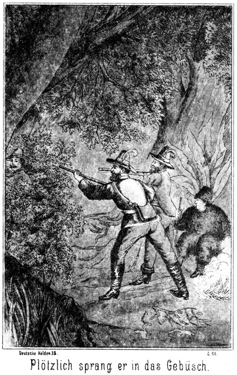Aber ganz im Gegentheile. Plötzlich sprang er in das Gebüsch, welches sich hinter ihm schloß. Im nächsten Augenblicke krachten zwei Schüsse hinter ihm her. Jim und Tim hatten geschossen, warfen dann die Gewehre weg, zogen die Messer heraus und stürzten ihm nach. Sie hatten das ferne Rauschen seiner Schritte gehört. Ob er getroffen worden sei, das konnten sie nicht sagen.
Sam war gemächlich sitzen geblieben. Er stand jetzt langsam vom Boden auf und nahm die beiden Gewehre zu sich; auch dasjenige Walkers. Er schüttelte den Kopf und brummte:
»Dummheit! Dummheit! Und das wollen richtige Westmänner sein! Unsinn, Unsinn!«
Er hatte Recht. Es war Walkern gar nicht eingefallen, sich in die Gefahr, von den Kugeln getroffen oder doch wenigstens ergriffen zu werden, zu begeben. Er war in die Büsche hineingesprungen mit dem Bewußtsein, daß man sofort schießen und ihm nachspringen werde. Kaum hatten sich die Zweige hinter ihm geschlossen, so machte er eine kurze Wendung nach rechts, that einige Schritte und duckte sich da nieder, sich nun ganz unbeweglich haltend.
Seine Berechnung zeigte sich als ganz richtig. Die beiden Schüsse fielen, und dann hörte er die Brüder an sich vorüber durch die Büsche dringen. Sie hatten das Geräusch, welches ihre Kugeln in dem Gebüsch hervorbrachten, für dasjenige des Flüchtlings gehalten.
Sam war langsam hinab an das Wasser gegangen, stieg in das Kanot, ruderte es vom Lande ab und hielt es dann in gewisser Entfernung vom Ufer. Das war nach seiner Ansicht das Allerbeste, was er thun konnte. Er war ein schlauer Kerl.
Walker seinerseits lauschte ein Weilchen. Als er kein Geräusch vernahm, kroch er langsam und vorsichtig, äußerst vorsichtig zurück. Er bemerkte, daß kein Mensch mehr beim Feuer sei.
»Sie sind mir nach!« dachte er. »Aber der dicke Sam auch? Er war ja lahm! Oder sollte er sich etwa verstellt haben? Kurz und gut, sie sind mir nach. Jetzt schnell zum Kanot! Meine Büchse haben sie leider mit.«
Er schlich sich nach dem Ufer. Der Kahn war weg. Er sah ihn zu seinem Schreck in einer Entfernung von vielleicht acht bis zehn Metern halten. Sam saß drinnen, wie an der unförmigen Pelzmütze zu erkennen war.
»Hole der Teufel diesen verdammten Hallunken!« fluchte Walker vor sich hin. »Ein Schlaukopf erster Größe ist dieser Fettwanst! Was man sich von ihm erzählt, scheint ganz wahr zu sein. Er hat das Aussehen und Gebahren eines Dummkopfes und ist dabei ein Pfiffikus, wie er im Buche steht. Donnerwetter! Meine Tasche liegt im Kahne. Die ist verloren, verloren!«
Er sann einen Augenblick nach; dann murmelte er:
»Oder noch nicht verloren! Sie werden natürlich zurückkommen; sie werden den Dicken sehen und mit ihm sprechen. Vielleicht gehen sie zum Feuer zurück, und ich kann mit dem Kanot entkommen. Ich muß unbedingt hören, was sie reden. Ich stecke mich also hier in das Ufergebüsch. Sie werden es nicht für möglich halten, daß ich die Verwegenheit habe, hier zu bleiben. Ich bin also vollständig sicher.«
Er versteckte sich ganz in der Nähe derjenigen Stelle, an welcher das Kanot vorher angebunden war, in die Büsche und wartete auf die Rückkehr seiner Verfolger, deren Enttäuschung jedenfalls eine große war.
Seine Geduld sollte nicht lange auf die Probe gestellt werden. Es raschelte bald in den Gebüschen und eine lange Gestalt erschien, mit einem Reiterhelm auf dem Kopfe. Es war Tim. Er blieb am Ufer stehen, gerade da, wo Walker steckte, höchstens vier Schritte von ihm entfernt, so daß der Letztere ganz deutlich hörte, wie der Lange überrascht vor sich hinmurmelte:
» Laek-a-day! Da sitzt der Hallunke in seinem Canot und wartet darauf, uns auszulachen! Wart, Bursche, ich will Dir Eins auf den Pelz brennen!«
Er erhob die Büchse oder wenigstens die Arme, als ob er schießen wolle. Er hatte in seiner Aufregung ganz vergessen, daß er ja sein Gewehr gar nicht bei sich habe. Er ließ also auch sogleich die Arme wieder sinken und fuhr ärgerlich fort:
»Verdammt! Da habe ich ja kein Gewehr! Ich werde es mir schnell holen und dann – – good laek! Das ist ja der Bursche gar nicht, sondern das ist Sam, der dicke Bär! Welch ein Glück, daß ich die Büchse nicht bei mir hatte, ich hätte ihm wirklich eine Kugel durch den Kopf gejagt! Wo aber steckt Jim?«
Er brauchte nicht erst lange zu fragen, sondern die Antwort erfolgte sogleich. Er hörte die Büsche rascheln und dann trat der Genannte herbei, laut athmend vom schnellen Laufe und vor Aufregung und Zorn.
»Tim, Du?« sagte er. »Hast Du ihn gesehen oder ist – – Himmel! Dort sitzt der Lump!«
»Du irrst! Dieser Gentleman, der da vor Anker liegt, ist Sam Barth, der Dicke.«
»Ah, wirklich! Was fällt dem Kerl denn ein?«
»Weiß auch nicht.«
»Das ist eine dumme Faxe. Anstatt sich da in das Boot zu setzen, konnte er den Flüchtling mit verfolgen. Ich werde ihm meine Meinung sagen. Als alter, erfahrener Westmann muß er doch wissen, was – –«
Er wurde unterbrochen, denn Sam fragte von dem Kanot herüber:
»Seid Ihr denn nun fertig mit Eurer Fernguckerei. Ich hoffe, Ihr haltet mich nicht länger für Den, der Euch jedenfalls entwischt ist.«
»Hat dieser Kerl Augen!« flüsterte Jim dem Bruder zu. »Uns in dieser Dunkelheit hier von dem Gesträuch zu unterscheiden! Das ist viel, das ist stark; das brächten wir freilich nicht fertig!«
Und laut fügte er hinzu:
»Was bleibt Ihr da draußen? Hat Euch Jemand angenagelt, Master Barth? Kommt herüber!«
»« Well, Sir! Sollt mich sogleich in die Arme schließen können.«
Er kam herbei, stieg aus und band das Kanot gerade da wieder an, wo es zuvor auch angebunden gewesen war. Tim antwortete unwillig:
»Von wegen dem in die Arme schließen irrt Ihr Euch, Master Sam. Eine solche Belohnung habt Ihr nun freilich nicht verdient.«
»Nicht? Wieso?«
»Euer Verhalten ist nicht dasjenige eines Westmannes, sondern das eines unerfahrenen Kindes.«
»Ah? Und ich dachte, doch gerade sehr klug gehandelt zu haben!«
»Oder vielmehr im Gegenheile ganz verkehrt, wie gesagt, wie ein Kind!«
»Auch gut! Bei uns in Deutschland giebt es ein Sprichwort, welches lautet: Was kein Verstand der Verständigen sieht, das merket in Einfalt ein kindlich Gemüth. Verstanden, Mesch'schurs?«
Der Ausdruck Mesch'schurs ist gleichbedeutend mit dem französischen messieurs, meine Herren.
»Ja, Einfalt, da habt Ihr Recht!« zürnte Jim. »Ihr hättet, anstatt Euch hier auf dem Wasser umher zu schaukeln, dem Flüchtling mit nachjagen sollen.«
»Meint Ihr?« lachte der Dicke. »Ja, dazu ist der alte Sam Barth doch zu dumm. Uebrigens konnte ich doch gar nicht laufen, ich war ja lahm.«
»Unsinn! Mit sechs Händen ist ein Fliehender jedenfalls leichter zu ergreifen, als mit vieren.«
»Ja, wenn die sechs Hände sechzig Augen hätten, um in der Nacht zu sehen. Ich habe jedenfalls meine Pflicht besser gethan als Ihr!!«
»Oho!«
»Nun, so will ich Euch erklären. Bei Nacht laufe ich keinem Flüchtigen nach. Ich kann ihn nicht sehen. Und will ich ihn hören, so muß ich stehen bleiben und lauschen. Indessen bekommt er einen solchen Vorsprung, daß ich ihn nun sicher aufgeben muß. Reißt mir des Nachts Einer aus, so lasse ich ihn ganz gemüthlich laufen und warte den Tag ab. Dann sehe ich seine Fährte und kann ihm folgen, so lange und so weit es mir beliebt. Ihr aber seid hinter diesem Walker hergelaufen und habt seine Spur so zerstampft, daß gar nicht daran zu denken ist, sie zu entdecken.«
»Hm! Ich muß sagen, daß dies nicht so übel klingt. Warum aber setzt Ihr Euch in den Kahn?«
»Auch eine sehr kluge Frage! Wer in einem Kanot fährt, der kann möglicher Weise in demselben irgend Etwas liegen haben. Nicht?«
»Sapperment! Lag etwas drinnen?«
»Ja. Hier dieses Dings da.«
Er bückte sich in das Kanot hinab, nahm aus demselben einen Gegenstand und reichte ihn Jim hin.
»Eine Tasche,« sagte dieser. »Und schwer. Was mag da drinnen sein? Vielleicht Munition, Bleikugeln. Sie ist schwer.«
»Habe das Ding bereits untersucht. Es sind allerdings Kugeln darin, daneben aber auch mehrere Geldrollen, Silberdollars, wie es scheint.«
»Das ist ein guter Fund. Weiter nichts? Keine Papiere oder sonst Etwas?«
»Nein. Seid mit dem Gelde zufrieden. Ein armer Jäger kann es immer gebrauchen.«
»Sehr richtig. Aber der Kerl selbst wäre mir doch tausendmal lieber, als sein Geld. Herrgott, wenn ich daran denke! Habe ihn vor mir stehen, grad da zwischen meinen Fäusten, und lasse ihn entwischen. Tim, was sagst Du dazu?«
»Daß wir die größten Esels sind, welche es jemals gegeben hat. Sehnen uns Jahre lang, den Kerl einmal zu treffen, und nun er uns geradezu in's Garn läuft, wie vom Himmel gefallen, lassen wir ihn entkommen. Ich schäme mich vor mir selber.«
»Recht so!« lachte Sam. »Schämt Euch ein Bischen! Aber das können wir auch dort bei unserem Feuer thun. Oder sind wir hier angewachsen?«
»Ja, gehen wir. Unsere Gewehre liegen auch noch dort.«
»Nein. Wollt Ihr gefälligst die Güte haben, sie Euch hier aus dem Kanot zu nehmen.«
»Hier? Warum habt Ihr sie denn mit in das Boot genommen, Sam?«
»Das begreift Ihr nicht?«
»Nein.«
»Das ist sehr verwunderlich,« lachte er. »Ich wollte verhüten. Daß Ihr damit ein Unheil anrichtet. Ihr hättet den armen Teufel treffen können.«
»Mensch! Ist das Euer Ernst?«
»Ja, mein völliger Ernst. Laßt diesen Walker laufen! Was habt Ihr davon, wenn Ihr ihn tödtet? Nichts, gar nichts. Kommt! Jetzt schlafen wir, und dann am Morgen können wir ja sehen, ob wir seine Fährte denn doch vielleicht noch entdecken. Viel liegt mir freilich nicht daran. Wir wollen nach Lebanon zum Rendez-vous, wo uns die Kameraden erwarten, und wenn wir eine halbe Ewigkeit daran wenden, den Tapfen irgend eines Menschen nachzulaufen, so kommen wir zu spät und haben das Nachsehen.«
Er schritt nach dem Feuer zu. Sie verstanden ihn nicht. Was wollte er mit seinen letzten Worten? Von dem Städtchen Lebanon, welches eine Tagereise von hier lag, war doch gar nicht die Rede gewesen! Daß er aber irgend eine Absicht hatte, das verstand sich ganz von selbst. Sie nahmen also die Gewehre an sich und folgten ihm.
Beim Feuer angekommen, fragte Jim:
»Was meintet Ihr denn mit – –«
»Haltet den Schnabel!« unterbrach ihn der Dicke leise, aber hastig. »Setzt Euch nieder und wartet es ab!«
Er bückte sich nieder und kroch in den nächsten Busch. Sie hörten, daß er die Runde machte. Dann kehrte er zurück und setzte sich zu ihnen.
»Sprecht so leise, daß nur wir uns hören!« sagte er.
»Denkt Ihr etwa, daß der Kerl noch da ist?«
»Denkt Ihr es etwa nicht?«
»Oho! So dumm wird er doch nicht sein?«
»Oder vielmehr so gescheidt. Ich sage Euch, daß ich an seiner Stelle ganz einfach hier geblieben wäre. Ich hätte mich hinter den nächsten Busch niedergeworfen und Euch vorbei laufen lassen. Dann würde ich warten, bis Ihr zur Ruhe seid und mich mit dem Kanot davon machen.«
»Sam, Ihr seid wirklich ein verwegener Schlingel!«
»Andere sind es auch!«
»Und Ihr meint, daß er auf denselben Gedanken gekommen sein könne?«
»Ja. Er sah mir gar nicht aus wie Einer, der da auf die Nase gefallen ist; er hatte ein raffinirtes Spitzbubengesicht und so ist ihm dieser Gedanke sehr wohl zuzutrauen. Uebrigens hatte er seine Tasche mit dem Gelde im Boote. Schon um ihretwillen mußte er versuchen, wieder zu seinem Eigenthum zu gelangen.«
»Sam, Ihr seid wirklich kein unebener Kerl. Ich mache Euch mein Compliment.«
»Gebt Euch keine Mühe! Ein Compliment von zwei Dummköpfen, die einem Dritten dahin nachlaufen, wo er gar nicht zu finden ist, ist doch wahrhaftig nicht viel werth. Und dabei redet Ihr davon, daß ich es sei, der die Dummheiten gemacht habe! Ich sage Euch, der Kerl wäre längst mit seinem Kanot fort, wenn ich mich nicht hineingesetzt hätte!«
»So wird er nun fortgehen!«
»Das soll er auch!«
»Wie? Das soll er auch?«
»Jawohl!«
»Fortgehen? Uns entkommen?«
»Natürlich!«
»Aber, Master, habt Ihr denn vergessen, daß wir ihn ergreifen wollen?«
»Nein, ich denke sogar sehr daran.«
»Aber wenn wir ihn ergreifen wollen, dürfen wir ihn doch nicht entwischen lassen.«
»Mesch'schurs, Ihr dauert mich! Ich habe wirklich herzlich Mitleid mit Euch!«
Er schüttelte den Kopf und blinzelte sie mit seinen kleinen Aeuglein an, als ob sie soeben die größte Albernheit ihres Lebens begangen hätten. Darüber wurde Tim beinahe zornig. Er sagte:
»So beweist uns doch, daß wir Mitleid verdienen!«
»Der Beweis ist schon da; Ihr selbst habt ihn ja geliefert. Ihr wollt den Mann fangen, indem Ihr ihn nicht entkommen laßt. Das ist falsch. Das Richtige ist vielmehr, daß wir ihn entwischen lassen, um ihn in unsere Gewalt zu bringen.«
»Diesen unsinnigen Widerspruch verstehe der Teufel!«
»Der versteht ihn freilich ganz gewiß, denn er heißt nicht Jim oder Tim.«
»Master, wollt Ihr uns beleidigen?«
»Nein, nur belehren will ich Euch. Ich sehe ja ein, daß Ihr der Belehrung noch sehr bedürft. Nehmen wir an, daß Walker sich noch in unserer Nähe befindet. Kennt Ihr den Platz, an welchem er steckt?«
»Nein,« antwortete Tim.
»Oder getraut Ihr Euch etwa, diesen Platz zu suchen?«
»Nein, das ist in dieser Finsterniß unmöglich.«
»Wie wollt Ihr ihn also fangen?«
»Sehr leicht. Er will mit dem Kahne fort. Wir haben uns also nur in der Nähe desselben zu verbergen, um den Kerl zu erwarten und zu ergreifen.«
»O wehe! Da kriegt Ihr ihn niemals!«
»Warum?«
»Weil er selbst jedenfalls bereits in der Nähe des Kanots steckt, um den günstigen Augenblick zu erwarten. Er würde Euch also kommen sehen und auf den Kahn verzichten. Er würde sich auf Nimmerwiedersehen davonschleichen.«
Sam hatte während der ganzen leisen Unterredung zuweilen den Kopf erhoben, als ob er auf Etwas lausche. Tim antwortete:
»Eure Ansicht ist abermals ganz ausgezeichnet. Also Ihr glaubt an die Möglichkeit, den Kerl doch noch zu erwischen?«
»Sehr.«
»Aber wenn er uns jetzt entkommt, so ist er weg!«
»Pshaw! Aus der Welt geht er nicht. Und sein Boot kann auch nicht geradezu hinauf in den Himmel fahren. Wir gehen früh den Fluß hinab. Wo das Boot liegt, ist der Mann ausgestiegen, und es müßte geradezu mit dem Teufel zugehen, wenn drei Westläufer, wie wir sind, ihn nicht zu finden vermöchten.«
»Und wenn er auf das Boot verzichtet hat und doch vorhin entflohen ist? In diesem Falle gebt Ihr ihn doch für uns verloren?«
»Auch dann nicht. In drei Stunden wird es hell. Da haben sich die Spuren noch nicht verwischt. Wir werden sie sicherlich entdecken.«
»Aus Euch werde der Teufel klug, Sam! Einmal sprecht Ihr so und einmal das gerade Gegentheil!«
»Wirklich?«
»Ja, vorhin, als wir am Wasser standen, hieltet Ihr es für unmöglich, die Fährte aufzufinden.«
»So? Habe ich das gesagt?« schmunzelte Sam. »Da habe ich wohl meine Gründe dazu gehabt, und es thut mir abermals sehr leid um Euch, daß Ihr mich so wenig begreift. Glaubt Ihr denn, daß ich so dumm bin, meine wirkliche Ansicht und Absicht laut in die Welt hinaus zu schreien, wenn ich fast genau überzeugt bin, daß Derjenige, auf den ich es abgesehen habe, sich in der Nähe befindet?«
»Aha! So ist das! So – so!«
»Ja, so – so! Der Zufall giebt Euch den Kerl in die Hand. Wollt Ihr durch fehlerhaftes Verhalten ihn Euch wieder entwischen lassen? Ich habe nichts dagegen. Thut, was Ihr wollt! Mich geht diese Geschichte ja gar nichts an!«
»Nein! Ihr habt Recht, Master Barth. Wir werden uns nach Eurem Rathe richten. Ihr meint also, daß wir jetzt ruhig liegen bleiben sollen, um ihn entkommen zu lassen?«
»Nein. Ich meine, daß Ihr jetzt mit mir hinab zum Kanot gehen sollt.«
Tim blickte ihm erstaunt in das Gesicht.
»Seid Ihr des Teufels!«
»Nein, wohl nicht.«
»Soeben riethet Ihr uns, uns nicht um das Boot zu bekümmern, und nun sagt Ihr, daß wir hingehen sollen! Sir, wir haben erfahren, daß Ihr ein feiner Kopf seid; jetzt aber rappelt es wohl ein Wenig!«
»Ja, es rappelt, aber nicht in meinem Kopfe, sondern in den Eurigen beiden. Habt Ihr denn nichts gehört?«
»Nein. Was sollten wir gehört haben?«
»Das, was ich gehört habe. Kommt einmal mit!«
Er stand auf und schritt mit ihnen nach dem Boote.
»Nun, wo ist es?« fragte er.
»Donnerwetter! Fort!«
»Ja. Seht einmal da hinüber! Dort schwimmt es.«
»Ja, aber es ist Niemand drin.«
»Pshaw! Meint Ihr, daß sich der Mann Euch präsentiren soll? Er hat sich in das Boot gelegt. Wir sollen denken, es sei fortgeschwommen, weil es nicht fest angebunden gewesen ist.«
»So ist es, ja. Aber ich denke, es ist das Allerbeste, wenn wir ihm einige gute Kugeln hinüberschicken.«
»Dummheit!«
»Warum Dummheit? Meint Ihr, daß wir nicht treffen werden?«
»Das meine ich nicht. Auf diese sechzig Fuß schieße ich des Nachts einen Namen in das Boot. Aber was nützt es Euch? Einen solchen Kerl muß man lebendig haben. Was kann Euch an seiner Leiche gelegen sein?«
»Ihr habt abermals Recht. Lassen wir ihn also. Wenn es licht geworden ist, streichen wir am Ufer hin. Da werden wir wohl den Ort entdecken, wo er das Boot gelassen hat.«
»Hm!« lachte Sam. »Nun seid Ihr auf einmal so ganz siegesgewiß. Da muß ich Euch doch einen Dämpfer aufsetzen. Der Kerl ist gescheidt, wie Ihr nun erfahren habt, denn er ist wirklich hier geblieben, um desto sicherer zu entkommen. Es ist sehr leicht möglich, ja sogar wahrscheinlich, daß er uns abermals irre zu führen sucht. Zunächst wissen wir ja gar nicht, an welchem Ufer er aussteigen wird.«
»So müssen wir uns theilen. Wir suchen hüben und drüben.«
»Ja. Wie aber kommt man hinüber?«
»Hier giebt es Buschwerk genug, um aus Reißigbündeln ein kleines Floß zu bauen, welches einen Mann trägt.«
»Richtig. Ich werde mich hinübergondeln. Der Fluß ist nicht breit. Wir können uns von beiden Ufern aus sehen und uns Zeichen geben. So weit wäre Alles glatt und gut. Aber ich denke mir, daß der Kerl nicht da aussteigt, wo er zu suchen ist. Er wird natürlich annehmen, daß wir ihm folgen und daß wir zunächst nach dem Kanot suchen werden. Ist er so klug, wie ich ihn beurtheile, so wird er irgendwo aussteigen und das Canot weiterschwimmen lassen.«
»Das wäre dumm!«
»Nicht so sehr, wie es scheint. Das Ufer ist überall sandig oder wenigstens von weichem Boden. Er muß also unbedingt eine Spur zurücklassen, wo er aussteigt. Wir finden hier jedenfalls einen Eindruck seines Fußes, betrachten uns denselben genau und können uns dann darnach richten. Er hatte keine Prairiestiefel an, sondern neue Stiefeletten. Mir scheint, er kommt flußabwärts von Fort Gibson vielleicht, wo er sich diese Fußbekleidung gekauft hat. Eine solche Fährte läßt sich kinderleicht von anderen Spuren unterscheiden. Jetzt aber, Mesch'schurs, wollen wir versuchen, ein kleines Endchen herunter zu schlafen. Morgen ist unser Tagewerk groß. Wir müssen diesen Kerl fangen und sodann zu jenem Master Wilkins, um ihn vor der Diebesbande zu warnen, nötigenfalls ihm beizustehen. Ich lege mich nieder. Good night!« –
Ein sonniger, goldener Frühlingsmorgen war über Wilkinsfield aufgegangen. Die Strahlen des Tagesgestirns funkelten auf den Wellen des Flusses und glitzerten in den Thautropfen, welche gleich strahlenden Demantperlen auf den Blättern und Blüthen saßen. Die Neger und Negerinnen, welche zur Pflanzung gehörten, zogen schwatzend hinaus auf die Baumwollenfelder. Der Lärm, welchen sie machten, klang von Weitem wie das Geräusch, welches eine Schaar schwatzender Staare macht. Auch im Herrenhause, in den Wirthschaftsgebäuden und im Garten hatte das Tagewerk begonnen. Nur unten am Flusse war es noch ruhig. Da war kein Mensch zu erblicken.
Und doch einer! Ein indianisches Kanot kam abwärts geschwommen. In demselben saß – Walker. Er hielt auf das Ufer zu. Es war jedenfalls seine Absicht, hier das Boot zu verlassen. Aber er that dies nicht, ohne die gebotene Vorsicht anzuwenden. Er musterte das Ufer mit scharfen Blicken, und erst da, wo es aus großen Steinen bestand, welche keine Spur hinterließen, legte er an. Er sprang heraus, reckte und dehnte die Glieder und sagt zu sich:
»So, da bin ich. Hoffentlich mache ich gute Geschäfte. Wäre ich diesen drei verdammten Kerls gestern Abend nicht begegnet, so könnte ich hier ganz offen auftreten und meine Forderungen stellen, wie es ja auch meine Absicht war. Aber jedenfalls verfolgen sie mich, und wenn sie mich finden, so bin ich verloren. Ich muß also heimlich thun, wenigstens für die erste Zeit. Dieser dicke Bär hat mich an das Land gelockt. Ich möchte nur wissen, woher sie wußten, daß ich es bin! Hm! Unbegreiflich!«
Er schüttelte den Kopf, ließ den Blick forschend flußaufwärts schweifen und meinte dann:
»Ich werde sie irre führen. Ganz gewiß suchen sie nach dem Kanot. Wo sie es finden, da werde ich nach ihrer Meinung ausgestiegen sein. Ich lasse es also von hier aus weiter treiben. Und damit es nicht wegen seiner Leichtigkeit baldigst wieder an das Ufer geht, beschwere ich es mit einigen Steinen.«
Er legte mehrere größere Steine hinein, daß es nun so tief ging, als ob ein Mann darin sitze. Dabei nahm er sich in Acht, ja keine Spur seines Fußes zu hinterlassen. Dann gab er dem Kanot einen Stoß, daß es wieder in das tiefere Wasser zurückglitt und von demselben schnell mit fortgenommen wurde. Er blickte ihm nach, fuhr aber erschrocken mit dem Gesichte auf dem Lande herum, als er plötzlich durch den lauten, kreischenden Ruf einer weiblichen Stimme aus seiner Betrachtung aufgestört wurde.
»Jessus, Jessus! Da schwimmt es fort!«
Zwei Negerinnen waren vom Garten her auf der Höhe des Ufers erschienen. Sie trugen einen riesigen Korb mit Wäsche, mit welcher sie sich am Flusse zu beschäftigen hatten. Sie erblickten ihn und auch das Boot. Und da sie nicht glauben konnten, daß er selbst es fortgestoßen hatte, so war die Eine von ihnen in den Schreckensruf ausgebrochen.
Diese Begegnung war ihm außerordentlich unangenehm, doch durfte er sich dies nicht merken lassen. Er wendete sich also den Beiden zu, zuckte bedauernd die Achsel und sagte:
»Ja, da geht es hin. Ich hatte vergessen, es anzubinden.«
»Weiter unten hängt ein Boot unseres Herrn. Wenn Ihr schnell macht und hineinsteigt, könnt Ihr das Eurige noch einholen.«
»Schon gut! Ich brauche es nicht mehr. Wer seid Ihr?«
Als er sie jetzt musterte, zeigten sie, verlegen lachend, die weißen Gebisse. Die Aeltere antwortete:
»Wir sind My und Ty.«
My und Ty sind Abkürzungen von Mary und Tony. Der Neger liebt solche Abkürzungen, doch sind sie auch dem Amerikaner überhaupt geläufig. Die Namen der beiden Brüder Snaker zum Beispiel, Jim und Tim, sind die Abkürzungen von Joachim und Timotheus.
»My und Ty also! Wer ist My!«
»Ich bin es,« meinte die Aeltere, verschämt an dem weißen Busentuche zupfend.
»Habt Ihr Männer?«
»Jessus, Jessus! Ob wir Männer haben! Wir sind Mädchen, jungfräuliche Mädchen, Massa!«
»So, so! Bei wem dient Ihr?«
»Bei Massa Wilkins hier. Wir sind in der Küche.«
»Ist Euer Massa gut?«
»Sehr gut, sehr gut.«
»Und wie seid Ihr mit seiner Tochter zufrieden?«
»Noch viel guter, noch viel sehrer gut!«
»Sind Beide daheim?«
»Ja. Massa trinkt Thee und Missis Chocolade.«
»So besitzen also Beide die Liebe aller Untergebenen?«
»Ja, die Liebe, die sehr allergrößte Liebe.«
»Das ist schön! Das freut mich! Es giebt also Niemand, der mit der Herrschaft unzufrieden ist?«
»Nein, Keinen.«
Da aber fiel die Jüngere gleich ein:
»Einen, o Einen kenne ich.«
»Wer ist das?«
»Bommy, der böse Bommy.«
»Das ist auch ein Neger, ein Diener!«
»Kein Diener, kein Neger, sondern ein verdammter Nigger, ein armseliger Nigger.«
Nigger ist die beleidigende, beschimpfende Form des Wortes Neger. Dieses Wort nahm sich freilich in dem Munde einer Schwarzen spaßhaft aus.
Die Absicht, in welcher Walker nach Wilkinsfield gekommen war, ließ es ihm gerathen erscheinen, sich an einen Mann zu halten, welcher mit dem Herrn der Besitzung auf gespanntem Fuße lebte. Darum hatte er die letzteren Fragen gethan, und darum erkundigte er sich weiter:
»Wo wohnt denn dieser Bommy?«
»Zwischen hier und der nächsten Plantage, gerade hier durch den Garten hindurch, drüben über das Zuckerfeld, da erblickt man am Rande des Gehölzes seine Hütte, in welcher er Gin und Wisky schenkt.«
»So ist er ein Schänkwirth?«
»Ja. Er wurde freigegeben und erhielt die Hütte geschenkt. Da er nicht arbeiten will, so ließ er sich Schnaps kommen, ihn zu verkaufen. Unser Massa aber hat verboten, von Bommy Schnaps zu trinken; darum ist Bommy zornig.«
»Der schlechte Mensch,« meinte Walker, das Lachen verbeißend. »Bleibt Ihr lange hier am Flusse?«
»Mehr ganz viele Stunden.«
»So will ich Euch Etwas sagen. Habt Ihr mich gesehen?«
»Ja.«
»Nein, Ihr habt mich nicht gesehen. Verstanden?«
Sie sperrten Jede den großen Mund auf und blickten ihn im höchsten Grade verwundert an. Sie konnten es nicht begreifen, einen Mann nicht gesehen zu haben, welcher doch vor ihnen stand.
»Jessus, Jessus!« meinte My. »Wir sehen doch Massa leibhaftig hier stehen!«
»Aber Ihr dürft mich nicht gesehen haben! Es werden Leute hier vorüberkommen, welche Euch nach mir fragen werden. Denen sagt Ihr, daß ich hier vorübergefahren bin, in meinem indianischen Kanot, immer flußabwärts. Habt Ihr mich verstanden?«
»Ja, ja!« nickten Beide.
»Liebt Ihr die Prügel?«
»Jessus, Jessus! Wer sollte Prügel lieben!«
»So will ich Euch sagen, daß Ihr viele Prügel erhalten werdet, wenn Ihr mich verrathet.«
»Wir verrathen nichts!«
»Gut! Ihr sagt, daß ich vorübergefahren bin. Vergeßt es nicht!«
Er stieg vollends das ziemlich steile Ufer hinauf und folgte dem angegebenen Wege in den Garten hinein.
Dieser war parkähnlich angelegt worden; aber die überwältigende Vegetation des Südens hatte ihn bereits wieder in eine halbe Wildniß verwandelt. Man konnte hier unter den Bäumen gehen, ohne nöthig zu haben, sich von Jemand sehen zu lassen. Das war Walker sehr lieb. Er wollte ja zunächst nur recognosciren. Darum schritt er immer weiter und vermied alle freien Plätze an denen er vorüber kam.
Das Herrenhaus machte einen imposanten Eindruck. Es war schloßartig im Style der späteren Renaissance gebaut, aber, dem südlichen Klima angemessen, mit luftigen Balkonen und Veranden reich versehen. In einer der Veranda's bot sich Walkern ein Bild von wunderbarer Schönheit.
Auf einer Hängematte ruhte ein junges, weibliches Wesen, augenscheinlich noch von dem dummen Schlafgewande umhüllt, welches die herrlichen Arme und die kleinen Füßchen frei ließ. Das aufgelöste Haar hing schwarz und glänzend von der Hängematte fast bis auf den Boden herab. Das Gesichtchen war wohl scharf angelegt aber höchst fein gezeichnet und in Folge seiner weichen Plastik und des morgenrothen Hauches, welcher die alabasterne Weiße belebte, von einer Schönheit, wie man sie selbst in jenem gesegneten Süden nur selten einmal zu sehen bekommt. In der Hand des einen, in das Netzwerk der Hängematte gestemmten Armes ruhte das herrliche Köpfchen. Dieser Arm erhielt in Folge seiner Lage eine scheinbar gesteigerte Ueppigkeit. Auf der anderen, ein Wenig ausgestreckten Hand, saß ein Papagei, mit welchem das schöne Mädchen scherzend plauderte. Ueber ihr hing an einer Schaukel ein kleines, allerliebstes Löwenäffchen, und vor der Veranda putzte ein an eine Eisenstange geketteter Felsenadler sein glänzendes Gefieder. Dazu bildeten blühende, in den feurigsten Farben prangende Lianen einen Rahmen um das lebendige Gemälde, welches den Gedanken nahe legte, die Fee der Tropen sei für diesen herrlichen Morgen ihrem üppigen Lager entstiegen, um einmal wonneathmend ihr Herz in menschlichen Gefühlen schlagen zu lassen.
Lange stand Walker hinter dem Baume. Er verschlang das schöne, kaum verhüllte Mädchen fast mit den Augen. Er hörte den süßen, verlockenden Ton der Sirenenstimme:
» Mon chéri, mon favori, mon doucereuse – mein zärtlich Geliebter, mein Liebling, mein Süßer!«
Und der Papagei antwortete darauf:
» Ma Belle, ma Charmante, ma petite femelle – meine Schöne, meine Bezaubernde, mein kleines Weibchen!«
Da langte das Löwenäffchen herab, zupfte sie leise im Haare und warf ihr, als sie lächelnd zu ihm emporblickte, ein ganzes Dutzend Kußhändchen zu. Gewiß hatte er das erst von ihr gelernt.
Jetzt drehte der Papagei den Kopf von ihr weg, blickte sich suchend um und rief sehr laut:
» Mon amant, mon bien-aimé, où est-tu? Où est-tu? Mein Schatz, mein Geliebter, wo bist Du? Wo bist Du?«
In jenen Gegenden wird nämlich vorzugsweise französisch gesprochen. Die schöne Herrin gab ihm mit dem Finger einen zarten Streich und sagte:
»Still! Einen Geliebten darf Niemand haben.«
Er aber schüttelte sich, stieß ein wunderbar menschlich klingendes Kichern aus und antwortete flügelschlagend:
» Je suis monsieur Adler, monsieur Adler, le bon monsieur Adler – ich bin Herr Adler, Herr Adler, der gute Herr Adler!«
Adler hieß, wie bereits erwähnt, der deutsche Oberaufseher der Plantage. Die schöne Herrin des Vogels erglühte bis an die Schläfe, obgleich kein Mensch vorhanden war oder wenigstens vorhanden zu sein schien. Sie sprang auf und verschwand mit dem Papagei in der Thür, welche aus der Veranda nach ihren Gemächern führte.
»Welch ein Weib!« sagte Walker, indem er sich mit der Hand über die Stirn fuhr. »Verdammt, daß ich nicht offen auftreten kann! Ich würde sie zu zwingen wissen, meine Frau zu werden. Zwar habe ich bereits drei Weiber, meine eigentliche Frau und zwei Indianerinnen; aber die würden doch nichts erfahren. Für sie wäre ich verschwunden. Ich werde hier abwarten, was diese drei Jäger gegen mich vornehmen. Ist diese Gefahr vorüber, so weiß ich, was zu thun ist. Jetzt nun zunächst nach dem Zuckerfelde und zu Bommy, dem schwarzen Schänkwirthe. Vielleicht gewinne ich an ihm einen Verbündeten gegen den Besitzer der Plantage.«
Er schlich sich weiter und gelangte auch glücklich aus dem Garten, ohne von Jemand gesehen zu werden.
My und Ty, die beiden Negerinnen, hatten sich wohl über zwei Stunden lang mit ihrer Wäsche beschäftigt. Negerinnen schwatzen gern und lachen noch viel lieber. Die geringste Kleinigkeit giebt ihnen Veranlassung, ihrer Lachlust freien Lauf zu lassen. Darum wurde den Beiden die Zeit gar nicht lang. Sie lachten und schwatzten aus dem Hundertsten in das Tausendste und waren dann ganz erstaunt, als sie bemerkten, daß sie nur einen ganz kleinen Theil ihrer Arbeit verrichtet hatten.
Nun erschraken sie darüber und fielen mit zehnfachem Eifer über die Wäsche her. Dabei hörten sie gar nicht, daß sich Schritte näherten. Sie wurden auf den Mann, welcher am Ufer daherkam, erst aufmerksam, als er sie grüßte:
» Good morning, girls!«
Da richteten sie sich von der Arbeit auf, drehten sich nach dem Sprecher um und stießen zugleich einen Schrei des Entsetzens aus.
»Jessus! Ein Bär!« kreischte My.
»Ein Ungeheuer!« schrie Ty.
»Er wird uns fressen! O Gott! O Herr! O Massa, o Massa!«
Sie schlug die Hände über dem Kopfe zusammen und sank in die Knie.
»Fliehen wir, fliehen wir!« brüllte Ty.
»Wohin denn?«
Sie hatte Recht. Hinter ihnen war der Fluß und vor ihnen der Bär. Zu den Seiten konnten sie keine Rettung finden, da dieser Weg dem Bären ja auch zur Verfügung stand.
»Schreit nicht so, Ihr Ungeziefer!« lachte Sam Barth. »Seht Ihr denn nicht, daß ich ein Menschenangesicht habe! Oder besitze ich wirklich eine so entsetzliche Bärenschnauze?«
Jetzt erst erinnerten sie sich, daß er sie ja mit menschlichen Worten und zwar ganz freundlich gegrüßt hatte. Auch sahen sie ihn sich genauer an, und da blickten sie dann in ein rundes, volles Gesicht, in welchem die Gutmüthigkeit hausbacken zu sein schien. Das gab ihnen ihre Courage zurück. My erhob sich aus ihrer knieenden Stellung und jammerte:
»Welch ein Schreck! Meine Strümpfe sind zersprungen.«
Sie waren aber vorher bereits zerrissen.
»Ich bin todt!« klagte Ty. »Ich habe vor Angst die Sprache verloren!«
»Das höre ich!« kicherte Sam. »Sagt mir doch einmal, Ihr Mädels, sehe ich denn wirklich gar so Furcht erweckend aus?«
»Ihr nicht, aber Euer Fell.«
»Mein Fell! Aha! Ihr denkt, es ist mir auf den Leib gewachsen. Na, da schaut her!«
Er nahm die Mütze ab, und nun sahen sie den ganzen, entblößten Kopf. Erst jetzt erkannten sie, daß sie es mit einem Menschen zu thun hatten, und ihr Entsetzen verwandelte sich schnell in das Gegentheil. Sie lachten laut auf und sprangen um den Jäger, sich ihn einmal genau zu betrachten. Er ließ es schmunzelnd geschehen; dann sagte er:
»Seid Ihr nun überzeugt, daß ich ein Mensch bin?«
»Ja,« antwortete My. »Ein Mann, ein Monsieur, ein schöner, viel hübscher, drolliger Massa.«
»Drollig? Na, meinetwegen! Von Euch schwarzen Ameisen will ich es mir gefallen lassen. Wer ist denn Euer Herr?«
»Massa Wilkins.«
»Ah! So! Ist er zu Hause?«
»Ja. Massa trinkt Thee.«
Sie vergaß, daß seit vorhin fast drei Stunden vergangen waren und daß Massa nun wohl nicht mehr Thee trinken werde.
»Wie lange wascht Ihr bereits hier?«
Sie blickte in den Wäschekorb und sah, wie wenig fertig geworden war. Darum antwortete sie:
»Einige kleine, ganz kleine Minuten.«
So eine Schwarze hat absolut keinen Sinn für die Zeit. Sam kannte das. Er trat näher und untersuchte die Tapfen, welche ihre nackten Füße im nassen Ufer getreten hatten. Dann fragte er:
»Wie heißt Du?«
»My, und Diese hier ist Ty.«
»Dann, meine liebe My, bist Du eine sehr große Lügnerin!«
»Was? My Lügnerin? O Massa, ich lüge nicht.«
»Aber soeben hast Du gelogen. Du sagtest, daß Ihr Euch erst seit einigen kleinen Minuten hier befändet, und Ihr seid jedenfalls schon seit Stunden hier.«
»O, einige kleine Stündchen, ja.«
Sie sagte das so unbefangen, als ob zwischen Minuten und Stunden nicht der geringste Unterschied sei. Sam nahm ihr das nicht übel. Er nickte ihr lachend zu und fragte dann:
»Was sagte er denn zu Euch?«
»Er? Wer?«
»Der Mann, welcher hier aus dem indianischen Kanot stieg.«
Sie hatten keine Ahnung, daß er nur auf den Strauch schlug; sie wußten vor Erstaunen gar nicht, was sie sagen sollten. Sie sollten schweigen, und dieser wußte es schon!
»Nun, Antwort!« drängte der Dicke.
Beide blickten sich rathlos an. Der Andere hatte mit Prügeln gedroht, dieser aber hatte ein Bärenfell an und eine Büchse in der Hand; er war jedenfalls noch fürchterlicher als der Erstere. My war die Klügste von Beiden. Sie sollte sagen, daß der Mann im Canot weiter gefahren sei, und sollte verschweigen, daß er in den Garten gegangen sei. In ihrem negerhaften Scharfsinne, beschloß sie, sehr klug zu sein und einen Ausweg zu suchen, indem sie das Gebotene und Verbotene mit einander in's Gleichgewicht bringe; darum antwortete sie beherzt, indem sie mit der Hand nach der Plantage zeigte:
»Er kam und ist auf seinem Canot hier in den Garten hinein gefahren.«
Sam brüllte beinahe auf vor Lachen.
»Mädchen, bist Du verrückt! Im Garten ist ja kein Tropfen Wasser. Nicht wahr, er ist hier ausgestiegen?«
»Ja,« gestand sie.
»Das Canot ist hier auf dem Wasser fortgelaufen?«
»Ja, Massa.«
»Und der Mann ist auf seinen Beinen hier in den Garten hinein gerudert?«
»Sehr gerudert!« nickte sie.
»Er hat Euch verboten, es zu sagen?«
»Wir sollen Prügel erhalten.«
»Habt keine Sorge! Diese Prügel wird er selbst erhalten; darauf könnt Ihr Euch verlassen!«
Das erweckte ihr Vertrauen, und nach einigen weiteren kurzen Fragen erfuhr er jedes Wort, welches Walker mit ihnen gesprochen hatte. Auch daß weiter unten ein Boot liege, sagten sie ihm bei dieser Gelegenheit.
»Könnt Ihr rudern?« fragte er.
»Rudern? Ja,« antwortete My in stolzem Tone. »Wir rudern Missis alle Tage auf dem Wasser.«
»So schaut einmal da hinüber nach dem anderen Ufer! Seht Ihr die beiden Männer dort stehen?«
Die Beiden beschatteten ihre Augen mit den schwarzen, dicken Händen und nickten bejahend. Der Fluß war hier gar nicht breit, so daß die langen, dürren Gestalten der Brüder sehr genau erkannt werden konnten. Ty sagte:
»Es ist ein Pfarrer mit einem Soldatenkopfe und ein Soldat mit einem geistlichen Käppchen.«
»Ja. Diese beiden Masters sind meine sehr guten Freunde. Sie wollen gern herüber und haben kein Fahrzeug. Wenn Eine von Euch ihnen das Boot hinüberbringen will, so gebe ich Euch hier dieses prachtvolle Bild, an welchem Ihr sehen könnt, was für einen Hut Ihr Euch jetzt kaufen müßt. So wie dieser hier sind sie seid Kurzem in der Mode.«
Er öffnete seinen Bärenpelz und zog ein vielfach mit Brüchen versehenes Papier hervor. Es war ein Blatt aus irgend einem alten illustrirten Journale. Selten hat ein Prairiejäger ein Stück Papier bei sich. Dieser Seltenheit wegen hatte Sam es heilig gehalten. Wohl Hunderterlei war bereits darinnen eingewickelt gewesen. Fett-, Ruß-, Schmutz- und Blutflecke befanden sich in Menge darin, so daß es ganz transparent geworden war und die druckschwarzen Buchstaben der einen Seite auf der anderen verkehrt und deutlich gesehen werden konnten. Der Holzschnitt ließ sich dennoch so leidlich erkennen. Er zeigte einen Mädchenkopf mit mongolischen Gesichtszügen; auf diesem Kopfe saß ein südchinesischer Binsenhut mit einer Krämpe, welche den Umfang eines für zehn Personen bestimmten Familienregenschirmes hatte. Darunter standen die Worte: »Eine chinesische Schönheit aus der Zeit des Kaisers Fung lu tschu, fünfhundert Jahre vor der Geburt Christi.«
Sam glättete das Papier und zeigte das Bild den beiden Schwarzen. Bekanntlich sind die Negerinnen außerordentlich eitel. Sie lieben auffällige Formen und schreiende Farben. Als My und Ty den Kopf und nun gar den Hut erblickten, schlugen sie vor Freude die Hände zusammen, stießen vor Entzücken ein Gelächter aus, daß man ihnen ganz deutlich bis an den Gaumen sehen konnte, und die Erstere rief:
»Welch' ein Hut! O Jessus, Jessus! Wie schön! Wer ist diese vornehme Dame?«
»Eine Negerkönigin aus New-York. Sie hat dreihundert Millionen im Vermögen und trägt stets die neuesten Hüte.«
»Und das Bild soll unser sein?«
»Ja, wenn Eine von Euch das Boot hinüberschafft.«
»Ich thue es!«
»Nein ich!«
Es begann ein Wettstreit, wer rudern solle und also Besitzerin sein werde. Sam entschied den Streit in der Weise, daß er sagte, das Bild werde er in zwei Theile zerschneiden, von denen Jede einen erhalten solle; Diejenige aber, welche die rechte Hälfte des Hutes erhalte, solle rudern.
Beide waren einverstanden. Ty erhielt die betreffende Seite des kostbaren Bildes und eilte schleunigen Laufes nach dem Boote. My aber hielt ihre Hälfte hoch empor, tanzte vor Entzücken und stieß dabei allerlei Wonnerufe aus, daß Einer, der sie von Weitem hörte, hätte meinen können, sie sei von einer Tarantel gestochen worden.
Sam kümmerte sich nicht um sie. Er untersuchte mit gewohnter Sorgfalt den Boden, und zwar nicht vergeblich. Am Ufer war freilich nichts zu finden, da Walker dort seine Spuren vertilgt hatte. Aber am Rande des Gartens bemerkte Sam's scharfes, geübtes Auge mehrere niedergedrückte Halme. Dieses Zeichen wiederholte sich in schrittweiten, regelmäßigen Entfernungen, so daß kein Zweifel vorhanden sein konnte, daß hier Jemand gegangen war.
Unterdessen war Ty am anderen Ufer angekommen. Jim und Tim stiegen ein, und da die Beiden in der Führung eines Kahnes geschickter waren als die Negerin, so dauerte es nur ganz kurze Zeit, bis sie hüben anlegten und ausstiegen.
»Du winktest,« sagte Jim. »Hast Du eine Spur?«
Die Brüder hatten nämlich heute am Morgen mit Sam im Wasser des Flusses Brüderschaft getrunken, so daß sie sich nun mit ihm Du nannten.
»Ja,« antwortete er. »Ich denke, daß wir ihn bald haben werden.«
Und sich an die Negerinnen wendend, fuhr er fort:
»Hört, ich habe noch ein solches Bild. Es ist weit schöner noch als das Erstere. Ihr sollt es bekommen, wenn Ihr thut, was ich Euch sage.«
»Sollen wir noch Jemand herüber holen, Massa?« fragte My neugierig und verlangend.
»Nein. Wenn der Mann kommt, welcher hier ausgestiegen ist, und Euch fragt, ob wir hier gewesen sind, so dürft Ihr es ihm nicht sagen.«
»O nein, Massa. Wir werden sprechen, der Massa ohne Nase, der Massa mit der Nase und der Massa Bär seien nicht dagewesen.«
»Unsinn! Ihr dürft uns nicht beschreiben, sonst merkt er doch, daß wir hier gewesen sind. Wenn Ihr uns nicht gesehen habt, könnt Ihr doch auch nicht wissen, wie wir aussehen!«
»O richtig! Aber dürfen wir ihm denn nicht das schöne Bild zeigen, Massa?«
»Nein. Damit verrathet Ihr uns doch auch.«
»So werden wir lieber fortgehen und an einem anderen Orte des Ufers waschen.«
»Sehr gut. Das ist jedenfalls der erste kluge Gedanke, den Ihr in Eurem Leben gehabt habt. Ich bin vollständig überzeugt, daß, falls der Kerl käme, Ihr ihm haarklar Alles erzählen würdet, so wie Ihr mir auch Alles gesagt habt, trotzdem er es Euch verboten hatte. Macht Euch also von hier fort, Ihr schwarzen Mottenbälger, und zwar weit genug!«
»Aber das andere Bild, Massa?«
»Das bringe ich Euch gebracht, Ihr Rotte Korah, Ihr!«
Jetzt nahmen sie ihre Wäsche und eilten stromaufwärts von dannen.
Sam führte die Freunde zum Gartenrande, zeigte ihnen die Fährte und theilte ihnen mit, was er von den Negerinnen erfahren hatte. Jim legte den Finger nachdenklich an die Stelle, an welcher sich früher seine Nase befunden hatte und fragte:
»Du meinst, daß wir dieser Fährte folgen, Sam?«
»Ja, wenigstens so weit sie sichtbar ist.«
»Das wäre wohl eine Dummheit, nicht?«
»Schwerlich. Warum meinst Du das?«
»Diese Fährte ist gewiß zwei Stunden alt. Während dieser Zeit kann er sein Geschäft hier abgewickelt haben und den Ort verlassen wollen. Es ist daher sehr leicht möglich, daß, während wir seiner Spur folgen, er nach hier zurückkehrt, sich das Boot einfach annectirt und damit das Weite sucht.«
»Ja, das ist so!« nickte Tim zustimmend.
»Nein, das ist nicht so,« antwortete Sam im Tone der Ueberzeugung. »Ich kann es Euch sehr leicht beweisen. Er fuhr in einem indianischen Kanot. Hier werden solche weder gebaut noch gebraucht. Was folgt daraus?«
»Daß er sehr weit herkommt, jedenfalls vom Gebirge herab,« antwortete Jim.
»So ist es! Ferner: Er wußte gewiß, daß wir nach ihm suchen würden, und dennoch ist er hier, so nahe der Stelle, wo er uns entwischte, eingekehrt. Ist das etwa Zufall?«
»O nein. Er hat schon vorher und ganz bestimmt hierher gewollt.«
»Natürlich. Daraus ist zu schließen, daß er hier auch bleiben wird. Zudem hat er das Kanot fortschwimmen lassen. Das that er, um uns glauben zu machen, daß er weiter stromab gehe, sonst muß er befürchten, uns in die Hände zu laufen. Ich bin vielmehr vollkommen überzeugt, daß er in einer Angelegenheit nach Wilkinsfield kommt, welche ihn längere Zeit hier festhalten wird. Heute und morgen wenigstens wird er warten, ehe er weiter geht. Er nimmt an, daß wir so lange nach ihm suchen und, falls dies vergebens ist, von einer ferneren Verfolgung abstehen werden. Darum können wir das Boot ruhig im Wasser lassen. Ich wüßte auch nicht, wie wir es ihm entziehen wollten.«
»Wir könnten es aus dem Wasser nehmen und einstweilen im Gesträuch des Gartens verstecken.«
»Dadurch würden wir unsere Anwesenheit nur verrathen. Er weiß, daß ein Boot da ist. Findet er es nicht mehr vor, so wird er es suchen. Anstatt des Bootes aber, findet er die Negerinnen, und diese wissen sicherlich nichts Klügeres zu thun, als ihm Alles genau zu erzählen. Nein, nein, gehen wir der Fährte nach! Ich bin der festen Ueberzeugung, daß wir gar nichts Besseres thun können.«
Sie folgten ihm, während er mit gebogenem Kopfe, um die Fährte nicht zu verlieren, voranschritt.
Nach einiger Zeit blieb er stehen und sagte:
»Halt! Nicht weiter! Ihr verderbt mir sonst die Fährte.«
Er kauerte sich ganz nieder und untersuchte den Boden mit größter Aufmerksamkeit.
»Hm!« brummte er. »Hier, hinter diesem Baume ist er stehen geblieben. Hier hat er eine längere Weile gestanden, mit den Fußspitzen nach rechts. Sein Gesicht ist also da hinüber nach dem Herrenhause gekehrt gewesen. Die Jalousien sind noch nicht aufgezogen; vor zwei Stunden sind sie es noch viel weniger gewesen; nur die Veranda ist offen. Es muß sich also dort etwas befunden haben, was er hat beobachten wollen. Wartet einmal hier! Ich bin der Ansicht, daß ihn irgend eine Absicht zu dem Herrn dieser Plantage führt. Er ist nicht direct zu ihm gegangen, sondern er recognoscirt vorher, er schleicht sich heimlich hinter den Bäumen herum; seine Absicht ist also keine gute, keine lobenswerthe. Es ist möglich, daß er zu dem Besitzer kommt, während wir ihn noch suchen; ja, es ist sogar möglich, daß er bereits bei ihm ist. Vielleicht hat Master Wilkins sich dort auf der Veranda befunden, als – – doch nein! Ein Papagei, ein Löwenäffchen und die feinen Gardinen an der Thür – das ist ein Ort für eine Dame. Wollen sehen!«
Ohne den Brüdern Verhaltungsmaßregeln zu ertheilen, schritt er rasch auf das Gebäude zu. Gerade in demselben Augenblicke öffnete sich die mit den erwähnten Gardinen behangene Verandathür, und die junge, schöne Dame, welche vorher von Walker beobachtet worden war, trat heraus. Sie erblickte den Jäger und stieß einen halblauten Ruf des Schreckes aus. Im ersten Augenblicke hatte auch sie ihn für einen Bär gehalten, doch erkannte sie sofort, daß sie sich geirrt habe.
Sam näherte sich ihr. Der Adler erblickte ihn, kreischte laut auf, schlug mit den Flügeln und stampfte mit den Fängen auf dem Eisenstabe herum. Auch er ließ sich durch die Pelzkleidung irre machen, doch beruhigte er sich auf einen schmeichelnden Zuruf seiner jungen Herrin.
Der Dicke blieb unten an den Stufen stehen. Er hatte erst in seiner kurzen Jägerart sprechen wollen; aber die Schönheit des Mädchens machte auf ihn einen so tiefen Eindruck, daß es ihm war, als ob er vor einer Königin stehe. Er machte also eine tiefe, tiefe Reverenz. Nach seiner Meinung hätte kein Graf eine feinere und elegantere Verbeugung fertig bringen können. Da aber der gute Sam keineswegs Hof- und Ceremonienmeister gewesen war und jetzt in dem Felle eines Bären steckte, so fiel diese Reverenz so hochkomisch aus, daß die Dame das Taschentuch an die Lippen hielt, um ihr Lachen verbergen zu können.
»Entschuldigung!« sagte er. »Gewiß Miß Wilkins?«
»Ja, die bin ich.«
»Dachte es mir! Freut mich sehr, Euch kennen zu lernen. Miß! Hoffe, daß Ihr mit mir zufrieden sein werdet.«
»Wieso? Ich mit Euch zufrieden sein?«
»Ja.«
»Das setzt doch ein gewisses Verhältniß voraus.«
»Natürlich ein Verhältniß!« nickte er. »Ihr werdet aber entschuldigen müssen, wenn ich damit leider nicht ein Liebesverhältniß meine!«
Sie erröthete ein Wenig und antwortete lachend:
»Das entschuldige ich sehr gern!«
»Sehr viel Ehre, sehr viel Ehre. Man bemerkt doch sofort, daß man es nicht nur mit einer schönen, sondern auch mit einer feinen Dame zu thun hat, mit einer Dame von Bildung, Anstand und Ambition.«
»Und Ihr scheint ein – ein – – ein – – –«
Es wurde ihr schwer, das richtige Wort zu finden.
Er blickte sie in so herzlicher und aufrichtiger Bewunderung an, daß es ihr leid gethan hätte, Etwas zu sagen, was ihn hätte beleidigen können. Er aber erlöste sie aus ihrer augenblicklichen Verlegenheit, indem er sofort und mit Nachdruck einfiel:
»Und ich scheine auch ein feiner Herr, ein Gentleman zu sein? Ja, Miß, das bin ich, das bin ich sogar sehr, obgleich ich nicht im Frack und Spannfederhut vor Euch erscheine. Ich komme als ein sehr guter Freund von Euch. Das werde ich Euch bald beweisen. Darum hoffe ich, eine Antwort auf meine Frage zu erhalten, welche ich Euch vorlegen muß.«
»Thut es, Sir!«
»Befandet Ihr Euch vor ungefähr zwei Stunden hier auf dieser Veranda?«
»Ja.«
»War Jemand bei Euch?«
»Nein.«
»Wurdet Ihr beobachtet?«
Sie erröthete in lieblicher Verlegenheit. Sie dachte an das Nachtgewand, welches sie getragen hatte. Sie antwortete darum zögernd:
»Ich weiß nichts davon. Sollte ich etwa beobachtet worden sein?«
»Ja, Miß.«
»Von wem?«
»Von einem Fremden, dort von jener dicken Platane aus. Der Kerl hat da längere Zeit gestanden, um Euch anzusehen. Doch habt Ihr nicht nöthig, darüber zu erröthen. Wer ein so feines und herzallerliebstes Puppengesichtchen hat wie Ihr, der kann sich zu jeder Tages- und Nachtzeit ansehen lassen, ohne sich schämen zu müssen. Nur eine Häßliche wird die Nase nach Nordwest wenden, wenn der Blick eines Auges aus der Gegend von Südost auf sie fällt.«
Er hatte keine Ahnung von der Dummheit, welche er gesagt hatte. Sie wollte ihm eigentlich zürnen, kam aber doch nicht dazu. Ein Blick in sein rothes, dickes, äußerst gutmüthiges Gesicht nöthigte ihr vielmehr ein freundliches, entschuldigendes Lächeln ab, doch fragte sie:
»Kommt Ihr nur aus dem Grunde, mir solche Dinge zu sagen?«
»Nein; das thue ich nur so nebenbei, weil mir bei Eurem Anblicke das Herz überläuft. Eigentlich kam ich, um mich zu erkundigen, ob Master Wilkins zu sprechen ist.«
»Jetzt wohl schwerlich. Er hat Besuch.«
»So früh am Tage! Das ist verwunderlich!«
»Ja das ist richtig; aber ich habe etwas höchst Nothwendiges mit ihm zu sprechen. Ah, da fällt mir ein! Sollte sich etwa dieser Kerl bei ihm befinden – – –?«
»Welcher – –? Wer?«
»Der Euch beobachtet hat.«
Sie erröthete abermals, und zwar noch viel tiefer als vorher. Wenn Derjenige, welcher sich jetzt bei ihrem Vater befand, sie in ihrem tiefen Negligé gesehen hätte, so wäre das für sie im höchsten Grade unangenehm gewesen, ja noch vielmehr als unangenehm. Darum verwandelte sich die Röthe der Scham sofort in die Röthe des Zornes, als sie antwortete!
»Sollte Leflor es gewagt haben – – –«
»Leflor? Nicht Walker? Hm! Vielleicht nennt er sich hier Leflor.«
»Wer ist Walker?«
»Ein Mensch, den ich suche, ein Bösewicht, welcher vom Felsengebirge herab kommt um – – –«
»Der hat mich gesehen?« fiel sie schnell ein.
»Ja, der.«
»Das beruhigt mich. Monsieur Leflor ist ein Anderer. Er ist Besitzer der benachbarten Pflanzung und befindet sich jetzt bei Pa, jedenfalls um dringende Geschäfte mit ihm zu besprechen.«
»Das meinige ist noch dringender. Ich sehe mich gezwungen, die Herrn zu stören.«
»Wenn dies der Fall ist, so bemüht Euch nach der vorderen Front. Dort befindet sich das Portal, und der Diener wird Euch anmelden. Nur müßt Ihr nicht, wie hier, vergessen, Euern Namen zu nennen.«
»Verzeihung, Miß! Aber wenn ich Euch ansehe, so vergesse ich meinen Taufschein und auch mein Impfzeugniß. Ich heiße Sam Barth und bin meines Standes ein Savannenläufer.«
Da trat sie schnell einen Schritt weiter vor, hob das schöne Köpfchen überrascht höher und fragte:
»Sam Barth, der – – der – – der Dicke?«
Dieses Letztere Wort wollte ihr doch nicht so leicht über die Lippen gehen. Er aber nickte ganz ernsthaft:
»Ja, Sam Barth, der Dicke. So nennt man mich.«
»Vortrefflich! Ich habe von Euch gelesen!«
Jetzt war die Reihe, sich zu verwundern, an ihm.
»Gelesen? Von mir?«
»Ja, bereits einige Male.«
»Das ist unmöglich, meine liebe Miß,« antwortete er, die Finger aus der Tasche ziehend und sie nachdenklich betrachtend. »Ich wüßte wirklich nichts was Ihr von diesen Händen gelesen hättet; sie haben nichts geschrieben, was Euch hätte vor die Augen kommen können.«
Jetzt lachte sie hell auf. Die Stimme klang wie ein silbernes Glöckchen. »Das will ich nicht bestreiten, und das ist es auch gar nicht, was ich meine. Wenn Ihr wirklich Sam, der Dicke seid, ein deutscher Prairiejäger, so habe ich wirklich von Euch gelesen, nämlich in der Zeitung.«
»In der Zeitung?« fragte er, den Mund weit aufmachend.
»Ja, mein bester Sir.«
»Sapperment! Es wird doch nicht etwa ein Signalement darin gestanden haben!«
»O doch! Ihr waret so genau beschrieben, daß ich Euch sicher erkannt hätte, wenn ich nicht durch den Bärenfellanzug irre gemacht worden wäre. Ihr tragt ihn vielleicht seit noch nicht sehr langer Zeit.«
»Erst seit Kurzem. Aber, Miß, es ist doch nicht etwa gar ein Steckbrief gewesen!«
»Steckbrief? Habt Ihr ein so böses Gewissen, daß Ihr gerade auf diese Frage kommt?«
»Mein Gewissen ist gut und rein wie ein neuwaschenes Vorhemdchen; aber aus Versehen kann auch hinter dem ehrlichsten Kerl einmal ein Steckbrief herlaufen. Und da Ihr von meinem Signalement sprecht, so liegt der Gedanke nahe, daß ich durch einen impertinenten Zufall mit einem Menschen verwechselt worden bin, dessen Gewissen nicht neuwaschen ist.«
»O nein. Von einem Steckbriefe ist keine Rede.«
»Gott sei Dank! Jetzt wird mir das Herz wieder so leicht wie der Schritt eines Gentleman, der keine Sohlen an den Stiefeln hat!«
»Ihr scheint gar nicht zu wissen, daß Ihr eine berühmte Persönlichkeit seid?«
»Eine Persönlichkeit bin ich, und berühmt war ich einst, drüben in der alten Heimath, nämlich in Herlasgrün. Da kannte man mich auf allen Gassen und an allen Ecken. Ob dies hier auch so ist? Hm!«
»Ja, es ist so. Zwar ist mir Euer Herlasgrün vollständig unbekannt, aber – – –«
»Unbekannt? Es geht doch die Bahn von Werdau nach Hof vorbei, und ich hoffe doch, daß Ihr von der Mylauer und Gölzschthaler Brücke gehört habt!«
»Leider nicht; aber von Euch habe ich gehört. Die Jäger, welche zuweilen aus dem Westen zurückkehren, erzählen allerlei eigene und fremde Erlebnisse, und dabei werden natürlich auch die hervorragenden Prairieläufer erwähnt. Zu denen gehört Ihr. Und was erzählt wird, das pflegt dann sehr bald auch gedruckt zu werden.«
»Ah! So hat man mich gedruckt?«
»Euch nicht, aber von Euch.«
»Richtig! Hätte man mich gedruckt, das heißt, hätte man mich in eine Druckerpresse gesperrt, so hätte meine Gestalt wohl eine kleine Veränderung erlitten. Es wäre das wohl ein höchst unangenehmer Druckfehler für mich gewesen. Aber, was hat man denn über mich gedruckt?«
»Verschiedenes. Habt Ihr nicht einmal mit nur noch sechs anderen Jägern eine Santa-Fè-Carawane gegen die Comanchen vertheidigt?«
*
»Ja. Damals ist es uns sehr heiß geworden, aber die Rothhäute haben doch Haare lassen müssen.«
»Und habt Ihr nicht einmal ein ganzes Settlement von einem Ueberfall der Sioux errettet?«
»Auch das habe ich. Es war das weiter keine große Heldenthat. Wir waren ja dreißig Mann gegen achtzig Indsmen; da läßt sich die Sache schon machen.«
»Das und noch Anderes habe ich von Euch gelesen. Ich freue mich darum sehr, Euch hier zu sehen. Es wäre sehr schön, wenn Ihr eine Zeit lang hier bleiben könntet, Sir.«
»Ja, schön wäre es. Wenn ich Euch so in Eure lieben, hellen Augen gucke, Miß, so ist es mir, als ob ich mich für Euch mit allen Indianern der Erde herumbalgen könnte. Vielleicht kann ich einen Tag oder einige hier bleiben; es wird sich das sehr bald entscheiden. Vor allen Dingen muß ich zunächst mit Eurem Vater sprechen.«
»So geht um das Haus herum, wie ich Euch bereits gesagt habe, Sir!«
»Schön! Lieb wäre es mir, wenn ich Euch von der anderen Seite her auch treffen könnte.«
Er machte wieder eine nach seiner Ansicht höchst gewandte Verbeugung und ging. Dabei brummte er sehr befriedigt vor sich hin:
»Ich bin doch ein Himmelsakkermenter! Wie schön ich Das zuletzt gesagt habe! Der feinste Cavalier kann es nicht besser fertig bringen! Aber das ist auch ein Frauenzimmerchen! Süß wie Nürnberger Leb- oder Pulsnitzer Pfefferkuchen von Gottlieb Tobias Thomas, Nummer 26, das Päckchen für fünfzig Pfennige. Auf der Dresdener Vogelwiese bekommt man ihn am Besten. Ich war ja einmal dort!«
Er bog nach der Vorderseite herum und erblickte das hohe, weite Portal. In demselben stand ein Diener in leichter, dem südlichen Klima angepaßter Livrée. Dieser betrachtete den Kommenden mit erstauntem Blicke und erkundigte sich nach seiner Absicht. Als er Auskunft erhalten hatte, sagte er:
»Da müßt Ihr warten, Mann. Der Herr hat vor Nachmittag keine Zeit.«
»Das paßt sehr schön! Ich habe auch keine Zeit, und so wollen wir die Geschichte also gleich abmachen!«
Er trat ein. Der Diener aber ergriff ihn bei dem zottigen Aermel und meinte streng:
»Hoffentlich habt Ihr verstanden, was ich Euch gesagt habe, Master!«
»Und hoffentlich habe auch ich deutlich genug gesprochen!«
»Gewiß. Hier aber gilt nur Das, was ich sage, nicht aber Das, was Ihr von Euch gebt!«
»So? Nehmt Euch in Acht, daß ich nicht noch etwas Anderes von mir gebe, als was Ihr bisher von mir gehört habt! Ihr geht jetzt zu Eurem Herrn und sagt ihm, daß Sam Barth sehr nothwendig mit ihm zu sprechen habe. Verstanden?«
»Was geht mich Sam Barth an! Wartet, bis – – –«
Er hielt inne, trat zurück und machte eine sehr tiefe und respectvolle Verbeugung. Im Flur hatte sich eine tiefe Thür geöffnet, und die junge Herrin war herausgetreten. Sie wandte sich freundlich lächelnd an Sam:
»Da Ihr gewünscht habt, mich auch von dieser Seite zu sehen, so bin ich selbst zu Pa gegangen, um Euch anzumelden. Bitte, kommt mit!«
Der Dicke warf dem Diener einen vernichtenden Blick zu, so ungefähr wie ein Generalfeldmarschall einen Deserteur ansehen würde, und folgte ihr.
Sie führte ihn durch ein Vorzimmer und trat dann mit ihm in das Parlor, in welchem sich zwei Männer befanden, Wilkins, ihr Vater, und jener Leflor, sein Nachbar, von welchem sie gesprochen hatte.
Der Erstere war ein noch kräftiger Mann, vielleicht am Ende der fünfziger Jahre. Er hatte ganz das Aussehen eines Gentleman, selbstbewußt und doch gütigen Blick's dabei. Die kleinen Fältchen, welche von seinen äußeren Augenwinkeln nach den Schläfen hin strichen, ließen vermuthen, daß sein Leben nicht ohne geistige Anstrengung verflossen sei.
Der Andere mochte beinahe dreißig Jahre zählen. Er war lang, hager, trug sich Etwas vornüber gebogen; seine Kleidung war fein und tadellos, sein Gesicht glatt rasirt. Er machte den Eindruck eines echten Yankee. Als er dem Eintretenden entgegenblickte, hielt er die Augen zusammengezogen und die Mundwinkel herabgesenkt. Das gab seinem Gesichte einen lauernden, unangenehmen Ausdruck. Nach dem ersten Blicke auf Sam zog er seine Stirnhaut empor, ließ die Zähne sehen und machte mit der einen Schulter eine Schwenkung, als ob er irgend Jemand mit der Achsel von sich stoßen wolle.
»Hier, Pa, ist Master Barth, der Dich sprechen will,« sagte die Tochter. »Ich denke, daß er Dir willkommen ist.«
»Natürlich, liebe Almy. Ich heiße Euch willkommen, Sir!«
Er streckte dem Trapper die Hand entgegen. Sam ergriff sie, drückte sie herzhaft und sagte:
»Freut mich, Sir, daß Ihr mir wegen der Störung nicht zürnt. Vielleicht habe ich das nur Miß Almy zu verdanken.«
Er hatte den Namen des schönen Mädchens sofort aufgegriffen und sprach ihn aus, um ihn ja nicht wieder fallen zu lassen.
»Nicht allein ihrer Empfehlung,« bemerkte der Pflanzer, sondern auch dem Rufe, welcher Euch vorangeht.«
»Und der jedenfalls mehr aus dem Manne macht, als er wirklich ist!«
Das sagte Leflor, indem er einen belustigten und geringschätzigen Blick auf Sam warf. Der Dicke drehte sich rasch zu ihm hin und antwortete:
»Möglich, möglich! Aber einen Ruf habe ich doch. Habt Ihr auch einen, Sir?«
»Wieso – ich – Ruf?«
Der Sprecher war von Sam's Frage überrumpelt worden, so daß ihm nicht gleich eine klügere Antwort einfiel.
»Also keinen Ruf? Hm! So sprecht auch nicht über den meinigen, sondern sorgt zunächst dafür, daß die Leute auch Etwas Gutes von Euch zu erzählen haben!«
Dieses Intermezzo war dem Hausherrn unangenehm. Er wollte eine versöhnliche Bemerkung machen; doch Leflor kam ihm zuvor. Er stieß ein lustig sein sollendes, aber hart und gemacht klingendes Lachen aus und antwortete:
»So ist's recht, Master! Ein Jäger muß stets schlagfertig sein; nur muß er sich auch seinen Mann ansehen, damit er nicht an Einen geräth, der hoch über ihm steht. Uebrigens seht Ihr mir gar nicht wie ein rechter Westmann aus. Dieses Fell ist doch nur Maske, und dieses Schießholz – ah, welch ein alberner Prügel!«
Er hatte Sam dessen Gewehr aus der Hand genommen und hielt es dem Pflanzer lachend hin. Dieser gab ihm einen Wink, um ihn zu warnen. Die kleinen, scharfen Aeuglein des Dicken fingen diesen Wink auf. Er sagte:
»Ist nicht nöthig, dieses Augenzwinkern, Sir! Ich weiß doch nun, wie ich mit diesem Manne daran bin. Wenn er nicht sofort meine Büchse hier auf den Tisch legt, wird er Prügel haben, und zwar keine albernen. Er mag dann merken, wer höher steht, er oder ich. Sam Barth ist ein urgemüthlicher Kauz, aber mit sich tollen läßt er nicht.«
»Mensch!« fuhr Leflor auf.
»Boy!«
Boy heißt Bube, Knabe. Der Dicke stieß dieses Wort nicht etwa überlaut hervor, sondern er sagte es ruhig, mit nur ein ganz klein Wenig erhabener Stimme, aber seine ganze Haltung gab die Gewißheit, daß seine Faust in der nächsten Secunde dem Andern an die Kehle oder an den Kopf fahren werde. Wilkins stellte sich mit einem raschen Schritt zwischen die Beiden, nahm das Gewehr aus Leflors Hand, gab es an Sam zurück und sagte:
»Bitte, lieber Nachbar, keine Provocation! Master Barth ist mein Gast; er hat Euch nichts gethan, und so sehe ich nicht ein, aus welchem Grunde Ihr eine Reibung an ihm sucht. Die Jugend ist doch zuweilen ein Wenig übermüthig. Nicht, Sir?«
Diese letzte Frage war an Sam gerichtet. Er zuckte die Achsel und antwortete:
»Was nennt Ihr Jugend? Ich möchte diesem Worte nicht eine gar zu weite Ausdehnung geben.«
»Ganz, wie es Euch beliebt. Aber ist es Euch vielleicht recht, wenn ich Euch nach der Veranlassung Eures Besuches frage?«
Leflor hatte den kleinen Verweis schweigend hingenommen; aber seine Augen blitzten, und der Ausdruck seines Gesichtes ließ erwarten, daß er dies nicht ungerächt hingehen lassen werde.
Almy war zurückgetreten. Ihr schönes Gesicht war ernst, kalt und undurchdringlich. Als das Auge Leflors jetzt auf sie fiel, zog er die Brauen noch finsterer zusammen.
Sam that, als ob er das Alles gar nicht bemerke. Er antwortete auf die an ihn gerichtete Frage:
»Es ist mir das sogar sehr lieb, Sir. Ich habe keine Zeit für unnütze Reden übrig. Ich komme, um zu fragen, ob Euch vielleicht ein Mann bekannt ist, welcher den Namen Walker führt.«
»Walker? Der Name ist nicht selten. Ich habe ihn wohl zuweilen gehört, weiß aber keinen Bekannten, welcher sich so nennt.«
»Hm! So ist heut früh Niemand, der diesen Namen führt, bei Euch gewesen?«
»Nein.«
»Erlaubt mir die Frage, welche Besuche Ihr überhaupt bereits gehabt habt!«
»Keinen. Monsieur Leflor ist die erste Person, mit welcher ich heut spreche.«
»Ich danke Ihnen! Jetzt weiß ich, woran ich bin.«
»Darf ich vielleicht wissen, warum Ihr bei mir nach einem solchen Manne fragt?«
»Ja. Vorher habe ich aber noch eine andere Angelegenheit. Darf ich Euch wohl allein sprechen?«
»Gewiß. Betrifft die Angelegenheit Euch?«
»Nein, sondern Euch.«
»Nun, so könnt Ihr getrost davon sprechen. Vor meiner Tochter habe ich kein Geheimniß, und Monsieur Leflor ist mein Nachbar und Freund, welcher vielleicht auch hören darf, was Ihr bringt.«
»Ja. Beide könnten es eigentlich hören, uneigentlich aber nicht.«
»Wie meint Ihr das?«
»Ich will sie nicht dabei haben, weil ihr Gesicht mir so gut gefällt, und ihn will ich nicht dabei haben, weil sein Gesicht mir gar nicht gefällt.«
»Mensch! Kerl!« rief Leflor, einen Schritt näher tretend und die Faust erhebend. »Ich werde Dir zeigen, wie man von mir spricht!«
Sam hatte bereits das Bowiemesser in der Hand. Er spitzte die Lippen zu einem verächtlichen Pfiffe und antwortete:
»Sachte, sachte, mein Junge, sonst bringen Dich acht Zoll kaltes Eisen zur Ruhe. Ich bin in guter Absicht hierher gekommen und von Dir in einer Art empfangen worden, die ich nicht gewöhnt bin und an Die ich mich Dir zu Liebe auch nicht gewöhnen werde. Wer und was Du bist, das geht mich nichts an; ich aber bin ein Savannenläufer und handle nach dem Gesetze der Savanne. Nach demselben besteht die Antwort auf eine Beleidigung aus einer Kugel oder einem Messerstiche. Ich habe aus Höflichkeit für Master und Miß Wilkins Dir diese Antwort nicht gegeben, sage Dir aber in aller Ehrlichkeit, daß mir Dein Gesicht nicht gefällt. Wenn Dich das beleidigt, so sind wir richtig quitt, Beleidigung gegen Beleidigung. Wagst Du nun noch eine einzige Silbe, so will ich gehängt sein, wenn Dir nicht im nächsten Augenblicke meine Klinge zwischen den Rippen sitzt! So, jetzt bin ich mit Dir fertig! Und nun bitte, Master Wilkins, ein Wort im Vertrauen!«
Almy hatte noch kein Wort gesprochen. Jetzt wendete sie sich an den Jäger:
»Darf ich denn wirklich nichts hören?«
»Hm! Eigentlich jetzt noch nicht; aber erfahren werdet Ihr es doch noch heut. Sagt mir einmal, Miß, könnt Ihr schweigen?«
»O, gewiß!«
»Will Euch einmal Glauben schenken, obgleich ich sonst anderer Meinung über das Plapperment der Damen bin. Ihr sollt also dabei sein dürfen. Habt Ihr eine Stube, Master Wilkins, in welcher wir sprechen können, ohne belauscht zu werden?«
»Ja, kommt hier nebenan!«
Da fiel Leflor schnell ein.
»Meinetwegen sollt Ihr Euch nicht entfernen, Monsieur. Schließt man mich wirklich vom Vertrauen aus, so bin ich es, der sich zurückzieht. Ich werde einstweilen hinab in den Garten gehen und ersuche Euch, mich durch den Diener rufen zu lassen, sobald Ihr wieder für mich zu sprechen seid. Ich möchte nicht fortgehen, ohne in unserer Angelegenheit Eure Entscheidung mitzunehmen.«
Er ging. Der Pflanzer hob freundlich warnend den Zeigefinger empor und sagte:
»Master Barth, da habt Ihr Euch einen Feind erworben. Meint Ihr nicht?«
»Hm! Alle Schufte sind dem ehrlichen Manne feind. Einer mehr oder weniger, das ist gleichgültig.«
»Ihr urtheilt zu schnell und seid zu aufrichtig!«
»Ich verstehe, was Ihr sagen wollt. Ihr wollt mir sagen, daß ich zu voreilig gewesen bin. Ich aber sage Euch, daß mir zwar das Gesicht dieses Mannes wie ein echtes, rechtes Spitzbubengesicht vorkommt, daß es mir aber gar nicht eingefallen wäre, es ihm zu sagen, wenn er mich anders empfangen hätte. Er ist vielleicht ein wohlhabender, ein reicher Pflanzer; das gilt jedoch in meinen Augen keinen Pfifferling. Er mag versuchen, ein Westmann zu werden! Er wird in vierzehn Tagen mit tausend Laternen seine sechzehn Knochen nicht zusammenfinden können. Nur Männer dürfen reden. Rempelt mich aber so ein Junge an, so pfeife ich ihm eine Schwarte um die Ohren, daß ihm alle fünfhundert Kommeten im Kopfe herumfunkeln. Nur Eurer Gegenwart hat er es zu danken, daß er so leichten Kaufes davongekommen ist. Was er von mir denkt und was er gegen mich nun sinnt, das ist mir vollständig Wurst und Schnuppe; aber hüten soll er sich, mit mir anzubinden das könnt Ihr, wenn Ihr Euch so sehr für ihn interessirt, zur Warnung mittheilen. Was nun unsere nächste Angelegenheit betrifft, so wünsche ich, daß er nichts davon erfährt, Master Wilkins.«
»Betrifft es vielleicht auch ihn?«
»Nein.«
»So bedenkt, daß er mein Nachbar ist, und daß in solch entlegener Gegend Nachbarn vielfältig aufeinander angewiesen sind.«
»Mag sein; aber ich traue diesem Menschen nun einmal nicht. Wollt Ihr mir versprechen, gegen ihn zu schweigen?«
»Wenn Ihr es partout verlangt, ja. Aber ist denn Eure Angelegenheit so wichtig, Master?«
»Sehr. Ihr werdet es sofort erfahren. Ist Euch vielleicht ein gewisser »rother Burkers« bekannt?«
Der Pflanzer erschrak sichtlich.
»Der?« antwortete er. »O, der ist mir nur gar zu gut bekannt. Was ist's mit ihm?«
»Er will Euch einen Besuch abstatten.«
»Herrgott! Ist's wahr?«
»Ja, gewiß.«
»Wann?«
»Heut in der Nacht.«
»Mein Himmel! Welch eine Nachricht!«
Er hatte sich von seinem Sitze erhoben, that einige rasche Schritte im Zimmer hin und her, blieb dann vor Sam stehen und fragte:
»Woher wißt Ihr es, Sir? Er kann es Euch ja doch nicht gesagt haben!«
»O, freilich hat er es mir gesagt.«
»Unmöglich!«
»Wirklich, wirklich! Er hat es mir gesagt, aber er wußte nur nicht, daß ich es hörte.«
»Ah! Ihr habt ihn belauscht?«
»Ja, gestern Abend, drüben im Walde, vier Stunden von hier.«
»Welch eine Nachricht, welch eine Nachricht! Die ist freilich von allerhöchster Wichtigkeit für mich! Almy, mein Kind, sprich! Du bist ganz verstummt!«
Sie war allerdings sehr bleich geworden und hatte kein Wort gesprochen; jetzt antwortete sie:
»Beruhige Dich, Pa! Es wäre schrecklich gewesen, plötzlich von ihnen überfallen zu werden. Nun wir es aber wissen, können wir unsere Vorbereitungen treffen. Monsieur Adler wird das Seinige thun, ganz wie damals, und wenn wir dem guten Sam Barth gute Worte geben, so bleibt er vielleicht hier, um uns seinen Scharfsinn, seine Erfahrung und seine berühmte Büchse zu leihen. Nicht, Master?«
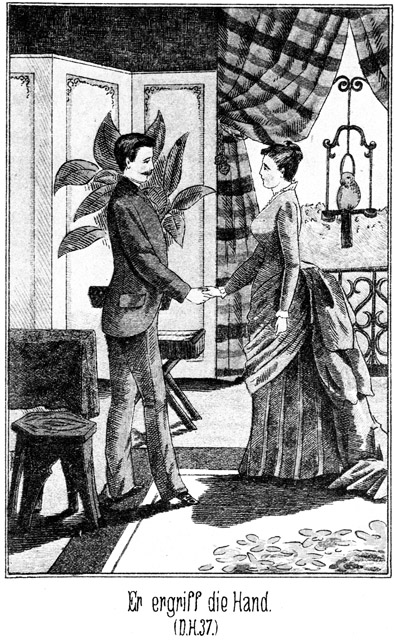Sie hielt ihm lächelnd die kleine Hand entgegen. Sam ergriff dieselbe mit zwei Fingern, leise, sanft, um ihr ja nicht wehe zu thun, zog sie an diejenige Stelle seines Pelzes, unter welcher er sein Herz wußte, und antwortete in überfließendem Gefühl:
»Miß, habe ich Euch nicht bereits gesagt, daß ich mich für Euch mit allen Indsmen der Erde herumhauen würde? Habt Ihr das vergessen?«
»Hier handelt es sich nicht um Indsmen.«
»Schuft bleibt Schuft, weiß oder roth, grün, blau oder gelb, ganz egal. Ich bleibe bei Euch, und ich bin nicht allein, sondern ich bringe noch zwei Kerls mit, die sich gewaschen haben. Ihr habt von mir gelesen, Miß. Hat vielleicht auch der Name Jim oder Tim Snaker in der Zeitung gestanden?«
»Freilich. Das sind zwei Brüder? Nicht?«
»Ja, und diese Beiden werden Euch fehlen.«
»Welche Ueberraschung! Sie sind also hier?«
»Gewiß. Sie stehen draußen im Garten und warten auf mich.«
»Warum kommen sie nicht mit herein?«
»Weil sie draußen nöthiger sind; später aber werden sie wohl mitkommen. Ist der deutsche Aufseher ein tüchtiger Kerl?«
»Wir können uns auf ihn verlassen,« antwortete der Pflanzer.
Almy fügte schnell hinzu:
»Er würde sein Leben für uns wagen!«
»Nun, so wird es uns wohl gelingen, mit den Schurken fertig zu werden. Laßt Euch das Nähere erzählen, Master Wilkins!«
Er berichtete Alles, was seit gestern Abend geschehen war, und Vater und Tochter hörten mit größter Spannung zu. Als er mit seiner Erzählung zu Ende war, fragte Wilkins:
»Also dieser Walker ist auch hier, im Bereiche meiner Besitzung. Was mag er wollen!«
»Jedenfalls führt ihn eine ganz bestimmte Absicht hierher. Vielleicht sucht er Euch auf. Wollt Ihr mir versprechen, ihn in diesem Falle festzuhalten, bis ich wiederkomme?«
»Gewiß! Ich verspreche es Euch. Also Ihr wollt jetzt seiner Fährte weiter folgen?«
»Das versteht sich ganz von selbst. Wir müssen ihn haben, auf jeden Fall und um jeden Preis.«
»Und wenn sich seine Spur verliert!«
»So führt sie sicher zu Bommy.«
»Bommy? Ah! Kennt Ihr den?«
»Erst seit einer halben Stunde. Was für ein Kerl ist dieser Schwarze?«
»Ein undankbarer, charakterloser und selbstsüchtiger Wicht. Mein Bruder hatte ihn freigelassen und ihm sogar ein kleines Areal geschenkt. Zu faul, sich durch Arbeit zu ernähren, begann er, mit Schnaps zu handeln. Um mir nicht meine Leute verpesten zu lassen, habe ich ihnen verboten, von ihm zu kaufen. Seit dieser Zeit sucht er mir auf alle Weise zu schaden. Ihr meint also, daß Walker ihn aufgesucht habe?«
»Ich möchte darauf schwören.«
»So müßte er ihn kennen.«
»Vielleicht nicht. Er hat Eure beiden Negerinnen My und Ty nach Jemand gefragt, der Euch feindlich gesinnt ist; sie haben ihm diesen Bommy genannt. Er wird ihn natürlich aufsuchen. Das ist der sicherste Beweis, daß ihn eine Euch feindselige Absicht hierher geführt hat.«
»Ob er vielleicht ein Verbündeter des rothen Burkers ist?«
»Schwerlich. Ich meine vielmehr, daß Beide gar nichts von einander wissen. Aber möglich wäre es, daß sie sich hier fänden, wenn ich die Bande nicht zufällig belauscht hätte. Nun wißt Ihr Alles, Master. Jetzt werde ich zu meinen beiden Gefährten gehen, um mit ihnen den lieben Bommy aufzusuchen. Vielleicht erwischen wir den Kerl bei ihm.«
»Wann kommt Ihr wieder?«
»Sobald wie möglich. Dann haben wir Zeit, einen Plan gegen den Ueberfall zu besprechen. Sagt bis dahin aber keinem Menschen Etwas davon. Die Nigger sind schwatzhafte Kreaturen. Sie machten, wenn sie es erführen, einen Heidenspectakel, und da merkte der rothe Burkers zu früh, daß wir ihn erwarten werden; er käme also gar nicht, und das wäre doch jammerschade.«
»Aber Leflor möchte es doch erfahren. Er würde gern mit einigen seiner Leute kommen, um uns beizustehen.«
»Dann bleibe ich mit Jim und Tim weg. Uebrigens habe ich eine Ahnung, als ob dieser Leflor kein gar so großer Freund von Euch sei. Wartet jetzt ruhig meine Rückkehr ab; dann werden wir ja sehen, ob es nöthig ist, fremde Hilfe herbeizuziehen. Adieu, Master, Adieu, Miß!«
Er gab ihnen die Hand und ging, sie in einer keineswegs ruhigen Stimmung zurücklassend.
Leflor war, wie er gesagt hatte, in den Garten gegangen. Er hatte sich ganz außerordentlich über Sam geärgert. Das Auftreten des braven Dicken hatte ihm aber doch so imponirt, daß er eingeschüchtert worden war; aber er nahm sich vor, die Gelegenheit zur Rache zu ergreifen.
Was mochte dieser Jäger bei Wilkins wollen? Leflor rieth hin und her, konnte sich aber nichts denken, hoffte jedoch, es leicht und schnell zu erfahren.
So schritt er langsam den breiten Kiesweg dahin, in finsteren Gedanken versunken, bis er durch nahende Schritte aus seinem Brüten aufgeweckt wurde. Ein junger, einfach aber doch elegant gekleideter Mann, dessen ausdrucksvolles Gesicht von einem feinen Panamahute beschattet wurde, kam mit schnellen Schritten aus einem Seitenwege heraus und stieß, da er wegen des Buschwerkes Leflor, nicht hatte sehen können, beinahe mit diesem zusammen.
Ueber Leflors Gesicht zuckte ein häßlicher Zug. Er blieb stehen und fragte:
»Monsieur Adler, seid Ihr blind?«
Der Angeredete schritt ruhig weiter, ohne zu antworten, ohne zu thun, als ob er den Frager gesehen oder gehört habe. Da rief dieser mit erhobener Stimme:
»Master, hört Ihr mich nicht?«
Und als auch jetzt noch keine Antwort erfolgte, schritt er eiligst hinter ihm her und lachte höhnisch:
»Ah, Ihr fürchtet Euch vor mir! Ihr habt kein gutes Gewissen!«
Da hemmte Adler seine Schritte, drehte sich langsam um und ließ Leflor herankommen. Sein Gesicht schien in diesem Augenblicke aus Wachs geformt zu sein; es war vollständig unbeweglich. Selbst sein Auge hatte einen eigenthümlich starren Blick, welcher nicht auf Leflor, sondern über diesen hinaus gerichtet zu sein schien. Ein solches Gesicht hat man nur dann, wenn man sich alle Mühe geben muß, eine innere Erregung zu bemeistern, wenn man gezwungen ist, Rücksicht zu üben und höflich zu sein, während man doch das gerade Gegentheil empfindet.
»Habt Ihr gehört?« fragte Leflor, vor Adler stehen bleibend.
»Was?«
»Daß Ihr Euch vor mir fürchtet!«
»Ihr spracht also mit mir?«
»Natürlich! Es war ja kein anderer Mensch in der Nähe.«
»Ich glaubte überhaupt, es sei gar Niemand vorhanden, Monsieur Leflor.«'
»Pschaw! Macht mir nichts weiß. Euer Betragen gegen mich ist ein solches, daß ich es nicht länger dulden kann. Warum grüßt Ihr mich nicht?«
Da schoß ein leuchtender Blitz aus Adlers Auge in das Gesicht des Andern; aber in demselben Augenblicke hatten die Züge des Aufsehers ihre Ruhe wieder erlangt. Er zuckte leicht die Achsel und antwortete:
»Ich wundere mich über Eure Frage. Ich würde sie gegen keinem Menschen und in keinem Falle aussprechen. Aber da sie einmal ausgesprochen ist, will ich sie beantworten, obgleich ich natürlich nicht gezwungen bin, es zu thun. Ich habe Euch gegrüßt, zehnmal, zwanzigmal. Ihr habt es nicht gethan; natürlich unterlasse ich es auch. So ist es.«
»So, also so!« meinte Leflor höhnisch. »Ihr habt also gemeint, auch ich solle grüßen, ich zuerst?«
»Natürlich.«
»Das ist spaßhaft. Ich, der Pflanzer, der Plantagenbesitzer, soll einen Dienstboten grüßen!«
»Warum nicht? Wenn Euch so viel an dem Gruße des Dienstboten liegt, daß Ihr ihn Euch erzwingen wollt, so ist dieser Dienstbote jedenfalls eine so wichtige Person, daß auch Ihr ihn grüßen könnt.«
»Das fehlte noch! Wo kommt Ihr jetzt her?«
»So darf mich nur Monsieur Wilkins fragen!«
»Schön! Es wird anders werden. Jetzt aber verfügt Ihr Euch in den Stall, um nachzusehen, ob mein Pferd sein Futter erhalten hat!«
»Ich will Euch das Vergnügen nicht rauben, Euch um Euer Pferd selbst zu bekümmern.«
Sie standen sich Auge in Auge gegenüber. Es war klar, daß Leflor diesen Streit vom Zaune brach. Er haßte den Aufseher. Zu diesem Haß kam der Zorn über die Behandlung, welche er von Sam Barth erfahren hatte. Jetzt brach es los.
»Also Ihr weigert Euch, meinen Befehlen zu gehorchen?« fuhr er auf.
»Von Befehlen Eurerseits kann gar keine Rede sein!«
»Oho! Ihr werdet bald vom Gegentheile überzeugt sein. Oder hättet Ihr dem Schwiegersohne des Master Wilkins etwa nicht zu gehorchen?«
Das Gesicht Adler's ward um einen Schatten bleicher, und seine Stimme bebte leise, als er antwortete:
»Der werdet Ihr jedenfalls niemals sein!«
»Nicht? Ich sage Euch, daß ich soeben um Almy's Hand angehalten habe!« –
»Ihr seid abgewiesen worden!«
»So kann nur ein Verrückter antworten. Ich habe das Jawort erhalten.«
»Dann ist die Person, die es Euch gegeben hat, verrückt; da ich aber weder meinen Prinzipal noch dessen Tochter für geisteskrank halte, so sehe ich mich gezwungen. Eure Behauptung sehr einfach für eine Unwahrheit, eine Erfindung, eine Lüge zu halten.«
Da trat Leflor einen Schritt zurück und sagte:
»Lüge, das mir?«
»Das Euch, ja!«
»Verdammter deutscher Hund! Hier hast Du!«
Er holte mit der geballten Faust aus und schlug damit Adler – in das Gesicht? O nein. Er wollte es thun, aber seine Faust traf nur die Luft, und er selbst erhielt im Gegentheile einen so gewaltigen Boxerhieb in die Magengegend, daß er, sich überschlagend, in weitem Bogen zu Boden stürzte.
»O Jessus, o Jessus!« kreischte eine weibliche Stimme.
»Hilfe, Hilfe!« rief eine zweite.
My und Ty waren mit ihrer Wäsche vom Flusse zurückgekehrt. Sie hatten, um schneller heim zu kommen, den Seitenweg eingeschlagen, aus welchem vorhin Adler gekommen war. Sie hörten Stimmen und blieben stehen. Zwischen den Zweigen hindurch erkannten sie die beiden Männer. Sie verstanden jedes Wort, welches gesprochen wurde, und als nun die beiden Hiebe fielen, stießen sie erschrocken ihre Rufe aus.
Leflor hatte sich kaum erheben können. Der Athem fehlte ihm. Dennoch wollte er sich auf Adler stürzen, der ihn ruhig in der Stellung eines gewandten Boxers erwartete, als aber die beiden Negerinnen zu schreien anfingen und er also bemerkte, daß seine so plötzliche Niederlage Zeuginnen gehabt habe, zog er es vor, schnell hinter den Büschen zu verschwinden.
Adler blieb als Sieger noch einen Augenblick stehen, zuckte verächtlich die Achsel und trat zu den Negerinnen.
»Was thut Ihr hier? Ihr habt gelauscht!«
»O nein, Massa! Nicht gelauscht,« antwortete Ty. »Wir kamen vom Wasser, ganz zufällig.«
»Habt Ihr Alles gehört und gesehen?«
»Alles. Massa Adler ist ein starker Held. O Jessus, Jessus, wie Massa Leflor auf die Erde gekugelt ist wie ein Hund, der aus dem Fenster fällt.«
Sie lachte bei dieser Vorstellung laut auf, und die gute My stimmte mit ein.
»Macht, daß Ihr in die Küche kommt!« befahl Adler. »Und ich verbiete Euch, irgend Jemand Etwas zu sagen! Hört Ihr's?«
»O, wir hören!«
»Wenn Ihr plaudert, so wird es Euch schlimm ergehen. Also schweigt.«
»O, Massa, wir schweigen, wir schweigen sehr!«
Sie nahmen ihre Wäsche wieder auf und trabten von dannen. Als sie in der großen Küche ankamen, befand Almy sich dort. Sie hatte ihren Vater mit Leflor, welcher von seinem Spaziergange Zurückgekehrt, allein lassen müssen, und suchte sich nun hier Beschäftigung, um sich von dem Gedanken an den zu erwartenden Ueberfall nicht zu sehr beunruhigen zu lassen.
»Missus, Missus, Almy, wir sind wieder da!« rief My bereits im Eintreten.
»Ihr wart sehr lange,« tadelte die Herrin. »Ihr hättet viel eher fertig sein können!«
»Eher? My und Ty konnten nicht eher. Viel Abhaltung und viel andere Arbeit.«
»Welche Abhaltung und Arbeit denn?«
»Erst kam ein Mann im Indianerkanot.«
Almy wußte dies bereits aus Sams Erzählung.
»Dann kam der Bär. Nachher der Mann mit der Nase und der Mann ohne Nase. Ty mußte rudern. Hier ist der neue Hut.«
Beide zeigten ihre Bilderhälften vor. Almy, welche ihre Dienerinnen kannte, lachte sie nicht aus, sondern zeigte sich über die Geschenke sehr entzückt.
»Und zuletzt,« berichtete My, »kam Streit mit Massa Leflor und Massa Adler.«
Jetzt wurde die junge Herrin aufmerksam.
»Ein Streit zwischen Beiden?«
»Ja. Massa Leflor beleidigte Massa Adler. Massa Adler soll ihn grüßen, ihm gehorchen, nach seinem Pferde sehen. Massa Leflor sind Schwiegersohn von Massa Wilkins. Massa hat jetzt das Jawort erhalten von Massa Wilkins.«
Almy wurde roth und dann umso bleicher.
»Wer hat das gesagt?« fragte sie hastig.
»Massa Leflor.«
»Zu Massa Adler?«
»Ja.«
»Was antwortete dieser?«
»Er sagte, daß es Lüge sei.«
»Das ist es auch.«
»Da wurde Massa Leflor sehr zornig und holte aus, Massa Adler zu schlagen.«
»Mein Gott! Das giebt ein Unglück!«
»Nein, Missus, kein Unglück, denn der gute Massa Adler war viel schneller und traf Massa Leflor auf den Bauch, so schnell, daß er einen Purzelbaum machte weit auf die Erde hin. O Jessus, Jessus war das schön, sehr schön!«
»Und was geschah dann weiter?« fragte Almy voller Angst.
»Ich schrie, und Ty schrie. Da riß der böse Massa Leflor aus. Massa Adler aber kam zu uns und befahl uns, gar nichts zu sa – – o Jessus, Jessus, jetzt habe ich es doch gesagt! Nun wird es uns gehen sehr schlimm.«
»Beruhige Dich! Ich werde Euch nicht verrathen; aber sagt es keinem Anderen.«
»Nein, nein! Aber dürfen wir es nicht auch noch sagen Nero, dem Kutscher? Er kann nicht leiden Massa Leflor und wird lachen vor großer Freude, daß Massa gemacht hat einen so großen Purzelbaum.«
»Nein; auch er darf es nicht wissen.«
»So werden wir schweigen. Kein Mensch darf es erfahren, kein Mensch.«
Aber zwei Minuten später stand My bei Nero, dem schwarzen Wagenlenker, welcher ihr Geliebter war, und erzählte ihm unter den abenteuerlichsten Gesten und Pantomimen alle ihre heutigen Erlebnisse.
Kurze Zeit später erschien der Diener, um Almy zu ihrem Vater zu bitten. Dieser befand sich nicht mehr im Parlor, wo er mit Leflor gesprochen hatte, sondern in seinem Arbeitszimmer. Er empfing die Tochter mit einem Gesicht, auf welchem sich Sorge, Rührung und Spannung zeigten. Auf einen Sessel deutend, sagte er:
»Setze Dich, liebes Kind! Ich habe Dir etwas Wichtiges mitzutheilen.«
Er legte die Füße übereinander und strich sich mit der Hand langsam über die Stirn, als werde es ihm schwer, den Anfang zu finden. Almy setzte sich nicht; sie blieb vielmehr stehen und sagte in ruhigem, beinahe geschäftsmäßigem Tone:
»Ich weiß, was Du mir sagen willst.«
»Schwerlich.«
»Gewiß. Es scheint Dir schwer zu werden, den Gegenstand zu besprechen. Ich möchte wünschen, ihn so leicht wie möglich zu nehmen.«
»Du sprichst von dem zu erwartenden Ueberfall. O, der macht mir jetzt weniger Sorge als – – –«
»Als meine Verheiratung,« fiel sie in's Wort.
Er fuhr erstaunt auf:
»Wie, Du weißt es?«
»Ja. Leflor hat das Wort seit langer Zeit auf den Lippen gehabt. Sein heutiges feierliches Auftreten ließ mich vermuthen, daß er mit Dir über seine Absichten sprechen werde.«
»Er hat es gethan,« antwortete der Pflanzer, sichtlich erleichtert, daß Almy so unschwer auf diesen Gegenstand einging.
»Was hast Du ihm geantwortet?«
»Noch nichts. Ich mußte doch erst mit Dir sprechen. Ich würde keinem Menschen Deine Hand ohne Deine Einwilligung versprechen, mein liebes Kind.«
»Wann hast Du ihn wieder bestellt, um unsere Entscheidung zu erfahren?«
»Er ist noch gar nicht fort. Er bat um sofortige Antwort. Er wartet im Parlor.«
»So hat er es sehr nothwendig,« lachte sie heiter. »Ich werde sofort zu ihm gehen.«
»Wirklich, Kind, wirklich?«
Er erhob sich erfreut von seinem Stuhle.
»Ja, Du erlaubst doch, Pa, daß ich es ihm selbst sage, nicht wahr?«
»Sehr gern, mein liebes Kind. Deine Heiterkeit läßt mich die Antwort errathen, welche Du ihm geben wirst.«
»Und welche ich ihm sehr gern gebe.«
Da ergriff er sie bei der Hand und fragte, jetzt plötzlich wieder ernst werdend:
»Giebst Du sie ihm wirklich so gern? Ich hatte vermuthet, wenigstens auf einen kleinen Widerstand zu stoßen.«
»Warum Widerstand, Pa? Wir Beide haben doch stets nur einen Wunsch und Willen.«
»Ja; aber warte noch einen einzigen Augenblick, Almy, und laß uns fragen, ob er es denn auch wirklich werth ist.«
Sein Ton klang beinahe angstvoll, wenigstens besorgt. Almy aber lachte ihm herzlich entgegen und antwortete, ihm freundlich zunickend:
»Er ist es werth, Pa, gewiß, er ist es werth!«
»Nun, wenn Du diese Ueberzeugung besitzest, und wenn Dein Herz bereits so deutlich gesprochen hat!«
»Ja, es hat gesprochen.«
Er schüttelte leise den Kopf. Es flog wie Enttäuschung über sein mildes Angesicht.
»Das hatte ich nun nicht so vermuthet,« sagte er. »Es ist doch wahr, Ihr Frauen seid vollständig, vollständig unberechenbar. Ich dachte, Dich ganz genau zu kennen, und nun sehe ich, daß ich Dich gar nicht kannte, daß ich mich geirrt habe.«
»Ja, Du hast Dich geirrt, Pa, aber in ganz anderer Weise, als Du denkst. Bitte, komm!«
Sie ergriff seine Hand und trat mit ihm in das Parlor, wo Leflor wartend am Fenster stand. Er mochte an Adler denken, denn seine Stirn lag in finsteren, drohenden Falten. Jetzt drehte er sich um, und als er das schöne Mädchen lächelnd an der Hand des Vaters erblickte, nahm sein Gesicht den Ausdruck des Triumphes an.
»So schnell!« sagte er. »Ich erlaube mir natürlich, dies als ein glückliches Omen für mich zu deuten.«
»Ja,« nickte der Pflanzer ernst. »Almy hat mich gar nicht aussprechen lassen. Sobald ich begann, erklärte sie, daß sie Euch gern selbst und sofort die Antwort geben werde.«
»Welch ein Glück! Almy, darf ich hoffen?«
Er trat auf sie zu und wollte ihre Hand ergreifen; sie aber wich einen Schritt zurück und fragte, nicht ernst, sondern sorglos lachend:
»Was hofft Ihr denn, Monsieur?«
»Daß Ihr Euch entschlossen habt, den heißesten Wunsch meines Herzens zu erfüllen.«
»Welcher Wunsch ist das?«
»Euch die Meine nennen zu dürfen.«
»Und Ihr hofft, daß ich diesen Wunsch erfülle?«
»Ja, ich hoffe es.«
»Das begreife ich nicht. Die Hoffnung richtet sich doch nicht in die Zukunft. Sie verlangt doch wohl noch Etwas, was man noch nicht besitzt.«
»Allerdings, Miß Almy.«
»Wenn Ihr hofft, mich zu besitzen, so besitzt Ihr mich also noch nicht?«
»Leider nicht, noch nicht.«
»Warum sagt Ihr dann zu anderen Personen, daß Ihr bereits unsere Zusage erhalten hättet?«
Ihr Gesicht hatte auf einmal einen ganz anderen Ausdruck angenommen; es war ernst, ja streng auf ihn gerichtet; er mußte vor ihrem Blicke die Augen niederschlagen.
»Ich sollte das gesagt haben?«
»Ja.«
»Das ist entweder ein Mißverständniß oder gar eine Lüge, Miß.«
»Es ist weder das Eine noch das Andere. Ihr habt es gesagt; das ist eine Thatsache.«
»Zu wem?«
»Zu Monsieur Adler.«
Da rief er zornig:
»Ah! So hat er geplaudert, der ehrlose Kerl!«
»Er hat kein Wort gesagt. My und Ty sind Zeugen Eurer Behauptungen und Eurer Niederlage gewesen; sie erzählten es mir sofort. In Euren letzten Worten gebt Ihr zu, gesagt zu haben, daß Ihr bereits mein Jawort erhalten habt. Haltet Ihr mich für eine so leichte und billige Waare, daß Ihr meint, es bedürfe nur Eures Willens, mich zu besitzen? Da habt Ihr Euch allerdings getäuscht. Das Wort, welches Ihr zu dem Aufseher gesagt habt, ist nicht nur eine Lüge, sondern sogar ein Schimpf für mich. Einem Manne, welcher mich beschimpft, und der solche offenbare Lügen sagt, kann ich natürlich nicht gehören. Von Liebe will ich ganz und gar schweigen, aber achten muß man doch wenigstens den Mann können, dem man Sein und Leben widmet; aber nicht einmal dies ist hier der Fall. Ihr selbst seid schuld, daß Ihr nun vor Monsieur Adler der Blamirte seid.«
Er hatte sie aussprechen lassen, ohne sie zu unterbrechen. Er blickte sie starr und mit dem Ausdrucke des Zweifels, des Unglaubens an.
»Höre ich recht?« fragte er dann. »Ihr scherzet!«
»Dann wäre ich nicht nur leichtsinnig, sondern im höchsten Grade frivol, und da irrt Ihr Euch abermals.«
»So sagt Ihr also ein Nein?«
»Ein festes Nein.«
Er machte abermals eine Pause. Er war so sicher gewesen, das Jawort zu erhalten, daß er jetzt sich in das schier Unmögliche nicht so schnell finden konnte.
Wilkins seinerseits hatte, durch Almy's Heiterkeit getäuscht, fest geglaubt, daß sie Leflor nicht nur Ja sagen werde, sondern daß sie ihn sogar heimlich geliebt habe. Auch er konnte sich nicht so leicht in seinen Irrthum finden. Er fragte:
»Almy, scherzest Du wirklich nicht? Besinne Dich, mein Kind!«
»Es ist nicht nothwendig, mich zu besinnen, Vater. Ich will den Schimpf, den er mir angethan hat, nicht rächen, ich will ihm vergeben, aber das Weib meines Beleidigers kann ich unmöglich werden, und Du, der in mir mit beschimpft wurde, kannst Dich darüber doch nicht wundern.«
Wilkins Gesicht hatte eine Art von Verlegenheit ausgedrückt. Jetzt begann sein Auge stolz aufzuleuchten. Er nickte zustimmend mit dem Kopfe und sagte zu Leflor:
»Da habt Ihr es, Monsieur! Ihr seid unvorsichtig gewesen. Zu große Sicherheit ist sehr oft betrügerisch. Ich gestehe aufrichtig, daß ich die Logik meiner Tochter sehr wohl begreife.«
»So! Sie stimmen ihr also bei?«
»Vollständig. Es ist eine Beleidigung, welche Ihr uns angethan habt. Die Folgen derselben kann ich Euch leider nicht erlassen.«
Erst jetzt begann Leflor einzusehen, daß er wirklich einen Korb erhalten habe. Sein Gesicht wurde grün vor Aerger; seine Wangen schienen hineinzufallen; seine Stirn röthete sich, und die langen, knöchernen Finger strichen hektisch an dem Rocke auf und nieder. Er preßte die Zähne zusammen und knirrschte in beinahe pfeifendem Tone:
»Wißt Ihr aber auch noch Alles, was ich Euch vorhin sagte, Monsieur?«
»Ich weiß es,« antwortete Wilkins, indem er eine Bewegung machte, als ob er sich zu dieser Antwort erst besonders ermannen müsse.
»Und habt Ihr es bei Eurer Antwort vielleicht mit in Betracht gezogen?«
»Nicht nur vielleicht, sondern vollständig.«
»Ihr schient aber doch bei Eurem Eintritte überzeugt zu sein, daß die Miß ein Ja sagen werde. Auch verspracht Ihr mir vorhin, ihr zuzureden. Die Aenderung ist sehr schnell vor sich gegangen. Mögt Ihr sie nicht bereuen! Oder wünscht Ihr vielleicht noch eine Bedenkzeit. Ich will morgen wiederkommen, meinetwegen auch übermorgen.«
»Danke Sir! Es bleibt bei unserem Entschlusse. Nicht wahr, liebe Almy?«
»Ja. Die Beleidigung ist geschehen; sie kann nicht ungeschehen gemacht werden.«
Da trat Leflor einen Schritt näher an den Pflanzer heran und sagte in pfauchendem Tone, fast wie mit dem Klang einer Katzenstimme:
»Nun wohl! Ein Jeder ist seines Glückes Schmied. Ich kann weiter nichts sagen, als daß Euch Beiden die Reue baldigst kommen wird. Dann werdet Ihr Euch vergebens nach mir sehnen!«
»Auch das noch!« rief Almy. »Hinaus mit Euch, sonst rufe ich nach dem Diener!«
»O bitte bitte! Ich gehe schon! Aber nehmt Euch in Acht, wenn ich wiederkomme!«
Er ging.
Die Beiden blieben stehen, ohne ein Wort zu sagen, bis unten die Hufschläge eines Pferdes hörbar wurden.
»Da reitet er hin!« sagte Wilkins mit einem tiefen Seufzer – der Erleichterung oder der Belastung? Es ließ sich nicht sagen.
»Grämst Du Dich darüber, Pa?«
»O nein! Aber vor fünf Minuten hatte ich an diesen Ausgang nicht geglaubt.«
»Er sagte, Du hättest mir zureden wollen!«
»Ich versprach es ihm allerdings.«
»Wie konntest Du das! Ich habe Dir wiederholt gesagt, daß er mir unsympathisch ist. Ich habe bei seinem Anblicke ganz dasselbe Gefühl, welches Sam Barth auch hatte. Konntest Du wirklich meinen, daß ich ihn liebe, daß ich glaube, mit ihm glücklich werden zu können?«
»Nein, mein Kind. Auch ich achte ihn nicht. Darum war es mir so bange bei dem Gedanken an eine Verbindung mit ihm. Aber er fand Mittel, mich zu zwingen, eine solche Verbindung für wünschenswerth zu halten.«
Sie blickte ihn erstaunt an.
»Welche Mittel wären das, Pa?«
»Du weißt, daß ich wahrend des Secessionskrieges ein Anhänger der Nordstaaten war. Sämmtliche hiesige Grundbesitzer sind noch heute enragirte Südstaatler. Wer eine Ausnahme macht, kann leicht durch allerlei Ränke und Intriguen zu Grunde gerichtet werden. Ich habe damals in meinem patriotischen Eifer manches Opfer gebracht und Manches gethan, was hier Niemand wissen darf. Wie Leflor dazu gekommen ist, Alles zu erfahren, kann ich nicht begreifen; aber er weiß Alles, und es ist ihm möglich, mich zu stürzen.«
»Drohte er Dir etwa damit, falls Du ihm meine Hand verweigerst?«
»Ja.«
»So hast Du den eclatantesten Beweis seiner gemeinen Gesinnung, seiner Boshaftigkeit und bodenlosen Schlechtigkeit. Lieber betteln gehen, als das Weib eines solchen Schurken sein!«
»Meinst Du das wirklich so?«
»Ja, aufrichtig, lieber Vater.«
»Almy, Du kennst die Armuth nicht.«
»Ich würde sie zu tragen wissen. Die Schande und das Unglück, die Frau eines solchen Menschen zu sein, könnte ich nicht ertragen, könnte ich nicht überleben. Uebrigens sind wir ja nicht arm, Pa.«
»Aber er kann uns discreditiren und stürzen.«
»So verkaufen wir und ziehen fort!«
Er seufzte tief auf und schüttelte den Kopf. Er hatte etwas Schweres, sehr Schweres auf dem Herzen. Sollte er es sagen? Sein Blick fiel auf die schöne, lichte, reine Gestalt des schönen Mädchens. Durfte er von dem Geheimnisse sprechen, welches ihm die nächtliche Ruhe raubte, an seinem Leben zehrte und sein Mark auszudörren drohte? Nein, nein, wenigstens jetzt noch nicht. – Jetzt noch nicht, so hatte er stets gedacht, und doch mußte die Zeit kommen, in welcher er zum Sprechen gezwungen war. Was dann? Er schüttelte diesen entsetzlichen Gedanken von sich, denn er fühlte sich jetzt zu schwach, ihn auszudenken.
Almy legte die Arme um ihn, schmiegte das Köpfchen an seine Brust und fragte liebkosend:
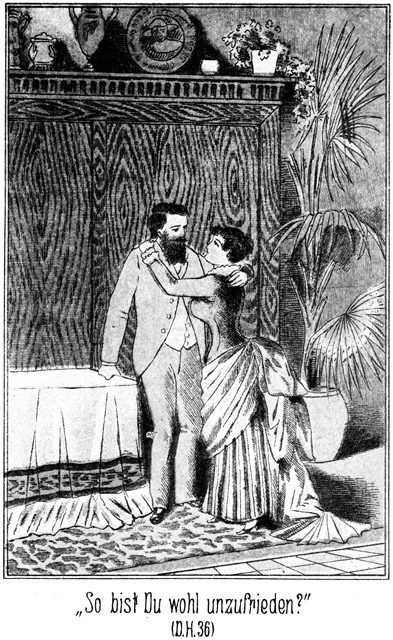»So bist Du wohl unzufrieden mit mir, Pa?«
»Nein, o nein,« antwortete er, sich zu einem heiteren Lächeln zwingend.
»So meinst Du, daß ich recht gehandelt habe?«
»Ganz richtig und resolut, mein Kind.«
»So resolut wirst Du mich auch heute Abend sehen. Ich werde auch ein Gewehr nehmen, um uns gegen die Buschheaders zu vertheidigen. Weiß Master Adler bereits davon?«
»Nein. Ich habe ihn noch gar nicht zu sehen bekommen. Schicke ihn zu mir, wenn Du ihn siehst!«
Sie ging, um sich für einige Augenblicke nach ihrer Wohnung zu begeben. Es war ihr jetzt ein Bedürfniß, über die Zurückweisung Leflors noch einmal nachzudenken, um das Ereigniß dann für immer ad acta legen zu können. –
Gerade als sie ihre Thür öffnete, um einzutreten, hörte sie das Geräusch einer anderen Thür. Als sie sich umwandte, erblickte sie Adler, welcher aus seinem Zimmer kam und wohl oder übel an dem ihrigen vorbei mußte.
War es ein Fehler, auf ihn zu warten? Gewiß nicht. Und doch schlug bei diesem Gedanken ihr Herzchen schneller. Er sollte zu Pa kommen; sie wollte ihm dies sagen; nur deshalb blieb sie stehen. War das etwa ein Unrecht? O nein! Es war sogar sehr recht. Es war Gehorsam gegen den Pa. Aber warum fühlte sie denn da ihr Gesichtchen so brennen? Warum ging ihr denn da der Athem plötzlich so kurz?
Und nun war er da – noch drei Schritte – noch zwei – noch einen nur! Jetzt ging er vorüber. Er hatte sehr ehrerbietig den Hut gezogen, und sie hatte nicht einmal geantwortet. Er mußte sie für stolz, für unhöflich halten, oder gar für feig, für einen Backfisch!
Dieser letztere Gedanke war höchst fatal. Er gab ihr die Sprache:
»Monsieur!«
Leider hatte sie dieses Wort so leise gesagt, daß er es nicht hören konnte. Er war ja bereits vier Schritte entfernt. Vorhin hatte sie diesem Leflor in aller Offenheit ihre Meinung gesagt, diesem bösen Menschen, und hier brachte sie es nicht fertig, Adlern einen kleinen Auftrag ihres Vaters auszurichten, und er war doch ein so guter Mensch, ein so seelensguter Mensch und jetzt bereits sechs Schritte entfernt, volle sechs Schritte. Wenn nicht jetzt, später konnte er sie gar nicht hören!
Sie nickte, druckte und schluckte. Endlich!
»Mon – – sieur – – Ad – – ler – –!«
Sie hatte es ausgesprochen, nicht sehr laut etwa; es war kaum zu hören; er hatte es jedenfalls auch mehr mit dem Herzen als mit dem Ohre gehört, denn er blieb stehen, drehte sich um, zog den Hut und fragte ehrerbietig:
»Befehlt Ihr Etwas, Miß Almy?«
»Nein, Monsieur,« hauchte sie verlegen.
»Ich glaubte, meinen Namen gehört zu haben. Verzeihung, Miß!«
Schon erhob er den Arm, um den Hut wieder aufzusetzen. Im nächsten Augenblicke würde er sich wieder umdrehen, nm fortzugehen. Dann war es vorbei. Und doch mußte er zum Vater, der ihn so sehr nothwendig brauchte! Ja, gewiß, es war nur der Gedanke an den Auftrag des Vaters, kein anderer Gedanke, kein anderer Grund, der ihr jetzt den Muth zu den Worten gab:
»Ich sagte – sagte ihn aller – allerdings.«
Da kam er langsam näher.
»Also rieft Ihr mich. Miß! Bitte, sagt mir, worin ich Euch gehorchen kann?« –
So sprach er stets und immer zu ihr. Er, der sich vor keinem Menschen um ein Haar breit beugte, war so demüthig vor ihr, fast wie ein Sclave. Und doch ruhte dabei sein schönes, dunkles Auge so voll, sicher und selbstbewußt auf ihrem Angesichte. Dieser Widerspruch zwischen der Demuth des Wortes und dem Selbstbewußtsein des Wesens war es, was Almy so verlegen machte, was sie immer verwirrte, wenn sie in seine Nähe kam. Und doch fühlte sie sich in dieser Nähe so glücklich.
»Ich wollte Euch bitten – – einen kleinen Auftrag für – von – von Pa,« sagte sie.
»Sehr gern, Mademoiselle.«
Sie hatte unter ihrer geöffneten Thür gestanden. Es war ganz unwillkürlich geschehen, ganz absichtslos, daß sie in das Zimmer trat, gewiß ohne alle Absicht. Wie kam das doch nur!
Und er – nun, er folgte ihr natürlich. Er glaubte ja, einen Auftrag zu bekommen, vielleicht irgend einen Gegenstand an Pa zu geben, und um diesen Gegenstand zu empfangen, mußte er doch auch mit hereinkommen. Das war doch ganz logisch!
Er war noch niemals hier gewesen. Der kleine Raum war allerliebst eingerichtet. Ein feiner, unbestimmbarer Duft hauchte ihm entgegen. Welch ein Geruch war das nur? Keiner und doch einer. Von keiner Blume, von keiner Blüthe, und doch von jeder Blume das Beste und von jeder Blüthe das Süßeste. Ist es wahr, daß ein jedes reine, unentweihte Mädchen seinen Duft hat wie jede unberührte Blüthenknospe?
Almy befand sich in schauderhafter Verlegenheit, zumal da Adler die Thür hinter sich zugezogen hatte. Warum hätte er dies nicht thun sollen? Es wäre im Gegentheile höchst unhöflich gewesen, wenn er den Eingang offen gelassen hätte!
Aber da stand er nun und erwartete den Auftrag. Was sollte sie thun? Daß er zu Pa kommen solle, das hätte sie ihm doch draußen in kurzen Worten sagen können. Warum ihn also mit herein nehmen? Sie mußte sich also noch etwas Anderes aussinnen. Aber was?
Ihr Auge flog ängstlich suchend umher, einen Gegenstand zu entdecken, der ihr Rettung bringen könnte. Dabei streifte ihr Blick sein Auge. Dieses ruhte mit staunender Anbetung auf ihr. Sie wurde darob noch viel, viel verwirrter. Ihre Wangen rötheten sich in Purpurgluth. Sie hätte laut aufschluchzen können vor Qual und Bedrängniß, und doch war es auch wieder so wunderbar, so himmlisch, daß er hier stand, in ihrem Zimmerchen, wo er noch niemals gewesen war, und wo sie so viele tausendmale an ihn – – ah, da kam Rettung!
»Almy, Almy, meine Almy!« rief draußen der Papagei.
Ja, der liebe Vogel war der Retter in der Noth. Wenn die Noth am größten, so ist die Hilfe am nächsten, und sie kommt dann meist von einer Seite, von welcher man sie gar nicht erwartet hat.
»Master Adler, versteht Ihr Euch auf Or – – Or – – Or – –«
Wie hieß doch nur das Wort? Warum war sie aber auch gerade auf dieses Fremdwort gerathen. Es ist doch höchst unangenehm und empfindlich, die erste Silbe eines Wortes zu wissen, nicht aber die vier darauf folgenden!
Er hatte den Ruf des Papagei's vernommen. Er ahnte, was sie meinte. Er fragte:
»Ornithologie? Nicht wahr?«
»Ja, Monsieur, Ornithologie meinte ich.«
»Ich habe mich früher mit der Vögelkunde sehr beschäftigt.«
»Auch mit Papageien?«
»Auch mit ihnen.«
»Ja, Sie wissen Alles und Alles; das habe ich oft bewundert. Jetzt wissen Sie sogar, was ein Papagei – – –«
Sie hielt ganz erschrocken inne und wurde blutroth in dem lieben, schönen Gesichtchen. Welch eine Blamage. Sie hatte sagen wollen:
»Jetzt wissen Sie sogar, was ein Papagei ist!«
Was mußte er von ihr denken! Sie schlug die Wimpern nieder. Es war, als ob ihr der Blick an dem Boden festgebunden sei. Sie fühlte, daß sie im nächsten Augenblicke weinen werde. Da ertönte seine milde, ruhige, wohlklingende Stimme:
»Was ein Papagei für Krankheiten haben kann? Ja, das weiß ich. Befindet sich der Eurige vielleicht unwohl, Miß Almy?«
Ihre Wimpern flogen in die Höhe, und es traf ihn ein großer, langer, werthvoller Blick dankbarster Freude. Er hatte ihr ja doch die demüthigenden Thränen erspart.
»Leider ja,« antwortete sie. »Ich mache mir recht große Sorge um das liebe Thierchen.«
Und dabei sah sie wirklich so sorgenvoll aus, als ob sie vor lauter Bedrängniß fast weinen möchte. Sie hatte gar nicht die mindeste Ahnung, wie unendlich reizend ihr das stand, wie unwiderstehlich das wirkte. Adler hätte anbetend vor ihr niederknieen mögen.
»Darf ich an diesen Sorgen mit teilnehmen?« fragte er in bittendem Tone. –
»Ach, wenn Ihr wolltet!« seufzte sie erleichtert.
»Wie gern, wie sehr gern!«
»Könntet Ihr denn helfen, Monsieur?«
»Ich hoffe es, Miß Almy.«
»Soll ich ihn einmal hereinholen?«
»Ja. Ich bitte darum!«
Sie ging. Aber draußen angekommen, griff sie nicht sofort nach dem Vogel, sondern sie legte sich zunächst beide Händchen beruhigend auf den wallenden Busen und flüsterte:
»O Gott! Er ist bei mir, er, er! Wie fürchte ich mich! Wie habe ich so entsetzliche Angst! Und doch ist er so freundlich. Mein Himmel! Was soll ich thun? Ich habe gesagt, der Papagei sei krank und doch ist er so ganz gesund. Wenn er es merkt, so werde ich krank, ich, ich! Vor Scham! Weiche Krankheit wähle ich denn? Den Typhus oder die Ruhr, den Magenkrebs oder Lungenemphysem, Gelenkrheumatismus oder Gehirnkrämpfe? Ich weiß es selbst nicht! Und er wartet drin; ich darf ihn doch nicht länger warten lassen!«
Sie nahm den Vogel an seinem Kettchen vom Sitze herab auf ihre Hand und trug ihn herein zu Adler. Ihr Gesichtchen war jetzt vor Verlegenheit so bleich, als ob sie selbst krank sei.
»Da ist er,« hauchte sie.
Adler trat näher und betrachtete den Vogel.
»Spitzbube, Spitzbube!« rief der Papagei. »Geh, Hanswurst, geh!«
Almy wurde doppelt bleich. Würde er diese Schimpfworte vielleicht auf sich beziehen? O, das wäre schlimm, sehr schlimm! Ihr Händchen, auf welchem der Vogel saß, begann zu zittern. Hatte Adler es gesehen? Er nahm diese zarte, kleine alabasterne Hand in die seinige, um sie zu stützen. Dann fragte er:
»Habt Ihr Euren Liebling genau beobachtet? Und auch ganz genau?«
»Ganz genau und alle Tage.«
»Seit wann ist er krank?«
»Seit – seit – –« sie wollte sagen, seit einigen Monaten oder Wochen; aber diese Lüge wäre doch gar zu groß gewesen. Darum fuhr sie fort – »erst nach kurzer Zeit.«
»Das bemerke ich auch,« sagte er.
Wie meinte er das? Wußte er etwa gar, daß das Papchen seit zwei Minuten zu den Patienten gerechnet wurde? Gewiß nicht! Seine Miene war ja so aufrichtig, so ehrlich und so unschuldig! Und nun fragte er:
»Seid Ihr über sein Leiden im Reinen?«
»Ja, vollständig im Reinen,« entfuhr es ihr.
Aber bereits im nächsten Augenblicke sah sie ein, welchen großen Fehler sie begangen hatte. Wie nun, wenn sie die Krankheit nennen sollte? Was sollte sie antworten? Daß er an Schwindel leide? O, dann konnte Adler ja denken, die ganze Krankheit sei Schwindel! Bei Leibe nicht! Herzverfettung – ja, das war besser. Das Herz ist der Sitz des Gefühls; Herzverfettung ist also eine Krankheit, welche von zu vielem, von zu fettem Gefühl herkommt. Davon ließ sich jedenfalls sprechen. Aber glücklicher Weise kam es gar nicht dazu. Adler nämlich nickte nachdenklich mit dem Kopfe und sagte in freundlichem Tone:
»So will ich einmal sehen, ob meine Diagnose mit der Eurigen stimmt. Ich halte nämlich Euren kleinen Liebling für außerordentlich nervös.«
Da fiel sie schnell und frohlockend ein:
»Ja, ja, das ist's, das ist's! Er leidet an Nervosität, an bedeutender Nervosität, das arme, liebe Papchen. Das habe ich auch gefunden.«
»Seht nur, Miß Almy, wie er gerade jetzt zittert. Euer Händchen zittert ganz unwillkürlich mit.«
O, hätte er es gewußt, daß sie zitterte, nicht aber der Papagei! Um ihn davon abzulenken, sagte sie in bedauerlichem Tone:
»Ich befürchte sehr, daß es kein Heilmittel geben werde.«
»Warum?«
»Pa sagte einmal, daß Nerven sehr schwer wieder herzustellen wären, wenn ihre Stimmung einmal gelitten habe.«
»Das ist richtig, auf Menschen angewandt. Ein Papagei aber hat viel stärkere Nerven als ein Mensch.«
»Sollte man meinen? Wirklich?« fragte sie treuherzig.
»Ja. Bei ihm ist Alles härter und fester als bei uns. Darf ich Euch dies durch einen naheliegenden Vergleich beweisen?«
»Ich bitte!«
»Befühlt einmal seinen Schnabel, wie hart er ist. Und nehmt dagegen Eure Lippen, Euren Mund, wie weich, wie voll, wie warm, wie herrlich gezeichnet, wie – mit einem Worte köstlich!«
Er neigte sich ein Wenig näher, wie um ihren Mund genauer zu betrachten, hob aber den Kopf sofort wieder empor und sagte:
»Da seht, jetzt bekommt Papchen einen argen Anfall von Nervosität. Es ist kein Irrthum möglich; es sind die Nerven.«
Sie aber wußte sehr genau, daß sie es war, welche zitterte. Und da sie den Papagei hielt, mußte er mit zittern. Warum brachte er diesen Vergleich? Warum beschrieb er ihre Lippen, ihren Mund so genau? War das wirklich nothwendig? Zur Erläuterung, ja! Gelehrte Männer gehen ja stets so gründlich. Wie gut, daß es so glücklich vorüber gegangen war. Einen Augenblick lang hatte sie gefürchtet, er werde nun auch seinen Mund mit dem ihren vergleichen, etwa welcher von Beiden wärmer sei! Damit er ja nicht auf diesen Gedanken kommen möge, legte sie ihm eine sehr geschickte therapeutische Schlinge:
»Welches Mittel könnte da wohl helfen?«
»Um dies zu wissen, muß man die Ursache des Uebels kennen. Die Nerven pflegen von gewissen Aufregungen angegriffen und geschwächt zu werden. Hat es dergleichen gegeben?«
»Ja, sehr oft!«
»Welcher Art?«
»Papchen konnte partout Monsieur Leflor nicht ersehen. Er gerieth, so oft er ihn erblickte, in eine gewaltige Aufregung.«
»Ah! Ist es das! Da wird also auf Hilfe für das arme Thier verzichtet werden müssen.«
»Wieso?«
»Man kann doch eines Vogels wegen nicht einem Hausfreunde die Thür weisen!«
»Warum nicht? Papchen ist mir doch lieber als der Nachbar.«
»Möglich. Aber Ihr werdet trotzdem nicht unhöflich gegen den Letzteren sein dürfen.«
»Ich werde es sein, wenn ich den armen Vogel dadurch zu retten vermag.«
»Aber Pa? Was wird er dazu sagen?«
»Er wird mir beistimmen!«
»Das ist kaum zu glauben!«
Es war so ein eigenthümlich tiefer Blick, den er ihr jetzt in das Auge senkte. Sie fühlte diesen Blick auf dem tiefsten Grunde des Herzens. Da thaute, da grünte, knospete und blühte es mit einem Male so, daß sie gar nicht anders konnte, sie mußte es ihm sagen:
»Leflor kommt überhaupt gar nicht wieder.«
Adler fuhr zurück, aber vor freudiger Ueberraschung. Es entfuhr ihm:
»Gott sei Dank! Wirklich? Wirklich?«
»Ja. Ich habe es ihm vorhin gesagt.«
»Und Euer Vater?«
»War dabei und gab mir Recht.«
»ES geschah also wegen des Papagei?«
Es zuckte ihm dabei so eigenartig um den Mund, fast wie ein wenig Impertinenz. Das mußte bestraft werden, und zwar sofort. Darum antwortete sie:
»Ja, nur des Papageies wegen.«
Sofort veränderte sich Adlers Gesicht. Er bog sich zu ihr nieder und fragte:
»Nur?«
Es war nur diese einzige Silbe, aber es lag eine ganze Welt voll Liebe und noch Anderes darin, vielleicht sogar Angst. Das that ihr weh. Sie durfte doch nicht gar so hart mit ihm verfahren, darum antwortete sie:
»Ja, nur der Papagei, und das war eben Leflor.«
»Ja. Er schwatzte zu viel.«
»Wirklich?«
»Und zwar recht schlimme Unwahrheiten.«
»Der böse Mensch! Auf wen bezogen sich denn wohl diese Unwahrheiten?«
»Auf mich und – – –«
»Und – – –?«
»Und ihn.«
Sie war wieder glühend roth geworden. Er aber fragte trotzdem weiter:
»Das verstehe ich nicht. Was hat er gesagt?«
»Er hat gesagt, daß – daß – – daß – – mein Gott, Ihr wißt es ja selbst auch!«
»Ich?«
»Ja. Er hat es Euch heute gesagt, draußen im Garten, und Ihr habt ihm dafür auch gleich die wohlverdiente Strafe gegeben.«
»Also das, das ist es! Und es war Lüge?«
»Habt Ihr es etwa geglaubt?«
Sie blickte ihn vorwurfsvoll an.
»Nein,« antwortete er. »Ich habe ihn ja auch sogleich einen Lügner genannt.«
»Das war sehr recht. Er aber wird sich dafür rächen, Monsieur Adler!«
»Ich fürchte ihn ganz und gar nicht. Es steht also zu erwarten, daß er nicht wiederkommt?«
»Es steht nicht nur zu erwarten, sondern es ist ganz und gar gewiß. Ist Euch das unlieb?«
»Mir ist es im Gegentheile sehr lieb, besonders um des guten Papchens willen, der nun ganz sicher wieder gesund werden wird.«
»Nur seinetwegen?«
»Ja. Sonst ist Leflor mir ja völlig gleichgiltig.«
Sie fühlte es heraus, daß er sie jetzt strafen wollte, denn sie hatte ja vorher gerade so auch geantwortet. Es flog wie ein Hauch der Betrübniß über ihr Gesichtchen. Das that ihm wehe und darum legte er ihr die Hand auf den Arm, trat ihr einen kleinen, ganz kleinen Schritt näher und fragte:
»Bitte, habt Ihr Leflor nur wegen der Nervosität des Vogels fortgewiesen?«
Sie blickte voll und ehrlich zu ihm auf und er in derselben Weise zu ihr nieder. An diesen Blicken rankten sich die Seelen zu einander hinüber. Jetzt war es Almy unmöglich, den Schein noch länger aufrecht zu erhalten. Sie antwortete, ihr Auge nicht von dem seinigen lassend:
»Nein. Der Vogel ist ja gar nicht krank. Nicht wahr, Monsieur Adler?«
»Ja, er ist kerngesund,« lächelte er.
»Und ich konnte Leflor nicht leiden. Er ist ein böser Mensch. Nun ist er fort und kommt nicht wieder. Gott sei Dank!«
In diesem Augenblicke schlug der Papagei mit den Flügeln und rief:
»Adler, Adler? Mein Süßer, mein Lieber! Wo bist Du denn?«
Almy hätte tief, tief in die Erde hineinsinken mögen. Ueber Adlers Gesicht glitt ein wonniger Schein; aber er beherrschte sich und sagte:
»Schau, er sehnt sich nach seinem Kameraden, nach dem Bergadler draußen vor der Veranda. Es wird am Besten sein, ihn hinauszubringen.«
Wieder Rettung in der aller- und allerhöchsten Noth. Almy warf ihm einen Blick innigsten Dankes zu und trug eiligst den Vogel hinaus. Als sie zurückkehrte, hatte ihr Gesicht einen ganz eigenartigen Ausdruck, so fromm, so erlößt, als ob sie soeben vom Tische des Herrn komme, an welchem sie Vergebung der Sünden empfangen habe. Sie streckte ihm das Händchen hin und fragte:
»Seid Ihr mir noch bös, Monsieur?«
»Ich Euch bös? Weswegen sollte das gewesen sein?«
»Weil ich Euch die Unwahrheit gesagt habe in Beziehung auf den Papagei.«
Da ergriff er die dargebotene Hand und auch die andere, drückte beide an sein Herz und sagte in überquellendem Gefühle:
»Das war keine Unwahrheit, Du süßes, Du reines, Du herrliches Mädchen. Das war der Wall, hinter welchen sich Deine Seele flüchtete, als sie glaubte, in Bedrängniß gerathen zu sein. Almy, Almy, Du bist so viel und noch mehr werth als die ganze Welt. Ich werde Dich bewundern und verehren, so lange ich lebe, wenn auch nur aus der Ferne, ach nur aus der Ferne!« –
Er ließ ihre Händchen sinken und war im nächsten Augenblicke fort. Sie glitt in einen Sessel und legte das Gesicht in die Hände. So lag sie lange, lange still und bewegungslos. Nur der Busen hob und senkte sich unter seligen Empfindungen, und zwischen den rosig angehauchten Fingern drang zuweilen eine Thränenperle hervor – Thränen unbegreiflichen, unfaßbaren und bisher noch ungeahnten Glückes.
Und Adler befand sich in einer ganz ähnlichen Stimmung. Das Dichterwort
»Zum Himmel aufjauchzend
Zum Tode betrübt«
war die treffendste Schilderung seines jetzigen Seelenzustandes. Er wußte sich geliebt, und zwar so rein, so fromm, so heilig, wie noch selten Einer geliebt worden war. Er liebte sie wieder. Er hätte für sie alle Qualen der Erde erdulden können, ohne nur einen Laut von sich zu geben, ohne nur mit der Wimper zu zucken. Diese Qualen wären für ihn ebenso viele Seligkeiten gewesen, da er so glücklich war, sie für diese Einzige zu erdulden. Aber durfte er das entscheidende Wort sagen? Durfte er an sein Leben das ihrige binden? Er dachte hinüber jenseits des Meeres, an das gräßliche Schicksal der Familie Adlerhorst. Er war ein Sohn derselben; obgleich es ihm verboten war, hatte er den Muth gehabt, die eine Hälfte seines Namens beizubehalten, auf welchem ein unlösbarer Fluch ruhte. Durfte er die Heißgeliebte mit hinab in den Abgrund ziehen, welchen dieser Fluch für ihn und für die Seinigen gerissen hatte? Nein und abermals nein und tausendmal nein! Er war entschlossen, zu entsagen, aber ihr nahe zu bleiben, ein treuer Engel zu ihrem Schutz und ihrem Schirm, so lange sie berufen war, auf Erden zu wandeln.
*
So schritt er, in selige und träumerische Gedanken versunken, im Garten hin und her, bis ihn die Stimme des Pflanzers aus seinem Brüten weckte:
»Hier seid Ihr, Monsieur Adler! Ich suche Euch überall. Eure Anwesenheit ist sehr nothwendig.«
»Ich stehe zu Diensten, Monsieur,« antwortete Adler, noch halb wie im Traume.
»Schön! Es handelt sich darum, einige ebenso gute Schüsse zu thun, wie Ihr damals thatet, als Ihr auf den Bruder des rothen Burkers zieltet.«
»Doch nichts Aehnliches!«
»Ganz dasselbe sogar. Der Burkers ist in der Nähe, um sich heute Nacht zu rächen. Kommt mit mir! Ich will es Euch erzählen.« – –
Sam war, nachdem er sich bei dem Pflanzer und dessen Tochter verabschiedet hatte, wieder zu Jim und Tim gekommen. Der Erstere hatte vorwurfsvoll gebrummt:
»Wo steckst Du denn? Wir warten bereits zwei volle Ewigkeiten. Hattest Dich wohl in die Kleine vergafft, mit der Du da drüben sprachst?«
»Ja. Es ist sehr rasch gegangen. Sehen, Verlieben, Geständniß, Verlobung, Alles ist vorbei. Sie zieht als meine Squaw mit nach dem Westen und wird meine Bärin sein.«
»O weh! Das wird junge Bären die schwere Menge geben. Da kann der Alte fleißig für Wildpret und Himbeeren sorgen.«
»Das wird er gern und fleißig thun. Ihr aber könnt zusehen und Euch die Mäuler putzen. Kriegen thut Ihr nichts davon. Ich habe den Herrn der Plantage aufmerksam gemacht auf heute Abend. Wir kehren nachher zu ihm zurück, um Kriegsrath zu halten. Jetzt aber suchen wir zunächst unseren guten Monsieur Walker auf. Kommt!«
Sie setzten ihren Weg ganz in der früheren Reihenfolge fort. Sam voran.
Er war ein ausgezeichneter Pfadfinder. Noch weit über zwei Stunden bestimmte er, selbst auf dem offenen Wege, ganz genau die Spuren, welche der Gesuchte zurückgelassen hatte. So gelangten sie aus dem Garten hinaus und an die Zuckerpflanzung, welche der Weg in zwei Hälften zerschnitt.
Weit draußen dehnte sich am Horizonte der Wald, einzelnes Buschwerk weiter hereinsendend. Dort erblickten die Drei die Hütte Bommy's.
Sam blieb halten und musterte das Terrain. Nachdem er einige Male den Kopf nachdenklich hin und her gewiegt hatte, sagte er:
»Das ist ohne Zweifel die Hütte des Niggers und dieser Weg führt schnurgerade auf sie zu. Wenn wir ihn gehen, so wird man uns ganz gewiß schon von Weitem sehen, und dann ist Walker für uns verloren. Wir müssen uns also anschleichen. Das geschieht am Besten, wenn wir um die Zuckerplantage schleichen. Sie wird vom Gebüsch eingezäunt, und wenn wir uns in dem Letzteren halten, wird man uns nicht bemerken. Kommt!«
Sie folgten seiner Ansicht ohne Widerrede und befanden sich nach wenig über einer Viertelstunde in einem dichten Buschrande versteckt, von welchem aus man die hintere Seite der Hütte genau überblicken und auch mit einer Gewehrkugel erreichen konnte. Sie lag in einer Entfernung von vielleicht achtzig Schritten. Der Zwischenraum war mit einigen auch sehr dichten Büschen und Gesträuchsgruppen besetzt.
»Jetzt bleibt Ihr hier,« sagte Sam. »Ich schleiche mich weiter vor und suche die Sträucher zu erreichen, welche der Thür gegenüber stehen. Seht Ihr mich in Gefahr, so sendet Ihr mir Eure Kugeln zu Hilfe.«
»Ist es nicht besser, wir gehen sofort hinein?« fragte Jim ungeduldig.
»Nein, Alter. Erst will ich wissen, woran ich bin. Das scheinbar Unnöthige ist sehr oft am Allernöthigsten, und nicht der kürzeste Weg ist stets der beste. Warten führt manchmal am schnellsten zum Ziele.«
Er kroch aus seinem Versteck heraus und auf dem Boden weiter bis hinter den nächsten Busch. So kroch er von Strauch zu Strauch, bis er das Gebüsch erreichte, welches sich höchstens sechs Schritte weit von der Thür befand. Es bestand aus strauchartigem Flieder, von wildem Wein durchzogen, und bildete, wenn man sich erst einmal hinangearbeitet hatte, selbst bei hellem Tage ein ganz genügendes Versteck. Sam befand sich trotz seines bedeutenden Körperumfanges sehr bald im Innern des Strauchgewirres, und er wußte sich da so schlau einzurichten und mit Zweigen zu maskiren, daß es des Auges eines geübten Westmannes bedurft hätte, ihn zu entdecken.
Die Hütte war aus sogenannten Loggs, aus starken, massiven Holzklötzen errichtet; auch das Dach bestand aus solchen starken Stämmen. An jeder der vier Seiten befand sich eine hineingehauene Oeffnung von wenig über einem Quadratschuh als Fenster. Die Thür führte, wie dies häufig vorkommt, auf der hinteren Seite in das Innere. Sie war nicht nach innen, sondern nach außen zu öffnen, wie auch die Läden, und bestand aus starken, doppelt übereinander genagelten Brettern.
Das betrachtete sich Sam sehr genau.
»Hm!« brummte er für sich hin. »Gut, daß Thür und Fenster nach außen aufgehen. So kann man sie verrammeln, so daß die Insassen gefangen sind wie die Wassermaus im Uferloche. Ich werde – –«
Er hielt inne. Es gab Besseres zu thun, als den eigenen Gedanken Audienz zu geben. Die Thür wurde aufgestoßen. Ein Neger trat heraus und schritt, sich vorsichtig und höchst aufmerksam nach allen Seiten umblickend, um die Hütte. Als er von der anderen Seite zur Thür zurückkehrte, sagte er in die Oeffnung hinein:
»Es geht. Es befindet sich kein Mensch in der Nähe. Komm heraus, Daniel.«
Es erschien ein zweiter Neger, in blaugestreiftes Zeug gekleidet, barfuß, ohne Waffen und Kopfbedeckung. Er blieb stehen und blickte sich auch um. Als er nichts Besorgniß Erregendes bemerkte, sagte er:
»Dumm, daß man bei Dir nur flüstern darf. Wer ist denn noch bei Dir?«
»Wo denn?«
»Das geht Dich nichts an. Die Botschaft hast Du mir gesagt; ich mache mit, und was es noch zu bemerken giebt, das kannst Du jetzt noch hinzufügen. Der drin hört uns hier nicht.«
»Ist er heute Abend auch noch da?«
»Ich glaube nicht.«
»Das ist gut. Wir brauchen keine Zeugen. Erst hatten wir einen andern Plan, aber es schien, als ob sich Fremde in unserer Nähe befunden hätten, um uns zu belauschen. Der Hauptmann glaubt zwar nicht daran, aber besser ist besser. Da ich Dich so gut kenne und Du uns auch schon andere Dienste erwiesen hast, natürlich gegen gutes Geld, so wurde ich zu Dir geschickt, um bei Dir anzufragen. Ich bin auf einem Schilfbündel über den Fluß. Punkt neun Uhr kommen wir hier an. Wann es dann im Schlosse losgeht, das richtet sich nach den Umständen und wird vom rothen Burkers bestimmt werden. Hast Du Schnaps genug?«
»Mehr als Ihr braucht.«
»Gut! Schaffe also den drin fort, damit wir am Abend allein sind!«
Er ging fort, auch nach dem Walde zu, um dort Deckung zu finden. Bommy, der Wirth, blieb noch eine kleine Weile stehen und trat dann wieder in die Hütte. Sam hielt es für nicht gerathen, allein in das Innere zu treten. Er war überzeugt, daß Walker sich in derselben befinde. Vielleicht gab es einen Kampf; der Neger half dem Andern. Es war unnöthig, sich in Gefahr zu begeben. Darum kroch er aus seinem Verstecke hervor, nachdem er noch einige Zeit gewartet hatte, und umschlich das Blockgebäude, aufmerksam horchend, ob er vielleicht eine Stimme, ein verrätherisches Geräusch vernehme; aber es ließ sich nichts hören. Jetzt kehrte er an die Thür zurück und winkte nach der Stelle hin, wo sich die beiden Brüder befanden. Er gab ihnen auch durch Zeichen zu verstehen, daß sie möglichst Deckung suchen sollten, um unbemerkt heran zu kommen, aber Tim sagte zu Jim:
»Nun ist's gleich, ob man uns sieht. Hinein gehen wir doch, und da wird Alles unser, was drin ist.«
»Sam wird zanken.«
»Pschaw! Er macht zu viele Umstände. Jetzt hat er eine Menge Zeit vertrödelt und wozu? Da hat er im Busch gelegen, um einen alten Nigger anzusehen. Lächerlich! Komm!«
Er verließ sein Versteck und schritt ganz offen auf die Hütte zu. Jim folgte ihm. Sie hatten Sam noch nicht erreicht, als die Thür, welche nicht verschlossen, sondern nur angelehnt gewesen war, zugezogen und geräuschvoll verriegelt wurde.
»Verdammt!« zürnte Sam. »Was fällt Euch Kerls denn ein, so offen herbeizulaufen! Glaubt Ihr etwa, die einzigen Menschen zu sein, welche Augen im Kopfe haben? Oder meint Ihr, daß man hier in dieses Nest vier Fensterlöcher gemacht hat, nur daß man hinein schauen kann, nicht aber daß die Bewohner auch ausgucken!«
»Tim that es nicht anders,« entschuldigte sich Jim.
»Und wenn er eine Dummheit ausheckt, da mußt Du mitmachen, he? Westmänner wollt Ihr sein? Das müßt Ihr andern Leuten weiß machen, aber ja nicht etwa mir! Wer einen Vogel fangen will, der muß sich fein im Verborgenen anschleichen, nicht aber so offen dreindratschen, wie Ihr es hier gethan habt!«
»Nun, der Vogel, den wir hier haben wollen, wird uns doch wohl nicht entgehen. Ich hoffe, daß er sich bereits da in diesem alten Käfige befindet.«
Er deutete dabei auf die Hütte. Sam aber zeigte sich wenig zur Entschuldigung ihrer Unvorsichtigkeit geneigt. Er war wirklich und allen Ernstes zornig geworden. Sein sonst bereits rothes Gesicht zeigte vor Aerger eine noch dunklere Farbe. Er antwortete:
»So! Meinst Du, daß er sich da drin befindet? Wenn dies nun nicht der Fall ist?«
»So hast Du gar keine Veranlassung, uns auszuschelten.«
»Und wenn er drinnen ist?«
»So hast Du ebenso wenig Grund. In diesem Falle kann er uns ja doch nicht entgehen.«
»Ja, Du hast einen sehr klugen Kopf, Alter! Wie willst Du Dich denn seiner bemächtigen?«
»Nun, wir gehen einfach hinein und holen ihn uns heraus.«
»Schön! Thue das, mein Sohn!«
Er deutete nach der Thür. Dieser Wortwechsel war nicht etwa in lautem Ton geführt worden. Dazu waren die Drei denn doch viel zu klug. Sie hatten so leise geflüstert, daß man im Innern der Hütte kein Wort hatte verstehen können. Jim schlich sich an die Thür und versuchte, sie zu öffnen.
»Verdammt!« murmelte er enttäuscht. »Sie ist ja von innen zugeriegelt.«
»Ja,« brummte Sam erbost. »Erst war sie offen. Als Ihr aber miteinander so offen daher kamt, als ob Ihr von dem Nigger zu Gevatter gebeten gewesen seid, da schloß man natürlich schleunigst zu.«
»So klopfen wir!«
»Man wird sich hüten, aufzumachen.«
»So treten wir die Thür ein.«
»Wirklich? Wie klug! Eine Thür, welche sich nach außen öffnet, nach innen einzutreten, zumal wenn sie aus so starkem und noch dazu doppeltem Holze besteht.«
»So sprengen wir sie auf!«
»Versuche es! Ich habe nichts dagegen, wenn Du eine Kugel vor den Kopf haben willst.«
»Meinst Du etwa, daß der Nigger schießen werde?«
»Warum soll er es nicht? Ich würde es ihm keineswegs übel nehmen.«
»Er sollte es wagen!«
»Pschaw! Er ist Besitzer des Hauses. Er kann sein Hausrecht in Anwendung bringen. Er braucht nur Demjenigen zu öffnen, welcher ihm willkommen ist, kann jeden Anderen abweisen und darf einen Jeden, der gegen seinen Willen den Eingang erzwingen will, mit der Waffe abweisen.«
»Ein Nigger! Wo denkst Du hin!«
»Er ist freigelassen und die Hütte wurde ihm geschenkt. Er ist Eigenthümer und hat ganz dasselbe Recht wie ein Weißer, sein Eigenthum zu vertheidigen. Daran kannst Du nun wohl nichts ändern.«
»Der Teufel hole ihn und auch Denjenigen, welcher ihn freigelassen hat!«
»Hättet Ihr die nöthige Vorsicht angewendet, so wäre die Thür nicht verschlossen worden, und wir ständen jetzt drin und hätten unsern Fisch an der Angel!«
»Ist er denn wirklich drin?«
»Ja. Die Beiden, die ich belauschte, sprachen davon.«
»Wer war denn der andere Schwarze? Wohl ein Neger Monsieur Wilkins'?«
»Prosit die Mahlzeit! Es war einer der Schwarzen, welche wir gestern draußen im Walde bei der Bande des rothen Burkers belauschten.«
»Was Du sagst!«
»Ich erkannte den Kerl, als er heraustrat, sofort an den gestreiften Fetzen, welche er auf dem Leibe hatte. Und selbst, wenn dies nicht der Fall gewesen wäre, so wüßte ich, woran ich bin. Er sprach mit Bommy von Burkers. Hätten die Beiden gewußt, daß der dicke Sam da in dem Busche steckte, so hätten sie wohl ihre dicken Mäuler gehalten.«
Sie äußerten ihr Erstaunen darüber, daß der ursprüngliche Plan des rothen Burkers verändert worden war, aber auch ihre Freude, daß der gute Sam ihn doch erfahren hatte. Dieser meinte:
»Wir dürfen uns aber bei Leibe nicht merken lassen, daß Einer von uns gelauscht hat, sonst machen sie uns einen Strich durch die Rechnung.«
»Was aber thun wir jetzt, um in die Hütte zu kommen?«
»Wir müssen eben versuchen, ob man uns einlassen wird.«
»Werden sich hüten!«
»Natürlich! Da es aber nichts Anderes giebt, so müssen wir wenigstens diesen Strohhalm ergreifen.«
»So klopfe einmal an!«
Sam machte ein im höchsten Grade erstauntes Gesicht.
»Ich?« fragte er. »Seid Ihr des Teufels?«
»Nun, warum denn nicht?«
»Wahrhaftig, Ihr seid nicht die Jäger, für welche ich Euch gehalten habe. Fast könnte man glauben, Ihr hättet Euch nur für Jim und Tim genannt, ohne es aber wirklich zu sein. Meint Ihr etwa, daß mich die beiden Kerls, die sich in der Hütte befinden, auch so genau wie Euch gesehen haben?«
»Nein, gewiß nicht.«
»Nun, so werde ich es ihnen auch nicht auf die Nase binden, daß ich da bin. Das wäre doch die allergrößte Dummheit, welche sich nur denken läßt. Ihr klopft selbst an, und wenn die Verhandlung zu keinem Ziele führt, so geht Ihr wieder so offen fort, wie Ihr gekommen seid, so daß man Euch von innen sehen kann. Ich vermuthe, daß man Euch dann nachfolgen wird, um zu sehen, ob Ihr Euch auch wirklich entfernt. In diesem Falle husche ich rasch in die Hütte und bin dann Herr des Hauses. Ihr lauft so weit fort, daß man annehmen muß, Ihr hättet Euch in das Unvermeidliche gefügt, und dann kommt Ihr heimlich in das Gesträuch zurück, in welchem Ihr vorhin gesteckt habt. Ihr werdet wohl so klug sein, zu bemerken, wo ich mich befinde und wie es mit mir steht. Das Uebrige ist dann Eure Sache. Auf alle Fälle aber könnt Ihr von Eurem Verstecke aus mit Euren Kugeln die Hütte erreichen und diesen Walker, auf welchen wir es abgesehen haben, einige Loth Blei geben, falls er es wagt, herauszutreten oder gar sich auf und davon machen zu wollen.«
Jim nickte zustimmend und sagte:
»Sam, Du bist wirklich ganz und gar der schlaue Kopf, als welchen man Dich uns geschildert hat.«
»Meint Ihr? Ja, es ist auch nothwendig, daß wenigstens ich den Verstand zusammen nehme, da mit Euch nicht einmal eine armselige Gans, viel weniger aber ein Pferd zu mausen ist. Also klopft einmal an. Laßt Euch aber ja nicht merken, daß Ihr wißt, daß sich der Gesuchte in der Hütte befindet. Wir müssen sie sicher machen.« – – –
Walker war, beinahe betrunken von der Schönheit der jungen Pflanzerin, von seinem Lauscherorte fortgegangen, natürlich in der Richtung, in welcher die drei Jäger einige Stunden später seine Spuren gefunden hatten.
Der Weg führte mitten durch die Zuckerplantage geradeaus nach dem Vorwalde, an dessen Gebüsch, wie bereits bekannt, die Hütte des Negers Bommy lag. Es traf sich gerade, daß der einsame, vorsichtig um sich schauende Wanderer keinen Menschen erblickte, welchen zu begegnen er hätte befürchten müssen.
So erreichte er ungesehen das Blockhäuschen, dessen Thür, wie gewöhnlich, offen stand. Diebe gab es ja hier wohl nicht, da die splendide Natur jener Gegenden selbst dem Aermsten fast mühelos erringen läßt, was er zu seines Leibes Nahrung und Nothdurft bedarf. Höchstens waren da jene fremde Banden zu fürchten, welche zuweilen selbst hier im Süden von sich reden machten und aber nach jedem Streiche, den sie einmal ausführten, sofort auf längere Zeit wieder verschwanden.
Der Neger saß gleich hinter der Thür auf einem Holzblock, welcher ihm als Lieblingssessel zu dienen schien. Er rauchte aus einem nach und nach immer kürzer gebissenen Holzstummel einen selbst erbauten Tabak, dessen Geruch oder vielmehr Gestank einen Ochsen hätte in Ohnmacht werfen können. Die Nerven dieser Leute sind stark, wie aus Eisendraht gemacht.
Er erhob die großen, weiß aus dem dunklen Gesichte glänzenden Augen zu dem Fremdlinge, blieb aber sitzen und sagte auch kein Wort des Willkommens. Er schien es nur allein für angezeigt zu halten, den Eingetretenen mit scharfem Blick vom Kopf bis zum Fuß zu mustern, um sich sagen zu können, was er wohl von ihm zu erwarten habe.
» Good morning, Sir!« grüßte Walker.
Bommy antwortete nicht. Dieser höfliche Gruß eines Weißen einem Schwarzen gegenüber verstärkte nur sein Mißtrauen.
»Guten Morgen, Sir, habe ich gesagt!« wiederholte der Gast in scharfem Tone. –
»Hab's gehört,« antwortete der Neger gleichmüthig.
»Könnt Ihr den Gruß nicht erwidern?«
»Nein.«
»Ah! Warum nicht?«
»Weil er nicht aufrichtig gemeint ist.«
»Oho! Wie wollt Ihr das beweisen?«
»Ihr nennt mich nicht Du, und Ihr gebt mir den Titel Sir. Das thut ein Weißer nur dann, wenn er es übel mit dem Schwarzen meint.«
»Vielleicht thue ich es, weil ich es besser mit Euch meine, als tausend Andere!«
»Wenn es wahr wäre!«
»Ihr könnt es glauben.«
»Zunächst glaube ich es noch nicht.«
»Donnerwetter! Ihr seid sehr aufrichtig.«
»Das ist besser als hinterlistige Höflichkeit.«
»Aber eine zu große Aufrichtigkeit geht leicht in das über, was man Grobheit nennt.«
»Nehmt es, wie Ihr wollt.«
»Meinetwegen! Nicht wahr, Ihr nennt Euch Bommy?«
»Ja, Master.«
»Habt Ihr nicht einen Schnaps für mich?«
»Nein.«
»Ich denke, Ihr seid Schänkwirth.«
»Das bin ich.«
»So werdet Ihr doch einen Schnaps haben!«
»Aber nicht für Alle.«
Er saß auch jetzt noch auf seinem Klotze. Er hatte keine andere Bewegung gemacht als diejenige, welche nöthig war, den Rauch aus seinem Stummel zu ziehen und wieder von sich zu blasen. Er war eine breite Gestalt mit übermäßig langen Extremitäten, wie man es bei Negern ja gewohnt ist. Sein Gesicht besaß eine außerordentliche Häßlichkeit. Es war von den Blattern zerrissen. Seine Augen hatten einen stieren, tückischen Ausdruck, fast wie man ihn bei dem wilden Büffel der Prairie beobachtet.
Walker hatte sich mit ausgespreizten Beinen vor ihn hingestellt und den bisherigen Theil der Unterhaltung mit lächelndem Gesicht geführt. Das knurrige Wesen des Negers schien ihm Spaß zu verursachen. Auf die letzten groben Worte antwortete er im ruhigsten Tone:
»Also für mich habt Ihr wohl keinen Schluck?«
»Nein.«
»Warum nicht?«
»Ich kenne Euch nicht.«
»Hm! So ist es freilich nothwendig, daß wir uns so schnell wie möglich kennen lernen.«
»Pfui, Alter! Vorher schient Ihr mir nur originell zu sein; jetzt aber werdet Ihr grob. Schämt Euch!«
»Habe keine Zeit dazu!«
»Aber ich will nun partout einen Gin oder Whisky mit Euch trinken, und da Ihr dies nur mit Bekannten thut, so werde ich bleiben, bis Ihr mich kennen gelernt habt.«
Es waren verschiedene Pfähle in die Erde geschlagen und mit Brettern versehen worden; das gab primitive Tische und Bänke, welche den hier verkehrenden Gästen genügen mochten. Walker setzte sich auf eine dieser rohen Bänke und legte nach Yankeemanier die Beine gemüthlich auf den Tisch. Der Neger sah dies einige Augenblicke ruhig an; dann stand er auf und sagte:
»Wie lange gedenkt Ihr Euch denn hier niederzulassen, Mylord?«
»So lange, bis wir alte Bekannte sind.«
»Das wird wohl niemals werden, denn in weniger als zwei Minuten werdet Ihr hier zur Thür hinausfliegen.«
»Macht keine dummen Witze!«
»Witze? Ich spreche in völligem Ernste.«
»Das glaube ich nun freilich nicht.«
»So werdet Ihr es gleich glauben müssen. Thut einmal Eure Beine da vom Tisch herab, sonst helfe ich nach!«
Er machte Miene, nach den Beinen des Weißen zu greifen; dieser zog sie schnell an sich und sagte lachend:
»Wahrhaftig, der Mann macht Ernst! Nun, das gefällt mir! Ich ersehe daraus, daß Ihr ein thatkräftiger Mensch seid, der zu gebrauchen ist. Sagt mir einmal: Verdient Ihr Euch nicht vielleicht gern zwei Goldstücke oder auch drei?«
Die Augen des Schwarzen blitzten auf.
»Zwei oder drei?« fragte er. »Sehr gern, hundert aber noch lieber.«
»Gut! Es können wohl hundert werden, wenn ich in Euch einen nützlichen Mann kennen lerne.«
»Jessus! Jessus! Ist's wahr? Hundert?«
»Ja, hundert. Vielleicht auch noch mehr.«
»Ach, Mylord, thut Eure Beine getrost wieder auf den Tisch. Ihr könnt sie hinlegen, wo es Euch nur immer gefällig ist.«
»Sogar Euch auf den Buckel?«
»Ja, mir sogar auf den Buckel, nämlich wenn es gut bezahlt wird.«
»Was das betrifft, so braucht Ihr Euch keine Sorge zu machen. Ich pflege das, was man mir leistet, stets gut zu bezahlen.«
»Zunächst ein Glas Schnaps.«
Der Neger zog die Stirn wieder kraus und antwortete:
»Euer verdammter Schnaps. Könnt Ihr denn gar nichts Anderes verlangen?« –
»Das werde ich auch noch thun. Aber jetzt bin ich noch nüchtern. Ich muß dem Magen guten Morgen sagen.«
»Wie aber nun, wenn Euch Master Wilkins geschickt hat, um mich auf die Probe zu stellen!«
»Pfui Teufel! Das thäte ich nicht.«
»So sagt Jeder.«
»Fürchtet Ihr Euch denn vor Master Wilkins?«
»Fürchten? Ich? Pschaw!«
Er nahm die Achsel in die Höhe und zog ein Gesicht, in welchem sich die außerordentliche Geringschätzung aussprach. Walker sah dies und bemerkte:
»Warum fragt Ihr so nach ihm, wenn Ihr Euch nicht vor ihm fürchtet?«
»Weil ich gern gute Nachbarschaft halte.«
»Dürft Ihr Euern Gin nicht geben, wem Ihr wollt?«
»Warum nicht, wenn es mir beliebt. Der Master hat es seinen Leuten verboten, zu mir zu gehen, und wenn ich mich auch nicht etwa vor ihm fürchte, so kann er mir doch schaden, wenn ich mich nicht wenigstens einigermaßen nach seinem Willen richte.«
»Und Ihr haltet mich für einen Abgesandten von ihm?«
»Ist's nicht möglich, daß Ihr einer seid?«
»Ich? Niemals! Im Gegentheile!«
»Was wollt Ihr damit sagen?«
»Daß ich kein Freund Eures Wilkins bin.«
»Oho! Ihr wollt mich nur sicher machen.«
»Fällt mir nicht ein! Seid doch einmal kein Querkopf, und habt Vertrauen zu mir! Ich möchte gern Einiges über Wilkins erfahren.«
»Von mir erfahrt Ihr nichts.«
»Vielleicht doch. Ich werde Euch Eure Dienste ja sehr gut belohnen.«
»Wendet Euch an Andere!«
»Die giebt es nicht. Dieser Wilkins scheint es seinen Leuten ja förmlich angethan zu haben. Sie hängen an ihm wie die Kletten am Kleide, gerade als ob er der Herrgott Vater im Himmel sei! Ich aber brauche einen Mann, der einen klaren Kopf besitzt und sich nichts vormachen läßt.«
»Hm! Das bin ich,« schmunzelte Bommy.
»Ich will Euch aufrichtig gestehen, daß ich diesem Master Wilkins gern Einiges am Zeuge flicken möchte.«
Da machte der Neger eine Bewegung freudiger Ueberraschung und sagte:
»Am Zeuge flicken? Ah, wirklich? Sagt Ihr die Wahrheit?«
»Ja, freilich.«
»So seid Ihr wirklich nicht sein Freund?«
Walker stand von der Bank auf, legte ihm die Hand auf die Achsel und antwortete in finsterem, überzeugendem Tone:
»Sein Freund? Ich sage Euch, daß er keinen größeren Feind haben kann als mich.«
»Ah, wenn das wahr wäre!«
»Es ist wahr.«
»Könnt Ihr es beschwören?«
»Ja, mit allen Eiden der Welt.«
»Hat er Euch etwas gethan?«
»Das gehört jetzt nicht hierher. Es fragt sich nur, ob Ihr mir dienen wollt, wenn es sich darum handelt, ihm einen Streich zu spielen.«
»Gern, außerordentlich gern! Also um einen Streich nur handelt es sich? Das ist wenig, sehr wenig!«
Das Bedauern, welches aus diesen Worten klang, war ein höllisches. Sein Lachen dabei war das eines Teufels. Die Zähne blitzten aus dem aufgerissenen Munde wie das Gebiß eines Raubthieres, welches sich seiner Beute freut. –
»O, es ist nicht wenig. Streich und Streich ist ein sehr großer Unterschied. Es giebt verschiedenerlei Streiche, Schelmenstreiche, Bubenstreiche und so weiter. Ein lustiger Streich ist zum Lachen; ein sehr ernsthafter Streich, der einen Andern um Ehre und Leben bringt, kann noch viel mehr zum Lachen sein.«
»O Jessus, Jessus! Wenn es doch so ein Streich wäre!«
»Nun, es ist so einer. Ich will es Euch offen gestehen.«
»Ihr wollt ihm Ehre und Leben nehmen?«
»Hoffentlich. Zunächst aber habe ich es auf seinen Besitz abgesehen.«
»Auf die Pflanzung?«
»Ja, er wird sie am längsten besessen haben. Wollt Ihr mir dabei helfen?«
»Sehr, sehr gern, wenn Ihr gut bezahlt.«
»Das werde ich, wie ich Euch bereits gesagt habe. Also ich kann sicher auf Eure Dienste rechnen?«
»Ganz gewiß!«
»So macht dort die Thür zu, damit wir nicht überrascht werden. Ich muß Euch nämlich sagen, daß man mich hier bei Euch nicht sehen darf.«
»Weshalb nicht?« fragte der Neger, indem er den Riegel vor die Thür schob.
»Das werde ich Euch sagen, wenn Ihr mir vorher einen Schluck gegeben habt.«
Bommy ging nach der Ecke des Raumes und hob eine hölzerne Decke auf, unter welcher sich ein viereckiges Loch befand, welches seinen Keller bildete. Er nahm eine Flasche und zwei Gläser und setzte sich damit dem Weißen gegenüber.
Walker hatte sich indessen im Raume umgesehen. Er nahm das ganze Viereck der Blockhütte ein. Zwei Tische und vier Bänke, in der bereits angegebenen Weise gefertigt, der Holzklotz, auf welchem vorhin der Neger gesessen hatte, ein Heerd mit zwei Töpfen und einer Pfanne, das Loch mit mehreren Flaschen und Gläsern, ein Beil, ein Paar Messer auf dem andern Tisch, ein alter Regenschirm, in einer Ecke ein Lager von Laub und in der andern ein Haufen Brennholz, das war Alles, was das Auge erblickte.
Der Heerd befand sich an dem einen Giebelfenster, durch welches der Rauch zu ziehen hatte; einen Schornstein gab es nicht. Eine Decke war auch nicht vorhanden. Das Dach vertrat diese Stelle. Der Fußboden bestand einfach aus fest getretener Erde.
Der Neger sah den beobachtenden Blick seines Gastes und fragte:
»Gefällt Euch mein Palast?«
»Gar nicht,« antwortete Walker.
»Ja, wie in New-York oder New-Orleans bin ich nicht eingerichtet.«
»Ist auch gar nicht nöthig. Aber Etwas könntet Ihr doch bei aller Einfachheit haben. Etwas, was ein Mann wie ich und Ihr zuweilen gebrauchen kann.«
»Ich habe Alles, was ich brauche,« sagte der Neger unter einem schlauen Lächeln.
»Aber das, was ich meine, doch nicht.«
»Nun, was meint Ihr denn?«
»Hm! Ich meine ein kleines, stilles, lauschiges Oertchen, an welchem man nicht von Jedermann gesehen werden kann.«
»Ah, Ihr meint ein Versteck?«
»Ja freilich.«
»Hm! Ich habe Euch bereits gesagt, daß ich Alles habe, was ich brauche.«
»So so! Da scheint Ihr also ein solches Versteck gar nicht zu brauchen?«
Der Neger blinzelte listig, zeigte das Gebiß und sagte:
»Ich nicht, aber Andere zuweilen.«
»Donnerwetter! So habt Ihr ein Versteck?«
»Ja, Sir.«
Walker warf abermals einen sehr sorgfältigen, forschenden Blick umher und sagte dann:
»Aber nicht hier in der Hütte!«
»Nicht?«
»Nein, gewiß nicht!«
»Wie kommt Ihr zu dieser eigentümlichen Ansicht?«
»Man müßte doch eine Spur davon sehen.«
Da lachte der Neger laut und höhnisch auf:
»Hahahaha! Eine Spur davon sehen! Das wäre mir ein schönes Versteck, welches ein Fremder, wie Ihr seid, nach bereits fünf Minuten entdecken kann. Ich müßte ja wahnsinnig sein.«
»Hm! Ich habe ein sehr scharfes Auge. Ich würde unbedingt etwas bemerken. Euer Versteck wird sich also doch wohl außerhalb der Hütte befinden.«
»Macht Euch doch nicht lächerlich, Sir! Ich setze nun den Fall, wir Beide säßen hier, und es käme Jemand, der Euch nicht sehen dürfte; er klopfte draußen an. Könnte ich Euch da wohl hinaus schaffen, um Euch zu verbergen?«
»Allerdings nicht.«
»Das Versteck muß sich also hier befinden.«
»Aber wo? Etwa unter dem Laube Eures Nachtlagers?«
»Daß ich so albern wäre!«
»Oder dort unter dem Haufen Brennholz?«
»Wo denkt Ihr hin! Gerade an diesen beiden Orten würde man zuerst suchen.«
»Wo denn sonst?«
»Da fragt Ihr mich zu viel. Ihr seid erst wenige Augenblicke hier, und ich kenne Euch noch nicht. Da dürft Ihr nicht erwarten, daß ich Euch sofort mein größtes und bestes Geheimniß enthülle.«
»Ganz recht. Viel wird dieses Geheimniß aber wohl auch nicht werth sein.«
»Warum nicht?«
»Habt Ihr diese Hütte nicht vom Pflanzer geschenkt erhalten, wie ich hörte?« –
»Ja, und ein kleines Areal dazu.«
»Der Pflanzer hat wohl also die Hütte gekannt?«
»Sehr genau.«
»Nun, so kennt er also auch das Versteck, und es kann Euch also dieses gar nichts nützen.«
»Oho! Dieser verborgene Ort war erst gar nicht vorhanden. Ich habe ihn später erst mit eigener Hand angelegt, und es hat mich viele List und Mühe gekostet, nichts davon merken zu lassen und nicht dabei verrathen zu werden.«
»Hm! Wunderbar! Es ist fast gar nicht zu glauben. Die vier nackten Wände und das nackte Dach! Und da soll es ein Versteck geben!«
Er betrachtete sich abermals das Innere der Hütte genau, untersuchte dann das Bett und den Reißighaufen, griff dann auch in das, freilich kaum drei Fuß tiefe Kellerloch, trat sogar an den Heerd und wühlte in der Asche herum – vergebens.
Der Neger sah ihm mit stolzer Genugthuung zu.
»Nicht wahr?« sagte er, »Bommy ist gescheidt?«
»Außerordentlich, wenn es nämlich wahr ist, daß es hier einen solchen Ort giebt.«
»Es giebt ihn, und Keiner findet ihn.«
»So bin ich also bei Euch wirklich an den richtigen Mann gekommen. Ich muß Euch nämlich sagen, daß es vielleicht nothwendig ist, mich hier für kurze Zeit zu verbergen.«
»Hm! Müßtet Ihr das wissen?«
»Natürlich. Ich muß doch erfahren, für wen und in welcher Angelegenheit ich mich in Gefahr begebe.«
»Nun ich will also einmal aufrichtig mit Euch sein, obgleich ich sonst nicht so schnell einem Menschen meine Angelegenheit auf die Nase binde.«
Er schenkte sich ein Glas ein, stürzte den Inhalt desselben hinab und füllte auch dasjenige des Negers. Er nahm eine Miene vertraulicher Aufrichtigkeit an, doch fiel es ihm gar nicht etwa wirklich ein, den Neger in seine Geheimnisse einzuweihen.
Dieser Letztere trank sein Glas zweimal aus; es ging ja wohl auf Rechnung des Fremden, und sagte:
»So laßt hören, Mylord. Ich bin sehr neugierig.«
»Nicht wahr, Master Wilkins hatte einen Bruder?«
»Ja, einen älteren Bruder.«
»Habt Ihr ihn gekannt?«
»Freilich habe ich ihn gekannt. Ich war sein Leibdiener. Ihr werdet bemerken, daß ich mich besser auszudrücken vermag, als gewöhnliche Neger. Das kommt daher, daß ich stets um die Person des Massa war. Er starb und ordnete in seinem Testamente an, daß ich freigegeben werden und diese Hütte als Eigenthum erhalten solle.«
»Sehr gut! So kennt Ihr also wohl die Verhältnisse der Familie Wilkins sehr genau?«
»So genau, wie ein Leibdiener dergleichen kennen kann. Man sieht da so Manches.«
»Hatte dieser ältere Wilkins nicht auch Kinder?«
»Nur einen Sohn.«
»Lebt er noch?«
»Ich weiß es nicht. Er ist auf Reisen gegangen und ist bis jetzt nicht wieder gekommen.«
»Wohin?«
»Ich weiß es nicht, aber Onkel und Neffe werden es wohl wissen. Es ist mir nie zu Gehör gekommen, daß irgend eine andere Person eine darauf sich beziehende Aeußerung gethan hätte. Ich war nicht mehr im Schlosse, als der Neffe fortging.«
»Wie standet Ihr Euch mit ihm?«
»Sehr schlecht Er war das Gegentheil von seinem Vater und konnte mich niemals leiden. Ich habe manchen Hieb und manchen Fußtritt von ihm erhalten. Er meinte, ich sei in Folge der Güte seines Vaters ein sehr frecher Bursche geworden.«
»Da hatte er wohl sehr Unrecht?« fragte Walker unter einem bezeichnenden Lächeln.
Der Neger lachte laut auf und antwortete:
»Höflich bin ich freilich mit diesem Knaben niemals gewesen. Darum nahm er es seinem Vater noch im Grabe übel, daß er mich im Testamente bedacht hatte.«
»Hm! Hm! Ich glaube, er lebt noch.«
»Wie? Was? Habt Ihr etwa eine Ahnung, wo er sich befindet?«
»Eine Ahnung, ja. Er sendet eben jetzt drei seiner besten Freunde hierher auf Besuch.«
»Was Ihr sagt, Mylord! Wer sind die Kerls?«
»Drei Jäger. Nämlich der dicke Sam und die – –«
»Der dicke Sam Barth etwa?« unterbrach ihn der Neger rasch.
»Ja. Kennt Ihr ihn?«
»Aus Erzählungen.«
»Die beiden Anderen sind die Gebrüder Snaker, die sich als Pferde- und Maulthierräuber lange da im Westen herumgetrieben haben. Sie kommen, wie ich glaube, in einem heimlichen Auftrage des jungen Wilkins hierher. Sie wissen, daß auch ich mich hier befinde, um ihre Absichten zu vereiteln, und so ist es möglich, daß sie nach mir suchen.«
»Sollen sie Euch nicht finden?«
»Nein, bei Leibe nicht! Sie dürfen nicht ahnen, in welcher Weise ich hier gegen sie agitiren will. Ich weiß ganz bestimmt, daß sie bereits heute am Vormittage nach mir suchen werden. Darum ist es mir lieb, zu hören, daß Ihr ein so gutes Versteck habt.«
»Das habe ich freilich; aber – – –«
Er stockte und blickte nachdenklich zu Boden. Das, was ihm Walker gesagt hatte, genügte ihm nicht; es war ihm zu dunkel, zu wenig, zu unzulänglich. Walker fühlte das sehr wohl. Was er gesagt hatte, war reine Erfindung. Er mußte einen anderen Grund bringen, und der triftigste der Gründe, der allerüberzeugendste ist stets derjenige, zu welchem er jetzt nun griff. Er langte nämlich in die Tasche und zog eine Börse heraus, durch deren Maschen der Glanz zahlreicher Goldstücke blitzte. Er nahm drei derselben heraus, hielt sie dem Neger hin und sagte:
»Hier, Bommy, ein kleines Draufgeld, wenn Ihr mein Cumpan werden wollt.«
Der Schwarze griff schnell und gierig zu; der Weiße aber zog die Hand mit dem Golde noch schneller zurück.
»Was? Warum gebt Ihr es nicht?« fragte Bommy.
»Ihr habt mir noch nicht geantwortet.«
»Ja, ja! Ich helfe Euch!«
»Ihr gebt mir auch Euer Versteck, wenn ich es brauchen sollte?«
»Freilich, freilich! Gebt nur her das Geld.«
»Nur Geduld, Geduld! Erst wird eingeschlagen!«
Er hielt die Hand hin; der Schwarze schlug kräftig ein und erhielt dann ins Geld. Er hielt es sich vor die Augen, zog eine Grimasse des Entzückens, that einen Luftsprung und rief:
»Gold, Gold, Gold! Und ich kann noch mehr erhalten?«
»Noch viel mehr, wenn Ihr mir treu dient.«
»O, ich bin treu, sehr treu. Ich kämpfe für Euch! Ich sterbe für Euch! Ich thue Alles, Alles für Euch! Ist das lauter Gold, welches Ihr da in dem Beutel habt?«
»Lauter Gold. Und ich habe auch noch mehr.«
»Noch mehr? Wo? Wo?«
Seine Augen blitzten gierig auf, beutegierig, raubgierig – – ja, blutgierig.
Walker sah diesen Blick und erschrak. Er erkannte, daß er sich in Todesgefahr begeben hatte. Darum beeilte er sich, zu antworten:
»Nicht hier, sondern auf der Bank.«
»Oh! Ah! Auf der Bank!« sagte der Schwarze im Tone der Enttäuschung.
»Da kann ich es mir an jedem Augenblicke holen.«
»Wann werdet Ihr es holen?«
»So bald ich es brauche – in einigen Tagen.«
»So seid Ihr also reich?«
»Sehr reich. Ihr seht also, daß ich Euch belohnen kann und auch belohnen werde, wenn – – – horch!«
Es ertönte der Hufschlag eines Pferdes. Der Reiter hielt draußen, an der Front der Hütte, wo sich die Thür aber nicht befand, an und schlug mit der Peitsche an den Rand der Fensteröffnung.
»Bommy, alter Rabe! Bist Du da?« rief er.
»Sapperment! Man kommt! Wird dieser Mann vielleicht hier eintreten?« fragte Walker ängstlich.
»Nein. Es ist Massa Leflor. Der reitet fast täglich vorüber, kommt aber sehr selten herein.«
Er ging hin an die Fensteröffnung und antwortete:
»Ja, Massa, Bommy ist da.«
»Bringe mir ein Glas heraus, aber schnell!«
Der Neger füllte ein Glas und trug es hinaus. Walker stand von seiner Bank auf und trat an das Loch. Er sah sich den Reiter an und hörte auch folgende Warte, welche zwischen diesem und dem Neger gewechselt wurden:
»Massa will zu Master Wilkins etwa?«
»Ja, alter Nachtschatten.«
»Und zu Missis Almy?«
»Was geht das Dich an, Bommy?«
»Mich? O gar nichts, gar nichts!«
»Aber Du machst ein so verschmitztes Gesicht!«
»Ist mein Gesicht nicht stets so?«
»Nein. Es ist so, als ob Du mit irgend etwas Wichtigem hinter dem Berge hieltest.«
»Hinter dem Berge? O, Ihr macht Spaß, Massa!«
»Unsinn! Ich kenne Dich! Was ist's, was Dir auf der Zunge liegt?«
»Jetzt nicht, jetzt nicht, Massa!«
»Nun, wenn denn?«
»Wenn – hm, wenn Massa mit Massa Wilkins gesprochen haben – dann!« –
»Gesprochen? Worüber und wovon?«
»Von Missis Almy.«
»Sapperment, Bommy! Du scheinst mir wirklich Etwas in petto zu haben. Ich bin neugierig, es zu erfahren; aber ich kenne Dich so genau, daß ich weiß, Du wirst es mir jetzt nicht sagen.«
»Nein, jetzt nicht, aber – dann.«
»Gut. Und da es so steht, so will ich Dir sagen, daß ich jetzt mit Monsieur Wilkins sprechen werde.«
»Jetzt? O Jessus, Jessus! Ich weiß sehr genau, welche Antwort Ihr erhalten werdet.«
»Nun, welche denn?«
»Laßt sie Euch von Missis Almy geben! Aber Massa, werdet Ihr bei der Rückkehr vielleicht auch ein Gläschen trinken?«
»Warum?«
»Weil ich Euch dann sagen werde, was ich Euch jetzt noch nicht sagen kann.« –
»Gut! Ich komme. Auf Wiedersehen, Bommy!«
Er ritt fort, und der Neger kehrte in das Innere der Hütte zurück.
»Wer war dieser Mann?«
»Massa Leflor, ein Plantagenbesitzer, unser nächster Nachbar. Habt Ihr etwa gehört, was ich mit ihm gesprochen habe?«
»Ja. Ihr spracht ja so laut, daß ich es geradezu hören mußte, wenn ich auch nicht gewollt hätte. Es schien sich um ein Geheimniß zu handeln.«
»O nein. Massa Leflor ist verliebt in Missis Almy, die Tochter von Master Wilkins.«
»Sapperment! Macht er seinen jetzigen Besuch vielleicht zu dem Zwecke, um ihre Hand anzuhalten?«
»Ja, das thut er.«
»Wird er das Jawort erhalten?«
»Nein, gewiß nicht.«
»Ah! Warum nicht?«
»Wenn es nicht Gründe giebt, von denen ich nichts weiß, so wird er von Wilkins abgewiesen werden, denn er ist leichtsinnig und auch bös.«
»O weh!« lachte Walker. »Ich glaube, das Letztere sind wir wohl auch!«
»Und selbst wenn Wilkins Ja sagte, so sagt Missis Almy doch Nein, denn sie liebt einen Andern.«
Da Walker das schöne Mädchen gesehen hatte, so interessirte ihn der gegenwärtige Gegenstand des Gespräches außerordentlich. Er fragte:
»Kennt Ihr diesen Andern?«
»Ja. Es ist Master Adler, der deutsche Oberaufseher der Pflanzung.«
»Nein. Alle wissen es; Alle sehen es; aber die Beiden, die sich lieben, wissen es selbst noch nicht, und Wilkins und Leflor wissen es auch nicht. Leflor wird abgewiesen werden und einen entsetzlichen Haß auf Master Wilkins bekommen.«
Walker machte ein sehr nachdenkliches Gesicht, blickte eine Weile sinnend vor sich hin und fragte dann:
»Ist Leflor reich?«
»Sehr.«
»Hm, hm! Mir kommt da ein Gedanke. Wird er Euch bei seiner Rückkehr wohl aufrichtig sagen, daß er abgewiesen worden ist?«
»Warum nicht, Sir?«
»Er kann sich ja schämen!«
»Aber vor mir nicht. O, wir haben schon manchen Streich miteinander ausgeführt, Massa Leflor und ich! Und er weiß genau, daß er einen sehr guten Verbündeten zur Rache an mir haben wird.«
»An mir vielleicht auch. Könntet Ihr ihn nicht vielleicht einmal hereinrufen?« –
»Ja, wenn Ihr mit ihm reden wollt.«
»Nur in dem Falle, daß er abgewiesen worden ist, sonst aber ja nicht.«
In diesem Augenblicke klopfte es an die Thür, welche Bommy wieder zugeriegelt hatte.
»Sapperment! Man kommt!« flüsterte Walker besorgt. Wer ist es?«
Der Schwarze trat an die Thür. Es gab da einen kleinen Spalt, durch welchen er hinaus blicken konnte.
»Es ist Daniel, ein Bekannter von mir,« sagte er.
»Er darf mich nicht sehen. Wo ist das Versteck?«
»Kommt, Mylord!«
Er trat an den Heerd. Dieser bestand aus einer langen und breiten Steinplatte, welche mit der hinteren Seile in die Wand eingefügt war und mit den andern Seiten auf drei eichenen Klötzen ruhte, welche horizontal auf dem Boden standen, roh aus dem Baume gesägt waren und mehr als die Stärke eines Mannes hatten. Der Neger schob den linken der beiden Seitenklötze zur Seite, was verhältnißmäßig leicht geschah, und sagte:
»So habt Ihr es Euch wohl nicht gedacht?«
Der Raum unter dem Heerd war hohl und so tief, daß sich selbst ein großer Mann ganz gemüthlich hineinsetzen konnte. Luft zum Athmen gab es genug. –
»Alle Teufel!« sagte Walker erstaunt. »Das ist freilich ein Versteck, wie man sich ein besseres gar nicht denken kann!«
»So macht schnell hinein! Daniel klopft wieder. Er geht sonst fort, weil er denkt, daß ich nicht da bin.«
Walter setzte sich hinein. Der Schwarze rollte den runden Klotz wieder an seine frühere Stelle und überzeugte sich, daß er keine Spur außerhalb seiner jetzigen Lage zurückgelassen hatte. Sodann ging er zur Thür, um diese zu öffnen, und ließ den Neger Daniel ein.
Er legte dabei den Finger auf den Mund, zum Zeichen, daß nicht gesprochen werden solle, setzte sich mit ihm in die dem Heerde entfernteste Ecke und unterhielt sich im Flüstertone mit ihm. Sie sprachen, wie bereits erwähnt, von dem Vorhaben des rothen Burkers, doch konnte Walker natürlich kein Wort davon verstehen.
Bommy war dafür besorgt, daß Daniel bald wieder ging, und begleitete ihn hinaus, wobei Beide von Sam Barth belauscht wurden. Als er dann in die Hütte zurücktrat, vergaß er, die Thür wieder zuzuriegeln, und ging sogleich zum Heerde, um Walker wieder herauszulassen.
Dies geschah langsam und bedächtig, so daß Sam bereits das Haus umschlichen hatte, als Walker aus dem Verstecke hervorkroch. Der Blick des Letzteren fiel, zum Glück für ihn, auf die nur angelehnte Thür.
»Warum habt Ihr – – –«
Er hielt erschrocken inne. »Warum habt Ihr die Thür aufgelassen?« wollte er sagen, doch blieb ihm die zweite Frage im Munde stecken, denn er sah durch die Thürlücke Jim und Tim herbei eilen.
»Was ist's?« fragte der Neger.
»Pst! Um Gotteswillen, leise, leise!«
Er schnellte zur Thür, zog sie heran und schob den Riegel vor, welcher die Stärke eines Mannesarmes hatte. Der Neger begriff natürlich, daß sich Jemand in der Nähe befinde, und eilte zum Fenster. Er kam noch zeitig genug, die beiden Brüder bei ihren letzten Schritten zu bemerken.
»Wer sind diese Kerls?« flüsterte er.
»Es sind Jim und Tim Snaker. Da wird Sam Barth nicht entfernt sein.«
»Sie suchen natürlich Euch?«
»Ja.«
»Hm! Was machen wir?«
»Laßt sie um Gotteswillen nicht herein!«
Er fühlte eine wahre Todesangst. Er wußte ja, daß er verloren sei, wenn er diesen Jägern in die Hände fiel. Er bückte sich an die kleine Spalte, blickte durch dieselbe hinaus, und wandte sich flüsternd zurück:
»Da, seht hinaus! Da steht auch Sam, der Dicke. Er scheint die beiden Anderen auszuzanken.«
»Woher wissen sie denn, daß Ihr hier seid?«
»Sie müssen meine Spur gefunden haben. Ich wiederhole es: Laßt sie nicht herein!«
»Wo denkt Ihr hin! Einlassen muß ich sie!«
»Warum? Warum denn?« fragte Walker, vor Angst förmlich zitternd.
»Um Euretwillen.«
»Unsinn! Gerade um meinetwillen sollen sie ja draußen bleiben. Ihr seid hier Hausherr. Ihr könnt sie fortweisen.«
»Ja. Aber da ist der dicke Sam zu schlau. Er wird thun, als geht er, und sich in der Nähe auf die Lauer legen. Das giebt dann eine förmliche Belagerung, und sie bekommen Euch doch.«
»Verdammt! Was rathet Ihr?«
»Geht in's Versteck!«
»Aber wenn sie es finden!«
»Unsinn! Hustet oder nießet nur nicht!«
»Alle Teufel! Was thue ich!«
Er war todtesbleich. Es klopfte an der Thür.
»Schnell, schnell!« drängte der Schwarze.
»Ihr werdet mich nicht verrathen?«
»Fällt mir nicht ein!«
»Aber Walker hatte Bommy's Blicke gesehen; er traute ihm nicht. Er nahm noch drei Goldstücke heraus, gab sie ihm und raunte ihm zu:
»Wenn sie mich nicht entdecken, bekommt Ihr noch fünfzig, sobald ich das Geld von der Bank erhalten haben werde!«
»Gut, gut! Schnell hinein!«
»Hollah! Aufgemacht!« ertönte draußen die Stimme des langen Jim.
In wenigen Augenblicken steckte Walker unter dem Heerde. Der Schwarze trat zur Thür und fragte:
»Wer ist draußen?«
»Gäste.«
»Wie viele denn?«
»Zwei.«
»Oho! Es sind doch drei!«
Es entstand eine Pause. Draußen flüsterte man einen Augenblick lang. Dann sagte Jim:
»Wie viele wir sind, kann Dir egal sein. Mach nur auf, Mann.«
»Wer seid Ihr denn?.«
»Sei verdammt für Deine Neugierde! Ist das eine Art und Weise, ehrliche Leute auszufragen! Wir wollen einen Schluck trinken. Verstanden? Oder ist hier das Himmelreich, vor dessen Pforte eine jede Seele vorher examinirt wird. Da wollen wir zunächst Dir einmal die Deinige an die Nase binden.«
»Thut es meinetwegen, und kommt herein!«
Er schob den Riegel zurück. Die drei Jäger traten ein. Sams Plan war unnöthig geworden. Er hatte nicht an die Möglichkeit gedacht, daß auch er von innen gesehen worden sei.
Eintreten und mit einem einzigen, raschen Blick sich umschauen, das war natürlich Eins. Es war außer Bommy kein Mensch zu sehen. Die Drei setzten sich an den einen Tisch. Die Brüder Snaker überließen dem klugen Sam die Rolle des Fragenden.
»Gieb uns einen Morgentrunk, Schwarzer!« sagte der Dicke. »Du hast doch wohl Etwas, was den Magen eines alten Jägers wärmt?«
»Es wird ausreichen,« antwortete der Neger.
»Ach, ja! Da ist ein ganzer Keller voll.«
Er trat an das offene Loch, blickte hinein, knieete sodann nieder und that, als ob er die Etiquetten der Flaschen betrachten wolle, untersuchte dabei aber mit den tastenden Händen alle vier Seiten und auch den Boden des Loches. Ein kurzer Wink benachrichtigte dann die Gefährten, daß er nichts gefunden habe. Er kehrte also an seinen Platz zurück und griff zum Glase.
»Schänke Dir auch eins ein, und stoße mit uns an, Schwarzer! Geht Dein Geschäft gut?«
»Leidlich.«
»Man sieht es! Wer mit Goldstücken bezahlt wird, der hat keine Veranlassung, über schlechte Zeiten zu klagen.«
Walker hörte diese Worte natürlich. Der Angstschweiß brach ihm aus allen Poren. Auch der Neger erschrak. Er hatte in der Eile die letzten Goldstücke, welche er erhalten hatte, auf den Tisch gelegt, um beide Hände für die Bewegung des Eichenblockes frei zu haben. Dort lagen sie jetzt noch. Er bemühte sich, eine unbefangene Miene zu zeigen, stieß mit Sam an, ergriff dann das Geld, steckte es in die Tasche und antwortete:
»Ihr hättet Recht, wenn dies meine heutige Einnahme wäre. Alle Tage drei Goldstücke, das wäre sehr gut!«
»Was für Geld ist es denn?«
»Das wird Euch wohl gleichgiltig sein, Master. Ich frage Euch auch nicht nach Euren Beutel!«
»Sehr richtig. Aber wenn Du es thätest, würdest Du eine höflichere Antwort erhalten, als die Deinige ist. Hattest Du heute schon Gäste?«
»Ja.«
»Wie viele?«
»Es fehlen Einige am Hundert.«
»Das glauben wir Dir ungeschworen. Es würde uns aber weit lieber sein, wenn Du uns eine bestimmtere Antwort giebst. Wir denken nämlich, hier bei Dir mit einem guten Bekannten zusammen zu treffen.«
»Wer ist es?«
»Du wirst ihn auch bereits gesehen haben. Sein Name ist Walker.«
»Walker? Diesen Namen habe ich hier noch gar nicht gehört, Master.«
Er sagte damit die Wahrheit, da Walker ihm noch gar nicht gesagt hatte, wie er heiße.
»Nicht? Hoffentlich hast Du doch die lobenswerthe Angewohnheit, Deine Gäste nach dem Namen zu fragen!«
»Nein; ich thue das im Gegentheile niemals. So zum Beispiel werde ich auch Euch nicht fragen. Was geht mich Euer Name an, wenn ich nur bezahlt werde.«
»So thue uns wenigstens den Gefallen, uns zu sagen, was für Persönlichkeiten heute bei Dir eingekehrt sind!«
»Wer noch?«
»Weiter Niemand!«
»Hm! Bist Du vielleicht einmal für einen Augenblick von Deiner Hütte fortgewesen?«
»Nein.«
»Nicht? Sonst dächte ich, es hätte sich während Deiner Abwesenheit Jemand hier eingeschlichen und ohne Dein Wissen versteckt.«
»Meint Ihr jenen Walker?«
»Ja.«
»Das ist eine Unmöglichkeit. Wo sollte sich ein Mensch hier verstecken?«
»Vielleicht dort unter das Lager?«
»Seht nach.«
»Oder unter das Brennholz?«
»Da hätte er sich einen sehr unbequemen Platz herausgesucht.«
»Freilich: aber wir wollen doch einmal sehen, ob es nicht doch wohl der Fall ist.«
Die drei Jäger untersuchten das Laub und das Reißig sehr genau, fanden aber natürlich nichts. Der Schwarze sah ihnen angstvoll zu. Wie, wenn sie auf den Gedanken kamen, auch den Heerd zu untersuchen! Das konnte er ja verhüten!
Er nahm einen Arm voll Reißig, warf es auf den Heerd, brannte es an und ging sodann mit einem Topf hinaus, um Wasser zu holen.
»Verdammt!« sagte Jim. »Wo steckt er? Er muß hier sein!«
Sam winkte ihm und antwortete:
»Ich habe Euch doch gleich gesagt, daß er gar nicht in Wilkinsfield ist. Wir hätten ja auch das Kanot finden müssen. Er ist weiter flußabwärts gerudert. Nun haben wir hier die kostbare Zeit versäumt und können uns sputen, sie wieder einzuholen. Wenn der Schwarze wieder hereinkommt, werden wir bezahlen und dann sogleich aufbrechen.«
Bommy kam und stellte den Wassertopf auf das Feuer. Er schürte die Flamme an, um ein lautes Knistern zu erregen, damit man ein etwaiges Husten oder Niesen Walker's nicht hören könne. Dann wendete er sich mit freundlichem Grinsen an Sam:
»Ich braue mir jetzt ein Glas Grog. Hoffentlich bleiben die Masters hier, um eins mitzutrinken!«
»Danke für Dein Gebräu, Schwarzer! Wir werden machen, daß wir Deine rauchige Bude hinter uns bekommen.«
Er fragte nach der Zeche und bezahlte. Dann entfernten sich die Drei, in der Richtung nach dem Walde zu. Dort hinter den Büschen, wo sie von der Hütte aus nicht mehr gesehen werden konnten, blieben sie stehen.
»Du winktest uns,« sagte Tim. »Du glaubst also auch, daß er drin steckt?« –
»Aber wo?«
»Das weiß der Teufel! Ein Loch muß es in der Bude irgendwo geben. Der Boden war so fest gestampft, daß man eine Spur gar nicht sehen konnte. Ich wette meinen Kopf, daß die Goldstücke von Walker waren. Es geht nicht anders. Zwei von uns legen sich hier in den Hinterhalt. Der Dritte eilt zu Monsieur Wilkins mit der Weisung, daß er schleunigst nach Van Buren nach Militär senden soll. Es müßte mit dem Teufel zugehen, wenn wir den Vogel nicht doch noch erwischten!«
Bommy hatte ihnen nachgeblickt und natürlich hinter ihnen die Thür verriegelt. Dann ließ er Walker aus dem Verstecke hervor. Der Letztere sah wie eine Leiche aus, und doch standen ihm dicke Schweißtropfen im Gesicht.
»Das war entsetzlich!« sagte er. »Erst die Angst, daß sie mich entdecken würde», und dann die Hitze von dem Feuer!«
»O,« lachte der Neger, »vom Feuer hat es gar keine Hitze gegeben. Die Wärme steigt nach oben, und die Platte ist so stark, daß sie erst nach Stunden durchhitzt würde, namentlich von einem so kleinen Feuer. Die Hitze, welche Euch ausgetrieben ward, stammt nur von der Angst. Sind diese drei Jäger wirklich so furchtbar?«
»Sie trachten mir nach dem Leben. Es wäre um mich geschehen gewesen, wenn sie mich entdeckt hätten.«
»Was habt Ihr ihnen denn so gar Schlimmes gethan?«
»Das werde ich Euch später erzählen. Jetzt muß ich vor allen Dingen wissen, wo sie stecken.«
»Sie sind fort.«
»Das ist nicht wahr!«
»Ich sah sie ja gehen.«
»Sie haben nur so gethan, als ob sie sich entfernen. Der Dicke ist ein schlauer Kerl, heute aber hat er es einmal gar zu schlau angefangen. Während Ihr nach Wasser gingt, sagte er laut, daß sie sogleich weiter stromabwärts wollten – – –«
»Nun, das ist ja sehr gut für Euch!«
»Sehr schlimm im Gegentheile! Er weiß, daß ich hier bin, und hat es gesagt, um mich kirre zu machen. Daß sie hierher gekommen sind, ist ein deutlicher Beweis, daß sie meine Fährte gefunden haben. Sie werden sich ganz in der Nähe der Hütte auf die Lauer legen, um zu warten, bis ich gehe. Das ist so sicher wie irgend Etwas.«
»So müßt Ihr bleiben, bis es Nacht ist.«
»Warum nicht länger?«
»Ihr werdet mir doch nicht zumuthen, daß ich mir meine Wohnung für eine halbe Ewigkeit belagern lasse! Ihr könnt doch nicht tagelang da in dem engen Loche unter dem Heerde stecken, und ich habe auch mehr zu thun, als mich her zu setzen, um Euch zu bewachen. Heute Abend erhalte ich mehrere Gäste, welche Euch nicht sehen dürfen.«
»So wollt Ihr mich preisgeben?«
»Nein. Ihr bezahlt mich gut, und ich diene Euch. Es wird sich wohl bis heute Abend ein Mittel finden lassen, Euch ohne Gefahr von hier fort zu schaffen. Einen Ort, wo Ihr dann sicher seid, wird es auch geben. Wir wollen nachdenken!«
Da ertönte draußen der Hufschlag eines Pferdes. Leflor kehrte zurück. Er rief draußen:
»Bommy, bist Du da?«
Der Neger trat an die Fensteröffnung und antwortete:
»Ja, Massa. Hier bin ich.«
»Bringe mir einen Schnaps heraus, aber einen tüchtigen!«
»Hat Master Wilkins Ja gesagt?«
»Nein. Hole ihn der Teufel!«
»So kommt einmal herein zu mir. Ihr werdet etwas Gutes für Euch erfahren.«
Draußen gab es einen Pfahl, an welchem Leflor, als er abgestiegen war, sein Pferd band. Dann ging er nach der hinteren Seite des Hauses und trat ein, da der Neger die Thür geöffnet hatte, die er aber hinter ihm sofort wieder verriegelte. Als er Walker erblickte, stutzte er und fragte zornig:
»Da ist bereits Jemand. Warum rufst Du mich da herein, Schwarzer?«
»Zu Eurem Besten, Massa,« antwortete der Gefragte. »Dieser Master interessirt sich für Euch.«
»Wer ist er?«
Walker war von seiner Bank aufgestanden und antwortete an des Schwarzen Stelle:
»Verzeiht, Monsieur' Ich hoffe, daß unsere zufällige Begegnung für uns Beide von Vortheil sein wird. Ich heiße Walker.«
»Walker?« fragte Leflor erstaunt. »Alle Teufel! Herr, man sucht Euch!«
»So? Wer sucht mich?«
»Ein dicker Kerl, Namens Sam Barth, der noch zwei Begleiter bei sich hat.«
»Ich weiß es bereits. Woher aber wißt Ihr es?«
»Der dicke Hallunke war bei Wilkins. Er glaubte, Euch bei diesem zu finden.«
»Wann?«
»Vor vielleicht einer Stunde.«
»Verdammt! Sie sind dann also hierher gegangen. Also wissen sie genau, daß ich hier bin, und also werden sie auch in der Nähe auf mich warten.«
»Was wollen sie von Euch?«
»Wir haben ein kleines Geschäft miteinander, so was man eine Blutrache nennt.«
»Dann thut es mir leid um Euch. Dieser Sam Barth ist der beste Spürhund, den es giebt. Hat er Euch etwa eine Kugel zugedacht?«
»Etwas Anderes nicht. Er war mit den beiden Anderen soeben hier, hat mich aber nicht gefunden und wird mich nun auflauern. Ich hoffe, daß Ihr mir Euern Schutz gewähren werdet.«
»Ich? Mich geht Eure Angelegenheit gar nichts an!«
»Vielleicht doch!«
»Daß ich nicht wüßte. Der Dicke hat mich zwar bei Wilkins auf's Tödtlichste beleidigt, so daß ich, aufrichtig gestanden, darauf brenne, ihm einen Streich zu spielen, aber was Ihr mit ihm habt, das liegt mir außerordentlich fern.«
»Vielleicht näher, als Ihr denkt.«
»Wieso?«
»Verzeiht, Sir, wenn ich da eine Frage thue, welche Euch sehr zudringlich erscheinen wird! Aber sie gehört zur Sache.«
»Fragt nur zu.«
»Ihr habt um Wilkins' Tochter angehalten und einen Korb bekommen?«
»Donnerwetter! Hat hier dieser schwarze Schuft gegen Euch geplaudert?«
»Ja. Aber Ihr dürft es ihm verzeihen, denn er hat es nur zu Eurem Vortheile gethan.«
»Das möchtet Ihr mir wohl erklären!«
»Gern! Setzt Euch zu mir! Bommy mag Wache halten, damit wir nicht gestört werden.«
Sie holten sich eine Flasche Rum aus dem Loche, setzten sich zusammen und begannen, sich im Flüstertone zu unterhalten. Bommy setzte sich auf seinen Holzklotz, brannte sich seinen Pfeifenstummel an und beobachtete durch die Ritze der Thür mit scharfem Auge die draußen liegenden Gebüsche. Er konnte von dem leisen Gespräch der Beiden nichts verstehen, schien aber auch gar nicht darauf versessen zu sein, Etwas zu erfahren, was ihm nicht freiwillig gesagt wurde. –
Walker hatte die Unterhaltung mit der Bemerkung begonnen:
»Wenn ich um die Hand eines Mädchens anhalte und abgewiesen werde, so wird mein erstes Gefühl dasjenige sein, diese Niederträchtigkeit heimzuzahlen. Darf ich annehmen, daß bei Euch dasselbe der Fall auch ist?«
»Hm! Ich bin kein anderer Mensch als Ihr.«
»Es kommt freilich ganz auf die Art und Weise an, in welcher man den Korb erhält.«
»Die war allerdings so gemein wie nur möglich. Ich gestehe, auch ohne Euch und Eure Absichten zu kennen, daß ich sehr an Vergeltung denke.«
»Habt Ihr bereits einen Plan?«
»Ja.«
»Der sicher gelingen wird?«
»Von einer absoluten Sicherheit kann ich freilich nicht sprechen. Und das ist es, was mich ganz ungeheuer ärgert.«
»Beruhigt Euch. Ich habe die Mittel in der Hand, welche Euch eine ganz eklatante Rache ermöglichen.«
»Wie kämt Ihr dazu. Kennt Ihr Wilkins?«
*
»Oder steht Ihr in Geschäftsbeziehung zu ihm?«
»Nein, doch werde ich bald in diese Beziehung zu ihm treten. Ihn kenne ich nicht, desto besser aber seinen Neffen Arthur Wilkins.«
»Alle tausend Teufel! Ihr kennt Arthur? Wo habt Ihr ihn gesehen?« Wo befindet er sich? Lebt er überhaupt noch?«
»Das sind mehrere höchst bedeutungsvolle Fragen auf einmal. Erlaubt, daß ich sie später beantworte. Jetzt möchte ich vor allen Dingen fragen, ob Ihr die Verhältnisse auf Wilkinsfield genau kennt?«
»Natürlich. Ich bin ja der nächste Nachbar.«
»Wem gehört die Plantage?«
»Natürlich Wilkins.«
»Hm! Ihr dürftet Euch da sehr irren.«
»Schwerlich. Wem sollte sie sonst gehören?«
»Wem, fragt Ihr? Wem anders als mir!«
Leflor fuhr auf:
»Was? Euch? Ihr phantasirt wohl?«
»O, ich bin vielleicht bei noch mehr als den gewöhnlichen Sinnen. Aber sprecht nicht so laut! Der Schwarze braucht hiervon nichts zu hören.«
Und nun begann ein angelegentliches Flüstern, als ob es sich um die höchste irdische Wichtigkeit handele. Endlich zog Walker ein Portefeuille aus der Tasche und entnahm derselben mehrere Schriftstücke, welche er Leflor vorlegte. Den großen Siegeln nach zu urtheilen, waren es lauter behördliche Documente.
Leflor sah sie durch, hielt sie gegen den durch die Fensteröffnung hereinfallenden Sonnenstrahl, kurz, prüfte sie auf jede Art und Weise.
»Außerordentlich, ganz außerordentlich!« sagte er. »Wer hätte das gedacht! Wer hätte das überhaupt denken können! Ach! Ihr habt ganz Recht, Master Walker. Ihr gebt mir da eine förmliche Sprengkugel in die Hand, mit welcher ich das Rohr meiner Rache laden werde. Wann wollt Ihr Eure Ansprüche geltend machen?«
»Natürlich baldigst. Habt Ihr Euch überzeugt, daß sie rechtsgiltig sind?«
»Selbst der raffinirteste Advocat würde keinen Weg finden können, sie anzufechten. Ich wollte, diese Eure Rechte gehörten mir.«
»Hm!« brummte Walker nachdenklich.
»Habt Ihr nicht Lust, sie mir zu verkaufen?«
»Nein, Sir. Ich müßte sie doch, ehe Ihr sie mir abkaufen würdet, verfechten, und dann habe ich keine Lust mehr, sie aus der Hand zu geben.«
»Ihr irrt. Ich würde sie Euch jetzt abkaufen.«
»Um mir ein Lumpengeld zu bieten! O nein!«
»Es fällt mir nicht ein, Euch zu drücken. Eure Rechte sind unantastbar, aber dennoch wird Wilkins sich wehren. Es wird einen Prozeß geben. Habt Ihr die Mittel, ihn auszuhalten?«
»Hm! Ich habe mein ganzes Vermögen hingegeben, diese Dokumente zu erwerben.«
»So bedenkt sehr wohl, ob Ihr den Prozeß auszufechten vermögt! Ich rathe Euch, Eure Ansprüche zu verkaufen. Ihr werdet allerdings nicht die volle Summe erhalten, doch habt Ihr sie jedenfalls wohl auch nicht gegeben, und ich würde Euch nicht sehr drücken. Ueberlegt es Euch!«
»Ich würde nur gegen baare und sofortige Zahlung verkaufen.«
»Und ich bin in der Lage, darauf einzugehen. Es liegt mir viel daran, diese Dokumente in meinen Besitz zu bringen. Ich gönne es Euch nicht, diesen famosen Schlag gegen Wilkins zu führen. Ich will es sein, der diesen Menschen aus dem Hause wirft. Er hat mich aus demselben gewiesen, und es soll meine Rache sein, daß ich als Eigenthümer vor ihn hintrete.«
»Nun, wieviel bietet Ihr?«
»Das läßt sich nicht so über die Hand brechen. Wir sehen uns doch nicht nur in diesem Augenblick. Habt Ihr Eure Gegenwart hier schon irgend Jemandem versprochen?«
»Noch Niemandem. Ich kenne hier ja überhaupt noch keinen Menschen.«
»So bitte ich um die Erlaubniß, Euch zu mir einzuladen. Wollt Ihr mein Gast sein?«
»Da es so steht, nehme ich Eure Einladung ohne alles Bedenken an.«
»Schön, sehr schön! Ich werde sofort einen Expressen nach Van Buren senden, um einen Notar kommen zu lassen. Er mag die Papiere prüfen und kann dann gleich Dasjenige vernehmen, was zum Uebergang derselben in mein Eigenthum erforderlich ist. Einig werden wir ja werden.«
»Ich hoffe es.«
»So halte ich es für das Allerbeste, gleich aufzubrechen. Warum wollt Ihr Euch noch länger in diese Hütte setzen!«
»Ihr vergeßt, daß ich hier wahrscheinlich belagert werde, Sir!«
»Sapperment! Es ist ja wahr. Hoffentlich werde ich auch erfahren, wie Ihr mit diesen drei Jägern in Conflict gerathen seid?«
»Ich werde es Euch erzählen. Meine Schuld ist es nicht, daß ich gegenwärtig meines Lebens nicht sicher bin.«
»Sie trachten Euch also nach dem Leben! Ich rathe Euch, Euch an den Sherif zu wenden, um ihnen das Handwerk legen zu lassen.«
»Das beabsichtige ich ja auch. Aber ich bin ihnen erst heute wieder begegnet, und hier giebt es weder Sherif noch anderweiten polizeilichen Schutz. Diese Kerls werden mich niederschießen und dann sehr einfach das Weite suchen. Die Hauptsache ist, ihnen für diesen Augenblick zu entkommen; dann habe ich ja gewonnen.«
»Dieser Wilkins könnte die Mörder durch seine Leute verjagen lassen; aber er schien in den Dicken geradezu verliebt zu sein. Meine Untergebenen darf ich zu diesem Zweck nicht auf fremdes Gebiet senden. Man müßte also zur List – – – Sapperment! Da kommt mir ein köstlicher, gottvoller Gedanke, Master Walker!«
»Ich wünsche sehr, daß er so köstlich sein möge, wie er Euch erscheint.«
»Das ist er, ja das ist er! Wenn wir nur gewiß wüßten, ob die drei Kerls sich hier in der Nähe der Hütte befinden.«
»Ich bin überzeugt, daß es der Fall ist.«
»Wo mögen sie da stecken.«
»Ich bin mit den Gebräuchen der Prairie bekannt genug, um diese Frage beantworten zu können. Wenn sie mich auflauern, wollen Sie mich aus dem Hause treten sehen. Sie stecken also auf der Seite, auf welcher sich die Thür befindet.«
Er hatte jetzt lauter als vorher gesprochen. Der Schwarze hörte es und sagte:
»Das ist richtig. Ich weiß, wo sie sind.«
»Ah! Wirklich! Wo, wo?«
Bei diesen Fragen erhoben sich die Beiden von ihren Sitzen und traten an die Thür. Bommy aber wies sie zum Fenster und erklärte:
»Da drüben, gerade der Thür gegenüber, giebt es einen hohen, dichten Mezquitabusch; in demselben stecken sie. Ich habe sie zwar nicht gesehen, aber ich sah die Bewegungen der Aeste und Zweige; sie waren nicht durch den Wind hervorgebracht. Es ist sicher; sie stecken da drin.«
»Wollen sehen.«
Ehe die Anderen ihn hindern konnten, hatte Leflor die Thür geöffnet und trat hinaus. Die Hände in den Hosentaschen, blickte er sich um, als ob er nach Etwas suche, und schritt scheinbar ganz unbefangen weiter, dem bezeichneten Busche immer näher, doch nicht direct sondern auf Umwegen und wie ganz zufällig. In der Nähe desselben angekommen, legte er sich in das Gras, ganz nach Art eines unbeschäftigten Menschen, welcher augenblicklich nichts Anderes zu thun hat als die Zeit todtzuschlagen. Das Gesicht auf den Arm gelegt, gab er sich den Anschein, als ob er einzuschlafen beabsichtige, lugte dabei aber unter dem Aermel scharf in den Busch hinein. Plötzlich sprang er auf, rieb sich das Bein und rief:
»Verdammte Ameisen! Hol Euch der Teufel!«
Dann kehrte er schlendernd nach der Hütte zurück. Walker empfing ihn mit den Worten:
»Das hat sehr lange gedauert. Man hätte unterdessen vor Ungeduld auswachsen mögen.«
»Hm! Ich mußte es klug anfangen.«
»Sind sie dort?«
»Ja, alle Drei! Man muß es aber bereits wissen, sonst bemerkt man sie nicht, so gut haben sie sich versteckt. Diese Kerls sind wirklich schlau. Wir aber werden noch schlauer sein und sie auf eine Weise betrügen, daß sie sich darüber todtärgern mögen.«
»Da bin ich doch begierig, zu erfahren, wie Ihr es anfangen wollt.«
»Sehr einfach. Ihr habt fast dieselbe Gestalt wie ich. Wir ziehen uns hier aus und vertauschen die Anzüge. Ihr setzt Euch auf mein Pferd und reitet fort. Sie werden Euch für mich halten und Euch also gar nichts in den Weg legen.«
»Alle Teufel! Der Gedanke ist nicht nur höchst originell, sondern er gewährt mir die sicherste Errettung von dem Ungeziefer. Ihr verpflichtet mich zur allergrößten Dankbarkeit.«
»Pshaw! Eine Hand wäscht die andere. Also, Sir, geniren wir uns nicht vor einander. Legt immer die Kleider ab. Ihr seht, daß ich schon beginne.«
Er zog sich wirklich aus, und Walker that dasselbe. Nach fünf Minuten hatte Jeder des Anderen Kleider angezogen. Sie sahen sich an und lachten. Auch Bommy lachte und sagte:
»O, könnte ich die Gesichter sehen, welche sie dann machen werden!«
»Es ist sehr wahrscheinlich, daß Dir dieser Wunsch erfüllt wird,« meinte Leflor. »Sie werden ja wohl her kommen, um sich nach Master Walker umzusehen. Aber bitte, Sir, gebt mir doch die Brieftasche aus meinem Rocke, und nehmt hier dafür die Eurige. Ihr werdet eher bei mir ankommen, und so will ich Euch einige Zeilen mitgeben, damit man sofort für Euch sorgt und auch einen Expressen nach Van Buren sendet, des Notars wegen. Ich möchte da keine Stunde unnütz versäumen.«
»Aber ich weiß ja keinen Weg.«
»Ist auch nicht nöthig. Ihr reitet hier den Weg, welchen ich vor Wilkinsfield her gekommen bin, immer gerade aus, durch den Wald hindurch. Ist dieser Letztere zu Ende, so beginnt meine Besitzung. Wenn Ihr Euch in schnurgerader Richtung haltet, reitet Ihr strikten Weges zu meinem Thore hinein. Der Aufseher wird Euch empfangen, und ihm gebt Ihr die Zeilen, welche ich Euch ausfertigen werde.«
»Das klingt wirklich, als ob man eine Humoreske lese. Aber wenn ich an Euch denke, wird mir nicht sehr humoristisch zu Muthe.«
»Warum?«
»Weil Ihr Euch in Gefahr befindet.«
»Das sehe ich nicht ein.«
»Wenn sie mich für Euch halten, werden sie dafür Euch für mich halten.«
»Das mögen sie thun.«
»Wenn sie Euch nun eine Kugel geben!«
»Da habt nur keine Sorge. Das thun sie nicht. Sie werden Euch doch wohl lieber lebendig als todt haben wollen. Ich werde also in aller Ruhe und Gemüthlichkeit nach ihrem Verstecke gehen. Fallen sie dann über mich her, nun, dann werden sie wohl merken, wen sie haben.«
»Und wenn sie sich rächen!«
»Pshaw! Das werden sie wohl unterlassen. Diese Art von Leuten sind so gewissenhaft! Nehmt Ihr nur Euch in Acht, daß sie Euer Gesicht nicht sehen. Bommy mag jetzt mein Pferd herüber nach der Thür holen. Ihr steigt so auf, daß Ihr diesen Lauschern den Rücken zuwendet. Auf diese Weise werden sie am Sichersten getäuscht.«
Der Neger ging, das Pferd nach dieser Seite der Hütte zu holen. Also nahte der Augenblick, an welchem Walker hinaustreten sollte. Er hatte doch große Sorge. Wenn die drei Jäger den Betrug ahnten, so erhielt er doch seine Kugel. Er gab dieser Besorgniß Worte; Leflor aber sagte:
»Macht Euch doch nicht lächerlich, Sir! Seht das Pferd draußen! Es steht so vor der Thür, daß Ihr hinaustreten könnt, ohne daß die Kerls Euer Gesicht sehen. Dann dreht Ihr Euch herum, steigt in den Sattel und reitet fort.«
So geschah es, und es glückte wirklich.
Die drei Westmänner hatten natürlich das ganze Gebahren Leflors beobachtet. Als er wieder aufgesprungen war, um sich zu entfernen, brummte der lange Jim in den Bart:
»Sonderbarer Kerl! Wollte hier schlafen! Mag sich doch nach Hause scheeren!«
»Hier schlafen?« meinte Sam. »Ist ihm jedenfalls ganz und gar nicht eingefallen.«
»Na, Du hast doch selbst gesehen, daß er sich hier niederlegte!«
»Ja, das hat er gethan, aber wohl nur zum Scheine. Der Kerl hatte irgend eine Absicht.«
»Welche denn?«
»Wer weiß es! Ob er ahnte, daß wir hier sind, und sich überzeugen wollte?«
»Du, das könnte der Fall sein!«
»Ich glaube es auch. Es war mir, als ob er so ganz heimlich unter dem Arme hindurchblickte. Hat er uns wirklich bemerkt, so wird er irgend einen Plan aushecken, diesen Walker ohne Gefahr aus der Hütte fortzubringen.«
»Donnerwetter, das soll ihm nicht glücken!«
»Nein, sonst bekommt er es mit mir, mit Sam Barth zu thun, der sich nicht ungestraft eine Nase drehen läßt. Passen wir auf! Schaut, da tritt der Nigger heraus! Er geht nach der vorderen Seite des Hauses.«
»Es ist weiter nichts. Da bringt er das Pferd. Leflor reitet fort. Das ist Alles.«
»Laßt Euch nicht betrügen!« sagte Sam. »Ich ahne, was er will. Das Pferd wird vor die Thür gestellt; Leflor steigt auf und reitet langsam fort; hinter dem Pferde aber wird sich Walker befinden, um uns unter dieser Deckung glücklich zu entwischen.«
»Alle Teufel, das ist wahr!« stimmte Jim bei. »Sie können gar nichts Anderes beabsichtigen. Tim, leg die Büchse an! Wir werden zwar von Walker nichts als die Füße sehen können; aber gerade in diese soll er unsere Kugeln bekommen, so daß er es unterlassen wird, ohne an uns vorbei zu laufen. Aufgepaßt!«
Die beiden Brüder legten ihre Gewehre an und hielten sich schußfertig. Sam Barth hatte nicht in ihrer Weise mit Walker zusammen zu rechnen. Er ließ sein Gewehr zur Seite liegen.
»Jetzt!« sagte Tim »Da kommt Leflor heraus. Nun wird Walker folgen!«
Aber die Drei sahen sich enttäuscht. Der vermeintliche Leflor stieg auf, ihnen den Rücken zuwendend, gab dem Schwarzen die Hand, wechselte noch einige Worte mit ihm und ritt davon.
»Sapperlot!« meinte Jim. »Er reitet wirklich allein. So befindet sich Walker also noch drin.«
Sam schüttelte langsam und bedenklich den Kopf. Ihm war die Sache nicht recht geheuer. Er brummte:
»Der Teufel hole diese verfluchte Geschichte! Ich werde aus ihr nicht klug. Warum wälzt sich dieser Leflor hier im Grase herum, um nachher ganz scharmant abzutraben! Das Ding verursacht mir Kopfschmerzen. Ohne Absicht ist er nicht hier in unserer Nähe gewesen, und ohne Absicht hat er auch nicht sich sein Pferd nach dieser Seite des Hauses bringen lassen. Er konnte ebenso gut auf der anderen aufsteigen. Irgend eine Teufelei ist los; darauf könnt Ihr Euch verlassen.«
»Aber welche?«
»Werden wir erfahren.«
»Die allergrößte Teufelei war die, daß wir hier vor diesem alten Wigwam liegen, und Walker hätte sich gar nicht drin befunden. Das wäre wahrlich ganz dazu angethan, Einen vor Aerger zerplatzen zu lassen.«
»Er ist drin gewesen. Ich habe ganz deutlich gehört, daß Bommy es zu dem Neger David sagte. Heraus ist er auch noch nicht, folglich steckt er noch drin.«
»Höre, Sam, es wäre doch am Allerbesten, wir gingen noch einmal hinein, um richtig durchzusuchen. Vielleicht fänden wir doch eine Spur!«
»Meinetwegen! Aber da kommt mir ein ganz anderer Gedanke, ein verfluchter Gedanke!«
»Welcher denn?«
»Habt Ihr nicht ein Beil drin gesehen?«
»Ja, es war ein solches da.«
»Na, wir liegen alle Drei auf dieser Seite. Wie nun, wenn sie auf der entgegengesetzten Seite Luft gemacht und einen der Balken entfernt hätten, so daß es Walkern möglich gewesen wäre, hinauszukriechen!«
»Einen solchen schweren, dicken Klotz entfernen?«
»Ich habe mir die Wand nicht genau angesehen. Es kann sich leicht eine Stelle finden, die vielleicht früher einmal ausgebessert worden ist, wo sich unschwer ein Loch machen läßt. Es ist doch am Allerbesten, wir gehen nochmals hinein. Aber hört, anders als vorher! Nicht offen, sondern wir schleichen uns hin. Kommt, wir wollen keine Zeit versäumen!«
Sie krochen aus dem Busche heraus und näherten sich, immer Deckung suchend, dem Hause. In der Nähe desselben angekommen, schritten sie dann gerade auf eine Ecke desselben zu, so daß sie nicht von einem Fenster aus gesehen werden konnten. Dann blieben sie zunächst halten, um zu lauschen.
»Die Thür ist jetzt auf,« flüsterte Jim.
»Es sind Zwei drin. Hört Ihr sie sprechen?« fragte sein Bruder.
»Habe ich also nicht recht gehabt?« frohlockte Sam. »Jetzt bekommen wir den Kerl. Kommt hinein!«
Als Walker fortgeritten war, und der Schwarze wieder seine Hütte betreten hatte, saß Leflor auf der Bank und goß sich den Rest der Rumflasche in sein Glas.
»Nun kommt das Schwierigste,« sagte Bommy. »Ihr seid doch nicht ganz des Lebens sicher.«
»Hm! Jetzt erscheint mir die Geschichte auch bedeutend bedenklicher als vorher. Ich weiß nicht genau, was Walker mit diesen Kerls gehabt hat. Ist es eine Geschichte, bei welcher Blut geflossen ist, so ist es leicht möglich, dag sie mir, sobald ich hinaustrete, einfach eine Kugel in den Kopf geben und sich dann davon machen. Ich werde mir die Sache doch vorher überlegen.«
Er stand auf und näherte sich dem Fenster. In diesem Augenblicke bewegte sich der Mezquitebusch, ohne daß es eine Spur von Wind gab. Sodann bewegten sich einige Zweige eines nahe stehenden Strauches, und dann sah Leflor ganz deutlich dreimal Etwas wie ein flüchtiger Schatten über den Zwischenraum zweier Sträucher huschen.
»Sie machen es mir leichter,« sagte er. »Sie kommen, wie es scheint.«
»Wieder herein?«
»Ja.«
»Da bin ich neugierig, was erfolgen wird.«
»Ich setze mich hierher. Du aber trittst ihnen entgegen und verhinderst sie daran, falls sie auf mich schießen wollen. Mach schnell! Sie werden in einigen Augenblicken da sein.«
Er setzte sich so, daß er dem Eingange den Rücken zukehrte. Bommy aber näherte sich der Thür. Sie wechselten noch einige Worte, welche draußen gehört wurden; sodann erschienen die beiden Brüder unter dem Eingange, hinter ihnen Sam.
» Good morning zum zweiten Male, schwarze Eule!« sagte Jim. »Ah, ist Dein Schützling aus seinem Loche geschlüpft?«
»Schützling?« fragte der Neger. »Wer?«
»Nun, der gute Master Walker?«
»Kenne keinen Walker.«
»Schön, mein Junge. Du sollst ihn kennen lernen. Ich werde Dir ihn sofort zeigen.«
Er schob den Schwarzen bei Seite, trat, gefolgt von Tim und Sam, von hinten an Leflor heran, klopfte ihm auf die Achsel und sagte:
»Endlich ein Wiedersehen seit gestern Abend, Master! Wo ward Ihr doch so plötzlich hin?«
Leflor hatte, als er sie eintreten hörte, das Glas ergriffen und an den Mund gesetzt. Er trank es ruhig aus, drehte sich langsam um und sagte:
»Bei allen Teufeln! Welcher Flegel wagt es denn da, mir einen Schlag zu versetzen? Das muß ich mir allen Ernstes verbitten! Verstanden!«
Es ist unmöglich, die Gesichter zu beschreiben, welche die drei Getäuschten sehen ließen. Diese Gesichter waren so über alle Maßen drollig, daß Leflor in ein lautes Lachen ausbrach und dabei fragte:
»Himmel und Hölle! Welch ein Narrenspiel wird denn da aufgeführt? Was für Menschen sind diese Beiden? Und wer ist – – ah, wen sehe ich da? Sam Barth, welcher mein Gesicht nicht leiden kann! Nun, mein kleiner, dicker Sir, das Eurige ist auch nicht sehr geistreich, wenigstens in diesem Augenblicke nicht! Was starrt Ihr mich denn an?«
Aber er hatte sich in dem listigen Sam denn doch verrechnet. Es bedurfte nur dieses Spottes, um dem Dicken seine volle Disposition wiederzugeben. Er machte plötzlich ein ganz anderes Gesicht, schüttelte verwundert den Kopf und sagte:
»Master Walker, wie Einer in Eurer Lage noch so das große Maul haben kann, das begreife ich nicht. Wenn Ihr glaubt, Euch dadurch Nutzen zu bringen, so irrt Ihr Euch sehr.«
»Walker!« lachte der Angeredete. »Ihr seid wohl gar blind geworden, seit wir uns sahen?«
»Wenn es Euch Spaß macht, mich für einen Esel zu halten, so kann ich nichts dagegen haben; aber der Ernst wird gar nicht auf sich warten lassen?«
Er machte ein so strenges Gesicht, daß Leflor denn doch eine ängstliche Regung fühlte. Er sagte:
»Ich hoffe doch, daß Ihr mich kennt!«
»Natürlich!«
»Nun, wer bin ich denn?«
»Dumme Frage! Mit einer solchen bringt mich ein Walker nicht aus der Fassung?«
»Aber Mann, Ihr müßt doch wissen, wer ich bin!«
»Freilich! Ihr seid Walker.«
»Ich verstehe Euch nicht. Ihr habt mich ja vor einiger Zeit bei Monsieur Wilkins gesehen.«
»Da habe ich nur einen einzigen Mann gesehen, und der war Monsieur Leflor.«
»Nun, der bin ich ja.«
»Ihr? Leflor?«
Er stieß ein lustiges Lachen aus und wendete sich an die beiden Brüder:
»Habt Ihr schon einmal so einen Kerl gesehen? Er macht es gerade so, wie die Fabel vom Vogel Strauß erzählt. Er denkt, wenn er Niemanden sieht, so werde er auch von Niemandem gesehen. Lächerlich!«
Jim und Tim hatten auch bereits ihr Erstaunen überwunden. Zunächst hatten sie sein Verhalten für unsinnig gehalten. Jetzt nun konnten sie zwar nicht begreifen, was er eigentlich bezwecke, aber daß er eine ganz bestimmte Absicht verfolge und daß sie ihn da nicht stören durften, das erkannten sie. Darum stimmten sie in sein Lachen ein, und Jim meinte:
»Ja, so eine Albernheit ist auch mir noch niemals vorgekommen!«
Das ließ Leflor seine Lage noch bedenklicher erscheinen. Er versicherte sehr nachdrücklich:
»Aber, Masters, mein Name ist wirklich Leflor.«
»Papperlapapp!« antwortete Sam. »Kommt uns doch nicht mit solchen Kindereien! Leflor ist soeben auf seinem Pferde davongeritten.«
»Das war ein Anderer!«
»Pshaw! Das macht Ihr mir nicht weiß! Ich kenne diesen Mann, ich habe vor Kurzem mit ihm gesprochen. Ihr aber steht ganz so vor uns, wie wir Euch gestern Abend draußen am Flusse gehabt haben. Ihr seid der Dieb und Mörder Walker. Eure irrsinnige Ausrede hilft Euch nichts.«
»Aber, zum Donnerwetter, ich begreife Euch nicht!«
»Ich begreife Euch desto besser! Mit mir macht Ihr keinen Mummenschanz. Wir haben ganz und gar keine Lust, Fastnacht mit Euch zu spielen, Jim, gieb einmal den Riemen her! Wir wollen dem Master die Hände ein Wenig binden.«
»Das dulde ich nicht!« rief Leflor zornig. »Fragt hier den Neger! Er wird es Euch bezeugen, daß ich nicht Walker heiße.«
»Der? Bezeugen? Der uns vorhin bereits belogen hat? Da müßten wir doch noch dümmer sein, als er und Ihr.«
Da trat aber doch Bommy heran und sagte:
»Dieser Massa ist Massa Leflor, Sir.«
»Schweig, Hund!« donnerte Sam ihn an. »Mit Dir wird kurzer Prozeß gemacht.«
»Aber, Sir, ich sage Euch, daß – – –«
Er kam in seiner Versicherung nicht weiter. Sam stieß ihm die geballte Faust mit solcher Kraft in die Magengrube, daß er wie ein Sack in die Ecke flog und dort liegen blieb.
»Mann, ich werde Euch zur Verantwortung ziehen!« rief Leflor drohend. »Ihr habt Euch hier an keinem Menschen zu vergreifen!«
»Das wird immer hübscher!« lachte Sam. »Höre, wenn Du Dein Maul noch ein einziges Mal so voll nimmst, so stopfe ich es Dir, daß Du einige Zeit lang an Sam Barth denken sollst! Ich habe keine Lust, mich von so einem Hallunken auch noch in so großartiger Weise anrasseln zu lasten. Ein Jeder erntet, was er säet, ists nicht in dieser, so ists in jener Weise.«
Da ballte Leflor die Faust und drohte.
»Kerl, nenne mich noch einmal Du oder sage noch einmal das Wort Hallunke, so antworte ich Dir, wie sichs gehört!«
»Schön! Antworte mir einmal! Hier, da hast Du meine Frage!«
Mit einer blitzartigen Schnelligkeit, die man dem kleinen, so unbehilflich erscheinenden Dicken gar nicht zugetraut hätte, versetzte er dem Gegner von unten herauf einen Hieb gegen die Nase, daß sofort das Blut aus derselben sprang, faßte ihn in demselben Augenblicke an beiden Hüften, hob ihn hoch empor und schmetterte ihn mit solcher Gewalt zu Boden, daß es klang, als ob alle Knochen krachten.
»So, nun antworte doch, Hundsfott! Her mit dem Riemen! Wir wollen die Kerls einwickeln, daß sie in fünf Minuten wie grün geklopfte Rindsrouladen aussehen.«
Beide, sowohl Leflor wie der Neger, hatten von der Riesenkraft des Dicken einen solchen Beweis bekommen, daß sie nicht wagten, sich zu wehren. Desto heftiger aber protestirten sie mit Worten.
»Hört,« drohte er, »seid nur still, sonst mache ich Euch schweigsam! Es paßt mir keineswegs, mich in alle Ewigkeit von solchen armseligen Geschöpfen ankläffen zu lassen. Jetzt lege ich Euch einstweilen zur Ruhe. Wollt Ihr da nicht still sein, so kriegt Ihr einen Klapps, wie er unartigen Buben gehört!«
Er nahm erst den Weißen und schleuderte ihn auf das Lager Bommy's: dann warf er den Schwarzen wie einen Sack auf den Ersteren hin. Sie waren von den Lasso's der Jäger so fest zusammen geschnürt, daß sie sich gar nicht regen konnten. Zu sprechen oder gar zu schimpfen getrauten sie sich auch nicht mehr, zumal Sam jetzt den Andern die Instruction gab:
»Ich gehe jetzt fort, um für den Transport dieser Kerls zu sorgen. Ihr bleibt bei ihnen, riegelt von innen die Thüre zu und laßt keinen Menschen ohne meine Erlaubniß herein. Nötigenfalls gebraucht Ihr Eure Büchsen. Solche Schufte, wie der Weiße da einer ist, muß man fest halten. Machen sie Lärm, so gebt Ihr ihnen die Faust auf die Nase; das ist das beste Beruhigungsmittel für dergleichen Buben.«
Er ging und hörte, daß hinter ihm die Thür verriegelt wurde. Er hatte die Absicht, nach dem Schlosse zurückzukehren, freute sich aber nicht wenig, als er in ganz kurzer Entfernung den deutschen Oberaufseher erblickte, welcher zu Pferde herbeigeritten kam. Er eilte ihm entgegen und fragte, als er ihn erreichte:
»Sir, darf ich vermuthen, daß Ihr zu den Bewohnern von Wilkinsfield gehört?«
»Jawohl, Master Sam,« antwortete der Gefragte in deutscher Sprache. »Ich heiße Adler und bin Aufseher.«
»Sapperment, das ist prächtig, ein Deutscher! Herr Adler, Sie sind der Mann, den ich brauche. Ist der Bote nach Van Buren fort?«
»Längst.«
»Ich brauch einen zweiten noch, aber er muß ein gescheidter Kerl sein.«
»Wohin?«
»Nach Leflor's Plantage.«
»Das ist schlimm. Wir stehen seit heut früh in Feindschaft mit ihm.«
»Schadet nichts. Er bekommt so eben bereits seinen Lohn. Wir suchen nämlich einen Schurken, Namens Walker; er steckte in Bommy's Hütte, die wir belagerten. Da kam Leflor und gab diesem Hallunken, um ihn zu retten, seine Kleider und zog dafür diejenigen des Andern an. In Folge dessen hielten wir Walker für Leflor und ließen ihn fortreiten. Vermuthlich ist er nach Leflors Besitzung. Wir müssen darüber sofortige Gewißheit haben. Auch möchten wir erfahren, wie, wo und auf wie lange der Kerl dort einquartirt ist.«
»Mit einem solchen Menschen den Anzug gewechselt? Das sieht Leflor ähnlich. Er ist selbst ein Schurke. Den Boten werde ich selbst machen.«
»Sie selbst? Herrlich! Aber schön wäre es, wenn Leflor es nicht erführe, daß wir uns erkundigt haben.«
»Keine Sorge! Er erfährt es nicht. Der Oberaufseher seiner Plantage ist ein Deutscher, ein Landsmann also; er weiß Alles und wird mich nicht verrathen.«
»Wann können Sie zurück sein?«
»Wenn ich den Landsmann gleich treffe, so höchstens in einer Viertelstunde. Hat es Eile?«
»Sehr große sogar.«
»So reite ich Carrière. Ich habe übrigens mit Leflor heut bereits ein Rencontre gehabt. Er beleidigte mich. Er hat um die Hand des Fräuleins angehalten und einen Korb bekommen.«
»Sehr gut! Uebrigens werden Sie Genugthuung erlangen. Giebt es vielleicht einen nicht offenen Wagen?«
»Wozu?«
»Einen Gefangenen zu transportiren.«
»Lassen Sie sich einen Baumwollkarren geben und ein Pferd dazu. Wo finde ich Sie bei meiner Wiederkehr?«
»Im Herrenhause bei Monsieur Wilkins.«
Sie trennten sich. Adler ritt nach der einen und Sam trabte nach der entgegengesetzten Seite weiter. Trotz seines Leibesumfanges kam er gar schnell vorwärts. Er schwitzte zwar tüchtig, erreichte aber das Herrenhaus binnen fünf Minuten. Dort standen mehrere der erwähnten Karren, bereit, nach den Feldern zu gehen. Sam schob, ohne erst viel zu fragen, den schwarzen Fuhrmann zur Seite, ergriff Peitsche und Zügel und fuhr in Galopp davon. Nach zwei Minuten hielt er vor der Hütte Bommy's.
Er klopfte. Es wurde ihm geöffnet. Die beiden Gefangenen lagen noch so, wie er sie hingeworfen hatte. Er faßte Leflor an, hob ihn empor und gab Jim ein Zeichen, mit dem Neger ein Gleiches zu thun.
»Faß an! Wir laden sie auf!«
Er brachte den Weißen auf die Karre; der Schwarze wurde auf ihn gelegt, und dann rafften die Drei das ganze Laub des Lagers zusammen und schütteten es über die beiden Gefangenen. Dann fuhr Sam davon, dem Herrenhause zu.
Seine beiden Gefährten gingen neben ihm, mehr verwundert und neugierig, was er eigentlich beabsichtige, als besorgt um die Folgen dessen, was sie gethan hatten.
»Was hast Du denn eigentlich vor, Sam?« fragte Jim halblaut, so daß es von Leflor und Bommy nicht gehört werden konnte.
»Dumme Frage! Der Neger hat uns belogen und betrogen, und der Pflanzer hat uns den andern Streich gespielt. Dürfen drei brave Westmänner sich dies gefallen lassen?«
»Nein! Hast Recht. Wie aber wird es ablaufen?«
»Gut, sage ich Euch. Kein Mensch kann uns deshalb ein Haar krümmen. Leflor hat sich verkleidet, um uns zu täuschen, und grad diese Verkleidung dient zu unserer Rechtfertigung. Es geschieht ihm sein Recht, nicht mehr, eher weniger.«
Da kam ihm der Galopp eines Pferdes nach. Es war Adler. Als er Sam einholte, wollte er laut sprechen, erhielt aber einen Wink. Der Dicke gab den Gefährten das Fuhrwerk über und blieb mit Adler ein Wenig zurück.
»Abgemacht,« sagte der Letztere. »Ich traf den Oberaufseher noch vor der Besitzung. Walker ist zu Pferde und in der Kleidung Leflors angekommen; er bleibt längere Zeit da und hat zwei Gastzimmer der ersten Etage erhalten. Zugleich ist in Folge eines Zettels, welchen er von Leflor mitgebracht hat, ein reitender Bote abgeschickt worden, um schleunigst einen Advocaten aus Van Buren zu holen.«
»Ah! Weshalb wohl?«
»Das wußte der Aufseher nicht.«
»Hängt jedenfalls mit Walker zusammen.«
»Sie haben doch Laub geladen, Herr Barth?«
»Einstweilen, ja. Bitte, reiten Sie schnell nach dem Herrenhause, und trommeln Sie das ganze dort zu habende Volk zusammen. Ich will den Leuten eine Freude machen.«
»Welche denn?«
»Es wird nichts verrathen. Nur so viel will ich sagen, daß es sich um zwei Gefangene handelt.«
»Sie sind ein – – –«
»Still!« unterbrach ihn Sam. »Eilen Sie, damit ich das ganze Chor versammelt finde.«
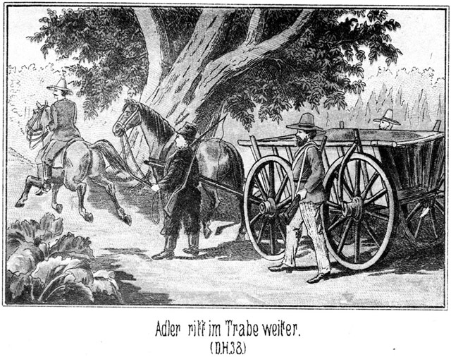Adler ritt im Trabe weiter, während der Baumwollkarren im Schritte folgte.
Als die drei Jäger ihr Ziel erreichten, stand Almy mit ihrem Vater auf der Veranda; vor derselben aber waren alle Bewohner der Plantage, so weit sie nicht auswärts beschäftigt waren, versammelt! Die Schwarzen vollführten einen außerordentlichen Scandal. Sie standen vor einem Geheimnisse; sie umdrängten den Wagen, es enthüllt zu sehen. Jeder wollte den besten Platz haben.
Adler war in der Nähe vom Pferde gestiegen. Er wurde auf die Veranda gerufen und nach der abenteuerlichen Fracht gefragt. Er hatte zwar so eine kleine Ahnung, welche Ueberraschung der Dicke den Anwesenden bereiten werde, hielt es aber für gerathen, nicht davon zu sprechen, doch sagte er wenigstens:
»Nach Allem, was man von diesem wackern Sam gehört hat, giebt es ein gewagtes und doch dabei humoristisches Intermezzo. Er fürchtet sich vor keinem Teufel, und wehe dem Menschen, welcher es wagt, in irgend einer Weise mit ihm anzubinden.«
Jetzt ließ sich Sams Stimme vernehmen:
»Hochgeehrte weiße und schwarze Ladies und Gentlemen! Ich stehe im Begriff, Euch ein Beispiel von dem Gesetze der Savanne zu geben, damit Ihr einmal erfahret, wie es unter den Männern des fernen Westens zugeht. Wie heißt der dicke, schwarze Sir dort drüben mit dem Cylinderhute auf dem Kopfe und dem großen Säbel an der wehrhaften Seite?«
»Es ist Master Scipio, der Nachtwächter der Negerhütten,« antwortete Einer.
»Ich danke, Mylord! Also, mein theurer Master Scipio, wollt Ihr mir wohl einmal sagen, ob Ihr im Besitze einer Nase seid?«
Der nachtschwarze Wächter der Nacht fuhr sich schnell mit allen zehn Fingern in diejenige Gegend des Gesichtes, von welcher er überzeugt war, daß er bis dato dort den erwähnten Gegenstand gehabt hatte. Als er ihn noch an Ort und Stelle fühlte, nickte er befriedigt, zog sein breites Maul noch fünfmal breiter und antwortete:
» Yes! Master Scipio hat eine Nase.«
Alles lachte. Selbst die Herrschaften auf der Veranda konnten sich einer kleinen Heiterkeit nicht erwehren. Sam fuhr fort:
»Wer ist die schwarze Mylady, welche dort an dem Baume lehnt?«
»Ist Miß Juno aus der Küche,« antwortete eine andere Negerin.
»Danke sehr, Madame! Also, Miß Juno, wessen Eigenthum ist wohl die Nase, welche Master Scipio in seinem Gesichte trägt?«
»Master Scipio sein Eigenthum,« antwortete die Gefragte, höchst stolz darauf, daß ihr der Vorzug geworden war, gefragt zu werden.
Scipio griff sich abermals an die Nase, nickte sehr nachdrücklich mit dem Kopfe und stimmte bei:
» Yes! Master Scipio sein Eigenthum.«
»So sagt mir einmal, Master Scipio, ob Euch irgend ein Mannskind die Nase nehmen darf?«
» O no! Keiner sie mir nehmen darf.«
»Wenn Euch nun Jemand Eure Nase wegschnitte, was würdet Ihr thun, Master?«
»Ihm seine auch wegschneiden.«
»Schön! Sehr gut! Das ist das Gesetz der Savanna. Was mir Einer nimmt, das nehme ich ihm auch. Nun seht Ihr hier am Wagen einen weißen Gentleman stehen. Er heißt Master Jim Snaker und ist ein berühmter Savannenmann. Einst hatte er sehr viele Felle erbeutet, welche einen ganzen Reichthum ausmachten. Er lagerte mit denselben in der Prairie. Er wurde überfallen und beraubt. Man nahm ihm nicht nur die Felle, sondern einer der Räuber schoß ihm eine Kugel durch die Brust und schnitt ihm dann noch die Nase ab. Es dauerte Monate lang, ehe seine Wunde heilte. Von da an hat er nach dem Manne gesucht, welcher ihm nicht nur seine Biberfelle, sondern auch seine Nase raubte. Heut nun hat er ihn gefunden. Master Scipio, was wird dieser Mann wohl hergeben müssen?«
»Seine Nase.«
»Ganz richtig! Seine Nase – und was noch?«
»Die Felle.«
»Wenn er sie aber nicht mehr hat?«
»Kann er nichts hergeben.«
»Oho! Ein Fell hat er noch, nämlich das seinige. Was wird mit demselben geschehen?«
»Wird es hergeben müssen, wird ihm abgezogen.«
»Sehr schön! Master Scipio, Ihr seid zum Sherif oder zum Lordmayor geboren!«
»Yes, yes, Sir! Bin sehr klug, bin außerordentlich klug, wunderbar klug!« grinste der geschmeichelte Schwarze.
»Dieser Räuber, welcher sein Fell und seine Nase hergeben muß, befindet sich hier auf dem Karren als Gefangener. Er hatte sich bei einem seiner Freunde versteckt, der ihn beschützte, der uns belog, damit wir den Verbrecher nicht ergreifen sollten. Auch dieser Mitschuldige liegt mit auf dem Karren. Zur Strafe, daß er sich der Ausübung der Gerechtigkeit widersetzt hat, soll er jetzt verurtheilt sein, an seinem Schützling die Strenge des Savannengesetzes zu vollziehen. Er soll ihm die Nase abschneiden und sodann ihm das Fell abziehen, die ganze Haut vom Leibe herunterschinden.«
Der Jubel, welcher jetzt ausbrach, ist nicht zu beschreiben. Alles schrie, lachte und tanzte untereinander.
»Abschinden! Die Haut abziehen! Die Nase abschneiden! O Jessus, Jessus, ein großes Fest!«
Solche und ähnliche Ausdrücke wurden ausgestoßen. Almy wandte sich schaudernd ab und fragte:
»Pa, ist es möglich?«
»O nein,« lächelte er. »Wer weiß, was dieser Sam beabsichtigt. Er sieht gar nicht mordgierig aus.«
Der Dicke wendete sich an den Jäger:
»Jim Snaker, Du bist der Verletzte. Dir steht es zu, diesen Helfershelfer vom Wagen zu heben und ihm Dein Messer zu geben, damit er seine Pflicht erfülle. Thue es!«
Der lange Jim ließ ein breites, vergnügtes Lachen hören, griff unter das Laub und zog Bommy vom Wagen herab, legte ihn zur Erde, lößte ihm die Fesseln und versetzte ihm dann einen so kräftigen Klapps, daß der Getroffene mit einem lauten Schrei aufsprang. Jetzt wurde er erkannt.
»Bommy, Bommy, o Bommy ist es! Bommy ist mitschuldig! Bommy muß Haut abschinden!« rief es rund umher.
»Jetzt auch den Andern herab!« sagte Sam. »Der welcher die Felle raubte und die Nase abschnitt.«
Aller Hälse wurden länger, und Aller Köpfe streckten sich, um dieses Ungeheuer zu sehen, welchem nun zur Strafe die Haut abgeschunden werden sollte. Jim langte abermals unter das Laub, zog ihn hervor, warf ihn herab und band ihm die Fesseln los. Er blieb liegen, nicht etwa aus Schwäche, o nein! Er fühlte eine Kraft in sich, als ob er die ganze Welt ermorden könne. Aber die Scham, die ungeheure Blamage, die hielt ihn an der Erde fest, damit man sein Angesicht nicht sehen solle. Vergebliches Beginnen!
Jim ergriff ihn mit seinen Eisenarmen und hob ihn in die Höhe, wie man ein Kind aufrichtet. Die Nase war ihm von Sams Fausthieb geschwollen; die Haare hingen ihm wirr um den Kopf; Kleidung und Wäsche waren in Unordnung. Zunächst traute Niemand dem eigenen Auge. Dann aber brach es los, erst einzeln und leise, dann aber im Chore und laut, überlaut:
»Massa Leflor, Massa Leflor! Ihm wird die Nase weggeschnitten und die Haut geschunden!«
»Ihr irrt!« rief Sam. »Das ist nicht Massa Leflor, sondern dieser Mann heißt Walker und mag dem Massa Leflor ähnlich sein.«
»Nein, nein, ist Massa, Massa Leflor!« brüllte es rundum.
»Ruhig! Still! Wer dieser Schuft ist, das muß ich doch besser wissen, als Ihr! Ich bin es ja, der ihn gefangen hat!«
Jetzt erst kam Bewegung in den Gefangenen.
Er stieß einen heiseren Wuthschrei aus und versuchte, sich von Jims Griffe loszureißen; aber sofort griff auch Tim mit zu, und nun stand der Gefangene zwischen Beiden, von ihren sehnigen Armen umspannt, so daß er sich nicht zu bewegen vermochte. Seine Augen waren wie mit Blut unterlaufen, und vor seinen Lippen stand ein weißer Schaum.
Wilkins hatte bisher geschwiegen. Jetzt trat er vor und fragte laut:
»Master Barth, was ist das? Wie kommt Ihr dazu, Monsieur Leflor solche Gewalt anzuthun?«
»Monsieur Leflor?« antwortete der Gefragte im Tone der Verwunderung. »Verzeiht, das ist ein gewisser Walker, aber nicht Euer Plantagennachbar. Seht seine Kleidung an!«
»Diese könnte mich allerdings fast irre führen. Der Mann selbst aber ist Monsieur Leflor.«
»Unmöglich! Er hielt sich doch bei Bommy versteckt, als wir ihn suchten.«
»Ihr müßt Euch irren!«
»O nein. Wir sind ihrer Drei mit sechs sehr guten Augen. Wir sahen den richtigen Leflor bei Bommy einkehren und dann wieder fortreiten. Was sagt Master Adler zu diesem Manne?«
»Daß Ihr Euch irrt,« antwortete der Gefragte. »Er ist Monsieur Leflor.«
»Wunderbar! Wir können doch nicht blind gewesen sein! Ist er Walker, so werden wir ihn nach Van Buren transportiren, um ihm den Prozeß machen zu lassen: ist er aber wirklich Leflor, so müssen wir ihn freigeben. Er selbst mag sich durch offene Antworten aus seiner Lage befreien. Also sagt einmal, wer Ihr seid!«
Diese Frage war an den Gefangenen gerichtet.
Er antwortete nicht. Sie wurde wiederholt, und er schwieg abermals.
»Ihr seht, daß ich Recht habe,« sagte Sam. »Wäre er Leflor, so würde er antworten.«
Da knirrschte er in fürchterlichem Grimme:
»Ich bin Leflor! Laßt mich los!«
Zugleich machte er einen Versuch, sich aus der festen Umschlingung zu befreien, vergebens.
»Nicht zu schnell!« sagte Sam. »Wenn Ihr wirklich Leflor seid, so haben wir das Recht, zu erfahren, wie es kommt, daß wir Euch für den Verbrecher halten mußten. Erklärt es uns!«
Er antwortete nicht.
Da trat Wilkins ganz an den Rand der Veranda und sagte in befehlendem Tone:
»Sam Barth, ich gebiete Euch, diesen Mann jetzt frei zu geben!«
»Da macht Ihr doch nur Spaß!« meinte Sam in seinem freundlichen Tone.
»Nein, es ist mein Ernst. Ich befehle es Euch!«
Da nahm das gutmüthige Gesicht des Dicken auf einmal einen ganz andern Ausdruck an. Seine Augen blitzten zornig auf und seine Gestalt richtete sich in die Höhe. Er antwortete:
»Verzeiht, Sir, wenn ich Euch bei aller Hochachtung Euren Wunsch nicht erfüllen kann! Von einem Befehle ist gar keine Rede. Wir drei Männer sind freie, unabhängige Prairieläufer. Wir gehorchen nur dem Gesetze, welches in der Savanne herrscht. Würde diesem Gesetze der Gehorsam verweigert, so würden die menschlichen Unthiere ihre Häupter erheben, und Sünde und Verbrechen würden die grausigen Beherrscher des Westens sein. Was wir mit unserm Herzblute der Wildniß abgerungen haben, das wollen wir nicht aus feiger Schwäche dem Verderben preisgeben. Hilfe und Rettung jedem Braven, Untergang und Verderben aber jedem Gottlosen, das ist der Wahlspruch, von welchem wir nicht lassen werden. Wir haben gestern Abend einen jahrelang gesuchten Bösewicht ergriffen; er entkam uns wieder. Wir folgten seiner Spur, welche endlich in Bommy's Hütte führte. Hier steht er, den wir gefunden haben, in der Kleidung, in der wir ihn gestern ergriffen, und an dem Orte, zu welchem seine Spur führte. Er sagt, er sei ein Anderer. Gut. Wir wollen gnädig sein und ihn anhören, was wir nach dem Gesetze der Savanne nicht nothwendig hätten; aber er soll uns antworten und erklären, wie er in die Kleider des Verbrechers gekommen ist. Das können und müssen wir verlangen, und wenn irgend Jemand uns hindern wollte, so mache ich, so wahr ich lebe, kurzen Prozeß und jage ihm vor allen Versammelten eine Kugel durch den Kopf. Ich heiße Sam Barth und verstehe, wenn es sich um einen elenden Bösewicht handelt, keinen Spaß!«
Er nahm wirklich die Büchse von der Schulter, richtete den Lauf nach Leflors Kopf und sah sich dann herausfordernd im Kreise um.
Seine Worte hatten eine förmliche Rede gebildet, und diese hatte einen ungeheuren Eindruck gemacht. Alles schwieg, und Keiner wagte es, zu widersprechen. Sie sahen es Sam an, daß er sofort geschossen hätte. Almy zitterte beinahe, und doch vermochte sie es nicht, ihr Auge von der düstern Gruppe hinwegzuwenden.
»Nun, Mann, wie steht es?« fuhr Sam fort. »Wenn Ihr nicht antwortet, so nehmen wir an, daß Ihr Walker seid, und dann habt Ihr zum letzten Male im Leben die Hände und die Füße frei. Wir warten keine Ewigkeit auf Eure gütige Antwort!«
»Ich bin Leflor,« stieß er hervor.
»Wie kommt Ihr in das Gewand des Bösewichts?«
»Ich habe die Anzüge mit ihm umgetauscht.«
»Wozu?«
Er zögerte mit der Antwort.
»Wenn Ihr nicht sprechen könnt, so werde auch ich nicht weiter sprechen, sondern nun handeln.«
»Ich wollte ihn retten.«
»Er ist auf Eurem Pferde und in Eurem Anzüge davongeritten?«
»Ja.«
»Warum habt Ihr ihm geholfen? Kanntet Ihr ihn?«
»Nein.«
»So hat er Euch irgend welchen Vortheil geboten?«
»Nein.«
»Ihr lügt!«
»Ich sage die Wahrheit.«
»Wo ist er hin?«
»Ich weiß es nicht.«
»Da lügt Ihr abermals. Schämt Euch! Ihr wollt ein Gentleman sein, ein vornehmer, reicher Plantagenbesitzer, und fürchtet Euch vor einem armseligen Prairiejäger. Aber ich bin zu stolz, um mich länger mit Euch abzugeben. Ihr seid der Verbündete eines Diebes, Räubers und Mörders. Ihr habt seine Kleidung getragen und ihm zur Flucht geholfen; dadurch seid Ihr mit ihm verwechselt worden. Ihr habt Sam Barth ausgelacht und ihn betrügen wollen. Jetzt habt Ihr die Folgen davon. Ein Mann wie Ihr muß sich stets sehr hüten, mit einem braven Westmann in Konflict zu gerathen. Wir sind nicht so spitzfindig und raffinirt wie Ihr, aber wir haben unsern Scharfsinn und unsern Mutterwitz, an welchen alle Eure Klugheit nicht heranreicht. Geht jetzt fort, und hütet Euch in Zukunft vor Aehnlichem!«
Jim und Tim ließen ihre Hände von dem Gefangenen. Er that einige schnelle Schritte vorwärts, um aus dem Bereiche der vielen auf ihm ruhenden Blicke zu kommen, blieb aber doch noch einmal stehen, drehte sich um, erhob den Arm und rief drohend:
»Merkt Euch das, Ihr Alle! Ich komme wieder! Und Dir, Du dicker, deutscher Hund, werde ich zeigen, was Rache heißt!«
»So fange es sehr klug an!« antwortete Sam. »Denn wenn Du zum zweiten Male in meine Hände geräthst, so holt Dich der Teufel, in dessen Raritätenkammer Du gehörst.«
Leflor eilte mit langen, schnellen Schritten fort. Auch Bommy wollte gehen, da aber legte Sam ihm die Hand auf den Arm und sagte:
»Halt, Schwarzer! Mit Dir habe ich noch ein ernstes Wörtchen zu sprechen.«
Er hatte nicht fest zugegriffen. Bommy riß sich los und sprang davon.
»Gut, so zwinge ich Dich, stehen zu bleiben,« sagte der Dicke, indem er seine Büchse zum Schusse an die Wange legte.
Da aber bog sich Wilkins von der Veranda herab, ergriff das Rohr und zog es empor.
»Halt, Master! Wir wollen kein Blut vergießen.«
»O, nur ein klein Wenig, einen Schuß in das Schenkelfleisch.«
»Nein! Hängt denn Euer Glück so sehr davon ab, daß Ihr noch mit dem Schwarzen sprecht?«
»Das meinige nicht, aber vielleicht das Eurige, Sir.«
»So laßt ihn laufen! Ich will mein Glück nicht dem Blute Anderer verdanken.«
»Hm! Ganz wie Ihr wollt! Aber wenn ich mit keinem Andern mehr sprechen darf, so will ich doch wenigstens noch mit Euch einige Worte reden.«
Er schwang sich auf die Veranda hinauf, und Jim und Tim folgten ihm. Wilkins gab dem versammelten Volke einen Wink. Die Leute entfernten sich, aber nicht etwa ruhig, sondern das aufregende Vorkommniß wurde lärmend und schreiend bis auf das Kleinste erörtert. Der Neger ist ein Virtuos im Lärm machen, und die Negerin übertrifft ihn noch.
Wilkins hatte ein sehr ernstes Gesicht. Er sah fast zornig aus. Er fragte Sam:
»Befandet Ihr Euch wirklich im Unklaren über die Persönlichkeit Leflors?«
»Nicht im Geringsten,« antwortete Sam offen.«
»Ihr wußtet also gewiß, daß es nicht Walker war?«
»Ja.«
»Ah, so habt Ihr uns ganz einfach eine Komödie vorführen wollen?«
»Komödie?« meinte der Dicke, seinerseits nun auch sehr ernst. »Ich weiß nicht, was Ihr unter Komödie versteht; ich aber meine, daß es Komödien giebt, welche man nicht oft genug ansehen kann. Zur Unterhaltung ist es nicht gewesen.«
»Nothwendig war es auch nicht!«
»Nothwendig? Hm! Strafe ist naturnothwendig, und Abschreckung ist wünschenswerth. Dieser Mann hatte sich unterstanden, mich zu übertölpeln; er mußte also die Folgen tragen.«
»Also nur die Rücksicht auf Euer, wie es scheint, sehr stark entwickeltes Selbstgefühl hat Euch veranlaßt, dieses Schauspiel aufzuführen! Das muß ich streng tadeln, Master Barth!«
»Thut, was Euch beliebt! Ich thue auch, was mir gefällt, nämlich meine Pflicht. Aus diesem Grunde wollte ich Bommy zurückbehalten.«
»Ihr sagtet doch, daß Ihr dies nicht Euret- sondern meinetwegen beabsichtigt hättet!«
»Allerdings. Ich meinerseits bin mit diesem Menschen fertig. Aber er hat jedenfalls viel von Dem mit angehört, was Leflor mit Walker gesprochen hat. Er muß zum Geständnisse gebracht und nöthigenfalls dazu gezwungen werden.«
»Ich verzichte darauf. Ich will keine weitere Aufregung, keinen ferneren Skandal!«
»Ich habe weder die Pflicht noch die Lust, Euch zu Etwas zu bereden, was Eurem Gefühle widerstrebt, meine aber, daß Ihr durch Bommy viel über Walker und Leflor erfahren könnt.«
»Walker geht mich gar nichts an, und Alles, was Leflor betrifft, werde ich jedenfalls erfahren.«
»Vielleicht erst dann, wenn es zu spät ist. Uebrigens bin ich keineswegs der Meinung, daß Walker Euch nichts angehe, sondern ich meine vielmehr, daß er Euch noch zu schaffen machen kann. Er hat sich nicht ohne Absicht durch Eure Besitzung geschlichen, und er scheint die Veranlassung zu sein, daß Leflor schleunigst nach einen Notar gesandt hat. Bommy muß davon wissen. Habt Ihr ihn jetzt gehen lasten, so wollen wir ihn doch heut Abend, wo er doch mit den Bushheaders in unsere Hände fallen wird, recht ernstlich in's Gebet nehmen.«
»Nein. Das wird nicht geschehen, so lange mein Wille Etwas gilt, und ich bin der Ansicht, daß hier an diesem Orte eben nur dieser mein Wille maßgebend sei. Ich mag nichts über Leflor wissen und nichts über ihn erfahren. Wird Bommy mit ergriffen, so mag er als Mitthäter der Bushheaders behandelt werden, von Weiterem aber sehe ich ab.«
»Wann wird das Militair eintreffen?«
»Nach Anbruch der Dunkelheit. Monsieur Adler hat durch den Boten bitten lassen, daß die Truppen sich nicht sehen lassen mögen.«
»Das ist sehr klug. Auf diese Weise werden wir wie ein Wetter über die Kerls kommen. Ich hoffe, daß ihrer viele in das Gras werden beißen müssen!«
Wilkins Stirn zog sich zusammen.
»Ich hoffe das nicht. Ich will sie fangen und der Gerechtigkeit übergeben. Diese mag sodann mit ihnen nach den Gesetzen verfahren.«
»Das klingt zwar sehr schön, taugt aber nichts. Die Kerls werden hingesetzt und erhalten alle Gelegenheit, sich davon zu machen. Man kennt das schon. Eine Kugel vor den Kopf, und zwar sofort, das ist die beste Medizin gegen diese Seuche.«
»Ihr seid ein Unmensch!«
»Oho! Wenn mich ein Floh beißt, so wird er gefangen und gefingert. Und zapft mir ein Mensch mein Blut und Leben, mein Hab und Gut ab, so hat er ganz dasselbe verdient, ja noch mehr, denn der Floh hat von der Vorsehung das Recht erhalten, der Kostgänger eines jeden Gentlemen und einer jeden Lady zu sein, der Mensch aber soll sich seinen Schluck und Bissen selbst verdienen. Ich bin ein Menschenfreund und habe ein Herz, welches bei jedem Leide im Einundzwanzigachteltakte klopft, aber wenn der Mensch aufhört, Gottes Ebenbild zu sein, dann muß man sich seiner erwehren. Anderes giebt es nicht. Wer mir heut Abend vor den Lauf kommt, der muß dran glauben. Das ist Savannengesetz und von diesem gehe ich nicht ab; das ist ein jeder brave Westmann seinen Kameraden schuldig. Der Hallunke, den ich heut aus falscher Nachsicht schone, schießt mir morgen wohl bereits den besten Freund über den Haufen, übermorgen einen Zweiten und so weiter. Indem ich ihn geschont habe, bin ich mitschuldig an dem Tode der Andern.«
Wilkins machte eine höchst mißbilligende Handbewegung und sagte:
»Nach Dem, was Ihr da sprecht, muß ich Euch Drei dringend ersuchen, Euch heut Abend an der Affaire gar nicht zu beteiligen!«
»Ist das Euer Ernst?« fragte Sam erstaunt.
»Alle Teufel! Das ist verwunderlich! Hoffentlich wird der Offizier anders denken als Ihr, Mylord. Und hoffentlich wird er mir auch seine Leute gegen Walker zur Verfügung stellen.«
»Was ist Eure Absicht dabei?«
»Walker befindet sich bei Leflor. Ich darf da nicht eindringen; das Militair aber hat die Macht dazu. Ich werde mir durch die Soldaten den Kerl von Leflors Pflanzung holen lassen.«
»Ich habe Euch ja bereits gesagt, daß ich wünsche, Leflor möge in Ruhe gelassen werden!
»Ich aber wünsche das Gegentheil, Sir! Wir Drei müssen Walker holen!«
»Wenn diese Feindseligkeiten von hier ausgehen, werde ich in Leflor einen unversöhnlichen Feind haben. Das wünsche ich nicht.«
»Hoffentlich braucht Ihr ihn nicht zu fürchten!«
Der Pflanzer hob schnell den Kopf empor, fixirte Sam mit scharfem Blicke und sagte:
»Gedenkt Ihr etwa, mich zu beleidigen?«
»Nein, Sir!«
»Euer Ton ist mir aber ein unbequemer!«
»Der Eurige mir ebenso!«
»So wird es für beide Theile am vortheilhaftesten sein, wenn wir auf einander verzichten. Auf meinen Einfluß hin wird der betreffende Offizier sich nicht zum Polizisten Ihrer Privatrache hergeben.«
Er hatte das im allerschärfsten Tone gesagt. Er fürchtete die Rache Leflors. Sam seinerseits war auch sehr ärgerlich, aber er verstand besser sich zu beherrschen. Er fragte jetzt:
»Ihr werdet also den Offizier bewegen, Walker bei Leflor in Ruhe zu lassen?«
»Ja. Und ich bin überzeugt, daß mein Einfluß dazu genügen werde.«
»Jedenfalls. Ich besitze ja gar keinen Einfluß. Also heut Abend dürfen wir nicht mitthun, und Walker wird auch nicht arretirt? Dazu sagt Ihr, daß es am Besten für beide Theile sei, auf einander zu verzichten? Mylord, ich bin ein einfacher Mann; aber Unsereiner wird im Kampfe mit allen möglichen Gefahren und Hindernissen gewitzigt und gestählt. Ich habe geglaubt, das Richtige zu wünschen; haltet Ihr Euch aber für erfahrener und scharfsinniger, so wäre es Zudringlichkeit von mir, wenn ich Euch weiter belästigen wollte. Ich wünsche, daß Ihr niemals wieder eines fremden und unangenehmen Rathes bedürfen möchtet. Denkt zuweilen einmal an Sam Barth, den Dicken! Gott sei bei Euch!«
Er legte sein Gewehr auf die Achsel, sprang von der Veranda hinab und schritt in grader Richtung über den offenen Platz hinweg nach den Bäumen zu, wo Walker gestanden hatte, Almy zu betrachten.
» Good bye!« sagte Jim.
Er stieg mit einem einzigen Schritte seiner langen Beine hinab und folgte dem Dicken.
» Farewell!« knurrte Tim in grimmigem Tone und stelzte ganz ebenso davon, wie sein Bruder.
Die drei Jäger hatten sich mit dem Pflanzer allein befunden, da Almy in ihr Zimmer zurückgekehrt, Adler aber den Negern nachgegangen war, um ihnen ihre Beschäftigungen anzuweisen. Jetzt stand Wilkins ganz allein und betroffen da. Das hatte er freilich nicht beabsichtigt. Fortgehen sollten sie nicht, am Allerwenigsten in dieser Weise. Sie sollten ja bleiben, um seine große Dankbarkeit zu erfahren. Sie waren gekommen, ihn vor den Bushheaders zu warnen; sie waren seine Retter, und jetzt beleidigte er sie, jetzt schickte er sie fort! Das durfte nicht sein!
»Messieurs!« rief er ihnen nach. »Mesch'schurs, wo wollt Ihr hin? So bleibt doch da!«
Aber sie hörten nicht auf ihn. Sie gingen fort. Keiner drehte sich um. Schon war Tim als der Letzte hinter den Bäumen verschwunden.
Da eilte der Pflanzer ihnen nach, gradewegs, wo sie ja auch gegangen waren. Er lief weiter und immer weiter, ohne sie zu sehen. Er rief ihre Namen – umsonst. Er kannte die Art und Weise dieser braven, charaktervollen Männer nicht. Er hatte sie fortgewiesen, ob im Ernst oder aus Uebereilung, das war egal; ein Trapper thut das niemals. Sie sollten gehen, und sie gingen also. Daß sie an demselben Augenblicke, an welchem er sie nicht mehr sehen konnte, scharf im rechten Winkel von ihrer ersten Richtung abgewichen waren, das ahnte er nicht. Da er immer in gerader Linie weiter lief, so war es möglich, daß er sie einholen konnte. Er war auch kein Westmann, um ihre Spur aufsuchen und finden zu können.
Endlich dachte er an Adler, seinen Oberaufseher. Er ging, diesen aufzusuchen und traf ihn erst nach längerer Zeit. Er klagte ihm sein Mißgeschick und theilte ihm in Eile die Unterredung mit, welche Schuld an der Entfernung der Jäger gewesen war.
»Nun sind sie fort. Was sagt Ihr dazu?« schloß er seinen Bericht.
Adler zuckte wehmüthig die Achsel.
»Zu spät!« sagte er.
»Können wir sie nicht finden?«
»Nein.«
»Aber sie sind doch nicht aus der Welt! Sie können sich noch nicht sehr weit entfernt haben!«
»Sie sind gegangen und wollen nicht wiederkommen, Mylord. Wenn solche Männer dies wollen, so lassen sie sich nicht finden.«
»Aber wir müssen ihre Spuren suchen!«
»Das würde vergebens sein. Sie werden ihre Spuren verwischen oder gar keine machen.«
»Master Adler, Ihr seid so lange und so oft im Westen gewesen; Ihr seid ein sehr guter Pfadfinder. Ihr werdet ihre Spur entdecken.«
»Grad weil ich die Eigenheiten solcher Männer kenne, weiß ich genau, daß ich sie nicht finden werde. Sie werden sich getrennt haben, um sich an irgend einem gegebenen Punkte wieder zu vereinigen. Wir würden im günstigsten Falle nur Einen von ihnen erwischen, und dieser würde nicht mit zurückkehren. Da« ist er den beiden Andern schuldig, Sir!«
»Ich war bei heftiger Stimmung. Ich habe Unrecht gethan, wirklich Unrecht!«
»Und ich hatte mich so sehr auf den wackern Sam gefreut, der mein Landsmann ist. Dieser alte, kühne und listige Bär ist ein Kerl, welcher hundert vornehme Herren aufwiegt.«
»So thut es mir um so mehr leid. Auch Euch habe ich um das Vergnügen gebracht. Giebt es denn keine Hoffnung, sie wieder zu erlangen?«
Adler sann eine kurze Weile nach und sagte dann:
»Einen Weg giebt es, aber nur, sie vielleicht wieder zu finden. Ob sie jedoch zurückkehren, das möchte ich bezweifeln.«
»Was meint Ihr denn?«
»Sie haben es auf Walker abgesehen. Dieser befindet sich bei Leflor. Folglich werden sie das Haus Leflors so streng bewachen, daß es Walkern möglichst schwer wird, zu entkommen. Dort also müßte man sie suchen.«
»Wollt Ihr das thun?«
»Ja, wenn Ihr es wünscht.«
»Ich wünsche es sogar sehr. Steigt zu Pferde, Sir, damit Ihr in kurzer Zeit große Strecken durchstreifen könnt. Vielleicht findet Ihr sie, ehe sie da hinüber kommen.«
»Ich will es wünschen, bezweifle es aber.«
Nach wenigen Minuten ritt er davon. Als er zurückkehrte, war der Abend bereits hereingebrochen. Er hatte keinen der Drei gesehen.
Andre aber waren gekommen, nämlich ein Detachement Vereinigte-Staaten-Dragoner unter einem Oberlieutenant. Sie hatten ledige Pferde mitgebracht, um etwaige Gefangene sogleich und leicht transportiren zu können.
Es wurde Kriegsrath gehalten und da merkte Wilkins sehr wohl, welchen Werth der Rath Sam Barth's gehabt hätte. Adler war der Einzige, welcher in Folge seiner früheren Prairiefahrten befähigt war, den guten Dicken zu ersetzen. Sein Rath wurde auch acceptirt.
Er lag zur betreffenden Zeit, durch die Dunkelheit geschützt, im Busche unweit der Thür der Blockhütte, und beobachtete, daß die Erwarteten nach und nach kamen, einzeln. Einer um den Andern. Als er meinte, daß sie alle beisammen seien, kroch er zurück, wo die Dragoner seiner erwarteten, mit allem Nöthigen versehen. Er führte sie zur Hütte.
Jetzt erschallten verschiedene dumpfe Schläge durch die Nacht. Es wurden starke Pfähle gegen die Thür und die Laden gestemmt und in den Boden eingerammt, an Thür und Läden aber festgenagelt. Von drinnen war zunächst ein lauter, verworrener Tumult zu vernehmen; dann wurde es still.
Nachher loderten Feuer rund um die Hütte auf, um Jeden zu sehen, der sich etwa auf irgend eine Weise Ausgang verschaffen wolle. Hinter diesen Feuern wuchs irgend Etwas schwarz aus dem Boden hervor. Was es war, konnten die Belagerten durch ihre kleinen Gucklöcher, welche sie sich gemacht hatten, nicht erkennen. Aber als der Morgen tagte, zeigte es sich als eine rund um die Hütte errichtete, aus Reißigbündeln und allerlei Holzwerk bestehende Mauer mit zahlreichen kleinen Oeffnungen für die Gewehre. Aus der ganzen, weiten Umgegend kam Alt und Jung herbei, um dem eigenartigen Schauspiele der Belagerung einer Bushheadersbande beizuwohnen.
Die Glieder der Letzteren erkannten, daß Widerstand vergebens sein werde. Sie hätten durch denselben nur ihr Loos verschlimmert. Ergeben sie sich aber, so war Hoffnung vorhanden, daß dem Einzelnen nichts Verderbliches bewiesen worden und er also freigesprochen werden könne. Wasser gab es nicht, Proviant auch nicht, und so kam es denn, daß die Eingeschlossenen sich gegen Abend auf Gnade und Ungnade ergaben.
Das war ein Fang, über welchen die Bewohner der weitesten Umgegend jubelten. Es war dem Unwesen für lange Zeit ein Ende gemacht worden, und schnell sprach es sich herum, daß man dies nur allein dem dicken Sam Barth und den beiden dürren Brüdern Snaker zu verdanken habe.
Diese Nacht der Belagerung war auch anderweit durchwacht worden. Nämlich in einem mit eisernen Läden versehenen Zimmer seines Erdgeschosses saß Leflor mit dem am Abende angekommenen Notar und Walker bei emsiger Prüfung, Schreiberei und Berechnung.
Der Notar erklärte das Geschäft als vollständig gefahrlos für Leflor, und gegen Morgen war es abgeschlossen. Walker erhielt eine sehr bedeutende Summe, bestehend aus Bankbillets und Wechseln auf gute Häuser.
Er befand sich in einer sichtbaren Aufregung. Sein Gesicht wendete sich immer nach der Thür, als ob er sich nun schnell fort sehne.
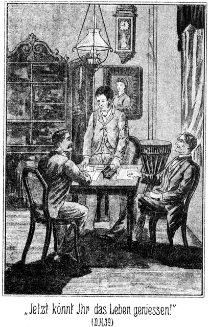»Jetzt könnt Ihr das Leben genießen, Sir,« meinte der Notar. »Ihr habt, trotzdem Ihr nicht den vollen Preis erhieltet, ein gutes Geschäft gemacht. Uns aber steht ein Prozeß bevor, dessen Ausgang zwar ganz unzweifelhaft ein für uns günstiger ist, dessen Dauer aber doch als eine sehr unangenehme Beigabe betrachtet werden muß. Ihr hingegen könnt sofort in die Tasche greifen.«
»Das sagt Ihr, aber es ist nicht so!«
»In wiefern?«
»Draußen stehen drei Hunde, welche bereit sind, sich auf mich zu werfen, sobald sie mich erblicken.«
»Ihr meint Sam, Jim und Tim. Sollten sie sich wirklich hier umhertreiben?«
»Ganz sicher!«
»Bittet die Behörde um Schutz!«
»Kann mir nichts nützen!«
»Ah! Wieso? Das ist mir neu. Die Behörde besitzt doch die Mittel zu noch ganz andern Dingen.«
Walker durfte nicht sagen, daß die Behörde, an welche er sich um Schutz wenden solle, eigentlich sehr ernste Veranlassung habe, sich seiner sehr gefährlichen Person zu versichern. Er antwortete:
»Die Behörde wird mich sicher hier aus dem Hause bringen. Die drei Trapper werden hierdurch erst recht aufmerksam gemacht. Sie folgen mir bis dahin, wo die Behörde mich mir selbst überläßt und fallen dann über mich her.«
»Sollten sie Euch wirklich so leicht folgen können?«
»Wenn Ihr das bezweifelt, so kennt Ihr diese Art von Menschen nicht. Ein ächter Savannenmann verfolgt seinen Feind zehn Jahre lang Schritt auf Schritt, um die ganze Erdkugel herum. Er erreicht ihn sicher.«
»Das ist ja eine ganz gefährliche Gesellschaft!«
»Für jeden ehrlichen Menschen, ja.«
»Wie wollt Ihr aber fort?«
»Am Gerathensten wäre eine Art und Weise, in welcher ich ihnen gar nicht auffallen könnte. Vielleicht eine Verkleidung.«
»So versuche es doch! Das ist erstens interessant, und zweitens bietet es die größte Sicherheit. Ich habe da einen ganz famosen Gedanken. Monsieur Leflor, habt Ihr einen Diener, welcher zu frisiren versteht?«
»O, gewiß.«
»Nun, Master Walker hat dunkles Haar. Er mag es sich kurz schneiden und wollig kräuseln lassen. Dann schwärzt er sich die Arme und das Gesicht und geht als Neger von hier fort. Das ist das Naheliegendste und zugleich Einfachste, was es nur geben kann.
»Meine Gesichtszüge sind nicht nach Negerart.«
»So verkleidet Euch als Negerin! Die schwarzen Ladies haben durchschnittlich regelmäßigere Züge als die dunklen Gentlemen. Giebt es nicht einen treuen Neger, auf den Ihr Euch fest verlassen könnt, Master Leflor?«
»O Mehrere!«
*
»So gebt Master Walker, wenn er als Negerin geht, einen männlichen Begleiter mit, damit die Sache noch mehr causa bekommt. Der Gentlemen mag einen Sack tragen und die Lady einen Korb. Es sollte mich sehr wundern, wenn die Belagerer sich groß um dieses Paar bekümmern sollten.« –
Es war um die Zeit zwei Stunden nach Mitternacht. Da mußten die schwarzen Arbeiter hinaus auf die Felder, jede Person an den ihr zugewiesenen Platz. Erst gingen sie in einem dichten Haufen. Dieser theilte sich nach und nach in einzelne Gruppen; die Gruppen lösten sich weiter auf, bis zuletzt nur einzelne Personen oder höchstens ein Paar zu sehen waren. Eins dieser Paare schritt langsam am Rande des Reisfeldes nach dem Flusse hinab. Es war ein Neger und eine Negerin.
Er hatte eine riesige Angelruthe in der Hand, und sie trug einen großen irdenen Krug auf dem kurzwolligen Kopfe. Sie flüsterten mit einander, während ihre Augen verstohlen suchend nach allen Seiten schweiften.
Am Flusse angekommen, setzten sich Beide an das Ufer nieder. Er befestigte den Köder an den Haken und ließ ihn so in das Wasser fallen. Sie hatte den Krug, mit Wasser gefüllt, neben sich gestellt und begann, aus schnell gepflückten, umherstehenden Blumen einen Kranz zu winden, welchen sie sich, als er fertig war, auf den Kopf setzte. Viel werth war dieser Kranz nicht. Die Niggerin schien kein Geschick für solche Art von Arbeit zu besitzen.
Unterdessen unterhielten sie sich weiter, die Negerin nur mit leiser Stimme. Da raschelte es seitwärts in den Büschen. Dort hatte ein Mann gesteckt. Als er sich jetzt emporrichtete, erkannte die Negerin in der langen Gestalt, dem eigenthümlichen Anzüge und den verwetterten Gesichtszügen Tim, den Trapper.
Er kam langsam näher und grüßte:
» Good day, Niggers! Was thut Ihr da?«
»Nigger fangen Fische,« antwortete der männliche Angler.
»O nein. Massa will carps (Karpfen) essen.«
»Welcher Massa?«
»Massa Leflor. Will essen sehr gut viel große carps.«
»Ah! Ihr gehört zu Leflor?«
» Yes, Massa.«
»Da Du fischen gehst, bist Du wohl im Hause beschäftigt?«
» O yes! Ich bin Pluto, und Pluto arbeitet in der Küche.«
»Ist diese hier Dein Weib?«
»Weib? Nein. Diese ist Mally, und Mally wird sein meine Frau.«
»Also Deine Braut?«
» Yes, Braut, Massa.«
»Ist sie auch in der Küche?«
» O yes! Mally kocht in Küche viel großen fetten carps für Massa.«
»So wißt Ihr wohl auch, wer im Hause wohnt?«
»Massa Leflor wohnt in Haus.«
»Das versteht sich! Habt Ihr Gäste?«
»Gäste? Pluto nicht wissen, was sein Gäste.«
»Ich meine, ob Fremde da sind, für welche Ihr mit kochen müßt.«
»Wer ist das?«
»Massa Nohary und Massa – Massa – – –«
»Nun, wie heißt der Andere?«
»O, Pluto hat vergessen.«
»Vielleicht Walker?«
» Yes, yes! Massa Walker.«
»Was thut Master Walker?«
»Hat gessen. Wird fahren in Cap, o nein, sondern in groß schön Kutsche.«
»Wohin?«
»Pluto nicht wissen. Massa Walker fahren mit Massa Nohary.«
»Vielleicht nach Van Buren?«
» Yes, yes! Van Buren.«
»Wann?«
»Jetzt bald anspannen.«
»Schön, sehr schön! Wünsche Euch viel Glück! Macht guten Fang!«
»Dank, Dank! Massa auch mach guten Fang, großen carp!«
Er sagte das so treuherzig, mit so aufrichtiger Miene. Aber als der Jäger fort war, lachte er vor sich hin und meinte:
»Der wird keinen Fang machen; er geht, um die beiden Andern zu holen, und dann werden sie sich in der Richtung nach Van Buren aufstellen. Jetzt sind wir sicher. Wir werden ein Floß bauen, und Ihr geht an das andere Ufer. Bis heut Abend seid Ihr in Sicherheit.«
Als am Abende der schwarze Kutscher Leflors, welcher den Notar nach Van Buren gefahren hatte, zurückkehrte, berichtete er auf die Frage seines Herrn, daß er unterwegs von drei bewaffneten Männern, zwei langen und einem sehr dicken, der ein Bärenfell getragen habe, angehalten worden sei. Sie hatten in das Innere des Wagens geblickt, ihn aber unbelästigt passiren lassen, als sie sich überzeugt hatten, daß nur der Notar vorhanden war.
Diese drei Männer wurden, allerdings einzeln und nicht beisammen, noch mehrere Male in der Gegend gesehen, bis nach mehreren Tagen der schwarze Pluto wieder fischend am Flusse saß und Tim sich abermals zu ihm gesellte. Der Jäger frug den Schwarzen nach verschiedenen Dingen, erhielt aber nur kurze und mürrische Antworten.
»Du hast heut schlechte Laune. Es fehlt Dir wohl Mally, Deine Braut?«
»Mally? O, Pluto mag nichts wissen von Mally.«
»Warum? Hat sie Dich betrogen?«
»Sehr groß Betrug. Massa Leflor auch sein großer Betrug.«
»Auch er hat Dich betrogen?«
» Yes, sehr!«
»Wieso denn?«
»Massa mir geben Mally-Mally neu auf Plantage, Mally meine Braut. Ich mit Mally fischen – hier, da!«
»Wohl als ich mit Euch sprach?«
» Yes, yes, Massa! Ich geben will Mally einen Kuß. Mally mir giebt Ohrfeige und springen hier ins Wasser.«
»Donnerwetter! Die war nicht allzusehr verliebt in Dich, wie es scheint. Was that sie dann?«
»Schwimmen hinüber über Fluß. Drüben ausziehen Weiberkleid. Darunter Männerkleid. Nachher sich waschen – sein gar nicht mehr Braut, nicht mehr Mally.«
Da machte der Jäger eine Bewegung des Schreckens. Das hatte er nicht erwartet. Er fragte:
»Es war also kein Mädchen mehr, als sie sich gewaschen hatte? Keine Mally?«
»Nicht Mädchen, nicht Mally und nicht Negerin.«
»Alle Teufel! Sie war weiß?«
»Ja. Schwarze Haut weggewaschen.«
»Kanntest Du das Gesicht?«
»Sehr viel! War Massa Walker.«
»Walker! Da sollen doch sofort alle neunundneunzigtausend Teufel dreinschlagen! Hast Du denn auch richtig gesehen?«
» Yes! Blicke sehr viel gute Augen.«
»So ist er entkommen, geflohen bereits seit vier Tagen! Weißt Du nicht, wo er hin ist?«
» Yes. Sehr!«
»Nun?«
»Er mir herüberrufen: Wenn Jemand fragen, ich soll sagen, er sein nach Trippsdrille. Drei Massa mögen nachkommen, zwei lang Massa und ein dick Massa.«
»Hole ihn der Henker! Auch noch spotten! Und ich habe hier bei ihm gestanden, habe ihn angesehen, konnte ihn mit allen beiden Händen und allen zehn Fingern ergreifen! Mensch, Schwarzer, Pluto, hast Du denn fast geglaubt, daß er ein Mädchen war?«
»Hab geglaubt.«
»Und daß er eine Schwarze war?«
»Eine Schwarze, yes!«
»Aber hast Du sie denn nicht angegriffen?«
» Yes, sehr! Bei Hand und Wange.«
»Da mußt Du doch bemerkt haben, daß er sich nur angemalt hatte. Er muß ja abgefärbt haben, und Du mußt schwarz geworden sein!«
»Schwarz? Pluto schwarze Flecke bekommen?«
Er hielt ihm die nackten, pechdunklen Arme entgegen und lachte aus vollem Halse. Da sah Tim ein, welch eine Dummheit er begangen habe. Er versetzte dem Schwarzen einen Fußtritt und knurrte grimmig:
»Feixe nicht, Orang-Outang! Ich glaube gar, Du machst Dich über mich lustig!«
»Warum nicht lustig? Pluto genau wissen, daß Mally nicht Mädchen. Mally war Massa Walker. Pluto haben Massa Walker anmalen und über Fluß schaffen. Massa Tim Snaker kein Orang-Outang, aber ein gewaltig groß viel Esel und unendlich viel Dummkopf!«
Ehe der Jäger sich nur recht in den Inhalt dieser Worte hinein zu denken vermochte, war der verschlagene Schwarze von seinem Sitze aufgeschnellt, hatte Angelruthe und Topf ergriffen und jagte mit der Schnelligkeit eines trabenden Pferdes davon.
Tim stand noch lange Zeit mit offenem Munde da und starrte nach der Richtung, in welcher der Neger verschwunden war. Seit dieser Stunde aber ließen sich die drei Jäger in dieser Gegend nicht mehr sehen, bis einst nach ungefähr – – – doch das darf erst später berichtet werden. – – –
Kurz nachdem an jenem Nachmittage der Notar nach Van Buren gefahren war, hatte auch Leflor seine Pflanzung verlassen, nicht zu Wagen, sondern zu Fuße. Er ging langsam und nachdenklich in der Richtung nach Wilkinsfield, von wo er gestern zweimal in so verhängnißvoller Weise fortgewiesen worden war. Wollte er etwa wieder hin? Er machte einen Umweg, um nicht an dem noch belagerten Blockhäuschen vorüber zu müssen. Er war sehr sorgfältig gekleidet. Die Geschwulst seines seit gestern mit Arnica behandelten Gesichtes hatte nachgelassen. Auf seinen Zügen prägte sich Spannung, Schadenfreude, Haß und Triumph aus.
Er suchte seinen Weg unter den Bäumen, da wo es keine Bahn gab, bis er gerade gegenüber der oft genannten Veranda angekommen war. Als er hinüber zu derselben blickte, sah er Almy. Sie befand sich nicht, wie gestern früh, im leichten Morgengewande; sie war in vollständiger Toilette, deren Taille nach südlicher Pflanzerart ausgeschnitten war. Sie hatte auf einem leichten Rohrsessel Platz genommen und hielt ein Buch in der Hand. Aber sie las nicht in demselben. Zwar ruhte ihr Auge zuweilen für einige kurze Sekunden auf den Zeilen, es erhob sich dann aber wieder von denselben und schweifte ungeduldig nach der Richtung, in welcher die Blockhütte lag. Sie schien von dorther Jemand zu erwarten.
»Wie schön sie ist, wie wunderbar schön!« murmelte Leflor. »Ich habe noch niemals ein solches Mädchen gesehen. Sie hat nicht die dürre, langhalsige Gestalt und das hektische, gelangweilte und darum wieder langweilende Gesicht einer Yankeedame, aber auch nicht die übermäßigen Formen einer Millionärin aus niederländischem Blute, nicht das matte, charakterlose Blond einer Dame aus dem frommen Philadelphia und doch auch nicht den dunklen Teint einer übermüthigen und anspruchsvollen Bewohnerin von Baltimore. Sie ist eine Vermählung mit den Göttinnen von Juno, Venus und Flora. Man kann sie eigentlich nach gar keinem Typus classificiren, und – – ah!«
Von daher, wohin Almy so ungeduldig blickte, kam jetzt Adler, der Oberaufseher. Sie erhob sich schnell, trat an die Brüstung der Veranda und rief, noch ehe er nahe gekommen war:
»Monsieur Adler! Gut, daß Ihr kommt! Wie steht es draußen bei der Hütte?«
»Sehr gut, Mademoiselle,« antwortete er, schnell seine Schritte beschleunigend.
»Habt Ihr sie?«
»Nur eingeschlossen.«
»O wehe! Da giebt es Kampf!«
»Ich glaube nicht.«
»Wenn das doch zu vermeiden wäre. Ich habe gar so große Angst.«
»O, Ihr braucht Euch doch nicht zu sorgen!«
»Ich nicht? Ich glaube doch, ich am Allermeisten.«
»Darf ich fragen, weshalb?«
»Nun, Pa wird ganz sicher mitkämpfen.«
»Das wird er doch nicht thun!«
»Er wird es, Sir. Ich kenne ihn.«
»So werde ich ihm abrathen.«
»Ihr Rath wird keinen Erfolg haben.«
»So werde ich ihn zwingen, von einer Betheiligung am Kampfe abzusehen.«
»Glaubt Ihr, daß er sich zwingen läßt?«
»Ja Ich werde mich an den Offizier wenden, dessen Anordnung er sich zu fügen hat.«
»O, wenn Ihr das wirklich thun wolltet!«
»Ich thue es sicher.«
»Ich danke Euch, Sir! Aber – – werdet auch Ihr von der Betheiligung am Kampfe absehen?«
Er schüttelte lächelnd den Kopf.
»Das wird nicht möglich sein, Miß Almy.«
»O doch! Warum sollte es nicht möglich sein?«
»Weil ich der eigentliche Anführer bin. Nach meiner Anordnung ist bisher Alles geschehen. Was wir bisher gethan haben, war für uns nicht gefährlich. Darf ich da feig zurücktreten, wenn es beginnt, Gefahr zu geben.«
»Nein, nein! Feig soll man Euch nicht nennen, Euch gar nicht! Aber Ihr habt es doch nicht nöthig, Euch dorthin zu stellen, wo es am Gefährlichsten ist.«
»Diese Stelle kennt man leider vorher nicht.«
»Nun, Ihr werdet doch bald merken, wo die meisten Kugeln pfeifen?« Sie sprach in einem außerordentlich besorgten Tone.
»Ja,« antwortete er, »das werde ich freilich merken.«
»Schön! Und wenn Ihr es merkt, so geht Ihr schnell an eine andere Stelle.«
»O, das würde auffallen. Miß!«
»Dieses Auffallen ist lange nicht so schlimm, wie das Umfallen, Sir!«
»Umfallen? Wie?«
»Wenn Euch eine Kugel trifft, so fallt Ihr doch um.«
»Ach! Das hat nichts zu bedeuten!«
»Nichts? Mein Gott! Dann seid Ihr ja todt!«
Sie war bleich geworden, während er in einem leichten, unbesorgten Tone gesprochen hatte. Jetzt aber wurde sein Gesicht auch ernst. Er antwortete, auf jedes Wort einen besonderen Nachdruck legend:
»Der Todte ist glücklich!«
»Wie! Habt Ihr Euer Leben so wenig lieb?«
»Für wen hätte es denn einen Werth?«
»Für Euch doch!«
»Pshaw!«
Er machte eine wegwerfende Bewegung mit der Hand und fügte dann hinzu:
»Das Leben ist für den Menschen nur dann von Werth, wenn es auch für Andere werthvoll ist.«
»Ich kann Euch gar nicht Recht geben, Sir!«
»Nun, es ist mit dem Leben genau so wie mit dem Reichthume. Bin ich etwa reich, wenn ich eine Million oder einige Millionen besitze?«
»Ganz gewiß.«
»Ich setze aber nun den Fall, diese Millionen hätten für Andere keinen Werth? Ich will annehmen, ich besäße drei Millionen in Papieren einer Actiengesellschaft, welche vollständig Bankerott gemacht hat, so daß kein Gläubiger einen Penny bekommt. Wäre ich in diesem Fall reich?«
»Ganz und gar nicht, sondern im Gegentheile sehr arm und bedauernswerth.«
»Nun seht, so ist es auch mit dem Leben. Mein Leben hat für mich ganz genau denselben Werth, den es für Andere hat. Ist es Andern sehr gleichgiltig, ob ich lebe oder sterbe, nun, so kann ich eben ruhig sterben, da mir das Leben doch keine Genugthuung bringt.«
»Ich vermag nicht, Euch in Euren Anschauungen und Erklärungen zu folgen. Ich kann aber nicht glauben, daß Ihr denkt, Euer Leben habe für Andere keinen Werth.«
»Für wen sollte es Werth besitzen!«
»Nun, für Pa zum Beispiel.«
»Weil ich sein Beamter bin? O, wenn mich die Buschheaders niederschießen sollten, so bekommt er ja recht bald einen anderen Aufseher. Das weiß er genau.«
»Aber keinen solchen! Er schätzt und achtet Euch nicht wie einen Angestellten, sondern wie einen Freund!«
»Vielleicht!«
Er zuckte die Achsel. Es legte sich ein Zug tiefer Wehmuth über sein schönes Gesicht.
»Vielleicht? Nein, ganz gewiß!« beeilte sich Almy zu sagen. »Und außer ihm giebt es auch noch Leute, welche gar nicht wünschen, daß Euch eine Kugel treffen möge.«
»Wer mag das sein? Etwa die gute My?«
»Sir!«
»Oder gar Ty?« lächelte er.
»Wollt Ihr in dieser ernsten Angelegenheit Scherz treiben oder gar trivial werden, Sir? Dann würde ich Euch sehr zürnen!«
»Um Gottes willen, das nicht!« sagte er rasch. »Aber ich weiß doch keine Person, der es ganz besonders unlieb wäre, wenn ich auf irgend eine Weise von hier fortginge.«
»Nicht? Nun, Pa habe ich Euch genannt; da will ich wenigstens auch von mir noch sprechen.«
»Von Euch?«
Sein Blick senkte sich fragend in ihr Auge.
»Ja,« antwortete sie. »Ich würde sehr traurig sein, wenn Euch ein Leid geschähe.«
»Wirklich, Miß?«
»Ja, gewiß.«
»Mit dieser Versicherung macht Ihr mir eine Freude, wie ich sie mir gar nicht größer denken kann. Habt Dank, tausend Dank!«
Er streckte seine Hand aus, und sie reichte ihm von der Veranda aus die ihrige entgegen. Er drückte seine Lippen auf dieselbe, hielt sie fest und sagte:
»Denkt einmal an diesen Augenblick, Miß, wenn ich nicht mehr bei Euch sein werde – – –«
Sie fiel sichtlich erschrocken ein:
»Ihr wollt doch nicht etwa fort?«
»Nein; aber die Zukunft steht ja doch nur in Gottes Hand. Niemand weiß, was der nächste Augenblick zu bringen vermag. Wenn ich einmal nicht mehr in Eurer Nähe bin und Eure Gedanken weilen für einen Augenblick bei mir, so seid dann überzeugt, daß mein Leben nur Euch gehört, und daß es nicht mehr vorhanden ist, weil es mir nicht vergönnt war, für Euch zu leben. – Jetzt aber muß ich zu Monsieur Wilkins. Er wartet auf mich.«
Er gab ihr Händchen frei und entfernte sich rasch. Als er um die Ecke verschwunden war, legte sie beide Hände auf das Herz und hob wie betend die Augen empor. Der Lauscher hörte deutlich den lauten, tiefen und schweren Seufzer, welcher ihren Lippen entfloh, und die darauf folgenden Worte:
»Mein Gott! Sein Leben ist nicht mehr vorhanden, weil er nicht für mich leben durfte! So soll ich dann denken! Das heißt doch, er ist todt! O Gott, das wäre schrecklich, sehr, sehr schrecklich!«
Sie drehte sich um und trat langsam in ihr Zimmer zurück, die Thür hinter sich schließend.
»Verdammt!« flüsterte Leflor. »Dieser Bommy ist ein sehr guter Beobachter. Er hat Recht: Almy liebt diesen deutschen Schurken, und er weiß das und speculirt auf sie. Warum auch nicht? Sie ist schön und reich. Wie schlau er es anfängt, sie zu fangen! Er seufzt und stöhnt! Wenn er direct von seinen Absichten spräche, so würde er sie scheu machen. Das weiß er. So schmachtet er um sie herum, verdreht die Augen, spricht vom Sterben. Das erregt ihr Mitleid, und man weiß ja, daß das Mitleid die Mutter oder doch wenigstens die Tante der Liebe ist. Also deshalb hat sie mich abgewiesen! Sie will Madame Adler sein! O, so weit sind wir noch lange nicht! Hier steht Einer, der da einige Worte mitzusprechen hat. Zunächst wollen wir damit beginnen, zu beweisen, daß dieser Master Wilkins nicht nur nicht reich ist, sondern sogar eine Menge Passiva hat. Master Adler soll Zeuge sein. Dann wollen wir sehen, ob er die Tochter des Bettlers noch zum Weibe begehrt!«
Er verließ sein Versteck. Damit man ihn nicht kommen sehe und da bemerke, daß er Zeuge des Zwiegespräches gewesen sei, machte einen Umweg nach den anderen, um in die vordere Seite des Gebäudes zu gelangen.
Die Diener pflegen, selbst wenn ihnen nicht direct Etwas mitgetheilt wird, doch immer genau zu wissen, woran sie sind. Sie besitzen einen eigenthümlichen Instinct, eine außerordentliche Gabe, Alles zu errathen.
Der Schwarze, welcher unter dein Thore stand, wußte sehr genau, daß der Besuch Leflors nicht mehr gewünscht werde. Kein Mensch hatte es ihm gesagt, aber er wußte es. Darum wunderte er sich jetzt, als er ihn kommen sah, und stellte sich so in die Mitte des Eingangs, daß der Pflanzer ohne Zusammenstoß nicht an ihm vorüber konnte.
»Ist Monsieur zu Hause?« fragte Leflor, vor ihm stehen bleibend.
»Weiß nicht!« lautete die Antwort.
Der Mann blieb stehen, ohne einen Zoll breit zur Seite zu weichen.
»Aber ich weiß es!«
»Ist möglich.«
»Also packe Dich! Was stehest Du da?«
»Ich stehe da, weil ich Diener von Master bin.«
»Und ich will mit Master sprechen. Mach also Platz! Warum grüßest Du überhaupt nicht, Hallunke?«
Er war als Weißer gewöhnt, mit größter Unterthänigkeit behandelt zu werden. Der Schwarze antwortete, lachend die Zähne zeigend:
»Warum ich nicht grüße? Weil Massa Leflor erst auch nicht gegrüßt hat.«
»Hund! Meinst Du, daß ich Dich zu grüßen habe?«
» Yes, Massa. Ich stehe hier und Massa kommt. Wer kommt, hat zuerst zu grüßen. Massa aber hat nicht einmal an Hut gegriffen.«
»Bist Du toll, Schafskopf! Die Zeit ist nicht fern, in der ich Dir den Kopf zurechtsetzen lassen werde.«
Er gab ihm mit dem Ellbogen einen Stoß und schritt zum Thore hinein. Der Neger rieb sich die Seite, blickte ihm nach und brummte dabei drohend:
»O, Massa stößt mich! Komm nur wieder! Er denkt, weil er ein Weißer, so darf er stoßen; aber ein Schwarzer hat auch Ellbogen, viel stärkere Ellbogen als ein Weißer. Komm nur wieder! Ich bleibe hier; ich gehe nicht fort, bis Du gesehen und gefühlt, daß auch ich Ellbogen habe!«
Leflor stieg die Treppe hinauf, ging durch das Vorzimmer und trat, ohne anzuklopfen, in das ihm bekannte Zimmer des Hausherrn ein.
Dieser Letztere saß mit dem Oberaufseher am Tisch, in ein sehr angelegentliches Gespräch vertieft. Beide zeigten sehr erstaunte Gesichter, als sie den Eintretenden erkannten. Adler blieb sitzen; Wilkins aber stand auf und sagte:
»Monsieur Leflor! Ist es möglich.«
»Daß es möglich ist, beweise ich ja.«
»Ihr bei mir!«
»Ihr seht es ja!«
»Wie kommt Ihr herein? Niemand meldete Euch!«
»Ich fand einfach keinen Menschen, welcher mich hätte melden können.«
»Ohne anzuklopfen!«
»Habe ich das vergessen? Nun, so ist das wohl keine Sache, von welcher man großen Lärm macht.«
»Wollt Ihr nicht wenigstens ablegen!«
Er deutete auf den Hut, welchen Leflor auf dem Kopfe behalten hatte..
»Danke! Ich habe nicht geschwitzt und werde wohl auch hier nicht dazukommen. Warum also den Hut abnehmen.«
Das klang so höhnisch, und Leflor blickte sich dabei mit einer Unverschämtheit im Zimmer um, daß Wilkins vor Erstaunen gar nicht wußte, was er sagen sollte.
»Monsieur,« stotterte er, »ich begreife nicht – – –«
»O, ich begreife es auch nicht,« unterbrach ihn der Andere rasch.
»Was?«
»Daß Ihr mir keinen Stuhl anbietet. Ich werde mir also aus eigener Machtvollkommenheit einen nehmen. So!«
Er setzte sich nieder und legte die Füße behaglich auf den Tisch, an welchem Wilkins gesessen hatte. Das war nicht nur ein rüdes, gemeines Benehmen, sondern geradezu eine Beschimpfung der beiden anwesenden Herren. Wilkins, welcher den Ausbruch einer offenen Feindseligkeit zwischen sich und Leflor nicht wünschte, wußte nicht, wie er sich benehmen solle. Adler aber stand jetzt langsam von seinem Stuhle auf, trat näher und fragte:
»Monsieur Wilkins, wünscht Ihr, daß ich einige Diener rufe?«
»Nein, nein, Sir!«
»Oder ist es Euch recht, wenn ich diesen gemeinen Flegel selbst hinauswerfe?«
Ehe der Gefragte antworten konnte, antwortete Leflor rasch:
»Das werdet Ihr bleiben lassen. Mann! Ehe Ihr die Hand ausstrecktet, hättet Ihr eine Kugel im Kopfe. Dasselbe wird auch geschehen, wenn Ihr noch ein einziges Wort hören laßt, welches mich beleidigen könnte. Seht her! Ich habe mich vorbereitet.«
Er zog einen Revolver aus der Tasche.
»Pshaw!« lachte Adler auf. »Ein Feigling wie Ihr darf nicht mit solchen Instrumenten spielen. Er macht sich damit nur lächerlich und kann, da er mit Waffen nicht umzugehen versteht, nur sehr leicht sich selbst verletzen. Das wollen wir verhüten.«
Ein rascher Schritt, ein ebenso schneller Griff, und er hatte Leflor den Revolver entrissen. Er steckte denselben ein und trat wieder zurück. Leflor aber sprang auf, drang auf ihn ein und rief:
»Dieb! Her mit meinem Eigenthum!«
Er faßte den Deutschen beim Arme, erhielt aber einen so kräftigen Faustschlag an die Stirn, daß er zurückfuhr und niederstürzte.
»Da! Das ist für den Dieb!« sagte Adler. »Ich mache es nicht wie Andere, welche drohen, aber zu dumm und ungeschickt zum Handeln sind. Ich drohe nicht, sondern ich schlage gleich zu. Ach, etwa noch einmal, Monsieur?«
Leflor hatte sich nämlich schnell aufgerafft und drang mit beiden geballten Fäusten, vor Wuth laut aufbrüllend, auf ihn ein. Für einen Gegner wie Adler war er wirklich zu ungeschickt. Er erhielt einen zweiten, so kräftigen Faustschlag, daß er an die Wand taumelte.
Diese beiden Angriffe und Abwehrungen waren so rasch geschehen und so schnell auf einander erfolgt, daß Wilkins weder Zeit gefunden hatte, ein Wort zu sagen oder durch eine Bewegung diese Carambolage der zwei Männer zu verhüten. Jetzt aber trat er zwischen sie und gebot:
»Halt! Keinen Streit oder gar Kampf, Monsieur Leflor, ich ersuche Euch, mein Haus zu verlassen!«
»Ich! Euer Haus verlassen, ohne diesem Kerl gezeigt zu haben, was es heißt, sich an mir zu vergreifen? Das fällt mir gar nicht ein. Hier!«
Er ergriff einen Stuhl und wollte damit, den Pflanzer bei Seite schiebend, Adler schlagen. Dieser aber versetzte ihm einen dritten Fausthieb, jetzt nicht an die Stirn, wie die beiden ersten Male, sondern in das Gesicht, sodaß dem Angreifer der Stuhl entfiel und er, mit beiden Händen nach seinem Gesichte greifend, wieder zurück gegen die Wand taumelte.
Man hatte gar nicht sehen können, wie Adler seine gedankenschnellen Hiebe ausgeführt hatte; man konnte nur den Erfolg sehen. Und jetzt stand er ruhig lachend da und sagte, sich in höflichem Tone an Wilkins wendend:
»Ihr seht, Master, daß ich nicht der Angreifer bin; ich habe nur die Gewohnheit, mich zu wehren, wenn ich mit Worten oder in der That angegriffen werde. Wenn es Euer Wunsch ist, werde ich freilich so thun, als ob nur wir Beiden hier vorhanden seien. Handelt also ganz nach Eurem Belieben!«
»Ich wünsche weiter nichts, als daß Monsieur Leflor mein Haus verläßt!«
Der Genannte hatte keine Zeit zu einer Bemerkung. Er hatte das Taschentuch gezogen, um seine bereits gestern verletzte und jetzt wieder blutende Nase abzutrocknen. Adler zuckte die Achsel und meinte:
»Ich kann freilich auch nicht begreifen, wie er es zu unternehmen vermag, hier ohne Gruß und Anmeldung einzudringen. Er hat bereits gestern eine vollgiltige Lehre von mir erhalten. Nachher hat er vor dem dicken Sam gestanden, in einer Weise blamirt, daß ich an seiner Stelle mir vor Scham eine Kugel in den Kopf gejagt hätte. Er ist als der Mitschuldige eines armseligen Niggers und eines noch armseligeren Verbrechers entlarvt worden. Daß er es trotzdem wagt, sich hier wieder zu zeigen, das ist ein Beweis von dem gänzlichen Mangel allen Ehrgefühles.«
Leflor bückte sich, um den Hut aufzuheben, welcher ihm entfallen war, setzte ihn wieder auf und antwortete in stolzem Tone:
»Es wird sich sogleich zeigen, wer hier von Ehre sprechen kann!«
»Ihr sprecht sehr stolz trotz der jammervollen Gestalt, welche Ihr jetzt bietet. Nehmt Euern Hut ab, sonst mache ich den Lehrer, welcher seinen Buben zeigt, wie man es anzufangen hat, um höflich zu sein!«
Er trat einen Schritt auf Leflor zu. Dieser hatte nun doch erkannt, daß er, da Adler ihm überlegen war, mit physischem Widerstand nicht weit kommen werde. Er nahm den Hut ab und sagte:
»Wenn es Euch augenblicklichen Spaß macht, meinetwegen! Jedenfalls ist es das letzte Mal, daß ich mich vor Euch Beiden entblöße. Später werdet Ihr desto höflicher gegen mich sein. Diesen Herrn Aufseher aber werde ich hinauswerfen lassen, nachdem ich ihn vorher für sein jetziges Verhalten gehörig abgestraft habe.«
Adler zuckte verächtlich die Achseln. Wilkins, welcher einen abermaligen Ausbruch der Thätlichkeiten befürchtete, winkte ihm beruhigend zu und wendete sich an Leflor:
»Mir geht es genau so wie Monsieur Adler. Ich kann nicht begreifen, daß Ihr Euch nach Dem, was gestern geschehen ist, so rasch entschließen konntet, mir eine Visite zu machen.«
»Ich habe alle Veranlassung dazu.«
»So hättet Ihr Eure Absicht in höflicher Weise ausführen sollen.«
»Seid Ihr etwa gestern höflich gegen mich gewesen?«
»So weit es mir möglich war, bin ich es gewesen. Monsieur Adler, gebt ihm seinen Revolver wieder! Ich werde hören, was er zu sagen hat, und dann habt Ihr wohl die Güte, Euch wieder hier bei mir sehen zu lassen.«
»O,« warf Leflor schnell ein, »er braucht sich gar nicht zu entfernen. Was ich zu sagen habe, ist auch mit für ihn bestimmt. Ich bin überzeugt, daß es ihn im höchsten Grade interessiren wird.«
»So bleibt!« sagte Wilkins zu dem Aufseher.
Dieser nickte leichthin und antwortete in Beziehung auf die an ihn ergangene Aufforderung:
»Wenn Ihr gestattet, bleibe ich. Die Waffe wird er erhalten, wenn er geht. Ich habe nicht die Absicht, es ihm so leicht zu machen, aus irgend einer Absicht hier sein Pulver zu verpuffen.«
»Auch wünsche ich, daß Mademoiselle geholt werde,« fügte Leflor bei, indem er that, als ob er die Worte des Deutschen gar nicht verstanden habe.
»Meint Ihr etwa meine Tochter?« fragte Wilkins.
»Ja.«
»Ich kann mir keinen Grund denken, der ihre Anwesenheit nothwendig macht.«
»Der Grund ist sogar sehr triftig.«
»So ersuche ich Euch, ihn zu sagen!«
»Das habe ich wohl nicht nöthig.«
»So wird meine Tochter unserer Unterhaltung fern bleiben, Monsieur.«
»Meint Ihr etwa, daß ich den Gegenstand unseres gestrigen Gespräches heut wieder aufwärme?«
»O, es ist Euch zuzutrauen!«
»Da irrt Ihr Euch gewaltig. Hätte ich gestern gewußt, was ich heut weiß, so wäre es mir wohl nicht eingefallen, Euer Schwiegersohn werden zu wollen. Ihr könnt also überzeugt sein, daß ich nicht im Geringsten die Absicht habe, zudringlich gegen Mademoiselle Almy zu werden.«
Er hatte das in stolzem, wegwerfendem Tone gesagt, und nahm auf seinem Stuhle, auf welchen er sich niedergesetzt hatte, eine Haltung ein, als ob er jetzt ein Richter sei, welcher einige Angeklagten in aller Eile abzuurtheilen habe.
Adler zog die Brauen zusammen. Was er gehört hatte, war eine Beleidigung der heimlich Geliebten gewesen, und es zuckte in ihm, dem frechen Menschen dafür einen Faustschlag zu versetzen; aber Wilkins legte ihm die Hand auf den Arm und sagte:
»Still! Wir wollen uns nicht aufregen. Monsieur Leflor will mit mir sprechen, und ich habe die Absicht, ihn anzuhören. Er wünscht, daß meine Tochter gegenwärtig sein möge; ich werde ihm auch diesen Wunsch erfüllen, wenn er mir ihn zu begründen vermag. Unterläßt er das, so gebe ich ihm den Rath, sich lieber zu entfernen. Almy wird nur dann kommen, wenn ich ihr sagen kann, daß ihre Gegenwart nothwendig sei.«
»Sie ist es,« sagte Leflor. »Ich würde sie sonst gar nicht verlangen.«
»So sagt den Grund!«
»Eigentlich habe ich es gar nicht nothwendig. Ich brauchte nur zu sprechen, so würdet Ihr sofort nach Eurer Tochter schicken. Aber ich will mich dennoch herbeilassen, ihn Euch zu sagen. Ich bringe nämlich Grüße von einer Person, welche Miß Almy sehr nahe steht.«
»Von einer ihr nahe stehenden Person? Ich wüßte nicht, wen Ihr da meinen könntet.«
»Denkt einmal nach!«
»Es giebt nur eine einzige Person, von welcher man dies sagen könnte, und diese Person bin ich.«
»Sollte es wirklich sonst Niemand geben?«
Sein Blick war mit schadenfroher Spannung auf den Pflanzer gerichtet.
»Nein,« antwortete dieser.
»Sonderbar! Ich denke doch, ein Verlobter müsse der Dame nahe stehen, welche bestimmt ist, seine Frau zu werden. Oder sollte ich mich da vielleicht irren?«
Wilkins horchte auf.
»Ihr sprecht von einem Verlobten Almys? Da giebt es keinen, Sir.«
»O doch! Ich bin überzeugt davon.«
»Ein gewisser Arthur.«
Als Wilkins diesen Namen hörte, machte er eine Bewegung des Erstaunens.
»Arthur! Herrgott! Wen meint Ihr?«
»Ihr habt doch wohl einen Neffen, welcher diesen schönen, poetischen Namen trägt?«
»Freilich. Ich habe ihn aber nicht, sondern ich hatte ihn. Er ist verschollen.«
»Das hat Euch jedenfalls Freude gemacht!«
»Wie kommt Ihr zu dieser Frage?«
»Nun, es giebt Umstände, unter welchen es einem Oheim sehr lieb ist, wenn sein Neffe verschwindet.«
»Das kann ich mir nicht denken. Wie kommt Ihr übrigens dazu, meinen Neffen Arthur den Verlobten meiner Tochter zu nennen?«
»Hm! Ist er es etwa nicht?«
»Er war es; aber Niemand wußte davon. Selbst Almy hat bis heut keine Ahnung davon gehabt. Ich bin nicht im Stande, mir zu denken, auf welche Weise Ihr zu diesem Geheimnisse gekommen seid.«
»Und doch ist das sehr leicht zu denken. Ich habe Euch ja gesagt, daß ich Grüße bringe.«
»Doch nicht etwa von Arthur selbst!«
»Von ihm selbst.«
»Unmöglich!«
»Wirklich! Und zwar bringe ich von ihm nicht nur Grüße, sondern sogar Briefe oder doch wenigstens Schriftstücke, für welche Ihr Euch im höchsten Grade interessiren werdet, Ihr, Eure Tochter und wohl auch dieser Master Adler, welcher Euch so außerordentlich in Schutz genommen hat, und welcher die Absicht besitzt, Eurer Tochter sein Leben zu widmen.«
»Sein Leben? Wieso?«
»Hm! Ich hörte, daß er ihr sagte, sie solle später denken, er lebe gar nicht mehr.«
»Lauscher!« rief Adler. »Wer giebt Euch das Recht, hier umherzuschleichen und – – –«
»Halt! Still!« unterbrach ihn Wilkins bittend. »Keinen Streit wieder! Was ich da von Arthur höre, das ist mir freilich in solchem Grade interessant, daß ich jetzt nichts Anderes zu hören vermag. Also Ihr bringt Grüße und Schriften von ihm, Monsieur? Ist dies Wahrheit?«
»Natürlich!«
»Herrgott! So lebt er?«
»Ich weiß das nicht genau. Ich weiß nur, daß er der Verfasser der betreffenden Scripturen ist. Sie sind in meine Hände gekommen, und ich halte es für meine Pflicht, Euch davon zu benachrichtigen.«
»Das ist recht, sehr recht von Euch, Monsieur. Das söhnt mich vollständig mit Euch aus. Hier ist meine Hand. Lassen wir das Vergangene vergessen sein!«
Er streckte Leflor die Hand entgegen. Dieser ergriff sie und antwortete:
»Jawohl! Lassen wir das Vergangene vergessen sein, und nehmen wir die neuen Verhältnisse sowie sie uns geboten werden!«
»Die neuen Verhältnisse? Ich meine doch, daß Alles beim Alten bleiben möge!«
»O, es wird sich doch vielleicht Einiges ändern, und ich bin ganz gern bereit, mich darein zu fügen.«
»Ich begreife nicht, was Ihr meint. Hoffentlich darf ich bitten, mich die Grüße hören und die Schriftstücke, von welchen Ihr sprecht, lesen zu lassen!«
»Natürlich. Aber ich habe gewünscht, daß dies nur in Gegenwart Eurer Tochter geschehen möge.«
»Gut, gut! Ich gehe, sie zu holen.«
Er ging eiligen Schrittes nach der Thür. Als er sie geöffnet hatte, um das Zimmer zu verlassen, wendete er sich noch einmal um und sagte besorgten Tones:
»Aber bitte, keine Feindseligkeiten während meiner Abwesenheit!«
»O nein, gewiß nicht!« antwortete Leflor.
Aber als der Pflanzer fort war, trat der Erstere an das Fenster, blickte hinaus, Adler den Rücken zukehrend, und sagte, wie zu sich selbst:
»Wenn ich nicht mehr in Eurer Nähe bin, und Eure Gedanken weilen für einen Augenblick bei mir, so seid dann überzeugt, daß mein Leben nur Euch gehört und daß es nicht mehr vorhanden ist, weil es mir nicht vergönnt war, für Euch zu leben!«
»Schuft!« murmelte Adler.
Das war nur halblaut gewesen, Leflor hatte es aber doch gehört. Er drehte sich um und fragte:
»Galt dieses schöne Wort mir?«
»Natürlich!«
»Hm! Ich nehme das ruhig hin, weil ich Euch im höchsten Grade überlegen bin.«
»Wundersam!«
»O doch! Ich gefalle mir einmal heut in der Rolle des Löwen, welcher sich von dem kleinen Hündchen ankläffen läßt, weil er im Vollgefühle seiner Stärke sehr wohl weiß, daß es nur eines Druckes bedarf, den Kläffer zu zermalmen und zu verschlingen.«
»Der Vergleich ist sehr alt und sehr unzutreffend. Ich denke, daß das kleine Hündchen den mächtigen Löwen nicht nur angekläfft hat.«
»Nur angekläfft! Was Ihr gethan habt, das war nur ein Gekläff gegen Das, was ich zu thun vermag. Ich werde es beweisen.«
»So führt diesen Beweis so rasch wie möglich, sonst wird das Hündchen den Löwen verschlingen, ehe es Euch gelungen ist, nur zu Worte zu kommen!«
Jetzt kam Wilkins zurück. Er brachte Almy mit, welcher es anzusehen, war, wie ungern sie seiner Aufforderung gefolgt war.
»Hier ist meine Tochter,« sagte er. »Jetzt redet!«
Almy war zu Adler getreten.
»Bitte,« flüsterte sie, »keinen Streit mit ihm! Er ist es ja doch nicht werth, daß Ihr nur mit ihm redet!«
Ihr Vater hatte ihr also wohl einige Andeutungen über das Geschehene gemacht. Adler antwortete mit einer zustimmenden Verneigung.
Leflor war nicht einmal aufgestanden, um Almy zu begrüßen. Er blieb, sitzen und antwortete auf Wilkins' Aufforderung:
»So schnell und so kurz, wie Ihr gebietet, kann ich mich leider nicht fassen. Habt Ihr der Miß gesagt, um was es sich handelt?«
»Sie weiß, daß Ihr Grüße von Arthur bringt.«
»Weiß sie auch, daß er ihr Verlobter ist?«
»Noch nicht. Ich will ihr aber – – –«
»Arthur mein Verlobter?« fiel Almy ihrem Vater in die Rede. »Aber Pa, das kann doch nichts als ein Irrthum sein! Ich müßte davon wissen!«'
»Eigentlich müßtest Du davon wissen; das ist wahr; aber wir hatten unsere guten Gründe, es Dir gegenüber noch zu verschweigen.«
»Ja, die hattet Ihr,« lachte Leflor höhnisch.
»Wie meint Ihr das, Sir?« fragte Wilkins.
»Ganz so, wie ich es Euch sagte: Ihr hattet Eure sehr guten Gründe.«
»Natürlich. Aber ich sehe nicht ein, was Ihr dabei in dieser Weise zu lachen habt.«
»O, Eure Gründe geben mir solchen Spaß.«
»Das verstehe ich nicht. Ihr könnt meine Gründe ja gar nicht wissen.«
»Wenn ich sie nicht weiß, so kann ich sie mir doch wenigstens denken.«
»Vielleicht, ja. Als Almy mit Arthur versprochen wurde, war sie noch zu klein, um zu begreifen, um was es sich handelte. Darum wurde ihr nichts gesagt. Außerdem wollte ich ihre Regungen nicht beeinflussen. Ich war überzeugt, daß sie ihren Cousin ganz von selbst lieben werde.«
»Das hätte Euch den Kram erleichtert!«
»Ja, obgleich ich nicht einsehen kann, wie Ihr dazu kommt, das so ungewöhnliche, aber ebenso ordinäre Wort Kram zu gebrauchen.«
»Nun, dann will ich mich anders ausdrücken, Master Wilkins. Ich will Euch also nicht sagen, daß es Euch den Kram erleichtert hätte, sondern daß es Euch eine sehr große Sorge vom Halse genommen hätte.«
»Sorge? Welche etwa?«
»Wie nun, wenn Eure Tochter ihren Cousin nicht geliebt hätte?«
»Das war unmöglich. Leider trat er dann eine so weite Reise an und ist nicht zurückgekehrt.«
»Setzen wir aber doch den Fall, sie hätte ihn nicht so geliebt, wie man den Mann liebt, welchem man für das ganze Leben angehört?«
»Welchen Zweck hat Eure Frage?«
»Und setzen wir noch den anderen Fall, daß er hiergeblieben wäre, anstatt seine weite und gefährliche Reise anzutreten. Was dann?«
»Nun, so hätte er wohl eine Andere geheirathet.«
»Und sein Vermögen – –?«
Der Blick des Sprechers war jetzt mit durchdringender Schärfe auf Wilkins gerichtet! Dieser Letztere wurde um einen Schatten bleicher und antwortete:
»Sein Vermögen hätte ich ihm herauszahlen müssen.«
»Während es jetzt Euch gehört?«
»Ja.«
»Mit welchem Rechte?«
»Er ist spurlos verschwunden, und ich bin sein einziger Erbe.«
»Ach so! Hm, hm! Hättet Ihr ihm denn auch wirklich sein Vermögen herauszahlen können?«
»Warum nicht?«
»Vielleicht wäre es zu bedeutend gewesen und hätte Eure Kräfte überstiegen.«
»Ganz gewiß nicht. Jedermann weiß, daß ich mit meinem Bruder diese Pflanzung in Compagnie besaß. Sie gehörte ihm zur Hälfte. Nach seinem Tode ging diese Hälfte natürlich auf Arthur, seinem einzigen Sohn, über.«
»Ja, ja, wie einfach diese Angelegenheit steht oder vielmehr zu stehen scheint!«
»Wie soll sie anders stehen?«
Adler hatte sich, seit Almy eingetreten war, nicht wieder gesetzt. Er hatte sich an die Wand gelegt. Die Arme über der Brust verschlungen, beobachtete er Leflor. Jetzt trat er einen Schritt vor und sagte:
»Bitte, Monsieur Wilkins, laßt Euch doch von diesem Manne nicht an der Nase herumziehen. Er hat Etwas gegen Euch vor. Seine Absicht ist keine gute. Er will Euch irgend einen Streich spielen, irgend einen Hieb versetzen. Er weiß irgend Etwas von Euch und giebt Euch jetzt das Gift tropfenweise ein. Seht sein hämisches Lächeln! Er mag reden. Er mag sagen, was er will. Dann wissen wir es und werden ihm eine ebenso kurze und bestimmte Antwort geben.«
Leflor lachte höhnisch auf.
»Welch ein scharfsinniger Mensch dieser Deutsche ist!« sagte er. »Er hat es ganz richtig errathen. Ich habe einen Streich in petto. Ich werde es kurz machen. Ich will Euch eine Geschichte erzählen.«
»Macht keine Faxen!« sagte Wilkins. »Ich habe keine Zeit, Geschichten zu hören.«
»Die meinige könnt und müßt Ihr hören, Sir. Ich werde mich Euch zu Liebe sehr kurz fassen. Ihr werdet bereits bei den ersten Worten bemerken, daß die Erzählung höchst interessant ist. Also: Es waren einmal zwei Brüder welche ganz gleiche Mittel besaßen. Sie kauften eine Pflanzung in Compagnie und zahlten Jeder die Hälfte des Preises. Beide waren sehr brave Männer, aber von politisch verschiedenen Ansichten. Als der Bürgerkrieg in den Vereinigten Staaten ausbrach, hielt es der Eine mit dem Norden und der Andere mit dem Süden.«
Der Erzähler machte eine Pause und fixirte Wilkins mit scharfem Blicke. Dieser rückte sehr verlegen auf seinem Stuhle.
»Die Brüder zankten sich freilich nicht über ihre politischen Gesinnungen, denn sie hatten sich herzlich lieb. Der Eine, welcher es mit dem Norden hielt, machte seine Hälfte flüssig und unterstützte damit die Regierung des Nordens. Sein Geld wurde alle. Als der Krieg zu Ende war und der Norden gewonnen hatte, dachte man an die Opfer gar nicht, welche der brave Mann gebracht hatte. Er war zu stolz dazu, Ansprüche zu erheben. Eigentlich war er nun ein armer Mann. Er hatte es dem Bruder schwarz auf weiß geben müssen, daß er sein Vermögen herausgezahlt erhalten hatte. Dieser Letztere hatte Mitleid und sagte: »Laß das Verlorene fahren. Wir haben noch Geld genug. Ich habe einen Sohn, Du hast eine Tochter. Beide mögen sich heirathen, so kommt meine Hälfte, welche uns ja übrig geblieben ist, auch Dir zu Gute.« So sagte der brave Mann; dann – starb er.«
Der Erzähler hielt abermals inne. Wilkins hatte den Kopf in die Lehne des Stuhles gelegt. Er sah leichenblaß aus. Jetzt stand er langsam auf, starrte Leflor an und fragte mit zitternder Stimme:
»Monsieur, woher wißt Ihr das?«
»Dachtet Ihr vielleicht, es sei Geheimniß?«
»Niemand wußte es als ich, mein Bruder und sein Sohn. Keiner von uns Dreien hat es verrathen.«
»Hm! Davon nachher! Gefällt Euch die Geschichte?«
»Peinigt mich nicht! Wer hat es Euch erzählt?«
»Sagt mir erst, warum Ihr so erregt seid! Gesteht Ihr es vielleicht, daß Ihr selbst jener Bruder seid, welcher sein Vermögen vergeudete?«
»Vergeudete? Nein! Ich habe es auf dem Altare des Vaterlandes geopfert.«
»Nennt es, wie Ihr wollt. Aber es war nicht nur Euer Antheil, welches Ihr Euch auszahlen ließet. Ihr stelltet auch noch Papiere auf Euern Bruder aus, im Werthe von dreißigtausend Dollars, und er löste sie ein. Ist das wahr oder nicht?«
»Es ist wahr. Aber meint Ihr etwa, daß diese Papiere gefälscht gewesen seien?«
»O nein. Es ist Alles höchst ehrlich zugegangen!« Und in höhnischer Aufrichtigkeit fügte er hinzu: »Ehrlicher als mir jetzt lieb ist!«
»Dann begreife ich aber gar nicht, wie Ihr dazu gekommen seid, dies Alles zu erfahren.«
»Sehr einfach: Euer Neffe hat es ausgeplaudert.«
»Das ist nicht wahr!«
»Oho! Wer soll es denn sonst gesagt haben! Es war Geheimniß; das ist sehr richtig. Euer Bruder starb, hat das Geheimniß mit in das Jenseits hinüber genommen, und Todte plaudern bekanntlich nicht. Ihr selbst habt Euch natürlich gehütet. Etwas zu sagen. Wer bleibt da noch übrig als Euer Neffe?«
»Ich kann es nicht glauben.«
»War er denn einverstanden, Almy auch wirklich zu heirathen, wie es der Wille der Väter war?«
»Er hat sich niemals geweigert.«
»Aber wirklich lieb gehabt, nämlich wie man eine Braut liebt, hat er sie auch nicht, sonst hätte er es wohl unterlassen, Euch diesen Streich zu spielen.«
»Welchen Streich?«
»Ahnt Ihr es nicht?«
»Ich habe nicht die mindeste Ahnung, was Ihr meinen könntet.«
»O weh! Ich dachte bisher, daß er es Euch brieflich mitgetheilt habe.«
»Kein Wort.«
»So thut es mir leid. Euch so unangenehm überraschen zu müssen.«
Er stand langsam auf. Auch Wilkins erhob sich. Er hatte keine Farbe mehr im Gesicht. Er wußte, daß Leflor sich an ihm rächen wolle, und konnte sich denken, daß Das, was er jetzt hören werde, nichts Gutes sei, zumal Leflor es selbst als etwas Unangenehmes bezeichnet hatte.
»Was habt Ihr mir mitzutheilen?« fragte er.
»Nichts weiter, als daß ich gekommen bin, mich Euch als den gegenwärtigen Besitzer von Wilkinsfield vorzustellen, Monsieur und Mademoiselle.«
Er machte den beiden Genannten eine tiefe, höhnische Verneigung. Almy blieb still. Sie blickte nur ihren Vater besorgt an. Auch dieser fand keine Worte. Er hielt die Augen weit geöffnet und starr auf Leflor gerichtet. Seine Lippen bebten, seine Hände zuckten; er wollte sprechen und konnte nicht.
»Vater, mein Vater! Fasse Dich!« bat die Tochter, indem sie schnell herbeitrat und die Arme um ihn legte.
Auch Adler kam herbei, ihn zu unterstützen. Leflor musterte die Gruppe und sagte:
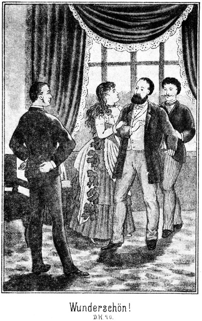»Wunderschön! Grad wie auf der Bühne! Ein ausgezeichnetes Tableau! Außerordentlich rührend!«
Das gab dem Pflanzer seine Selbstbeherrschung zurück. Er wehrte Adler und Almy von sich ab und sagte bittend:
»Laßt mich! Entweder haben wir falsch verstanden, oder es liegt sonst ein ungeheurer Irrthum vor, welcher sich sogleich aufklären muß.«
»Ein Irrthum ist nicht vorhanden. Aufklärung aber können Sie allerdings sogleich finden,« entgegnete Leflor, indem er in die Tasche griff und sein Portefeuille hervorzog.
»Ja, um diese Aufklärung muß ich freilich bitten!«
»Natürlich! Aber es kann mir nicht einfallen, diese Papiere in Eure Hand zu geben ohne alle Sicherheit, daß Ihr sie mir sofort wieder aushändiget.«
»Ich gebe sie zurück sobald ich sie gelesen habe.«
»Euer Ehrenwort?«
»Ja. Ich hoffe, daß Euch dieses genügen werde!«
»Natürlich! Ihr habt noch niemals Euer Wort gebrochen. Also hier nehmt zunächst diese drei Anweisungen, jede auf zehntausend Dollars, zahlbar von Eurem Bruder, ausgestellt von Euch.«
Wilkins betrachtete die Papiere genau.
»Ja, sie sind es,« sagte er.
»Hier nehmt sodann Eure eigene Erklärung und Unterschrift, daß Euer Bruder Euch Euern Antheil an der Plantage und noch dreißigtausend Dollars darüber ausgezahlt habe, notariell beglaubigt und petschirt. Ists richtig?«
»Ja,« gestand Wilkins, nachdem er das Document geprüft hatte.
»Ihr gebt also zu, daß die Pflanzung nun Euern Neffen Arthur Wilkins gehörte?«
»Als ehrlicher Mann muß ich es zugeben.«
»Und daß Ihr sie ihm nur verwaltet habt?«
»Ja.«
»Daß Ihr ihm jene dreißigtausend Dollars schuldig seid? Oder habt Ihr sie ihm zurückgegeben?«
»Nein.«
»Schön! Ist er mündig?«
»Ja, wenn er noch lebt.«
»Er hat also das Recht, die Pflanzung zu verkaufen, an wen es ihm beliebt?«
»Dieses Recht hat er; aber ich bin überzeugt, daß er diesen Schritt niemals thun wird, ohne es mir zu melden und mich um Rath zu fragen.«
»Da irrt Ihr. Er hat es gethan.«
»Nein und abermals nein und tausendmal nein!«
»Und ja und abermals ja und tausendmal ja!«
»Wo soll er es gethan haben?«
»In Santa Fé.«
»An wen?«
»An einen Amerikaner Namens Walker. Ihm habe ich die Pflanzung wieder abgekauft und sogleich baar bezahlt.«
»Ihr seid ja nie in Santa Fé gewesen?«
»Er war hier bei mir. Hier habt Ihr das Document über den Kauf in Santa Fé. Prüft es! Ihr werdet nichts Unrechtes finden.«
Der Pflanzer nahm das Schriftstück, prüfte jede Zeile und jedes Wort. Dann ließ er es auf den Tisch fallen, sank selbst in den Sessel und sagte:
»Es ist wahr, unglaublich und dennoch wahr! Er hat die Farm verkauft mit Allem, Allem, Allem!«
»Ist keine Täuschung möglich?« fragte Adler.
»Nein. Der Kauf ist vor dem Mayor abgeschlossen worden. Dieser hat die Rechte Arthurs genau geprüft und als unanfechtbar erklärt. So unanfechtbar sind nun auch die Rechte jenes Walker.«
»Walker? Ah! Ist es vielleicht derselbe Walker, welchen Monsieur Leflor gestern gerettet und mit nach Hause genommen hat?«
»Ganz derselbe,« lachte Leflor. »Bei mir angekommen, habe ich ihm die Pflanzung abgekauft. Vorhin ist er bereits wieder abgereist. Ihr mögt daraus ersehen, daß er sich eigentlich hier ganz gut hätte öffentlich sehen lassen können. Er war der Besitzer.«
»Könnt Ihr denn beweisen, daß Ihr ihm die Pflanzung auch wirklich abgekauft habt?«
»Zur Evidenz. Hier ist der Kauf!«
Wilkins prüfte auch dieses Document. Es war genau nach Vorschrift abgefaßt. Selbst der kniffigste Advocat hätte nicht den geringsten Fehler oder auch nur die kleinste Nachlässigkeit zu entdecken vermocht.
Leflor erhielt das Schriftstück wieder und fragte:
»Erkennt Ihr es an?«
»Diese Frage kann ich natürlich nicht beantworten.«
»Was gedenkt Ihr zu thun?«
»Auch das weiß ich nicht.«
»Nun, ich will zugeben, daß Euch diese Angelegenheit nicht nur ungelegen kommt, sondern daß sie sogar ein schwerer Schlag für Euch ist. Aber machen könnt Ihr nichts. Es ist am Allerbesten, Ihr fügt Euch in das Unvermeidliche.«
»Ich werde natürlich einen Rechtsgelehrten fragen.«
»Gut. Ich gebe Euch eine volle Woche Zeit. Habt Ihr bis dahin noch keinen Entschluß gefaßt, so mache ich meine Ansprüche bei der Behörde geltend und lasse Euch ganz einfach hinauswerfen.«
»Damit werdet Ihr doch wohl noch ein Weilchen warten müssen, Monsieur.«
»Wollen sehen! Meine gerechten und wohlbezahlten Ansprüche anfechten zu wollen, das wäre ein Unsinn. Mit dieser Angelegenheit sind wir fertig. Die Pflanzung gehört mir. Wie aber steht es denn nun eigentlich mit jener Summe?«
»Mit welcher Summe?« fragte Wilkins erstaunt.
»Nun, mit den dreißigtausend Dollars?«
»Wie soll es denn mit ihnen stehen? Die bin ich meinem Neffen schuldig.«
»Nicht mehr. Er hat die Schuld verkauft.«
»Oho! An wen?«
»An jenen Walker. Diesem habe ich sie gestern wieder abgekauft. Das könnt Ihr Euch ja denken, da Ihr mich im Besitze Eures Documentes seht.«
»Beweist es mir!«
»Sehr gern. Hier, lest einmal diese Schriften.«
Wilkins las. Als er fertig war, sagte er, fast stöhnend:
»Es ist wahr. Er hat auch diese Schuld verkauft.«
»Das möchte ich doch nicht glauben,« sagte Adler. »Habt Ihr Euch denn nicht freundlich mit ihm gestanden?«
»O, stets, stets!«
»Ist er in Unfrieden von Euch geschieden?«
»Nein, ganz das Gegentheil.«
»So will ich glauben, daß er aus irgend einem uns unbekannten Grund die Pflanzung verkauft hat. Dies hat ihm eine sehr bedeutende Summe eingebracht. Die Schuld hätte er dann nur in der Absicht verkaufen können, Euch vollständig und gründlich zu ruiniren. Das thut kein Neffe seinem Onkel gegenüber.«
»Es ist aber hier seine Handschrift!«
»Wißt Ihr das so genau?«
»Als ob es meine eigene wäre.«
»Und dennoch glaube ich nicht daran!«
Da bemerkte Leflor in scharfem Tone:
»Ob Ihr daran glaubt oder nicht, das ist hier ganz gleichgiltig! Ihr werdet jedenfalls gar nicht gefragt werden, und darum kann ich Euch nur rathen. Euer Mundwerk unbewegt zu lassen.«
Adler antwortete dagegen in ruhigem Tone:
»Es mag Euch sehr wohl thun, hier in dieser Weise auftreten zu können. Ihr meint, in Wilkinsfield Herr zu sein, und aus diesem Grunde – – –«
»Und aus diesem Grunde werdet Ihr der Erste sein, den ich zum Teufel jage,« fiel Leflor ein.
»Daß Ihr das beabsichtigt, davon bin ich vollständig überzeugt; aber gelingen wird es Euch nicht!«
»Oho! Meint Ihr, wenn es zum Prozesse kommt, daß ich ihn verlieren werde?«
»Ob Ihr ihn gewinnt oder verliert, das ist ganz gleich in dieser Frage. Zum Teufel jagt Ihr mich auf keinen Fall. Wenn Ihr den Fuß hierher setzen solltet, bin ich längst schon fort.«
»Das ist Euer Glück, denn ich würde Euch einige gute Hunde zwischen die Beine jagen.«
»Thut das in Eurer Phantasie, die allerdings einen sehr hündischen Character zu haben scheint; in Wirklichkeit werdet Ihr es nicht fertig bringen.«
»So macht Euch baldigst fort, denn ich komme sehr bald. Selbst wenn ich prozessiren muß, werde ich bereits heut Schritte thun, mein Guthaben von dreißigtausend Dollars einzutreiben. Drüben in Eurem guten Deutschland mag der Gläubiger kein Recht besitzen; hier aber bei uns giebt es zum Glück noch die Schuldhaft. Das müßt Ihr bedenken. Wenn Master Wilkins mich nicht bezahlt, lasse ich ihn einstecken. Und weil ich Ansprüche auf die Pflanzung mache und er im Gefängniß sitzt, werde ich einen Sequestor einsetzen und Euch fortjagen lassen.«
»Hm! Euer Advocat ist ein schlauer Kerl!«
»Ja. Euch ist er jedenfalls gewachsen. Also, Monsieur Wilkins, könnt Ihr bezahlen?«
»Nein.«
»So müßt Ihr unbedingt in das Loch!«
»Nur nicht so eilig!« fiel Adler ein. »Ehe Ihr von Schuldhaft redet, müßt Ihr daran denken, daß auch Eure Ansprüche bezüglich der dreißigtausend Dollars nicht gerichtlich anerkannt sind. Bis dies geschehen ist, könnt Ihr einstweilen Euch in das Loch setzen, von welchem Ihr redet. Wenn Monsieur Wilkins auf meinen Rath hört, so zeigt er Euch jetzt die Thür. Das ist jedenfalls das Allerbeste, was er thun kann.«
»Meint Ihr? Schaut doch einmal an, wie klug und weise Ihr seid! Auch ich habe einen guten Rath für ihn, der aber tausendmal besser ist als der Eurige. Wenn er verständig ist, wird er übrigens einsehen, daß ich es viel besser mit ihm meine als Ihr. Eure Absichten kenne ich!«
Wilkins war von Dem, was er jetzt erfahren hatte, beinahe betäubt. Es summte und brummte ihm vor den Ohren und es flimmerte ihm vor den Augen. Er hörte ganz genau, was gesprochen wurde, aber die Worte drangen wie aus der Ferne herüber und durch das Rauschen einer Brandung zu ihm. Als er jetzt die letzten Worte Leflors hörte, glaubte er, Rettung finden zu können. Darum fragte er ihn:
»Welchen Rath habt Ihr denn für mich?«
»Könnt Ihr ihn Euch nicht denken?«
»Nein.«
»Und er ist doch so sehr einfach! Indem ich Euch diesen Rath gebe, beweise ich Euch, daß Ihr keinen besseren Freund besitzt als mich, und daß ein jeder andere Mensch, welcher anders redet als ich, es nur auf seinen eigenen Vortheil abgesehen hat, nicht aber auf den Eurigen. Ich wundere mich wirklich selbst über mich. Ich befinde mich in einer so versöhnlichen Stimmung, als hättet Ihr mir nur lauter Gutes gethan, anstatt so viel Böses. Ich will auch Das, was gestern geschehen ist, vergessen und nie wieder daran denken; aber ich hoffe, daß Ihr auch einsehen werdet, wie gut ich es meine!«
»So sagt, was Ihr mir rathet.«
»Gut! Ich bin überzeugt, daß Ihr meinen Rath befolgen werdet. Es giebt ja wirklich weiter nichts für Euch. Wenn Ihr verständig seid, könnt Ihr die Pflanzung für Euch retten. Sucht nach einem reichen Manne für Miß Almy, welcher die Mittel besitzt, die Pflanzung zu erwerben!«
»Würdet Ihr dann bereit sein, sie wieder zu verkaufen, falls sie Euch zugesprochen würde?«
»Nein; im ganzen Leben nicht.«
»Nun, so könnte auch der reichste Schwiegersohn sie nicht erwerben.«
»Ist auch nicht nöthig. Ihr müßt nur Einen wählen, welchem die Pflanzung bereits schon gehört.«
»Ah, das ist deutlich genug! Ihr meint Euch selbst?«
»Ja. Das würde der ganzen Geschichte das beste Ende geben. Ich hoffe, Ihr seht das ein!«
»Natürlich sehe ich es ein. Ihr kommt und nehmt mir die Pflanzung. Dazu gebe ich Euch noch dreißigtaufend Dollars und meine Tochter! Hm!«
»Ihr lacht?«
»Vor Freude nicht!«
»Das gebe ich zu. Ich habe Verstand genug, einzusehen, wie unangenehm Euch diese Angelegenheit ist. Aber wenn Ihr denselben Verstand habt, so werdet Ihr auch erkennen, daß mein Rath der beste ist.«
Da stand Wilkins von seinem Stuhle auf, drehte sich zu Adler und fragte:
»Was sagt Ihr dazu?«
»Was ich bereits gesagt habe: Jagt den Menschen fort!«
Da trat Leflor herzu, stellte sich Adlern gegenüber und sagte:
»Ich habe nicht die geringste Lust, mich hier noch mehr zu ärgern, als es bereits geschehen ist. Dieser Mann giebt Euch einen Rath, und ich habe Euch einen gegeben. Welchen wollt Ihr befolgen?«
Wilkins befand sich in größter Verlegenheit. Er kannte das Land und seine Verhältnisse. Er wußte, daß er einer schweren Zeit entgegengehe. Das Alles konnte er vermeiden, wenn er Leflor's Wunsch erfüllte. Darum wendete er sich an seine Tochter:
»Almy, antworte Du an meiner Stelle! Aber mache mir dann später keine Vorwürfe, wenn ich nach Deinem Willen handle und es wird viel anders und schlimmer als Du denkst.«
»Wirst auch Du mir keine machen?«
»Gewiß nicht!«
»So will ich lieber arbeiten, daß meine Hände bluten, und lieber verhungern, als daß ich einem Manne angehöre, welcher Leflor heißt.«
Der Genannte stieß einen Laut aus, welcher spitz und scharf wie ein Pfiff aus seinem Munde tönte. Er hatte wirklich geglaubt, daß man sich nach seinem Rathe richten werde. Jetzt stieß er hervor:
»Das ist ja Unsinn! Da rennt Ihr ja mit offenen Augen in das Verderben!«
»Dieses Verderben ist mir angenehmer als Ihr!« antwortete das schöne Mädchen.
Das war ihm denn doch zu viel.
»Ah!« zischte er. »Wenn ich Euer Vater wäre!«
Sie hatte sich bisher scheinbar gleichgiltig gehalten. Während der ganzen Unglücksbotschaft war ihr kein Wort des Schreckes entfahren. Sie war viel zu stolz und verachtete Leflor viel zu sehr, als daß sie ihm hätte merken lassen wollen, wie tief sie von dem Verluste, welcher sie treffen sollte, erschüttert sei. Jetzt aber stand sie stolz und erhobenen Hauptes vor ihm, um ihm zu sagen, was sie zu sagen hatte. Sie fragte streng:
»Was würdet Ihr thun, wenn Ihr mein Vater wäret, Monsieur Leflor?«
»Ich würde Euch befehlen, meinen Willen zu thun.«
»Und wenn ich nicht gehorchte?«
»So würde ich Euch zwingen.«
»Womit?«
»Mit – mit – – mit Allem, womit man ungerathene Kinder zu zwingen vermag.«
»Nun, mein Vater ist nicht so unglücklich, ungerathene Kinder zu besitzen. Schade, daß der Eurige nicht mehr lebt. Er könnte das von Euch erwähnte Experiment an Euch vornehmen. Mein letztes Wort ist gesprochen. Eure Anwesenheit hat keinen Zweck mehr. Ihr könnt gehen!«
Sie stand da, trotz ihrer Jugend wie eine Königin. Ihr erhobener Arm zeigte nach der Thür. Ihre Augen blitzten. Sie war in ihrem Stolze, in ihrem sittlichen Zorne, in ihrer weiblichen Entrüstung so schön, so entzückend schön, daß Adler kein Auge von ihr zu verwenden vermochte.
Aber Leflor ging es ebenso. Er vergaß, zu gehen. Er blieb stehen, das Auge auf sie gerichtet, als ob er sie verschlingen wolle.
»Nun!« rief sie.
Er fuhr zusammen und griff nach seinem Hute.
»Also wirklich?« fragte er.
»Wirklich! Keinen Augenblick länger, sonst rufe ich nach der Dienerschaft.«
Bereits hob er den Fuß, um zu gehen. Da aber übermannte ihn der Eindruck ihrer Schönheit; er wendete sich zurück und rief, seiner nicht mehr mächtig:
»Ja, ich gehe, aber nur einstweilen; aber ich komme zurück, um Dich zu meinem Weibe zu machen. Du wirst es, Du wirst! Ich schwöre es! Wenn alle Engel und alle Teufel dagegen wären, Du würdest dennoch mir gehören. Du bist mein Eigenthum. Hier ist das Zeichen!«
Zwei schnelle Schritte, und er ergriff sie und riß sie in seine Arme. Er wollte sie küssen. Sie stieß einen Schrei aus und beugte das Köpfchen zur Seite. In demselben Augenblicke aber hatte auch schon Adler ihn am Halse gefaßt, sodaß der Freche nun seinerseits einen lauten Schrei ausstieß. Der Deutsche warf ihn wie einen Ball an die Thür, so daß sie aufsprang und Leflor im Vorzimmer hinstürzte. Ehe er sich erheben konnte, hatte Adler ihn schon wieder gepackt und schleuderte ihn an die vordere Thür, welche ebenso aufsprang.
Natürlich flog Leflor nun draußen zur Thür hinaus und hin auf die steinernen Platten des Flurs. In dem Letzteren aber stand der Neger, welcher den Weißen noch erwartete. Als er ihn jetzt in diesem Zustande erblickte, sprang er auf ihn zu und rief lachend:
»O Jessus, Jessus! Wer kommt da? Massa Leflor kommt geflogen! Soll weiter fliegen!«
Er griff den Weißen vom Boden auf, schüttelte ihn, als ob alle Knochen klappern sollten, und warf ihn dann vollends zum vorderen Thor hinaus. Das ging so gedankenschnell, daß jetzt erst Adler aus der Thür trat. Er sah Leflor nicht, aber den Schwarzen und fragte:
»Wo ist der Kerl?«
Der Neger lachte am ganzen Gesichte, sodaß sein Mund von einem Ohre bis an das andere reichte, deutete hinaus auf den Vorplatz und antwortete:
»Dort liegt er, Massa! Soll ich ihn noch über den Garten wegwerfen und nachher vielleicht noch in die Wolken hinauf?«
»Nein, mein Lieber! Er hat genug. Laß ihn laufen!«
»Er wird schnell genug machen, daß er fortkommt.«
*
Adler trat unter das Thor, schoß, um allen Eventualitäten vorzubeugen, sämmtliche Schüsse des Revolvers ab, warf ihn seinem Besitzer nach, befahl dem Schwarzen, diesen Letzteren nicht wieder einzulassen und kehrte dann zu Vater und Tochter zurück.
Leflor hatte nicht Schaden genommen, aber es war ihm, als stecke er in einer Pauke, auf welcher tausend Musikanten herumtrommelten. Er sagte kein Wort, raffte sich und seinen Revolver von der Erde auf, drohte mit dem Letzteren zurück und hinkte davon. Es war natürlich vorauszusehen, daß er Alles aufbieten werde, sich auf die eklatanteste Weise zu rächen.
– – – – – – – – –
Ungefähr vier Jahre oder auch wohl etwas mehr nach den soeben geschilderten Ereignissen ritt ein scheinbar einsamer Mann langsam den Wellen eines kleinen Baches entgegen, welcher von einer fernen Höhe kam. Diese Höhe schien das Ziel des Reiters zu sein.
Er war kein junger Mann mehr. Er hatte jedenfalls die Fünfzig bereits zurückgelegt. Sein Gesicht war wettersbraun, aber das Auge blickte hell und jugendlich in die Ferne.
Doch nicht blos in die Ferne blickte es. Es suchte auch rechts und links die Büsche zu durchdringen. Zuweilen hielt er den Kopf zur Seite geneigt, um irgend auf ein Geräusch zu lauschen. In solchen Augenblicken hielt er das Gewehr schußfertig in der Hand.
So ritt er langsam weiter. Sein mageres Pferd war höchst ermattet, und auch er selbst schien ermüdet zu sein. Eben kam er an einem kleinen Gebüsch vorüber. Ihm war, als habe er inmitten desselben ein leises Rauschen vernommen. Er hielt sein Pferd an und lauschte – vergeblich. Also ritt er weiter, fuhr aber erschrocken zusammen, denn:
»Puff, paff!« hatte es aus dem Busche hervorgeklungen, aber nicht aus einem Gewehre, sondern aus einem menschlichen Munde.
So wie der Reiter war auch das Pferd erschrocken. Er hielt es abermals an und fragte:
»Wer da?«
»Ich!« antwortete es.
»Wer bist Du?«
»Das was Du bist.«
»Nun, was denn?«
»Ein Esel, ein Dummkopf, ein Rindvieh!«
»Sapperment! Laß Dich das einmal sehen!«
»Gleich, Gevatter!«
Jetzt bewegte sich das Gebüsch und der Sprecher trat heraus. Bei seinem Anblicke bäumte das Pferd des Reiters hoch empor, sodaß dieser Mühe hatte, das Thier zu zügeln. Der Anblick dieses Mannes war aber auch zum Erschrecken. Seine kleine, außerordentlich dicke Figur war ganz und gar in ein Gewand aus Bärenfell gekleidet, mit der behaarten Seite nach Außen, hatte aber so viele Haare verloren, daß der Mann einem geschundenen Ungethüm ähnlicher aussah, als einem menschlichen Wesen. Ebenso sah seine Pelzmütze aus. Sein Gesicht aber war frisch, und seine Aeuglein blickten ganz lustig in das im hohen Grade erstaunte Gesicht des Reiters.
» Good day!« grüßte der Dicke lachend.
» Good day!« antwortete der Andere.
»Nun, seid Ihr fertig?«
»Womit?«
»Mit Eurer Verwunderung. Ihr sperrt doch den Schnabel auf, als ob Ihr mich wie ein Storch den Frosch mit Haut und Haar verschlingen wolltet!«
»Danke sehr! Eure Haut und Euer Haar sieht nicht so appetitlich aus, daß ich Euch verschlingen möchte. Aber wie kommt es, daß Ihr Euch einen Esel nanntet?«
»Mich nicht allein, sondern Euch auch.«
»Schön! Warum aber?«
»Weil wir Beide uns hier im Westen herumtreiben und könnten es doch besser haben.«
»Möglich bei Euch, bei mir aber nicht.«
»So, so! Hm, hm!«
Er musterte den Reiter mit scharfen Blicken, schüttelte den Kopf und fragte:
»Wo habt Ihr denn Euern Wagen?«
Der Andere machte eine Bewegung, als ob er erschrecke, betrachtete den Dicken nun seinerseits mit einem Blicke, in welchem sich das deutlichste Mißtrauen aussprach, und fragte:
»Wie kommt Ihr auf die Idee, mich nach einem Wagen zu fragen.«
»Weil Ihr einen habt.«
»Oho!«
»Schreit Oho so viel Ihr wollt! Ihr reitet Eurem Wagen voraus, um Weg zu suchen und Euch einen Braten zu schießen.«
»Verdammt! Habt Ihr mit den Hallunken gesprochen?«
»Nein.«
»Nein? Ihr antwortet so bestimmt. Ihr wißt also, wen ich meine?«
»Nein.«
»Oho!«
»Abermals Oho? Gewöhnt Euch das ab!«
»Unsinn! Steht mir Rede und Antwort, sonst werde ich Euch den Mund öffnen.«
»Etwa so weit wie der Eurige war, als Ihr mich erblicktet? Versucht es einmal!«
»Warum nicht? Hier ist mein Zahnbrecher!«
Er deutete auf seine Büchse.
»Und hier der meine!«
Der Dicke zeigte sein Gewehr. Der Reiter sah es an, lachte verächtlich und meinte:
»Eine schöne Grete! Was ist denn das für ein Prügel, he?«
»Grete? Das muß eine Verwechselung sein. Dieser Prügel heißt nicht Grete, sondern Auguste.«
»Hört, Mann, denkt ja nicht, daß ich Spaß mich Euch mache. Ihr kommt mir verdächtig vor. Ihr habt mich nach meinem Wagen gefragt, und das fällt mir auf. Ihr leugnet, die Hallunken gesehen zu haben, und ich verlange aufrichtige Antwort!«
»Und wenn ich sie nun nicht gebe?«
»So werde ich Euch zwingen. Ihr dürft nicht denken, daß ein Westmann nur zum Spaße fragt!«
Der Dicke betrachtete sich den Andern abermals, lachte lustig aus und sagte:
»Ihr ein Westmann? Pshaw! Das macht Ihr mir nicht weiß! Wißt Ihr, wie Ihr mir jetzt in diesem Augenblick vorkommt?«
»Nun wie?«
»Wie ein ehrsamer, deutscher Förster, welcher einen Holzdieb ertappt hat und diesen nun nach Pflicht und Gewissen ins Gebet nimmt.«
»Verdammt! Eure Augen sind nicht übel. Aber was wißt Ihr von Deutschland!«
»Wohl mehr als Ihr. Oder solltet Ihr – –? Hm, Euer Englisch schmeckt nach Holzasche. Es wäre wahrhaftig möglich, daß Ihr da drüben in Bismarks Vaterland Euern ersten Zulp zerbissen hättet.«
»Das habe ich auch.«
»Was! So seid Ihr ein Deutscher?«
»Yes!«
»Haltet den Schnabel! Wenn ein Deutscher deutsch reden will, so schreit er Yes oder Oui! Auch ich bin von drüben herüber. Wir sind also Landsleute. Hier meine Patsche! Willkommen.«
Der Reiter schlug nicht sofort in die dargereichte Hand. Er musterte den Kleinen abermals mit Mißtrauen und antwortete:
»So schnell geht das nicht. Erst muß ich gewiß sein, daß Sie wirklich nichts von den Schuften wissen.«
»Von welchen Schuften?«
»Die mich bestohlen haben.«
»Donnerwetter! Ich habe Schufte genug kennen gelernt; aber ich lasse mich fressen, wenn ich sagen kann, welcher von Ihnen allen grad Sie bemaust hat. Wann ist es denn geschehen?«
»Vor vier Tagen.«
»Und wo?«
»Da hinten, von wo ich herkomme.«
Dabei deutete er nach rückwärts.
»Sapperment! Wenn Sie so klug antworten, so brauche ich ja gar nicht erst zu fragen. Natürlich müssen Sie dahinten bemaust worden sein, von wo Sie herkommen, und nicht da vorn, wo sie hin zu wollen scheinen. Ich meine den Ort.«
»Es war in einer Gegend, welche ganz aus Fels bestand, glatt wie eine Tischplatte.«
»Hm! Eine solche Gegend kenne ich; aber sie liegt nicht vier, sondern nur eine Tagereise weit von hier.«
»Da ist sie es. Wir haben sehr langsam reisen müssen. Wir sind vier Personen.«
»Das ist kein Grund, langsam zu reiten.«
»Reiten? Ja, wenn man das nur könnte. Aber wir Vier haben nur ein Pferd, nämlich dieses hier.«
»Verdammt! Da kommt auf die Person freilich nur ein Pferdebein, und da geht es langsam. Und unter diesen Umständen nennen Sie sich so frank und frei einen Westmann?«
»Bin ich es etwa nicht?«
»Ich halte Sie nicht dafür.«
»Sehr aufrichtig! Aber ein Mann bin ich doch! Nicht?«
»Ja freilich! Für einen Maulwurf halte ich Sie natürlich nicht.«
»Und im Westen befinden wir uns. Folglich bin ich ein Westmann.«
»Wenn Sie diese Logik befolgen, sind Sie allerdings einer. Aber da sitzen Sie auf dem Pferde und sind müde. Steigen Sie ab, und gönnen Sie dem Thier die Ruhe und ein paar grüne Halme. Zwei Landsleute, welche sich im Felsengebirge treffen, können schon eine Viertelstunde plaudern.«
»Ich möchte wohl, aber – – –!«
»Was aber?«
»Ich weiß nicht, ob ich Ihnen trauen kann.«
»Donnerwetter! Habe ich denn gar eine solche Galgenphysiognomie?«
»Das nicht, aber ich bin vorsichtig geworden.«
»Dagegen hat kein Mensch Etwas. Vorsichtig muß hier ein Jeder sein. Sie sollen es auch sein, ohne daß ich es Ihnen übel nehme. Setzen Sie sich hierher, und ich setze mich Ihnen gegenüber, sechs Schritte entfernt. Sie nehmen Ihr Gewehr schußfertig in die Hand, und wenn ich das Geringste thue, was Ihnen Veranlassung giebt, mich für einen schlechten Kerl zu halten, so schießen Sie mich einfach nieder.«
»Na, das werde ich wohl nicht nöthig haben!«
»Ich denke es auch.«
»Wir stich ja Landsleute; die Kerls aber, die ich meine, waren Yankees.«
»Hm! Man darf hier keinem Landsmann trauen. Merken Sie sich das. Aber vielleicht haben Sie meinen Namen einmal gehört. Man nennt mich hier im Westen den dicken Sam.«
»Den dicken Sam! Sapperment, ja, von Ihnen habe ich gehört! Ja, es stimmt, Sie stecken in einem Bärenfelle.«
»Na also! Trauen Sie mir jetzt?«
»Ja, von ganzem Herzen. Daß ich so einen kühnen Jäger und Waldläufer finde, das kann meine Rettung sein. Ich befinde mich mit meiner Gesellschaft nämlich in einer schlimmen Lage.«
»Gut! Ich habe noch niemals einen Hilfsbedürftigen verlassen. Kann ich Ihnen nützlich sein, so bin ich es herzlich gern. Sie dürfen sich auf mich verlassen. Steigen Sie also in Gottes Namen ab!«
»Aber ich versäume dabei meine Zeit!«
»Haben Sie so nochwendig, oder bedürfen Sie so schneller Rettung?«
»Das nicht. Aber ich will jagen, und wenn ich nichts schieße, so haben meine Leute heute Abend nichts zu essen.«
»Wenn es nur Das ist, so machen Sie sich ja keine Sorge. Ich habe genug zu essen für uns und für mehrere Personen.«
»Dann gut! Wie werden sich die Andern freuen, daß ich Sie gefunden habe!«
Er stieg vom Pferde, ließ es weiden und setzte sich neben Sam in das Gras. Dieser fragte ohne alle Umstände:
»Wer sind denn die drei anderen Personen, welche sich bei Euch befinden?«
»Meine Frau, mein Sohn und meine Schwägerin.«
»Sapperment! Zwei Weibsen dabei!«
»Ja.«
»Aber wie kommen denn die nach dem Westen?«
»Ich will aufrichtig sein und Ihnen Alles sagen. Sie haben mich für einen Förster gehalten, und ich bin auch wirklich einer – – –«
»Ah, also doch! Ja, der dicke Sam ist nicht dumm.«
»Ich war drüben in der Gegend von Zeulenroda angestellt und – –«
»Himmelelement! Ists wahr?«
»Ja. Warum erschrecken Sie?«
»Erschrecken? Fällt mir gar nicht ein!«
»Ich dachte, weil Sie so laut schrieen.«
»Hm, ja, ich brülle manchmal so ein Bischen zum Zeitvertreibe. Fahren Sie fort!«
»Die Besitzung, auf welcher ich amtirte, gehörte einer Familie von Adlerhorst. Es brach über sie ein noch nicht aufgeklärtes Unglück herein, und die Besitzung kam in fremde Hände. Es gab Differenzen mit dem neuen Herrn. Ich hatte Recht und bestand auf meinem Rechte. Er vergaß sich im Zorne und griff nach der Peitsche, nämlich nach der Reitpeitsche. Da wallte auch in mir das Blut; ich wehrte mich und schlug ihn nieder. Natürlich wurde ich abgesetzt. Bei der großen Concurrenz und dem schlechten Zeugnisse, welches ich erhielt, wollte es mir nicht glücken, bald eine neue Anstellung zu erhalten. Ich wartete, ich lief und gab mir Mühe; ich petitionirte – vergebens. Da lief mir die Galle über. Mein Sohn wollte schon längst nach Amerika. Ich entschloß mich kurz. Wir packten ein, und die Ruschel ging fort.«
»Doch nicht gleich nach dem fernen Westen?«
»Ja.«
»Das war verwegen.«
»Jetzt sehe ich es ein. Aber ich hatte mir das Alles ganz anders und viel leichter gedacht. Wir wollten quer durch das Land nach Californien. Wir kauften uns Wagen, Pferde und Zugochsen. Wir luden auf, was wir hatten und kamen nach Santa Fé. Da trafen wir auf eine Gesellschaft, welche auch nach Kalifornien wollte. Wir schlossen uns ihr an. Es wurde ein Anführer gewählt. Es gab eine bestimmte, militairische Ordnung, denn wir kamen durch das Indianergebiet. Vor vier Tagen erreichten wir die felsige Gegend, von welcher ich vorhin sprach. Da stellte es sich heraus, daß ich ein ganzes Packet Decken vom Wagen verloren hatte. Ich ritt natürlich zurück und fand sie auch nach mehreren Stunden; aber es war indessen Abend geworden. Als ich an den Lagerplatz zurückkam, war die Carawane nicht mehr vorhanden, aber meine Frau, der Sohn und die Schwägerin lagen gefesselt und mit verbundenen Augen am Boden. Nachdem ich sie von den Stricken und Binden befreit hatte, erzählten sie mir, daß man sie kurz nach meinem Fortgange überfallen und gebunden hatte. Gleich darauf war die Carawane wieder aufgebrochen. Meinen Wagen hatten sie natürlich mitgenommen.«
»Wie alt ist denn Ihr Sohn?«
»Vierundzwanzig.«
»Pfui Teufel! Hat er sich denn nicht gewehrt?«
»Er hat keine Zeit dazu gehabt. Sie haben ihn ganz plötzlich und von hinten niedergerissen.«
»Natürlich sind Sie den Spitzbuben nach?«
»Ja. Aber ich habe sie nicht gesehen.«
»Hm! Sie müssen doch ihre Spuren gefunden haben!«
»Auf dem felsigen Boden?«
Da lachte Sam auf und sagte:
»Das ist nun ein Forstmann und Jäger! Ja, wenn eine Eichhörnchenfährte nicht so groß ist wie ein Elephantentapfen und ein Wagengeleis nicht so breit und so tief wie die Elbe, so findet man keine Maus! Haben Sie denn nachgedacht, wohin diese Schurken mit Ihrem Wagen gefahren sein werden?«
»Doch nach Kalifornien?«
»Oder auch nicht!«
»Sie sagten doch, daß sie da hinwollten!«
»Pshaw! Man wird Ihnen nicht Alles auf die Nase gebunden haben. Ich denke mir, daß man gleich von vorn herein entschlossen gewesen sein wird, Sie zu berauben. Da hat man Ihnen natürlich die Wahrheit nicht gesagt. Und als sie nachher die Ihrigen überfallen haben und fortgefahren sind, haben sie eine ganz andere Richtung eingeschlagen. Sie aber sind ganz nach der Richtung der Nase weiter gelaufen und geritten. Haben Sie Alles verloren?«
»Alles, außer was wir auf dem Leibe haben.«
»O wehe! Also das Geld auch?«
»Auch! Es befand sich im Wagen, von den beiden Frauen bewacht.«
»Wieviel?«
»Wir haben es in New-York umgewechselt. Ich erhielt fünfzehnhundert Dollars, meine Schwägerin aber achttausend.«
»Ja, sie ist wohlhabend, oder vielmehr sie war es leider Gottes.«
»Ich hoffe sehr, daß sie es wieder sein wird.«
»Wieso?«
»Nun, natürlich nehmen wir den Hallunken das Geld wieder ab!«
»O bitte! Sie sagen das, als ob es sich so ganz von selbst verstehe!«
»Das ist auch der Fall.«
»Als ob es so ganz und gar leicht sei!«
»Leicht oder schwer, es wird gemacht.«
»Herrgott, wenn wir es wiederbekommen könnten! Aber wir wissen ja gar nicht, wohin die Diebe eigentlich sind!«
»Wir werden es erfahren. Wir reiten nach der Stelle zurück, an welcher die That geschehen ist. Dort werde ich die Spuren finden, denen wir ganz einfach folgen.«
»Die Spur? Nach vier Tagen?« fragte der Förster ganz erstaunt.
»Warum nicht?«
»Weil es unmöglich ist.«
»Unsinn und abermals Unsinn! Wenn es dort Grasboden gäbe, so hätte sich das niedergedrückte Gras längst wieder aufgerichtet, und es wäre nichts zu sehen. Da es sich aber um Steinboden handelt, so haben wir zu erwarten, daß wir Spuren finden. Ein schwerer Ochsenkarren läßt selbst im festesten Gestein sichtbare Fährten zurück. Seit vier Tagen hat es weder bedeutenden Wind noch Regen gegeben; die Spuren sind also nicht verweht oder verwaschen worden. Es steht sehr zu erwarten, daß wir den Weg nicht vergebens machen werden.«
»Hm! Selbst wenn wir sie ereilen, werde ich nichts wieder bekommen!«
»Warum nicht?«
»Weil sie jedenfalls nichts hergeben.«
»Wir zwingen sie!«
»Wir Zwei?«
»Sie unschuldiges, neugeborenes Wickelkind, Sie! Wie viele Wagen sind es denn?«
»Drei mit dem meinigen.«
»Und wie viele Leute?«
»Zwölf.«
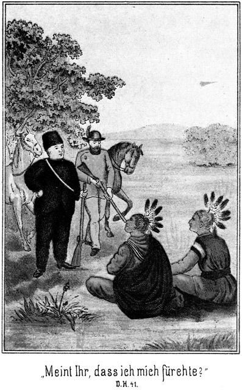»Und da meinen Sie, daß wir uns vor ihnen fürchten müssen? Dieses lumpige Dutzend nehme ich auf mich allein. Ich schieße sie einzeln von den Wagens weg, daß es pufft! Solche Schurken verdienen nichts Anderes. Aber geht es ohne Blutvergießen ab, so ist es desto besser. Wie ist denn eigentlich Ihr lieber, hochgeehrter Name, Landsmann?«
»Ich heiße Rothe.«
Dabei warf er, weil Sam vom Blutvergießen gesprochen hatte, einen besorgten Blick auf dessen Büchse. Sam sah es, gab ihm das Gewehr hin und fragte:
»Sie verstehen sich doch auf Waffen?«
»Auf diese Art nicht, obgleich ich sonst ein guter Schütze bin, ebenso wie mein Sohn. Schießen Sie wirklich mit diesem Gewehre?«
»Womit soll ich sonst schießen? Etwa hier mit meiner Nase? Da müßte ich den Schnupfen sehr stark haben, denn mit einem gewöhnlichen Katarrh nießt man keinen Büffel und keinen Bären todt.«
»Ich möchte es nicht versuchen. Das Ding wäre mir viel zu gefährlich! Und Auguste heißt es?«
»Ja, Auguste, meinetwegen auch Gustel.«
»Sonderbarer Name für eine Flinte! Es ist der Vorname meiner Schwägerin.«
»Da fällt mir ein, daß sie noch einen anderen Namen haben muß. Sie heißen also Rothe. Wie heißt Ihre Schwägerin? Ich muß sie doch nennen können, wenn ich mit ihr spreche.«
»Auch Rothe. Sie war die Frau meines verstorbenen Bruders und stammt aus Ruppertsgrün.«
»Rupp – rupp – rupp – – – rururupppp!«
Er brachte das Wort gar nicht heraus. Er war emporgesprungen und starrte den Förster an, als ob er ein Gespenst vor sich sähe.
»Warum erschrecken Sie?«
»Er – – schrecken – –? Ich erschrecke nicht.«
»Ach so! Sie sagten bereits vorhin, daß Sie zuweilen gerne schreien. Eine sonderbare Eigenthümlichkeit! Haben Sie vielleicht einmal einen recht großen und plötzlichen Schreck gehabt?«
»Nein.«
»Ich dachte! Solche Leute behalten gewöhnlich einen Rest fürs ganze Leben. Entweder stottern sie, oder sie fahren ganz unerwartet erschrocken zusammen. Ich dachte, Ihr Schreien hätte einen ähnlichen Grund.«
»Nein, gar nicht.«
»Sind Sie nervös?«
»Fällt mir gar nicht ein! Ein Savannenläufer und nervös! Das ist genau dasselbe, als ob Sie fragten, ob eine Krokodilgroßmutter Hühneraugen haben könne.«
»So kann ich mir Ihre Angewohnheit nicht erklären.«
»Ist auch nicht nöthig. Also aus Ruppertsgrün stammt Ihre Schwägerin? Und ihr Mann ist Ihr Bruder gewesen? Was waren denn Ihre Eltern?«
»Sie hatten eine Oekonomie. Die Auguste ist eigentlich schuld, daß ich so rasch eingewilligt habe, nach Amerika zu gehen.«
»Wieso denn?«
»Na, sie hat eine besondere Vorliebe für Amerika.«
»Das wäre doch sonderbar. Was geht sie denn dieses Amerika an?«
»Ja, der Mensch ist ein eigenthümliches Wesen. Die Auguste hat nämlich ihre erste Liebe in Amerika; das hat sie nicht vergessen können.«
»Sapperment! Eine erste Liebe, also einen Geliebten?«
»Ja. Mein Bruder war nämlich ein eigenthümlicher, halsstarriger Kerl Sie hat nicht recht gut mit ihm gelebt, und da ist ihr ihr erster Liebhaber wieder eingefallen. Der war ein Knopfmacher aus – –«
»Kno – Kno – – Knopf – nopf – – –!«
Sam war wieder aufgesprungen. Der Andere sah ihn bestürzt an und sagte:
»Wieder ein Anfall! O wehe! Wenn nun Indianer in der Nähe wären! Die hörten uns. Das würde eine schöne Geschichte werden. Sie schreien ja wie der Besitzer einer Riesendame auf dem Jahrmarkt!«
»Sapp – sapp – sapperment! Knopfmacher!«
»Wundert Sie das?«
»Ja, sehr!«
»Meinen Sie etwa, daß ein Knopfmacher keine Geliebte haben kann?«
»Oh, oh, wa – wa – warum denn nicht! Ich habe sogar einmal gehört, daß die Knopfmacher ganz tüchtige und hübsche Kerls sein sollen.«
»Möglich! Wenigstens Der, welcher hier in Rede steht, mag ein braver gewesen sein. Ein Bischen dumm, wie ich vermuthe – – –«
»Dumm?« fiel Sam ein. »Hole Sie der Teufel!«
»Warum grade mich?«
»Weil – – na, es war nicht so ernst gemeint.«
»Schön. Er hat Samuel Barth geheißen und war aus Herlasgrün im – – –«
»Her – herrr – – – herrrrr – la las – –!« rief Sam abermals laut.
»Schon wieder!« meinte der Förster. »Hören Sie, Ihre Angewohnheit ist eine gefährliche. Sie tritt zu häufig auf. Wenn ein Feind in der Nähe ist, darf man doch nicht so brüllen!«
»Ach! Es ist jetzt keiner da.«
»Aber wenn nun einer da wäre!«
»So würde ich nicht brüllen.«
»Vielleicht doch!«
»Nein, denn da würden wir von keinem Knopfmacher und keiner Gustel und keinem Herlasgrün und Ruppertsgrün sprechen.«
»Also diese Namen bringen Sie aus der Fassung?«
»Ja.«
»Warum?«
»Weil ich auch ein Deutscher bin. Wenn ich da den Namen eines deutschen Ortes höre, so geht es mir ans Gemüth und ich schreie vor Entzücken.«
»So werde ich, wenn Sie still sein sollen, lauter Fremdwörter bringen, etwa wie – – –«
»Halt! Mag jetzt keine hören. Also Ihre Schwägerin ist Wittwe?«
»Ja. Sie ist nur drei Jahre verheirathet gewesen, kinderlos; dann starb mein Bruder. Sie hat nicht wieder geheirathet und sich sehr gegrämt, daß sie den Knopfwacher nach Amerika hinübergetrieben hat.«
»Das alte, gute Weibsen!«
»Ja, ein gutes Gemüth hat sie. Jetzt nun ist sie arm wie eine Kirchenmaus, und noch dazu im fremden Lande. Es ist schlimm, sehr schlimm!«
»Schadet nichts; schadet nichts! Sie soll ihr Geld wieder haben und noch viel mehr dazu.«
»Denken Sie also wirklich, daß wir es wiederbekommen?«
»Jetzt erst recht, da sie aus Ruppertsgrün ist. Auf diesen Ort halte ich große Stücke.«
»Warum?«
»Weil – weil – weil – – na, eben darum, weil der Ruppert grün ist! Wir haben zu solchen langen Auseinandersetzungen keine Zeit. Wir wollen aufbrechen. Sind die Ihrigen weit hinter Ihnen?
»Nein. Sie laufen meiner Spur nach. Ich schätze, daß wir sie in einer Stunde haben werden, wann wir umkehren.«
»So weit?«
»Ja, weil Sie doch laufen müssen.«
»Ich? Hm! Passen Sie auf!«
Er steckte zwei Finger in den Mund und stieß einen schrillen Pfiff aus. Ein Wiehern antwortete, und sogleich kamen zwei nach indianischer Weise gesattelte Pferde herbei.
»Sapperment!« meinte der Förster. »Sie haben Pferde, und gar zwei!«
»Ja, mein Lieber. Diese Thiers haben die feinste indianische Dressur. Sie haben dort hinter dem Busche still gelegen, nur meinen Pfiff erwartend.«
»Aber wozu brauchen Sie zwei?«
»Das will ich Ihnen sagen. Es giebt zweierlei Art, im Westen zu jagen, zu Fuß und zu Roß. Das Erstere thut man im Urwalde und das Letztere außerhalb desselben. Ich habe mit zwei sehr guten Kameraden vom Norden herunter die Wälder abgepürscht und will mich hier in dieser Gegend, an diesem Bache, mit ihnen wieder treffen, nachdem wir uns vor einigen Monaten getrennt haben. Von hier aus wollten wir hinaus in die offene Prairie. Dazu sind Pferde nöthig, und zwar gute. Da habe ich denn ihrer zweie mitgebracht, falls es einem der Kameraden nicht geglückt sein sollte, eins zu bekommen. So ist es. Steigen wir jetzt auf. Es wird bald Abend sein. Wir müssen uns sputen.«
Die beiden so seltsam zusammengetroffenen Männer setzten sich auf und ritten in derselben Richtung zurück, aus welcher Rothe, der Förster, gekommen war. Unterwegs meinte dieser:
»Ich war erst mißtrauisch gegen Sie, weil Sie wußten, daß ich einen Wagen gehabt habe.«
»Ich habe Sie noch gar nicht gefragt, woher Sie das so genau Wissen.« »Wenn Sie sich seit längerer Zeit in der Prairie befänden, würden Sie gar nicht fragen. Hier im Gürtel haben Sie Peitschenschmitzen hängen. Die braucht man nur, wenn man fährt. Und wer fährt, der hat einen Wagen! Nicht?«
»So, so also ist es.«
»Ja, so und nicht anders. Ganz ebenso leicht hoffe ich auch die Diebe, von denen Sie bestohlen worden sind, zu erwischen. Lassen Sie uns nicht schwatzen, sondern schnell reiten.«
Sie ritten nach Osten zu und hatten die untergehende Sonne hinter sich, die weite, von einzelnen Buschinseln besetzte Savanna vor sich. Sam war in tiefe Gedanken versunken. Er sollte die erste und einzige Geliebte seines Lebens finden, hier in der Prairie! Welch ein Zufall! O nein, sondern geradezu welch ein Wunder!
Er gedachte nicht der Jahre, welche vergangen waren, und nicht der Veränderungen, welche sie gebracht hatten. Die alte, tief im Herzen schlummernde Liebe war in ihrer ganzen früheren Stärke und Gewalt erwacht. Wie würde die Gustel aussehen? Hübsch und adrett wie früher? Würde sie ihren Samuel wieder erkennen? Schwerlich! Er war so rund und dick geworden, dazu von der Sonne gefärbt und vom Winde und dem Wetter gegerbt. Er hatte mit Absicht dem Förster nichts verrathen. Er wollte erst prüfen, sehen und hören, ehe er sich zu erkennen gab. Sie befand sich in Noth und Gefahr. Das Herz klopfte ihm bei dem Gedanken, daß er berufen sei, ihr Retter zu sein! Aber – dumm sollte er gewesen sein! Hatte sie selbst dies gesagt, oder hatte nur der Förster es vermuthet? Es war jedenfalls sehr richtig, daß der frühere Knopfmacher sich mit dem jetzigen Savannenläufer nicht messen konnte. Ja, ein Jeder sagt sich, wenn er an seine Jugend zurückdenkt, daß er Vieles und womöglich Alles anders hätte machen können. Sam durfte also Niemandem zürnen.
So ritt er schweigsam weiter, zur Rechten der Förster und zur Linken das Saumpferd. Er glaubte nicht, Veranlassung zur außerordentlichen Vorsicht zu haben, da sich in einem nicht sehr geringen Umkreise gegenwärtig keine Indianer sehen lassen würden.
Darum stieß er auch einen lauten Ausruf der Ueberraschung aus, als er plötzlich zufälliger Weise, nach links hinüber blickend, zwei Reiter bemerkte, von denen er und der Förster auch bereits gesehen worden war, denn sie hatten ihre Pferde in Galopp gesetzt und kamen in schnurgrader Richtung auf die Beiden zugesprengt.
»Donnerwetter!« sagte er. »Das wird eine allerliebste Geschichte. Nehmen Sie nur in Gottes Namen Ihre Büchse nicht von der Schulter!«
»Warum nicht? Ich glaube, das sind Indianer, und da muß man doch auf Abwehr bedacht sein.«
»Ja, Indianer sind es, und zwar scheinen es feindliche Comanchen zu sein.«
»O wehe! Und da sagen Sie, ich soll mein Gewehr in Ruhe lassen?«
»Ja, gewiß. Sehen Sie die Adlerfedern auf ihren Köpfen? Das ist das Häuptlingszeichen. Es sind Häuptlinge, und wo die sind, da befindet sich gewöhnlich eine Anzahl Krieger in der Nähe. Häuptlinge reiten nicht so allein in der Prairie herum, und da sie zu Zweien sind, läßt sich vermuthen, daß es sich um eine wichtige Angelegenheit handelt und daß sich eine größere Anzahl Indsmen hier in der Nähe befindet.«
»Aber sehen Sie, daß die Kerls nach ihren Gewehren greifen! Es wird gefährlich!«
»O nein. Das ist nur so ihre Gewohnheit. Zu fürchten brauchen wir uns wenigstens jetzt noch nicht. Aber aus Vorsicht wollen wir absteigen. Thun Sie ganz dasselbe, was auch ich thue!«
Er hielt an, stieg ab und stellte sich hinter seine beiden Pferde. Dann legte er seine Büchse an und wartete, daß die Indsmen näher kommen sollten. Er konnte ihnen hinter seinen Pferden hervor, die ihn deckten, eine Kugel geben, ohne selbst von ihnen getroffen zu werden. Natürlich war der Förster seinem Beispiele gefolgt und hielt, hinter seinem Pferde stehend, auch seine Waffe schußbereit.
Die Indianer schienen sich nicht zu fürchten. Sie kamen bis in große Nähe heran und parirten ihre Pferde, kaum zwanzig Schritte von den Weißen entfernt.
»Halt, nicht weiter!« hatte Sam gerufen, »sonst schießen wir!«
Die Rothen beriethen leise mit einander, lachten laut auf, was sonst nicht in der Gewohnheit ihrer ernsten Rasse liegt, und dann antwortete der Eine von ihnen in dem Gemisch von Indianisch, Englisch und Spanisch, welches dort zwischen Indianern und Kaukasiern gesprochen wird:
»Fürchtet sich etwa das Bleichgesicht?«
»Fällt uns gar nicht ein!«
»Warum versteckt Ihr Euch?«
»Weil es uns so beliebt.«
»Kommt hervor, damit wir mit Euch sprechen können!«
»Das können wir so auch. Woher kommt Ihr?«
»Von daher.«
Er deutete dabei nach rückwärts.
»Das hätte ich nicht gewußt, wenn Du es mir nicht sagtest. Ich glaubte, Ihr wäret gradewegs vom Himmel gefallen. Aber wohin wollt Ihr?«
»Dorthin.«
Er deutete vorwärts.
»So reitet weiter!«
»Das werden wir thun, wenn wir mit Euch gesprochen haben.«
»Wir haben keine Zeit dazu.«
»Seit wann sind die Bleichgesichter so unhöflich geworden? Sie haben doch stets sehr gern mit dem rothen Manne gesprochen!«
»Wenn sie Zeit hatten, ja.«
»Zeit haben sie stets. Sie reden mit dem rothen Manne, um ihn zu betrügen, und dazu haben sie immer Zeit. Kommt hervor; wir wollen eine Berathung halten.«
»Ich wüßte nicht, was wir mit Euch zu berathen hätten. Wer seid Ihr?«
»Das werden wir Dir sagen.«
»Ah, Ihr verschweigt Eure Namen, das empfiehlt Euch nicht. Wir werden also wieder aufsteigen und weiter reiten.«
»Wenn Ihr das thut, werden wir Eurer Fährte folgen.«
»Das thut man nur in feindlicher Absicht!«
»Wir thun es und kennen unsere Absicht.«
»So will ich Euch sagen, daß wir Euch unsere Kugeln zu kosten geben werden, wenn Ihr uns mehr incommodirt, als wir dulden können.«
»Die Prairie gehört allen Menschen. Jeder kann reiten, wohin er will.«
»Was sprechen Sie denn mit ihnen?« fragte Rothe, der Förster. »Ich verstehe dieses Sprachgemisch nicht.«
Sam erklärte es ihm, und dann meinte der Förster:
»Das klingt freilich feindselig. Was thun wir?«
»Hm! Ich bin mir selbst noch unklar. Ich weiß nicht, was ich aus ihnen machen soll. Comanchen sind sie nicht, wie ich jetzt sehe.«
»Was sonst?«
»Pawnee's auch nicht. Sioux ebenso wenig, denn die kommen jetzt nicht so weit nach dem Süden herab. Sie haben sich die Gesichter bemalt, aber freilich nicht mit den Kriegsfarben, aus denen man den Stamm zu erkennen vermag.«
»Lassen wir die Kerls halten und reiten wir weiter!«
»So kommen sie uns nach. Jeder Bewohner der Savanne verfolgt die Spur, welche er findet. Diese Kerls können nicht wissen, ob wir nicht zu einer größeren Truppe gehören. Um das zu erfahren, werden sie also folgen.«
»O wehe! Da stoßen sie auf meine Familie!«
»Natürlich! Und dann weiß man nicht, was geschieht.«
»Bleiben wir lieber!«
»Ich halte das auch für das Beste. Sehen wir also, was sie von uns wollen! Ich weiß wirklich nicht, woran ich bin. Sie haben bei ihren Reitpferden noch zwei ledige gesattelte Pferde. Die führt doch sonst kein Häuptling mit sich. Hm!«
Er trat langsam hinter seinen Pferden hervor und schritt auf die Indianer zu, das Gewehr im Anschlage. Sie waren abgestiegen und kamen ihnen, da Rothe Sams Beispiel befolgt hatte, entgegen, ihre Gewehre auch schußfertig in der Hand. Fünf Schritte von einander entfernt, blieben die Partheien halten.
»Seid Ihr gekommen, die Pfeife des Friedens mit uns zu rauchen?« fragte Sam.
»Vielleicht rauchen wir sie mit Dir,« antwortete Der, welcher bereits vorhin gesprochen hatte. »Willst Du Dich zu uns setzen?«
»Ja.«
Jetzt setzten die Vier sich nieder. Zwei und Zwei gegenüber, die Gewehre quer über die Kniee gelegt. Sie betrachteten sich prüfend.
Die beiden Häuptlinge waren von gleicher Gestalt, lang und hager, mit sehnigen Gliedern. Ganz in Büffelfell gekleidet, hatten sie ihr Haar in einen Schopf gebunden, in welchem die Häuptlingsfedern befestigt waren. Ihre eigentlichen Züge waren nicht zu erkennen, da die Gesichtsmalerei sehr dick aufgetragen war.
»Also, was wollt Ihr?« fragte Sam. »Warum haltet Ihr unsern Ritt auf?«
»Wir wollen Euren Namen wissen.«
»Ihr habt uns die Eurigen noch nicht gesagt.«
»Wir sind Häuptlinge. Ein Häuptling sagt seinen Namen erst dann, wenn die Andern geantwortet haben.«
»Auch wir sind Häuptlinge,« meinte Sam.
»Das sagst Du; aber wir glauben es nicht.«
»Haltet Ihr mich für einen Lügner?«
»Ja.«
»Donnerwetter! Ich sage die Wahrheit!«
»Beweise es! Wir können beweisen, daß wir Häuptlinge sind, denn wir haben die Federn, das Zeichen der Anführer. Was aber habt Ihr?«
»Meint Ihr etwa, daß ein Weißer auch Federn anstecken soll?«
»Nein; aber die Bleichgesichter haben auch ihre besondern Zeichen, die sie auf der Brust oder auf den Achseln tragen und aus denen man merkt, wer ein Häuptling ist.«
»Na, jetzt soll ich mir gar noch Epauletten aufstecken!« lachte Sam zu dem Förster. Dann setzte er, zu den Rothen gewendet, hinzu:
»Diese Zeichen tragen wir nur im Kriege. Jetzt aber haben wir gewöhnliche Kleider. Uebrigens bin ich nicht ein Soldat, sondern ein Jäger. Ich habe nicht den Beruf, mit den Indsmen Krieg zu führen. Ich liebe sie und bin ihr Freund.«
»Du nennst Dich unsern Freund und willst uns doch Deinen Namen nicht sagen!«
»Nun, wenn Ihr ihn so nothwendig wissen wollt, so will ich ihn Euch nennen. Ich heiße Daniel Willers, und mein Gefährte nennt sich Isaak Balten.«
Das war natürlich eine Unwahrheit. Er hielt es nicht für gerathen, seinen wirklichen Namen zu nennen.
»Und ich bin der brüllende Stier,« sagte der Häuptling ernst und würdevoll.
»Und ich,« meinte der Andere ebenso stolz, »bin der tanzende Bär.«
»Ich habe Euren Namen noch nie gehört,« sagte Sam.
»Wir den Eurigen auch noch nicht. Ihr könnt noch nicht lange Zeit in dieser Gegend jagen.«
»Wir kennen diese Prairie; aber wir sind stille Jäger. Wir jagen nicht nach Berühmtheit, sondern nach Bibern und Büffeln.«
»Habt Ihr auch andere Jäger kennen gelernt?«
»Einige.«
»Ist Euch vielleicht einmal Einer begegnet, welcher sich Sam Barth nennen läßt?«
»Ja.«
»Es sollen noch zwei Andere bei ihm sein, lang und dünn, wie die Stange eines Zeltes.«
»Ich kenne sie.«
»Wie heißen sie?«
»Jim und Tim.«
»Das ist richtig. Sind diese drei Jäger vielleicht Freunde von Euch?«
»Nein.«
»Das ist sehr gut.«
»Warum?«
»Wir würden Euch sonst tödten.«
»Oho! Wir Beide würden uns nicht so ohne alle Gegenwehr umbringen lassen; das sage ich Euch. Ist denn Sam Barth ein Feind von Euch?«
»Ja.«
»Warum?«
»Er hat einige Brüder von uns getödtet.«
»Das glaube ich nicht.«
»Wir wissen es.«
»Zu welchem Stamme gehört Ihr?«
»Zum Stamme der Pawnee's.«
»So seid Ihr sehr falsch berichtet worden. Der kleine Sam hat noch nie einen Pawnee getödtet.«
»Woher weißt Du das?«
»Er hat es mir selbst gesagt.«
»So bist Du also doch sein Freund!«
»Nein. Wer kann mit einem Manne sprechen, trotzdem man nicht sein Freund ist.«
»Wenn Du uns belügst, wirst Du dennoch sterben müssen. Wann hast Du ihn gesehen?«
»Vor einigen Monden.«
»Wo?«
»Droben in den schwarzen Bergen.«
»Das stimmt. Da ist er gewesen. Er hatte seine beiden Freunde bei sich. Er trennte sich von ihnen und sagte, daß er sie hier in dieser Gegend wieder treffen wolle.«
»Ah! Woher wißt Ihr das?«
»Sie haben Euch das gesagt, trotzdem sie Eure Feinde und seine Freunde sind?«
»So ist es.«
Die Brauen des Dicken zogen sich finster zusammen, aber nur für einen Augenblick. Er war klug genug, seine Gedanken zu verbergen. Auch ließ er es, wie er meinte, sich gar nicht merken, daß er sie jetzt scharf und bis in das Einzelnste musterte.
»Ihr seid also mit ihnen zusammengekommen?« fragte er weiter.
»Ja.«
»Wo sind sie jetzt?«
»Sie sind fortgeritten; wir wissen nicht, wohin.«
»Und Ihr sucht nun diesen Sam Barth.«
»Ja. Wir dachten. Du hättest ihn gesehen.«
»Ich habe ihn nicht gesehen; aber ich bin mit meinem Gefährten hier erst seit einigen Stunden beisammen. Er war längere Zeit in dieser Gegend und hat ihn vielleicht getroffen. Soll ich ihn fragen?«
»Warum sollen wir ihn nicht selbst fragen?«
»Er würde Euch nicht verstehen, da er Eure Sprache nicht zu reden weiß.«
»So frage ihn!«
Das hatte Sam gewollt. Er wollte mit Rothe sprechen dürfen, ohne das Mißtrauen der Indsmen zu erwecken. Jetzt hatte er die Gelegenheit dazu. Er machte also eine unbefangene Miene und sagte in deutscher Sprache zu ihm:
»Beherrschen Sie Ihr Gesicht. Wir befinden uns in großer Gefahr. Machen Sie ein nachdenkliches Gesicht, als ob Sie sich auf irgend Etwas besinnen wollten; zeigen Sie aber nicht etwa, daß Sie erschrecken. Sehen Sie diese Kerls ganz freundlich an, obgleich wir alle Ursache haben, sie zum Teufel zu wünschen.«
»Warum?«
»Sie suchen mich, um mich zu ermorden.«
»Sapperment!«
»Ja. Sie haben bereits meine zwei besten Freunde getödtet.«
»Doch nicht!«
»Ja. Sie sind zwar viel zu klug, mir dies zu sagen, aber ich habe erst jetzt bemerkt, daß die beiden Gewehre, welche sie da haben, meinen Gefährten gehörten. Sie haben sie ihnen abgenommen.«
»Dafür soll sie der Teufel holen!«
Aber bei diesen Worten blickte er sie freundlich an und nickte ihnen vertraulich zu.
»Es sind Pawnee's. Diese Schufte sollen erfahren, was es heißt, Freunde des dicken Sam zu tödten. Ich murkse sie ab, als ob sie junge Ziegen seien.«
»Was werden Sie machen. Die Kerls werden sich ganz natürlich wehren!«
»Das wollen wir ihnen so schwer wie möglich machen. Beobachten Sie mich genau. Wenn ich zu Ihnen das Wort »Jetzt« sage, so ergreife ich das Gewehr des Einen; Sie nehmen in demselben Augenblicke dasjenige des Anderen. Wir springen auf, treten einige Schritte zurück und legen die Gewehre an. Das muß freilich blitzschnell geschehen und für sie ganz unerwartet. Sie haben dann nur noch die Messer, mit denen sie gegen die Gewehre nicht aufkommen können. Machen sie nur eine Miene, sich zu wehren, so schießen wir sie nieder. Getrauen Sie sich, das zu thun, was ich sage?«
»Natürlich!«
»Gut! Passen Sie also genau auf!«
Jetzt wendete er sich an die beiden Häuptlinge zurück. Sie flüsterten sich einige Worte zu, dann fragte der Eine:
»Nun, hast Du ihn gefragt?«
»Ja. Er hat ihn hier gesehen.«
»Hier? Das ist nicht gut möglich. Es giebt hier keine Spuren außer den Eurigen und den Unserigen.«
»Nun, da oben ist die Spur Sam Barth's dabei.«
»Ich verstehe Dich nicht.«'
»Du wirst mich sogleich verstehen!«
Zu dem Förster gewendet, rief er:
»Jetzt! Aber schnell!«
Beide griffen nach den Gewehren der Indianer, rafften sie weg, sprangen um einige Schritte zurück und legten die Büchsen auf die Rothen an. Diese Letzteren blieben sonderbarer Weise ganz gemüthlich sitzen und thaten, als ob nichts geschehen sei.
»So, Ihr Hunde, jetzt habe ich Euch!« rief Sam drohend.
»Und wir Dich!« antwortete der eine der Häuptlinge in ruhigem Tone.
»Wir dürfen nur losdrücken, so seid Ihr weg!«
»Und Ihr auch.«
»Wieso?«
»Glaubt Ihr, daß zwei Häuptlinge sich allein befinden? Hinter uns, in jenem Gesträuch, stecken die anderen rothen Krieger. Ich brauche nur die Hand zu erheben, so werfen ihre Kugeln Euch nieder.«
»Verdammt!« meinte Sam, besorgt nach dem betreffenden Gesträuch hinüber schielend.
»Legt also die Gewehre ab!« befahl der Wilde.
Sam ließ allerdings das Gewehr sinken, sagte aber:
»Meint Ihr, daß ich mich fürchte?«
»Ja.«
»Da irrt Ihr Euch gewaltig. Ich will Euch zeigen, daß ich selbst einen ganzen Haufen rother Krieger nicht fürchte. Ich bin Sam Barth, den Ihr sucht.«
»Wir wissen es.«
»Was? Ihr wißt es?«
»Ja. Du bist Sam Barch, der dicke Sam. Aber Du bist nicht nur das, sondern noch Etwas dazu.«
»Was denn?«
»Ein großer Esel.«
»Donnerwetter!«
»Ja, ein großer Esel. Du hast weder Augen, noch Ohren; Du bist blind und taub. Außerdem hast Du uns sehr falsch beurtheilt. Meinst Du, daß die rothen Männer die Sprachen der Bleichgesichter nicht verstehen? Wir haben gehört, was Du mit Deinem Gefährten gesprochen hast.«
Er machte ein ganz verblüfftes Gesicht und antwortete:
»Das war ja deutsch!«
»Ja. Wir wissen so viel von dieser Sprache, daß wir gar wohl verstanden, was Du mit ihm sprachst. Du beriethest mit ihm, uns die Gewehre wegzunehmen.«
»Verflucht! Indianerhäuptlinge, welche deutsch verstehen! Das ist mir auch noch nicht vorgekommen!«
»Es wird Dir noch mehr vorkommen. Hast Du denn unsere Stimmen noch nicht gehört?«
»Nein.«
»Und uns noch nicht gesehen?«
»Nie.«
»Du bist wirklich ein gewaltiger Esel. Du hättest uns doch an unseren Büchsen erkennen sollen!«
Jetzt hatte der Sprecher auf einmal eine ganz andere Stimme, eine Stimme, welche dem guten Sam allerdings sehr bekannt vorkam.
»Alle guten Geister!« rief dieser. »Was soll ich denn da denken! Das ist am Ende gar eine Maskerade!«
»Aber eine außerordentlich gelungene.«
»Da schlage doch der Teufel drein!«
»Wenn man vom allerbesten Freunde nicht erkannt wird, so muß die Verkleidung ausgezeichnet sein!«
»Also wirklich, wirklich! Ihr seid es selbst, Ihr gottvergessenen Rackers! Wer hätte das gedacht!«
Und sich zu dem Förster wendend, erklärte er:
»Denken Sie sich, das sind gar keine Indianer!«
»Was Sie sagen!«
»Ja. Es sind Jim und Tim, meine Freunde, die ich hier treffen wollte. Nein, nein, so Etwas habe ich freilich noch nicht erlebt!«
»Uns nicht zu erkennen!« lachte Jim.
Er war aufgestanden und dehnte seine langen Glieder.
»Na, eigentlich ist das nicht zu verwundern,« vertheidigte sich Sam. »Diese Anzüge, der Schopf mit den Adlerfedern, die dicke Farbe im Gesicht und – und, ja, das ist die Hauptsache, Tim hat ja eine Nase!«
»Ja, die habe ich,« lachte der Andere vergnügt.«
»O nein.«
»Was denn sonst! Gewachsen wird sie Dir doch wohl nicht sein!«
»Warum denn nicht?«
»Nun, ich habe noch niemals gehört, daß den Prairiejägern die abgeschnittenen Nasen wieder nachwachsen, wie den Krebsen die Schwänze.«
»Und doch ist diese Nase gewachsen.«
»Unsinn!«
»Ja, ja. Es ist wirklich unglaublich, aber es ist wahr. Als wir von Dir gegangen waren, kamen wir nach Fort Jackson. Dort gab es einen Doctor, einen jungen, aber sehr gescheidten Kerl. Als er sah, daß mir die Nase fehlte, mußte ich ihm sagen, wie ich um sie gekommen sei. Er bat mich förmlich um die Erlaubniß, mir eine neue machen zu dürfen. Ich ging darauf ein, denn eine Nase aus zweiter Ehe ist doch immer noch bester wie gar keine. Nicht?«
»Freilich. Wo aber hat er sie hergenommen?«
»Das weiß der Teufel. Er hat mir ein Weniges im Gesicht herumgeschnitten, Pflaster darauf, einen Verband darüber; in zwei Wochen war es heil und ich hatte eine Nase. Ich glaube, er hat mir das Fleisch dazu von der Wange herübergeholt. Na, woher er es hat, das ist mir sehr gleichgiltig, wenn ich nur die Nase habe. Sie sieht zwar nicht ganz elastisch aus, aber es ist doch immerhin ein Riecher. Die Stimme klingt besser als vorher und es ist nun endlich auch das verteufelte Zeichen fort, an welchem man mich stets sofort erkannte. »Er hat keine Nase!« das klingt verflucht miserabel für Denjenigen, welcher sie eben nicht hat.«
»Sonderbar und wunderbar! Wie aber kommt Ihr zu dieser Verkleidung?«
»Verkleidung? Pshaw! Es ist unsere gegenwärtige Kleidung, also keine Verkleidung. Wir kamen in sehr freundschaftlicher Weise mit einem Pawneehäuptling zusammen. Das heißt, die Sioux hatten ihn gefangen genommen und wollten ihn an den Marterpfahl binden. Wir befreiten ihn und brachten ihn glücklich nach seinem Wigwam. Seine Dankbarkeit war grenzenlos. Wir wurden aufgenommen wie die Brautjungfern und bekamen diese beiden indianischen Anzüge geschenkt, nebst den vier Pferden, welche Du hier erblickst.«
»Sehr gut! Die Pferde können wir sehr gut verwenden. Es giebt da vorn drei Personen, welche keine Reitthiere haben.«
»Wer ist das?«
»Davon nachher. Wollt Ihr denn in diesem Anzüge stecken bleiben?«
»Natürlich. Unsere alten Anzüge haben wir diesen guten Pawnee's geschenkt. Sie waren unendlich glücklich über den Reiterhelm und den Soldatenmantel.«
»Aber es ist gefährlich, als Indsmen zu gehen.«
»Zuweilen, zuweilen aber auch nicht. Wir werden also bald Rothhäute sein und bald Bleichgesichter, ganz wie es die Gelegenheit fordert. Aber ein verfluchter Kerl bist Du doch! Wären wir wirklich Indsmen gewesen, ohne deutsch zu verstehen, so hättest Du uns übertölpelt.«
»Sicher, obgleich es mir höchst fatal war, zu hören, daß dort in dem Gesträuch noch andere Rothe seien. Aber ich hatte Euch in meiner Gewalt und brauchte sie also nicht zu fürchten. Uebrigens fällt es mir jetzt bei, daß es gerade jetzt wohl von Vortheil ist, wenn Ihr als Indianer geht. Wir haben nämlich einen kleinen Coup vor, zu welchem diese Maskerade ganz und gar geeignet ist.«
»Was für einen Streich?«
Setzen wir uns wieder. Ich will es Euch erzählen.«
Aus der vorher so feindselig erscheinenden wurde nun eine sehr friedlich ausschauende Scene. Sam erzählte den beiden Gefährten die Erlebnisse des Försters Rothe.
Es war das hier wieder einmal ein Beispiel von dem Scharfsinne und der Umsicht, mit welcher die Leute, welche sich im milden Westen bewegen, zu verfahren pflegen. Sam hatte ganz einfach irgend einen Punkt der Prairie bestimmt, an welchem er mit Jim und Tim zusammentreffen wollte, und sie hatten sich nun da auch wirklich gefunden, ohne Weg und Steg, ohne Compaß und Uhr. Es giebt tausende von Beispielen, welche die Verwunderung eines Jeden erregen, der gewohnt ist, nur mit den Hilfsmitteln der Wissenschaft zu verfahren.
»Was sagt Ihr dazu?« fragte der Dicke, als er mit seinem Berichte zu Ende war.
»Was sollen wir sagen,« antwortete Jim. »Es giebt nur Eins, was wir sagen können: Wir reiten diesen Schurken nach und nehmen ihnen ihren Raub wieder ab. Das versteht sich doch ganz von selbst.«
»Ich habe es mir doch gleich gedacht, daß Ihr mit darauf eingehen würdet.«
»Na, wir wären schöne Kerls, wenn wir diesen guten Mann in der Tinte sitzen ließen. Ich denke nur, die Spitzbuben werden noch Etwas mehr hergeben müssen, als sie gestohlen haben.«
»Das denke ich auch; aber wir müssen es eben ein klein Wenig gescheidt anfangen.«
»Natürlich,« meinte Tim.
»Na, gehe Du mit Deinem Natürlich! Wenn wir es so anfangen, wie Du damals dort in Wilkinsfield, als Du jenen Walker erwischen wolltest und ihn vor der Nase hattest, und dann –«
»Halte das Maul! Das war damals, das ist längst vorbei, und das wird eben nicht wieder vorkommen.«
»Ich hoffe es. Ihr habt von Sam Barth unterdessen so viel gelernt, daß solche Dummheiten nun wohl nicht mehr denkbar sind.«
»Wie meinst Du denn, daß wir es anfangen, den Kerls ihren Raub wieder abzujagen.«
»Das kann ich doch jetzt noch nicht wissen. Wir müssen warten, wie und wo wir auf sie treffen. Nur so viel denke ich mir, daß ihnen der Muth in die Hosen fahren wird, wenn sie Euch erblicken. Sie werden Euch für Indianer halten und verteufelten Respect bekommen, mehr Respect, als ich vor Euch habe, hoffe ich. Jetzt aber wollen wir die Zeit nicht unnütz verplaudern, sondern aufbrechen, damit wir Die bald finden, welche wir suchen.«
Es wurde aufgestiegen. Sam befand sich in einem Zustande gelinder Aufregung. Er ließ sein Pferd ausgreifen und die Anderen folgten natürlich mit derselben Schnelligkeit.
Schon war die Sonne im Westen niedergesunken. Die Reiter kamen in offene Prairie, wo es in einem beträchtlichen Umkreise keine Büsche gab, und da erblickte man denn drei einzelne Punkte, welche sich in gerader Linie von Osten her bewegten.
»Das sind sie,« sagte Rothe. »Sie laufen ziemlich schnell, um noch vor der Dunkelheit wieder mit mir zusammen zu treffen.«
»Reiten Sie ihnen entgegen,« sagte Sam. »Sie könnten erschrecken, wenn sie uns Fremde von Weitem erblicken. Wir werden hier auf sie warten.«
Das geschah. Rothe erreichte in kaum zwei Minuten die Seinigen und theilte ihnen mit, welche Hilfe er für sie gefunden habe. Sie waren ermüdet, die gute Nachricht aber ließ ihnen alle Erschöpfung vergessen.
Als sie dann mit den drei Anderen zusammenkamen und sich bei ihnen bedankten, mußte der gute Sam sich Mühe geben, seine Thränen zu unterdrücken.
Auguste war nicht ganz vierzig Jahre alt, man hätte sie für dreißig halten können. Ihre runden, vollen Formen ließen sie jünger erscheinen als sie war. Zwar waren ihr die Sorgen des Augenblickes anzusehen, aber das Zusammentreffen mit den drei Jägern hatte ein hoffnungsvolles Lächeln auf ihrem Gesichte hervorgerufen. Sie hatte sich gegen früher fast gar nicht verändert. Sam erkannte sie sofort als die einstige Geliebte wieder.
Er nahm zunächst ein eingeschlagenes Stück Wildpret vom Sattel seines Saumpferdes und sagte:
»Unsere Freunde werden Hunger haben. Halten wir hier eine kleine Rast. Ich habe da ein gutes Stück Hirschrücken, welches ich mir heute früh am Feuer gebraten habe. Das muß alle werden. Morgen früh schieße ich einen anderen Braten.«
»Ist nicht nöthig,« meinte Jim. »Wir Zwei haben uns auch mit Proviant versehen. Für einen Tag oder auch für zwei reicht es aus. Also essen wir! Dabei können wir uns fragen, was wir von jetzt an thun wollen. Ich möchte den Kerls, die wir suchen, gern so bald wie möglich auf das Fell gerathen.«
Sie setzten sich in das großflockige, duftende Büffelgras und begannen zu essen.
Sam verwendete keinen Blick von der Lehrerswittwe, ließ es sich aber nicht merken. Es war ihm so eigenthümlich um das Herz. Fast glaubte er, sie jetzt noch zehnmal lieber zu haben als früher.
Er überlegte, wie es anzufangen sei, den beiden Frauen, welche ja nicht an die Anstrengungen und Entbehrungen der Prairie gewöhnt waren, dieselben zu ersparen, das war aber schwer.
»Es wird am Besten sein,« sagte er, »wir suchen uns für die beiden Damen ein Versteck, wo sie bleiben können, bis wir von unserem Rachezuge zurückkehren. Meinst Du nicht, Jim?«
»Hm!« brummte der Genannte, ein unzerkautes Stück Knorpel mühsam hinunterschluckend. »Wollen einmal rechnen. Vor vier Tagen ist es geschehen. Wie viele Meilen kann man mit Ochsenwagen in einem Tage zurücklegen?«
»Höchstens acht.«
»Also zweiunddreißig Meilen. Die reiten wir nöthigenfalls in einem Tage. Englische Meilen sind eben kürzer und kleiner als andere. Heute ist keine Spur mehr aufzufinden. Es ist zu dunkel dazu. Aber wir wollen noch am Abend dahin, wo der Diebstahl stattgefunden hat. Da lagern wir, um die Pferde auszuruhen. Bei Tagesanbruch finden wir hoffentlich die Fährte, und wenn wir ihr sofort und schnell folgen, können wir die Schufte noch am Abende erreichen. Meinst Du nicht, Sam?«
»Ich bin ganz derselben Ansicht.«
»Aber die Ladies, die Ladies! Wo thun wir sie hin? Das ist die Frage.«
»Einen solchen Ritt, wie der morgende einer sein wird, können sie nicht mit machen, das ist gewiß. Für heute aber können wir ihnen nicht erlassen, mit zu Pferde zu steigen und wieder umzukehren. Heute müssen sie mitreiten, so gut es eben gehen will.«
»Was das betrifft,« meinte der Förster, »so werden sie uns keine sehr große Mühe machen. Sie sind zwar ganz und gar keine Reiterinnen, aber während der langsamen und langweiligen Wagenfahrt haben sie sich, um eine Abwechselung zu haben, zuweilen in den Sattel gesetzt. Ich bin darum überzeugt, daß sie wenigstens nicht herabfallen werden.«
Der Sohn des Försters hatte jenes Packet Decken getragen, welches für sie so verhängnißvoll geworden war. Diese Decken konnten jetzt sehr gut gebraucht werden. Sie wurden auf die Sattel gelegt, so daß die beiden Frauen einen leichten Sitz hatten. Dann begann man den Ritt fortzusetzen.
Der Weg war nicht gar sehr weit, da der Förster mit seinem einzigen Pferde für vier Personen keine großen Strecken zurückgelegt hatte. Sam hielt sich, als ob sich das ganz von selbst verstehe, an der Seite der einstigen Geliebten, deren Pferd er am Zügel führte. Er gab sich alle Mühe, ihr die Anstrengungen des Rittes zu ersparen. Sie bemerkte es und war ihm dankbar dafür. Natürlich aber kam es ihr nicht in den Sinn, in dem Manne, welcher da in dem häßlichen Bärenfelle steckte, Denjenigen zu vermuthen, welcher einst ihr Anbeter gewesen war.
Noch lange vor Mitternacht wurde der Platz erreicht. Das Lager war bald hergestellt, doch gab man sich Mühe, das Verwischen der morgen aufzufindenden Spuren zu vermeiden.
Ein Ueberfall war nicht zu erwarten. Feindliche Jäger oder Indianer vermuthete man nicht in der Nähe, und so wurde ein Feuer angebrannt, bei welchem die Beraubten nochmals ausführlich erzählten, was sie hier an dieser Stelle erlebt hatten.
»Also auch Sie sind gebunden worden?« fragte Sam die Wittwe.
»Ja,« antwortete sie. »Es war schrecklich. Ich hatte Angst, daß sie uns umbringen würden.«
»Na, sie mögen ausessen, was sie eingebrockt haben. Ich werde diese Kerls bei der Parabel nehmen, daß ihnen Hören und Sehen vergehen soll.«
Es wurde abermals gegessen, jetzt von Jim's und Tim's Vorräthen. Sam schnitt für Auguste das Beste ab und legte es ihr vor, als ob er ein Kind zu bedienen habe. Sie beobachtete ihn dabei. Wenn er ihren warmen Blick auf sich ruhen sah, wurde es ihm noch viel wärmer um das Herz. Er bekam schließlich Sorge, sich zu verrathen, und stand vom Feuer auf, um die Umgebung einmal abzulaufen, wie er sagte, um zu sehen, ob man sich auch wirklich in Sicherheit befinde.
Als er nachher zurückkehrte, wurden die Wachen ausgeloost. Er erhielt die erste Wache. Es wurde noch einmal nach den Pferden gesehen, dann legten sich Alle nieder, um den Schlaf zu suchen.
Alle? Nein. Sam stand in einer Entfernung, daß er von dem Scheine des Feuers nicht getroffen werden konnte, und lauschte vorsorglich in die Nacht hinaus, damit ihm ja kein verdächtiges Geräusch entgehen möge. Und dort, am Feuer, saß Auguste. Sie hatte sich nicht niedergelegt. Sie legte nach und nach Zweig um Zweig in die Flamme, damit sie nicht ausgehen möge, und gab den eigenartigen Gefühlen und Gedanken Audienz, welche jetzt auf sie eindrangen.
Der kleine dicke Gefährte hatte einen außerordentlich wohlthuenden Eindruck auf sie gemacht. Sein Blick war so treu und sein Gesicht so voller Aufrichtigkeit. Alles, was er gesagt hatte, hatte so gut geklungen. Sie dachte an das, was morgen unternommen werden solle. Jedenfalls gab es Gefahren dabei. Waren diese groß? Sie hätte es so gern gewußt. Sie wollte lieber auf ihr geraubtes Geld verzichten, als zugeben, daß deshalb ein Menschenleben verloren gehe. Sie stand auf. Sie wollte mit Sam sprechen. Sie entfernte sich vom Feuer und versuchte dann, mit ihrem Blicke die Dunkelheit zu durchdringen, um zu sehen, wo er stehe.
Er hatte sie gesehen. Er kam näher.
»Sie schlafen nicht, Miß Rothe?« fragte er.
Das klang so eigenthümlich. Er, der Deutsche, gab ihr diesen amerikanischen Titel, den Titel einer unverheiratheten Dame. Es war ihm so in den Mund gekommen. Er hatte sie als Mädchen gekannt und wollte sie sich nicht als die Frau eines Anderen denken. Das eigentlich richtige Wort Mistreß war ihm gar nicht in den Sinn gekommen.
»Und doch haben Sie es so nöthig. Erst das anstrengende Laufen und dann der rasche Ritt. Sie sollten wirklich die Ruhe suchen. Man weiß nicht, wie Sie sich morgen wohl werden anzustrengen haben.«
»O, die Anstrengung achte ich nicht. Aber es wird morgen Gefahren geben. Das ist schlimmer.«
»Gefahren? Wieso?«
»Sie werden vielleicht mit den Räubern zu kämpfen haben.«
»Wahrscheinlich.«
»Nun, das ist doch gefährlich!«
»O, gar nicht!«
»Nicht? Jeder Kampf bringt Gefahr!«
»Nein, nicht jeder. Der Kampf zum Beispiel, welchen wir morgen wahrscheinlich haben werden, ist eigentlich gar keiner zu nennen. Wir folgen den Kerls; holen wir sie ein, so schleichen wir vorsichtig nahe, so daß sie uns gar nicht bemerken. Dann schießen wir sie einfach nieder und haben Alles was sie bei sich führen.«
»Mein Gott! Sie werden Alle niederschießen?«
»Alle, das versteht sich.«
»Aus dem Hinterhalte?«
»Natürlich.«
»Das ist doch gräßlich!«
»O, meinen Sie etwa, daß wir zu diesen Hallunken vielleicht in ritterlicher Weise sagen sollen: Hört einmal, wir kommen, um Euch zu erschießen. Da sind wir. Nun seid gescheidt und vertheidigt Euch!«
»Nein, das meine ich nicht, sondern es ist mir schrecklich, daß diese Leute getödtet werden sollen.«
»Sie haben es nicht anders verdient!«
»Aber ein Menschenleben ist doch ein kostbares Gut.«
»Ja, das ist es zuweilen. Aber wenn Einer sein Leben nur benutzt, um Schandthaten zu vollbringen, so muß man es ihm nehmen. Sehe ich irgendwo ein giftiges Kraut wachsen, so reiße ich es aus und denke nicht daran, daß es auch geschaffen worden ist. Und dieses Kraut kann nicht dafür, daß es giftig ist; der Mensch aber ist selbst schuld, daß er schlecht und gottlos ist.«
»Und dennoch sollen wir barmherzig sein!«
»Hm! Ja! Hm! Barmherzig!«
Er wußte nicht, was er ihr antworten solle.
»Können Sie denn das Geraubte nicht vielleicht ohne Blutvergießen wieder bekommen?«
»Ohne Blutvergießen? Hm! Ohne Kampf?«
»Ja.«
»Hm! Diese Kerls werden es nur nicht freiwillig wieder hergeben wollen.«
»So gebrauchen Sie doch lieber List als Gewalt.«
*
»List? So, so! Nun, ich will Ihnen etwas sagen, Mylady: Man nennt mich den dicken Sam, und der dicke Sam ist als ein listiger Kerl bekannt.«
»Ja, ich habe Sie betrachtet, und –«
»So?« fragte er erfreut. »Betrachtet haben Sie mich?«
»Ja, sehr genau.«
»Und wie bin ich Ihnen denn da vorgekommen?«
»Sie haben so viel Aufrichtiges und Treuherziges an sich, daß man gleich Vertrauen zu Ihnen fassen muß. Dabei haben Sie aber in Ihrem Gesicht etwas so Schlaues und Pfiffiges, daß –«
»Wie? Schlau und pfiffig bin ich Ihnen vorgekommen?«
»Ja.«
»Nun, da haben Sie sich sehr verändert.«
»Wieso?«
»Ich dachte, Sie hätten mich für dumm gehalten.«
Es fielen ihm nämlich die Worte ein, welche der Förster gesagt hatte.
»Ich Sie für dumm gehalten? Wer hat das gesagt?«
»Das hat Ihre Schwe– ah, ich dachte nur so!«
»Da haben Sie sich geirrt. Also Sie haben etwas so Pfiffiges an sich, und da denke ich, daß Sie vielleicht Mittel und Wege finden werden, den Dieben ihre Beute auch ohne Gewalt abzujagen.«
»Da giebt es nur ein Mittel und einen Weg: Man müßte ihnen das Gestohlene wieder mausen.«
»Ja, ungefähr so!«
»Aber das ist doch eigentlich eine Dummheit. Was man mir gestohlen hat, kann ich offen wieder fordern.«
»Da giebt es aber Kampf.«
»Das schadet ja gar nichts. Wenn ich mich als Dieb an diese Kerls schleiche, muß ich gewärtig sein, erwischt zu werden, und dann capponiren Sie mich.«
»O wehe! Das wäre schlimm!«
»Pah! Ein Mensch weniger, das schadet nichts!«
»Nein, so dürfen Sie nicht sprechen. Meinetwegen soll Ihnen kein Leid geschehen.«
»O, Ihretwegen ist mir schon früher – verdammt! Da stehe ich und plaudere Dummheiten wie ein Schulbube! Haben Sie an diesen Spitzbuben denn ein gar so großes Wohlgefallen gefunden, daß Sie jetzt solche Schonung für sie verlangen?«
»Im Gegentheile, Sie haben mir gar nicht gefallen. Besonders der Anführer hatte ein Gesicht, dem man unmöglich Vertrauen schenken konnte. Ich bin gar nicht vorurtheilsvoll. Kein Mensch kann für seine Gestalt, für sein Gesicht und für sein Haar, aber dieser Mann hatte rothes Haar, und da war es mir schwer, von diesem Burkers Gutes zu denken.«
»Burkers?« fragte Sam schnell. »So hieß er?«
»Sapperment! Sollte es der rothe Burkers sein!«
»Er war es. Ich hörte einmal zwei seiner Gefährten von ihm sprechen. Sie glaubten sich unbelauscht und da nannten sie ihn den rothen Burkers.«
»Alle Teufel! Ist Der es! Na, Gnade Gott, wenn ich Den erwische! Der hat sein letztes Brod gegessen!«
»Das klingt ja bitterbös! Kennen Sie ihn?«
»Na und ob. Ich habe da vor einigen Jahren ein Rencontre mit ihm gehabt. Er ist ein Mörder, ein Räuber, ein Dieb und Spitzbube durch und durch. Er wollte damals eine Plantage überfallen. Ich habe ihn überlistet und er wurde mit seiner Bande gefangen genommen. Man schaffte die ganze Sippschaft nach van Buren, um ihr den Prozeß zu machen. Mehreren gelang es, frei gesprochen zu werden. Sie wurden entlassen und benutzten den ersten freien Tag dazu, die Anderen des Nachts aus dem Gefängnisse zu holen. Das gab damals ein Aufsehen weit und breit. Der Rothe fing natürlich sein Geschäft sofort wieder an. Man war aber bald hinter ihm her. Er war klug und machte sich davon, so daß man längere Zeit nichts von ihm hörte. Später wurde sein Name dann im Westen viel genannt. Wo irgend eine Teufelei begangen wurde, da war sicher er dabei. Jetzt nun höre ich, daß er es gewesen ist, der Euch beraubt hat. Nun, es soll ihm sehr wohl bekommen!«
»Ist er wirklich so schlimm?«
»Fragen Sie, ob ein Raubthier schlimm ist?«
»So werden Sie ihn nicht schonen?«
»Nein, ihn am Wenigsten.«
»Aber wenn ich Sie nun bitte!«
»Thun Sie das nicht! Ich könnte Ihnen diese Bitte nicht abschlagen, und das wäre geradezu eine Sünde.«
»Barmherzigkeit kann doch keine Sünde sein!«
»O doch! Wenn wir ihm nicht das Handwerk legen, treibt er es weiter, und dann fällt Alles, was er thut, auf mein Gewissen. Daß er gerade Sie bestohlen hat, das macht die Sache schlimmer.«
»Wieso?«
»Nun, Sie sind ja meine Landsmännin; da ist es gerade, als ob er es mir selbst gethan hätte.«
»Mein Schwager sagte mir freilich, daß Sie ein Deutscher, vielleicht gar ein Sachse seien.«
»Ich bin ein Sachse.«
»O bitte, wo sind Sie her?«
»Ich bin aus Rupp– aus Rodewisch.«
»Aus Rodewisch bei Auerbach?«
»Ja. Sie kennen doch dieses berühmte Rodewisch?«
»Ich kenne es, ob es aber so berühmt ist –«
»Freilich ist es berühmt, nämlich durch das alte, schöne Studentenlied, in welchem es auch heißt:
Die Voigtskarline von Rodewisch
Die handelt mit Spinat!«
»Dann sind Sie aus dem Voigtlande, gerade wie ich.«
»Das ist prächtig. Wo sind denn Sie her?«
»Aus Ruppertsgrün.«
»Das ist ein kleines, hübsches Nestchen.«
»Kennen Sie es?«
»Ja. Ich war früher in meinen jungen Jahren zweimal dort zu Tanze. Steht denn die alte Schänke noch?«
»Sie ist neu gebaut worden. Also dort waren Sie zu Tanze? Von Rodewisch aus etwa?«
»O nein. Ich bin nämlich eigentlich Fleischer. Ich stand in Herlasgrün als Geselle in Arbeit und hatte dort einen sehr guten Bekannten, der immer nach Ruppertsgrün zu Tanze ging. Er hat mich zweimal mitgenommen.«
»Das ist wunderbar! Und jetzt treffen wir uns hier im fernen Amerika. Also aus Herlasgrün! Hm! Wann ist das ungefähr gewesen?«
»Vor vielleicht zwanzig Jahren.«
»Herrgott! Was war denn Ihr Freund?«
»Knopfmacher. Ich konnte ihn sehr gut leiden, den alten guten Samuel.«
»Samuel? Samuel hieß er?« fragte sie rasch.
»Ja, Samuel.«
»Etwa Samuel Barth?«
»Ja, Barth's Samuel. Dort in Herlasgrün machte man die Sache kurz und sagte einfach Barthsamel.«
Da schlug sie die Hände zusammen und sagte:
»Das ist doch kaum zu glauben!«
»Was denn?«
»Hier in der Wildniß Jemand zu treffen, der ihn kennt.«
»Haben Sie ihn denn auch gekannt?«
»Sehr gut, sehr gut!«
»So, so! Nicht wahr, ein guter, aber auch ein recht dummer Kerl? Wie?«
»Ja, gut war er, seelensgut! Aber dumm? Nein. Ich habe ihn damals für dumm gehalten, heute aber sehe ich ein, daß er es nicht war. Er war aufrichtig und treuherzig, und das kann fast wie dumm aussehen.«
»Möglich. Ich habe ihn für dumm gehalten, zumal er mir nicht glaubte. Er hatte nämlich eine Geliebte, wegen der er nach Ruppertsgrün lief. Die hielt ihn nur für Narren und er sah das nicht ein.«
»Haben Sie sie gekannt?«
»Nein. Ich habe zwar im Saale gesehen, daß er mit ihr tanzte, aber weiter um sie gekümmert habe ich mich nicht. Der Racker war es nicht werth.«
»Racker? Warum?«
»Weil sie ihn doch nur an der Nase herumführte und ich hielt große Stücke auf ihn. Wir waren nämlich fast alle Abende beisammen und machten Musik mit einander, ich mit der Ziehharmonika und er mit der Guitarre. Ein Dritter schlug die Triangel dazu.«
»Ach ja! Er spielte Guitarre. Sein Leiblied war, glaube ich – hm, ich habe den Anfang vergessen, aber die letzten Zeilen kann ich noch.«
»Meinen Sie etwa:
Von Dir geschieden,
Bin ich bei Dir,
Und wo Du weilest,
Bist Du bei mir.
Von Dir zu lassen.
Vermag ich nicht.
Weil Du mein Alles,
Mein Lebenslicht!«
»Ja, ja, das war es, das! Es hatte eine so schöne, einfache, aber ergreifende Melodie. Der Schluß war:
Doch Du ziehst weiter
Und weiter fort,
Nie hör' ich wieder
Dein süßes Wort.
O sel'ge Tage,
O kurzes Glück,
Ruft keine Sehnsucht
Euch je zurück?«
»Wahrhaftig, Sie können es auswendig! Wer hat es Ihnen denn gelehrt?«
»Er. Ach ja, es ist wahr: Doch Du ziehst weiter und weiter fort! Er ist fortgezogen!«
»Von ihm haben Sie es? Haben Sie ihn denn gekannt?«
»Und wie! Ich war's ja!«
»Sie waren es? Was denn?«
»Seine Geliebte.«
»Was? Sie waren es? Sapperment! Auf Ihrem Schweinestall hat er gestanden?«
»Fast alle Abende!« seufzte sie.
»Ohne durchzubrechen?«
»Das Dach war fest.«
»Also Sie, Sie sind es gewesen! Und ich habe Sie vorhin einen Racker genannt!«
»Ich nehme es Ihnen nicht übel. Ich bin auch ein Racker gewesen. Ich habe ihn hinausgestoßen in die weite Welt. Ich war schuld, daß er ging.«
»Warum haben Sie denn das gethan?«
»Weil – weil ich ihn für ein Bischen albern hielt.«
»Schwerebrett!«
»Ja! Und das war er doch gar nicht. Er war nur aufrichtig. Er war mir so gut, daß er mir keine Lüge, keine Unwahrheit sagen konnte. Das habe ich für Dummheit gehalten.«
»So geht es! Die besten Menschen werden verkannt. Als er von mir Abschied nahm, sagte er noch, daß er Sie nie vergessen werde.«
»O Gott! Hat er das gesagt?«
»Ja. Er gab mir noch ein Herz, welches ich Ihnen bringen sollte, zum Andenken an ihn.«
»Der Liebe, der Gute! Aber von dem Herzen weiß ich gar nichts. Sie haben es mir ja nicht gebracht.«
»Leider nicht. Es war aus Pfefferkuchen. Vorn klebte ein rother Zettel, auf welchem in schöner Goldschrift der Reim stand:
Du bist so süß wie Pfefferkuchen,
Doch muß ich meiner Liebe fluchen.
Ein And'rer küßt Dich auf den Mund,
Das bringt mich vollends auf den Hund!«
Jetzt trat eine Gesprächspause ein. Er erwartete ein Wort; sie aber sagte nichts. Es war zu dunkel, als daß er ihr Gesicht hätte sehen können. Was dachte sie jetzt? Glaubte sie es, von diesem Herzen? Merkte sie es, daß er Jux machte? Die letzte Zeile des Pfefferküchlerreimes war wohl einem liebenden Herzen nicht ganz angemessen!
Und als sie immer noch schwieg, sagte er:
»Ich hätte es Ihnen gern gebracht, aber ich hatte selber eine Geliebte, die mir untreu geworden war, und so habe ich dieser das Herz gegeben. Es ist also doch an den richtigen Mann gekommen, das wird Sie trösten, Mylady!«
»Es gehörte aber mir!«
»Nun ja. Hat das Stück Pfefferkuchen denn so großen Werth für Sie?«
»Es war ja von ihm!«
»Ganz richtig, von ihm, und darum hat es einen solchen Werth. Es ist genau so, wie in dem Liede von den alten zerrissenen Hosen. Da sagt die Frau:
Geh mit Deinen alten Fetzen,
Die kein Mensch mehr flicken kann!
und er antwortet darauf:
Frau, die mußt Du liebreich schätzen,
Denn sie sind von Deinem Mann!«
Wieder trat eine Pause ein. Die Art und Weise, wie er sich in dieser Herzensangelegenheit ausdrückte, war ihr gar nicht sympathisch. Er fühlte das. Vielleicht war er mit Absicht so drastisch. Er wollte sie ein Wenig peinigen für Alles, was sie ihm früher angethan hatte. Aber es that ihm doch wehe, und so fuhr er fort:
»Haben Sie niemals wieder von ihm gehört?«
»Nie.«
»Er hat nicht einmal an Sie geschrieben?«
»Ich habe keinen Brief erhalten. Ich hätte mich sehr gefreut darüber.«
»O! Sie hatten ja einen Mann!«
»Mit dem ich aber nicht glücklich lebte. Ich möchte doch wissen, wo Barth jetzt steckt.«
»Das kann ich Ihnen sagen.«
»Sie? Mein Himmel! Wissen Sie es?«
»Ja, sehr genau. Er hat mir von Amerika aus geschrieben. Er wußte, daß ich auch herüber wollte. Ich bin also nachgemacht und mit ihm in Cincinnati zusammen getroffen. Dort haben wir mit einander gute Freundschaft gehalten, bis er starb.«
»Starb? Herr Jesus! So ist er todt?«
»Ja.«
»Seit wann?«
»Er hat nur zwei Jahre in Amerika gelebt.«
»Woran ist er gestorben?«
»Das hat selbst der Arzt nicht genau gewußt. Aber Samuel's letzte Worte waren:
Die Liebe ist das schlimmste Gift,
Das, ach, nur die Verliebten trifft!
daraus schließe ich, daß er an unglücklicher Liebe gestorben sein mag. Friede seiner Asche!«
»Herr, ich weiß nicht, was ich von Ihnen denken soll!«
»Wieso, Mylady?«
»Ich habe solches Vertrauen zu Ihnen, und Sie drücken sich in einer Weise aus, daß es mir leid thut, mit Ihnen über diese Angelegenheit gesprochen zu haben.«
»Wirklich? Nun, ich will Sie nicht täuschen. Hier ist ein Felsstück, gerade wie eine Bank gelegen. Kommen Sie, Mylady! Setzen Sie sich! Ich will nicht länger scherzen und Ihnen die Wahrheit sagen.«
Er nahm sie bei der Hand und führte sie zu dem Steine. Sie setzte sich und bat dann:
»Aber bitte, die Wahrheit!«
»Gewiß!«
»Er ist nicht todt?«
»Nein.«
»Gott sei Dank! Er lebt!«
Das klang so froh, so glücklich, daß es ihm wirklich schwer wurde, in der beabsichtigten Weise fortzufahren. Aber er wollte sie auf die Probe stellen.
»Ja, er lebt, und zwar sehr glücklich.«
»Glücklich? Ich gönne es ihm. Wo ist er?«
»Eben in Cincinnati.«
»Was treibt er da?«
»Er war Knopfmacher und ist noch immer Knopfmacher, doch in amerikanischer Weise und in amerikanischem Maßstabe. Er hat eine große Fabrik und treibt das Geschäft mit seinem Schwiegervater in Compagnie.«
»Schwie –«
Sie brachte das Wort nicht heraus.
»Ja, in Compagnie,« wiederholte Sam.
»Er hat – hat einen Schwie– Schwiegervater?«
»Gewiß!«
»Er ist also ver–heirathet?«
»Und zwar sehr glücklich. Das älteste von seinen fünf Kindern, ein Mädchen von siebzehn Jahren, wird sich nächstens verheirathen.«
»Sieb–zehn – Jahren! Vergessen, vergessen!«
»Vergessen? Was meinen Sie?«
»Er hat – hat mich vergessen.«
»O nein. Er spricht oft von Ihnen.«
»Seine Tochter ist siebzehn Jahre alt. Er hat also bereits nach drei Jahren geheirathet! So schnell, so schnell hat er mich vergessen!«
Sie legte die Hände zusammen und ließ den Kopf tief auf die Brust hernieder sinken.«
»Sie klagen ihn an, Mylady! Haben Sie ein Recht dazu, ein gutes Recht?«
»Ich glaubte, daß er mich geliebt habe!«
»Das hat er, ja, gewiß, das hat er! Aber Sie haben ihn von sich gestoßen, Sie habe ihn fortgewiesen, fort in die weite Welt. Sie haben sich einen Mann genommen, und nun verlangen Sie, daß Barth Ihnen treu bleiben soll für das ganze Leben! Bedenken Sie sich!«
»Ach ja, Sie haben wohl Recht. Aber der Mensch ist so egoistisch. Ich habe ihn stets lieb gehabt, stets, stets. Es ist mir unmöglich gewesen zu denken, daß er verheirathet sei. Ich bin, wie ich aufrichtig gestehen will, herübergekommen in der unausgesprochenen Hoffnung, daß ich ihn vielleicht wiedersehen werde. Und nun erfahre ich, daß er für mich verloren ist!«
»Sie sind bös darüber, daß er sich verheirathet hat?«
»Nein, nicht bös. Aber ich bin nun um die größte Hoffnung ärmer.«
»Sie werden sich trösten. Der Gedanke, daß er glücklich ist, muß Ihnen die Enttäuschung tragen helfen. Wie wäre es, wenn er unglücklich wäre, arm, elend, in Lumpen gehüllt!«
»Das wollte ich, ja, das wollte ich! Ich würde ihm Alles geben, was ich habe. Alles!«
»Was haben Sie denn?«
»Mein Gott! Ja, Sie haben Recht. Ich habe ja selbst nichts, gar nichts mehr. Ich bin selbst eine Bettlerin. Ich weiß nicht, was ich thun soll und wovon ich später leben werde, wenn Sie mir nicht das Verlorene retten.«
Er sagte jetzt nichts, aber er hörte, daß sie still vor sich hinweinte. Erst nach einer Weile meinte er:
»Trösten Sie sich, Mylady! Es ist immer besser so, als daß er todt ist. Noch schlimmer aber wäre es, wenn Sie sich in Ihrer Liebe getäuscht hätten.«
»Wieso getäuscht?«
»Ich setze den Fall, er wäre noch frei und ledig. Sie fänden ihn, aber er hätte sich äußerlich und innerlich so verändert, daß Sie ihm nicht mehr gut sein könnten, daß er Ihnen vielmehr widerwärtig wäre!«
»Das kann nie der Fall sein!«
»O bitte, sagen Sie das nicht so kategorisch! Das Leben geht hier mit den Menschen um Vieles rauher um, als drüben im Vaterlande. Tausende gehen da äußerlich verloren und Tausende innerlich. Wäre er ein Lump geworden, so würden Sie ihn –«
»Ich würde mich seiner annehmen,« fiel sie ein. »Vielleicht gelänge es mir, einen Mann aus ihm zu machen.«
»Hm! Wie stellen Sie sich diesen Samuel Barth jetzt eigentlich vor? Vielleicht entspräche seine Person gar nicht einmal den Erwartungen, welche Sie hegen.«
»Er mag aussehen, wie er will.«
»Aber sagen Sie dennoch, wie Sie ihn sich vorstellen!«
»Nun, er war nicht groß, ungefähr in Ihrer Statur; nur so außerordentlich –«
»Bitte, sprechen Sie immer weiter!«
»So außerordentlich dick würde er nie sein.«
»Da irren Sie sich. Er ist gerade so dick wie ich.«
»Wirklich?«
»Ja. In dieser Beziehung gleichen wir einander auf das Haar. Ein solcher Körperumfang ist keineswegs eine Schönheit, wie Sie wohl zugeben werden. Und stellen Sie sich einmal vor, er wohnte nicht in einem civilisirten Orte dieses Landes, sondern er streifte, so wie ich, heimathlos im wilden Westen herum. Ein solches Leben ist von schlimmem Einfluß auf den Menschen. Der Mann wird roh, grausam und rücksichtslos.«
»Samuel würde das nie werden. Er hatte ein so tiefes, gutes Gemüth, und dieses würde sich selbst bei einem solchen Leben erhalten.«
»Gott segne Sie für dieses Wort! Wenn Barth es hörte, würde er sich sehr freuen. Uebrigens glaube ich, daß er ein Andenken von Ihnen hat.«
»Ach ja, aber es ist gar nichts werth. Einst zur Kirmse kam ein Händler auf den Tanzsaal. Er bot Allerlei feil. Samuel kaufte mir eine silberne Haarnadel. Der Gute! Er war arm und gab sein einziges Geld dafür aus. Ich kaufte ihm einen silbernen Ring, über den er große Freude zeigte. Ob er denselben wohl noch hat?«
»Er hat ihn noch, nur ist nicht viel davon zu sehen. Der dicke Kerl ist so fett geworden, daß das Fleisch des Fingers über dem Ringe fast zusammengewachsen ist. Die Nadel aber haben Sie gewiß weggeworfen?«
»O nein. Ich hatte sie mir aufgehoben. Später suchte ich sie wieder vor. Seitdem habe ich sie stets getragen. Ich habe sie auch jetzt noch im Haar.«
»Sapperment! Hat denn das Silber so lange Zeit gehalten?«
»Nicht ganz. Ich habe mir die Nadel einige Male wieder versilbern lassen. Aber, mir kommt es vor, als hätten Sie mir noch immer nicht das Richtige gesagt. Ich bitte Sie dringend, mir die volle Wahrheit mitzutheilen.«
»Na, wenn Sie so dringend bitten, muß ich wohl gehorchen.«
»Also er lebt wirklich noch?«
»Ja, wirklich.«
»Wo?«
»In der Prairie. Er ist Waldläufer geworden. Er hat Sie nicht vergessen können und nirgends Ruhe gefunden. Darum hat es ihm nirgends gefallen.«
»Der Gute! Ich kann mir ihn aber gar nicht als halbwilden Prairiejäger vorstellen. Er war so sanft, er konnte kein Wässerlein trüben.«
»O, jetzt ist er im Stande, einen ganzen Strom trübe zu machen, wenn er mit seiner dicken Gestalt hineinplanscht. Uebrigens bricht Noth Eisen. Wer nach dem wilden Westen kommt, der wird entweder bald ein tüchtiger Kerl oder er geht unter. Mir hat es ja auch Niemand an der Wiege gesungen, daß ich mich einst mit Indianern herumschlagen würde.«
»Nun, bei Ihnen ist das doch wohl etwas Anderes. Ihr früheres Handwerk war ja schon ein weit derberes als das seinige. Es ist ein Unterschied zwischen einem Fleischer und einem Knopfmacher, mein lieber Herr – Herr – da fällt mir ein, daß ich Ihren Namen noch gar nicht weiß.«
»Ich heiße Sam, und nach meiner schönen Gestalt nennt man mich allüberall den dicken Sam.«
»Sam! Ist das der Familienname?«
»Nein, sondern Vorname.«
»Ein sonderbarer Name. Ich habe ihn noch nie gehört.«
»Vielleicht doch. Sam ist Abkürzung. Der Amerikaner macht sich möglichst Alles leicht. Er spricht lange Worte nicht gern aus, sondern er hackt ein Stückchen oder einige Stückchen davon ab. Er sagt Pa und Ma anstatt Papa, Mo statt Salomo. So giebt es eine Menge einsilbige Namen, mit denen man fast nicht weiß, wohin: Bill, Will, Rob, Bob und andere. So ist es auch mit Sam.«
»Was heißt dies eigentlich?«
»Es ist die erste Silbe von Samuel.«
»Wie? So heißen auch Sie Samuel?«
»Ja.«
»Ein sonderbares Zusammentreffen, Sie sind sein Freund und haben auch ganz denselben Vornamen. Aber wie ist Ihr Familienname?«
»Vollständig heiße ich Sam Barth.«
»Barth? Höre ich recht?«
»Jedenfalls. Gefällt Ihnen der Name nicht?«
»O, sehr, sehr! Aber es ist doch ganz der seinige!«
»Freilich!«
»Und Sie sind aus – aus Rodewisch!«
»Na, ich will Ihnen offen gestehen, daß ich da ein klein Wenig geflunkert habe. Eigentlich bin ich wo ganz anders her, nämlich aus Herlasgrün. Und eigentlich bin ich auch nicht Fleischer gewesen, sondern vielmehr Knopfmacher. Und eigentlich ist –«
»Herrgott!« unterbrach sie ihn. »Bitte, zeigen Sie einmal her! Schnell, schnell!«
Sie ergriff seine Hände und tastete prüfend an den Fingern hin. Es war ja zu dunkel, um Etwas sehen zu können. Da fühlte sie an dem Goldfinger der linken Hand etwas Rundes, Hartes, worüber sich das Fleisch gelegt hatte.
»Mein Heiland! Dies ist der Ring!«
»Ja, das ist er, der silberne!«
»Du bist's! Du bist's! Ist das möglich!«
Sie war von ihrem Sitze aufgesprungen. Sie stand vor ihm und hielt seine Hand gefaßt. Er fühlte, wie die ihrige zitterte.
»Ja, Gustel, ich bin's,« sagte er tief gerührt und gar nicht in dem selbstironisirenden Tone, in welchem er bisher gesprochen hatte.
»Und ich habe Dich nicht erkannt!«
»Ich Dich sofort. Aber das ist ja auch kein Wunder, da ich mich so gewaltig verändert habe.«
»So ist mir mein Wunsch erfüllt und meine Ahnung hat mich nicht getäuscht. Als der Schwager von Amerika redete, dachte ich an Dich. Ich hatte keine Ahnung von der Größe des Landes. Und wenn auch, es war mir doch, ais ob ich Dich ganz bestimmt treffen und wiedersehen werde. Meine Sehnsucht –«
Sie hielt inne. Wäre es nicht dunkel gewesen, so hätte er gesehen, wie tief roth sie wurde.
»Rede weiter, Gustel! Deine Sehnsucht –«
»Ah, geh! Davon kann ich doch nicht sprechen.«
»Warum nicht? Als Du mich für einen Fremden hieltest, hast Du Dich nicht geschämt, sondern mir Alles gesagt. Jetzt, da Du weißt, wer ich bin, willst Du schweigen. Fürchtest Du Dich vor mir?«
»Ich möchte wohl!«
»Das darfst Du nicht!«
»Aber ich muß doch, da ich so schlecht an Dir gehandelt habe.«
»Nun, was das betrifft, so ist es am Allerbesten, wir denken nicht mehr daran.«
»Ja, wenn Du mir vergeben könntest.«
»Das ist schon längst geschehen. Himmelelement! Ich könnte vor Freude droben dem Monde, der sich aber heute gar nicht sehen läßt, eine Maulschelle geben, daß er sich selbst für einen Eierkuchen halten sollte! Niemals habe ich daran gedacht, daß ich Dich wiedersehen könne, und nun treffe ich mit Dir in dieser alten Prairie zusammen. Wie albern sind doch die Leute, welche meinen, daß es keinen Gott gebe! Nur der liebe Gott ist es, der Dich auf den Gedanken gebracht hat, herüber nach Amerika zu gehen. Oder meinst Du nicht?«
»Ja, es war wie eine Eingebung.«
»Und nun stehst Du da, hier vor mir! Höre, Gustel, es ist mir ganz so, als ob ich erst gestern in Ruppertsgrün gewesen wäre und da – weißt Du den Weg, den ich immer nahm?«
»Sehr genau.«
»Ueber den Zaun hinweg.«
»Ja, durch den Garten in den Hof.«
»An der Mauer lehnte der Sägebock, den stellte ich an den Schweinestall. Erst auf den Bock, dann auf den Stall und dann – hm!«
»An das Fenster.«
»Ja. Du langtest mit Deinen Patschchen herunter, ich hielt alle zehn Finger in die Höhe und da hatten wir uns. Aber bequem war es doch nicht. Nicht wahr?«
»Das ist wahr.«
»Von dem ewigen Hinaufsehen that mir noch früh am Morgen stets das Genick weh. Wir hätten es bequemer haben können, aber Du wolltest nicht. Na, vielleicht hättest Du gewollt, aber ich war zu schüchtern. Ich hatte mir hundertmal vorgenommen, Dir einen tüchtigen Kuß zu geben, aber wenn ich dann vor Dir stand, so hatte ich den Muth nicht dazu. Dann aber kam einmal ganz plötzlich die Galle über mich. Ich nahm Dich her und drehte Dein Gesicht herum. Wir standen an der Hausthür, ich hatte Dich vom Tanze heimgebracht. Ich machte schon die Lippen spitz, wie eine Karpfenschnute. Da prasselte es von oben herab. Es war im Winter und das Dach lag dick voll Schnee. Dieser war locker geworden und prasselte gerade in diesem wichtigen Augenblicke auf uns hernieder, daß wir wie zwei Schneemänner dastanden, hustend, pustend und niesend, daß das ganze Dorf hätte aufwachen mögen. Weißt Du es noch, Gustel?«
»O, sehr gut!«
»Aber den Schmatz habe ich mir doch noch geholt, und da dann der Knoten gerissen war, so habe ich mich nach und nach immer besser eingerichtet. Weiß der liebe Himmel, wie das so schmeckt, obgleich es dabei nichts zu schlucken giebt und ist auch weder süß noch sauer, weder bitter, noch salzig! Wenn ich heute nicht dieses dumme Bärenfell anhätte, so –«
»Nun, so –«
»So nähme ich Dich einmal recht herzlich in die Arme und versuchte, ob ich das Küssen während der zwanzig Jahre vielleicht verlernt habe. Einen Schneesturz hätten wir nicht zu befürchten, und da – hm, was sagst Du dazu, Gustelchen?«
Sie zögerte einige Augenblicke mit der Antwort; sie konnte ja doch nicht sagen, wie gern sie ihm seinen Wunsch erfüllt hätte, fragte aber dann:
»Was hat denn der Bärenpelz verbrochen?«
»Eigentlich nichts, aber wenn man Monate lang nicht aus dieser Haut herauskommt, so befindet man sich nicht in einem sehr appetitlichen Zustande. Und so ein Herzeleid will ich Dir doch nicht anthun.«
»O, ich habe doch auch keinen Ballstaat an!«
»Meinst Du? Also ich darf?«
Er fühlte es mehr, als daß er es sah, daß sie nickte, denn er hatte ja bereits den einen Arm um sie gelegt. Jetzt zog er sie an sich heran und küßte sie lange und innig auf die ihm willig entgegen kommenden Lippen. Dann setzte er sich auf den Stein, zog sie neben sich nieder und küßte sie wieder und immer wieder.
Das dauerte lange, sehr lange. Die Beiden hatten ganz den Maßstab für die Zeit verloren. Sie fühlten sich jung, als ob sie noch Bursche und Mädchen seien, gerade wie damals in Ruppertsgrün. Sie bemerkten gar nicht, daß sich hinter dem Steine, auf welchem sie saßen, Etwas bewegte, leise und langsam, nach dem Feuer hin. Sie sprachen im Flüstertone. Sie hatten sich ja so sehr viel zu erzählen. Sie hatte ihm so viel abzubitten und er ihr so viel zu vergeben. Und die Vergebung wurde so oft wiederholt und allemal wieder mit einem Kusse besiegelt. Sam hätte noch lange nicht daran gedacht, daß seine Wachtzeit endlich längst vorüber sei und daß er Jim hätte wecken sollen, aber da wurden von dem nun freilich ganz niedergebrannten Feuer laute Rufe hörbar.
»Sapperment!« fuhr der Dicke zusammen und blickte nach dem Himmel, welcher freilich nur wenige Sterne zeigte. »Ich habe nun drei Stunden gewacht. Was ist denn dort los?«
Er sah, daß die Schläfer erwacht und aufgesprungen waren und eilte hinzu.
»Was giebt es? Was habt Ihr denn?«
»Dicker, bist Du blind und taub gewesen?«
»Nein.«
»Wo sind denn unsere Gewehre?«
»Sind sie denn weg?«
»Ja, alle. Oder hast Du Dir wieder einmal einen dummen Spaß gemacht?«
»Fällt mir nicht ein! Legt Euch schnell wieder auf die Erde nieder, damit Ihr kein Ziel bietet! Wie ist denn das gekommen?«
Sie lagen Alle am Boden, auch Auguste, welche mit herbei gekommen war.
»Das mußt doch Du wissen,« sagte Jim. »Du hattest die Wache. Warum hast Du mich nicht geweckt? Deine Zeit ist ja längst um!«
»Du dauertest mich. Ich wollte Dir Ruhe gönnen.«
»Hole Dich der Teufel mit Deinem Bedauern! Wir sind beschlichen und bestohlen worden. Vielleicht ist es gar etwas noch Schlimmeres!«
»Schwerlich! Mörder hätten sich nicht mit den Gewehren begnügt, sondern mit den Messern gearbeitet. Verdammt! Ich habe nichts gehört!«
»Leider! Vielleicht hast Du wieder einmal über's Wasser hinüber gedacht nach – nach – na, wie heißt das grüne Nest? Ruppertsgrün, wo die Auguste jetzt mit einem Anderen schnäbelt! Wenn die Gewehre wirklich weg sind, so hast Du es mit mir zu thun! Du bist so dumm, so dick Du bist!«
»Na, halte das Maul! Vielleicht ist es gar nicht so schlimm. Wenn wir nur die Pferde noch haben.«
»Unsinn! Wer die Gewehre stiehlt, der nimmt auch die Pferde mit. Aber das ist wahr, verdammt gescheidte Kerls müssen es gewesen sein! Ich brächte es nicht fertig. Ich hatte mein Gewehr ganz fest im Arme.«
»Ich auch,« erklärte Tim.
»So müssen wir desto vorsichtiger sein. Ich bin schuld und werde also das Wagniß unternehmen. Ich krieche nach den Pferden.«
Tief am Boden hingestreckt, kroch er in die Nacht hinaus. Aber bereits nach wenigen Sekunden hörten sie ihn rufen:
»Was ist das? Kommt einmal her!«
Sie folgten seiner Aufforderung. Etwa fünfzehn Schritte von ihnen entfernt waren die fehlenden Gewehre zusammengestellt und an der Spitze dieser Pyramide befand sich ein weißes Papier.
»Was hat das zu bedeuten?« fragte Tim.
»Werden es gleich erfahren,« antwortete Sam, indem er nach dem Papiere griff. »Nehmt Eure Büchsen, ich sehe nach den Pferden.«
Er schlich sich fort und kehrte erst nach längerer Zeit nach dem Lagerplatze zurück, wo sich die Anderen wieder niedergelegt hatten.
»Es ist Alles in schönster Ordnung,« meldete er. »Die Pferde sind da und ich habe keinen Menschen bemerkt. Heiliger Donner! Wenn das Feinde gewesen wären! Unsere Seelen befänden sich schon im fünften Himmel!«
»Da siehst Du, was Du mit Deiner Achtlosigkeit hättest anrichten können!« brummte Jim.
»Rede nicht! Du hättest auch nichts gehört. Es ist freilich stark, sich mitten zwischen Euch hinein zu schleichen und Euch die Flinten abzunehmen. Der Kerl, der das gethan hat, ist ein Savannenvirtuos. Aber ein Feind ist er sicherlich nicht.«
»Warum aber läßt er sich nicht sehen und hören?«
»Das ist auch mir ein Räthsel, wird sich aber vielleicht bald aufklären, wenn wir uns das Papier ansehen. Es ist, wie ich fühle, kein Druck- sondern Schreibpapier. Vielleicht steht Etwas darauf. Da giebt es noch glühende Asche. Blase sie einmal an, Tim, und lege einige Zweige darauf! Ich will lesen.«
Tim that dies, und als nun die Flamme hell aufprasselte, hielt Sam das Papier in die Helle und las. Es war wohl nicht sehr leicht zu entziffern, da die Wörter mit Bleistift und im Dunkel geschrieben worden waren. Es dauerte einige Zeit. Dann aber sprang Sam mit einem Rufe der Freude auf und rief mit lauter Stimme, so daß es in der nächtlichen Stille wohl eine englische Meile weit schallen mußte:
»Hallo, Sir, halloo! We thank you thousand, thousand times! Halloh, Sir, halloh! Wir danken Euch tausend, tausendmal!«
Im Nu war auch Jim aufgesprungen und sagte, im höchsten Grade erschrocken:
»Bist Du verrückt, Dicker! Du brüllst uns ja alle Indianer des Felsengebirges auf den Hals! Willst Du denn mit aller Gewalt scalpirt werden! Gleich kommst Du nieder und hältst das Maul!«
Er zerrte an Sam herum, um ihn wieder zum Sitzen zu bringen, aber der Dicke lachte und sagte:
»Keine Sorge! Wo Der ist, den ich meine, da reißen alle Indsmen aus. Ich möchte am liebsten noch einmal rufen, dann –«
»Um Gotteswillen, laß das bleiben!«
»Pshaw! Haltet Ihr mich für einen Kindskopf! Ich denke, der dicke Sam weiß stets, was er thut.«
»Ja, besonders wenn er die Wache hat. Da schläft er ruhig ein und läßt sich die Gewehre forttragen!«
»Na, was das betrifft, so hätte ich mich am Liebsten vorhin selbst beohrfeigen mögen, das ist wahr. So hat man mich noch nicht über's Ohr gehauen. Aber nun ist es anders. Jetzt, da ich weiß, wer es gewesen ist, kann ich es mir vergeben. Wenn Der es will, so trägt er Euch Alle vom Feuer fort, ohne daß Ihr es merkt. Darauf könnt Ihr Euch verlassen.«
»Sei nicht verrückt! Wer ist es denn?«
»Da steht es unten auf dem Zettel, in indianischer Sprache. Spitzt Eure Ohren! Ihr habt den vornehmsten Besuch gehabt, den man hier im fernen Westen nur haben kann!«
Er setzte sich wieder nieder, um den Zettel abermals an die Flamme zu halten.
»Wenn ich nicht wüßte,« zürnte Jim, »daß es hier keinen Tropfen Feuerwasser giebt, so dächte ich, Du hättest Dich bekneipt und seiest betrunken. Wer ist denn dieser außerordentliche Kerl?«
»O, es sind ihrer Zwei. Hört also und staunt! Hier steht groß und deutlich »Tan-ni-kay und daneben lese ich –«
»Tan-ni-kay!« rief Jim, überrascht aufspringend. »Das ist etwas Anderes! Ist's wahr? Steht das wirklich da?«
»Ja, natürlich! Ich werde doch so viel herausbuchstabiren können!«
»Du hast doch einst gesagt, daß Du nicht lesen könntest! Ich glaube, es war an jenem Abende, an welchem wir uns bei Wilkinsfield im Walde trafen.«
»Das war Spaß. Ein Deutscher, und zumal ein Sachse, kann stets lesen. Der wird gleich mit dem A b c geboren und in das große und kleine Einmaleins eingewindelt; als Zulp bekommt er eine Federbüchse in das Maul gesteckt und wenn er schreit, so schreit er gleich perfect nach Noten im Violinschlüssel. Also lesen kann ich, auch den zweiten Namen.«
»Und der heißt?«
»Lata-nalga.«
»Lata-nalga! Donnerwetter! Das sind nun freilich die berühmtesten Männer, welche es hier im Westen gegeben hat. An sie kommt kein Anderer, und da ist es nun gar nicht zum Verwundern, daß sie uns so famos an- und abgeschlichen haben.«
»Was heißen denn diese Namen?« fragte der Förster, dessen Wißbegierde natürlich auch erwacht war, da er die Anderen so aufgeregt sah.
Sam Barth erklärte:
»Lata-nalga sollte eigentlich heißen Lata-nalgut. Es ist aus der Apachensprache und bedeutet »starke Hand«. Tan-ni-kay ist die Abkürzung von Natan-si-ni-tle kayi, auch aus der Sprache der Apachen und heißt »Fürst der Bleichgesichter«. Haben Sie das verstanden?«
»Natürlich. Aber wer sind die Beiden?«
»Die »starke Hand« ist ein Apachenhäuptling, ein Krieger, Reiter, Ringer und Schütze wie kein Zweiter. Er besitzt eine Körperkraft, eine Faust, welche Steine zerhauen kann, daher sein Name. Er ist ein Freund der Weißen überhaupt, aber nicht auch ein Freund der Vereinigten-Staaten-Regierung, die seinem Volke den Raum zum Leben immer enger und enger macht. Wehe dieser Regierung, wenn die »starke Hand« einmal auf den Gedanken kommen sollte, sich an die Spitze der südwestlichen Indianerstämme zu stellen! Dieser Häuptling ist nicht alt, aber von einer Einsicht, Klugheit und Geschicklichkeit, welche nur mit seiner Tapferkeit verglichen werden kann. Wenn er in der Versammlung erscheint, beugen sich Alle zur Erde, und wenn er sich erhebt, um zu sprechen, so bleibt selbst der Sturm stehen und schweigt, um den Worten des rothen Häuptlings zu lauschen.«
»Sie werden ja förmlich poetisch!«
»Ja, das möchte ein Jeder werden, der von diesem Manne spricht. Er ist unvergleichlich, und es giebt nur einen Einzigen, der sich mit ihm messen kann, ja, der ihm wohl gar noch über ist. Ich meine da den Fürsten der Bleichgesichter.«
»Auch ein Indianer?«
»O nein; das zeigt ja bereits sein Name. Er muß ein Bleichgesicht, ein Weißer sein.«
»Aber sein Name ist doch indianisch!«
»Gerade darum hat er um so größeren Werth. Der Indianer besitzt einen ungemeinen Scharfblick in Beziehung auf die Beurtheilung eines Andern. Er findet für jeden Menschen stets einen zutreffenden Namen, welcher die hervorragenden Eigenschaften oder Eigenthümlichkeiten desselben genau bezeichnet. Daß gerade die Wilden diesen Weißen den Fürsten der Bleichgesichter genannt haben, ist der deutlichste Beweis, daß dieser Mann wirklich der außerordentlichste Weiße ist, den sie gesehen haben.«
»Weiß man, wer er ist?«
»Nein. Er kennt den Westen, wie ich die Linien meiner Hand kenne, und doch spricht man erst seit ungefähr drei Vierteljahren von ihm. Aber in dieser kurzen Zeit ist er auch so berühmt geworden, daß die zweijährigen Indianerkinder von ihm schwärmen und die weißen Großväter und Großmütter von ihm erzählen. Er ist der alte Ueberall und Nirgends. Wo etwas Großes geschieht, hat er es angestiftet, und die »starke Hand« ist dabei. Beide sind nämlich ganz unzertrennliche Freunde. Es ist, als ob er allgegenwärtig sei. Heute hat er die Sioux über den Schädel gehauen und nach kurzer Zeit hört man bereits, daß er die Comanchen in die Enge getrieben hat. Gestern hat er eine weiße Familie vom sicheren Tode errettet und morgen oder übermorgen haut er einen braven Indsmen aus den Feinden heraus. Er soll so stark sein, wie ein brauner Bär, und doch ein Kind von Gemüth. Er kommt und verschwindet wie ein Geist. Niemals läßt er Spuren zurück, und findet man ja einmal eine Fährte seines Pferdes, so hört sie plötzlich mitten im tiefen Sande, wo sie doch am sichtbarsten ist, auf, als wären Reiter und Pferde plötzlich davon geflogen. Darum sagen die Rothen, daß er ein Geisterpferd besitze, welches vier Flügel habe.«
»Es ist jedenfalls viel Uebertreibung dabei.«
»Ja, der Jäger, sowohl der rothe, wie auch der weiße, ist sehr zum Uebersinnlichen und zur Uebertreibung geneigt. Die Einsamkeit, in welcher er sich befindet, die großartige Natur, welche er durchschweift, die Gefahren, welche ihn umgeben, das Alles regt seine Phantasie an und giebt ihr eine eigenthümliche, fremdartige Richtung. Die Heldenthat, welche am Lagerfeuer erzählt wird, bekommt bald einen überirdischen Anstrich. Aber selbst wenn man diese Uebertreibung abrechnet, bleibt von den Thaten der beiden Männer, von denen wir sprechen, so viel übrig, daß man eingestehen muß, sie werden von sonst Keinem erreicht.«
»Ist dieser Fürst der Bleichgesichter ein Yankee?«
»Wer das wüßte! Er erscheint niemals in zahlreicher Umgebung und verschwindet ebenso schnell, wie er gekommen ist. Niemand wagt es, ihn auszufragen, und seinen Namen nennt er nicht.«
»Aber man muß ihn doch als den Fürsten kennen?«
»Ich habe ihn noch nie gesehen, aber ich habe mir sagen lassen, daß man erst nach seiner Entfernung merke, mit wem man es zu thun gehabt hat. Es ist ganz so, wie jetzt hier bei uns. Er ist da gewesen und wieder fortgegangen, ohne daß wir es gemerkt haben. Aber nun er fort ist, wissen wir, wer uns besucht hat. Aber bei diesen Erklärungen vergessen wir die Hauptsache, nämlich den Zettel.«
»Ja,« meinte Jim. »Es muß doch noch mehr darauf stehen als nur die beiden Namen.«
»Natürlich! Es ist wahrhaftig ganz so, als ob er allwissend sei. Horcht einmal!«
Er beugte sich zum Feuer hin und las:
»Genau nordwest reiten – in vier Stunden enges Thal, drei Akazien am Eingange – drin die Wagen – nur zwei Mann Wache – die Andern nach Süden geritten, um Palomo-nakana zu bestehlen – vorderster Wagen linkes Hinterrad Euer Geld vergraben – haltet später bessere Wacht – wir konnten auch Feinde sein – gratuliren Sam Barth und Gustel aus Ruppertsgrün.
Tan-ni-kay – Lata-nalga.«
Jim und Tim schüttelten die Köpfe. Der Erstere sagte verwundert:
»Sollte man das für möglich halten! Stehen diese Worte denn wirklich da auf dem Papiere?«
»Versteht sich! Hier lies es selbst!«
Er hielt ihm den Zettel hin.
»Unsinn! Behalte nur getrost das Papier! Ich will lieber mich mit fünfzig Indianern als mit drei Buchstaben herumbalgen. Mit den Indsmen werde ich fertig, mit dem Geschreibsel aber nicht. Es hat eben ein Jeder seine starken und seine schwachen Seiten. Aber, höre, Sam, diese Sache kommt mir doch ein Wenig unwahrscheinlich vor!«
»Warum?«
»Weil erstens diese Kerls nur vier Stunden entfernt von hier stecken sollen.«
»Ist das so unmöglich?«
»Unmöglich wohl nicht. Aber sie werden sich doch nicht so nahe hersetzen, wo sie hier den Diebstahl ausgeführt haben.«
»Hm! Man kennt ihre Gründe nicht.«
»Und nun nur Zwei bei den Wagen lassen!«
»Jemand muß doch als Wache zurückbleiben!«
»Und das Geld vergraben! Das steckt man doch ein und behält es bei sich!«
»Schau, wie klug Du bist! Diese Kerls sind zu einem Raubzuge aufgebrochen. Sie wissen nicht, ob er gelingen werde. Gelingt er nicht, so laufen sie Gefahr, das zu verlieren, was sie bei sich haben. Es ist also ganz klug, daß sie es vergraben haben.«
»Hm! Es ist das Alles möglich, sehr wahrscheinlich aber ist es nicht.«
»Ich glaube es.«
»Bedenke, wenn irgend ein Lump sich den Spaß gemacht hätte, uns irre zu führen. Vielleicht einer aus der Spitzbubengesellschaft selbst. Sie bringen uns von der richtigen Spur ab und kommen unterdessen in Sicherheit.«
»Pshaw! Ein solcher Hallunke hätte es nicht fertig gebracht, sich in dieser Weise anzuschleichen; er hätte uns auch nicht die Gewehre und Pferde gelassen.«
»Das ist freilich wahr.«
»Und zudem hoffe ich, daß wir, wenn der Tag anbricht, eine Spur der Wagen finden werden, obgleich bereits fünf Tage vergangen sind.«
»So willst Du also diesem schriftlichen Rathe folgen?«
»Natürlich! Wir haben ja noch Zeit, zu berathen. Von großem Vortheile hierbei wäre es, daß wir für unsere Ladies kein Versteck zu suchen brauchen. Vier Stunden können sie es zu Pferde aushalten. Wir können sie also gleich mitnehmen. Es scheint mir, daß der rothe Burkers das Thal, in welchem die Wagen stehen, bereits gekannt hat. Es ist sein Versteck, von welchem aus er noch einige Beutezüge unternehmen will. Die Wagen bieten ihm die vortrefflichste Gelegenheit, das Geraubte dann bequem in Sicherheit zu bringen. Wie gesagt, ich glaube Alles, was hier auf dem Zettel steht. Und da diese beiden Namen darunter geschrieben sind, so bin ich bereit, auf den Inhalt zu schwören, wie auf das Evangelium.«
»Warum aber thut dieser Fürst der Bleichgesichter so heimlich? Warum hat er uns nicht geweckt, um uns seine Mittheilung mündlich zu machen?«
»Er wird seine Gründe gehabt haben.«
»Natürlich! Aber woher weiß er das Alles?«
»Das ist seine Sache.«
»Und woher weiß er, daß diese gute Lady aus dem Orte Ruppertsgrün ist?«
»Ich schätze, daß er sich länger, als wir annehmen, hier bei uns befunden und uns belauscht hat.«
»Und was hat es mit der Gratulation für eine Bewandtniß? Seid Ihr etwa Beide an demselben Datum geboren und feiert heute Euern Geburtstag?«
»Fast ist es so. Wir feiern den Tag der Wiedergeburt.«
»Du siehst mir nicht aus wie ein wiedergeborenes Wickelkind, Dicker. Mach keine Faxen!«
»Na, so will ich deutlicher sein. Du selbst hast heute bereits auf die Lady angespielt, deren Bekanntschaft ich da drüben gemacht habe –«
»Ja, auf dem Schweinestalle!«
»Wo, das ist gleichgiltig.«
»Aber nicht so gleichgiltig ist es wohl, daß Sie Dir den Laufpaß gegeben hat.«
»O, im höchsten Grade gleichgiltig! Oder meinst Du etwa, daß ich mich sehr abgehärmt habe?«
»Nun ja, Du hast Dir ganz im Gegentheile ein hübsches Bäuchlein angehärmt. Der Gram aus unglücklicher Liebe ist Dir sehr gut bekommen. Wie würde da erst eine glückliche Liebe bei Dir anlegen!«
»Das wirst Du sehr bald erfahren und beobachten können, da ich eben jetzt an einer sehr glücklichen Liebe erkrankt bin.«
»Zu wem denn?«
»Zu Dir nicht, mein süßer Jim; aber besagte Liebe ist eine so glückliche, daß ich mir vorgenommen habe, in allernächster Zeit Ehemann zu werden.«
»O wehe! Dich möchte ich als Ehemann sehen, im rothen Schlafrocke, mit gelben Bummeln und Quasten, Blumentöpfe begießend und Handtücher waschend!«
»Kannst Dir es mit ansehen. Und damit Du Dir nicht Sorge machst, ob ich auch eine Squaw bekomme, so werde ich sie Dir zeigen.«
»Wohl im nächsten Indianerdorfe? Da wird sich wohl irgend eine rothe Urahne finden lassen, welche geneigt ist, ihr zartes Herz Dir an den Rücken nageln zu lassen.«
»Das könnte sie. Bei mir hätte der Nagel guten Halt, bei Dir ginge er aber durch, wie bei einem Cigarrenkistenholze von zwei Zehntel Zoll Dicke. Aber bis wir an ein Indsmendorf kommen, will ich Dich gar nicht warten lassen. Eigentlich kannst Du mich herzlich dauern. Nachdem ich Dir die Gratulation vorgelesen habe, müßtest Du eigentlich wissen, wer das Vergnügen haben wird, jene Urahne zu sein. Mache Deine Augen auf und siehe Dir meine Braut an. Hier sitzt sie, gerade vor Dir.«
Er zeigte auf die Wittwe. Jim machte ein sehr erstauntes Gesicht und sagte:
»Dir wollen wohl die Gedanken vergehen, Dicker!«
»Gar nicht; ich habe sie vielmehr noch niemals so gut beisammen gehabt wie jetzt. Diese Lady ist diejenige Auguste, unter deren Fenster ich auf dem Schweinestalle stand –«
»Und die Dir dann den Abschied gab –«
»Um mich jetzt desto herzlicher wieder aufzunehmen.«
»Ist das wahr, Mylady?«
Auch der Förster zeigte sich im höchsten Grade überrascht, freute sich aber schließlich, als er den Zusammenhang erfuhr. Jim war jetzt nun überzeugt, daß Sam im Ernst gesprochen habe, und sagte, dieses Mal allerdings in wirklicher Aufrichtigkeit:
»Ich muß Euch gratuliren, Mylady; aber eigentlich bedaure ich es, daß Ihr Euch wiedergefunden habt. Wir verlieren an unserem Sam einen Jäger, wie ihrer sehr wenige gefunden werden. Wir ärgern zwar zuweilen einander ein Wenig, aber das ist nur zum Zeitvertreibe, wie es so die Kinder zu machen pflegen, im Ernste kennen wir einander und wissen seinen Werth zu schätzen. Macht also unseren kleinen Dicken so glücklich, wie es Euch nur möglich ist!«
»Woher weißt Du, daß Ihr mich verlieren werdet?« fragte Sam.
»Nun, ich schätze, daß Du als Ehemann hübsch daheim bleiben wirst, um Kartoffeln zu schälen und Quirle zu schnitzen. Das ist Deine Schuldigkeit.«
»Warte es ab! Wir haben überhaupt jetzt keine Zeit, über meine Angelegenheit zu sprechen. Wir sind hier mit dem Schreiben noch nicht fertig. Da steht nämlich: ›Die Anderen nach Süden geritten, um Palomo-nakana zu bestehlen‹. Wißt Ihr, was das zu bedeuten hat?«
»Natürlich!« antwortete Tim. »Man sagt, daß die Nakana große Schätze verberge. Die will der rothe Burkers holen.«
»Wer ist dieser oder diese Palomo-nakana?« erkundigte sich der Förster.
»Es ist nicht ein Er, sondern ein Sie,« antwortete Sam. »Dieses weibliche Wesen ist von ebensolchen Geheimnissen umgeben, wie der Fürst der Bleichgesichter. Man spricht seit ungefähr drei Jahren von ihr. Sie soll jung sein, ein Mädchen von ganz außerordentlicher Schönheit, eine Weiße, welche aber von den Indsmen wie eine Göttin verehrt wird, weshalb, das kann man nicht sagen. Wir Drei haben den Norden abgepürscht und sind seit Langem nicht nach dem Süden gekommen; darum sind wir noch nicht zu ihr gekommen. Jetzt aber hoffe ich, daß wir sie sehen werden, da wir uns in der Nähe befinden.«
»Ja, weißt Du denn, wo sie wohnt?« fragte Jim.
»Ja.«
»Vor Kurzem wußtest Du es noch nicht.«
»Das ist sehr richtig. Ich wußte weiter nichts von ihr, als was auch Ihr gehört hattet, nämlich daß sie ihr Wigwam da aufgeschlagen hat, wo die Gebiete der Comanchen und Apachen zusammenstoßen. Diese beiden Stämme sind von jeher Todfeinde gewesen. Die Wohnung der Nakana aber ist ihnen heilig. Wo das schöne Mädchen sich befindet, ist neutraler Boden. Wo ihr Auge hinfällt, da hört die Feindschaft und die Blutrache auf, und die Comanchen kommen von Osten, die Apachen von Westen her, um sie zu verehren und mit Geschenken zu beschütten. Das wußten wir. Vor zwei Wochen aber bin ich mit einem Scout (Pfadfinder) zusammengetroffen, der bei ihr gewesen ist und mir den Weg zu ihr beschrieben hat. Sie lebt mit ihrem Vater in einer eingegangenen Mission. Ich habe nach den Namen gefragt, konnte aber nichts Anderes erfahren, als daß sie ihn nur Pa nennt, er sie aber Almy.«
»Du,« meinte da Jim. »Der Name kommt mir sehr bekannt vor. Hieß nicht so die schöne junge Lady Wilkins auf Wilkinsfield, wo wir damals mit Walker zusammentrafen, den unser kluger Tim so hübsch wieder laufen ließ?«
»Ja, die junge Lady hieß so. Es war überhaupt dort eine unglückliche Gegend. Wilkins hat seinen Prozeß gegen den Nachbar Leflor verloren. Er sollte in Schuldhaft gesteckt werden und schoß nach Leflor. Das brachte ihn in Untersuchung wegen Mordversuch und er entfloh mit seiner Tochter. Der brave deutsche Oberaufseher – Adler hieß er wohl – war schon vorher auch verschwunden. Niemand wußte, wohin. Aber wir kommen von unserem Gegenstande ab. Wir sprachen doch von der Wohnung der Nakana. Der Pfadfinder hat sie mir so beschrieben, daß ich sie sehr wohl zu finden vermag. Wir befinden uns hier im Osten von der Sierra de los Mimbres. Wenn wir noch einen halben Tag lang nach Süden reiten und sie nach Westen hin übersteigen, so kommen wir an die Sierra della Acha, welche ihre Wasser dem Rio Gila und durch diesen dem Colorado zusendet, welcher in den Golf von Californien mündet. Da oben auf der Acha giebt es einen wunderherrlichen Gebirgssee, an dessen Ufern ich vor über zehn Jahren einmal mit den Comanchen zusammen gerathen bin. Sie halten das Gebiet sehr heilig, weil sie da oben ihre berühmten Häuptlinge begraben. Sie litten deshalb kein Bleichgesicht da oben, und ich war froh, mit dem Leben und einigen Messerstichen davonzukommen. Am Ufer des Sees stehen die alten Gebäude einer katholischen Mission, welche nicht mehr bewohnt waren. Man sagt, daß dort einst ein sehr reiches Volk gewohnt habe, Tolteken oder so ähnlich soll ihr Name gewesen sein. Dieses Volk fand viel Silber in den Bergen, und als es dann verdrängt wurde, hat es unermeßliche Schätze in der Nähe des Sees vergraben. Deshalb und weil das Wasser des Sees bei klarem Wetter und wenn die Sonne scheitelrecht steht, wie flüssiges Silber funkelt, hat man ihn den Silbersee genannt. In der alten Mission am Ufer wohnt die Nakana.«
»Was bedeutet denn das Wort Nakana?« erkundigte sich der Förster.
»Eigentlich heißt es vollständig Palomo-nakana. Beide Worte gehören dem Tehuadialecte an. Das Erstere bedeutet Taube und das Letztere Wald, Urwald, zusammen also die Taube des Urwaldes. Warum dieses Mädchen von den Indianern so genannt wird, weiß ich freilich nicht. Vielleicht erfahren wir es.«
»Sie wollen wirklich hin?«
»Ja, und ich denke, daß Sie mitgehen werden.«
»Sie vergessen, daß wir nach Californien wollen!«
»Und Sie wissen nicht, daß der beste Weg von hier aus nach Californien über die Sierra della Acha geht. Auch müssen Sie bedenken, daß ich mich nicht ohne Noth wieder von Auguste scheiden werde und daß Sie überhaupt noch nicht wissen, wie sich Ihre Zukunft entwickeln wird. Zunächst werden wir wieder holen, was Ihnen gestohlen worden ist. Dann wissen wir die Taube des Urwaldes in Gefahr, und es ist unsere Pflicht, sie zu warnen, sie also am Silbersee aufzusuchen –«
»Eigentlich unnöthig!« schaltete Tim ein.
»Warum?«
»Erstens weil der rothe Burkers bereits aufgebrochen ist und also vor uns dort ankommen wird. Wir werden also zu spät eintreffen, um warnen zu können. Das ist sicher.«
»Nicht so sicher, wie Du denkst. Wir haben ein gutes Gewissen und können also in gerader Richtung reiten; Burkers aber ist als Dieb bekannt. Läßt er sich treffen, so wird er einfach gehängt. Er wird also die einsamsten Gegenden aufsuchen und einen bedeutenden Umweg machen müssen. Aber was wolltest Du zweitens sagen?«
»Daß überhaupt unsere Warnung auf alle Fälle unnöthig ist. Denkst Du vielleicht, der Fürst der Bleichgesichter habe nur uns die Mittheilung gemacht, daß sich die Taube in Gefahr befindet? Er ist jedenfalls hin zu ihr. Vielleicht hat er uns nur deshalb eine schriftliche Nachricht gegeben, um von uns nicht aufgehalten zu werden und dort schnell eintreffen zu können. Verstanden, Dicker?«
»Sehr wohl. Aber gerade weil der Fürst hin ist und die »starke Hand« mit ihm, will auch ich hin. Ich will diese beiden berühmten Männer unbedingt kennen lernen. Verstanden, Langer?«
»Ja, und Du hast allemal Recht. Meint Ihr aber nicht, daß es jetzt besser wäre, noch eine Stunde zu schlafen? Unsere Pferde sind klüger als wir; sie liegen im Grase und ruhen sich aus, wir aber sitzen hier und plaudern, als ob morgen ein Feiertag sei. Macht die Augen zu und schwatzt nach Innen hinein! Das ist das Beste, was ich Euch rathen kann.«
Die Anderen stimmten bei. Die Wache trat an und bald lagen außer ihr Alle im erquickenden Schlafe. Aber mit Tagesanbruch war die Gesellschaft auch bereits wieder munter. Für die Frauen wurden die Sitze auf den Pferden möglichst bequem hergerichtet; der Morgenimbiß war bald vorüber, und da die Toilette im Westen keine lange Zeit in Anspruch nimmt, so war die Sonne noch nicht am östlichen Horizonte emporgestiegen, als die kleine Cavalcade sich auch schon in Bewegung setzte, gerade auf Nordwest zu, wie es auf dem Zettel gestanden hatte.
Sam ritt voran, an seiner Seite natürlich die Jugendgeliebte. Diese Beiden hatten sich so sehr viel zu fragen und zu beantworten. Aber trotzdem entging während des Rittes den scharfen, klugen Aeuglein Sams nicht das Geringste, was ein Interesse hätte haben können.
Je länger, desto mehr schüttelte er mit dem Kopfe. Er begann, während die Anderen geradeaus ritten, im Galopp Abstecher nach rechts und links zu machen und sagte, als er von einem derselben wieder resultatlos zurückkehrte:
»Ich glaubte, die Wagenspur zu finden, aber vergeblich. Hätte uns der Fürst nicht seine Weisung gegeben, so ständen wir wie die Ochsen vor dem Berge und kämen niemals hinauf.«
»Wenn nur diese Weisung auch zutreffend ist,« brummte Jim, welcher auch verdrießlich geworden war.
Auch er hatte nach der Fährte gesucht, ohne nur das Geringste zu entdecken. Darum fügte er hinzu:
»Ich denke, sie sind in einer ganz anderen Richtung davongefahren.«
»Der Fürst lügt nicht, ich vertraue ihm.«
So ging es weiter und weiter. Sam hielt die Augen immer am Boden. Wohl zwei Stunden lang war man geritten, da hielt er plötzlich an.
»Jim, siehst Du Etwas?« fragte er, vor sich hindeutend.
»Nein, nichts als Gras.«
»Aber im Grase?«
»Nichts, gar nichts.«
»Hm! Wenn ich mich nicht ganz irre, so habe ich die Fährte gefunden.«
»Möchte wissen! Ich habe doch auch Augen!«
»So gebrauche sie richtig! Blicke einmal rück- und vorwärts! Siehst Du denn gar nichts auf dem Grase?«
»Dürre Halme! Soll das Deine Fährte sein?«
»Natürlich. Diese Halme sind ausgerauft worden, in regelmäßigen, engen Linien, nicht ganz vier Ellen breit. Sie liegen oben auf, in ganz schnurgerader Richtung. Wenn mich nicht Alles täuscht, so sind sie mit einem Dinge ausgerauft worden, welches die größte Aehnlichkeit mit einem Rechen, einer Harke hat. Diese Harke hat etwas mehr Breite als der Wagen gehabt. Ueber diese Breite hinaus findest Du nicht einen einzigen Halm ausgerauft.«
»Sapperment! Du hast Recht, Dicker!« gab Jim zu, und sein Bruder stimmte bei.
»Diese Kerls haben an jedem Wagen so ein harkenähnliches Werkzeug gehabt,« fuhr Sam fort. »Das müssen doch Sie wissen, Herr Förster!«
»Das weiß ich freilich. Sie haben sich diese eiserne Harken in Santa Fé machen lassen. Jetzt denke ich erst daran. Ich bin eben kein Prairiejäger.«
»Nicht wahr, diese Harken wurden hinten an die Wagen gehängt und von denselben nachgeschleift, damit sie das von den Rädern und Hufen niedergedrückte Gras wieder aufrichten sollten?«
»So ist es. Der rothe Burkers sagte, es sei wegen der Indianer, damit diese unsere Spur nicht entdecken sollten.«
»Dieser Kerl hat die Weißen mehr gefürchtet als die Rothen. Er ist gleich in Santa Fé bereits darauf ausgegangen, Sie zu betrügen. Na, jetzt haben wir also glücklich die Spur. Der Zettel hat uns nicht betrogen. Nur frisch drauf los!«
Es war, als ob die Pferde von der munteren Stimmung ihrer Herren angesteckt würden, so wacker griffen sie aus. Die Prairie begann sich mit Buschwerk zu schmücken. Das Terrain hob sich höher und höher. Einzelne Bäume zeigten sich. Zur Seite lag eine ziemlich bedeutende Höhe. Sam ritt hinauf, um Umschau zu halten. Als er zurückkehrte, lachte er fröhlich und sagte im Tone der Befriedigung:
»Noch zehn Minuten, so sind wir dort. Aber wir müssen einen Umweg machen. Es steht zu erwarten, daß am Eingange des Thales ein Posten steht oder daß Einer oder auch alle Beide in der Gegend umherschweifen. Da wir sie aber am Besten überraschen müssen, so dürfen wir uns nicht sehen lassen. Darum schlage ich vor, diese Höhe zu umreiten, damit wir aus einer anderen Richtung kommen.«
»Hast Du denn das Thal gesehen?« fragte Jim.
»Ja, das heißt, den Eingang desselben und sogar die drei Akazien davor. Aber in das Innere hineinzublicken, das war mir freilich unmöglich. Kommt, wir reiten hier links ab.«
Sie bogen in die genannte Richtung ein und hielten sich so, daß sie hart am Fuße der Höhe hinritten. Auf der anderen Seite angelangt, erblickten sie nun den Berg, in welchem ein früher wohl breiteres Wasser das Thal ausgewaschen hatte. Jetzt war es klein und schmal, kaum mehr ein Bach zu nennen. An seinen Ufern standen lichte Sträucher, welche es ermöglichten, sich dem Thale zu nähern, ohne von dort aus gesehen zu werden.
»Das ist gut,« sagte Tim Snaker. »Auf diese Weise können wir uns ganz unbemerkt nähern und die Kerls überraschen, so daß sie vor Schreck die Cholera bekommen werden.«
»Der Gedanke von der Cholera ist nicht schlecht,« antwortete Sam. »Das Andere aber taugt desto weniger.«
»Wieso?«
»Du meinst natürlich, daß wir ganz gemüthlich durch den Eingang in das Thal kommen?«
»Natürlich! Das ist ja das Bequemste.«
»Aber zugleich auch das Dümmste. Wer sich Alles recht bequem zu machen strebt, der wird es nicht sehr weit bringen. Bist Du einmal dabei gewesen, wenn die Polizei irgend Einen fangen will?«
»Nein. Ich bin weder ein Policeman gewesen, noch hat man mich irgend einmal arretiren wollen.«
»Nun, so will ich Dir sagen, daß die Polizei stets so klug ist, nicht durch die vordere Thür in das Haus zu platzen. So müssen auch wir es machen. Es versteht sich ganz von selbst, daß die zwei Buschheaders, auf welche wir es abgesehen haben, gewisse Sicherheitsvorkehrungen getroffen haben. Worin dieselben bestehen, kannst Du Dir wohl denken. Oder bist Du vielleicht um Deine zwei Gedanken gekommen?«
»Noch nicht ganz. Ich meine, daß Einer von ihnen am Eingange des Thales Wache halten werde.«
»Natürlich. Er wird da hinter einem Busche oder hinter einem Felsen stecken, wo wir ihn gar nicht sehen können. Er aber bemerkt uns natürlich und giebt uns von seinem sicheren Verstecke aus einige Kugeln. Sein Gefährte hört die Schüsse und versteckt sich auch, um uns zu empfangen, ohne daß er von uns gesehen werden kann. Auf diese Weise werden wir ganz gemüthlich von den Pferden herunter geputzt und hinauf in den Himmel geschafft, von wo aus wir dann unsere Nasen herunter stecken können, um zu sehen, wie die Kerls uns auslachen.«
»Du willst also von einer anderen Seite in das Thal?«
»Natürlich! Wenn Du Augen hast, so siehst Du da links drüben den Wald. Wir können ihn in weniger als einer Viertelstunde erreichen. Befinden wir uns unter seinen Bäumen, so kann uns kein Mensch sehen. Wir folgen seinem Rande und kommen dann von der Seite auf den Berg zu. Reiten wir ihn dann hinan, wobei wir nicht gesehen werden können, weil er gut mit Holz bestanden ist, so stoßen wir gerade im rechten Winkel auf das Thal –«
»Welches aber vielleicht so steile Wände hat, daß wir gar nicht hinabkommen können!«
»Hoffentlich wird es nicht so schlimm sein. Hinab müssen wir auf alle Fälle, Du auch. Und geht es nicht anders, so werfe ich Dich hinab. Das ist das Allerschnellste. Also vorwärts!«
*
Sie ritten im Trabe auf den genannten Wald zu, welcher mit seinem Rande einen Bogen bildete, der an den Berg stieß, welcher das Ziel ihres Rittes bildete. Diesem Bogen folgend, erreichten sie natürlich auch den Berg. Er war an dieser Seite nicht steil, so daß sie an seiner Lehne ganz gut emporreiten konnten. Die Bäume und Sträucher standen nicht so dicht, daß sie den Pferden ein Hinderniß geboten hätten, doch aber auch so nahe an einander, daß die Reiter nicht gesehen werden konnten.
Oben angekommen, erblickten sie sehr bald das Thal, auf welches sie es abgesehen hatten.
Es theilte den Berg in zwei Hälften, welche hinten am Ende der Vertiefung durch eine steil ansteigende Felsenwand zusammen hingen. Da war nicht hinabzukommen, wenigstens mit den Pferden nicht. Aber weiter nach dem Eingange zu waren die Seiten des Thaleinschnittes nicht so steil. Sie zeigten sich ganz gut zugänglich und waren so mit Buschwerk besetzt, daß man sich recht hübsch und unbemerkt anschleichen konnte.
»Seht,« sagte Sam, »es ist so, wie ich dachte. Wir binden hier oben die Pferde an und steigen hinab. Die Damen brauchen wir nicht, sie mögen oben bleiben, beschützt von ihren beiden Herren. Jim, Tim und ich, wir Drei sind einstweilen genug.«
»Warum soll ich nicht mit?« fragte der Förster.
»Weil ich Ihnen nicht traue.«
»Oho!«
»Ja freilich! Ich will Sie nicht beleidigen, aber Sie sind zu wenig Prairiejäger, als daß ich meinen sollte, Sie könnten sich unbemerkt hinunterpürschen. Wir müssen vorsichtig sein, damit wir nicht vor der Zeit bemerkt werden. Ist es an der Zeit, so werde ich dreimal scharf pfeifen. Dann kommen Sie mit den Damen hinab. Die Pferde holen wir später.«
Rothe machte noch einige Einwendungen, die aber nicht beachtet wurden.
»Wir wissen ja gar nicht, ob sich nicht einer der Bursche hier in der Nähe herumdrückt,« meinte Sam. »Darum können wir die Damen unmöglich hier allein lassen. Sie und Ihr Sohn sind die natürlichen Beschützer derselben. Folglich bleiben Sie bei ihnen.«
»Wenn aber Ihnen da unten Etwas geschieht? Wie leicht können Sie erschossen werden.«
»So hören Sie die Schüsse und kommen hinunter, um uns wieder lebendig zu machen! Glauben Sie ja nicht, daß ich meine Nase ganz ruhig hinhalte, wenn irgend Jemand mich mit dem Gewehrlaufe daran kitzeln will. So schnell wird Sam Barth nicht erschossen. Er ist zwar nur aus Herlasgrün, aber Milchreis hat er nicht im Kopfe. Pasta und abgemacht! Vorwärts Ihr Beiden!«
Er schlich sich mit Jim und Tim fort.
Sie waren noch nicht weit gekommen, so befanden sie sich an einer Stelle, an welcher sie den vorderen Theil des Thales erblicken konnten. Da standen die Wagen. Die Zugochsen weideten im Grase, und hüben am Rande, in der Nähe der Wagen, saß ein Mann an einem Feuer, über welchem er ein großes Stück Fleisch an einem Aste briet.
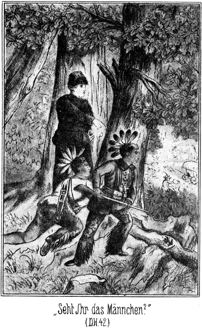»Seht Ihr das Männchen?« sagte Sam. »Ein alter, guter Kerl! Ich hätte doch nicht gedacht, daß er so viel auf uns hält?«
»Auf uns hält? Wieso?« fragte Jim erstaunt.
»Dummkopf! Siehst Du denn nicht, wie liebevoll er für uns sorgt? Macht uns der Prachtkerl da unser Frühstück fertig! Es geht doch nichts über einen guten Freund, auf den man sich verlassen kann! Horcht! Er hat gepfiffen.«
»Ja. Das wird dem Anderen gelten.«
»Natürlich, alter Schlaukopf! Oder meinst Du etwa, daß er uns gepfiffen hat? Schaut, da kommt sein Kamerad. Ihm ist zum Frühstücke gepfiffen worden. Machen wir, daß wir hinunter kommen und unsere Portion auch erhalten, sonst fressen sie sie uns weg.«
Er stieg weiter hinab, und sie folgten ihm. Das war gar nicht schwer. Sie hatten Gras und weiches Moos unter den Füßen, wodurch ihre Schritte ganz unhörbar wurden. Deckung fanden sie durch die Sträucher, und da die Thalwand gar nicht sehr steil abfiel, so kamen die drei Jäger in aller Gemächlichkeit bis in die Nähe der Stelle, an welcher sich die beiden Buschheaders befanden.
Diese Stelle lag ganz an der Seite des Thales, an welcher die drei Genannten herabgekommen waren und nun hinter einem dichten Buschwerk standen, nicht weiter als fünf oder sechs Schritte von den zwei Männern entfernt, deren Worte sie in Folge dessen ganz gut hören konnten.
»Setze Dich!« sagte der Eine zum Andern. »Ich denke, das Fleisch wird gar sein. Sind wir fertig mit dem Essen, so halte ich Wache.«
»Dieses Wachehalten ist einfach ein Unsinn,« meinte der Andere, indem er sich verdrießlich niedersetzte.
»Ich denke es auch. Da soll man ewig und ewig da vorn im Busche stecken, um aufzupassen, ob Jemand kommt. Ich möchte wissen, wer da kommen soll!«
»Als ob wir in New-York wären und Gäste geladen hätten! Ich möchte wetten, daß hier in einem Umkreise von vielen Meilen sich kein Mensch befindet. Und befände sich ja Einer da, so sehe ich nicht ein, warum oder weshalb er grad hier unserem Salon einen Besuch machen sollte.«
»Bin ganz Deiner Meinung, obgleich Du von einem gar so großen Umkreise doch nicht reden darfst. Ich denke, daß diese Förstersleute sich noch hier irgendwo in der Nähe befinden werden.«
»Da wären sie dumm. Sie können nichts Besseres thun, als sich schleunigst aus dem Staube machen. Pferde haben sie außer dem einen nicht, und die wenige Munition, welche der Alte grad bei sich gehabt hat, wird nicht lange reichen. Sie müssen also trachten, an einen Ort zu kommen, wo es Menschen giebt.«
»Den wissen sie aber nicht.«
»Ja, dieses Volk ist verteufelt dumm. Ich habe noch niemals einen Deutschen gefunden, der ein gesundes Gehirn im Kopfe hat. Da, schneide Dir ab! Ist das Fleisch weich?«
»Ja. Ich möchte wissen, was diese Leute heut speisen werden.«
»Das ist mir sehr gleichgiltig. Der alte Rothe mag sich Etwas schießen. Ich denke nur, er wird nicht viel treffen. Das will ein Förster sein! Läuft da mit seinem Jungen und zwei Weibern in der Prairie herum, ohne sie zu kennen! Es war überaus lustig, wie froh er in Santa Fé war, uns kennen zu lernen. Er freute sich königlich, Kameraden zu finden, mit denen er nach Californien konnte. Na, ich denke, daß er uns jetzt kennen gelernt hat!«
»Es ärgert mich nur das Eine, daß die beiden Frauenzimmer so alt waren. Wären sie jung gewesen, so – na!«
Er schnalzte mit der Zunge wie Einer, dem Etwas sehr gut schmeckt. Der Andere sagte:
»Was das betrifft, so war die Eine gar nicht so übel. Sie war zwar nicht mehr sechzehn Jahre alt, aber noch ganz appetitlich. Ich kann mich jetzt fast ärgern, daß wir sie nicht mitgenommen haben. Es wäre doch gar nicht so übel, wenn wir sie jetzt hier hätten. Wir befänden uns im Besitze einer Frau, welche wir jetzt gut gebrauchen könnten.«
»Verdammt!« flüsterte Sam. »Gebrauchen meine Augusta! Na, Du sollst sie kennen lernen!«
»Wollen wir hin?« fragte Jim flüsternd.
»Noch nicht. Vielleicht sagen sie Etwas, was zu wissen uns von Vortheil ist.«
»Aber da fressen sie uns das Fleisch auf!«
»Pah! Das Stück ist groß genug. Und daneben liegt noch ein halbes Reh, welches sie geschossen haben. Warten wir noch ein Bischen!«
Er hatte Recht. Der Eine, welcher den Koch gemacht hatte, sagte:
»Weißt Du, wir wollen uns doch die Geschichte nicht so schwer machen. Das Wachen ist gar nicht nothwendig. Ich setze mich nicht mehr da vorn hin. Ich lege mich nachher lieber hierher und schlafe. Das ist viel besser, als ewig den Wächter machen und die Augen aufreißen, während doch Niemand kommt.«
»Hm! Jetzt geht das an; später aber müssen wir doch wachen. Wenn der rothe Burkers kommt und es bemerkt, daß wir nicht aufpassen, dann bekommen wir unser gehöriges Fett.«
»Ja, er ist streng!«
»Meinst Du? Nur streng?«
»Was noch?«
»Was noch, fragst Du? Ich meine, daß er nicht nur streng, sondern viel zu streng ist, fast unverschämt. Er ist der Hauptmann, ja. Einen Anführer müssen wir haben, das ist wohl richtig. Aber wir sind doch keine Niggers und auch keine Soldaten, mit denen der Feldwebel umspringen kann, wie es ihm beliebt. Dieser Burkers geberdet sich zuweilen wie ein Sclavenzüchter, der nur so mit der Peitsche drohen kann. Das sollte man nicht dulden.«
»Was willst Du dagegen thun? Eine gewisse Disciplin muß doch sein!«
»Ja, aber sie kann in Gemüthlichkeit gehandhabt werden. Er hat es doch nur uns zu verdanken, daß er nicht einige Ellen hoch aufgehängt worden ist, besonders uns Beiden. Damals in Van Buren wäre es ihm an den Kragen gegangen, wenn wir ihn nicht aus dem Loche geholfen hätten.«
»Das ist richtig. Wir steckten da selbst sehr tief in der Patsche. Glücklicher Weise gab es Niemand, der uns Etwas nachweisen konnte. Wenn ich jemals diesem verdammten Dicken begegne, so soll er an mich denken!«
»Sam Barth?«
»Ja. Er ist schuld gewesen, wie wir ja später gehört haben. Hat uns im Walde belauscht, wo wir doch sicher waren, unbeobachtet zu sein. Wenn er mir einmal in die Hände läuft, so schlachte ich ihn ab wie ein Schwein und mache Stearinlichter aus seinem Fette. Darauf kann er sich verlassen.«
»Und ich helfe mit. Man sollte dann die beiden langen Brüder Snaker bei ihm finden. Aus ihnen ist freilich nicht viel Fett zu schneiden.«
»Nein, aber man könnte sie als Dochte benutzen. Man wickelt den dicken Sam um sie herum und brennt sie an. Das giebt eine Kerze, welche – Du, hörtest Du nichts?«
»Nein.«
»Es war, als hätte es da im Busche geraschelt.«
»Vielleicht eine Eidechse, weiter nichts.«
Der lange Tim hatte, als von ihm die Rede war, die Faust erhoben und gedroht und war dabei mit der Hand über einen Ast gestrichen.
»Nimm Dich in Acht, Esel!« flüsterte Sam.
»Donnerwetter! Ich ein Docht!« knurrte Tim. »Na, ich werde Euch ein Licht aufstecken, Ihr Hallunken! Und Ihr sollt nicht lange darauf warten müssen.«
»Eigentlich ist es sehr unvorsichtig von Burkers, uns hier zurückzulassen,« wurde das Gespräch fortgesetzt.
»Warum? Es muß doch Jemand bei den Wagen zurückbleiben.«
»Ja. Aber wenn wir nun nicht ehrlich wären!«
»Willst Du etwa mit den schweren Fahrzeugen durchbrennen?«
»Nein; das kann mir nicht einfallen. Aber mit dem Anderen könnte man sich aus dem Staube machen.«
»Um erwischt und niedergeschossen zu werden!«
»Man stellt sich doch nicht hin, bis sie kommen.«
»Pshaw! Die paar tausend Dollars würden nicht lange aushalten. Wir müßten verzichten auf Alles, was sie vom Silbersee mitbringen.«
»Das ist freilich wahr. Ich möchte eigentlich dabei sein. Diese Taube des Urwaldes soll geradezu massenhafte Schätze besitzen. Ich bin neugierig, ob der Streich gelingen wird.«
»Warum soll er nicht gelingen? Burkers ist schlau. Schade, daß er nicht die directe Route einschlagen kann! Er muß einen so bedeutenden Umweg machen, daß wir zwei Wochen hier sitzen und auf ihn warten können. Er muß von der Westseite an den See kommen. Ist das Geschäft gemacht, so können sie dann in directer Linie zurückkommen. Der Raub wird hier aufgeladen, und dann fort von hier, hinein ins Arizona!«
»Zu Walker.«
»Ja. Mit ihm machen wir dann wohl ein ebenso feines Geschäft. Höre, es ist doch eigenthümlich, daß der rothe Burkers mit diesem Walker zusammengetroffen ist. Er ist ein tüchtiger Kerl. Damals in Wilkinsfield wäre es ihm beinahe auch an den Kragen gegangen. Er ist doch förmlich belagert gewesen, ehe wir dann nach der Hütte des schwarzen Bommy kamen. Die Brüder Jim und Tim und der dicke Sam hatten es auf ihn abgesehen. Sie sollen eine Rache auf ihn haben. Na, wenn sie wüßten, daß er jetzt in Prescott ist und ein steinreicher Kerl dazu, so würden sie schleunigst aufbrechen, um ihm einen Besuch zu machen. Wo diese drei Kerls wohl stecken werden?«
»Man hat lange Zeit nichts von ihnen gehört.«
»O doch. Sie sollen sich da oben in den schwarzen Bergen herumtreiben. Ich hätte doch Freude, wenn ich ihnen einmal begegnete.«
»Das ist gar nicht nöthig.«
»Warum nicht? Ich möchte meine Rechnung mit ihnen in's Reine bringen.«
»Ich mag nichts mit ihnen zu thun haben. Der Dicke soll ein spaßhafter Kerl sein; aber es ist besser, man verzichtet auf solche Späße. Ich male niemals gern den Teufel an die Wand.«
»Du denkst, er kommt?«
»Ja.«
»Unsinn! Er wird sich hüten!«
»O, er ist schon da!« erklang es hinter ihnen.
Sie fuhren erschrocken mit den Köpfen herum. Da stand Sam der Dicke, von welchem sie soeben gesprochen hatten. Sie kannten ihn nur zu gut. Sie waren so entsetzt, daß sie sogar das Aufspringen vergaßen. Sie blieben sitzen und starrten ihn wie eine überirdische Erscheinung an. Er trat näher an sie heran und sagte fröhlich lachend:
» Good morning, Mesch'schurs! Sperrt die Mäuler nicht so weit auf! Oder habt Ihr vielleicht vor Freude über mich die Maulsperre bekommen?«
»Sam Barth!« stieß der Eine hervor.
»Ja, Sam Barth, wie er leibt und lebt! Ihr habt also Gelegenheit, eine Stearinkerze aus meinem Fette zu machen. Der Docht wird nicht lange auf sich warten lassen.«
»Verdammt! Er hat gelauscht!«
»Ja, grad wie damals im Walde bei Wilkinsfield. Habt Ihr vielleicht Etwas dagegen?«
»Sogar sehr viel, mein Bursche!«
Der das sagte, sprang jetzt empor und zog sein Messer. Sein Kamerad that dasselbe. Sam schüttelte lachend den Kopf und sagte:
»Gebt Euch keine Mühe! Eure Messer sind vollständig unnütz. Ehe Ihr an mich kämt, hätte ich Euch erschossen. Aber das ist gar nicht nöthig. Da guckt Euch einmal diese beiden Männer an, die Euch da auf dem Korne haben!«
In diesem Augenblicke erschienen Jim und Tim zur rechten und linken Seite des Busches. Sie hielten ihre Gewehre schußfertig auf die beiden Kerls gerichtet. Diese standen bewegungslos und brachten kein Wort hervor.
»Nun, was sagt Ihr dazu?« fragte Sam.
»Indianer!«
»Na, die besten Augen habt Ihr nicht. Diese beiden Herren sind keine Indianer. Sie sind gute Bleichgesichter, die sich nur einstweilen ein Bischen angemalt haben, um Euch einen Spaß zu machen. Es sind nämlich die beiden Dochte, welche Ihr haben wolltet, um das Stearinlicht fertig zu machen.«
»Jim und Tim?«
»Ja. Ihr habt so sehnsüchtig gewünscht, uns zu sehen. Und wir sind höfliche Leute. Wir lassen nicht gern Jemand auf uns warten.«
»Hols der Teufel! Komm!«
Der das sagte, wollte fliehen, und sein Kamerad machte Miene, ihm zu folgen. Sie sahen ein, daß eine Gegenwehr erfolglos sein werde.
»Halt!« sagte Sam. »Ihr entkommt uns nicht. Wer sich von der Stelle bewegt, erhält einen Schuß in den Leib!«
»Versucht es!«
Er that einen schnellen, weiten Sprung vorwärts, um hinter die Wagen und unter deren Schutz an die andere Seite des Thales zu kommen. Sein Gefährte folgte ihm. Aber eine Kugel ist schneller als der schnellste Läufer. Die zwei Schüsse krachten, und die beiden Fliehenden stürzten zu Boden.
»Da habt Ihr es!« sagte Sam. »Warum seid Ihr so dumm, uns ausreißen zu wollen. Dankt überhaupt Gott, daß wir es so gnädig gemacht haben! Ihr habt diese Kugeln nur in die Beine bekommen! Das nächste Mal zielen wir höher.«
Während dieser Worte schnallte er sein Lasso los und schritt auf die am Boden Liegenden zu. Jim und Tim standen auch bereits da. Die Verwundeten verzichteten auf unnütze Gegenwehr, durch welche sie ihre Lage doch nur verschlimmern konnten. Sie wurden gebunden.
»So!« sagte Sam. »Ihr seid die zwei albernsten Menschen, die mir während meines langen Lebens vorgekommen sind. Da sollt Ihr Wache halten, sitzt aber beim Rehbraten und habt die Schießgewehre nicht bei Euch. Ihr seid mir schöne Kerls! Schämt Euch! Da ich aber kein Menschenfresser bin, so macht es mir keinen Spaß, Euch umzubringen. Wenn Ihr vernünftig seid, so will ich Euch das Leben schenken. Wollen also einmal nach Euren Wunden sehen. Haltet still!«
Er hatte, hinter dem Busche stehend, den beiden Brüdern gesagt, daß sie im Falle eines Fluchtversuches so zielen sollten, daß nur eine Fleischwunde am Oberschenkel entstehe. Das hatten sie befolgt. Die Kugeln waren durch die Muskeln des Oberbeines gegangen, so daß die Verletzung wohl eine schmerzhafte, aber keine lebensgefährliche war.
Er schnitt ihnen die Hosen auf und holte dann von dem einen Wagen den ersten, besten kattunenen Gegenstand, welcher zerschnitten wurde, um als Verband zu dienen. Die Verwundeten verhielten sich schweigsam. Sie ließen mit sich machen, was die Sieger wollten. Sie sahen, daß sie wenigstens um ihr Leben nicht besorgt zu sein brauchten, und das beruhigte sie für den Augenblick.
Als die Verbände angelegt waren, meinte Sam:
»So, das ist fertig. Jetzt wollen wir nun einmal erfahren, was Ihr eigentlich in dieser schönen Gegend zu suchen habt. Wem gehören diese Wagen?«
»Uns natürlich!« antwortete der Eine, die Schmerzen seiner Wunde und zugleich auch seinen Grimm verbeißend.
»Euch? Hm! Wen versteht Ihr denn unter diesem Worte Uns?«
»Uns Beide.«
»Ah! Ihr Beide seid Besitzer der Wagen?«
»Ja.«
»Wer hat sie denn hierher gebracht?«
»Wir!«
»Ihr Beide allein?«
»Ja.«
»Da habt Ihr ein Meisterstück fertig gebracht, um welches ich Euch beneide. Zwei einzelne Personen verstehen es, mit diesen Ochsengespannen fertig zu werden! Das ist eine geradezu bewundernswerthe Leistung. Es hat Euch Niemand geholfen?«
»Nein.«
»Auch nicht etwa der rothe Burkers?«
»Nein.«
»Na, Kinderchens, macht Euch doch nicht so sehr lächerlich! So Etwas macht Ihr uns überhaupt nicht weiß, und sodann will ich Euch sagen, daß wir Drei eine ganze Weile hinter Euch gesteckt und Euer Gespräch gehört haben. Wir wissen Bescheid. Ihr gehört zu Burkers.«
»Nein.«
»Nun, wenn Ihr wollt, so werden wir uns ganz genau nach Euren Wünschen richten. Ich sehe da eine recht hübsche Ochsenpeitsche liegen, nach welcher Ihr Appetit zu haben scheint. Ich bin bereit, Euren Appetit zu stillen. Jim, hole sie einmal her! Wir wollen sehen, ob sie behilflich ist, diese Herren zum Sprechen zu bringen.«
Jim holte sie. Sie war aus starken Riemen geflochten nach Art der bekannten Hetzkoller, welche früher bei Schlittenfahrten häufig in Anwendung kamen. Er versuchte, ob er sie zu führen verstehe, und sagte dann zu Sam:
»Es geht. Wieviel soll ich ihnen aufzählen?«
»Du haust so lange zu, bis sie die Wahrheit sagen. Hieb um Hieb, einmal den Einen und dann den Anderen. Drehen wir die Mesch'schurs um, so da sie uns ihre Kehrseiten zu sehen geben.«
Jetzt bemerkten die Beiden, daß Ernst gemacht werden solle. Darum erklärten sie, daß sie die Wahrheit gestehen wollten.
»Gut! Wenn Ihr nicht Verstand annehmt, so machen wir Euch welchen. Also wie steht es mit Burkers?«
»Er war mit hier.«
»Wo ist er jetzt?«
»Auf der Jagd.«
»So, so! Was will er denn jagen?«
»Was er findet. Wir brauchen Fleisch.«
»Und das holt er vom Silbersee?«
Die beiden Männer schwiegen. Sam fuhr fort:
»Ihr merkt, daß wir Alles gehört haben. Aber was wir wissen, brauchen wir nicht von Euch zu erfahren. Ich will also nicht in Euch dringen. Ihr habt Beide ein überaus zartes Gewissen, und so will ich Euch nicht zumuthen, Euern lieben Hauptmann zu verrathen. Eins aber möchte ich sehr gern erfahren. Wer ist denn eigentlich der Förster, von welchem Ihr spracht?«
»Ein früherer Bekannter.«
»Wo befindet er sich jetzt?«
»In St. Louis.«
»Hm! Mit seinem Sohne und den beiden Frauen, die Ihr erwähntet?«
»Ja.«
»Wunderbar! Es schien mir doch, als hättet Ihr gesagt, der Kerl sei sehr dumm, daß er sich in die Prairie gemacht habe. Es steckt da jedenfalls ein Geheimniß dahinter.«
»Nein.«
Sam stieß einen wiederholten scharfen Pfiff aus und antwortete:
»Ich muß Euch natürlich glauben, was ich Euch nicht als unwahr beweisen kann. Darum will ich Euch nicht weiter belästigen als nur mit noch Einem. Ihr spracht von einem gewissen Walker. Woher wißt Ihr denn, daß sich dieser Mann jetzt drüben in Prescott befindet?«
»Burkers sagte es.«
»Und von wem weiß er es?«
»Von einem Boten, welchen Walker zu ihm nach Santa Fé gesandt hat.«
»Ihr wollt mit ihm Geschäfte machen. Welcher Art sind dieselben wohl?«
»Das wissen wir nicht; das ist Burkers' Sache.«
»Und vielleicht auch ein Wenig die unserige. Jetzt wollen wir Euch in Ruhe lassen. Ihr habt Eure ganze Aufrichtigkeit über uns ausgeschüttet; dafür sind wir Euch dankbar; darum wollen wir Euch nicht länger quälen und uns lieber einmal nach Euern Braten umsehen. Kommt, Ihr Beiden!«
Er setzte sich gemüthlich zum Feuer nieder, und die Brüder thaten dasselbe. Sie machten sich über das Fleisch her und thaten gar nicht, als ob sie es bemerkten, daß hinter ihnen sich Schritte hören ließen. Der Förster kam mit den Seinen.
Die beiden Spitzbuben waren natürlich bei seinem Anblicke nicht wenig erschrocken. Seine Frau und die Schwägerin eilten sofort nach ihrem Wagen, um zu sehen, was von ihrem Eigenthume noch vorhanden sei. Die beiden Verbrecher flüsterten leise mit einander. Jedenfalls sprachen sie über das Verhalten, welches sie unter diesen Umständen einzuschlagen hätten.
»Nun, ich hoffe, daß Ihr jetzt wißt, wieviel die Glocke geschlagen hat,« sagte Sam. »Es ist sogar Diejenige hier, welche Ihr so gut gebrauchen könntet. Ich bin leider kein Pfarrer, sonst würde ich gern bereit sein, diese Ehe einzusegnen. Ich denke aber, daß ich Euch meinen Segen auf eine andere Weise geben kann. Da steht der Förster, Euer Ankläger. Er mag auch Euer Urtheil fällen. Was meinen Sie?«
Diese Frage war an Rothe gerichtet. Er antwortete:
»Ich bin nicht blutgierig. Ich will nur mein Eigenthum wiederhaben. Uebrigens sehe ich, daß diese Kerls verwundet sind. Sie sind bestraft genug.«
»So wollen Sie sie laufen lassen?«
»Ja.«
»Nach den Gesetzen der Savanne haben sie den Tod verdient. Da Sie es aber so wollen, werden wir sie laufen lassen. Etwas aber müssen wir ihnen doch zum Andenken geben. Wir zählen einem Jeden fünfundzwanzig gute Hiebe auf. Das wird ungemein zur Heilung ihrer Schußwunden beitragen. Vielleicht bin ich bereit, ihnen diese Hiebe zu erlassen, wenn sie mir eine Frage der Wahrheit nach beantworten: Wer hat das Geld, welches Ihr diesen Leuten abgenommen habt?«
»Wir wissen von keinem Gelde.«
»Oho! Es hat sich da im Wagen befunden.«
»So hat es der rothe Burkers. Er hat den Wagen durchsucht, nicht wir.«
»Gut, so sollt Ihr Eure Fünfundzwanzig bekommen. Hättet Ihr ein Geständniß abgelegt, so wäre Euch diese Strafe erlassen worden.«
»Was man nicht weiß, das kann man nicht gestehen!«
»Schon gut!«
Er ging, um nach einer Hacke zu suchen. Der Eine der beiden Gefangenen flüsterte dem Anderen zu:
»Wäre es nicht besser, ihm Alles zu sagen?«
»Unsinn! Wir kommen sonst um das Geld.«
»Aber wir erhalten die Hiebe!«
»Nein. Er droht uns nur. Tödten will er uns nicht; er wird uns also hier lassen müssen. Wir behalten das Geld, welches wir später sehr nöthig haben werden. Diesen verdammten Kerl hat der Teufel hergeführt. Er hat den Förster getroffen und unsere Fährte gefunden. Dem Ersteren wäre es niemals geglückt, sie aufzuspüren. Donnerwetter! Was will er denn mit der Hacke?«
Sam hatte in einem der Wagen eine Hacke gefunden. Er gab sie dem Förster und sagte:
»Hier! Graben Sie also einmal da vorn am ersten Wagen unter dem linken Hinterrade nach. Da wird sich das Gesuchte wohl finden.«
Darauf kehrte er zu den Gefangenen zurück und beobachtete mit innerlicher Freude die Bestürzung, welche sie zeigten, als der Förster nachzugraben begann.
»Ihr macht ja Gesichter, als ob Euch die Pflaumenbäume verhagelt seien!« sagte er. »Nicht wahr, wir wissen sehr genau, wo das Geld zu finden ist?«
»Der Teufel hole Euch!«
»Pshaw! Mit dem habe ich nichts zu schaffen. Er wird sich an Euch halten müssen.«
Die Familie des Försters stand mit bei dem Wagen; Jim und Tim waren auch dort. Nach einiger Zeit stieß Rothe einen Freudenruf aus. Er förderte eine Pferdedecke zu Tage, in welche ein großer Lederbeutel eingewickelt war.
»Bringt das Ding einmal her!« sagte Sam. »Wir wollen sehen, was darinnen steckt.«
Der Beutel wurde geöffnet. Er war voller Geld. Die Summe betrug über neuntausend Dollars.
»Habe es mir gedacht!« lachte der Dicke. »Dieser rothe Burkers ist so freundlich gewesen, auch sein eigenes Geld mit hineinzustecken. Na, das sind die Zinsen, welche er bezahlt. Master Rothe, da sind Sie also wieder zu Ihrem Gelde gekommen. Stecken Sie es ein, und nehmen Sie es in Zukunft besser in Acht!«
Weder der Förster noch Augusta wollten von dem Ueberschusse Etwas haben. Sie verlangten, daß die drei Jäger sich darein theilen sollten. Diese aber gingen nicht darauf ein.
Jetzt wurde nun Berathung gehalten, was mit den Gefangenen und den Wagen und deren Inhalte gemacht werden solle. Man stellte es Sam anheim, darüber zu bestimmen. Er sagte:
»Wir nehmen mit, was wir mit uns führen können, ohne daß wir unsere Pferde überlasten. Alles Andere verbrennen wir, auch die Wagen mit. Diesen Spitzbuben soll nichts zu Gute kommen.«
»Können wir denn die Wagen nicht mit uns nehmen?« fragte die Försterin.
»Nein, das ist unmöglich.«
»So komme ich ja um Alles, um meine schönen Betten, meine Wäsche –«
»Weinen Sie nur deshalb nicht. Mit uns schleppen können wir die Sachen nicht. Ich werde dafür sorgen, daß Sie für diesen Verlust Ersatz finden. Wir verlassen diesen Ort zu Pferde. Die Wagen können wir unmöglich gebrauchen. Sie hindern uns.«
Die Frau mußte sich drein ergeben.
Der eine Wagen enthielt verschiedene Kleidungsstücke, Munition und Proviant. Es wurde Alles, was mitgenommen werden konnte, zusammengepackt. Mittelst einiger Betten wurden für die Frauen zwei weiche Sattelsitze hergerichtet. Dann wurden die Wagen zusammengeschoben und in Brand gesteckt.
Die Gefangenen sahen mit heimlichem Zähneknirschen zu. Sie konnten nichts ändern, nahmen sich aber vor, sich später bei einem etwaigen Wiederzusammentreffen zu rächen.
Bis das zerstörende Feuer seine Schuldigkeit gethan hatte, blieben die Reisenden im Thale. Dann machten sie sich zum Aufbruche bereit. Sam sagte zu den beiden Buschheaders:
»Wir wollen nicht, daß Ihr elendiglich zu Grunde gehen sollt. Darum lassen wir Euch Eure Waffen und auch einige Munition zurück. Verhungern könnt Ihr nicht. Hier fließt Wasser, und dort habt Ihr Eure Zugthiere. Wenn Ihr einen Ochsen niederschießt, habt Ihr zu essen, so viel Euch beliebt. Jetzt aber muß ich Euch die Fünfundzwanzig geben, welche Ihr verdient habt, weil Ihr gelogen habt.«
Noch immer glaubten sie, daß er es nicht thun werde; aber bereits kamen Jim und Tim herbei, welche sich zu der Exekution einige gute, elastische Stöcke abgeschnitten hatten.
»Docht aus uns machen!« sagte der Erstere. »Jetzt werden wir Euch einige Dochte überziehen, und zwar nicht schlecht. Ihr sollt sie brennen fühlen, ohne daß Ihr sie anzuzünden braucht.«
Die beiden Frauen entfernten sich, um die Exekution nicht mit ansehen zu müssen; die Anderen aber blieben zurück. Jim und Tim übernahmen die Ausführung des Urtheiles, und sie machten ihre Sache so vortrefflich, daß der eine der beiden Delinquenten, welche die Strafe in wortlosem Grimme hinnahmen, nach dem letzten Streiche unter Zähneknirschen sagte:
»Das Leben habt Ihr uns geschenkt. Wir behalten es, um es nur zur Rache zu verwenden.«
»Zur Rache gegen uns?« lachte Sam.
»Ja.«
»Das könnte uns veranlassen, Euch eine Kugel durch den Kopf zu jagen.«
»Thu es meinetwegen! Aber wenn wir hier nicht liegen bleiben; wenn wir wieder gesund werden, so nehmt Euch vor uns in Acht. Das erste Wiedersehen bringt Euch den Weg in die Hölle. Ihr sollt uns nicht umsonst geschlagen haben!«
»Gieb Dir keine Mühe, uns Angst zu machen. Wenn Du Dich wieder einmal vor mir sehen lassen solltest, so erhältst Du Fünfzig aufgezählt anstatt nur Fünfundzwanzig. Solche Hallunken, wie Ihr seid, sollte man eigentlich um einen Kopf kürzer machen. Wäre es nur auf mich angekommen, so wäre das geschehen. Ihr habt nur Denen, die Ihr beraubtet, Euer Leben zu verdanken. Pflegt Euch gut, damit Ihr bald gesund werdet! Was Ihr dann anfangt, ist mir sehr egal; nur hütet Euch, mir jemals wieder vor die Augen zu kommen!« –
Der nun folgende Ritt über die Sierra de los Mimbres nach der Sierra della Acha ging ganz glücklich und ohne besondere Erlebnisse von statten. Von seinem früheren Aufenthalte am Silbersee kannte Sam den Weg dorthin. Er wußte, daß Eile nothwendig sei; darum hütete er sich vor jedem Umwege und jedem unnöthigen Aufenthalte.
Ein Glück war es, daß die beiden Frauen den Ritt sehr gut aushielten, obgleich sie diese Art und Weise des Reitens nicht gewohnt waren. Freilich gab der gute Sam sich die größte Mühe, ihnen die Sache so leicht wie möglich zu machen.
Jim und Tim hatten sich die Farbenmalerei aus dem Gesicht gewaschen. In der Gegend, in welcher sie sich befanden, war es nicht mehr von Vortheil, als Indianer aufzutreten. In den Wagen hatten sie zwei Hüte gefunden, die sie nun zu ihren Anzügen trugen.
Die ganze Gesellschaft war außerordentlich gespannt, die Taube des Urwaldes kennen zu lernen. Beim Aufbruche heute morgen hatte Sam gesagt, dies sei ihr letztes Nachtlager gewesen, da sie heute den See erreichen würden. Jetzt befanden sie sich auf einer ziemlich breiten Hochebene, welche von bewaldeten Höhen rechts und links eingeschlossen wurde, selbst aber keinen Baum zeigte, sondern von Gras und kurzlockiger Grama bestanden war. Sie schien sich nach vorwärts zu verengen und Sam sagte, daß der Silberfluß von den zur Linken liegenden Höhen herabkomme und sich da vorn, wo die Ebene ganz schmal werde, in einem hohen Falle herabstürze in den Thalkessel des Sees.
Am Schlusse dieser Erklärung blickte er sich nach der Richtung um, aus welcher sie gekommen waren, und sagte überrascht:
»Sapperment! Wir sind nicht die einzigen Menschen, welche es hier giebt. Da seht!«
Als sich nun auch die Anderen umblickten, sahen sie zwei Reiter in noch ziemlicher Ferne hinter sich. Diese Entfernung verminderte sich aber zusehends, da die Reiter im schärfsten Galopp herbeikamen. Außer Schußweite hielten sie an, um die Gesellschaft zu betrachten.
»Indianer,« sagte Sam. »Sie scheinen Beide noch jung zu sein, den Gestalten nach, denn die Gesichter kann man nicht erkennen.«
»Apachen oder Comanchen?« fragte Jim.
»Das weiß ich nicht. Sie haben kein Zeichen an sich, nach welchem man diese Frage beantworten könnte. Ah, sie scheinen sich beruhigt zu haben. Sie kommen heran.«
Die Indianer setzten ihre Pferde wieder in Galopp. Je näher sie kamen, desto besser waren sie zu erkennen.
Der Eine, Größere von ihnen war doch nur wohl zwanzig Jahre alt und in einen dunkeln Jagdanzug von Flennhaut gekleidet. Er trug eine Doppelbüchse, welche am Riemen über seiner Schulter hing. Sein Gesicht war unbemalt, braun, aber von beinahe kaukasischen Zügen.
Der Andere war jünger und in einen weißen Jagdanzug von Rehleder gekleidet. Genäht war dieser Anzug mit roth gefärbter Hirschsehne. Dieser Kleinere hatte sein Gesicht mit quer über dasselbe gehenden rothen und gelben Strichen gefärbt, so daß die eigentlichen Züge nicht zu erkennen waren. Auch er trug ein Gewehr, aber einen prachtvollen Lefaucheur-Hinterlader, eine große Seltenheit bei einem Indianer.
Beritten waren die Beiden außerordentlich gut. Der Aeltere saß auf einem Rapphengste und der Jüngere auf einer Schimmelstute.
Beide parirten ihre Pferde, als sie herangekommen waren.
»Uff, uff! Lo, lo!« rief der Jüngere mit knabenhaft feiner Stimme, als ob er sich über Etwas wundere.
Der Aeltere musterte die Gesellschaft mit ernster Miene und sagte dann:
»Die Bleichgesichter haben einen weiten Weg hinter sich?«
»Ja, einen sehr weiten,« antwortete Sam.
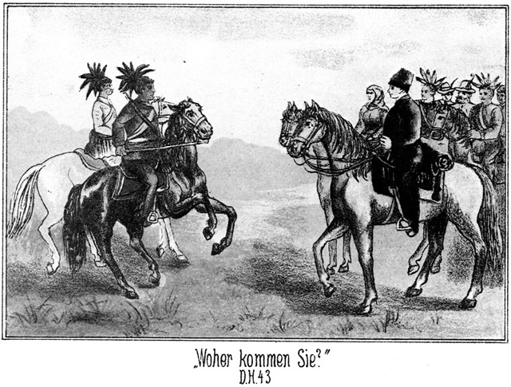»Woher kommen sie?«
»Von jenseits des Gebirges.«
»Und wohin wollen sie?«
»Nach dem Silbersee.«
»Wollen sie vielleicht dort jagen?«
»Nein. Wir wollen dort ausruhen.«
»So weiß mein weißer Bruder wohl nicht, daß es dort keinen Ort giebt, an welchem ein Fremder sein Wigwam aufschlagen darf?«
»Wer will es mir verwehren?«
»Die Krieger der rothen Nationen.«
»Sie werden mich nicht fortweisen. Ich bin ihr Freund.«
»Alle Bleichgesichter nennen sich Freunde der rothen Männer, aber ihre Zungen sind falsch. Sie handeln anders als sie sprechen.«
»Ist mein rother Bruder schon so bei Jahren, daß er solche Erfahrungen gemacht hat?«
»Die Bleichgesichter sorgen dafür, daß der rothe Mann bereits in seiner Jugend sie kennen lernt. Mein weißer Bruder wird sehr klug handeln, wenn er mit den Seinen umkehrt. Er findet am Silbersee keinen Platz.«
»So ist der Platz schon besetzt?«
»Ja.«
»Von wem?«
»Es befindet sich dort das Nest der Taube des Urwaldes, und die rothen Krieger sorgen dafür, daß kein Raubvogel sich diesem Neste nahe.«
»Ich bin kein Raubvogel. Ich komme als ein Freund der Taube, um ihr eine wichtige Entdeckung zu machen.«
»Sie wird den weißen Mann nicht empfangen.«
»Ich werde doch versuchen, ob sie es thut!«
Da sagte der Jüngere:
»Sie wird es thun. Du bist ihr willkommen.«
»Ich danke Dir, Knabe. Deine Worte klingen lieblicher als diejenigen Deines Bruders.«
»Ich spreche gern freundlich mit Dir, denn Du bist ein kühner Jäger, und Dein Herz ist voller Güte und Ehrlichkeit.«
»Wie kannst Du das wissen?«
»Ein Jeder wird Sam Barth so beschreiben, wie ich es gethan habe.«
»Sapperment! Du kennst mich?«
»Ja. Auch Jim und Tim werden der Taube sehr willkommen sein.«
»Alle Wetter! Auch diese kennst Du?«
»Sehr gut.«
»Kann mich nicht besinnen!« meinte Jim. »Woher willst Du uns kennen?«
»Ihr habt mir einmal einen großen Dienst geleistet.«
»Welchen denn?«
»Davon später!«
Er gab seinem Pferde die Sporen und sprengte in gestreckter Carrière davon, gefolgt von dem anderen Indianer.
»Da brate mir Einer einen Storch!« sagte Jim.
»Brate ihn Dir nur selber!« lachte Sam.
»Ich habe das Kerlchen noch nie gesehen!«
»Ich auch nicht. Und doch – – hm!«
»Was denn – hm?«
»Er sprach im reinsten Englisch, während der Andere sich im Indianermischmasch ausdrückte. Es kommt mir irgend Etwas bekannt an diesem Kleinen vor.«
»Etwa die Visage?«
»Die konnte man ja gar nicht sehen. Nein, aber die Stimme – diese Stimme!«
»Hast Du sie gehört?«
»Welche Frage! Natürlich habe ich sie gehört; ich habe ja meine Ohren! Aber sie kommt mir bekannt vor. Es ist mir, als ob ich sie bereits einmal gehört hätte.«
»Täuschung!«
»Das ist möglich. Aber hast Du seine Hände angesehen?«
»Was gehen mich die Hände an!«
»Da sieht man, wo Du die Augen hast. Du willst ein Westmann sein und siehst doch so Etwas nicht! Die Händchen waren klein wie Damenhände, ganz zart und so weiß, wie ein Indsmen keine Hände hat. Es kommt mir das sehr verwunderlich vor.«
»Na, warte, bis wir zur Taube kommen! Bei ihr werden sich diese beiden Indianer befinden. Aus ihren Reden war zu ersehen, daß sie sie kennen, und sie haben ja die Richtung eingeschlagen, welche zu ihr führt.«
»Natürlich werde ich da warten müssen; sie sind eben fort. Dort reiten sie, und wie! So kostbare Pferde habe ich fast noch niemals gesehen. Machen wir, daß wir nachkommen.«
Sie setzten den unterbrochenen Ritt fort. Nach einiger Zeit traten die Höhen, zwischen denen die Hochebene lag, näher zusammen, mit ihnen der Wald, und von der Seite her näherte sich das Flüßchen, dessen Wasser den Silbersee speiste. Dann vernahmen sie das Brausen eines hohen Wasserfalles. Das Flüßchen stürzte sich wohl über fünfzig Meter hoch hinab in ein Felsbassin, welches es sich ausgehöhlt hatte, und floß von da weiter dem See entgegen, den man aber noch nicht sehen konnte.
Der Weg, den die Reiter einzuschlagen hatten, ging in einen weiten, sich immer tiefer senkenden Bogen um den Wasserfall hinab nach dem Bassin und von da am Flüßchen hin, bis die Bäume, welche da einen geschlossenen Wald bildeten, wieder auseinander traten. Jetzt nun war das Thal des Sees in seiner ganzen Ausdehnung zu überblicken.
Es bot einen Anblick von wunderbar, ergreifender Schönheit.
Die fast lothrecht aufsteigenden Wände konnten keine Bäume tragen, waren aber mit Buschwerk bestanden, welches für seine Wurzeln überall einen Felsenriß gefunden hatte. Nur hier und da stand an einer horizontalen Stelle eine Ceder, aber von solcher Mächtigkeit wie in dem berühmten Yosemitethal in Californien. An diesen Felswänden konnte kein menschlicher Fuß hinauf- oder herabklettern. Es gab nur zwei Wege, in das Thal zu kommen, nämlich da, wo das Flüßchen in dasselbe trat, und da, wo es dasselbe wieder verließ.
Der größte Theil der Thalsohle war mit Wasser angefüllt – dem Silbersee. Die Sonne stand bereits hoch, und unter ihren Strahlen erglänzten die Wellen wie polirtes Silber.
An seinem diesseitigen Rande, da wo sich das Flüßchen in ihn ergoß, stand das alte Gebäude der Mission. Es war gebaut wie ein Kloster, durchweg aus Steinen aufgeführt. Diejenigen, welche es vor alter Zeit errichtet hatten, waren gezwungen gewesen, sich gegen feindliche Angriffe zu schützen. Sie hatten den Mauern eine bedeutende Stärke gegeben und im unteren Stocke keine Fenster, wohl aber zahlreiche Schießscharten angebracht. Aus demselben Grunde gab es auch nur einen einzigen Eingang, welcher durch ein mächtiges hölzernes Thor verschlossen wurde. Neben demselben befand sich eine Klingel, die jedenfalls erst in neuerer Zeit angebracht worden war.
In der Nähe des Gebäudes weideten mehrere Pferde, unter ihnen auch der Rappe und der Schimmel, welche die beiden jungen Indianer geritten hatten. Am Ufer des Sees waren mehrere Rindenkähne befestigt. In der Mitte der Wasserfläche sah man eine Insel. Ein kleines, steinernes Gebäude, welches sich auf derselben befand, ließ vermuthen, daß sie vom Ufer aus sehr oft besucht werde.
Um den See herum gab es eine ganze Menge künstlicher Erhöhungen, meist ungefähr zwölf Ellen hoch und mit Gras bewachsen, oben darauf irgend ein Busch mit in die Erde gesteckten Lanzen und allerlei anderem Geräthe. Sam erklärte:
»Das sind die Häuptlingsgräber, welche in der ganzen Gegend für heilig gelten.«
»Die liegen in ihren Särgen unter so riesigen Hügeln?« fragte der Förster.
»Liegen? In Särgen? Fällt keinem Menschen ein! Ein Häuptling wird nicht in einen Sarg gepreßt. Man zieht seiner Leiche das beste Gewand an, setzt sie auf sein Lieblingspferd und giebt ihr die Waffen und den Medizinbeutel in die Hand. Das Wort Medizin bedeutet hier nicht etwa so viel wie Arznei, sondern es heißt Heiligthum. Der Medizinbeutel enthält Amulette und andere Gegenstände, welche durch den Priester, den Medizinmanne geweiht worden sind. – Nun wird um das Pferd und die Leiche Erde aufgehäuft. Das Thier kann sich zuletzt nicht mehr bewegen und wird erstochen, damit es nicht so lange mit dem Tode zu kämpfen habe. Die Erde wächst höher und höher, Steine darüber, welche dem Grabe Halt geben. Hat der Hügel seine Höhe erreicht, so steckt man allerlei Gerätschaften des Häuptlings, seine Lanzen und Pfeile, seinen Bogen, oben in die Erde und hängt Verschiedenes daran, was ihm im Leben lieb gewesen ist. Diese Gegenstände sind unantastbar. Wer sich an ihnen vergreift, begeht ein Verbrechen, welches nur mit dem Tode gesühnt werden kann. Es sind Weiße hier gewesen, welche die Gräber entweiht haben. Darum wurde zu der Zeit, als ich zum ersten Male hierher kam, ein jedes Bleichgesicht feindselig empfangen und mit den Waffen fortgewiesen. – Hier nun sind wir an dem Thore. Wir werden klingeln müssen.«
Er zog an der Glocke. Man hörte ihren Ton wie aus weiter Entfernung. Nach einiger Zeit wurde ein kleines Guckloch, welches sich im Thore befand, geöffnet, und das Gesicht einer alten, runzeligen Indianerin erschien.
»Wohnt hier die Taube des Urwaldes?« fragte der kleine Dicke.
»Palomo Nakana wohnt hier,« lautete die Antwort.
»Ist sie daheim?«
»Sie ist da.«
»Ich habe mit ihr zu sprechen.«
»Es ist ein großes Wunder geschehen. Ihr seid Bleichgesichter, welche nur Unheil bringen, und doch habe ich den Befehl erhalten, Euch Alle einzulassen. Kommt Ihr in arglistiger Absicht, so werdet Ihr dieses Haus nicht lebendig verlassen. Darum reitet lieber sogleich wieder fort!«
»Wir sind Freunde der Taube. Wir haben uns nicht zu fürchten.«
»So kommt herein.«
Das Thor ging auf, und die Angekommenen folgten dem breiten, gewölbten Durchgange bis in einen großen, viereckigen Hof, welcher von den vier Flügeln des Gebäudes eingeschlossen wurde. Auch hier ließ sich kein Mensch sehen.
In jeder Seite dieses Hofes befand sich eine Thür. Hier gab es zahlreiche Fenster; aber in den wenigsten war noch der Rest einer alten Glasscheibe zu finden. Wo sollte hier mitten im Indianergebiete ein Glaser herkommen.
»Wer ist der Anführer?« fragte die Alte.
»Steige hier diese Treppe hinauf. Die Anderen mögen warten.«
Sie deutete nach der Thüröffnung, in welcher aber die Thür fehlte. Er stieg vom Pferde und ging die steinerne Treppe hinan. Droben kam er auf einen Corridor. Dort stand der ältere Indianer, der ihnen draußen begegnet war.
»Du sollst den Vater der Taube sehen,« sagte er. »Komm mit mir!«
Er führte ihn zu einer Thür, öffnete dieselbe und winkte ihm, einzutreten. Als dies geschah, machte er von Außen die Thür wieder zu.
Sam befand sich nun in einem hohen, düsteren Raume, welcher außer den nackten Steinwänden nichts als einen roh zugehauenen Tisch und einige ebenso primitive Bänke zeigte. Vor ihm stand ein Mann in indianischem Lederanzug. Sein Gesicht trug einen gewaltigen Vollbart, so daß man die Züge fast gar nicht erkennen konnte. War er ein Indianer oder ein Weißer? Das ließ sich schwer entscheiden. Er streckte Sam die Rechte entgegen und sagte:
»Herzlich willkommen, Master Barth! Ich habe mich sehr gefreut, als ich hörte, daß ich Euch einmal wiedersehen würde.«
Der Blick des Dicken forschte vergebens in dem bärtigen Gesichte nach einem Erkennungszeichen. Er schüttelte den Kopf und antwortete:
»Ich will mich auf der Stelle auffressen lassen, wenn ich weiß, wo ich Euch schon einmal gesehen habe. Ihr sprecht ein famoses Englisch, könnt also doch wohl kein Indsmen sein?«
»Da vermuthet Ihr ganz richtig. Ich bin kein Indianer, sondern ein Weißer.«
»Und der Vater der Taube?«
»Ja.«
»Darf ich einmal mit ihr sprechen?«
»Natürlich. Eigentlich habt Ihr bereits mit ihr gesprochen.«
»Wann denn und wo?«
»Vor einer halben Stunde.«
»Sapperment! Davon weiß ich freilich nichts.«
»Es begegneten Euch zwei Indsmen. Mit diesen habt Ihr doch gesprochen.«
»Freilich. Aber ein Weibsbild war nicht dabei.«
»O doch. Der kleinere der beiden Indianer war meine Tochter.«
»Was! Donnerwetter! Ich denke, ich habe gute Augen und – na ja, es kam mir sonderbar vor. Diese kleinen, weißen Hände und diese Stimme. Ich bin überzeugt, daß ich diese Stimme bereits einmal gehört habe.«
»Ganz richtig, Sir.«
»Aber ich weiß gar nicht, wo. Es fällt mir da ein, gehört zu haben, daß die Taube des Urwaldes eigentlich Almy heißt; ich kenne keine Almy außer einer Einzigen – hm!«
»Wer ist diese Einzige?«
»Die Tochter eines Pflanzers bei Van Buren.«
»Meint Ihr Wilkins?«
»Himmelelement! Ihr kennt den Mann?«
»Ja, ich kenne ihn, und Diese da kennt ihn auch.«
Er öffnete eine Nebenthür und rief den Namen Almy hinein. Die Tochter kam auf diesen Ruf herbei. Sie war höchst einfach auf indianische Weise gekleidet. Alle Stücke ihres Anzuges bestanden aus dem feinsten, schneeweiß gegerbten Leder. Das kleine, kurze, kaum über das Kniee reichende Röckchen, das enge Leibchen, welches sich drall um die Fülle des reizenden Busens legte, die Gamaschen, die sich faltenlos um die Waden schlossen, die kleinen Moccassins, wie für ein Kind gemacht. Alles aus schneeglänzendem Leder und mit mühevoller rother Sehnenstickerei verziert. Um den Hals trug sie eine kostbare Schnur von Zähnen und Krallen des grauen Bären, kostbar durch die Gefahr, welche mit der Erlegung dieses starken Thieres verbunden ist. Das prächtige, dunkle, in langen, schweren Flechten herabhängende Haar trug keinen Schmuck als eine Doppelnadel, an welcher sich zwei Nuggets von der Größe eines Gänseeies befanden.
Das einst so rosige Gesichtchen sah bleich aus. Ein Hauch tiefer Schwermuth, welcher es durchgeistigte, konnte selbst durch das freundliche Lächeln kaum gemildert werden, unter welchem sie dem Jäger ihr kleines Händchen entgegenstreckte.
»Willkommen, Master Sam! Ihr habt mich vorhin wohl schwerlich erkannt?«
»Himmelsapperment!« rief er aus. »Ist das denn wahr oder nicht?«
»Es wird wohl wahr sein.«
»Mademoiselle Wilkins!«
»Die bin ich.«
»So ist also dieser Sir Euer Vater, Monsieur Wilkins aus Wilkinsfield?«
»Natürlich.«
»Ich will mich fressen lassen, wenn ich Euch Beide wiedererkannt habe! Ihr hier, Ihr! Das ist ein blaues Wunder und ein grünes und gelbes dazu! Wie in aller Welt kommt denn Ihr hierher an den Silbersee, mitten zwischen Comanchen und Apachen hinein?«
»Das ist eine lange und traurige Geschichte, die ich Euch wohl noch erzählen werde,« antwortete Wilkins. »Ich trage selbst mit daran Schuld. Ich habe damals den Fehler gemacht, daß ich Euren Rath nicht befolgte.«
»Ja, ja! Hm! Wer nicht hört, der muß eben fühlen. Ihr hattet so eine Art von Respect vor diesem, diesem – na, wie hieß denn der Hallunke gleich?«
»Leflor.«
»Ja, Leflor. Der Kerl schien mir da zu sein, um einen guten Strick um den Hals zu bekommen. Ihr habt viel zu viel Umstände mit ihm gemacht.«
»Ja, ich hätte mehr auf Euch hören sollen. Ich hätte es vielleicht auch noch gethan, aber Ihr wart so plötzlich verschwunden. Ich ließ zwar sogleich nach Euch suchen, konnte aber Eurer nicht habhaft werden.«
»Ja, wenn sich der Sam nicht finden lassen will, so wird er eben nicht gefunden. Er ist ein Sappermentskerl! Nicht? Etwas zu dick, sonst aber ein ganz ordentliches Menschenkind.«
»Ich habe mich damals bei Euch nicht bedanken können. Ich will das hiermit nachgeholt haben, und es sollte mich herzlich freuen, wenn ich Euch heute einen Dienst erweisen könnte.«
»Das könnt Ihr, das könnt Ihr sehr gut.«
»Dann sagt mir nur, was Ihr wünscht.«
»Ich wünsche, daß Ihr den rothen Burkers tüchtig anlaufen laßt.«
»Den? Ah, das möchte ich wohl. Wenn dieser Kerl mir nur einmal in die Hände kommen wollte.«
»Er will, er will, Sir!«
»Wie? Ich verstehe Euch nicht.«
»Na, ich denke, Ihr wißt es bereits!«
»Was soll ich wissen? Ich weiß von nichts.«
»Das ist sonderbar! Ihr kennt doch den Apachenhäuptling, welchen man die »starke Hand« nennt?«
»Freilich kenne ich ihn. Ich habe ihm sehr viel zu verdanken. Er ist unser Beschützer.«
»Und kennt Ihr vielleicht auch einen weißen Jäger, welchem man den Namen »Fürst der Bleichgesichter« gegeben hat?«
»Ich kenne ihn nicht, habe aber sehr viel von ihm gehört.«
»So habe ich mich allerdings in meinen Vermuthungen geirrt. Ich habe geglaubt, diese beiden Männer hier bei Euch zu finden. Es erschien mir als ganz selbstverständlich, daß sie kommen würden, um Euch zu warnen. Die beiden Männer müssen durch irgend Etwas verhindert worden sein.«
»Mich warnen? Droht mir etwa eine Gefahr?«
»Freilich. Der rothe Burkers hat es abermals auf Euch abgesehen; er will Euch hier am Silbersee einen Besuch abstatten.«
»Der? Ah, wenn das wahr wäre!«
»Freilich ist es wahr.«
»Befindet er sich denn in dieser Gegend?«
»Und ob! Mit einer ganzen Bande. Er ist bereits unterwegs nach hier. Er meint, daß die Taube des Urwaldes große Schätze besitze.«
»Und wie habt Ihr denn erfahren, daß er diesen Streich gegen mich beabsichtigt?«
»Durch den Fürsten der Bleichgesichter. Ich will Euch die Sache kurz erzählen.«
Er berichtete ihm die Ereignisse der letzten Zeit. Als er geendet hatte, sagte Wilkins kopfschüttelnd:
»Das ist wirklich wunderbar! Zweimal will mich dieser Mensch berauben und zweimal seid Ihr es, welcher kommt, mich zu warnen. Ich bin Euch wirklich außerordentlich verpflichtet.«
»Wenn Ihr das meint, so werdet Ihr mir wohl die einzige Bitte erfüllen, welche ich habe?«
»Nun, welche?«
»Laßt die Hallunken dieses Mal nicht entkommen!«
»Dieser Wunsch wird Euch ganz gewiß erfüllt, Master Barth. Ich wünsche nur, daß sie auch wirklich kommen mögen.«
»Hoffentlich thun sie uns den Gefallen. Der Fürst der Bleichgesichter ist zuverlässig. Er hätte es nicht geschrieben, wenn es nicht wahr wäre. Darf ich Euch bei diesem Fange ein Wenig helfen?«
»Wenn es Euch Spaß macht, ja, obgleich ich ganz und gar nicht ohne Schutz bin.«
»Hm! Ich habe bisher nur eine alte Indianerin und einen jungen Burschen gesehen. Ist das etwa Euer ganzer Schutz?«
»O nein. Zunächst bietet mir dieses Haus Schutz vor einer ganzen Menge von Feinden. Ich bin reichlich verproviantirt und könnte eine lange Belagerung aushalten. Waffen und Munition habe ich auch genug. Mein bester Schutz aber sind die Indianer, welche meine Tochter fast wie ein höheres Wesen verehren.«
»Hm! Kein Wunder!« meinte Sam, indem er das schöne Mädchen freundlich betrachtete. »Mademoiselle Almy ist auch wirklich etwas ganz Apartes, etwas Höheres. So viel ist wenigstens sicher, daß sie etwas Höheres ist als Sam Barth. Aber sind diese Indsmen denn bei der Hand, wenn Ihr sie braucht?«
»Ja. Wenigstens kann ich mich hier so lange halten, bis sie kommen.«
»Ihr müßt sie also benachrichtigen?«
»Ja.«
»Etwa einen Boten senden? Das ist umständlich und gefährlich.«
»O, der Bote, welchen ich ihnen sende, ist schneller als der schnellste Reiter.«
»Oho! Den möchte ich sehen! Und wenn sie ihn nun unterwegs wegfangen?«
»Das können sie nicht.«
»Na, na! Ich sage Euch, daß auch der schlaueste Kerl ergriffen werden kann!«
»Mein Bote wird offen durch sie hindurch oder an ihnen vorübergehen und sie werden ihn gehen lassen.«
»Dann sind sie Prügel werth. Wer ist denn dieser prachtvolle Kerl?«
»Das Wasser.«
Sam machte ein höchst erstauntes Gesicht. Er fragte:
»Das Wasser? Hm! Ja, ich kann mir so ungefähr denken, was Ihr meint. Ihr steckt einen Brief oder so Etwas in ein Kästchen und thut dasselbe in den Fluß, wo er aus dem See kommt. Der Fluß nimmt es mit dahin, wo es aufgefangen wird.«
»Das wäre höchst unzuverlässig. Unter hundert Malen würde das Kästchen neunundneunzig Male unbeachtet bleiben. Es kann doch nicht Tag und Nacht Jemand am Flusse sitzen und aufpassen.«
»Wie ist es denn?«
»Der See hatte früher einen kleinen Seitenabfluß, welcher sich durch die Seite des Thales einen Weg gebahnt hatte. Wir haben die Oeffnung verschlossen. Von diesem Hause geht ein Draht zu ihr hin. Ich darf nur ziehen, so ist der Weg für das Wasser wieder frei; es fließt ab, nicht in großen Wegen, sondern als ein kleines schmales Bächlein. Sobald es unten in der Ebene erscheint, wissen die Bewohner derselben, daß ich mich in Gefahr befinde, und kommen mir zu Hilfe.«
»Nicht übel! Ganz hübsch ausgedacht. Ich denke aber, wir werden das gar nicht nöthig haben. Habt Ihr uns jetzt kommen sehen?«
»Ja.«
»So werdet Ihr bemerkt haben, daß Jim und Tim wieder bei mir sind, dazu ein deutscher Förster mit seinem Sohne. Wir sind also Manns genug, es mit den Kerls aufzunehmen. Wir schießen sie nieder, wie sie kommen.«
»Lieber möchte ich sie lebendig haben.«
»Das ist freilich noch besser. Wie aber denkt Ihr denn, dies anzufangen?«
»Ich stelle es mir gar nicht schwer vor. Glaubt Ihr etwa, daß diese Menschen Sturm gegen meine Mauern laufen werden?«
»Gewiß nicht.«
»Nein. Sie werden zunächst die Gelegenheit erkunden. Sie werden einen der Ihrigen zu mir schicken, der mich vielleicht um Gastfreundschaft bitten und ihnen des Nachts die Thür öffnen soll.«
»Das ist sehr denkbar. Aber wir wollen sie empfangen!«
»Natürlich. Aber wie es scheint, haben wir noch Zeit. Wir brauchen uns nicht zu überstürzen. Zunächst will ich mit hinabgehen, um auch die Andern zu begrüßen. Wir haben sie bereits zu lange warten lassen.«
»Ganz recht! Aber – hm! Könnten wir wohl für einige Zeit hier wohnen?«
»Natürlich.«
»Auch die beiden Ladies?«
»Freilich!«
»Ich muß Euch da nämlich sagen, daß die Eine davon meine Verlobte ist, die eines schönen Tages sogar meine Frau sein wird. Euch wird das freilich sehr gleichgiltig sein, mir aber desto weniger. Ich möchte sie gern so viel wie möglich in Sicherheit haben.«
»Was das betrifft, so könnt Ihr ruhig sein. Sie ist bei mir hier ganz genau so sicher, als ob sie in Abraham's Schooße säße.«
»Na, wenn es nothwendig ist, daß sie sich irgend Einem in den Schooß setzt, so will ich diesen Abraham doch lieber selbst machen. Besser ist besser.«
»Ich habe Euch also eingeladen. Und Eure Verlobte kann hier bei mir bleiben, so lange es ihr beliebt, Jahre lang, mir soll es recht sein. Jetzt aber wollen wir hinunter in den Hof gehen.«
Nach kurzer Zeit saßen alle die Neuangekommenen in einem großen Saale beim Essen, welches allerdings nur in Maiskuchen und riesigen Büffelbratenstücken bestand. Als das Mahl beendet war, hatte Sam keine Ruhe. Er dachte an den rothen Burkers und wollte unbedingt einen Plan entworfen haben. Dazu war es nöthig, die Oertlichkeit genau zu kennen, und so ersuchte er Wilkins, ihm die Erlaubniß zu einer Recognition zu ertheilen.
»In Gottes Namen,« antwortete dieser. »Thut nur immer, was Ihr für nothwendig haltet. Ich werde selbst mitgehen.«
Sie brachen zu Vieren auf: Sam, Wilkins, Tim und Jim. Wilkins wollte sie rund um den See führen, damit sie die ganze Gegend kennen lernen könnten. Unterwegs erkundigte sich Sam, ob der Zugang zum See auch von den Höhen herab möglich sei.
»Nein,« antwortete Wilkins. »Man kann nur durch das Zu- und Abflußthor des Thales zu mir kommen. Und diese beiden Oertlichkeiten sind so beschaffen, daß zwei Wachen genügen, um mich über jeden Nahenden zu unterrichten.«
Sie wanderten an der einen Längsseite des See's hin und gelangten so an das Ende desselben, wo das Flüßchen wieder heraustrat und, sich durch eine Felsenenge Bahn brechend, in mehreren auf einander folgenden Schnellen von der Höhe hinabrauschte. Neben diesen Schnellen gab es nur so viel Raum, daß kaum zwei sich begegnende Reiter einander ausweichen konnten.
Als die vier Männer da oben standen und mit ihren Blicken den Sprüngen des Flusses folgten, schob plötzlich Sam die Anderen zur Seite und sagte:
»Tretet schnell zurück! Seht Ihr den Mann?«
»Wo?« fragte Jim.
»Ganz unten. Er kommt langsam am Flusse herauf geritten. Es ist ein Weißer.«
Jetzt sahen auch die Anderen den Reiter, welchen er meinte. Sie verbargen sich hinter den Bäumen und beobachteten ihn.
»Der Kerl kommt mir verdächtig vor,« meinte Sam. »Was für einen alten starkknochigen Gaul er reitet! Er sitzt ganz vornüber gebeugt und sucht nach Spuren. Dabei gehen die Augen nach rechts und links, wie diejenigen eines Spitzbuben.«
»Du, ich weiß, wer das ist!« sagte Jim.
»Nun, wer denn?«
»Das ist Derjenige von der Bande des rothen Burkers, welchen er zum Recognosciren geschickt hat.«
»Meinst Du? Kannst Recht haben.«
»Wollen wir ein paar Worte mit ihm sprechen?«
»Natürlich. Aber kommt noch ein Wenig zurück. Hier ist es zu eng. Wir müssen Platz haben, ihn fest zu halten.«
»Der Kerl hat gar kein Gewehr!«
»Das hat er natürlich zurückgelassen, damit wir ihn für einen friedlichen Menschen halten sollen. Er soll sich in uns getäuscht haben.«
Der Reiter kam langsam näher. Er hatte sie längst bemerkt, that aber nicht so. Er war von hoher, breitschulteriger Gestalt und trug einen dichten Vollbart. Gekleidet war er in starkes, ungegerbtes Wapitileder. Im breiten Ledergürtel steckte ein Messer und ein großes Beil; eine andere Waffe bemerkte man nicht an ihm. Um die Schulter hatte er einen Lasso geschlungen und auf dem Rücken trug er einen Tornister, welcher ihm ein eigenartiges Aussehen gab. Er hatte seinem großen, starkknochigen Pferde die Zügel auf den Hals gelegt und sich die Hände in die Hosentaschen gesteckt. So kam er ganz gemüthlich daher getrollt.
Das Pferd schnaubte, wedelte mit den Ohren und warf den Schwanz hin und her.
»Nein, ist dieser Mensch dumm!« sagte Sam. »Sein Gaul ist viel klüger. Das Pferd hat uns längst gewittert, er aber merkt gar nicht, wie unruhig es thut. Und das will ein Räuber sein! Pshaw!«
Jetzt wollte der Fremde vorüber. Da trat Sam hervor und rief:
»Halt, Mann! Ihr seid nicht so ganz und gar allein, wie Ihr anzunehmen scheint!«
Die anderen Drei waren dem Dicken gefolgt. Der Fremde sah ihn ein Wenig von der Seite an, zuckte die Achseln und antwortete:
»Weiß es! Habe Euch längst bemerkt.«
»Ah! O! Wann denn?«
»Schon als ich noch weit unten war. Euer Körper ist nicht so dünn, daß man ihn für einen Strich im Wege halten könnte.«
»So! Gesehen habt Ihr uns? Und dennoch kommt Ihr da herauf?«
»Wie Ihr seht, ja.«
»Was wollt Ihr denn da oben?«
»Hm! Mich ein Wenig umsehen.«
»Das ist verboten.«
»Wer hat es denn verboten? Etwa Ihr?«
»Ja.«
»Daraus werde ich mir nicht viel machen. Adieu, Master!«
Er nickte dem Dicken zu und wollte weiter. Schnell ergriff Sam das Pferd beim Zügel, Jim aber stellte sich zur rechten und Tim zur linken Seite des Reiters auf. Beide griffen nach den Steigbügelriemen.
»Halt, Mann!« meinte Sam. »Ihr werdet warten.«
Der Fremde hatte noch immer die Hände in den Hosentaschen. Er nahm sie auch jetzt nicht heraus, lächelte den Dicken lustig an und fragte:
»Ihr wollt mich aufhalten?«
»Ja. Steigt einmal aus dem Sattel!«
»Hm! Da habt Ihr meine Antwort!«
Er stieß einen scharfen Pfiff aus – ein Druck seiner Schenkel – und sein Gaul ging mit allen Vieren in die Luft, schlug nach vorn und hinten aus und blieb dann stehen, nachdem er sich in dieser Weise zweimal im Kreise gedreht hatte.
Sam war an einen Baum geschleudert worden, Jim lag rechts und Tim links am Boden; Beide standen langsam auf und alle Drei rieben sich diejenigen Stellen ihres Körpers, mit denen die Hufe des Pferdes in Berührung gekommen waren.
Der Fremde saß ganz gemüthlich im Sattel, die Hände noch in den Hosen, und sagte:
»Nicht wahr, Mesch'schurs, es ist ziemlich schlimm, wenn so ein Pferd sich nicht festhalten lassen will?«
»Eine verdammte Bestie ist Euer Vieh!« zürnte Sam. »Nehmt Euch in Acht, daß ich ihm nicht eine Kugel in den Dickkopf gebe!«
»Das würde die letzte Kugel sein, welche Ihr verschießt. Wir Rafters verstehen es, unser Eigenthum zu vertheidigen.«
»Ah! Für einen Rafter, für einen Holzfäller gebt Ihr Euch aus?«
»Ja, Sir.»
»Und Ihr meint, daß wir es glauben?«
»Was Ihr glaubt, ist mir egal.«
»Nun, wir werden Euch nachher sagen, was wir denken!«
»Ich kann Euch schon jetzt sagen, was ich von Euch denke.«
»Was denn, he?«
»Daß Ihr alle Vier Euch ein Wenig überschätzt. Mich anzuhalten, dazu gehören andere Kerls!«
»Oho, Mann! Kennt Ihr mich?«
»Pah! Wer werdet Ihr denn sein! Oder diese Beiden? Englische Nähnadeln, etwas in die Länge geklopft.«
»Donnerwetter! Wir werden Euch eine höflichere Sprache lehren. Ich sage Euch, steigt vom Pferde herunter, sonst holen wir Euch herab!«
»Versucht es doch noch einmal! Zwanzig solcher Yankees, wie Ihr seid, bringen keinen braven Deutschen aus dem Sattel, wenn er nicht will.«
»Wie? Was?« fragte Sam schnell. »Ihr seid ein Deutscher?«
»Ja, wenn Ihr nichts dagegen habt.«
»Wie lautet denn da Euer Name?«
»Steinbach.«
»Das ist freilich stockdeutsch. Wunderbar! Es sollte mir leid thun, wenn Sie ein schlechter Kerl wären!«
Er hatte diese Worte in deutscher Sprache gesprochen. Steinbach antwortete ebenso:
*
»Wer das behauptet, dem schlage ich die Faust an den Kopf. Verstanden?«
»Was für ein Landsmann sind Sie denn?«
Ueber das männlich schöne Gesicht Steinbach's zuckte es lustig. Er nahm den breitkrämpigen Filzhut, welchen er auf hatte, höflich ab und antwortete:
»Sie sind wohl auch ein Deutscher?«
»Ja, freilich!«
»So erlauben Sie mir, daß ich mich Ihnen als einen Sachsen vorstelle!«
»Ein Sachse! Kreuzschockschwerenoth! Ist das möglich? Woher denn?«
Abermals leuchtete für einen Augenblick aus Steinbach's Augen der Schalk. Er antwortete ernsthaft:
»Sie werden das kleine Oertchen wohl nicht kennen. Ich bin aus Herlasgrün.«
»Her – – her – – –!«
»Ja, Herlasgrün,« nickte Steinbach.
Der Dicke war ganz perplex. Er stemmte die Arme in die Seiten und stammelte:
»Her – her – – las – lasgrün! Da schlage doch Gott den Teufel todt! Möchte man da nicht vor lauter Freude den Ofen einschmeißen!«
»Warum denn?«
»Ich bin ja auch aus Herlasgrün!«
»Sie machen Spaß!«
»Nein, nein! Ich heiße Samuel Barth – – –«
»Etwa der Knopfmacher?«
Das war dem Dicken doch zu toll. Er riß sich die Pelzmütze vom Kopfe, warf sie vor Freude zur Erde und schrie jubelnd:
»Gottstrambach, der Kerl kennt mich! Er kennt mich! Nein, so eine Weihnachten!«
»Natürlich kenne ich Sie,« sagte Steinbach, obgleich er in seinem ganzen Leben nicht in Herlasgrün gewesen war. »Ich war so eine kleine Kröte, als Sie nach Ruppertsgrün zu ihrer Gustel auf die Freite gingen.«
»Auch die Gustel kennt er! Ist so Etwas denn möglich! Und Steinbach heißen Sie? Sind Sie etwa Einer vom Fleischer Steinbach?«
»Ja, der Jüngste.«
»Und jetzt hier in der Sierra della Acha! Wenn mir noch einmal Einer behauptet, daß keine Wunder mehr geschehen, dem klopfe ich das Leder, daß er sich selbst für einen Kanonenstiefel halten soll! Wie geht es denn jetzt in Herlasgrün?«
»Ich danke! Ganz gut. Vor zwei Jahren hat Winters Ziege zwei Karnickel geworfen, und nur eine Woche später hat der Stadtrath wegen der heißen Hundstage dem Kirchthurm einen grünseidenen Sonnenschirm machen lassen.«
»Wie – wa – wo – – hören Sie, Sie scheinen ein ziemlicher Nichtsnutz zu sein!«
»Das nicht. Ich mache nur gern Spaß, mein lieber Sam der Dicke.«
»Verteufelt! Jetzt kennt er meinen Trappernamen!«
»Ich kenne auch noch andere. Sind diese Beiden hier nicht die Masters Jim und Tim Snaker?«
»Ja, sie sind es. Woher wißt Ihr das?«
»Woher? Wenn man irgendwo im Westen auf einen recht Dicken trifft, der zwei recht Dünne bei sich hat, so heißen diese drei Kerls sicherlich Sam, Jim und Tim. Das weiß doch alle Welt.«
»Sehr viel Ehre! Aber, sagt mir einmal, was Ihr eigentlich hier oben in der Sierra wollt. Ihr habt ja nicht einmal ein Gewehr bei Euch!«
»Nicht? Nun, wenn ich keins habe, so werde ich wohl keins brauchen, sonst hätte ich sicherlich eins mit. Hier ist doch wohl der Silbersee?«
»Ja.«
»Da wohnt ein Master Wilkins?«
»Ja. Was wollt Ihr bei ihm? Ihr kommt doch nicht etwa von einem gewissen Burkers?«
»O nein. Ich kenne keinen Burkers. Einen Burkert kenne ich, der war Erbsenwächter in der Oberwiere bei Altenburg, aber keinen Burkers. Der mich schickt, das war ein gewisser na, wie war doch gleich der Name! Es war ein so indianisches Wort, obgleich der Mann ein Deutscher war, so ähnlich wie Tan – tan mi oder Talmi oder – – –«
»Etwa Tan-ni-kay?« fragte Sam rasch.
»Ja, ja, so war der Name.«
»Alle Teufel! Also haben Sie mit dem Fürsten der Bleichgesichter gesprochen?«
»Habe keine Ahnung davon. Der Mann nannte sich so und hatte einen Indianer bei sich, der hieß La – la – la – la – – –«
»Lata-nalga?«
»Ja, so hieß er.«
»Das war also die ›starke Hand.‹ Sapperment! Diese Beiden schicken uns wohl eine Botschaft?«
»So ähnlich. Ich soll herauf an den Silbersee reiten zu Master Wilkins und ihm sagen, der dicke Sam würde mit seiner Gustel aus Ruppertsgrün kommen und ihn warnen; Master Wilkins solle sich aber nicht fürchten, denn die Zwei, welche mich senden, wären hinter den Kerls her und würden die Ankunft derselben melden und zur geeigneten Zeit selbst hier oben eintreffen.«
»Gott sei Dank!« sagte Wilkins. »Diese Botschaft ist mir von hohem Werthe. Sie beruhigt mich vollends, obgleich ich schon vorher keine Furcht hatte.«
»Ich bin also an die richtige Adresse gekommen?«
»Ja, Master Steinbach.«
»Nun, so kann ich wieder gehen.«
Er wendete sein Pferd um; da aber griff Sam demselben schnell in die Zügel, obgleich er vorhin so schlimme Erfahrung gemacht hatte, und sagte:
»Was fällt Euch ein! Ich hoffe doch nicht, daß Sie so schnell wieder gehen werden!«
»Warum nicht? Der Empfang, den ich gefunden habe, war kein sonderlich einladender.«
»Das müssen Sie verzeihen. Wir hielten Sie nämlich für einen Spitzbuben.«
»Sapperlot! Habe ich denn ein so Spitzbubengesicht?«
»Nein, ganz und gar nicht. Ich kann sogar sagen, daß mir Ihr Gesicht ganz und gar gefällt.«
»Schön! So haben Sie Ihr Versehen wieder gut gemacht; ich gehe aber trotzdem fort.«
Da sagte Wilkins zu ihm:
»Wenn ich Sie bitte, sich bei mir auszuruhen, so hoffe ich, daß diese Bitte mir nicht abgeschlagen wird.«
Steinbach's Auge ruhte mit einem eigenthümlich forschenden Blick auf dem Sprecher. Er antwortete:
»Ich würde Ihrem Wunsche sehr gern entsprechen; aber es ist mir leider unmöglich. Die Botschaft, welche ich Ihnen brachte, hat mir einen Theil meiner Zeit genommen, die ich so nothwendig brauche. Ich muß diesen Verlust wieder einholen.«
»Darf man nicht vielleicht erfahren, was Ihre Zeit so kostbar macht? Die Rasters pflegen sonst doch immer genug Mühe zu haben.«
»Bei mir ist es anders. Ich habe nämlich eine Privataufgabe zu erfüllen. Ich suche einen verschwundenen Menschen.«
»Hier? Im Indianergebiete?«
»Ja.«
»Da dürfte Ihre Mühe vergeblich sein.«
»Seine Spur führt hierher.«
»So ist er wohl todt. Ich kenne alle Weißen im weiten Umkreise. Darf ich fragen, wie der Mann heißt, um den es sich handelt?«
»Adler.«
»Adler? Ah! Sein Vorname?« fragte Wilkins schnell.
»Martin.«
»Martin Adler? Höre ich recht? Welcher Nationalität war der Mann und welchen Beruf hatte er?«
»Er war ein Deutscher und soll zuletzt in den Vereinigten Staaten als Verwalter oder Oberaufseher einer Pflanzung in Arkansas thätig gewesen sein. Aber was haben Sie, Master Wilkins?«
»Sie sehen mich im höchsten Grade betroffen. Ein Martin Adler war vor ungefähr fünf Jahren als Oberaufseher bei mir angestellt.«
»Hier?«
»O nein, Ich wohnte damals in Arkansas.«
»Ja. Die Pflanzung war nach unserem Familiennamen genannt worden, Kennen Sie den Ort?«
»Freilich; ich war dort.«
»Welch' ein Zusammentreffen! Ist das Zufall oder Gottes Schickung. Sie suchen denselben Mann, welchen ich Jahre lang gesucht habe, ohne ihn zu finden! Es kann keine Rede davon sein, daß ich Sie fortlasse. Sie bleiben bei mir. Sie theilen mir mit, was Sie wissen, und ich sage Ihnen, was ich weiß. Auf diese Weise kommen wir zu einem Resultate. Und wenn es auch nur dasjenige wäre, zu erfahren, daß und wann und wo er gestorben ist.«
Steinbach that, als ob er noch zögere. Da sagte Sam:
»Unsinn! Sie gehen mit uns, Landsmann, sonst haben Sie es mit mir zu thun. Sie werden es nicht bereuen, denn Sie lernen meine Auguste kennen und ihre Verwandten, welche aus der Gegend von Zeulenroda stammen. Er ist Förster und hat bei einem Herrn von Adlerhorst in Dienst gestanden. Also kommen Sie! Man läuft doch nicht so schnell wieder auseinander!«
Steinbach horchte auf.
»Adlerhorst?« fragte er. »Hat denn ein Herr dieses Namens Besitzungen in jener Gegend?«
»Ja, wie mir der Förster sagte.«
»Wie war der Vorname dieses Adlerhorst?«
»Das weiß ich nicht mehr, wenn ich den Namen überhaupt gehört habe. Wenn Sie es gern erfahren wollen, müssen Sie eben mit uns gehen. Sie sehen, daß es besser für Sie ist, nicht so schnell fort zu reiten.«
»Nun, so will ich mich erbitten lassen. Ich bleibe da.«
»Das wird auch für Ihr Pferd besser sein. Der alte Gaul ist so abgetrieben und abgemagert, daß es Einem ordentlich leid thun kann. Er mag einige Tage hier grasen, damit er sich wieder Fleisch anfrißt.«
»Ja, das alte Pferd taugt gar nicht viel. Aber ein armer Holzfäller, wie ich bin, bringt es eben selten zu einem guten Mustang. Man muß zufrieden sein mit Dem, was Andere nicht mehr gebrauchen können.«
Er hatte dabei ein Wenig eigenthümlich gelächelt und stieg vom Pferde. Als die Männer nun langsam am Ufer des Sees dahinschritten, um nach der Mission zurückzukehren, lief das Pferd wie ein Hund hinter seinem Herrn her. Es ließ die Ohren und den Schwanz hängen und bot dabei ein ganz und gar trauriges Aussehen. Als aber zufälliger Weise ein Geier von einem nahen Felsen aufstieg und einen schrillen Schrei ausstieß, warf es den Kopf und den Schwanz in die Höhe, spitzte die Ohren und funkelte mit den Augen, daß es eine Art hatte. Es sah den Vogel emporkreisen und ließ Kopf und Schwanz wieder sinken. Es hatte sich überzeugt, daß der Schrei nicht die Nähe einer Gefahr bedeute. Sam hatte diese Bewegungen nicht bemerkt, sonst hätte er seine Ansicht über das Thier jedenfalls geändert.
Ein Anderer hatte ein besseres Auge dafür. Als sie nämlich in die Nähe des Gebäudes gelangten, kam ihnen der junge Indianer entgegen, welcher vorher mit Almy ausgeritten war.
»Das ist ein Indsmen, welcher trotz seiner Jugend bereits wegen seiner Tapferkeit, Klugheit und besonderen Schnelligkeit bekannt ist,« sagte Wilkins zu den Anderen. »Wegen der letzteren, von welcher er bereits bedeutende Proben abgelegt hatte, wird er der »flinke Hirsch« genannt.«
Der Indianer blieb achtungsvoll stehen, um sie vorüber lassen. Kaum aber erblickte er Steinbach's Pferd, so stieß er den indianischen Ruf der Verwunderung aus:
»Uff, uff!«
»Worüber wundert sich mein rother Bruder?« fragte Sam.
Der Indsmen betrachtete Steinbach mit einem scharfen Blicke und antwortete:
»Ist dieses Bleichgesicht ein Freund der Taube?«
»Ja.«
»Da Du es sagst, will ich es glauben, sonst hätte ich ihm das Messer in die Brust gestoßen.«
»Warum?«
»Die »starke Hand« hat mir befohlen, die Taube zu beschützen, und so darf ich keinen Dieb in ihre Nähe kommen lassen.«
»Hältst Du ihn für einen Dieb?«
»Da er Euer Freund ist, kann er keiner sein, sonst aber hätte ich es sicher angenommen.«
»Aus welchem Grunde?«
»Weil er wie ein Seste-tsi aussieht, und er ist doch keiner.«
Das apachische Wort Seste-tsi heißt Baumtödter. Der Indianer meinte damit Raster, Holzfäller. Sam fühlte sich betroffen und fragte:
»Warum soll er keiner sein?«
»Frage ihn selbst. Der »flinke Hirsch« kann nicht wissen, warum ein Bleichgesicht sich ein falsches Angesicht giebt. Ist dieser Euer Freund auch der Freund der »starken Hand«?«
»Ja. Die »Starke Hand« hat ihn zu uns gesendet.«
»Uff! So könnt Ihr ihm vertrauen wie ich selbst ihm vertraue.«
Er blickte Steinbach ehrfurchtsvoll an und legte dabei die Hand auf Stirn und Herz, zum Zeichen des unterthänigen Grußes. Dabei ging ein pfiffiges, selbstbewußtes Zucken über sein Gesicht, als ob er Steinbach sagen wolle, daß er ihn durchschaut habe, aber nichts sagen werde. Dann schritt er weiter.
»Was mag er wohl meinen?« fragte Sam. »Wissen Sie es, Herr Steinbach?«
»Wenn Sie es nicht wissen, meinen Sie da, daß ich es wissen kann, der ich ihn zum ersten Male sehe?«
»Hm! Er machte Ihnen ein so eigenthümliches Gesicht.«
»Ich kann nicht dafür.«
»Aber Sie warfen ihm auch so ein Lächeln hin, als ob Sie ihm sagen wollten: Schon gut! Gehe nur immer weiter; wir verstehen uns ja! Fast möchte ich glauben, daß Sie irgend ein Geheimniß mit einander haben. Aber Sie haben sich doch noch gar nicht gesehen. Er hielt Sie für einen Spitzbuben.«
»Sie selbst haben mich ja für einen gehalten.«
»Na, ich hoffe, daß ich mich wirklich getäuscht habe, sonst würde es Ihnen traurig ergehen, trotzdem Sie mein Landsmann sind.«
»Ja, das ist wahr, Sir,« bestätigte Tim, sich an Steinbach wendend. »Wir würden Euch die Seele ein Wenig aus dem Leibe herausquetschen.«
»Wirklich?« lächelte Steinbach. »Wie wolltet Ihr das wohl anfangen.«
»Das könnte ich Euch zeigen, wenn es mir nicht leid um Eure Knochen thäte.«
»O bitte, um meine Knochen braucht es Euch gar nicht sehr bange zu sein. Ich möchte wirklich gern wissen, wie Ihr Euch bei so einer Seelenherausquetscherei benehmen würdet.«
»Na, wenn es Euch wirtlich Spaß macht, will ich es Euch zeigen, wie man die Seele aus dem Leibe drückt. Das fängt man nämlich so an:«
Der »Prairiejäger läßt nicht gern eine Gelegenheit, seine Kraft und Gewandtheit zu zeigen, vorübergehen. So auch der lange Tim. Er ergriff mit der linken Hand Steinbach beim Halse und mit der Rechten beim Gürtel, um ihm empor zu heben und zur Erde zu werfen. Da er von starkem, knochigem und sehnigem Körperbau war, eine gute, langjährige Uebung besaß und seine jetzige Bewegung mit außerordentlicher Schnelligkeit und Sicherheit ausführte, so wäre ihm der Angriff wohl gelungen, wenn er nicht eben gerade gegen Steinbach gerichtet gewesen wäre. Es hatte ganz den Anschein, als ob Tim Sieger sein werde, denn Steinbach that, als ob er ganz erschrocken sei und blieb stehen, ohne eine Hand zu rühren. Nur die Füße hat er auseinander gesetzt.
»Halt, Tim! Mache keine Dummheiten!« sagte Sam. »Du könntest ihm Schaden thun!«
»Keine Angst, Master Sam!« lachte Steinbach. »Den Schaden würde er sich nur selbst thun. Wollen doch sehen, wie lange er an mir herum hanthiren wird.«
Er stand mit ausgespreizten Beinen da, und zum größten Erstaunen gelang es Tim bei aller Anstrengung nicht, ihn aufzuheben oder auch nur um einen Zoll vom Standpunkte, den er einnahm, zu entfernen.
»Verdammt!« keuchte der Lange. »Das geht doch mit dem Teufel zu! Das ist mir noch nicht passirt!«
»Drücke doch drauf, Tim!« rief sein Bruder Jim. »Du mußt Dich ja sonst schämen!«
»Mache es besser, wenn Du kannst.«
»Natürlich werde ich es können! Paß auf!«
Jim packte Steinbach schnell von der anderen Seite.
»Oho! Zwei gegen Einen!« lachte Steinbach. »Da muß ich Euch doch zeigen, wie es ein Holzfäller macht!«
Er ergriff Jim mit der Rechten und Tim mit der Linken oberhalb des Gürtels bei den Jagdhemden, stieß sie so kräftig von sich ab, daß sie ihre Hände loslassen mußten, riß sie wieder an sich, so daß sie den festen Halt verloren, und hob sie hoch vom Boden empor. Um eine Stütze zu finden, hielten sich die beiden Brüder einander selbst beim Leibe. Steinbach that drei, vier schnelle Schritte zum Wasser des See's hin, riß die Zwei einige Male auf und nieder und setzte sie dann, indem er sie plötzlich fahren ließ, in das Gras.
»So, da sitzt Ihr, Mesch'schurs!« meinte er munter. »Ich hätte Euch recht gut da in den See werfen können, wenn es sich nicht um einen bloßen Spaß handelte. Das werdet Ihr doch zugeben.«
Die Brüder sahen sich erst einander und dann ihn mit einem so unendlich erstaunten Ausdrucke an, daß er in ein lautes Lachen ausbrach.
»Verdammt!« keuchte Jim.
»Verflucht!« hustete Tim.
»Das ist doch eigentlich unmöglich!«
»Unglaublich! Noch nie da gewesen!«
»Ich bin auch ganz starr!« sagte Sam der Dicke. »Man möchte seinen eigenen Augen gar nicht trauen. Das ist doch eine wahre Elephantenstärke!«
»Machen Sie es einmal nach, Master Barth,« meinte Steinbach zu dem Erstaunten.
»Unsinn! Das macht Ihnen überhaupt Keiner nach. Ich hätte im Leben nicht geglaubt, daß aus Herlasgrün so ein Goliath kommen könne. Packt dieser Mensch die beiden Kerle hier an der Brust und hebt – –«
»Halt! Fort!« rief Steinbach.
Sam hatte nämlich, um seine Worte zu erklären, Steinbach bei der Brust gepackt, erhielt aber, obgleich er von diesem augenblicklich bei Seite gerissen wurde, einen solchen Streifhieb über den Rücken, daß er zu Boden stürzte.
»Donnerwetter!« rief er, sich schnell aufraffend. »Wer war der Hallunke?«
Aber er sprang augenblicklich zur Seite, sonst hätte er einen zweiten Hieb erhalten, der dieses Mal wohl gefährlicher ausgefallen wäre. Nämlich Steinbach's Pferd hatte sich herumgedreht und mit den beiden Hinterhufen nach ihm ausgeschlagen. Den Kopf zurückgewendet, funkelte es ihn mit zornigen Augen an und fuhr, genau auf ihn zielend, mit den Schlägen so anhaltend fort, daß er eine ganze Strecke retirirte und ergrimmt ausrief:
»Verdammtes Biest! Ein Glück, daß mich der erste Hieb nur streifte! Ich wäre des Todes gewesen.«
»Ja, ich hatte gerade noch Zeit, Sie zurückzuzerren,« bemerkte Steinbach. »Der Gaul ist brav.«
»Was!« rief Sam. »Wenn das Viehzeug ehrliche Leute todtschlägt, nennen Sie es brav?«
»Natürlich! Das Pferd will mich beschützen.«
»Beschützen? Unsinn! Sie wollen mir doch nicht etwa weiß machen, daß die Bestie nach mir geschlagen hat, blos weil ich Sie angegriffen habe!«
»Blos deshalb!«
»Pshaw! Warum hat sie dann nicht vorher nach Jim und Tim geschlagen?«
»Weil der brave Gaul sofort sah, daß ich diese beiden Mesch'schurs in die Höhe nahm. Eine Fortsetzung des Kampfes hat er aber doch nicht dulden wollen.«
»Sollte man es denken! Er vertheidigt seinen Herrn! Von so Etwas habe ich noch nie gehört. Für Andere ist das unter Umständen verhängnisvoll, für seinen Herrn aber vortheilhaft. Wer hat es ihm denn so beigebracht?«
»Von einer Dressur ist dabei wohl nicht die Rede. Das Pferd ist eben ganz von selbst so treu und anhänglich, daß es seinen Herrn in Schutz nimmt. Sie mögen sich also in Zukunft in Acht nehmen, daß Sie mich nicht falsch angreifen, Sir!«
»Wer hätte das den mageren Racker angesehen!«
Er betrachtete jetzt das Pferd genauer. Steinbach nickte mit dem Kopfe und sagte:
»Man kann sich eben in den Thieren gerade so irren wie in den Menschen. Ich bin der Meinung, daß dieses Pferd stets so gut genährt gewesen ist wie jetzt.«
»Dann ist es zu bedauern, denn in diesem Falle hat es stets Hunger gelitten.«
»Oho! Ich lasse mein Thier nicht Hunger leiden. Eierkuchen und Gänsebraten kann ich freilich nicht füttern, aber Sie haben gesehen, daß es mir nachgelaufen ist, wie ein Hund, ohne sich nach einem Grashalm oder nach dem Wasser des Sees zu bücken. Es hat also keine Spur von Hunger noch von Durst.«
»Aber diese Magerkeit, dieser Knochen!«
»Nicht alle Geschöpfe können so dick und fett sein wie Sie, Mister Sam. Aber bekommen die Misters Jim und Tim etwa weniger zu essen als Sie, weil sie so mager und knochig sind, noch mehr als mein Gaul?«
»Das ist Rasse.«
»Nun, so ist es bei meinem Pferde eben auch Rasse. Vielleicht werden Sie bald eine andere Meinung von ihm haben.«
Sie gingen jetzt weiter, auf das Missionsgebäude zu. Die alte indianische Thorhüterin hatte sie bereits von Weitem kommen sehen, und das Thor geöffnet. So konnten sie hinein, ohne warten zu müssen. Das Pferd lief mit hinein, hinter seinem Herrn her, als ob sich dies ganz von selbst verstehe.
Natürlich wurde nun auch Steinbach in den alten Speisesaal geführt, um zunächst einen Imbiß zu sich zu nehmen, wie die Gastfreundschaft es erforderte. Die Anderen gingen mit, theils um ihm Gesellschaft zu leisten, theils um Mehreres zu hören. Es verstand sich ganz von selbst, daß Sam seine Braut und deren Verwandten brachte, um sie dem neuen Ankömmling zu zeigen, von welchem er fest glaubte, daß er aus Herlasgrün sei.
Wilkins war am wißbegierigsten von Allen. Er fragte, als Sam seine Vorstellung der erwähnten Personen noch kaum beendet hatte, Steinbach:
»Nun, Sir, eßt und trinkt, und laßt Euch nicht stören. Eine solche Störung wird es hoffentlich nicht sein, wenn ich mich nach Dem erkundige, was ich so bald wie möglich erfahren möchte.«
»Fragt nur in Gottes Namen, Master Wilkins! Neben dem Kauen und Schlingen wird man wohl einige Worte antworten können.«
»Nun, so bitte ich Euch, mir zu sagen, in welchem Verhältnisse Ihr zu Dem steht, den Ihr sucht. Ich meine natürlich meinen früheren Oberaufseher Adler.«
»Das will ich Euch sagen, obgleich ich nicht davon sprechen soll. Ich bin ein Wenig verwandt mit ihm.«
»Hm! Das ist sonderbar. Es hieß doch allgemein, daß er aus einer adeligen Familie von drüben stamme.«
»Möglich.«
»So müßtet auch Ihr adelig sein.«
»Das ist nicht nothwendig. Es ist sehr oft, daß Adelige und Bürgerliche verwandt mit einander sind.«
»Das muß ich freilich gelten lassen. Er hat nie von seiner Heimath und seiner Vergangenheit gesprochen. Wäre es nicht möglich, daß ich darüber von Euch ein Weniges erfahren könnte?«
»Gewiß könnte ich Euch Auskunft ertheilen; aber da er selbst nie davon gesprochen hat, so hat er jedenfalls beabsichtigt, die Sache geheim zu halten. Daher halte ich es für meine Pflicht, seinen Willen zu ehren. Ihr werdet mir das wohl nicht übel nehmen. Vielleicht kommt die Zeit, in welcher es mir erlaubt ist, Euern Wunsch zu erfüllen. Sprechen wir darum lieber von seiner späteren Vergangenheit, seiner Gegenwart und Zukunft. Es liegt uns das viel näher und wird auch für Sie viel mehr Interesse haben.«
»Na, was seine Gegenwart und Zukunft betrifft, so läßt sich nicht viel darüber sagen, oder vielmehr gar nichts. Wir wissen eben nichts. Und was meint Ihr wohl mit seiner spätern Vergangenheit?«
»Unter seiner frühern Vergangenheit verstehe ich sein Leben drüben in der Heimath, unter seiner spätern aber seinen Aufenthalt bei Euch. Wie ist er denn eigentlich zu Euch gekommen?«
»Durch einen Agenten in New-Orleans, dem ich Auftrag gegeben hatte, mir einen Oberaufseher zu beschaffen. Er schickte ihn mir unter vortrefflichen Empfehlungen. Er hatte ihn in New-Orleans kennen gelernt und so lange mit ihm verkehrt, daß er ihn mir als einen passenden, kenntnißvollen und zuverlässigen Beamten empfehlen konnte.«
»Und Ihr seid mit ihm zufrieden gewesen?«
»Außerordentlich. Er war verschiedene Jahre lang Westmann gewesen und kannte das Land so gut, daß er mir selbst in den schwierigsten Fällen der beste Berather gewesen ist. Ich habe ihn fast wie einen Sohn lieb gehabt, und er hing an mir mit solcher Hingebung, daß er sich schließlich für mich aufgeopfert hat. Wie die Sachen stehen, muß ich annehmen, daß er für mich in den Tod gegangen ist.«
»Ihr meint also, daß er nicht mehr lebt?«
»Das ist meine Ueberzeugung, obgleich ich Jahre lang das Gegentheil sehnlichst gehofft habe.«
»Wie ist denn das Alles gekommen?«
»Habt Ihr denn nichts davon gehört?«
»Ein Weniges. Es gab auf Wilkinsfield zwei Negerinnen, welche bereits damals dort gewesen sind. Ich glaube, sie wurden My und Ty genannt. Von denen habe ich – – –«
»Was? Die sind noch dort?« fiel Wilkins ein.
»Ja. Sie haben mir Einiges erzählt, freilich in der Art, wie Negerinnen erzählen: man muß sich Alles selbst zusammenreimen. Darum ist mir auch sehr Vieles unklar geblieben.«
»War denn Leflor nicht da?«
»An ihn habe ich mich gar nicht gewendet. Er hätte mich doch nur falsch berichtet.«
»Oder sein Verwalter, sein Oberaufseher, welcher auch ein Deutscher war und Adlers Freund gewesen ist?«
»Der war fort. Ich hörte, daß er fortgegangen sei, weil er nicht mit Leflors Verhalten gegen Euch einverstanden gewesen ist. Es mag da vor seinem Weggange einige arge Scenen gegeben haben. Um der Sache besser auf die Spur zu kommen, nahm ich mir vor, mit Euch selbst zu reden.«
»Ihr habt nach mir gesucht?« fragte Wilkins im Tone des Staunens.
»Ja.«
»Aber Ihr wußtet doch nicht, wo ich zu finden bin!«
»Das wußte freilich gar Niemand. Man hat Euch ja von Amtswegen gesucht, um Euch wegen Mordversuchs den Prozeß zu machen, Euch aber glücklicher Weise nicht gefunden.«
»Daher erscheint es mir wunderbar, daß Ihr auf meine Spur gerathen seid.«
»Pshaw! Ich bin ein Rafter.«
Er sagte dies mit einem ironisch bescheidenen Tone. Der dicke Sam fiel sogleich ein:
»Das ist auch etwas Rechtes, ein Rafter zu sein.«
»Warum, Master Barth.«
»Ein Rafter ist nichts weiter als ein Holzdieb. Er verbindet sich mit andern Rafters zu einer Bande, welche eine passende Stelle im Congreßland oder in dem Besitzthume eines Andern aufsuchen, die besten Bäume niederschlagen, zu Flößen verbinden und stromabwärts bringen, um sie zu verkaufen. Kein einziger Baum, der ihnen auf diese Weise Geld einbringt, war ihr rechtmäßiges Eigenthum. Sie sind Forstspitzbuben, Holz- und Wilddiebe, und zwar die gefährlichsten, welche es nur giebt; denn wenn der rechte Eigenthümer kommt, um ihr Treiben sich zu verbitten, so lachen sie ihn doch nur aus und schießen ihn unter Umständen gar ohne Weiteres todt. Also rühmt Euch ja nicht etwa, ein Rafter zu sein, Landsmann. Wenn Eure Verwandten drüben in Sachsen, in Herlasgrün wüßten, daß Ihr ein solcher Kerl geworden seid, so drehen sie sich im Grabe um, noch ehe sie gestorben und begraben sind.«
»Macht die Sache nicht gar so schlimm!«
»Es ist so, wie ich sage. Uebrigens treiben sich die Rafters nur in der Nähe der Flüsse herum. Sie brauchen ja das Wasser, um ihre Flösse zu transportiren. Kenner des Landes, Pfadfinder sind sie also nicht, und Spürnasen haben sie auch nicht. Ich begreife also gar nicht, wie Ihr sagen könnt, daß Ihr die Spur unseres Master Wilkins gefunden habt, weil Ihr ein Rafter seid. Zu einem ordentlichen Scout gehört doch mehr, als ein Rafter sein kann.«
»Ihr habt Euch da wirklich ganz in Zorn und Aerger hinein geredet!« lachte Steinbach.
»Es ist auch darnach. Ihr seid zwar ein Landsmann von mir, aber noch ein Neuling in der Prairie. Ihr habt weder ein Gewehr noch Pulver, Blei und Schrotbeutel. Ein Beil und ein Messer, das ist Alles, was Ihr habt, und damit thut Ihr so dick, als ob Ihr die ganze Savanne zum Frühstück auffressen und den Mississippi dazu austrinken wolltet. Hier sind auch noch Leute, und von denen könnt Ihr Etwas lernen. Merkt Euch das! Verstanden?«
»Ja, mein lieber Master Sam, Ihr habt Recht. Ich bin ein Bischen unbescheiden gewesen. Der Mensch soll nicht dicker thun, als er ist. Ich will mir das in Zukunft abgewöhnen. Seid Ihr mit dieser Erklärung vielleicht zufrieden?«
»Ich muß wohl. Haltet aber auch nur Wort!«
Steinbach blinzelte ihn von der Seite an und sagte:
»Ich halte Wort, obgleich ich Eure Gedanken errathe.«
»Das sollte Euch wohl schwer werden!«
»Leichter als Ihr denkt.«
»Oho!«
»Sie stehen Euch im Gesicht geschrieben. Man kann sie sehr leicht errathen, wenn man nur aufpaßt, nach welcher Seite Ihr immer schielt. Ein Rafter kann auch scharfe Augen haben, obgleich er ein Spitzbube ist.«
»Gerade Spitzbuben brauchen scharfe Augen. Was habt Ihr den Eurigen gesehen?«
»Daß Ihr immer hinüber zu der guten Frau Auguste schielt.«
»Hm! Das werde ich als ihr Schatz, Geliebter, Verliebter und Verlobter wohl dürfen!«
»Ganz gewiß. Aber was Ihr dabei denkt, das ist die Hauptsache.«
»Nun, was denke ich denn?«
»Ihr seid sonst ein ganz guter, lieber und friedfertiger Mann. Wenn wir unter uns gewesen wären, hättet Ihr sicherlich nicht so sehr auf die Rafters geschimpft, mich einen Neuling genannt und mir gesagt, daß ich von Euch noch lernen könne. Da aber Eure Gustel anwesend ist, muß der Knopfmacher dicke thun, damit sie ihn für einen großen Kerl hält.«
»Knopfmacher?« brauste Sam auf.
»Ja. Wenn der Tauber der Täubin oder der Hahn der Henne den Hof macht, so spreizt er die Flügel aus, so weit er kann.«
»Verdammt! Was habt Ihr Euch um meine Flügel zu bekümmern?«
»Ich will Euch nur ebenso ein Wenig ärgern, wie Ihr mich geärgert habt. Vielleicht könnt Ihr von mir auch noch Etwas lernen.«
»Was denn zum Beispiel?«
»Das werdet Ihr noch merken.«
»Oho! Dicke thun, das kann ich von Euch lernen, weiter nichts. Aber das ist nicht nothwendig, denn ich habe bereits so viel Fleisch unter der Haut, daß ich Eure Weisheit nicht noch brauche.«
»Schön! So will ich sie in Zukunft für mich behalten.«
»Daran werdet Ihr sehr wohlthun, liebes Männchen. Tretet erst die Prairie und den Urwald einmal so breit, wie ich es gethan habe, dann könnt Ihr mit reden, jetzt aber noch lange nicht. So ein Nesthäkchen denkt, ein großer Kerl zu sein, weil er aus dem berühmten Herlasgrün stammt! Damit ist aber nichts!«
»Herlasgrün berühmt?«
»Ja!«
»Weshalb?«
»Weil ich dort geboren bin!«
»Ach so! Richtig!«
Alle lachten herzlich ob des gar nicht etwa im Ernst geführten Streites. Dann wendete Steinbach sich an Wilkins mit der Bitte, ihm doch zu erzählen, wie er veranlaßt worden sei, seine Besitzung zu verlassen. Der Aufgeforderte gab ihm den geforderten Bericht und fügte hinzu:
»Hier diese Herren, Sam Barth, Jim und Tim haben dabei auch eine Rolle mitgespielt. Ich folgte leider ihrem Rathe nicht. Die Papiere, welche Leflor von Walker gekauft hatte, waren unanfechtbar. Ich mußte die schöne Besitzung, den Preis einer fast lebenslangen Arbeit, hergeben, ohne einen Heller dafür zu empfangen, und sollte sogar noch Schulden haben und bezahlen. Ich konnte es nicht; da kam das Schuldgefängniß. Ich salvirte mich und hatte vorher noch einen Auftritt mit Leflor, welcher mir die Polizei auf den Hals brachte. Ich ging also fort.«
»Gleich nach dem Westen?«
»Ja.«
»Mit Ihrer Tochter?«
»Ja. Sie wollte mich nicht allein gehen lassen. Das Geld, welches sie sich von Gelegenheitsgeschenken gespart und durch den Verkauf ihrer Schmucksachen gelöst hatte, war Alles, was wir besaßen. Es hat nicht lange gereicht.«
»Aber Ihr seid nicht sogleich hierher nach dem Silbersee gekommen?«
»O nein. Ich mußte meinen Neffen aufsuchen. Seine Spur führte nach Santa Fé, wo er den Verkauf mit Walker abgeschlossen hatte – – –«
»Schwindel! Lüge!«
»Sie irren. Er ist es gewesen; er hat es wirklich gethan. Ich wollte es auch nicht glauben; ich hatte es für unmöglich gehalten, daß er mir so einen schlechten Streich spielen werde. Aber er hat sich bei der Behörde legitimirt. Er ist es gewesen.«
»Und dennoch zweifle ich.«
»Ich nicht.«
»Wohin ist er dann gegangen?«
»Das wußte kein Mensch. In Santa Fé hatte seine Spur ein Ende. Aber, wie ich Euch eben erzählt habe, war mein Oberaufseher Adler gleich nach jenen Vorgängen in Wilkinsfield nach Santa Fé aufgebrochen, um Nachforschungen zu halten. Er war nicht wieder gekommen. Ich fand in Santa Fé seine Fährte. Sie führte nach dem Süden, nach Mexiko hinein. Ich reiste ihm nach; aber all mein Suchen ist vergeblich gewesen. Entweder ist er in der Llano estacada oder in der Bolson mapimi zu Grunde gegangen. In einer dieser beiden Wüsten hat er sein Ende gefunden.«
»Hm! Sollte man nicht doch Hoffnung haben dürfen?«
»Nein. Ich habe sie lange Zeit gehegt, jetzt aber vollständig aufgegeben. Ich traf auf meinen rastlosen Wanderungen auf »starke Hand,« den Apachen-Häuptling, und hatte Gelegenheit, ihm einen Dienst zu erweisen. Er erfuhr, daß ich nicht nach dem Osten zurückdürfe, weil ich mit der Polizei in Conflict gerathen sei, und bot mir aus Dankbarkeit hier dieses Asyl an. Ich habe es angenommen. Es liegt so recht mitten im Abenteuergebiete und gab mir Gelegenheit, meine Forschungen nach allen Richtungen fortzusetzen. Ich wurde der Freund und Rathgeber der Apachen und Comanchen. Ich schlichtete die Streitigkeiten dieser beiden Völker. Ich bin mit meiner Tochter bei ihnen geradezu in den Geruch der Heiligkeit gekommen, und sie stehen mir so zu Diensten, daß ich durch sie die ausgedehntesten Erkundigungen nach den beiden Verschollenen vornehmen konnte. Vergebens! Lebte mein Neffe oder Adler noch, so hätte ich es sicherlich erfahren. Sie sind also Beide todt. Das ist gewiß.«
Steinbach schüttelte den Kopf und sagte:
»Ich bin gewöhnt, so lange zu hoffen, bis der Beweis des Gegentheiles unumstößlich ist. Zeigt mir das Grab oder die Leiche Adlers, dann muß ich überzeugt sein, daß er todt ist; bis ich aber das nicht gefunden habe, halte ich es für möglich, daß meine Hoffnung noch in Erfüllung gehen könne.«
»O, Weib, Dein Glaube ist stark! sagt Christus in dem Evangelium. Hat Euch denn Adlers Familie Auftrag gegeben, ihn zu suchen?«
»Eigentlich nicht, wie ich offen gestehen will. Da ich aber seiner Spur gefolgt bin und bei Euch neue Anhaltepunkte gefunden habe, so nehme ich mir ganz natürlich fest vor, in meinen Nachforschungen fortzufahren.«
»Lieber Master Steinbach, ich kann Euch nur rathen, davon abzulassen.«
»Warum?«
»Weil Ihr Euch nicht nur vergebliche Mühe macht, sondern weil ich auch befürchte, daß – –«
Er hielt inne.
»Was befürchtet Ihr?«
»Daß Ihr ebenso zu Grunde geht, wie die Beiden, welche wir suchen, ja noch viel leichter und schneller wie sie.«
»Meint Ihr?«
»Ja, gewiß!«
»Und warum leichter und schneller als sie?«
»Weil Ihr nicht mit den Mitteln ausgerüstet seid, wie diese Beiden.«
Steinbach fixirte ihn lächelnd und fragte:
»Nun, welche Mittel haben sie denn besessen?«
»Mein Neffe hat in Santa Fé den ganzen Preis für Wilkinsfield ausgezahlt erhalten und war also mit einem wirklichen Reichthume ausgerüstet. Adler aber war ein tüchtiger Westmann. Er konnte sich das Wagniß, dem Ersteren nachzuspüren, zutrauen.«
»Aber ich nicht?«
»Nein. Ihr werdet mir das nicht übel nehmen!«
»Gewiß nicht.«
»Er war ein Prairieläufer, wie er im Buche steht. Ihr aber seid ein einfacher Rafter, ein Neuling, dem sogar die Sprachkenntnisse entgehen, sich mit einem Indianer zu unterhalten.«
»Nun, ich habe doch mit der »starken Hand« gesprochen!«
»O, der spricht ein sogar gutes Englisch.«
»Das ist freilich wahr, dennoch aber hoffe ich, mich glücklich durchzuschlagen.«
»Wäre ich bei Mitteln, ich würde Euch sehr gern unterstützen.«
»Ich danke! Ich würde es gar nicht annehmen.«
»Warum?«
»Weil es zu gefährlich ist. Wenn Euer Neffe wirklich zu Grunde gegangen ist, so müssen wir annehmen, daß er wahrscheinlich ermordet wurde, und ebenso wahrscheinlich oder vielmehr noch wahrscheinlicher ist daran das Geld schuld, welches er bei sich getragen hat. Man soll im Westen so arm wie möglich sein, dann kommt man am Sichersten durch.«
»Wo aber wollt Ihr hin? Ihr habt hier heut zum letzten Male von Adler gehört. Hier bei mir also hört für Euch seine Fährte auf. Ich wüßte nicht, wo Ihr die Fortsetzung derselben suchen wolltet.«
»Hm! Schwer ist es, sehr schwer. Aber man darf nicht nur die Hauptsache und die Hauptperson im Auge behalten. Nebensachen und Nebenpersonen können von großer Wichtigkeit werden.«
»Eure Rede klingt sehr klug; aber welche Nebenpersonen und Nebensachen sollten hier noch berücksichtigt werden müssen?«
»Wie hieß gleich der Mensch, von welchem Leflor den Kauf über Wilkinsfield erwarb?«
»Sein Vorname?«
»Robin, also Robin Walker.«
»Er ist damals spurlos verschwunden?«
»Ja. Daran bin leider ich allein schuld. Master Sam rieth mir, mich seiner Person zu versichern, ich aber that dies nicht.«
»Und ich,« fiel Sam ein, »wollte ihn ergreifen; dieser kluge Master Tim aber hat ihn entwischen lassen.«
»Wenn man wüßte, wo er jetzt steckte,« sagte Steinbach.
»Warum? Braucht Ihr ihn?« fragte der Dicke.
»Ja, sogar sehr nothwendig.«
»Wozu?«
»Er behauptet, dem jungen Wilkins die Besitzung abgekauft und bezahlt zu haben. Ich aber halte dies für eine Lüge. Dieser Walker, ein Abenteurer des Westens, hat nicht eine so große Summe. Es müssen damals geheimnißvolle Vorgänge stattgefunden haben, welche zu erzählen, ich diesen Mann zwingen würde.«
»Ihr? Diesen Mann? Wo denkt Ihr hin! Der ist Euch an Erfahrung und List tausendfach überlegen.«
»Mag sein; aber selbst der Dümmste begeht manchmal einen klugen Streich, warum also nicht auch ich ausnahmsweise. Und selbst wenn damals der Handel ganz ehrlich und ordnungsmäßig vor sich gegangen wäre, müßte Walker wissen, wohin Martin Wilkins sich gewendet hat.«
»Das ist sehr fraglich.«
»Nein, das ist sogar sehr wahrscheinlich. Wenn ich irgend einem Menschen eine Plantage abkaufe und ihm den Preis im fernen Westen bezahle, so interessire ich mich so sehr für diesen Mann, daß ich ihn wenigstens frage, wohin er sich wenden und was er mit dem vielen Gelde anfangen wolle.«
»Das ist freilich wahr,« sagte Wilkins.
»Ganz gewiß. Walker würde mir also sagen können, wohin Euer Neffe von Santa Fé aus gegangen ist. Dahin ist ihm später Adler vielleicht gefolgt. Wir stehen also hiermit vor einer Pforte, in welche wir nur den Schlüssel zu stecken brauchen. Wie aber diesen Walker finden!«
»Was das betrifft, so kann ich dienen,« sagte Sam.
»Ah! Kennt Ihr vielleicht seinen Aufenthalt?«
»Glücklicher Weise, ja. Wir wollen hin zu ihm, nämlich ich und diese beiden famosen Brüder Jim und Tim. Er hat dem Einen die Nase abgeschnitten, die aber wieder hergestellt und reparirt worden ist. Deshalb wollen wir ihm eine Nuß aufknacken lassen, an welcher er sich den Kinnbacken verrenkt.«
»Wo ist er denn?«
»In Prescott.«
»Ah! Das ist ja gar nicht weit von hier! Das ist ja der Hauptort von Yavapai County im Territorium Arizona!«
»So ist es, Sir!«
»Wir brauchen also nur den Rio Gila hinunter, an dessen Quellen wir uns hier befinden. In einigen Tagen sind wir dort.«
»Freilich! Ihr wollt also mit?«
»Natürlich!«
»Das wird prächtig! Wie sich so Etwas zusammenfindet: Zwei Helden aus Herlasgrün und der berühmte Jim und der berüchtigte Tim! Wir reißen das ganze Prescott auseinander.«
»Aber, Master, wißt Ihr denn so genau, daß er sich dort befindet?«
»Hm! So ganz genau leider doch nicht. Einen Eid kann ich da nicht ablegen.«
»Von wem habt Ihr es denn gehört?«
»Wir erfuhren es so nebenbei, und das haben wir nur dem »Häuptling der Bleichgesichter« zu verdanken.«
Steinbach horchte verwundert auf.
»Dem? Wieso ihm?«
»Er brachte uns durch einen recommandirten Brief auf die Tapfen einiger Spitzbuben. Wir folgten den Kerls, belauschten sie und hörten dabei, daß sie später nach Prescott zu diesem ehrenwerthen Master Walker wollten. Er erwartet sie jedenfalls, um irgend einen Bubenstreich mit ihnen auszuführen.«
Der Dicke erzählte ausführlicher von dem geheimnißvollen Briefe des »Fürsten der Bleichgesichter« und was darauf hin geschehen war.
»Also diese Kerls wollen unter der Führung des rothen Burkers hier die Mission überfallen?« fragte Steinbach mit unbefangener Miene.
»Wie Ihr gehört habt, ja.«
»Ach, nun verstehe ich auch den Auftrag, welchen die »starke Hand« mir gegeben hat. Dieser Indianer ist mit dem Fürsten der Bleichgesichter den Hallunken gefolgt.«
»Ja,« lachte Sam. »Euch aber hat er die Sache nicht deutlich auf die Nase gebunden, weil er Euch gleich als einen Neuling erkannt hat, dem man nicht Alles sagen darf.«
»Und Ihr wollt sie hier empfangen?«
»Natürlich. Wir werden sie gar nicht in das Thal lassen. Wir postiren uns an die Eingänge desselben, und wenn sie kommen, so schießen wir sie nieder.«
»Haltet Ihr das für klug?«
»Ja. Was sollen wir sonst machen?«
»Es wäre vielleicht besser, wenn Ihr sie nicht sofort tödtetet. Ich würde sie gefangen nehmen. Es ist sehr möglich, daß man dabei irgend Etwas erfahren kann.«
»Was denn? Wie viel der Schnaps oben in Fort Callers kostet, oder ob es vorgestern geregnet hat?«
»Nein, aber gerade über Walker, zu dem sie wollen. Sie wissen, wo in Prescott er steckt. Wir wissen es nicht; wir müssen ihn suchen; dabei kann er Euch erblicken, und dann reißt er aus.«
»Sapperment, Landsmann, Ihr seid doch nicht ganz so dumm, wie ich dachte. Wenigstens zuweilen scheint Ihr einen lichten Augenblick zu haben!«
»Ich sagte vorhin, daß auch ein Dummer manchmal einen klugen Streich begeht.«
»Wie aber wollt Ihr sie fangen?«
»Wir lassen sie einfach herein.«
»Da haben sie aber uns!«
»Nein, sondern wir sie.«
»Unsinn! Wenn wir sie herein lassen, kommt es auf alle Fälle zu einem Kampfe, der für uns gefährlich wird. Ohne Wunden geht es wenigstens nicht ab. Empfangen wir sie aber draußen am Thaleingange, hinter Bäumen versteckt, so schießen wir sie nieder, ohne daß sie uns eine Kugel geben können.«
»Ob das so platt ablaufen dürfte, das bezweifle ich sehr. Selbst wenn Alles gut geht, sind sie todt und können uns keine Frage beantworten. Horch, was war das? Giebt es eine Glocke im Hause?«
»Ja,« antwortete Wilkins. »Es ist Jemand gekommen, der Einlaß begehrt, jedenfalls der Besuch eines befreundeten Indianers.«
Nach kurzer Zeit kam die Thürhüterin und meldete, daß ein Weißer an der Thür halte und Einlaß begehre.
»Hast Du ihn nach dem Namen gefragt?«
»Ja. Er heißt Bill Newton, ist ein verirrter Jäger und fragt, ob er sich hier vielleicht einen Tag lang ausruhen dürfe.«
»Ist er zu Pferde?«
»Ja. Er sieht gar nicht schlecht aus.«
»So laß ihn ein. Er ist willkommen.«
Die Anwesenden traten an die Fenster, um den Neuangekommenen in den Hof reiten zu sehen. Er kam und stieg vom Pferde. Als Steinbach das Gesicht dieses Mannes erblickte, rief er, sich ganz vergessend:
»Mein Gott! Ist das möglich!«
»Was?« fragte Sam.
Aber der Gefragte hatte sich so in der Gewalt, daß er sogleich unbefangen antwortete:
»Daß dieser Mann auf der rechten Seite aus dem Sattel steigt und nicht auf der Linken.«
»Da hört man Euch nun wieder den Grünschnabel an. Ein Prairiemann steigt ab, wie es ihm beliebt. Eure Sonntagsreiter drüben im alten Lande halten sich freilich an Regeln, welche gar nicht dümmer sein können. Kommt uns ja nicht mit solchen Dingen! Damit blamirt Ihr Euch nur!«
Jetzt hörte man den Schritt des Gastes draußen auf dem Corridore Dann trat er ein. Er sah Steinbach nicht sogleich, weil dieser sich in die Ecke gestellt hatte. Wilkins bewillkommnete ihn. Aber er hatte noch nicht ausgesprochen, so trat der Förster Rothe herzu und rief im Tone des allerhöchsten Erstaunens:
»Heiliger Himmel! Sehe ich recht?«
Der Fremde blickte den Förster an, fuhr ebenso erstaunt zurück und antwortete:
»Rothe! Du, wirklich Du! Hier!«
»Ja! Aber das ist noch gar kein solches Wunder als das, wie Du in Amerika bist.«
Der Andere war schnell blaß geworden. Er ärgerte sich entsetzlich, daß er sich von seinem Erstaunen hatte zu einer solchen Unvorsichtigkeit hinreißen lassen. Nun aber war es einmal geschehen. Er konnte seine Bekanntschaft mit dem Förster nicht leugnen. Darum faßte er sich und antwortete:
»Es ist jedenfalls Beides wunderbar.«
»Du aus der Türkei!«
»Und Du aus Sachsen!«
»Und nennst Dich Newton. Woher kommt das?«
»Es hat auch seinen Grund, wie so Manches hier in Amerika seinen Grund hat, der da drüben nicht gelten würde.«
»Na, wie soll ich Dich nennen? Newton oder Florin, wie früher?«
»Sage Newton. Ich habe mir einmal vorgenommen, hier so zu heißen.«
»Schön. Da ist meine Frau. Kennst Du sie noch?«
»Natürlich, obgleich wir uns seit zwanzig Jahren nicht gesehen haben. Ist das Dein Sohn?«
»Ja, und hier meine Schwägerin. Du findest hier überhaupt noch mehr Deutsche. Da ist Sam Barth und auch Master Steinbach, Beide aus Herlasgrün in Sachsen.«
Newton-Florin gab Allen, welche ihm jetzt genannt worden waren, die Hand, auch dem dicken Sam. Zuletzt drehte er sich in die Ecke nach Steinbach herum. Seine Augen wurden starr und groß; er streckte beide Arme von sich und schrie:
»Allah 'l Allah! Steinbach Effendi!«
Steinbach aber zuckte mit keiner Miene seines Gesichtes. Er hielt ihm freundlich die Hand entgegen und sagte im Tone des Befremdens:
»Sind das nicht russische oder chinesische Worte? Die verstehe ich nicht.«
Die Augen Newtons erweiterten sich noch mehr. Er trat zurück und fragte:
»Kennen Sie mich?«
»Nein. Ich entsinne mich nicht, Sie jemals irgendwo gesehen zu haben.«
»Nicht in der Türkei?«
»Nein.«
»Und nicht in Tunis?«
»Auch nicht.«
»Sie waren nicht dort? Wirklich nicht?«
»Nein. Wie könnte ein armer Teufel aus Herlasgrün nach der Türkei oder gar nach Tunis kommen! Waren Sie denn dort?«
Newton konnte nun nach den Fragen, welche er gestellt hatte, die Wahrheit nicht verleugnen. Er antwortete:
»Als was denn?«
»Als Diener. Aber, ich habe doch gehört, daß Sie Steinbach heißen!«
»So heiße ich freilich.«
»Aber Der, den ich meine, hieß auch Steinbach.«
Er forschte mit sichtbar angstvollem Blick in den Zügen des Genannten. Dieser antwortete ruhig:
»Das ist wohl nur ein Zufall.«
»O nein. Er war auch ein Deutscher und sah Ihnen so ähnlich wie ein Bogen Papier dem anderen.«
»Hm! Zwei solche Zufälle sind freilich nicht gut denkbar. Aber ich habe die Türkei noch nie gesehen. Hm! Er hieß Steinbach und war mir ähnlich? Da fällt mir Etwas ein. Vielleicht kann ich Ihnen die Sache sehr einfach erklären. War er auch so groß und stark gebaut wie ich?«
»Genau so.«
»Vollbart?«
»Ganz wie Sie.«
»Trug er am rechten Stiefel einen sehr hohen Absatz? Er geht nämlich lahm, weil das rechte Bein ein Wenig kleiner ist als das linke. Der hohe Absatz muß das verdecken.«
»Ich habe den Absatz nicht angesehen. Lahm ging der Mann nicht.«
»Was war er?«
»Diplomat, wie es scheint.«
»Sapperment, es ist so wie ich denke,« lachte Steinbach. »Es ist mein Milchbruder.«
»Wer ist das?«
»Ein Baron von Rollenau. Seine Eltern wohnten in Herlasgrün. Seine Mutter konnte ihn nicht nähren, und die meinige wurde die Amme. So haben wir von einer Mutter getrunken und sind Beide sehr wohl gediehen und groß und stark geworden. Wir sehen uns sehr ähnlich. Ich glaube gehört zu haben, daß er von Bismarck nach der Türkei geschickt worden ist.«
Da holte Newton tief Athem, als ob er sich erleichtert fühle und fragte:
»Ist das auch wirklich so?«
»Natürlich.«
»Sie machen mir nichts weiß?«
»Sapperment! Zu welchem Zwecke sollte ich Ihnen denn ein Märchen aufbinden?«
»Ja, er sagt die Wahrheit,« lachte der dicke Sam. »Dieser gute Steinbach hier ist in seinem ganzen Leben kein Diplomat gewesen; darauf können Sie sich verlassen!«
Newton aber zweifelte doch noch. Er wendete sich an Sam Barth:
»Ich hörte, daß Sie auch aus Herlasgrün sind?«
»Freilich, freilich.«
»So haben Sie doch wohl auch die Familie dieses Barons von Rollenau gekannt?«
»Kann mich nicht besinnen, obgleich ich jeden Winkel weiß und wer da gewohnt hat.«
»Er war vorübergehend da,« erklärte Steinbach. »Es war, als die Bahn gebaut wurde; da hatte er irgend ein Amt dabei.«
»Ja, das kann möglich sein. Damals waren viele Fremde da, deren Namen man sich nicht merken kann.«
»Laß das sein!« sagte der ehemalige Förster zu Newton. »Dieser Mann ist sicherlich nicht in der Türkei gewesen. Sage mir lieber, wie Du nach Amerika gekommen bist!«
Während der Gefragte irgend eine Antwort gab, raunte Steinbach Wilkins zu:
»Sofort hinaus mit ihm! Weißt ihm ein Zimmer an, sonst geschieht ein großer Fehler!«
»Wieso?« fragte Wilkins ungläubig, aber leise.
»Nur fort, fort, fort!«
Steinbach machte dabei eine so dringliche Geberde, daß Wilkins ihm doch den Willen that. Er wendete sich an Newton:
»Master, Ihr seid mir willkommen. Darf ich Euch Eure Stube anweisen. Nachher sollt Ihr essen und trinken.«
Er führte ihn hinaus, kam aber augenblicklich wieder. Die Neugierde hatte ihm keine Zeit gelassen, sich bei dem Gaste zu verweilen.
»Was habt Ihr denn mit ihm, Master Steinbach?« fragte er. »Warum sollte ich ihn so schnell fortschaffen?«
»Weil Ihr uns Allen sonst einen schlimmen Streich gespielt hättet. Dieser Florin oder Newton darf nicht erfahren, daß wir wissen, daß der rothe Burkers uns überfallen will.«
»Warum nicht?«
»Weil er jedenfalls zu dessen Bande gehört.«
Sie sprangen Alle von ihren Sitzen auf.
»Was fällt Euch ein!« sagte der dicke Sam. »Ein Bekannter unseres Freundes hier!«
»Wer ist dieser Mann eigentlich?« fragte Steinbach den Förster Rothe.
»Er war der Diener meines Herrn, des Barons von Adlerhorst.«
»Ah, ah, ah – –! Er spricht das Deutsche mit französischem Accent?«
»Er ist geborener Franzose.«
»Begleitet er Ihren Herrn vielleicht mit nach dem Oriente?«
»Er ging mit, als Herr von Adlerhorst als Gesandter oder so Etwas nach der Türkei ging.«
»Und kam nicht wieder mit zurück?«
»Nein. Er hatte sich einen anderen Dienst gesucht. Man sagt, er habe sich gegen die Baronin fehlerhaft benommen und sei deshalb fortgejagt worden. Gewiß weiß ich es nicht, denn die Herrschaft hat nie ein Wort darüber verloren.«
»Was hatte er für einen Character?«
»Hm! Wir sind nie Freunde gewesen, wenn es mich auch hier augenblicklich freute, einen alten Bekannten wiederzusehen.«
»Gut! Ihr laßt Euch also nichts merken. Es ist fast sicher, daß er zu dem rothen Burkers gehört.«
»Das glaube ich nicht,« sagte Sam. »Er würde sich sehr hüten, sich allein hierher zu uns zu wagen!«
»Warum? Wußte er, daß wir hier sind?«
»Allerdings nicht.«
»Kann er ahnen, daß wir wissen, was er will?«
»Auch nicht.«
»Nun also! Der rothe Burkers hat ihn vorausgesandt, um sich den Weg zu ebnen. Dieser Mensch, der einen falschen Namen trägt, soll jedenfalls hier als Gast einziehen und den Schurken die Thür und das Thor öffnen.«
»Sapperment! Das wäre!« knurrte Sam. »Aber ich habe kein Vertrauen zu Euern Vermuthungen, Master Steinbach. Ihr seid, wie gesagt, der Allerklügste nicht. Der Mann ist ganz unschuldig.«
Steinbach wollte ungeduldig werden, bezwang sich aber doch und antwortete kluger Weise:
»Der Fürst der Bleichgesichter hat mir aber doch gesagt, daß diese Kerls jedenfalls einen Quartiermacher schicken würden. Daher habe ich Euch den Vorschlag gemacht, sie herein zu lassen, um sie lebendig zu fangen. Den kurzen Proceß könnt Ihr ihnen dann allemal noch machen.«
»Hat er das gesagt? Ja, dann ist es freilich etwas ganz Anderes, als wenn es nur aus Eurem Kopfe kommt.«
»Ja, Master Sam, Ihr scheint eben der einzige Gescheidte zu sein, den es in Herlasgrün gegeben hat. Aber ich muß Euch auch noch vor etwas Anderem warnen.«
»Auch noch?«
»Ja. Hütet Euch, diesem Newton zu sagen, daß wir nach dem Oberaufseher Adler suchen wollen.«
»Warum?«
»Ich werde Euch dies später erklären.«
»Wie kann ich Euch den Willen thun, wenn Ihr mir keine Gründe angebt!«
Jetzt war die Geduld Steinbach's doch Etwas erschöpft. Er zog die Stirn in Falten und antwortete:
»Master Barth, die ewige Wiederholung, daß ich dumm sei, wird allgemach nun lächerlich. Wenn Ihr kein Vertrauen zu mir habt, so macht, was Ihr wollt. Paßt mir aber das, was Ihr thut, nicht, so werfe ich Euch einfach zum Fenster hinaus!«
Das klang so ernst und befehlend, daß Sam zurückfuhr und dabei ausrief:
»Na, na, freßt mich nur nicht! Ich kann Euch ja den Willen thun. Aber mit dem zum Fenster hinauswerfen geht es nicht so rasch. Da habe ich auch ein Wort mit zu sprechen.«
»Thut das später! Jetzt aber setzt Ihr Euch nieder und haltet das Maul! Verstanden!«
»Oho!« fuhr Sam auf. »So lasse ich mich nicht anschnauzen, selbst nicht von Einem, der aus Herlasgrün ist, Master Steinbach!«
»Nun, wenn Ihr Euch nicht freiwillig setzt, so werde ich Euch hinsetzen müssen.«
Er faßte ihn blitzschnell, hob ihn empor, trug ihn zur Bank und setzte ihn so kräftig auf dieselbe, daß sie, obgleich sehr stark gezimmert, in allen Fugen krachte.
Das war dem dicken Sam doch zu viel. Er sprang wieder empor und griff Steinbach nach der Brust.
»Jetzt zahle ich es Euch heim!« rief er zornig.
Steinbach aber faßte ihn hüben und drüben an beiden Armen und preßte ihm dieselben mit solcher Gewalt an den Leib, daß der Dicke vor Schmerz laut aufstöhnte:
»Um Gottes willen! Ihr quetscht mir ja den ganzen Saft heraus! Haltet ein!«
»Wenn Ihr pariren wollt!«
»Na, meinetwegen!«
»So haltet nun Ruhe, und wenn der Kerl kommt, so macht ihm Alle ein freundliches Gesicht, damit er kein Mißtrauen faßt!«
Er trat von Sam zurück. Dieser hustete und pustete, um wieder zu Athem zu kommen, und sagte.
»Das muß man sagen, Kräfte habt Ihr wie ein Rhinoceros, aber an Verstand fehlt es Euch doch bedeutend! Landsleute brauchen sich doch wahrhaftig nicht zu ermurxen!«
»Auch überhaupt nicht zu ärgern! Horcht, da scheint er zu kommen! Seid zutraulich mit ihm!«
Newton kam allerdings. Er hatte es sich in Beziehung auf seinen Anzug bequem gemacht und wurde zum Essen an den Tisch geladen. Während dieser Beschäftigung war zu bemerken, daß er seine Aufmerksamkeit meist auf Steinbach richtete. Dieser aber that ganz und gar unbefangen, und die Anderen gaben sich auch Mühe, es zu sein.
Nur Sam der Dicke war bei schlechter Laune. Er sprach kein Wort. Er konnte es nicht verwinden, daß er von Steinbach in solcher Weise zurecht gewiesen worden war.
Während der allgemeinen Unterhaltung fragte Steinbach Newton, ob er sich nicht einmal den See und dessen Umgebung ansehen wolle.
»Nein, heute nicht,« antwortete der Gefragte. »Ich bin ermüdet vom weiten Ritte und werde mich ausruhen. Morgen ist auch Zeit dazu.«
Er kehrte, als er gegessen hatte, in seine Stube zurück. Jetzt bekam der gute Sam die Sprache wieder. Sichtlich um Steinbach zu foppen, fragte er:
»Nun, Master, seid Ihr denn bei Eurer Ansicht geblieben?«
»Ja, gewiß.«
»Er gehört also zu den Spitzbuben. Da hättet Ihr ihn aber doch aushorchen sollen, um Etwas über seine Absicht zu erfahren.«
»Das habe ich gethan.«
»Nun, habt Ihr auch Etwas erfahren?«
»Ja.«
»Sapperment! Da seid Ihr gescheidter wie ich.«
»Das ist sehr wahrscheinlich.«
»Macht Euch nicht lächerlich, alter Schwede! Sam Barth läßt sich so leicht nicht über's Ohr hauen; aber ich habe nicht eine Silbe gehört, aus welcher ich erfahren könnte, daß er den rothen Burkers kennt und in böser Absicht kommt. Er hat gesagt, daß er von Santa Fé herunter kommt und hinein in's Texas will. Das ist sehr glaubhaft. Sein Verhalten ist ganz so, daß es Eure Ansicht über den Haufen wirft. Wäre er als Quartiermacher für die Spitzbuben gekommen, so würde er hier im Hause herumlaufen, um die Localitäten genau kennen zu lernen, damit später Alles klappt. Und, was die Hauptsache ist, und woran Ihr trotz Eurer Klugheit noch gar nicht gedacht habt – sagt mir doch einmal, ob da unser guter Förster den Mann bei dem rothen Burkers gesehen hat?«
»Wohl nicht.«
»Ja, sonst wäre seine Ueberraschung eine noch ganz andere gewesen. Sage einmal, liebe Auguste, ob dieser Newton mit Euch von Santa Fé abgereist ist!«
»Nein,« antwortete die Gefragte.
»Da habt Ihr es! Glaubt Ihr etwa, daß der rothe Burkers seine Leute aus der Prairie nur so aufliest wie der Hund die Flöhe?«
»Nein, das glaube ich nicht,« lächelte Steinbach. »Aber habt Ihr Euch den Mann genau angesehen?«
»Sehr genau sogar.«
»Seinen Anzug, seine Waffen? Alles?«
»Alles.«
»Ist Euch da nichts aufgefallen?«
»Ich wüßte nicht, was mir da aufgefallen sein sollte.«
»Nun, wie lange Zeit hat der rothe Burkers zugebracht von seiner Abreise aus Santa Fé an bis zum heutigen Tage?«
»Elf Tage schätze ich.«
»Wie lange Zeit aber vom letzten Aufbruche her ist dieser sogenannte Newton unterwegs?«
»Das weiß der Teufel! Ihr jedenfalls nicht!«
»Pshaw! Und da sagt Ihr, daß Ihr ein Prairiejäger seid, von dem ich noch lernen müsse. Ich habe Euch nun zu bemerken, daß Ihr von mir lernen könnt.«
»Möchte auch wissen, was! Macht Euch nicht wichtig!«
»Habt Ihr sein Messer gesehen, als er aß?«
»Ja.«
»Wie alt war es?«
»Hm!«
»Ihr wißt es nicht?«
»Ja, wenn so ein Messer reden könnte!«
»Es kann reden. Es war neu, schön polirt und stahlblau angelaufen. Man sah es ihm an, daß der Besitzer noch nicht sechsmal damit gegessen hat.«
»Was Ihr für ein gescheidter Kerl seid!« höhnte Sam.
»Sodann war sein Tabaksbeutel so voll, daß er kaum drei Pfeifen geraucht haben kann.«
»Er wird wenig rauchen!«
»Er ist im Gegentheile ein sehr starker Raucher. Die alte Maserpfeife, welche er am Gürtel hängen hatte, war so abgebissen, wie es nur bei einem leidenschaftlichen Raucher vorkommt. Ein Sonntagsraucher trägt auch eine Sonntagspfeife. Wenn nun ein so starker Raucher einen so vollen Beutel hat, ist er gewiß noch nicht elf Tage unterwegs.«
»Ja,« sagte der Förster, »ein leidenschaftlicher Raucher ist er von früher her; das weiß ich noch.«
»Wollt Ihr etwa diesem Neuling Recht geben?« knurrte Sam verdrießlich.
Steinbach fuhr unbeirrt fort:
»Habt Ihr seinen Bart angesehen?«
»Meint Ihr, daß ich die Haare gezählt habe?«
»Nein. Er trägt Vollbart, und einzelne Haare davon stehen auf der oberen Wange. Diese hat er sich abrasiren lassen; sie sind jetzt so kurz, daß sie höchstens drei Tage nach dem Rasiren gewachsen sein können.«
»Donnerwetter! Wenn ich wieder einmal Etwas erfahren will, nehme ich mir den Barbier gleich mit!«
»Das ist ebenso unnöthig wie Euer Spott. Ich schätze, daß dieser Newton noch vor drei Tagen in einer Niederlassung gewesen ist. Das kann nur Silver-City sein. Und da Silver-City nach Prescott zu liegt, wo Walker sich aufhält, so nehme ich an, daß Newton von Walker abgeschickt worden ist, um in oder bei Silver-City mit dem rothen Burkers zusammen zu treffen und ihm irgend eine Botschaft zu bringen.«
Jetzt machte der wackere Sam ein ganz eigenthümliches, unbeschreibliches Gesicht. Er sagte in einem beinahe verlegenen Tone:
*
»Wahrhaftig, wer Euch so reden hört, der möchte glauben, daß Ihr ein alter, erfahrener Jäger seid. Da dies aber nicht der Fall ist, so haben Eure Vermuthungen ganz und gar keinen Werth. Die Hauptsache wäre, dem Newton abgelauscht zu haben, was er heute hier anfangen will.«
»Das habe ich gethan.«
»Ihr? Habe gar nichts gehört.«
»Ich habe doch gefragt, ob er sich die Umgegend ansehen will.«
»Da sagte er nein, er wolle ausruhen.«
»So weiß ich also genug.«
»Was denn? Daß der Ueberfall heute nicht stattfindet? Das kann ich mir auch denken. Wenn die Kerls heute kommen wollten, würde Newton, falls er wirklich zu ihnen gehört, das Haus und dessen Umgebung durchsuchen und ihnen dann irgend ein Zeichen geben. Heute also haben wir sie nicht zu erwarten. Ihr seht also, daß wir ebenso klug sind, wie Ihr es seid.«
»Und ich werde Euch beweisen, daß Ihr noch sehr viel zu lernen habt.«
Nach diesen Worten verließ Steinbach das Eßzimmer.
»So kann man sich in dem Menschen irren,« sagte Sam zu den Andern. »Erst gefiel er mir ganz gut, trotzdem ich keine Inklination für Neulinge zu haben pflege. Jetzt aber thut er so klug, wie der König Salomo und das kann ich nicht leiden. Er wird sich in mir verrechnet haben.«
Auf Wilkins hatte Steinbach einen ganz anderen Eindruck gemacht. Dieser ging ihm nach und traf ihn unten beim Pferde. Er fragte ihn:
»Sagt mir doch, was Ihr meint! Wird der Burkers heute noch kommen?«
»Ich werde es Euch zur richtigen Zeit sagen. Wie steht es mit Eurem Lederzeug? Habt Ihr Riemen?«
»Ja, dort im Stalle hängen sie an den Nägeln.«
»Und Heu?«
»Heu ist eigentlich eine Seltenheit im Westen. Ich aber habe welches, auch dort im Stalle. Es kann ja einmal vorkommen, daß man von feindlichen Indsmen förmlich belagert wird. Dann muß man natürlich Futter für die Pferde haben.«
»Und Wasser. Das könntet Ihr Euch dann nicht aus dem See holen.«
»Ich habe einen Brunnen unten im Keller. Außerdem aber führt ein künstlicher Stollen unter dem Grunde des Sees hinweg nach der Insel. Die Mönche, welche diese Mission bauten, haben nichts versäumt, was ihre Sicherheit erhöhen konnte. Seht, der Tag neigt sich zu Ende. Ich wollte, der Besuch, den wir erwarten, wäre ebenso vorbei.«
»Wo wohnt Newton?«
»Hinter der fünften Thür, von derjenigen der Speisestube an gerechnet.«
»Das ist das zweite Fenster an der Seitenmauer des Gebäudes. Nicht?«
»Ja. Warum?«
»O, nur um mich zu orientiren. Es ist besser, man weiß Alles, als gar nichts.«
»Soll ich Euch nicht auch Euer Zimmer anweisen, Sir?«
»O, da« hat Zeit. Wir werden heute etwas länger als gewöhnlich munter bleiben.«
»Warum?«
»Nun, hoffentlich haben wir uns einander sehr viel zu erzählen. Nicht wahr, dieser Newton wird auch zum Abendessen gerufen?«
»Natürlich.«
»Ich vermuthe, daß er sich nach demselben für kurze Zeit entfernen wird. Da stellt Ihr den Zeiger der Uhr im Speisezimmer um so viel zurück, wie ich Euch sagen werde. Kommt er dann wieder, so sprecht Ihr gleich so angelegentlich mit ihm, daß er in der ersten Zeit gar nicht daran denkt, nach der Uhr zu blicken.«
»Darf ich denn nicht erfahren, welchen Grund das hat?«
»Ihr werdet es später erfahren.«
Er ging nicht wieder hinauf zu den Andern, sondern nach dem Thore, um den Verschluß desselben zu untersuchen. Er bestand jetzt aus zwei außerordentlich starken Querriegeln, welche man von draußen wohl kaum einzudrücken vermochte. Als er sich noch da befand, hörte er draußen Schritte. Er sah durch die Klappe hinaus und bemerkte den ›flinken Hirsch‹. Er öffnete, um den Indianer herein zu lassen.
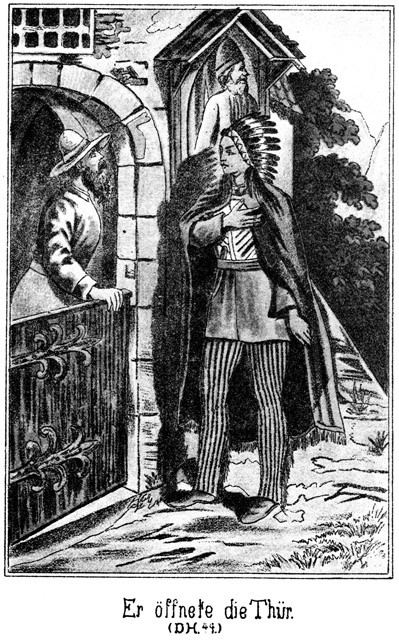Als dieser ihn sah, blieb er stehen, legte grüßend die Hand auf das Herz und sagte:
»Darf ich Deinen Namen hören?«
»Steinbach.«
»Warum soll der flinke Hirsch dieses fremde Wort aussprechen, wenn er Dich rufen will?«
»Denkst Du, daß es ein besseres giebt?«
»Ja.«
»Welches?«
»Tan-ni-kay.«
»Wie? Du hältst mich für den Fürsten der Bleichgesichter?«
»Du bist es, oder Du bist ein Dieb.«
»Wieso?«
»Starke Hand, der berühmte Häuptling, giebt das berühmteste Pferd der Apachen nicht einem gewöhnlichen Manne. Das dicke Bleichgesicht will ein kluger Mann sein, und doch hielt es dieses Pferd hier für ein sehr schlechtes. Du hast den Hengst von der ›starken Hand‹ zum Geschenk erhalten?«
»Ja.«
»So bist Du der Häuptling der Bleichgesichter. Warum willst Du es mir verschweigen?«
»Nun gut, ich will es Dir eingestehen, aber sage den Andern nichts.«
»Mein Mund weiß zu schweigen.«
»Ich werde Dich dafür belohnen.«
»Der flinke Hirsch verlangt keine Belohnung dafür, daß er seine Pflicht erfüllt.«
»Und doch möchte ich Dir mein Wohlwollen erweisen, indem ich Dich wie einen Helden behandle.«
Aus dem schönen, dunklen Auge des rothen Jünglings brach ein Strahl hellster Freude. Er sagte:
»Der flinke Hirsch kann für Dich sterben, wenn Du es befiehlst.«
»Ich trachte nicht nach Deinem Leben. Du sollst vielmehr Ruhm haben und beneidet werden von den Bleichgesichtern, welche heute hier eingezogen sind. Sie wissen nicht, wer ich bin und halten mich für einen unerfahrenen Knaben. Dafür will ich sie beschämen. Dieses Haus wird heute Abend von weißen Feinden überfallen werden. Nur drei Personen werden es vertheidigen: der Fürst der Bleichgesichter, die starke Hand und der flinke Hirsch. Willst Du?«
Da griff der Hirsch nach Steinbach's Hand und zog sie an seine Brust, ein außerordentlich hohes und ebenso seltenes Zeichen seiner dankbaren Ehrerbietung. Er antwortete:
»Bring tausend Feinde und ich kämpfe mit ihnen!«
»Ich weiß, daß Du tapfer und klug bist. Als die starke Hand fortzog, hat sie Dich zum Beschützer der Taube des Urwaldes bestellt. Das wäre nicht geschehen, wenn Du es nicht verdientest. Gehe jetzt in den Stall und fertige Knebel für ungefähr zweimal fünf Feinde. Wir fangen sie lebendig. Aber, lasse es jetzt noch Niemanden bemerken!«
Der Indianer ging. Sein Gesicht war ernst und unbewegt. Innerlich aber empfand er über die ihm gewordene Auszeichnung eine Freude, welche es ihm schwer machte, ruhig zu erscheinen.
Steinbach trat hinaus und schritt zur Ecke des Gebäudes. Vorsichtig um dieselbe lugend, gewahrte er, daß Newton zu seinem Fenster heraussah. Unter demselben und nicht allein dort, sondern längs der Mauer hin wuchs ein dichtes Gebüsch, ganz prächtig zu einem Verstecke geeignet.
Er hatte genug gesehen und kehrte in das Innere des Gebäudes zurück, welches er nun in allen seinen oberen Theilen durchwanderte, um die Einrichtung desselben kennen zu lernen.
Mittlerweile wurde es Abend. Man brannte im Speisezimmer Licht an und dann wurden mächtige Fleischstücke geholt, um als Abendbrot gegessen zu werden. Steinbach wartete bis auch Newton dort erschienen war, und begab sich nun wieder vor das Haus, um die Ecke und bis an das betreffende Fenster. Nicht unmittelbar unter demselben, sondern ein Wenig seitwärts schnitt er von den Büschen die hart an der Mauer befindlichen Aeste aus, ganz unten tief am Boden weg. Die Aeußeren ließ er stehen. Dadurch entstand an der Mauer ein leerer Raum für ein sehr bequemes Versteck. Die abgeschnittenen Zweige entfernte er, so daß sie von keinem Unberufenen bemerkt werden konnten. Dann kehrte er wieder in das Gebäude zurück und gesellte sich zu den übrigen Tischgenossen.
Bei diesen herrschte eine äußerlich fröhliche, eigentlich aber gedrückte Stimmung. Es ist ja stets unangenehm, mit einem Menschen freundlich verkehren zu sollen, von welchem man eine ganz entgegengesetzte Meinung hat.
Wie bereits gesagt, besaß das Haus in seinen Fensteröffnungen nur ganz wenig Glas. Die Luft hatte freien Zutritt, und alle Geräusche der nächtlichen Natur wurden hörbar. Sehr bald bemerkte Steinbach, welcher Newton scharf beobachtete, an diesem Letzteren eine nur mühsam unterdrückte Unruhe. Das war das sichere Zeichen, daß er jetzt Jemand erwarte, und sich jedenfalls sehr bald entfernen werde. Steinbach mußte vorher in seinem Verstecke sein, sonst hätte sein Nahen von Newton vom Fenster aus bemerkt werden können. Er ging also unter einem plausiblen Vorwande hinaus. Seine Entfernung fiel Keinem auf. Nicht einmal Newton dachte sich etwas dabei.
Jetzt, da es Abend war und der Feind sich jedenfalls in unmittelbarer Nähe befand, konnte das Thor nicht aufgelassen werden. Steinbach nahm sich also die alte Indianerin mit, verbot ihr, irgend Jemandem zu sagen, daß er hinausgegangen sei und wies sie an, hinter ihm zu verschließen und zu warten, bis, er klopfen werde und ihn schnell wieder einzulassen. Dann begab er sich um die Ecke, schob die stehen gelassenen Zweige auseinander und setzte sich hinter denselben an der Mauer nieder.
Es war grad die rechte Zeit gewesen. Er hatte nicht lange zu warten, so hörte er den lauten, brüllenden Ruf eines Ochsenfrosches. Er als Westmann hörte sogleich, daß dieser imitirte Laut aus einer menschlichen Kehle kam. Er war neugierig, wie Newton darauf antworten werde, und blickte nach oben, kein Auge von dort verwendend. Mit der Stimme konnte die Antwort nicht erfolgen, da dieselbe sonst von Anderen gehört und dadurch der Anschlag verrathen worden wäre.
Er hatte ganz richtig geurtheilt. Der Ruf ertönte zum zweiten, zum dritten Male und dann flammte als Antwort oben am Fenster ein Flämmchen blitzschnell auf, als ob eine kleine Quantität Pulver angezündet worden wäre.
Damit hatte Newton gezeigt, an welchem Fenster er sich befinde.
Nur wenige Secunden später kam eine dunkle Gestalt lautlos herbeigeschlichen und drückte sich grad unterhalb des Fensters in das Gesträuch hinein, um in demselben Deckung zu finden und von einem sich zufällig Nahenden nicht bemerkt zu werden.
Wie gut also, daß Steinbach sich sein Versteck seitwärts und nicht grad unter dem Fenster gewählt hatte! Der Mann stand so, daß Steinbach ihn hätte mit der Hand ganz bequem an den Beinen fassen können.
»Pst!« machte er es.
Oben schien Newton zu lauschen.
»Pst!« wurde wiederholt.
Newton hatte schon damals, als er in Constantinopel den Dolmetscher nach dem Namen von Eagle-nest's Yacht gefragt hatte, nicht englisch verstanden. Heute hatte er einige Worte gebrochenes Englisch gesprochen. In demselben gebrochenen Englisch fragte er jetzt von oben herab:
»Wer ist da?«
»Burkers selbst. Gut angekommen?«
»Ja.«
»Gut und nicht gut, wie man es nimmt.«
»Warum?«
»Gut, weil keine Indianer da sind, und – –«
»Ah! So ist die Taube mit ihrem Vater allein?«
»Nein. Das ist eben Das, was ich nicht gut nenne. Es sind weiße Jäger angekommen.«
»Donnerwetter! Wie viele?«
»Fünf mit zwei Frauen.«
»Sind es bekannte Namen?«
»Ja, nämlich der dicke Sam Barth mit seinen Freunden Jim und Tim – –«
»Gott sei Dank! Sind diese Kerls hier! Das ist mir ungeheuer lieb Da kann ich sie für damals bezahlen! Wer noch?«
»Ein Euch Fremder, der aber mich genau kennt, obgleich er es leugnet. Er ist mein Todfeind und darum müßt Ihr ihn mir überlassen!«
»Er ist Dein. Mache mit ihm, was Du willst!«
»Er wird an den Marterpfahl gebunden. Sodann die andern Vier, welche Ihr nicht vermuthen werdet, nämlich der deutsche Förster Rothe mit Sohn, Frau und Schwägerin.«
»Himmeldonnerwetter! Ist das möglich?«
»Sam Barth hat sie getroffen und mit hierher genommen. Weshalb, das weiß ich nicht.«
»So steckt eine Schurkerei gegen uns dahinter.«
»Wohl nicht. Ich hätte das bemerken müssen. Sie sind Alle ahnungslos.«
»Will es hoffen. Wer ist also noch da?«
»Die Taube, ihr Vater und eine alte Indianerin als Thorhüterin.«
»Das ist sehr schön von diesen Leuten. Wir sind ihnen vollständig gewachsen. Wie gut, wie sehr gut, daß ich Dich geschickt habe! Wäre ein Anderer gekommen, so hätten diese verdammten Förstersleute ihn natürlich erkannt und festgenommen. Da wäre uns unser Brod gebacken gewesen. Wie sind diese Kerls denn bewaffnet?«
»Sam, Jim, Tim und die beiden Rothe haben Büchsen. Aber die stehen in der großen Stube in der Ecke und werden uns nicht gefährlich. Der, welchen ich für mich haben will, scheint gar kein Gewehr zu besitzen, was mir eigentlich räthselhaft ist.«
»Ist er ein Amerikaner?«
»Nein, sondern ein Deutscher.«
»Hole ihn der Teufel! Diese Deutschen haben gewöhnlich sehr gute Fäuste. Kannst Du das Thor aufmachen?«
»Nein. Das würde auffallen. Die alte Indianerin soll ein wahrer Drache sein.«
»Gieb ihr Eins über den Kopf.«
»Da schreit sie und macht die Männer aufmerksam.«
»Verdammt! Wie aber kommen wir hinein?«
»Sehr leicht und gut. Ich lasse mein Lasso hinab und Ihr klettert daran Alle empor zu mir.«
»Ein Lasso ist zu dünn. Es reißt zwar nicht, aber man kann es nicht fassen, ohne daß es in die Hände schneidet.«
»So nehmen wir mehrere Lassos zusammen, die ich an dem meinigen heraufziehe. Wenn Ihr Alle oben seid, gehe ich vor Euch zu den Kerls und stelle mich so, daß sie nicht zu den Gewehren können. Denn das werden sie thun wollen, wenn sie Euch sehen.«
»Schön! Ich freue mich schon vorher auf den dicken Sam und auf die beiden Dürren. Die sollen vor Schmerzen wimmern, daß es von hier bis New-York zu hören ist. Sie sind es, die uns damals an den Strick liefern wollten. Aber wann paßt es?«
»Wann denkt Ihr denn?«
»Nur nicht zu spät. Sonst könnten uns die dreihundert Maricopas, wegen denen Walker Dich uns entgegenschickte, zuvorkommen. Sie wollen die Taube des Urwaldes überfallen und an den Marterpfahl bringen, und die hier aufgehäuften Schätze der Comanchen und Apachen holen. Vielleicht können sie schon morgen Mittag hier sein. Wir müssen also bis dahin vollständige Arbeit gemacht haben. Da fällt mir ein: Walker hat wohl gesagt, daß diese Maricopas ein Frauenzimmer mit sich führen, um sie hier auf den Häuptlingsgräbern zu verbrennen, aber zu sagen, wer sie ist, das hat er vergessen.«
»Er weiß es selbst nicht. Es ist eine Weiße.«
»Verdammt! Jung oder alt?«
»Ich kann es nicht sagen.«
»Na, uns kann es ja gleichgiltig sein. Wenn wir nur vorher ausgeräumt haben. Ist nicht von den Schätzen gesprochen worden, die sich hier befinden?«
»Kein Wort.«
»Man wird sie nicht verrathen wollen; aber ich zwicke den Kerls jedes Fingerglied einzeln ab, bis sie gestehen. Wir können nicht länger warten als bis um Mitternacht.«
»Gut! So werde ich Punkt zwölf Uhr hier am Fenster sein.«
»Du mußt aber bis dahin bei ihnen bleiben, damit sie hübsch beisammen sind. Da werden wir sie überrumpeln. Wenn aber ein Jeder in seine Zelle geht und seine Waffen mit sich nimmt, würden wir schwierige und gefährliche Arbeit haben. Freilich, wenn Du in der Stube bist, kannst Du nicht an dem Stande der Sterne sehen, ob es Mitternacht ist.«
»Das habe ich auch nicht nöthig. Da, wo wir sitzen, giebt es eine alte Holzuhr, vielleicht noch von der Zeit der Mönche her. Da habe ich also die Zeit am Bequemsten.«
»Schön! So wären wir also fertig. Oder hast Du mir noch Etwas zu sagen?«
»Nein – oder doch, ja, grad die Hauptsache! Wißt Ihr, wer der Vater der Taube ist?«
»Nun? Kennst Du ihn etwa?«
»Nein; aber den Namen habe ich gehört. Ob es vielleicht Der ist, mit dem Ihr auch schon zu thun hattet? Er heißt Wilkins.«
»Donnerwetter! Etwa von Wilkinsfield?«
»Das weiß ich nicht. Ich habe nur aus einigen unvorsichtigen Worten erlauscht, daß er wegen Mordversuchs hat fliehen müssen und lange Zeit nach irgend Wem hier im Westen herumgesucht hat.«
»Tod und Teufel! Er ists, er ists! Na, freue Dich, Alter! Dich braten wir lebendig. Und zuvor sollst Du zusehen, daß Deine Tochter bei uns reihum geht. Wie entzückt wird Walker sein! Der Fang, welchen wir hier machen, wird besser und werthvoller, als ich gedacht habe. Es wird mich doch Niemand hier gesehen haben.«
»Nein. Es sind Alle beisammen. Die alte Indianerin müßte sich hier herumschleichen.«
»Diese alten Hexen verstehen das nur zu gut. Zur Sicherheit bleibst Du noch eine Weile am Fenster und passest auf, ob sich Etwas regt. Ich werde nach zehn Minuten den Ruf des Frosches nachahmen; antwortest Du mit Pulver, so ist Alles gut; antwortest Du aber nicht, so giebt es Gefahr.«
Er entfernte sich.
Auch Steinbach mußte fort, um früher als Newton in die Stube zu kommen. Er war erfahren und geschickt genug, ohne das geringste Geräusch aus dem Versteck herauszukommen. Dann kroch er, lang am Boden ausgestreckt, um von oben nicht bemerkt zu werden, längs der Mauer und des Gesträuches hin. Erst als er hinter der Ecke angekommen war, erhob er sich wieder.
Als er das Thor erreichte, stand an demselben eine hohe breite Gestalt. Sie flüsterte:
»Mein weißer Bruder hat gelauscht. Hat er die Worte der Uebelthäter gehört?«
»Ja.«
»Die starke Hand hat sie verfolgt bis hierher. Soll ich mit in das Gebäude gehen?«
»Ja, aber nicht mit hinauf zu den Bleichgesichtern, sondern in die Stube, in welcher Dein Neffe flinker Hirsch sich befindet. Wir Drei allein werden die Räuber empfangen.«
»Uff! So ists gut!«
Dieser Indianer war also die berühmte ›starke Hand‹. Er und Steinbach hatten den rothen Burkers mit seiner Schaar nicht ereilt, aber aus den Fährten gesehen, daß das Unternehmen heute Abend vor sich gehen werde. Darum war Steinbach voraus geeilt, um nach dem Stande der Dinge zu sehen und die ›starke Hand‹ dann hier zu treffen.
Die Indianerin öffnete, als geklopft wurde, und war erfreut, den großen Krieger zu sehen. Dieser verschwand sofort in der abgelegenen Kammer seines Neffen. Steinbach aber begab sich hinauf in das Speisezimmer, wo die Insassen desselben sich lebhaft unterhielten.
»Die Uhr um eine Stunde zurück,« flüsterte er Wilkins zu.
Dann nahm er recht lebhaft am Gespräch theil, um die Aufmerksamkeit der Anderen von der Uhr weg auf sich zu lenken. Es gelang ihm auch. Er wollte gern alle unnöthigen Fragen vermeiden.
Nach kurzer Zeit hörte man draußen den Schrei des Ochsenfrosches und wenige Secunden später trat Newton wieder ein. Er blickte nicht nach der Uhr und bemerkte also auch nicht, daß sie weiter zurückstand als vorhin, da er den Raum verlassen hatte.
Es wurden allerlei Jagdabenteuer erzählt. So verging die Zeit ziemlich schnell. Newton drehte sich später zwar einmal nach der Uhr um, zeigte aber über den Stand der Zeiger nicht die geringste Täuschung. Als dieselben fünf Minuten vor Elf zeigten und es also ebenso viel vor Zwölf war, ging Steinbach hinaus und hinab zu den beiden Indianern. Er fragte:
»Die Bleichgesichter wollen durch das Fenster kommen. Werden wir sie geräuschlos überwältigen können?«
»Die ›starke Hand‹ antwortete:
»Hier stehen keine Knaben, sondern Männer! Der flinke Hirsch hat Riemen und Knebel besorgt. Es wird Alles sehr schnell gehen. Mein weißer Bruder wird am Fenster sein; die ›starke Hand‹ wird den Eingestiegenen empfangen; der ›flinke Hirsch‹ wird ihn fesseln und ein Jeder wird sofort nach der Kammer getragen, welche gegenüber liegt.«
»So kommt!«
Sie schlichen sich lautlos aus dem Hofe hinauf in Newtons Gastraum. Die gegenüber liegende Thür wurde vorsorglicher Weise schon jetzt geöffnet, dann warteten sie. Keinem klopfte das Herz schneller als gewöhnlich. Wenigstens die beiden Männer waren an noch ganz andere Gefahren gewöhnt, und der braune Jüngling war ja ein angehender Held.
Nach kurzer Zeit hörte Steinbach das Zeichen:
»Pst!«
»Er sah hinaus. Unten stand Einer.
»Ich bin da,« flüsterte er.
»Alles in Ordnung?«
»Alles.«
Ein zweites »Pst« nach rückwärts und die ahnungslosen Kerls kamen herbei.
»Dein Lasso herab!« sagte Burkers unten.
Steinbach ließ das seinige herab und zog an demselben noch drei andere heran. Diese vier waren stark genug zum Daranemporklettern. Natürlich war Burkers der Erste, welcher kam. Als er sich noch auf der Fensterbrüstung befand, sagte er:
»So, das ist der erste Schritt zu dem Golde und der Rache, welche wir hier finden werden. Hast Du das Lasso in der Hand gehalten?«
»Nein, angebunden,« antwortete Steinbach flüsternd, weil alle Stimmen im Flüstern ziemlich gleich klingen.
»Recht so! In der Hand halten, das ist zu schwer.«
Er stieg vom Fenster herab. Steinbach hatte das Lasso wirklich an einem starken Haken befestigt, der in der Mauer stak. Daher hatte er die Hände frei. Er legte sie dem nichtsahnenden Burkers um die Gurgel und drückte diese so zusammen, daß der tödtlich erschrockene Mann wohl den Mund weit aufsperrte, aber keinen Laut ausstoßen konnte. Einen Faustschlag an die Schläfe, einen Knebel in den aufgesperrten Mund, einen Riemen je um Arme und Beine – das Alles war für diese Drei das Werk weniger Augenblicke! Burkers lag schon in der anderen Kammer, ehe der Zweite heraufkam.
Ganz in derselben Weise wurden sie Alle außer dem Letzten empfangen. Keiner hatte seine Büchse mit gehabt. Jetzt rief dieser Letzte mit unterdrückter Stimme von unten:
»Pst! Nun erst die Gewehre empor, ehe ich komme. Ich binde sie unten mit dem Lasso zusammen.«
Das geschah. Sie wurden emporgezogen und sodann folgte auch dieser Mann nach, dem es natürlich ganz ebenso ging wie den Anderen.
Jetzt holte der »flinke Hirsch« vor allen Dingen ein Licht, damit die Gefangenen beobachtet werden konnten. Einige waren noch bewußtlos. Andere hatten ihre Besinnung wieder erlangt, konnten aber weder sprechen, noch sich bewegen. Der rothe Burkers hatte die Augen offen und hielt sie mit grimmigem Blicke auf die Drei gerichtet.
»Ich bin der »Fürst der Bleichgesichter«,« sagte Steinbach zu ihm, »und hier stehen die »starke Hand« und der »flinke Hirsch«. Ihr sollt genau so behandelt werden, wie Ihr die Bewohner dieses Hauses behandeln wolltet. Euer Schicksal ist schon jetzt besiegelt. Wir zwar werden Euch nicht tödten, aber wir geben Euch in die Hände der heranziehenden Maricopas.«
Der Anführer der Buschheaders war bei der Nennung der Namen tief erschrocken. Er schloß die Augen, er wollte nichts mehr sehen.
Steinbach überließ sie der Bewachung der beiden Indianer und entfernte sich. Als er zur Gesellschaft zurückkehrte, stand die Uhr doch bereits über halb Zwölf; es war also eine halbe Stunde vergangen.
Newton war unterdessen nach seinen Erlebnissen in der Türkei gefragt worden und hatte erzählt, was ihm gerade eingefallen war. Er berichtete von verschiedenen Bekanntschaften, welche er gemacht hatte. Da fragte Steinbach, der die Zeit nun ja für gekommen hielt:
»Master Newton, habt Ihr auch Ausländer kennen gelernt?«
»Viele.«
»Vielleicht einen Lord Eagle-nest?«
»Nein,« antwortete er erbleichend.
»Einen Norman Effendi und Wallert Effendi?«
»Auch nicht.«
»Ist Euch ein Ibrahim-Pascha bekannt?«
Jetzt hatte sich die Farblosigkeit seines Gesichtes in glühende Röthe verwandelt.
»Oder eine gewisse Zykyma, Gikala und Tschita?«
»Ich weiß nicht, was Ihr wollt!«
»O, ich will Euch nur sagen, daß vom Derwisch bis zum Prairiejäger ein ungeheurer Sprung ist, ein Sprung, der wohl noch niemals im Leben vorgekommen ist.«
»Derwisch? Was meint Ihr denn?«
»Verstellt Euch doch nicht! Ihr wißt ebenso gut wie ich, daß Ihr zu den heulenden Derwischen gehört habt.«
»Ich? Welch ein Irrthum!«
»Na, Mann, wollen es kurz machen! Ich habe nicht Lust, mich länger als nöthig mit so einem Schuft zu unterhalten. Ich bin in Wirklichkeit der Steinbach-Effendi, den Du in der Türkei gesehen hast. Ich kenne Dein ganzes Thun und Treiben und kann nicht begreifen, wie Du aus Tunis entkommen, bist, wo Du doch des Mordversuches an dem Herrscher angeklagt warst.«
Der Derwisch glaubte jetzt, Frechheit sei seine einzige Rettung. Er schlug mit der Hand auf den Tisch und rief in zornigem Tone:
»Himmeldonnerwetter! Das ist doch zu arg! Ein Derwisch soll ich sein und ein Mörder? Master Steinbach, wenn Ihr mir das noch einmal sagt, so habt Ihr es mit mir zu thun!«
»O, ich habe es schon jetzt mit Dir zu thun und werde schnell mit Dir fertig werden, mein Bürschchen. Ich sehe, daß diese Mesch'schurs ganz erstaunt sind über das, was wir sprechen. Sie wissen eben nicht, was früher geschehen ist. Darum wollen wir von Deinen türkischen Abenteuern lieber schweigen und zunächst von Deinen hiesigen reden.«
»Da bin ich neugierig!« sagte der Derwisch. »Ich wüßte nicht, von welchen Abenteuern die Rede sein könnte.«
»Nicht? Nun, ein sehr interessantes soll ja punkt zwölf Uhr losgehen. Es fehlen nur noch zehn Minuten. Es wird also Zeit, daß Du in Deine Kammer gehst, um den rothen Burkers mit seinen Leuten einsteigen zu lassen.«
»Was?« rief Sam. »Der Rothe will einsteigen? Heute Abend?«
»Ja, mit Hilfe dieses Eures Freundes.«
»Wenn das bewiesen werden kann, so werden wir wenig Federlesens mit diesem Master Newton und Florin machen!«
»Es ist Lüge!« rief der Derwisch, die Hand an das Messer legend und eine leise, unbemerkt sein sollende Wendung nach der Thür machend. Er merkte, daß Alles verrathen sei. Sein einziges Heil lag in der Flucht, die er sich nöthigen Falles mit dem Messer bahnen wollte.
Steinbach merkte diese Absicht. Er wollte sich ihm in den Weg stellen, sah aber, daß die Thür um eine kleine Lücke geöffnet war, durch welche ein dunkles, blitzendes Auge herein funkelte. Der Mensch konnte nicht entkommen. »Er nennt es Lüge,« sagte Sam. »Master Steinbach, könnt Ihr beweisen, daß es wahr ist?«
»Ja. Er sah vorhin zum Fenster hinaus und besprach mit dem Rothen, welcher unten stand, den ganzen Plan. Ich aber saß nebenan und hörte ein jedes Wort. Punkt Zwölf soll es losgehen.«
»Himmelkreuzelement! Kerl, ich hacke Dich in Stücke und koche Stiefelschmiere daraus!«
Er fuhr mit beiden Fäusten auf den Menschen los, dieser machte einen Seitensprung und eilte auf die Thür zu, prallte aber zurück.
Die »starke Hand« war schnell eingetreten und hielt ihm die blitzende Klinge entgegen, ohne aber ein einziges Wort zu sagen. Steinbach aber faßte sein Handgelenk mit solcher Kraft, daß er einen lauten Schmerzensschrei ausstieß und das Messer fallen ließ.
»Hallunke, willst Du etwa noch leugnen?« rief er ihm zu.
»Ich bin unschuldig!« behauptete der Gefragte.
Er verließ sich darauf, daß er nicht am Fenster war und seine Helfershelfer also nicht heraufkamen; also konnte ihm doch nichts bewiesen werden.
»Nun, wir wollen Dir den Beweis gleich beibringen. Du bist mir bereits so oft schon entschlüpft, jetzt aber werde ich Dich festhalten. Master Sam, habt doch einmal die Güte, ihm das Lasso so um den Leib zu wickeln, daß er die Arme nicht bewegen kann.«
»Gleich, gleich, Sir!« antwortete der Dicke, indem er schnell hinzutrat.
Newton protestirte in Worten und wollte sich sogar wehren, vermochte aber gegen die Riesenkräfte Steinbach's nichts. Als er gefesselt war, sagte dieser Letztere zu den Anderen:
»Jetzt nehmt ihn mit Euch und folgt der »starken Hand« hier. Der tapfere Häuptling wird Euch dahin führen, wo der Beweis der Schuld mit Händen zu greifen ist.«
»Die starke Hand?« rief Sam erstaunend.
»Ja, Master, Euch widerfährt heute das große Heil, den berühmtesten und tapfersten Häuptling aus Amerika und den dümmsten Weißen aus Herlasgrün, als Letzteren nämlich mich, kennen zu lernen. Dieses Letztere werdet Ihr allerdings für keine große Ehre halten, wie mir scheint.«
»Ja, viel Ehre kann man mit Euch nicht einlegen,« antwortete der Dicke. »Das Andere aber lasse ich mir desto eher gefallen. Also dieser rothe Master ist wirklich der große Häuptling? Oder macht Ihr nur Spaß?«
»Er ist es.«
»So muß ich ihm auf der Stelle meine Hand geben. Man ist zwar nur in Herlasgrün geboren, aber man hat sich dennoch genug Conduite angeeignet, um zu wissen, wie man einen so berühmten Krieger zu begrüßen hat.«
Er ging auf die »starke Hand« zu, streckte ihm die Rechte entgegen, nickte ihm freundlich zu und sagte:
»Der große Häuptling der Apachen sei willkommen am Silbersee. Ich freue mich, ihn zu sehen!«
Der Indianer blieb trotz der freundlichen Miene des Dicken ernsthaft, drückte ihm die Hand und antwortete:
»Die ›starke Hand‹ ist am Silbersee zu Hause. Er ist es, der sich freut, Entschar-til willkommen zu heißen.«
Sam drehte sich zu den Anderen um und sagte:
»Entschar-til? Ich kenne das Wort nicht. Was mag es heißen und wen mag er meinen?«
Da antwortete Steinbach lachend:
»Entschar-til heißt der große Bauch, der dicke Bauch. Seht Euch an, Master Sam, so werdet Ihr gleich wissen, wen er gemeint hat.«
»Donnerwetter! Mich gleich so zu nennen! Diese Apachen sind sehr schnell im Namen geben.«
»O, den giebt er Euch nicht erst jetzt. Sämmtliche Apachen nennen Euch nicht anders als Entschar-til, den dicken Bauch.«
»Das habe ich noch gar nicht gewußt. Wenn sie mich so nennen, muß ich doch ein ihnen sehr bekannter Kerl sein.«
»Na, ich will Euch aufrichtig sagen, daß Ihr weiter bekannt seid, als Ihr vielleicht denkt. Ihr seid ein berühmter Mann, ob wegen Eurer Verdienste oder wegen Eures dicken Bauches, das will ich nicht untersuchen.«
»Das ist auch nicht nöthig. Ihr braucht Euch gar keine Mühe zu geben. Der Grund ist gleichgiltig, wenn ich nur berühmt bin. Ihr freilich werdet niemals eine Berühmtheit erlangen, weder wegen eines dicken Bauches, noch wegen Eurer Tapferkeit. Das ist der Unterschied zwischen Euch und mir.«
Diese Worte waren in englischer Sprache gesprochen, und da der große Häuptling der Letzteren mächtig war, so hatte er sie verstanden. Er richtete einen kurzen, fragenden Blick auf Steinbach, und da dieser leise mit dem Kopfe schüttelte, so sagte er zu Sam:
»Mein weißer Bruder Steinbach ist zwar kein großer Krieger und Jäger, aber er hat keine Furcht und wird bald berühmt werden unter den Männern des Westens.«
»Der? Da irrt sich die ›starke Hand‹. Ich habe noch niemals einen berühmten Rafter gekannt. Aber wir haben jetzt Notwendigeres zu thun. Ihr wolltet uns doch irgend wohin führen, um uns den Beweis zu liefern, daß dieser Mann hier schuldig ist.«
»Kommt!« sagte die »starke Hand« und schritt voran.
Die Anderen folgten. Als sie die Kammer erreichten und da die Gefangenen erblickten, welche vom ›flinken Hirsch‹ bewacht worden waren gerieten sie freilich in das allergrößte Erstaunen.
»Gefangene!« rief Wilkins. »Gebunden und gefesselt, also ohne unser Wissen und unseren Beistand besiegt und überwältigt. Wer hat das gethan?«
»Es bedarf nicht vieler Männer, solche Kröten zu fangen,« antwortete der Häuptling stolz. »Meine weißen Brüder saßen so schön in der Stube, und da wollten wir sie nicht stören dieses Burkers wegen.«
»Burkers? Ah! Wo?«
Der »flinke Hirsch« leuchtete dem Genannten in's Gesicht.
»Himmelsapperment! Ja, das ist der Kerl!« rief Sam. »Na, freue Dich, Bruder Straubinger, daß wir Dich haben! Dir wollen wir das Leder versohlen, daß Du alle sechzigtausend Brautjungfern singen hören sollst. Er ist es, er und seine ganze Bande! Das ist ja ein Fang, ein Meisterstück! Wie ist denn dieser angenehme Besuch herein gekommen?«
»Durch das Fenster,« antwortete der Häuptling. »Der »flinke Hirsch« und mein Bruder Steinbach haben sie empfangen und mit Riemen gebunden. Sie sind unser Eigenthum, wir aber geben sie in Eure Hände.«
Sam stellte sich gerade vor Steinbach hin, sah ihn vom Kopfe bis zu den Füßen an und fragte:
»Also Ihr, Ihr seid dabei gewesen? Ist das wahr?«
»Ja,« nickte der Gefragte.
»Wer hätte das gedacht! Wer hätte Euch das zugetraut! Ich im ganzen Leben nicht!«
»Na, es ist auch nichts dabei. Diese beiden Indianer haben Alles gethan, ich habe ihnen nur dabei geleuchtet.«
»Also das Licht gehalten?«
»Ja.«
»Während sie die Kerls gefangen nahmen?«
»Ja.«
»Na, das begreife ich, das will ich glauben. Ihr seid zwar lang und breit und stark genug, aber doch nur ein Neuling. Und eine Bande solcher Hallunken zu überlisten, dazu gehört doch viel mehr als blose Körperkraft. Wie aber hat die »starke Hand« es angefangen, die Buschheaders herein zu locken und fest zu nehmen?«
»Sie sind selbst herein gekommen. Mein dicker Bruder, frage nicht weiter. Es ist nicht schwer, Mücken zu fangen, welche durch das Fenster kommen. Wir übergeben sie Euch. Thut mit ihnen, was Ihr wollt!«
Er gab keine weitere Erklärung, weil er bemerkte, daß es Steinbach Spaß mache, für einen Neuling gehalten zu werden. Sam begnügte sich einstweilen damit. Er wendete sich an Wilkins:
»Diese Hallunken sind in Eurem Hause, Euch haben sie überfallen wollen; Ihr seid es also eigentlich, der zu bestimmen hat, was mit ihnen geschehen soll.«
Wilkins blickte sich verlegen um. Steinbach hatte auf ihn einen bedeutenden Eindruck gemacht, obgleich auch er ihn nicht für einen erfahrenen Westmann hielt. Darum gab er seine Antwort an diesen ab:
»Was rathet Ihr, Master Steinbach?«
»Ich rathe, Euch nicht zu übereilen. Giebt es hier nicht einen Raum, in welchem wir diese Kerls so verwahren können, daß ihnen die Flucht unmöglich ist?«
»O, mehrere! Diejenigen, welche die Mission bauten, hatten sämmtliche Indianerhorden zum Feinde; sie mußten sich auf Kampf und Vertheidigung gefaßt machen und haben auch für Gefängnisse gesorgt, welche so fest und stark gebaut wurden, daß sie sich heute noch im besten Zustande befinden. Sie liegen unter der Erde im Keller.«
»Das ist gut. Wir werden diesen ehrenwerthen Herren dort Quartier geben. Einen aber trennen wir von ihnen; den beanspruche ich für mich, denn ich habe eine sehr dringliche Privatangelegenheit mit ihm zu erledigen.«
»Ihr meint diesen Newton hier?«
»Ja. Habt Ihr nicht ein Gefängniß hier apart für ihn?«
»Freilich. Ihr könnt die verschiedenartigsten Lokalitäten bekommen, klein, groß, hoch, niedrig, trocken, naß, ganz wie es Euch beliebt.«
»Na,« fiel da Sam ein, »gar zu bequem wollen wir es den Mesch'schurs nicht machen. Wir nehmen das niedrigste und feuchteste Gewölbe. Sie haben uns heiß machen wollen, und da wollen wir sie abkühlen. Und was die Verpflegung betrifft, so schlage ich vor, wir geben ihnen Austern, Trüffeln, indianische Vogelnester und Champagner, so viel ihr Herz begehrt. Vorher aber möchte ich ein Wort mit diesem allerliebsten Burkers sprechen.«
Er bückte sich nieder und nahm dem Genannten den Knebel aus dem Munde, ihn dabei fragend:
»Ihr kennt mich doch, nicht?«
Der Gefragte antwortete nicht. Da meinte Sam:
»Hört einmal, ich bin gewöhnt, eine Antwort zu erhalten, wenn ich frage. Gebt Ihr keine, so habe ich gewisse Mittelchen, Euch zur Sprache zu verhelfen. Also antwortet! Kennt Ihr mich?«
Er schnallte während dieser Worte den Lasso von der Hüfte ab und legte ihn mehrfach zusammen.
»Ja,« antwortete Burkers schnell.
»Schön so! Hättet Ihr nicht geantwortet, so hätte ich Euch diesen Riemen über das Gesicht gezogen. Mit solchen Leuten muß man nämlich vernünftig sprechen. Wer bin ich denn?«
»Sam Barth,« knirschte der Gefragte.
»Ja, und diese beiden Herren sind Jim und Tim Snaker, eine alte, gute Bekanntschaft von Wilkinsfield her, nicht? Ihr seid hierher gekommen, um die Schätze dieses Ortes zu holen?«
»Nein. Wir sind jetzt ehrliche Leute und wollten nur um Obdach bitten.«
»Und da steigt Ihr alle mit einander zum Fenster herein? Eine schöne Obdachbitterei! Und ehrliche Leute seid Ihr jetzt? Wunderbar! Was würde der Förster Rothe dazu sagen, wenn er es hörte!«
Es befand sich nämlich nur ein einziges Hirschtalglicht in der Kammer, so daß dieselbe nur ganz spärlich erleuchtet war. Wilkins, Steinbach, die beiden Indianer, Sam, Jim und Tim standen um die Gefangenen herum, der Förster mit seinem Sohne und seiner Frau nebst Schwägerin aber an der Thür. Diese Letzteren waren vom Lichte nicht getroffen, vom rothen Burkers also nicht gesehen worden.
Dieser Letztere aber wußte bereits durch die Mittheilungen des einstigen Derwisches, welche Steinbach ja belauscht hatte, daß Rothe mit seiner Familie anwesend sei. Er antwortete:
»Es war nur ein Scherz, welchen wir uns mit ihm machten.«
»Oho, ein Scherz!« rief Rothe, indem er sich herbeidrängte. »Giebt man ehrliche Leute zum Scherze dem Hungertode preis? Nimmt man ihnen nur zum Spaße ihr Geld und ihre ganze Habe? Wenn das ein Scherz war, gut, so mögt Ihr auch die Strafe, welcher Ihr nicht entgehen werdet, als Spaß betrachten. Uebrigens dürft Ihr nicht meinen, daß ich nur zufällig hier bin. Der »Fürst der Bleichgesichter« kennt Euren Schlupfwinkel und hat ihn uns verrathen. Wir sind im Thale bei den Wagen gewesen, haben sie verbrannt und das Geld unter dem linken Hinterrade des vorderen Wagens gefunden.«
»Verdammt!« entfuhr es dem rothen Burkers.
»Ja, und die beiden Wächter, die Ihr dort zurückgelassen habt, haben ihre Strafe bereits erhalten. Dann sind wir nach hier geritten, um das Wiedersehen mit Euch zu feiern. Ich hoffe, daß Ihr ganz entzückt darüber sein werdet.«
»Na, für das Entzücken werde ich schon sorgen,« sagte Sam, der Dicke. »Wie steht es denn eigentlich, Master Burkers, ist Euch nicht vielleicht ein ehrenwerther Sir bekannt, welcher sich Walker nennt?«
»Nein.«
»Hm! Er soll in Prescott wohnen?«
»Ich kenne ihn nicht.«
»Ah! Ihr kennt ihn nicht und empfangt doch Boten von ihm! Das ist doch sonderbar!«
»Ich weiß von keinem Boten Etwas.«
»Ist dieser Master Newton nicht von ihm zu Euch gesandt worden?«
»Nein.«
»Na, wir wissen das besser. Was Ihr nicht gesteht, werden uns Andere sagen. Ihr aber verschlimmert Euch durch Euer Verhalten nur Eure Lage. Wie steht es, Master Wilkins, wollen wir sie einstweilen einsperren, damit sie noch überlegen, ob sie mittheilsamer werden wollen oder nicht?«
»Ja,« antwortete Steinbach an Wilkins' Stelle. »Vorher aber möchte ich mir einmal die Gefängnisse betrachten.«
»Ihr? Hm! Das klingt ja gerade, als sei Euch hier der Oberbefehl zugefallen.«
Da sagte die »starke Hand« schnell:
»Man thue nach dem Willen meines weißen Bruders Steinbach. Ich will es so! Wir bleiben hier und er mag mit dem Vater der Taube gehen, um sich die Gewölbe anzusehen.«
Dieser Ausspruch des berühmten Häuptlings galt. Wilkins holte ein Licht und die Schlüssel und führte Steinbach nach den Kellerräumen.
»Der Häuptling scheint Euch ein großes Vertrauen zu schenken,« sagte er dabei. »Hat dies vielleicht einen besonderen Grund, Sir?«
»Nein; er will mir wohl, das ist Alles.«
»Darauf könnt Ihr stolz sein. Ein einfacher Holzfäller ist nicht leicht so glücklich, die Freundschaft eines solchen Helden zu erlangen.«
Da unten bei den eigentlichen Kellern, aber von diesen durch eine starke Thür getrennt, gab es mehrere verschieden hohe und verschieden große Räume, deren Wände ganz aus Quadern bestanden und deren mit Eisen beschlagene Thüren jedem Fluchtversuche den stärksten Widerstand entgegen setzten.
Der niedrigste dieser Räume war wie ein Loch. Ein Mensch konnte nicht stehen, sondern nur sitzen.
»Hier herein kommt Newton,« sagte Steinbach.
»Auf diesen müßt Ihr eine außerordentliche Pike haben, wie es scheint.«
»Er hat noch Schlimmeres verdient, als nur das. Ihr werdet es noch erfahren. Ich empfehle Euch in Beziehung auf ihn die allergrößte Strenge und Wachsamkeit an. Er darf auf keinen Fall entkommen. Als einstweilige Erklärung will ich, weil wir zu ausführlichen Erzählungen keine Zeit haben, Euch nur sagen, daß er als wahrhaft teuflischer Schurke an der Familie Eures früheren Oberaufsehers gehandelt hat.«
»Meint Ihr Adler?« fragte Wilkins erstaunt.
»Ja. Er hat dieser Familie ein wahrhaft höllisches Schicksal bereitet. Es ist ein außerordentlich glücklicher Fang, den wir mit ihm machen. Und daß er sich hier im Westen befindet, läßt mich hoffen, daß wir bald Etwas von Adler sehen oder wenigstens hören werden.«
»Mein Gott! Welch ein Zufall!«
»Es ist kein Zufall. Es thront über der Erde ein gerechter Gott, welcher die Gedanken und Füße der Menschen leitet. Er ist es, der diesen Schurken in unsere Hand gegeben hat. Jetzt aber weiter. Einen Raum für die Anderen.«
Wilkins schloß einige Thüren auf und Steinbach trat in die Gewölbe. Sie waren weit über Manneshöhe und boten nichts als die nackten Mauern. Auch der Boden bestand aus starken Steinen. Beim Scheine des Lichtes gewahrte Steinbach in der Mitte der Decke ein Loch. Er erkundigte sich:
»Dient dieses Loch der Ventilation?«
»Ja; es hat aber auch noch einen anderen Zweck. Es führt nämlich in ein kleines Parterregemach und ist dort durch einen Stein verdeckt. Hebt man denselben auf und legt das Ohr an das Loch, so hört man jedes Wort, welches hier gesprochen und selbst nur geflüstert wird.«
»Das ist von großem Vortheile für uns. Wir können da leicht erfahren, was sie uns verschweigen wollen. Eigentlich wollte ich Newton allein sperren, aber es kommt mir darauf an, zu erfahren, wo und wie ich Walker, der ihn geschickt hat, finden kann. Stecken wir ihn mit den Anderen zusammen, so werden sie davon sprechen und wir hören es. Also mag er mit ihnen hier eingeschlossen werden. Damit sie nicht errathen können, wo sie sich befinden, führen wir sie mit verbundenen Augen hierher. Aber da muß auch bereits ein Lauscher oben am Loche liegen.«
»Wer?«
»Hm! Es gilt heute, zu handeln. Zum Lauschen können wir nur Einen nehmen, der zu entbehren ist.«
»Den Förster oder seinen Sohn?«
»Nein. Beide sind des Englischen nicht recht mächtig und übrigens hier unbekannt. Die Gefangenen werden Namen bringen und über Verhältnisse sprechen, welche zu verstehen man Westmann sein muß. Ich werde den langen Tim an das Loch postiren.«
Sie begaben sich wieder nach oben. Dort fanden sie den dicken Sam noch dabei, die Gefangenen auszufragen. Er wollte soeben wissen, wo sie ihre Pferde stehen hätten. Sie sagten es ihm nicht.
»Mögen sie schweigen,« meinte der Häuptling. »Die »starke Hand« ist hinter ihnen her und weiß Alles. Sie haben einen Mann mit den Pferden bei den vier Cedern zurückgelassen, welche jenseits des Felsenrandes stehen. Ich werde sie holen und der »dicke Bauch« und die beiden Itseh werden mich begleiten.«
»Itseh? Was bedeutet das?« fragte Sam.
»Es bedeutet so viel wie Hölzer,« antwortete Steinbach lachend.
»Hölzer? Wen meint er damit?«
»Natürlich Jim und Tim.«
»Sapperment! Darauf könnt Ihr Euch viel einbilden, Ihr Zwei. Also Hölzer seid Ihr! Hm! Nicht übel! Gut, wir gehen mit.«
»Tim wird hier bleiben, ich brauche ihn.«
»Wozu? Ihr spielt wirklich den Kommandanten, Master Steinbach. Uebrigens, wie kommt Ihr denn dazu, zu wissen, was Itseh und Entschar-til bedeutet? Ich wußte es nicht, trotzdem ich mich gut auf Indianerdialect verstehe, und Ihr als Neuling wißt es. Das kann ich nicht begreifen!«
»Es hat mir einmal davon geträumt.«
»So! Also ein altes Traumbuch seid Ihr? Na, meinetwegen. Jetzt aber fort mit den Gefangenen!«
Tim wurde an seinen Posten placirt. Er entfernte den Stein, legte sich lang ausgestreckt auf den Boden hin und hielt das Ohr an das Loch. Dann wurden die Buschheaders in das Gewölbe geschafft und dort eingeschlossen.
Als Diejenigen, welche dies besorgt hatten, nach oben zurückkehrten, fanden sie Almy, die »Taube des Urwaldes«, ihrer wartend. Diese war gewöhnt, bereits früh am Abende die Ruhe zu suchen. Sie hatte dies auch heute gethan, war aber durch das in der Einsamkeit der Mission ungewöhnliche Geräusch wieder erweckt worden. Jetzt wollte sie sich nach der Ursache desselben erkundigen. Sie hatte erfahren, daß der rothe Burkers mit seinen Buschheaders kommen wolle, hatte aber, gerade wie die Anderen, nicht geglaubt, daß dies bereits heute geschehen werde. Darum war sie ganz sorglos zur Ruhe gegangen und zeigte sich nun nicht wenig erstaunt, als sie erfuhr, was geschehen sei.
Nun sollten die Pferde der Gefangenen geholt werden. An Tim's Stelle ging Steinbach mit. Es dauerte nicht lange, so brachte man die Thiere und den Mann dazu, welcher bei ihnen zurückgelassen worden war. Er wurde natürlich sogleich zu den Anderen eingesperrt.
Jetzt glaubte Wilkins alle Gefahr vorüber und erschrak nicht wenig, als er von Steinbach hörte, daß dreihundert Maricopa-Indianer im Anzuge seien. Steinbach mußte erzählen, wie er dies erfahren hatte. Als Sam das hörte, sagte er erstaunt:
»Wie? Was? Höre ich recht? Ihr, Master Steinbach, habt es gewagt, Euch unter das Fenster zu legen?«
»Wie Ihr hört, ja.«
»Und Ihr habt gewußt, daß die Kerls kommen würden?«
»Natürlich.«
»Seid Ihr denn bei Troste! Ihr, ein Neuling, wagt so Etwas! Wenn sie Euch nun kapanirt hätten!«
»So gefährlich war es doch nicht!«
»Nicht? Ja, da sieht man wieder einmal, wie dreist und unvorsichtig so ein Muttersöhnchen ist. Wenn ich es gethan hätte, so ließe ich es mir gefallen, ich bin doch der Kerl dazu, aber Ihr, da muß –«
»Na, beruhigt Euch! Es ist gelungen und damit wollen wir uns zufrieden geben.«
»Daß es gelungen ist, habt Ihr lediglich Eurem guten Glück zu verdanken. Ich werde aber dafür sorgen, daß so Etwas nicht wieder vorkommt. Erst müßt Ihr noch Vieles lernen, ehe man Euch solche verantwortliche Posten anvertrauen darf. Also die Maricopa's kommen! Mir soll es recht sein. Ich fürchte mich nicht vor ihnen. Aber, was wollen sie?«
»Sie wollen Zweierlei. Erstens haben sie eine Absicht auf die »Taube des Urwaldes« und auf die Schätze, welche sich am Silbersee befinden, und zweitens –«
Sam unterbrach ihn, sich an Wilkins wendend:
»Man spricht und hört so viel von diesen Schätzen. Ist denn etwas Wahres daran?«
»Man täuscht sich außerordentlich,« antwortete der Gefragte ausweichend.
»Nun, so mögen die rothen Herren kommen und sich holen, was nicht da ist. Und zweitens?«
»Zweitens wollen sie eine weiße Frau auf den Gräbern der Häuptlinge opfern.«
»Habt Ihr das wirklich gehört?« fragte Wilkins rasch.
»Jawohl.«
»Das kommt mir sonderbar vor. Der Silbersee ist der Friedens- und Begräbnißplatz berühmter Häuptlinge der Apachen und Comanchen. Die Krieger dieser beiden sich stets bekämpfenden Stämme sollen in Frieden hier neben einander ruhen. Ein Maricopa ist hier niemals begraben worden; also kann auch auf seinem Grabe nicht geopfert werden.«
»So opfern sie auf dem Grabe eines Apachen oder Comanchen,« meinte Sam.
»Unmöglich. Kein Indianer bringt dem todten Häuptlinge eines anderen Stammes irgend ein Opfer, zumal eines feindlichen Stammes. Die Maricopa's jagen am Gila und sind Blutsfeinde der Apachen und Comanchen. Das mit der weißen Frau muß einen anderen Grund und einen anderen Zweck haben.«
Da sagte die »starke Hand«:
»Die Hunde der Maricopa's sind aus ihren Löchern gekrochen, um die Gräber der Apachen zu besudeln und zu entehren. Das ist die größte Schande, welche man einem Stamme anthun kann. Die »starke Hand« wird diese Hunde mit der Peitsche zurücktreiben und ihrer so viele erschlagen, daß der Gila überfließen soll von ihrem Blute und von den Jammerthränen ihrer Weiber und Töchter. Ich gehe sogleich, ihnen entgegen zu reiten und zu sehen, wo sie ihr Lager aufgeschlagen haben.«
»Im Dunkeln!« sagte Sam erstaunt.
»Dem Häuptlinge der Apachen ist die Nacht wie der Tag,« sagte der Indianer stolz.
»Aber Du kennst ja die Richtung gar nicht, aus welcher sie kommen!«
»Blamirt Euch nicht, Master Sam!« meinte Steinbach.
»Blamiren? Ich? Mich? Was fällt Euch ein? So ein in Herlasgrün ausgebrütetes Ei kommt als grünes Küchlein herüber in das Felsengebirge und sagt zu so einem alten, erfahrenen Kampf- und Streithahne, daß er sich nicht blamiren solle. Das ist mir doch noch mehr als stark, das ist stärker, nein, das ist sogar am Stärksten, am Allerstärksten!«
»Nicht gar so sehr, wie Ihr denkt. Ihr kennt doch wohl die Maricopa-Indianer?«
»Jedenfalls besser als Ihr!«
»Nun, was sind sie denn für Leute?«
»Wollt Ihr mich etwa examiniren, oder soll ich Euch unterrichten, Sir?«
»Ich will unterrichtet sein, Master Sam.«
»Das will ich mir gefallen lassen. Wäre es das Erstere gewesen, so hättet Ihr keine Antwort erhalten, sondern etwas ganz Anderes. Also die Maricopa's werden mit zu den Pueblo-Indianern gerechnet, sind ein höchst kriegerischer Stamm und wohnen mit den ebenso gefährlichen Papago-Indianern am Gilaflusse. So, jetzt wißt Ihr es.«
»Ich danke Euch,« sagte Steinbach ernst. »Ihr seid wirklich der Mann, von dem man Etwas erfahren und lernen kann. Wenn nun die Maricopa's am Gila wohnen, so kommen sie also jetzt vom Gila her?«
»Natürlich! Das ist überhaupt eine höchst geistreiche Frage, mein bester Master Steinbach. Der Regen steckt in den Wolken, also muß er auch aus den Wolken kommen. Man merkt nicht, daß Ihr aus Herlasgrün stammt. So sehr dumm sind die Leute dort doch nicht!«
»Sehr verbunden! Ich meine nur, daß wir uns hier nördlich von den Quellen des Gila befinden, und darum denke ich, daß sich die Maricopa's nicht an der Südseite des Flusses gehalten haben werden.«
»Jedenfalls nicht, Herr Professor der Geographie. Da kämen sie nach Mexiko, nicht aber zu uns herauf.«
»Schön. Aber auf dieser Route liegt ihnen doch wohl Silver-City im Wege, wo sie sich nicht sehen lassen dürfen.«
»Das lassen sie rechts liegen.«
»Dann kommen sie ja nach Fort West, wo man ihnen sogleich den Garaus machen würde.«
»So weit gehen sie natürlich nicht. Sie lassen das Fort links liegen. Ihr freilich würdet entweder nach Silver-City oder nach Fort West rennen, um Euch dort die Nase einzustoßen; diese rothen Leute aber sind klüger als Ihr, sie reiten zwischen beiden hindurch.«
»Ja, ja, das ist wahr. Aber Ihr seid doch noch viel klüger als sie. Ihr seid ein Mann, von dem man sehr viel lernen kann. Doch, mein lieber Master Sam, sagtet Ihr nicht soeben noch zu der »starken Hand«, daß man nicht wissen könne, woher sie kommen?«
»Ja.«
»Und nun habe ich es doch aus Euch herausexaminirt, daß sie zwischen Silver-City und Fort West kommen werden! Wer ist da der Dumme und der Kluge, der Schüler und der Lehrer?«
Jetzt erkannte Sam, daß er übertölpelt worden sei. Er öffnete den Mund, blickte Steinbach ganz betroffen an und sagte:
»Heiliges Pech! Jetzt weiß ich wirklich nicht, woran ich bin! Das habt Ihr gut gemacht, wirklich sehr gut! Aber es ist ja eben nur ein Zufall. Dennoch will ich gern gestehen, daß ich ohne Eure dummen Fragen nicht darauf gekommen wäre. Es ist ganz richtig, daß die Rothen aus der angegebenen Richtung kommen müssen. Südlicher oder nördlicher können sie sich gar nicht wenden.«
»Ich freue mich, daß Ihr einseht, welche guten Erfolge einmal auch die Dummheit haben kann. Nun habe ich aber belauscht, daß die Maricopa's bereits morgen hier sein können. Sie sind also keinen Tagesmarsch mehr entfernt. Wo werden sie da während der Nacht wohl lagern?«
»Hm! Ich bin sonst nicht auf den Kopf gefallen, aber allwissend bin ich doch nicht.«
»Aber nachdenken kann man, ohne allwissend zu sein. Werden sie vielleicht hier in der Nähe liegen?«
»Nein, fällt ihnen gar nicht ein.«
»Oder in der Nähe der beiden genannten Orte?«
»Gewiß nicht. Sie liegen rückwärts von diesen.«
»Schaut, wie richtig Ihr zu antworten versteht, wenn man Euch nur richtig fragt! Wann werden sie zwischen den Orten hindurchpassiren?«
»Heute, wenn es dunkel geworden ist. Wir müssen »heute« sagen, weil Mitternacht vorüber ist.«
»Ich bin ganz Eurer Meinung. Sie werden also bis zu dieser Zeit hinter der Linie, welche man von Silver-City nach West Fort zieht, liegen bleiben. Das giebt uns Muße, sie des Tages über zu beobachten.«
»Das klingt nicht übel. Aber das Anschleichen ist schon des Nachts eine schwierige Sache, bei Tage also doppelt und zehnfach schwer. Es dürfen also nur die gewandtesten Männer dazu genommen werden. Wer soll gehen?«
»Ehe wir das bestimmen, ist es nothwendig, über den Ort nachzudenken, wo die Rothen sich lagern werden. Kennt Ihr die Gegend, Master Sam?«
»So leidlich. Als ich damals hier am Silbersee war, bin ich da hinunter geritten.«
»Macht nicht der Gila hinter der Silver-City einen ziemlichen Bogen nach Süden?«
»Ja. Woher wißt Ihr das?«
»Nebensache. Er ist dort seicht und schmal und kann sehr leicht überritten werden. Das Wasser reicht den Pferden nicht bis an den Leib. Das Land, welches innerhalb dieses Bogens liegt, trägt einen dichten Urwald. Am Ufer steht Schilf und dichtes Gestrüpp, dazwischen Gras, genug für viele Pferde. Dort werden die Rothen gehalten haben.«
»Verflucht! Ich werde freilich ganz irre an Euch! Ja, es giebt kein besseres Versteck für sie, als jene Stelle. Mitten im Urwalde, vorn vom Flusse bedeckt, sind sie so sicher wie in Abrahams Schooß. Dort und nirgends anderswo sind sie zu suchen und zu finden. Hin müssen wir, um zu sehen, woran wir sind. Wer geht?«
»Die »starke Hand« geht,« sagte der Häuptling.
»Und ich auch!« meinte Sam.
»Die »starke Hand« wird allein reiten. Wenn der »dicke Bauch« auch gehen will, so mag er es thun. Aber ich rathe ihm, einen starken Beschützer mitzunehmen.«
Sam war ganz sprachlos vor Erstaunen. Es dauerte fast eine Minute, ehe er, den Häuptling anstarrend, die Antwort fand:
»Ich? Einen Beschützer? Donnerwetter! Wen denn?«
»Meinen weißen Bruder Steinbach.«
»Den? Na, das wäre ja lustig! Der würde mir das ganze Geschäft verderben, anstatt mich beschützen!«
»Na, versucht es doch einmal,« bat Steinbach ironisch.
»Fällt mir gar nicht ein!«
»Ich denke, Ihr wollt mein Lehrer sein!«
»Hm! Das wohl! Aber Ihr macht mir Albernheiten und bringt uns in Gefahr!«
»Ich werde mir die möglichste Mühe geben.«
»Wirklich? Na, Ihr habt Euch jetzt nicht ganz so unklug benommen, wie ich es Euch zugetraut hatte. Darum will ich es einmal mit Euch versuchen.«
»Aber ich!« fiel Jim ein. »Soll ich etwa dableiben?«
»Ja,« erklärte Sam. »Die halbe Welt braucht nicht mitzugehen. Pflege Dich, Langer. Du hast die Aufgabe, die Mission und die »Taube des Urwaldes« zu beschützen.«
Da fiel der junge Apache schnell ein:
»Der »flinke Hirsch« beschützt die »Taube«. Er braucht keinen Zweiten.«
Es klang wie eifersüchtiger Ehrgeiz aus seinen Worten. Aber sein Oheim, der Häuptling, wies ihn zurecht:
»Es nahen viele Feinde, da ist ein Arm zum Schutze nicht genug. Die weißen Freunde mögen das Haus mit hüten. Die »starke Hand« reitet jetzt fort. Er wird nach Norden gehen, um an Fort West vorüber den Maricopa's in den Rücken zu kommen.«
»So halten wir Beide, Master Sam, uns nach Süden,« sagte Steinbach. »Wir reiten um Silver-City herum und kommen den Indsmen von der anderen Seite in den Rücken. Dort treffen wir vielleicht mit der »starken Hand« zusammen.«
»Ich habe eine andere Ansicht,« meinte Sam. »Mit diesem Umwege vergeuden wir eine kostbare Zeit, und so halte ich es für besser –«
Da aber fiel ihm der Häuptling in die Rede:
»Der »dicke Bauch« wird es für besser halten, zu thun, was unser weißer Bruder Steinbach gesagt hat. Ich erwarte das ganz bestimmt. Howgh!«
Er drehte sich um und ging hinaus.
Das indianische Wort Howgh ist fast allen verschiedenen Stämmen gemein. Es wird von allen Nationen gebraucht und hat eine sehr veränderliche Bedeutung. Meist aber heißt es so viel wie eine Bekräftigung, also »Pasta, abgemacht! So ist es und anders wird es nicht.«
Die »starke Hand« hatte das mit Nachdruck gesprochen. Sam sah nach der Thür, hinter welcher der Häuptling verschwunden war, und sagte, den Kopf schüttelnd:
»Na, Herr Jesses! Ich darf doch auch wohl eine Meinung haben! Aber meinetwegen, wir wollen es so machen, wie er es angegeben hat. Wann reiten wir?«
»Jetzt noch nicht. Erst muß ich hinunter zu Tim,« antwortete Steinbach.
»Ist das denn so nothwendig?«
»Mehr als alles Andere.«
»Aber wir versäumen eine kostbare Zeit.«
»Wir holen sie wieder ein.«
»Inzwischen wird es Tag!«
»Das ist desto besser für uns. Wir sehen, wo wir uns befinden und wer in der Nähe ist. Uebrigens wird Euch Master Wilkins eins seiner guten Pferde geben, da das Eurige ermüdet ist.«
»So tauscht nur das Eurige ebenso um! Euer Ziegenbock würde bald zusammenbrechen.«
Steinbach begab sich hinunter nach der Parterrekammer, wo beim Scheine eines Lichtes Tim an der Erde lag. Als er Steinbach eintreten sah, erhob er sich und sagte:
»Verdammte Aufgabe! Soll ich etwa die ganze Nacht so liegen bleiben?«
»Nein, Master Tim. Das verlange ich nicht.«
»Will mir es auch verbitten. Ich steche mir ja alle Knochen durch die Haut!«
»Schafft Euch Fett zwischen Haut und Knochen an! Wie steht es, haben die Kerls gesprochen?«
»Nur leise geflüstert. Sie glaubten, es sei Jemand draußen an der Thür stehen geblieben, um zu horchen. Erst als der Letzte gebracht worden, hörten sie Wilkins, der ihn brachte, fortgehen, und seitdem reden sie lauter. Aber es ist nichts für uns Wichtiges. Erst jetzt fing der Eine, der sich Newton nannte, von der Türkei an.«
»Das muß ich hören.«
Steinbach legte sich nieder und horchte. Aber das Gespräch hatte bereits eine andere Wendung erhalten. Er hörte den früheren Derwisch sagen:
»Wenn sie nur wenigstens Dich nicht erwischt hätten. Du hättest nach Prescott reiten können, um Walker zu unserer Rettung herbei zu holen.«
»Vielleicht hätte ich ihn gar nicht gefunden!«
Der dieses sagte, war jedenfalls Derjenige, welcher bei den Pferden zurückgeblieben gewesen war.
»Freilich,« antwortete der Derwisch. »Er nennt sich natürlich dort nicht Walker. Er heißt Zennort und wohnt in einer Cottage in den Mogollon Bergen.«
»Das ist doch nicht in Prescott!«
»Nein. Man hat von dort aus noch vier Stunden zu reiten. Aber in diesem Lande wird das gar nicht so genau gerechnet. Uebrigens würde Dich jeder Besitzer einer Kneipe zu ihm weisen. Nun aber erzählt mir, wie es eigentlich gekommen ist, daß man Euch abgefangen hat, wie die Krammetsvögel!«
Das wußte Steinbach natürlich ganz genau. Er brauchte es nicht zu hören. Darum gab er seinen Lauscherposten auf. Uebrigens hatte die Minute, welche er bei dem Loche zugebracht hatte, reichliche Frucht gebracht. Er wußte jetzt Walker zu finden.
Er legte den Stein auf das Loch und entfernte sich mit Tim, um seinen Ritt anzutreten.
Er fand Sam, den Dicken, im Hofe, beschäftigt, einen ihm von Wilkins anvertrauten Braunen zu satteln.
»Was für ein Pferd werdet Ihr nehmen?« fragte Barth.
»Das meinige.«
»Zu einem solchen Ritte?«
»Aber bedenkt, daß es müde ist, daß wir recognosciren reiten, daß wir dabei in Gefahr kommen können und es wohl einen Ritt auf Tod und Leben geben kann.«
»Da wären wir sehr dumme Kerls!«
»Wieso?«
»Gäbe es einen Ritt auf Tod und Leben, so hätte man uns bemerkt, und wir hätten unsere Sache also höchst unklug angefangen.«
»Nun, wollen hoffen, daß ich Euch klüger finde, als ich jetzt denke. Vorwärts also!«
Sie wollten aufbrechen. Da kam aber Wilkins nach, um ihnen Adieu zu sagen.
»Fürchtet Euch nicht,« meinte Sam. »Wir werden für Euch wachen. So lange wir nicht zurück sind, hat es keine Gefahr für Euch.«
»Danke, Sir! Uebrigens verlasse ich mich auch ein Wenig auf mich selbst. Sobald Ihr fort seid, werde ich das Wasser los lassen, dann sind bis zum Mittag wenigstens hundert tüchtige Krieger der Apachen hier am See beisammen.«
»Laßt sie aber nicht sehen,« sagte Steinbach, »sondern nehmt sie in das Haus herein. Es steht nämlich zu erwarten, daß die Maricopa's Kundschafter senden.«
Jetzt brachen die Beiden auf.
Der Morgen dämmerte, und als sie die Schlucht, welche Steinbach heute herauf gekommen war, hinab geritten waren und dann die Vorberge hinter sich und die Ebene vor sich hatten, war es vollends Tag geworden.
Steinbach lenkte nach Süden, um einen weiten Bogen zu schlagen. Sam machte Einwendungen, aber wunderbarer Weise war Steinbach's alter Gaul dem Pferde des Dicken immer acht bis zehn Längen voraus. Sam konnte gar nicht recht zu Worte kommen.
Nach zwei Stunden hatten sie Silver-City zur Rechten und lenkten nun nach West ein, dann mehr nach Nord zurück, bis sie auf den Fluß trafen.
»Aber, Master, was fällt Euch denn ein, in dieser Weise mit mir – Donnerwetter!«
Steinbach hatte nämlich von der Klage des Dicken gar keine Notiz genommen, sondern sein Pferd in einem kühnen Satze in den Fluß getrieben. Erst am anderen Ufer hielt er an. Als Sam dort ankam, keuchte er:
»Mensch, ich bin ganz außer Athem! Ihr reitet ja wie der Tod, und Euer Vieh rennt wie der Teufel! Laßt mich doch endlich einmal reden! Wir befinden uns viel zu weit nordwärts. Wir müssen weiter nach Süd!«
»Meint Ihr? Hm! Wollt Ihr nicht absteigen?«
»Warum?«
»Weil ich die Pferde hier in dieses famose Dickicht verstecken will.«
»Was fällt Euch ein! Ich meine, daß –«
*
»Pst! Schreit nicht so! Die Indsmen brauchen uns nicht zu hören. Macht übrigens, was Ihr wollt. Laßt Euch meinetwegen scalpiren, wenn Ihr Spaß daran findet! Ich thue, was ich will.«
Er drängte das Buschdickicht auseinander und führte sein Pferd hinein, um es da anzubinden. Sam sah sich gezwungen, dasselbe zu thun. Als das geschehen war, wurden alle Spuren entfernt und möglichst verwischt. Sam wollte eine Rede halten, aber Steinbach schnitt sie ihm durch eine energische Handbewegung ab und schritt voran, immer den Fluß entlang und zwischen Büschen hindurch, dabei sorgfältig vermeidend, eine Fährte zurück zu lassen. Sam folgte natürlich seinem Beispiele.
Als Steinbach einmal zögernd stehen blieb und der Dicke ihn also einholte, sagte er:
»Aber, Sir, ich begreife Euch nicht! Warum sollen die Indsmen denn gerade hier sein? Warum rennt Ihr so? Uebrigens habt Ihr kein Gewehr mit, keine Pistole, keine Schußwaffe! Ihr dauert mich!«
»Schußwaffe? Beim Anschleichen? Nein, Ihr dauert mich! Schießt man denn, wenn man ein Indianerlager belauschen will?«
»Wenn man sich vertheidigen muß, ja.«
»Ich schieße nur im Nothfalle.«
»Womit denn? Etwa aus dem Nasenloche? Ihr habt ja gar nichts Anderes als Euer Beil und das Messer. Und dazu steckt dieses unförmliche Beil in einem Lederfutterale. Ein Beil ist es überhaupt gar nicht; es ist größer als eine Axt. Und dazu der Ranzen auf dem Rücken, grad wie ein Herlasgrüner Knabe, der in die dritte Knabenklasse gehört.«
Steinbach antwortete nicht, sondern schritt weiter, je länger, desto vorsichtiger werdend. Eben bog er zwei Büsche auseinander, um zwischen ihnen hindurchzuschreiten, da fuhr er zurück, schob die Zweige wieder zusammen und ließ einen leisen Ruf der Ueberraschung hören.
»Was giebt es?« fragte Sam.
»Indsmen.«
»Sapperment! Sollten sie wirklich hier sein? Solltet Ihr wirklich so eine Nase besitzen? Ihr hättet sie ja gradezu stundenweit in der Luft gerochen!«
Beide kauerten sich nieder, um durch das Buschwerk zu lauschen. Der Fluß hatte hier eine Einbuchtung. Am selben Ufer, aber jenseits dieser Bucht, erschienen drei Gestalten, zwei männliche Indianer und eine Frauengestalt, nach Art der Weißen gekleidet. Sie hatte das Gesicht verhüllt und schritt nach dem Wasser, während die Indianer zurückblieben. Aber diese Letzteren hatten zwei Lasso's um den Leib der Weißen geschlungen und hielten die Enden derselben fest, indem sie mit dem Rücken nach dem Wasser zu standen.
»Verteufelt zart und rücksichtsvoll!« kicherte Sam. »Sie soll sich waschen, dabei aber nicht entweichen und sich auch nicht ersäufen. Sie muß sich entblößen, was die Rothen nicht sehen dürfen. Um da einen Ausweg zu finden, drehen sie sich zwar um, haben sie aber an die Lasso's gebunden, um mit Hilfe derselben eine jede unerlaubte Bewegung sofort zu fühlen.«
»Es muß die Gefangene sein, welche geopfert werden soll!«
»Jedenfalls. Paßt auf, Master! Sie nimmt das Tuch vom Kopfe.«
Diejenige, von welcher sie sprachen, war nach der Tracht der mexikanischen Provinz Sonora gekleidet. Sie trug ein leichtes, kurzes, rothes Röckchen, ein ebensolches vorn offenes Jäckchen und auf dem Kopfe einen spanischen Rebozo, einen Schleier, welcher zwar in Falten hoch genommen werden konnte, aber so lang war, daß er die ganze Gestalt wie ein leichter, durchsichtiger Mantel zu umhüllen vermochte.
Diesen Rebozo nahm sie jetzt ab und legte ihn an das Ufer. Als sie die oberen zwei Schlingen des Jäckchens geöffnet und die Aermel weit zurückgeschlagen hatte, um die Stellen zu entblößen, welche mit dem Wasser in Berührung kommen sollten, stieß selbst Sam einen Laut des Entzückens aus.
Das Röckchen ließ ein kräftiges, wohlgerundetes Unterbein und ein außerordentlich zierliches Füßchen sehen. Unter dem geöffneten Jäckchen rundete sich das weiße Untergewand über der Fülle eines herrlichen Busens. Die weißen Arme glänzten wie Alabaster. Bei Entfernung des Schleiers war eine Fülle reichen, langen, kostbar blonden Haares über die ganze Gestalt fast bis zum Boden herabgefallen. Und nun erst dieses Gesicht!
»Mein Gott! Mein Gott! Ist das möglich!« sagte Steinbach.
»Daß ein Mädchen so schön ist? Natürlich! In Herlasgrün giebt es ganz ähnliche.«
Aber Steinbach hörte diese Worte gar nicht. Sein Blick wollte das herrliche Mädchen verschlingen.
»Tschita!« hauchte er erschrocken.
»Meine Gustel in Ruppertsgrün war damals fast noch hübscher.«
»Tschita! Wie kommt sie hierher?«
»Tschita? Wer ist Tschita?« fragte Sam.
»Eine junge Dame, welche ich in Constantinopel, in Tunis und dann in Egypten sah.«
»Und die soll hier sein? Unsinn!«
Die Breite der Bucht betrug vielleicht fünfzig Ellen. In vollständiger, untrüglicher Schärfe waren also die Züge des Gesichtes nicht zu erkennen. Aber Gestalt, Haar und Alles war wie bei Tschita, der geretteten Tochter der unglücklichen Familie Adlerhorst.
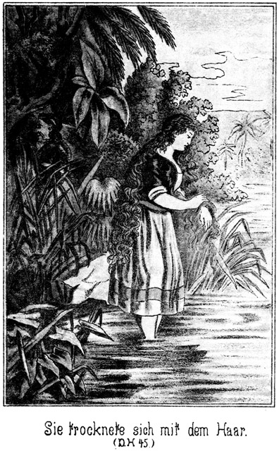Es war Steinbach zu Muthe, als ob er sich im Traume befinde. Und als sie nun die Arme, sich bückend, in das Wasser tauchte, sich wusch und sich dann mit dem eigenen Haar abtrocknete, waren ihre Bewegungen ganz genau so rund, so zierlich, so harmonisch wie diejenigen von Tschita, der Blume des Harems, der deutschen Sultana.
Sie befestigte das Haar wieder und den Schleier darüber; dann trat sie langsam zu den Indianern zurück, mit denen sie hinter den Büschen des Ufers verschwand, wie eine Erscheinung aus dem Feenreiche, gehütet von häßlichen Bewohnern nordischer Felsenklüfte.
»Nicht übel!« brummte Sam. »Die müssen wir herausangeln! Nicht?«
Steinbach erhob sich und holte tief Athem. Er antwortete:
»Sam Barth, hört, was ich Euch sage!«
Seine Stimme klang ernst, und sein Gesicht hatte den Ausdruck kühner, ja verwegener, todesmuthiger Entschlossenheit.
Sam fragte, dies bemerkend:
»Was denn? Doch keine Dummheit!«
»Ich gehe nicht eher hier vom Platze, als bis ich mit diesem Mädchen gesprochen habe!«
»Herr, meine Seele! Seid Ihr überspannt? Uebergeschnappt? Verrückt? Albern? Wahnsinnig? Nicht bei Troste? Ein Rädchen zu wenig oder zu viel im Kopfe? Oder habt Ihr ein Volk von Bienen oder ein ganzes Nest von Ameisen unter dem Schädel, daß Ihr auf den Gedanken kommt, hier in den sicheren Tod zu gehen?«
»Ich habe es gesagt, und ich thue es!«
»Da hat man es! Ich habe es gleich und stets gesagt, daß Ihr kein Westmann seid und nie ein Westmann werdet! Wenn Ihr solche Unvernünftigkeiten begehen wollt, so konntet Ihr getrost daheim in Herlasgrün bleiben und – – –«
»Ach was! Herlasgrün! Geht mir mit Eurem Neste!«
»Nest? Wie? Was? Wo?«
»Ich bin gar nicht aus Herlasgrün!«
»Nicht? Woher denn? Etwa aus einem Dorfe, welches daneben liegt oder dort in der Nähe?«
»Auch nicht. Ich bin gar kein Sachse.«
»Alle Teufel! Was denn? Ein Kossake?«
»Ein Preuße.«
»Ja, das glaube ich! Wenigstens jetzt kommt Ihr mir ganz preußisch vor!«
Er blickte ihn forschend an, als ob er wirklich an seinem Verstande zweifle. Steinbach sah das, zuckte lächelnd die Achseln und meinte:
»Ihr habt mich dumm genannt, aber Ihr seid es selbst, und zwar in hohem Grade! Habt Ihr denn nicht gemerkt, daß ich nur meinen Scherz mit Euch getrieben habe?«
»Scherz? Wie? Das will ich mir verbitten!«
»Daß ich Alles besser wußte als Ihr?«
»Besser als Sam Barth? Das ist stark!«
»Daß mich sogar die »starke Hand« viel höher achtete als Euch, Sir?«
»Als mich? Donnerwetter!«
»Mich sogar zu Eurem Beschützer erklärte?«
»Hole mich der Teufel! Wenn Ihr, Ihr mich beschützen solltet, so wäre ich verloren.«
»Nun, wer befand sich denn bei der »starken Hand«? Wer hat Euch im Lager belauscht und Euch den Zettel geschrieben?«
»Davon könnt Ihr gut sprechen; ich habe Euch Alles ja erst erzählt.«
»Der Fürst der Bleichgesichter.«
»Nun, wo ist er jetzt?«
»Irgendwo. Er wird sich schon blicken lassen, wenn es nöthig ist, und wenn man es gar nicht denkt. Das ist ja so seine Art und Weise, seine Angewohnheit.«
»Na, grad jetzt denkt Ihr es doch nicht!«
»Nein.«
»Und er ist da.«
Sam blickte sich schnell um. Als er keinen Menschen bemerkte, sagte er kopfschüttelnd:
»Wo denn? Ihr müßtet es sein.«
»So ist es auch. Ich bin Tan-ni-kay.«
»Tan-ni-kay! Ihr? Ihr?«
Der Dicke fuhr um einige Schritte zurück, starrte Steinbach an und fuhr dann fort:
»Ihr der Fürst der Bleichgesichter? Das ist lustig!«
»Mag es Euch jetzt lustig erscheinen. In einigen Minuten wird es um so ernsthafter werden. Denkt an unser Zusammentreffen, an mein Pferd; es ist das beste der Prairie; die »starke Hand« hat es mir geschenkt. Denkt daran, wie ich Tim und Jim belehrt habe und dann auch Euch. Denkt ferner daran, daß ich mit nur den beiden Apachen gestern Abend den rothen Burkers mit seiner ganzen Bande gefangen genommen habe. Denkt endlich daran, daß ich in einer selbst für Euch wunderbaren Schnelligkeit und Sicherheit den Lagerplatz dieser Maricopa's entdeckte. Wenn Ihr nun noch zweifelt, so ist Euch nicht zu helfen.«
»Alle neunundneunzigtausend Himmelelementers. Soll ich es denn wirklich glauben?«
»Ja doch!«
»Na, ich möchte wohl! Aber es fehlt mir so Verschiedenes an Euch.«
»Was denn zum Beispiele?«
»Euer berühmtes Gewehr.«
»Das habe ich ja bei mir.«
Er schlug dabei mit der Hand an die Axt, welche im Lederfutteral in seinem Gürtel hing.
»Etwa hier, die Axt?«
»Ja. Es ist Axt und Gewehr.«
»Donnerwetter! Wer hätte Das gedacht!«
»Also fragt nicht erst viel weiter! Ich möchte keine Zeit verlieren. Hier meine Hand und mein Wort darauf, daß ich der Fürst der Bleichgesichter bin!«
Er streckte ihm die Hand entgegen. Sam schlug ein und meinte, indem seine Aeuglein leuchteten und sein ganzes Vollmondgesicht vor heller Freude glänzte:
»Bei Gott, jetzt ist es mir, als ob ich mit Blindheit geschlagen gewesen sei und als ob mir jetzt die Schuppen von den Augen fallen. Ihr habt ganz die Gestalt und das Wesen des Fürsten, wie man ihn mir beschrieben hat. Also topp, topp, ich glaube es! Aber wollt Ihr denn wirklich mit diesem Mädchen sprechen?«
»Ich muß! Ich habe viel von Euch gehört; ich schätze Euch sehr. Ihr seid der Mann, mit dem man so Etwas unternehmen kann. Zwar sollt Ihr Euch nicht mit in das Wagniß stürzen, aber Ihr sollt doch mit teilnehmen, nämlich als Wächter. Ihr bleibt hier verborgen. Kehre ich zurück, ist es gut. Hört Ihr aber sechs Schüsse schnell hintereinander fallen, das ist meine Büchse. Dann bin ich gefangen – todt wohl nicht, denn ich nehme mich in Acht. Ihr reitet dann zurück nach der Mission, um es zu melden. Die »starke Hand« wird dann schon wissen, was zu thun ist.«
»Ich weiß es schon jetzt. Hier soll ich bleiben? Euch allein gehen lassen? Fällt mir gar nicht ein! Da kennt Ihr freilich den dicken Sam Barth schlecht! Er ist nicht der Mann, einen Gefährten in irgend einer Gefahr stecken oder gar umkommen zu lassen. Ich gehe mit!«
»Vielleicht wird durch Eure Begleitung die Gefahr grad vermehrt anstatt verringert.«
»Oho! Haltet Ihr mich für einen Kindskopf?«
»Nein. Fehler werdet Ihr doch wohl nicht machen. Aber ein Einzelner vermag sich jedenfalls leichter anzuschleichen als Zwei.«
»Und wenn Ihr wirklich in Gefahr kommt, so ist es eben sehr gut, wenn Ihr einen Begleiter habt. Nein! Ich habe mich förmlich gesehnt, den ›Fürsten der Bleichgesichter‹ einmal zu treffen. Da nun nicht nur dieser Wunsch in Erfüllung gegangen ist, sondern ich sogar einen gefährlichen Streifzug mit Euch unternehme, will ich diese Gunst des Schicksales auch gehörig ausnützen und mich mit Euch ins Wasser stürzen. Ich gebe Euch nicht nur mein Ehren-, sondern sogar mein Savannenwort, daß ich keinen Fehler machen werde. Sam Barth ist als ein guter Westmann bekannt und wird sich doch heut, wo er die Ehre hat, zum ersten Male mit Euch einen Coup auszuführen, nicht etwa blamiren. Das werdet Ihr mir wohl glauben.«
»Ich sage Euch dennoch aufrichtig, daß ich lieber allein gehe und Euch, so zu sagen, als Reserve zurücklasse; aber ich will Euch nicht wehe thun. Ihr könntet denken, daß ich kein Vertrauen zu Euch habe, und das will ich doch vermeiden. Einen Rath muß ich Euch aber trotz allen Wohlwollens, welches ich für Euch empfinde, doch geben. Nämlich den: Achtet niemals einen Mann gering, den Ihr noch nicht genau kennt. Wenn ich einen anderen Character gehabt hätte, so wäre es leicht zu einem Zusammenstoße zwischen uns Beiden gekommen, bei welchem Ihr wohl den Kürzern gezogen hättet. Ihr habt Eure Ausdrücke zwar stets halb scherzhaft gemeint; fünfzig Procent Ernst aber waren dabei, und die hätte Euch jeder Andere übel genommen.«
»Das ist wahr,« gestand Sam aufrichtig. »Ihr habt eben gewußt, wie sehr überlegen Ihr mir seid, und so habt Ihr Euch so großmüthig gegen mich verhalten wie der Löwe gegen das kleine Hündchen, welches man zu ihm in den Käfig steckt. Er frißt es nicht, obgleich es nur eines Schluckes bedarf. Das Kerlchen ist ihm eben zu gering und zu klein. Aber wir versäumen hier unsere beste Zeit – – –!«
»Ja. Solche langen Plaudereien in der Nähe eines solchen Feindes zu wagen, das können eben nur solche Männer, wie wir Zwei sind. Jetzt aber haben wir lange genug gesprochen. Wir wollen nun auch handeln.«
»So macht mir Eure Vorschläge.«
»Die werden nicht sehr complicirter Natur sein. Die Indsmen scheinen gerade hinter der Einbuchtung zu campiren. Wir schlagen also einen Bogen, indem wir dorthin zurückkehren, wo wir die Pferde gelassen haben, und kommen dann von hinten an die Rothen. Aber ich bitte Euch sehr, vermeidet jedes, auch das kleinste Geräusch, und vertilgt jede Spur hinter dem einen Fuße, ehe Ihr den andern vorwärts bewegt. Hat man den Fuß emporgehoben, so fährt man, zurückblickend, mit der Spitze desselben über die Stelle, auf welcher er geruht hat. Kein Zweig, kein Aestchen darf zertreten und zerknickt werden. Dieses unbedeutende Geräusch kann bei dem scharfen Gehör der Indianer zum Verräther werden.«
»Und wenn wir dennoch bemerkt werden, wenn man auch nur Einen von uns sieht, was thun wir da?«
»Mich werden sie nicht sehen; das weiß ich sehr genau.«
»Mich auch nicht.«
»Wollen aber das Schlimmere annehmen. Werden wir Beide bemerkt, so können wir nichts Anderes thun, als schleunigst unsere Pferde aufsuchen, um uns aus dem Staube zu machen. Wird nur Einer gesehen, so entfernt sich nur dieser, aber nicht nach den Pferden zu, weil dann dem Andern der Ritt abgeschnitten wird. Uebrigens bleiben wir wohl zusammen oder wenigstens uns so nahe, daß wir uns auf alle Fälle ein Wort sagen können, wie wir uns im betreffenden Falle verhalten. Kommt jetzt!«
Sie schlichen wieder zurück, an ihren Pferden vorüber und in einem großen Bogen um die Bucht herum. Dabei waren sie sorglich darauf bedacht, alle ihre Spuren auf das Sorgfältigste zu verwischen.
Am Wasser stand zunächst ein nicht sehr breiter Raum von Buschwerk, dann gab es hohen Wald. Dieser bestand ganz ausschließlich aus solchen Bäumen, welche im Westen Deepbranch oder Greatleafbäume genannt werden. Zuweilen heißt man sie auch Straightwoods. Diese drei Ausdrücke bedeuten in der hier angegebenen Reihenfolge Tiefast-, Großblatt- und Geradeholzbäume. Aus diesen Namen läßt sich auch ohne weitere Beschreibung auf den Bau dieser Riesen des Lauburwaldes schließen. Sie sind von bedeutender Höhe und Stärke. Ihre Zweige beginnen bereits zwei Fuß über dem Boden. Die Hauptäste sind oft über mannesstark und stehen schnurgerade im rechten Winkel vom Stamme ab, so daß man leicht auf ihnen wie ein Seiltänzer laufen kann. Die Blätter gleichen beziehentlich der Gestalt denen unserer Wallnußbäume, sind aber bedeutend größer und bilden ein sehr dichtes Laubwerk. Diese Art Bäume stehen zwar niemals sehr nahe bei einander; aber die Aeste erreichen eine sehr ansehnliche Länge; das Astwerk des einen Baumes reicht darum in dasjenige des anderen hinein, und so bildet ein solcher Wald mit seinen verschiedenen Astlagen ein dichtes, grünes, aus vielen Etagen bestehendes Dach, unter welchem man der Niedrigkeit der Aeste wegen zwar nicht gut gehen kann, aber sehr gut Schutz vor Regen und – vor Entdeckung findet.
Ein guter Kletterer oder vielmehr Einer, welcher es versteht, sich gut im Gleichgewicht zu erhalten, kann da oben in den Laubetagen auf den starken Aesten von Baum zu Baum sich balanciren, ohne unten bemerkt zu werden, wenn er nämlich die starken Aeste zu seinem Fortkommen wählt. Die dünneren würden sich unter seiner Last biegen und ihn also verrathen. Freilich muß er sich hüten, einen Zweig zu knicken oder ein anderes Geräusch zu verursachen, sonst ist er, falls sich Indianer unten befinden, verloren.
Steinbach und Sam hatten den Saum der Büsche durchdrungen und wollten nun in den Wald, unter dessen Dach die Rothen zu stecken schienen. Da ließ sich das Schnauben eines Pferdes vernehmen.
»Halt, Master!« flüsterte Steinbach. »Wahrscheinlich haben sie ihre Thiere in der Nähe. Es ist immer besser, zu wissen, wie es mit diesen beschaffen ist. Sehen wir uns also erst diese an. Ich möchte gern wissen, ob sich Wache dabei befindet.«
Sie krochen am Boden hin, in der Richtung weiter, aus welcher das Schnauben gehört worden war. Zwischen dem Buschsaume und dem eigentlichen Walde gab es da eine ziemlich große, mit Gras bewachsene Blöße, auf welcher eine große Anzahl Pferde weideten. Indem die Beiden die Blöße vorsichtig, immer von den Sträuchern gedeckt, umschlichen, zählten sie dreihundert und einige Thiere, welche an den Vorderfüßen gefesselt waren, so daß sie nicht entfliehen konnten.
»Ich sehe keine Wache,« meinte Sam.
»Ich auch nicht. Die Rothen fühlen sich hier vollständig sicher. Sapperment! Seht Ihr dort die beiden Goldfüchse?«
»Ja. Prächtige Thiere. Die werden sicher nicht von gewöhnlichen Indsmen geritten.«
»Nein, gewiß nicht. Ich bin kein Pferdedieb, aber wenn ich Verwendung für diese beiden Pferde hätte, so holte ich sie mir heraus, wenn ich nicht berücksichtigen müßte, daß dadurch unsere Anwesenheit verrathen würde.«
»Machen wir vorwärts, in den Wald hinein!«
Als sie sich zwischen den hohen, starken Stämmen befanden, sehr gut versteckt von den unteren Zweigen, welche fast den Boden berührten, schnoberte Sam mit der Nase rundum und sagte:
»Riecht Ihr nichts, Sir?«
»O doch! Sie haben ein Feuer und braten.«
»Aber was?«
»Fische.«
»Ja. Ihr habt eine ebenso gute Nase wie ich. Fisch hat einen weichlichen, characterlosen Duft; ich mag ihn nicht leiden und ebenso wenig das Fleisch. Es hat keinen Saft und giebt keine Kraft. Aber woher kommt der Geruch? Hier mitten im Blätterwerke täuscht man sich.«
»Dort vom Flusse her.«
»Scheint mir auch so. Dahin müssen wir also.«
»Ja. Hm! Wenn ich wüßte!«
Er richtete dabei den Blick prüfend empor und dann auf die Gestalt des Dicken.
»Was?« fragte dieser.
»Ob Ihr klettern könnt.«
»Wie ein Eichkätzchen.«
»Na! Das ist bei Eurem Körperbau nicht leicht zu glauben.«
»Pshaw! Der Bär ist auch nicht gebaut wie ein Bandwurm und klettert doch ausgezeichnet. Ich versichere Euch, daß Ihr Euch in dieser Beziehung wirklich auf mich verlassen könnt, Sir.«
»Ich halte es nämlich für gerathener, hinaufzusteigen und da oben von Ast zu Ast weiter zu klettern.«
»Ich bin dabei.«
»Aber wenn Ihr stürzt – –!«
»Unsinn! Das zu denken ist gerade so dumm, als wenn Ihr nicht glauben wolltet, daß der Aal schwimmen kann oder der Falke fliegen. Paßt auf!«
Es gab in Manneshöhe einen starken Ast. Sam warf das Gewehr über die Schulter, ergriff denselben und saß im nächsten Augenblicke oben. Eine halbe Manneshöhe weiter empor ragte ein zweiter und dann ein dritter Ast in das Zweigwerk des nächsten Baumes hinein. Ein Schwung und noch einer – Sam saß oben in der zweiten Laubetage, so daß Steinbach ihn gar nicht mehr sehen konnte.
Dieser Letztere nickte befriedigt vor sich hin und saß in zwei Secunden oben bei Sam.
»Na, was meint Ihr dazu?« fragte dieser.
»Gut gemacht, was das Emporkommen betrifft. Aber ob das Vorwärtsklettern auch so gut gelingt, das müßt Ihr erst beweisen.«
»So paßt auf!«
Er wollte vorwärts. Steinbach aber hielt ihn fest und sagte in warnendem Tone:
»Halt! Keine Unvorsichtigkeit! Hier stecken wir hinter dem Stamme. Ehe wir diese Deckung verlassen, müssen wir uns überzeugen, daß wir sicher sind. Es können auch andere Leute auf den Gedanken gekommen sein, hier oben herum zu spazieren.«
»Wie ich die Indsmen kenne, so sind sie nicht sehr große Freunde vom Klettern.«
»Das ist wahr. Zudem wohnen die Maricopa's in den offenen Ebenen am Rio Gila, wo es außer Cactus keine Pflanzen giebt. Viel Uebung im Klettern ist ihnen also nicht zuzutrauen. Aber dennoch müssen wir vorsichtig sein. Wir machen es in der Weise, daß ich stets vorangehe. Am nächsten Stamme angekommen, sehe ich mich genau um. Bemerke ich nichts Verdächtiges, so winke ich, und Ihr kommt nach. Hier sehe ich keinen Menschen, wir können also weiter.«
Er stellte sich aufrecht auf den über mannesstarken Ast und schritt auf demselben vorwärts, bis er einen gleichen Ast des nächsten Baumes erreichte, auf welchem er dann, ebenso gerade aufgerichtet, nach dem Stamme desselben schritt. Hinter diesem kauerte er sich nieder und musterte die Umgebung. Dann gab er den Wink. Sam folgte ihm, und zwar mit einer Gewandtheit und Sicherheit, welche Steinbach vollkommen zufrieden stellte.
Auf diese Weise bewegten sie sich von Baum zu Baum vorwärts. Doch je weiter sie kamen, desto größere Vorsicht wendete Steinbach an, und Sam that desgleichen. Es war wirklich ein Kunststück, welches diese Beiden vollbrachten. Sie verursachten nicht das mindeste Geräusch. Kein Zweiglein, kein Blatt fiel herab. Ihre Bewegungen waren so continuirlich, daß die Aeste sich gar nicht bewegten, obgleich Beide eine ziemliche Schwere besaßen.
Da plötzlich hörte der Wald auf. Es gab da einen Hurricana. So heißen die Stürme, welche schmal aber mit desto größerer Kraft durch die Wälder gehen und auf ganze Flächen die Bäume niederreißen. Eine solche verwüstete Waldfläche heißt dann ebenso Hurricana.
Hier war der Sturm dem Laufe des Flusses gefolgt und hatte an dem einen Ufer desselben weithin die stärksten Bäume entwurzelt und über einander gestürzt. Es war ein vollständig undurchdringliches Chaos entstanden, und am Rande desselben hatten sich die Indianer gelagert.
Von dem hohen Standpunkte der beiden Jäger aus konnten dieselben sehen, daß die Rothen den Hurricana auf der einen Seite umgangen hatten, um an den Fluß zu kommen. Dort saßen Viele von ihnen am Ufer, eine lange Reihe bewegungsloser Gestalten, mit Angeln beschäftigt. Diejenigen, welche bereits Etwas gefangen hatten, waren nach diesseits zurückgekehrt und brieten ihre Beute. Sie machten sich mit den Kriegsbeilen Löcher in den Boden, dann Feuer darüber und legten die Fische, ohne sie vorher auszunehmen, in die glühende Asche.
Eben nahm Einer ein großes Exemplar heraus und biß hinein.
»Pfui Teufel!« kicherte Sam leise. »So einen Fisch mit sämmtlichen Eingeweiden zu fressen, das bringt eben auch nur so ein rother Kerl fertig!«
»Pah! Wir Weißen essen noch andere Dinge.«
»Was denn?«
»Ist nicht Käse verfaulte Milch?«
»Hm! Schmeckt aber fein!«
»Indianische Vogelnester!«
»Kenne ich nicht.«
»Schnecken! Schnepfendreck.«
»Brrrr! Ja es giebt auch unter den Weißen so richtige Schweinigel, welche – – Donnerwetter!«
»Dort ist das Mädchen.«
»Wo?«
»Seht Ihr den starken Baum, da der zweite? Sein Stamm liegt über einem andern. Das giebt ein Schlupfloch, und da hat die Miß gesteckt. Seht, sie tritt hervor.«
»Ah! Ja! Aber sie ist gebunden.«
»Leider! Verdammte Geschichte! Man hat sie an das eine Ende des Lasso festgemacht; das andere Ende aber hat sich dort der Rothe Kerl, welcher an seinem Fischkopfe schnabbert, um den Arm gebunden. Es ist also unmöglich, unbemerkt mit ihr zu sprechen.«
»Vielleicht doch.«
»Wenn Ihr das Leben riskirt, ja.«
»Hm! Das Lasso ist lang, fünfundzwanzig bis dreißig Ellen. Die Miß hat also ziemlich weiten Spielraum. Wenn wir auf den Baum gelangen können, welcher ihr am nächsten steht, und wir ihr einen Wink geben, so – – –«
»So wird sie vor Schreck schreien, und man nimmt uns beim Schopfe.«
»So schnell geht das nicht. Versuchen wir es!«
»So müssen wir eine Strecke zurück. Hier am Rande des Hurricana können wir nicht hinklettern. Da würde man uns bald bemerken.«
Sie kehrten eine kurze Strecke zurück, und es gelang ihnen, Aeste zu finden, welche in die angegebene Richtung führten. Sam blieb auf dem vorletzten Baume zurück; Steinbach aber kletterte, sein Leben allerdings wagend, nach demjenigen, welcher am Rande stand. Seitwärts desselben, etwa zwanzig Ellen entfernt, saß der Indianer am Feuer. Die Gefangene, welche mit ihm zusammengebunden war, stand um Vieles näher. Das Lasso war so lang, daß sie noch näher kommen konnte, bis unter das Gezweig.
Steinbach hätte, um von ihr gehört zu werden, ein ziemlich lautes Zeichen geben müssen. Lieber wagte er ein Anderes. Er stieg einen Ast tiefer herab, legte sich lang auf denselben und kroch so weit nach außen, als es möglich war, ohne daß der Ast sich senkte. Dies hätte ja gefährlich werden können. Jetzt war er höchstens acht Ellen von ihr entfernt.
Er konnte ihr Gesicht ganz deutlich sehen, sehr natürlich bei einer solchen Nähe. Sie besaß allerdings eine gradezu wunderbare Ähnlichkeit mit Tschita, war es aber nicht selbst. Ihr schönes Gesichtchen war bleich, sehr bleich, wohl bleich vor Gram, vor Angst und jedenfalls auch vor körperlicher Anstrengung und Entbehrung. Sie blickte, in traurige Gedanken versunken, zu Boden. Ein schwerer Seufzer nach dem andern hob den schönen, vollen Busen. Steinbach sah, daß sie jünger war als Tschita. Sie stand mit dem Gesicht von dem Indianer abgewendet. Darum glaubte Steinbach, es wagen zu können.
»Pst!« machte er.
Sie hörte es nicht; er hatte natürlich nicht so laut sein dürfen, daß der Indianer es vernehmen konnte.
»Pst!«
Jetzt fuhr sie zusammen und drehte sich nach dem Indianer um. Aber sogleich zuckte es wie eine plötzliche Erkenntniß über ihr Gesicht. Ein Indianer gebraucht niemals das Pst. Daran dachte sie.
Sie hatte sich wieder herumgedreht und lauschte.
»Sennorita!«
Steinbach bediente sich dieses spanischen Wortes, weil sie die Tracht von Sonora trug, wo spanisch gesprochen wird. Sie hob das Köpfchen ein Wenig und blickte nach oben. Es schoß roth und bleich über ihre Wangen.
»Sennorita!« wiederholte Steinbach.
Jetzt hatte sie es deutlich verstanden. Sie wußte auch, wo der Sprecher sich befand. Sie zuckte mit beiden Händen nach dem Herzen; sie wankte; fast hatte es den Anschein, als ob sie umfallen werde. Aber sie kämpfte den freudigen Schreck nieder und besann sich.
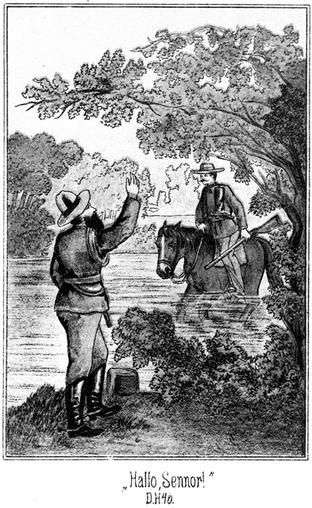Wie um sich ein Sträußchen des flockigen Mooses zu sammeln, bückte sie sich nieder und kam langsam näher, soweit das Lasso reichte. Der Indianer merkte es. Er blickte finster nach ihr her; aber als er sah, daß sie das Moos ausraufte, wendete er sein scharf geschnittenes Gesicht wieder dem Feuer zu. Sie war ihm ja sicher. Sie konnte den Knoten des Lasso, der sich auf ihrem Rücken befand, nicht lösen, und hatte auch kein Messer, das Lasso zu durchschneiden.
Jetzt erhob sie sich aus ihrer gebückten Lage und raunte vor sich hin, Steinbach hörbar, aber ohne daß sie den Kopf nach oben hob:
» Quién habla – wer spricht?«
» Soi tu amigo – ich bin ein Freund von Dir.«
Da hauchte es in ihren schönen, hellen Augen wonnig auf.
» Sennor Carlos?« fragte sie.
» No.«
» O, aymé!«
» Pero soi un hombre blanco – aber ich bin ein Weißer!«
Hatte sie erst einen Ruf des Bedauerns geflüstert, als sie vernahm, daß Steinbach nicht Sennor Carlos war, jedenfalls ein Bekannter von ihr, so sagte sie jetzt:
» Bendito sea Dios – gelobt sei Gott!«
» Soé un aleman – ich bin ein Deutscher.«
Hatte er vielleicht erwartet, daß sie ihm hierauf in deutscher Sprache antworten werde? Wohl schwerlich. Aber dennoch sagte sie deutsch, indem ihr ganzes Gesichtchen vor Wonne leuchtete:
»Mein Gott! Ist es möglich!«
»Sie sprechen Deutsch? Sind Sie eine Deutsche?«
»Von Geburt.«
»Wie heißen Sie?«
»Magdalena Hauser. Man nennt mich Magda.«
»Wo wohnen Sie?^
»Ich weiß es nicht; weit von hier.«
»Sie müssen doch den Namen Ihres Wohnortes kennen!«
»Ich kenne ihn nicht. Es ist ein Quecksilberbergwerk und liegt in einer entsetzlichen Einöde.«
»Haben Sie Verwandte?«
»Vater und Mutter.«
»Was ist Ihr Vater?«
»Er arbeitet unten im Bergwerke und Mutter auch. Sie kommen nie an das Tageslicht.«
Bei diesen Worten flossen ihr sofort die Thränen aus den Augen.
»Um Gottes willen, bücken Sie sich! Der Indianer blickt hierher. Bücken Sie sich!«
Sie that, als ob sie Moos abpflücke. Der Rothe beruhigte sich und drehte sich wieder um.
»Wie kommen Sie unter die Indianer?« erkundigte Steinbach sich weiter.
»Roulin hat mich ihnen übergeben.«
»Wer ist das?«
»Der Besitzer des Quecksilberwerkes.«
»Was sollen Sie bei den Rothen?«
»Mein Gott! Ich soll geopfert werden, verbrannt!«
»Warum?«
»Weil ich nicht Roulins Weib werden will.«
»Ah! So! Wo sollen Sie verbrannt werden?«
»Am Silbersee.«
»Dorthin also wollen die Maricopa's?«
»Ja. Heut Abend wollen sie dort sein. O mein Heiland! Mein Herr und Gott! Wäre ich doch schon todt!«
»Beruhigen Sie sich! Ich werde Sie retten.«
»Können Sie das denn?«
»Ich hoffe es.«
»Was sind Sie?«
»Ich bin Jäger. Es sind Mehrere bei mir, droben am Silbersee. Wir wissen, daß die Maricopa's kommen wollen, und ich bin als Kundschafter hierher gegangen. Ich sah Sie am Wasser und habe mich herbei geschlichen, um womöglich mit Ihnen zu sprechen.«
»O, wie danke ich Ihnen. Gott wird es vergelten.«
»Wie viele Häuptlinge sind da?«
»Nur einer.«
»Wie heißt er?«
»Der eiserne Mund. Er hat seine beiden jungen Söhne mit, welche die Kriegsprobe ablegen sollen.«
»Ah! Ich vermuthe, diese beiden Kerls haben auf zwei Goldfüchsen gesessen?«
»Ja, das sind ihre Pferde.«
»Wo befindet sich der Häuptling?«
»Dort nach rechts. Sie haben ihm eine Hütte gebaut. Roulin ist bei ihm.«
»Ah! Dieser Mann ist anwesend?«
»Ja. Er hat, als ich seine Hand ausschlug, Vater und Mutter in das Bergwerk gesteckt. Das half ihm nichts, und nun soll ich verbrannt werden.«
»Hm! Es ist mir das unerklärlich; aber ich kann nicht lange fragen. Ich werde jedenfalls noch Weiteres erfahren, droben am See. Mein Zweck ist erreicht. Ich habe Ihnen gesagt, daß ich Sie retten werde. Also haben Sie keine Sorge, und vertrauen Sie Gott, dem Herrn. Nur Eins noch: Woher stammen Ihre Eltern?«
»Ich weiß es nicht.«
»Aber Sie müssen mit ihnen doch davon gesprochen haben!«
»Das darf ich nicht.«
»Haben Sie keine Geschwister?«
»Nein.«
»Auch keine gehabt?«
»Auch nicht.«
»Welchen Vornamen hat Ihr Vater?«
»Friedrich.«
»Und wie nennen Sie Ihre Mutter?«
»Ich sage nur Mama zu ihr.«
»Wie aber sagt Ihr Vater zu ihr?«
»Sind Leute dabei, so nennt er sie Anna; sind sie aber allein, so sagt er ›gnädige Frau‹ zu ihr.«
»Hm! Ah! Aber Ihr Vater muß doch Etwas sein? Er muß doch gearbeitet haben?«
»Er ist nichts; er hat nicht gearbeitet; jetzt nur arbeitet er, im Bergwerke. Mein Gott, er wird bald sterben und Mutter auch!«
Ihre Thränen begannen von Neuem zu fließen. Der Indianer wendete den Kopf zu ihr. Er sah sie in der auffälligen Haltung stehen und erhob sich langsam. Er schien Verdacht zu fassen.
»Um Gotteswillen!« flüsterte Steinbach. »Er kommt! Gehen Sie hin! Wir sehen uns wieder! Gott sei mit Ihnen!«
Sie war geistesgegenwärtig genug, seinem Rathe sofort zu gehorchen. Wie in trübe Gedanken versunken, ging sie nach dem umgestürzten Baume zurück, unter welchem sie vorher gesessen hatte, und setzte sich dort wieder nieder. Der Indsman blickte ihr scharf nach, trat näher und betrachtete den Boden, wo sie Moos gepflückt hatte. Sodann erhob er den Blick nach oben, in die Zweige. Steinbach lag im höchsten Falle fünf Ellen über ihm. Es war ein böser Moment, aber er ging glücklich vorüber. Der Rothe kehrte an sein Feuer zurück.
Steinbach kroch rückwärts bis zu dem Stamme und erhob sich dort. Er konnte das Mädchen sehen. Sie blickte auch empor, doch war es ihr unmöglich, ihn zu erkennen. Es war ihm so weh um das Herz. Eine zweite Tschita, fast noch schöner und herrlicher, schien sie doch geistig völlig entwickelt zu sein. Sie wußte von nichts, von gar nichts, nicht was ihr Vater war, und nicht, wie ihr Wohnsitz hieß. Aber Etwas war höchst auffällig: daß ihr Vater ihre Mutter ›gnädige Frau‹ nannte, wenn sie unbeobachtet waren. Das gab zu denken. Dahinter mußte irgend ein Geheimniß stecken. Und dazu diese wunderbare Ähnlichkeit mit Tschita, mit den Familienzügen der Adlerhorst!
Diese Gedanken drängten sich Steinbach in aller Schnelligkeit auf, doch hatte er keine Zeit, ihnen nachzuhängen, da es nun galt, sich ebenso glücklich wieder zurückzuziehen, wie sie sich herbei geschlichen hatten. Er fand Sam hinter dem Stamme des zweiten Baumes auf dem Aste zusammengekauert. Der Dicke sagte:
»Die Situation war gar nicht so übel. Der Rothe witterte Unrath. Wie gut, daß das Laub so dicht ist und daß die Blätter so schief sitzen, daß man zwar von oben hinab, nicht aber von unten herauf durch das Laub blicken kann! Habt Ihr Wichtiges erfahren?«
»Darüber bin ich noch im Unklaren. Eins hat mich überrascht: Sie ist eine Deutsche.«
»Sapperment! Das ist doch wunderbar! Abermals deutsch! Wir haben da die doppelte Verpflichtung, sie heraus zu angeln. Meint Ihr nicht?«
»Ja. Als ich sie so unter mir stehen sah, kam mir für einen Augenblick der Gedanke, sie sofort zu entführen – – –«
»Das wäre Tollheit gewesen!«
»Nicht Tollheit grad, aber unendlich verwegen. Ich habe aber noch Gefährlicheres vollbracht. Ich hätte sicher zugegriffen; aber sie war ja mit dem Rothen zusammengebunden. Sie wird also noch bis heut Abend gefangen bleiben müssen. Jetzt haben wir nicht Zeit zu einem langen Diskours. Kommt, Master!«
»Wohin? Gleich fort? Wollen wir nicht noch weiter suchen!«
»Allerdings noch ein klein Wenig nur. Ich möchte einmal den Häuptling sehen. Er steckt da unten in der Hütte.«
»Wie heißt er?«
»Der ›eiserne Mund‹«
»Tausend Donner! Von dem habe ich gehört. Er ist ein berüchtigter Kerl, grausam, falsch und treulos sowohl gegen Weiße wie auch gegen Rothe, und ein Dieb, wie es keinen zweiten geben soll. Ich freue mich königlich darauf ihm eine Ladung auf den rothen Pelz zu brennen.«
»Wenn es möglich ist, machen wir diese Sache ganz ohne Blutvergießen ab.«
»Das wäre jammerschade. Solches Ungeziefer muß man ausrotten, Sir!«
»Sie sind auch Menschen!«
»Na, meinetwegen! Ich weiß freilich nicht, wie Ihr es anfangen wollt, ohne Kampf zu Eurem Ziele zu kommen.«
»List ist oft besser als Gewalt. Ihr wißt das ebenso gut wie ich, denn Ihr seid ja grad als ein sehr durchtriebener Schlaukopf bekannt.«
»Bin ich das? Hm! Freut mich, Sir!«
»Ja, das seid Ihr. Darum freue ich mich. Euch bei mir zu haben. Euer Rath kann uns von großem Nutzen sein. Also kommt jetzt da links hinüber. Vielleicht gelingt es uns, den ›eisernen Mund‹ von Angesicht zu sehen.«
Sie bewegten sich in der bereits beschriebenen Art und Weise nach der angegebenen Richtung hin. Da sie sich dabei in unmittelbarer Nähe der Indianer befanden, mußten sie ihre Vorsicht jetzt nicht nur verdoppeln, sondern verzehnfachen. Sie schritten nicht mehr stehend über den Aesten hin, sondern sie gingen auf Händen und Füßen, grad wie die Affen, auf denselben fort. Der dicke Sam entwickelte dabei eine Gewandtheit, welche man ihm bei seiner Leibesbeschaffenheit gar nicht zugetraut hätte.
Da, bereits nach kurzer Zeit, hörten sie Stimmen, denen sie sich näherten. Zwei Männer sprachen in jenem Gemisch von Spanisch und Indianisch, dessen sich die Weißen am Rio Gila bedienen, wenn sie mit den Rothen sprechen.
Bald hielten die beiden Jäger oben auf dem Baume, unter welchem das Gespräch geführt wurde. Sie konnten die Sprechenden zwar nicht sehen, aber es war ihnen möglich, ein jedes Wort zu verstehen. Dicht am Stamme auf je einem Aste niedergekauert, lauschten sie.
»Welchen Plan aber hat der ›eiserne Mund‹ entworfen?« fragte Einer, der seiner Aussprache nach nicht ein Indianer, sondern ein Weißer war. »Wäre es nicht gerathen, List anzuwenden?«
»Welche List meint mein weißer Bruder Sonataka?«
Der dies sagte, war der Häuptling selbst. Er nannte den Andern Sonataka; das heißt so viel wie ›silberner Mann.‹ Der Betreffende war also höchstwahrscheinlich jener Roulin, Besitzer des Quecksilberbergwerkes, von welchem Magda gesprochen hatte. Er wurde, da er Quecksilber grub, von den Indianern der ›silberne Mann‹ genannt. Auf die letzte Frage des Häuptlings antwortete er:
»Wir sollen voranreiten und sagen, daß wir den Gräbern der Häuptlinge unsere Verehrung bringen wollen.«
»Mögen sie sitzen im finstersten Winkel der ewigen Jagdgründe! Es sind lauter verdammte Apachen und Comanchen!«
»Wir sagen ja nur so! Man würde uns als Gäste in der Mission aufnehmen. Des Nachts kämen unsere Leute, und wir öffneten ihnen Thor und Thüren.«
»Das geht nicht.«
»Warum nicht? Es ist ja sehr leicht.«
»Es ist nicht leicht; es ist sogar sehr gefährlich. Man kennt den ›eisernen Mund‹ und man würde uns sogleich gefangen nehmen. Ich käme an den Marterpfahl zu Ehren der Gräber der Häuptlinge. Nein, dieser Plan taugt nichts, gar nichts.«
»So sage einen andern!«
»Was ich thun werde, das weiß ich längst. Es wohnen wenig Leute in der Mission, und ihre Beschützer, die Apachen, sind auf der Jagd entfernt. Wir zählen zehn mal drei mal wieder zehn. Wir werden des Nachts das Thal des Silbersees erreichen und die Mission umzingeln. Die Bewohner ahnen nichts. Sie werden überrascht und von uns niedergemacht, ehe es ihnen einfallen kann, sich zu vertheidigen. Wir werden sie dann am Marterpfahle verbrennen, wie sie uns verbrennen würden.«
»Und die Schätze, welche sich dort befinden?«
»Sie sind Dein, wie wir besprochen haben. Du wirst sie aber erst dann bekommen, wenn Du uns das Pulver und Blei dafür gegeben hast, wie zwischen uns ausgemacht worden ist.«
»Aber wenn wir das Gold und Silber nicht finden?«
»Wir werden die ›Taube des Urwaldes‹ so lange peinigen, bis sie uns den Ort sagt.«
»Und sie dann tödten?«
»Ob ich sie tödten werde, weiß ich noch nicht,« klang die Stimme des Häuptlings unwirsch. »Ich bin der Anführer der Maricopas, und thue was ich will!«
»Du vergissest, daß ich nicht Dein Untergebener bin!«
»Und Du vergissest, daß ein Häuptling niemals sagt, wie er mit dem Feinde kämpfen werde. Ich rathe Dir, Dein Mahl zu halten und dann zu schlafen, damit Du heut in der Nacht nicht ermüdest.«
Man hörte einen nicht ganz unterdrückten Fluch, und dann entfernte sich der ›silberne Mann‹. Die Lauscher blickten durch das Blätterdach. Als er aus dem Schutze des Baumes getreten war, konnten sie ihn sehen. Er war nicht alt und mochte wenig über dreißig Jahre zählen. Sein Gesicht war nur für wenige Augenblicke zu sehen.
»Wer ist denn dieser Ehrenmann?«
Steinbach sagte ihm, was er von Magda erfahren hatte.
»Hm! Schätze rauben, Menschen tödten und ein armes, weißes Mädchen verbrennen, weil es ihn nicht leiden kann! Das ist allerliebst. Dem Kerl wollen wir einmal das Vaterunser beten lernen, daß es ihm beim Amen angst und bange wird. Was nun? Der Häuptling scheint noch unten zu sitzen.«
»Jedenfalls. Ich werde mich einen Ast tiefer hinablassen, um ihn einmal anzusehen.«
»Wenn er Euch aber bemerkt!«
»Das geschieht hoffentlich nicht! Wartet hier!«
»Fällt mir nicht ein! Ich will mir den rothen Kerl doch auch einmal betrachten.«
Sie schwangen sich also eine Astetage tiefer hinab. Da sahen sie, daß aus Buschwerk für den Häuptling eine kleine Hütte errichtet worden war. In ihrem Dache steckte eine Lanze, an welcher ein Scalp hing. Er saß vor dem Eingange und hatte zwei kleine Farbentöpfe vor sich stehen, in welche er abwechselnd den Pinsel tauchte, um sich das Gesicht zu bemalen.
»Gelb und schwarz,« sagte Sam flüsternd. »Das sind die Kriegsfarben. Der Kerl meint es also sehr ernst und wird keinen Pardon geben. Wer kommt da?«
Es kamen längst des Hurricana zwei junge Indianer herbei, denen man es ansah, daß sie Brüder waren. Sie waren vielleicht siebzehn und achtzehn Jahre alt. Als sie ihren Vater bei seiner Beschäftigung sahen, blieben sie in ehrfurchtsvoller Entfernung stehen. Das Bemalen mit den Kriegsfarben ist nämlich stets eine heilige Handlung und darf nicht gestört werden.
Da sie nicht fremd, sondern seine Söhne waren, winkte er sie endlich herbei.
»Was wollen die »beiden Finger« hier?« fragte er.
Der Aeltere antwortete:
»Der »rechte Finger« und der »linke Finger« kommen zu ihrem Vater, dem Häuptling, um ihm eine Bitte zu sagen.«
»Sagt sie!«
»Warum sollen wir hier sitzen unter den Bäumen, wenn wir uns auf dem Kriegspfade befinden? Sind nicht unsere Pferde frisch und muthig? Wir kennen das Ziel des Zuges. Wir wollen Krieger werden. Wir stehen im Begriff, unsere Proben abzulegen. Die Jünglinge, welche sich einen Namen verdienen wollen, werden stets als Kundschafter ausgesandt. Warum sendet unser Vater, der »eiserne Mund«, keine Kundschafter aus? Warum gönnt er uns nicht den Ruhm, mit den Scalps zweier Feinde zurückkehren zu können.«
Diese beiden Indsmen hatten noch keine Namen; sie wurden einstweilen »rechter und linker Finger« genannt. Den Namen, welchen er für das ganze Leben trägt, bekommt der Indianer erst dann, wenn er seine Probe bestanden hat. Der alte Häuptling ließ ein wohlgefälliges Grinsen sehen, welches sich auf seinem halbbemalten Gesicht scheußlich ausnahm. Er fühlte sich von der Unternehmungslust seiner Sprößlinge sehr befriedigt, antwortete aber:
»Wollen die zwei Fliegen dem Adler Befehle geben? Was versteht Ihr von dem Kriege, welchen wir jetzt führen? Wozu bedarf ich der Botschafter? Ich kenne den Ort genau, an welchen wir gelangen werden. Durch Botschafter würden wir uns verrathen. Die »beiden Finger« werden beim nächsten Morgengrauen Gelegenheit finden, sich die Scalps der Weißen zu holen. Sie sollen die Ersten sein, welche in das Gebäude eindringen.«
»Wir sind ihrer so viele und der Bleichgesichter sind so wenige. Die »zwei Finger« werden keine Scalps bekommen, wenn sie warten. Sie werden voranreiten.«
»Ihr bleibt hier!« gebot er.
»Der »eiserne Mund« ist streng mit seinen Söhnen. Wir haben hier unsere Messer, und wir haben Köcher, Pfeile und Bogen. Sollen wir damit nichts schießen als Nisch-yuknovan?«
Dieses letztere Wort bedeutet Schmetterlinge. Der Falter ist wegen seines unregelmäßigen Zickzackfluges außerordentlich schwer zu schießen. Darum üben sich die Indianerknaben mit ihren kleinen Pfeilen auf dieser Jagd. Später aber, wenn sie mannbar geworden sind, schämen sie sich ihrer.
»Schießt so lange Nisch-yuknovan, bis Ihr gelernt habt, dem Häuptling zu gehorchen!«
Sie blickten einander fragend an, wendeten sich dann rasch ab, um sich in den Wald zu entfernen. Es war ihren trotzigen Mienen anzusehen, daß sie gewillt waren, ihm nicht zu gehörten, sondern irgend Etwas zu thun, was ihnen Ruhm und Ehre brachte.
Der Alte dachte das gewiß. Er brummte wohlgefällig vor sich hin. Die beiden Lauscher verstanden das eine Wort »Okameka,« welches so viel wie »junge Löwen« bedeutet.
»Die begehen irgend eine Dummheit!« flüsterte Sam.
»Das werden wir sehr klug benutzen. Folgt mir! Aber etwas langsamer als ich, und macht Euer Lasso los, Master Barth.«
»Warum?«
»Werdet es sogleich sehen.«
Steinbach eilte mit wahrhaft unbegreiflicher Leichtigkeit von Ast zu Ast, von Baum zu Baum, in der Richtung, in welcher die beiden jungen Indsmen gegangen waren. Sam folgte, so schnell er konnte.
Der Erstere erreichte die beiden Rothen. Er befand sich oben im Gezweig; sie schritten langsam neben einander vorwärts. Er legte sich auf den Ast und hielt den Kopf unter die Zweige hinab, um Umschau zu halten. Kein Mensch war in der Nahe.
Schnell schwang er sich hinab. Ein leiser Sprung, und er befand sich hart hinter den Beiden. Seine Arme ausstreckend, ergriff er hüben den Einen und drüben den Anderen beim Halse, natürlich von hinten, und drückte seine Finger fest zusammen. Sie verloren den Athem und die Besinnung. Sie hatten nicht den geringsten Laut ausgestoßen.
»Donnerwetter, Sir!« klang es gedämpft von oben herab. »Ich dachte mir so Etwas! Sieht es denn Niemand?«
»Jetzt nicht, aber es kann in jedem Augenblicke Einer kommen. Schnell, nehmt Einen hinauf!«
Er hob den einen der Gefangenen empor, und Sam zog diesen zu sich hinan.
»Und diesen nun. Ich komme nach.«
Sam stand oben auf dem ersten Aste, an den Stamm gelehnt, und hielt die beiden Indianer fest. Steinbach schwang sich zu ihm empor, band sie mit Sams Lasso zusammen, stieg dann einen Ast höher und zog sie da hinauf. Sam folgte. Sie konnten unten nicht mehr bemerkt werden.
»Ein Geniestreich! Ein Geniestreich!« kicherte Sam.
»Hoffentlich leben sie noch! Es wäre jammerschade, wenn Ihr den süßen Kinderchens wehe gethan hättet!«
»Sie sind nicht todt. Sie sollen mir dazu dienen, die Geschichte ohne Blutvergießen zu beendigen.«
»Ah! Als Repressalien oder Geißeln?«
»Ja. Jetzt nun zu den Pferden!«
»Unsinn! Wir haben ja die unserigen. Die tragen diese beiden Puppen auch noch mit.«
»Nein. Wir nehmen die Goldfüchse. Der alte Häuptling muß denken, daß sie aus Verlangen, sich auszuzeichnen, dem Stamme als Kundschafter vorangeritten sind.«
»Hm! Nicht übel! Auf diese Weise bekommen wir auch die Goldfüchse. Und Euch habe ich für dumm gehalten, Sir! Ich habe geglaubt, daß Ihr ein Herlasgrüner seid! Das ist der größte Schwabenstreich, den ich begangen habe.«
»Macht ihn heut wieder gut! Vorwärts!«
»Könnt Ihr denn alle Beide tragen?«
»Natürlich! Kommt nur!«
Er balancirte voran, die zwei zusammengebundenen Gefangenen in den Armen. Es war das höchst schwierig, sogar gefährlich; bei diesem riesenstarken und so außerordentlich gewandten Manne aber sah es aus, als ob er nur so spiele.
So gelangten sie schnell an den Rand des Waldes, da wo derselbe an den Weideplatz stieß. Dort mußte Sam sich von Ast zu Ast zur Erde niederschwingen. Nachdem er sich überzeugt hatte, daß Niemand zugegen sei, ließ ihm Steinbach die Gefangenen am Lasso herab und folgte dann selbst nach.
»Jetzt zunächst Knebel in den Mund,« sagte er.
»Von was sie machen?«
»Von Gras. Wir haben nichts Anderes. Wenn wir es fest zusammenballen, wird es wohl dazu zu verwenden sein. Schnell, Master Barth.«
Nachdem den Gefangenen diese Knebels in den Mund geschoben worden waren, so daß sie beim Erwachen nicht zu sprechen oder gar nach Hilfe zu rufen vermochten, wurden sie zu der Stelle getragen, an welcher sich ihre beiden Goldfüchse befanden. Diese waren gesattelt, ein Umstand, welcher den beiden Jägern sehr zu statten kam. Die beiden dreißig Ellen langen Lasso's reichten mehr als zu, die Jünglinge auf den Pferden fest zu binden. Ihre Füße wurden unter dem Bauche des Pferdes weg von den Riemen festgehalten.
Während dies geschah, wachten sie auf. Ihre Gesichter zeugten von der Größe ihres Schreckes. Sie konnten nichts thun, als eine Art Röcheln auszustoßen, und waren gezwungen, sich widerstandslos in ihr Schicksal zu ergeben.
Die beiden Weißen hatten die Pfeile der Rothen mitgenommen. Wären diese liegen geblieben, so hätten sie als Verräther dienen können.
»Jetzt werde ich diese Pferde eine Strecke flußaufwärts führen,« sagte Steinbach. »Ihr geht zu den unserigen, reitet sie in das Wasser und schwimmt in derselben Richtung aufwärts, damit man keine Spuren findet.«
Das geschah. Als Steinbach den Fluß erreichte, hatte er nicht lange zu warten, so kam der Dicke herbei.
»Ihr habt doch die Spuren im Gebüsch verwischt?«
»Meint Ihr wirklich, daß ich so dumm bin, und dieses nicht gethan? Ich will den Indsmen sehen, welcher auf den Gedanken kommt, daß die Herren Maricopa's so hohen und excellenten Besuch gehabt haben.«
»Schön! Man wird die Spuren dieser beiden Pferde sehen und ihnen ein Stückchen folgen. Auf eine Fährte von vier Pferden darf man da nicht stoßen, sonst sind wir verrathen. Wir trennen uns also jetzt. Ihr nehmt einen Gefangenen und setzt über den Fluß. Ich nehme den anderen, schwimme noch eine Strecke hinauf, reite im Uferwasser weiter, bis es mir genügend erscheint, setze dann auch über und reite einen Bogen, um unsere beiden Fährten so weit wie möglich aus einander zu bringen.«
»Wo treffen wir uns?«
»Am letzten Vorberge, an welchem wir früh vorüber gekommen sind. Könnt Ihr Euch besinnen, daß am Fuße desselben das ausgetrocknete Bett eines Baches zu sehen war?«
»Sehr genau, Sir.«
»Dort treffen wir zusammen. Wer zuerst dort ankommt, der wartet.«
»Das werde ich sein, da Ihr einen Bogen reitet.«
»Wollen sehen. Ihr wollt noch immer nicht glauben, daß mein Rapphengst Etwas werth ist.«
»Hm! Sollte mich wundern, wenn ich später käme als Ihr. Aber erlaubt vorher, Sir! Ich meine nämlich gerade so wie Ihr, daß die Rothen hier diese beiden Waisenknaben vermissen und nach ihnen suchen werden. Sie finden, daß die Goldfüchse fehlen, und folgen ihren Spuren. Hier gehen die zwei Thiere in das Wasser; am jenseitigen Ufer aber steigt nur ein Goldfuchs nebst meinem Braunen heraus. Wenn sie das nun bemerken? Wenn sie nun sehen, daß eins der Pferde umgewechselt worden ist!«
»Das werden sie nicht, denn die Goldfüchse sind auch beschlagen, was mich sehr wundert. Ich vermuthe daher, daß sie gestohlen worden sind. Bei den Maricopa's soll es keine Schmiede geben. Euer Brauner wird keine andere Spur machen als das Indianerpferd. Uebrigens könnt Ihr Euch darauf verlassen, daß die Indsmen gar kein Mißtrauen haben werden. Sie werden sich die Spuren nur flüchtig ansehen und dabei erkennen, daß die »zwei Finger« auf ihren Pferden das Lager verlassen haben, über den Fluß gesetzt sind und höchst wahrscheinlich die Absicht verfolgt haben, nach dem Silbersee voranzureiten, um sich als Kundschafter ihre Rittersporen zu verdienen. Das ist eigentlich eine Unbotmäßigkeit, die aber von jungen Leuten, welche sich sehnen, den Namen eines Kriegers zu erlangen, sehr oft begangen wird. Es kann das freilich zu irgend einer Unzuträglichkeit führen, und darum wird der alte »eiserne Mund« ein Wenig ungehalten auf seine »beiden Finger« sein; im Stillen aber wird er sich doch über ihren Muth und Unternehmungsgeist freuen. Keinesfalls jedoch wird er auf den Gedanken kommen, daß sie inmitten des Lagers gefangen genommen, aus demselben entführt und dann in aller Gemächlichkeit nach dem Silbersee gebracht worden sind.«
»Hm, ja! Das leuchtet allerdings ein! Der Alte sagte zu ihnen, daß sie die Ersten sein sollten, die Mission zu betreten. Wir thun ihm den Gefallen, sein Wort in Erfüllung gehen zu lassen, und zwar viel schneller, als er es für möglich gehalten hat. Er wird es uns höchst wahrscheinlich Dank wissen! Das ist ein Streich, Sir, den uns nicht so leicht Einer nachmachen wird. Man wird lange Zeit von dem Fürsten der Bleichgesichter und dem dicken Sam erzählen und über das Schnippchen lachen, welches wir den Rothen heute geschlagen haben. Na, bringt mir den einen Monsieur herein! Holen darf ich ihn mir doch nicht, sonst findet man die Spuren dreier Pferde am Ufer.«
Steinbach folgte dieser Aufforderung. Er führte beide Indianerpferde in das Wasser, gab das eine dem dicken Jäger und schwang sich, das andere am Leitzügel behaltend, auf sein eigenes Pferd. So befanden sich nun alle Vier im Flusse, während an dieser Stelle nur die Spuren zweier Thiere in denselben führten.
»So, Master!« meinte Sam. »Jetzt sind wir in Ordnung, und der Ritt kann beginnen. Wir werden uns am angegebenen Orte wiederfinden. Gehabt Euch wohl!«
Er lenkte um und trieb die beiden Pferde dem jenseitigen Ufer entgegen, welches er ganz wohlbehalten erreichte, um dann im Galopp in der ihm vorgeschriebenen Richtung davonzureiten.
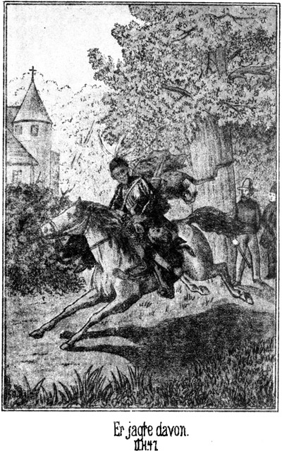Steinbach hingegen suchte mit seinen beiden Pferden das tiefere Wasser und schwamm da eine ziemliche Strecke stromaufwärts, ehe er sich dem Ufer, und zwar natürlich dem jenseitigen, näherte. Dort war der Fluß seichter, und er ritt nun längs des Ufers im Wasser weiter, bis er von der Stelle aus, an welcher er sich von Sam getrennt hatte, ungefähr eine halbe Wegsstunde zurückgelegt hatte.
Bis hierher, hoffte er, würden die Maricopa's nicht kommen, und darum lenkte er aus dem Wasser heraus an das Ufer. Dieses Letztere machte hier eine scharfe Krümmung, so daß er mit dem Blicke dem Flusse nicht weiter aufwärts zu folgen vermochte.
Er wollte nun weiter reiten, landeinwärts, der Gegend von Silber-City zu, um wo möglich trotz des Umwegs, welchen er zu machen hatte, noch vor dem Dicken am Orte des Stelldicheins einzutreffen. Aber sein Pferd weigerte sich, fortzugehen. Es wendete den Kopf stromaufwärts, spielte in höchst verdächtiger Weise mit den Ohren und schnaubte leise, zum Zeichen, daß in der angegebenen Richtung irgend Etwas nicht in Ordnung sei. Er kannte sein Pferd zu gut, als daß er diese Warnung hätte unberücksichtigt lassen mögen. Darum führte er die beiden Pferde nach einem Baume, wo sie von einem nebenan stehenden Gebüsch verdeckt wurden, band sie an den Stamm desselben und stieg ab. Nachdem er sich überzeugt hatte, daß die Fesseln des jungen Indianers sich noch in Ordnung befanden, so daß dieser sich nicht zu befreien vermochte, legte er sich auf den Boden nieder und kroch längs des Ufers hin, dem Strome entgegen.
Er wußte, daß sein vortreffliches Pferd ohne genügenden Grund kein Warnungszeichen gebe, und wollte nun sehen, worin dieser Grund bestand.
Nur wenige Schritte weit war er gekommen, so weit, daß er mit dem Auge der vorhin angegebenen Krümmung des Flusses zu folgen vermochte, als er den Gegenstand erblickte, den er suchte: Ein Reiter kam den Fluß herabgeschwommen.
Das Pferd desselben schien ein vortreffliches Thier zu sein. Es schwamm außerordentlich schnell und doch so ruhig und leicht, wie es schien ganz ohne alle Anstrengung. Das Gesicht des Reiters war noch nicht zu erkennen. Er trug einen sehr breitrandigen Sombrero. Seine Kleidung war aus Büffelleder gefertigt und hatte den Schnitt, welchen man bei den mexikanischen Rinderhirten zu finden pflegt. Der Mann hatte die hohen Stiefeln, an welchen Paar gewaltige Sporen befestigt waren, ausgezogen, um sie nicht naß werden zu lassen, und sie sich zusammengebunden über den Nacken gehängt. Mit der Rechten das Pferd lenkend, trug er mit der Linken die Büchse, deren Schaft mit silbernen Nägeln beschlagen war, welche im Sonnenlichte glänzten. Als er bei der Schnelligkeit, mit welcher sein Pferd schwamm, jetzt näher kam, wurden auch seine Züge deutlicher. Er konnte nicht viel über drei- oder vierundzwanzig Jahre alt sein. Sein nordisch weißes Gesicht war außergewöhnlich hübsch zu nennen. Der kleine Schnurrbart, welchen er trug, machte es pikant. Seine dunklen, scharfen Augen hielt er suchend auf das linke Flußufer gerichtet. Am rechten aber befand sich Steinbach.
Dieser vermochte sich die Anwesenheit dieses jungen Mannes nicht zu erklären. Er ließ ihn so weit heran kommen, daß er ihn anrufen konnte, ohne die Stimme sehr laut erheben zu müssen. Dann richtete er sich aus seiner liegenden Stellung auf.
»Hallo, Sennor! Wollt Ihr nicht ein Wenig näher kommen?« redete er ihn an.
Der Fremde fuhr erschrocken zusammen. Doch schien er eine sein Alter übersteigende Geistesgegenwart zu besitzen, denn zugleich mit seinem Blicke richtete er auch den Lauf seines Gewehres auf Steinbach.
»Macht keine Dummheit, Sennor!« sagte dieser. »Ich bin kein Feind von Euch, Euer Schuß würde mich übrigens nicht treffen, Euch aber Denjenigen verrathen, die es nicht so gut mit Euch meinen wie ich.«
»Caramba, ein Weißer!« antwortete der Andere. »Das ist etwas Anderes. Ich werde also hinüber zu Euch kommen, Sennor.«
Er ließ das Gewehr sinken und lenkte sein Pferd zu Steinbach herüber.
»Wer seid Ihr?« fragte er, als er das Ufer erreicht hatte. Doch blieb er vorsichtig im Wasser halten und ließ seinen Blick scharf herumschweifen, ob sich vielleicht etwas Verdächtiges sehen lasse.
»Ich bin ein ehrlicher Prairiejäger. Ihr braucht kein Mißtrauen zu haben.«
»Hm! Euer Gesicht gefällt mir freilich. Aber der Teufel traut zuweilen seiner eigenen Großmutter nicht, und wie man sagt, soll er alle Ursache dazu haben. Seid Ihr allein?«
»In diesem Augenblicke, ja.«
»Grad das befremdet mich.«
»Warum?«
»Weil ein erfahrener Jäger, wie Ihr sein wollt, nicht allein in eine so gefährliche Gegend geht.«
»Ah so! Seid Ihr allein?«
»Nun, das könnte mich doch auch befremden. Ich will aber Eurem jungen, ehrlichen Gesichte trauen. Darf ich vielleicht Euern Namen erfahren?«
»Warum nicht! Ich heiße Carlos Cuartano.«
»Carlos – Carlos – hm! Dieser Vorname wurde mir vor ganz kurzer Zeit genannt. Es wäre freilich mehr als eigenthümlich, wenn ich richtig vermuthete; aber hier und in der Welt ist ja Alles möglich. Ist Euch vielleicht ein anderer Vorname bekannt, ein Mädchenname – – – Magda meine ich?«
Der junge Mann richtete sich schnell in den Steigbügeln empor und antwortete überrascht:
» Valgame Dios! Magda! Habt Ihr sie etwa gesehen, Sennor?«
»Ja.«
»Himmel! Ist's wahr?«
»Nicht nur gesehen, sondern sogar gesprochen.«
»Das ist unmöglich!«
»Warum?«
»Weil sie von diesen verdammten Indianos bewacht wird.«
»Pah! Ich habe mich dennoch zu ihr geschlichen.«
»Wann?«
»Vor nicht viel mehr als einer Stunde.«
»Also am hellen, lichten Tage?«
»Ja.«
Der Andere zog die Brauen zusammen, fixirte Steinbach mit finsterem Blicke und meinte:
»Sennor, ich bin zwar noch jung, habe aber keineswegs die Gewohnheit, mich an der Nase fassen zu lassen.«
»Das ist auch nicht meine Absicht. Ich sage Euch nichts als die reine Wahrheit.«
»Dann werde der Teufel klug aus Euch. Euer Gesicht ist dasjenige eines ehrlichen Mannes; aber Das, was Ihr mir sagt, klingt so unglaublich, daß ich an der Wahrheit zweifele. Ich bin kein Kind und habe bereits Vieles erfahren und Vieles gewagt und durchgemacht; doch daß sich Einer am hellen Tage inmitten einer Indianerbande schleicht, um die Gefangene derselben zu sehen und zu sprechen, das ist verwegen.«
»Und dennoch ist es wahr. Wenn Ihr Euch aus dem Wasser herausbemühen wollt, will ich Euch erzählen, wie es zugegangen ist.«
»Danke, Sennor! Es wird besser sein, wenn ich es gar nicht erfahre. Wer so wenig Zeit hat wie ich, der darf die kostbaren Minuten nicht vergeuden, um ein Märchen anzuhören.«
»Ganz wie Ihr wollt. Ich vermuthe, daß Ihr es so eilig habt, weil Ihr die Maricopa's sucht?«
»Das ist allerdings der Fall.«
»Nun, so schwimmt in Gottes Namen weiter; so werdet Ihr sie in einer Viertelstunde finden, sie Euch aber auch. Adios, Sennor!«
Er wendete sich um und that, als ob er fortgehen wolle. Das lag aber nicht in der Absicht des jungen Mannes. Dieser hatte bisher mit seinem Mißtrauen gekämpft. Er besiegte es und bethätigte dies durch die Bitte:
»Halt, Sennor! Es wird doch besser sein, wenn ich Euch anhöre. Vorher aber sagt mir Euern Namen, da Ihr auch den meinigen gehört habt.«
Steinbach hemmte seinen Schritt und antwortete:
»Gern. Ich heiße Steinbach.«
»Wie? Steinbach? Das ist ja ein germanischer Name!«
»Allerdings. Ich bin ein Deutscher.«
»Ein Deutscher! Hurrah! Das ist prächtig!«
Er gab seinem Pferde Schenkeldruck, daß es in einem riesigen Satze aus dem Wasser aus das Ufer sprang, so daß er beinahe Steinbach umgeritten hätte.
»Vorsicht, Vorsicht!« lachte dieser. »Wollt Ihr mich etwa caput reiten, Sennor!«
»Ach was Sennor! Laßt dieses spanische Wort bei Seite! Ich bin auch ein Deutscher.«
»Ihr? Aber Ihr heißet ja Cuartano!«
»Nun, wie heißt dieses Wort auf Deutsch?«
»Zimmermann.«
»Richtig! Und so heiße ich eigentlich: Zimmermann, Karl Zimmermann, oder vielmehr Karl von Zimmermann. Ich bin also sogar adelig, wie Sie hören, mein bester Herr Steinbach.«
Er sagte das lachend. Er war vom Pferde gesprungen. Am ganzen Gesichte vor Freude glänzend streckte er Steinbach beide Hände zum Gruße entgegen. Dieser drückte sie ihm herzlich und antwortete:
»Das ist freilich eine höchst angenehme Ueberraschung. Als ich Sie den Fluß herabkommen sah, hielt ich Sir für einen verirrten Vaquero, konnte aber nicht ahnen, daß Sie ein Landsmann von mir sind.«
Natürlich gebrauchten sie jetzt ihre Muttersprache. Zimmermann blickte suchend umher und meinte dann:
»Jetzt aber sind Sie über mich im klaren; doch ich habe Sie noch als Räthsel vor mir stehen. Bitte, bekennen Sie es, daß Sie mir vorhin nicht die Wahrheit gesagt haben. Sie wollten mich ein Wenig foppen?«
»Ist mir nicht eingefallen.«
»So hätten Sie also wirklich Magda gesehen und sogar mit ihr gesprochen?«
»Gewiß.«
»Ich kann es nicht glauben. Ich begreife es nicht. Sie haben nicht einmal ein Pferd.«
»O doch. Kommen Sie mit. Es steht ganz in der Nähe.«
»Gut! Aber erlauben Sie, daß ich vorher meine Stiefel anziehe. Ich habe mich Ihnen leider als Barfüßler vorgestellt.«
*
Und während er hastig mit den Füßen in die Stiefeln fuhr, konnte er doch seine Zweifel nicht zurückhalten. Er sagte:
»Sie kennen den Vornamen des Mädchens. Etwas Wahres muß doch an Ihren Worten sein. Wäre dies nicht der Fall, so würde ich doch als sicher annehmen, daß Sie mich utzen wollen. Wird denn Magda so schlecht bewacht, daß es Ihnen so leicht geworden ist, zu ihr zu gelangen?«
»Hm! Leicht ist es mir freilich nicht geworden. Ich werde es Ihnen erzählen. Vor allen Dingen aber kommen Sie zu meinem Pferde.«
Zimmermann warf die Büchse über, ergriff sein Pferd am Zügel und folgte Steinbach. Als Beide hinter das Buschwerk an den Baum gelangten, blieb der Erstere im höchsten Grade erstaunt stehen und rief:
»Alle Teufel! Sehe ich recht?«
Sein Blick war auf den Gefangenen gerichtet.
»Nun?« meinte Steinbach lächelnd.
»Der ›linke Finger‹!«
»Allerdings.«
»Und zwar gefangen?«
»Wie Sie sehen! Kennen Sie ihn?«
»Mehr als zur Genüge. Haben Sie selbst ihn gefangen genommen?«
»Natürlich. Sie werden wohl nicht annehmen, daß die ›beiden Finger‹ sich aus eigenem Antriebe gefangen gegeben haben.«
»Höre ich denn recht? Auch der andere Bruder ist gefangen?«
»Auch er.«
»Und Sie sprachen in der Mehrzahl? Sie sind also nicht allein hier?«
»Ich hatte einen Gefährten, welcher mit dem anderen Gefangenen vorausgeritten ist. Er ist ein sehr wackerer Westmann und heißt Sam Barth, ein Deutscher.«
»Donner und Doria! Ist es etwa der dicke Sam, von dem man so viel erzählen hört?«
»Ganz derselbe.«
»Nun, wenn dieser bei Ihnen gewesen ist, so glaube ich es, daß Sie sich bei hellem Tage unter die Rothen gewagt haben. Der Dicke ist ebenso pfiffig wie verschlagen. Ihm ist so Etwas zuzutrauen. Was aber werden Sie mit den beiden Gefangenen machen?«
»Wir bringen sie hinauf nach dem Silbersee.«
»Sogleich? Direct?«
»Ja. Und ich lade Sie ein, mich zu begleiten.«
»Das ist leider unmöglich. Ich freue mich zwar königlich, einen Landsmann getroffen zu haben, auch würde ich die Gelegenheit, den berühmten Dicken kennen zu lernen, sehr gern ergreifen; aber meine Pflicht gestattet mir dies nicht. Ich darf nicht von den Fersen der Maricopa's weg. Ich habe mir geschworen, Magda zu befreien.«
»Weiter nichts?«
»Weiter nichts! Ist das nicht genug? Fragen Sie den Dicken. So ein Westmann wie er weiß ganz genau, was es heißt, eine Gefangene aus der Mitte von hundert Indianern heraus zu holen.«
»Nun, ich kann es mir, auch ohne ihn zu fragen, denken, daß so Etwas nicht leicht ist. Sie könnten Ihren Vorsatz sehr leicht mit dem Leben bezahlen.«
»Das kann mich nicht abschrecken. Bitte, Herr Steinbach, erzählen Sie mir, wie Sie zu der Gefangenen gekommen sind, wie es Ihnen gelungen ist, mit dem Mädchen zu sprechen, und wo ich überhaupt die Indianer zu suchen habe. Dann werde ich mich von Ihnen verabschieden.«
»Sie werden sich nicht von mir verabschieden, sondern mit mir nach dem Silbersee reiten.«
»Unmöglich.«
»Es ist nicht nur möglich, sondern es bleibt Ihnen sogar keine andere Wahl. Bereits in diesem Augenblicke werden die Maricopa's die Söhne des Häuptlings vermissen und nach ihnen suchen. Gehen Sie stromab, so gehen Sie also grad in Ihr Verderben. Sie wollen Magda befreien; ich beabsichtige ganz dasselbe. Ich bin überzeugt, daß sie heut Abend frei sein wird. Sie soll nämlich von den Indianern nach dem Silbersee gebracht werden. Dort erwarten wir sie.«
Zimmermann blickte den Sprecher ganz erstaunt an. Er schüttelte den Kopf und meinte:
»Ich verstehe Sie nicht. Wollen Sie mir erklären.«
»Jetzt haben wir zu einer Erklärung keine Zeit. Steigen Sie in den Sattel und kommen Sie mit mir!«
»Hm! Wissen Sie genau, daß die Kerls nach dem Silbersee wollen?«
»Ganz genau. Wenn Sie meinem Rathe folgen, werden Sie schneller und gefahrloser Ihr Ziel erreichen, als wenn Sie hinter den Rothen bleiben. Ich will Ihnen, um Sie zu beruhigen, drei Namen nennen, welche Ihnen vielleicht Garantie bieten, daß Sie mir trauen können. Magda, welche Sie befreien wollen, steht unter dem Schutze dieser drei Männer. Ich meine den dicken Sam, den Apachenhäuptling ›starke Hand‹ und endlich den Fürsten der Bleichgesichter.«
»Ist es möglich! Diese beiden Letzteren befinden sich auch hier?«
»Sie werden sie am Silbersee sehen. Grad jetzt sind sie im Begriff, bei den Rothen zu recognosciren.«
»Wann dies der Fall ist, so kann ich allerdings mit Ihnen reiten. Was ich niemals fertig brächte, diese drei berühmten Männer machen es möglich. Ich werde mich also an sie wenden. Sie, lieber Landsmann, sind sehr zu beneiden, daß Sie das Glück gehabt haben, diese drei Koryphäen des fernen Westens kennen zu lernen. Wie ist denn das geschehen?«
»Ganz zufällig. Sie kennen ja wohl das deutsche Sprüchwort, daß die dümmsten Bauern die größten Kartoffeln haben. So habe auch ich mehr Glück gehabt, als ich eigentlich verdiene. Wir können später davon sprechen. Jetzt aber wollen wir uns hier fortmachen. Der Boden brennt mir unter den Füßen.«
Der gefangene, junge Indianer hatte so gethan, als ob er Zimmermann gar nicht bemerkt habe. Auch nun, als die beiden Weißen aufstiegen und im Galopp mit ihm über die Ebene ritten, verzog er keine Miene. Er blickte starr auf den Hals seines Pferdes nieder und glich einer leblosen, auf das Thier gebundenen Bildsäule.
»Sie kennen ihn,« sagte Steinbach zu Zimmermann. »Kennt er Sie vielleicht auch?«
»Ja. Er hat mich öfters gesehen.«
»Wo?«
»Im Todesthale, wo er mit seinem Vater und Bruder zuweilen bei Roulin verkehrte.«
»Ist dieser Roulin der Besitzer der Quecksilbergruben?«
»Ja. Auch ich war einige Male bei ihm. Haben Sie von ihm gehört und erfahren?«
»Nichts weiter, als was Magda mir vorhin sagte.«
»Ach bitte, jetzt haben wir Zeit und brauchen die Rothen nicht mehr zu fürchten. Haben Sie die Güte, mir zu erzählen, wie Sie mit Magda zusammengetroffen sind, Herr Steinbach.«
Der Genannte erzählte ihm seine Erlebnisse, aber so, daß der dicke Sam als Derjenige erschien, welchem das ganze Verdienst zufiel. Als er geendet hatte, sagte Zimmermann, tief Athem holend:
»Gott sei Dank! Sie nehmen die größte Sorge von mir. Ich hatte nämlich Angst, daß die Dame viel gequält und gemartert werde.«
»Aeußerliche Noth habe ich ihr nicht angesehen. Aber, wollen wir aufrichtig sein, lieber Freund! Ist Magda vielleicht Ihre Verlobte?«
»Leider nein.«
»Aber Geliebte?«
»Auch nicht – oder doch!«
Er erröthete und blickte eine kleine Weile schweigend vor sich hin. Dann fuhr er fort:
»Sie sind mir als Landsmann, Freund und Helfer begegnet; ich darf Sie über Das, was ich mittheilen kann, nicht im Unklaren lassen. Meinen Namen kennen Sie. Ueber meine übrigen Verhältnisse habe ich zu schweigen. Ich kam aus gewissen Gründen in dieses Land und in die Gegend von Palmetto. Ich hörte von dem berüchtigten Todesthale reden, Death Valley nennt es der Amerikaner, und beschloß, es zu besuchen. Dort angekommen, war ich für einige Tage der Gast Roulins, den die Indianer den ›silbernen Mann‹ nennen. In seinem Hause sah ich Magda. Sie machte einen Eindruck auf mich, den ich unmöglich beschreiben kann. Roulin bemerkte es und wies mir die Thür. Ich mußte gehen, kam aber wieder, um sie heimlich zu sehen. Es gelang mir, einige wenige Worte mit ihr zu wechseln. Von Liebe aber haben wir nicht gesprochen. Als ich zum letzten Male kam, war Roulin fort und sie mit ihm. Ich bekam Angst um sie und erkundigte mich. Ich erfuhr nach großer Mühe, daß er mit ihr unter der Begleitung der Maricopa's nach Osten geritten sei. Das konnte nur eine für sie gefährliche Veranlassung haben; daher zögerte ich keinen Augenblick, dem Zuge zu folgen. Ueber den Colorado bis hierher habe ich die Spuren der Rothen verfolgt. Weiteres zu erreichen aber ist mir unmöglich gewesen.«
»So kennen Sie also den eigentlichen Zweck dieser Reise des silbernen Mannes gar nicht?«
»Nein.«
»Hm! Er will sich die Schätze des Silbersees holen.«
»Also die Taube des Urwaldes berauben?«
»Ja. Dabei soll Magda auf einem der Häuptlingsgräber geopfert werden.«
»Herrgott im Himmel! Er will sie tödten?«
»Es scheint so. Sie hat seine Werbung abgewiesen, und nun will er sich rächen.«
»Vielleicht ist es nur eine Drohung. Er will sie wohl nur einschüchtern.«
»Möglich. Jedenfalls aber ist er ein Mensch, mit dem wir einige ernste Worte sprechen werden.«
»Er ist mir seit dem ersten Augenblicke unheimlich vorgekommen. Kein Mensch kennt sein Herkommen, seine Vergangenheit. Auch sein gegenwärtiges Treiben liegt im tiefsten Geheimnisse. Er bewohnt eine fürchterliche Gegend; er fördert Massen van Quecksilber, ohne daß man weiß wie. Man sieht zwar die Gruben, niemals aber einen einzigen Arbeiter. Die abergläubigen Bewohner der Nachbarschaft sagen, daß er mit dem Teufel einen Pakt geschlossen habe und daß die bösen Geister ihm das giftige Metall aus der Erde holen. Ich bin bestrebt gewesen, in dieses Dunkel einen Blick zu werfen; es ist mir aber nicht gelungen.«
»Er hat Arbeiter. Magda's Eltern befinden sich ja im Schacht, wie sie mir gesagt hat.«
»Mir hat sie dasselbe gesagt; aber es ist das wohl ein Irrthum von ihr. Die Arbeiter müssen doch, wenn die Schicht vorüber ist, zu Tage fahren.«
»Hm! Vielleicht bringen wir noch mehr zu Tage, als nur die Arbeiter. Ist Ihnen über Magda's Verhältnisse Näheres bekannt?«
»Nein. Sie heißt Magdalene Hauser, hat also einen deutschen Namen. Zwischen ihren Eltern scheint ein sehr eigenthümliches Verhältniß obzuwalten. Doch habe ich viel zu wenig mit ihr verkehren und sprechen können, als daß es mir möglich gewesen wäre, mir ein klares Bild zu machen. Sie hat also meinen Namen genannt?«
»Ja. Jedenfalls hat sie mich im ersten Augenblicke für Sie gehalten.«
Das Gesicht Zimmermanns strahlte vor Glück. Er sagte:
»Also hat sie doch gehofft, daß ich ihr folge, um sie zu retten. Sie soll sich nicht getäuscht haben. Ich werde mein Leben wagen und es gern hingeben, um sie aus der Hand dieses Roulin zu erlösen.«
»Gewagt haben Sie es bereits, indem Sie den Maricopa's nachgefolgt sind. Hinzugeben aber brauchen Sie es hoffentlich nicht. Sie haben jetzt Verbündete, und Mehreren wird das leichter gelingen, was Ihnen allein wohl kaum möglich gewesen wäre. Aber wir wollen unsere Pferde jetzt besser ausgreifen lassen. Ich werde erwartet und möchte die Geduld des Dicken nicht zu sehr auf die Probe stellen.«
Zimmermanns Pferd war ein ausgezeichnetes Thier, dasjenige des Indianers nicht minder, und so flogen die drei Reiter mit größerer Schnelligkeit als derjenigen des Windes über die Prairie dahin. Silber-City blieb ihnen zur Linken liegen. Dann bauten sich die Berge in der Ferne auf. Sie rückten denselben sehr schnell näher. Bald erreichten sie die erste Vorhöhe und auch das ausgetrocknete Bett des betreffenden Baches. Dort hielt Sam mit seinen Gefangenen.
»Hallo!« rief er bereits von Weitem. »Wer ist denn eher da, Sie oder ich, Master Steinbach?«
»Na, Sie, wie es scheint.«
»Ja. Ihr Pferd ist also – – – Sapperment, Sie bringen ja noch Einen mit!«
»Das ist der Grund, daß ich mich verspätet habe. Sie werden Freude haben, einen Landsmann begrüßen zu können, Master Barth.«
»Einen Landsmann? Einen Deutschen?«
»Ja. Dieser Herr heißt Zimmermann. Sie können deutsch mit ihm sprechen.«
»Prächtig! Herrlich! Aber es ist doch wahr! Hier in diesem Amerika stolpert man heut' zu Tage nur so über die Deutschen hinweg. Sogar in diesem entlegenen Winkel schießen sie herum wie die Fliegen. Also grüß Gott, Landsmann! Darf ich wissen, in welcher Gegend Sie Ihre ersten Zähne erhalten haben?«
»In Bayern,« antwortete Zimmermann, dem Dicken die Hände schüttelnd.
»Sakkerment! Da sind wir ja Nachbarn! Ich bin nämlich ein Sachse. Kennen Sie vielleicht Herlasgrün?«
»Dem Namen nach.«
»Na, da bin ich her. Wenn Sie mit uns reiten, so werden Sie da oben am See noch mehr Landsleute sehen, auch meine Auguste sogar. Aber wie haben Sie zwei Beide sich denn eigentlich gefunden?«
Es wurde ihm in Kürze erklärt, und dann setzten die drei Weißen mit ihren beiden indianischen Gefangenen den Ritt fort.
Je höher sie kamen, desto mehr Apachenindianer erblickten sie, welche langsam denselben Weg verfolgten. Sie alle waren gut bewaffnet, aber zu Fuße. Sie hatten das Zeichen, welches Wilkins ihnen gegeben hatte, bemerkt. Es galt, das Missionsgebäude gegen einen Ueberfall zu vertheidigen, und dazu konnten sie keine Pferde gebrauchen. Sie traten, wenn die Reiter an ihnen vorüberkamen, still zur Seite, um sie vorüber zu lassen, und stießen höchstens beim Anblicke der Gefangenen ein halblautes und verwundertes ›Uff‹ aus.
Oben am See war kein Mensch zu sehen; aber als sie dann in den Hof des Missionsgebäudes gelangten, erblickten sie wohl gegen hundert Apachen, welche ruhig und wortlos da am Boden saßen, bereit, die Taube des Urwaldes gegen die Feinde zu vertheidigen.
Draußen aber ließen sie sich nicht sehen. Es war ja möglich, daß die Maricopa's Späher ausgesandt hatten, und diese sollten Alles still und leblos finden, um denken zu müssen, daß man von ihrer Annäherung keine Ahnung habe. –
Als Wilkins, Jim und Tim herbeikamen, gab es freilich ein Hallo beim Anblick der Gefangenen. Steinbach hatte Sam heimlich gebeten, noch zu verschweigen, daß er der Fürst der Bleichgesichter sei, und so kam es, daß man dem Dicken den Löwenantheil des Ruhmes zusprach.
Dann wurde Kriegsrath gehalten. Steinbach gab den Rath, erst die Rückkehr der ›starken Hand‹ zu erwarten. Wilkins ging darauf ein. Er hielt es überhaupt für das Allerbeste, die Feinde ruhig herbeikommen zu lassen, um sie dann desto sicherer vernichten zu können.
»Vernichten?« sagte Steinbach. »Das ist meine Absicht nun freilich nicht. Auch die Rothen sind Menschen, und man soll nicht ohne die größte Noth Menschenblut vergießen.«
»Pah!« antwortete Sam. »Was Ihr da sagt, das klingt freilich sehr human und civilisirt, ist aber trotzdem nicht viel werth. Diese Maricopa's sind gekommen, um zu rauben und zu plündern. Sie werden jeden Scalp mitnehmen, den sie sich überhaupt verschaffen können. Wir haben uns unserer Haut zu wehren. Falsch angedrohte Nachsicht kann uns nur Schaden bringen. Ich habe mir ganz besonders diesen weißen Roulin ausgelesen. Er ist ein Schurke, der uns die Rothen auf den Hals hetzt; er wird ganz sicher meine Kugel bekommen.«
»Wenn Ihr mir und uns Allen einen Gefallen thun wollt, so unterlaßt Ihr das!«
»Warum?«
»Wenn Ihr ihn tödtet, so kann er mir keine Auskunft geben. Ich habe die Ahnung, daß bei ihm der Schlüssel zu einem Räthsel steckt, welches uns Alle, besonders aber Master Wilkins interessirt. Der Mann muß leben bleiben, um uns Auskunft geben zu können.«
»Meint Ihr? Na, ich will Euch nicht widersprechen, und hoffe, daß Ihr Euch nicht irrt. Er mag sich aber dennoch in Acht nehmen, daß er meiner Büchse nicht zu nahe kommt, sonst könnte es ihr einfallen, auch ohne meinen Willen loszugehen.«
Die Vorbereitungen, welche getroffen wurden, bestanden zunächst in Anfertigung von Leuchtgegenständen, welche auf das platte Dach des Missionsgebäudes geschafft wurden, um da beim Nahen der Feinde angebrannt zu werden. Es war Petroleum, Pech und Harz genug vorhanden zu einem Feuer, mit welchem man das ganze Thal des Sees beleuchten konnte.
Die beiden gefangenen Indianer waren eingeschlossen worden. Zimmermann hatte sich schnell mit den Bewohnern des Hauses bekannt gemacht. Man saß in verschiedenen Gruppen im Hofe, um sich die Erlebnisse früherer Zeiten zu erzählen und sich in Vermuthungen über den Verlauf des zu erwartenden Abenteuers zu ergehen.
Als es dunkel geworden war, hatten sich wohl an hundertfünfzig Indianer eingefunden, welche wohlbewaffnet des Angriffsaugenblickes harrten. Der Häuptling hatte sich noch nicht eingefunden. Wilkins wollte in Sorge um ihn gerathen. Er befürchtete, daß ihm ein Unglück geschehen sei; aber Steinbach beruhigte ihn.
»Habt keine Sorge, Sir! Wie ich die ›starke Hand‹ kenne, so kommt er nicht eher, als die Feinde selbst, um sie uns anzumelden. Mir ist nicht im Geringsten bange um ihn.«
Es zeigte sich später, daß er Recht hatte.
Es war gegen Mitternacht. Draußen herrschte dichte Finsterniß. Ruhig und dunkel lag auch das Gebäude da. Keins der Fenster, welche nach Außen führten, war erleuchtet. Da klopfte es leise an das Thor; die alte Indianerin öffnete den Schieber und fragte, wer draußen sei. Es war der Apachenhäuptling. Er ging, als sie ihn einließ, wortlos an ihr vorüber. Sein Pferd hatte er nicht mit; er hatte es an irgend einer sicheren Stelle untergebracht, um besser lauschen und beobachten zu können. Im Hofe brannte ein Feuer, dessen Schein aber nicht nach Außen dringen konnte. Es beleuchtete die Gestalten der Apachen. Er rief ihnen nur einige kurze Worte zu. Sie verschwanden sofort, um sich auf die Plattform des Hauses und in diejenigen Stuben zu vertheilen, deren Fenster nach auswärts gingen. Und als er in das Gemach kam, in welchem die Weißen versammelt waren, sagte er nichts als:
»Die Hunde der Maricopa's sind da.«
»Endlich!« meinte Sam. »Nun kann das Theater losgehen. Dieses ewig lange Warten ist das Unangenehmste, was es nur geben kann. Werden sie sogleich angreifen.«
»Sie sind hart hinter mir her und nahen sich jetzt dem Hause, welches sie umzingeln werden. Haben meine weißen Brüder dafür gesorgt, daß ein Feuer angebrannt wird?«
Er erhielt natürlich eine bejahende Antwort, und nun begab sich ein Jeder auf seinen Posten. Der dicke Sam ließ es sich nicht nehmen, hinter das Eingangsthor placirt zu werden. Er glaubte da, am ersten zum Schusse zu kommen.
Draußen war nicht das leiseste Geräusch zu vernehmen. Sam stand am Guckloche und blickte hinaus, konnte aber nichts, gar nichts sehen. Dennoch wußte er, daß die Angreifer nur wenige Schritte entfernt seien. Erkennen konnte er sie nicht; es war mehr Instinct, welcher es ihm sagte.
Verwundert horchte er auf, als er dann den Schritt eines Pferdes hörte, welcher langsam näher kam und draußen am Thore anhielt. Man klopfte. Er wartete eine Weile, um dem Klopfenden glauben zu machen, daß man bereits im Schlafe sei, und erst nach wiederholtem Klopfen schob er den Schieber zurück und fragte laut hinaus:
»Wer ist da?«
»Ein Bote,« antwortete der Betreffende. Er war seiner Ausdrucksweise nach ein Indianer.
»An wen?« fragte Sam.
»An die Taube des Urwaldes.«
»Von wem?«
»Von der ›starken Hand‹.«
»Wer bist denn Du?«
»Ich bin der ›fliegende Pfeil‹ vom Volke der Apachen.«
»Wunderbar! Wo befindet sich denn der große Häuptling, welcher Dich sendet?«
»Er jagt den Büffel an den Ufern des Gila.«
Jetzt vernahm Sam ein leises Schleichen. Es kamen mehrere der Angreifer herbei. Der Plan war, sich öffnen zu lassen und mit Demjenigen, der sich für einen Boten ausgab, zugleich einzudringen. Sam hatte mit demselben so laut gesprochen, daß man es oben auf dem Dache hören konnte. Er antwortete:
»Er jagt? Hm! Mein rother Bruder irrt sich wohl!«
»Der ›fliegende Pfeil‹ irrt sich nicht.«
»Und dennoch. Der berühmte Häuptling ›starke Hand‹ befindet sich jetzt hier in diesem Hause. Und Derjenige, welcher sich den ›fliegenden Pfeil‹ nennt, ist auch hier.«
»Uff!« erklang es draußen im Tone des Schreckes.
»Ja,« lachte Sam. »Wer einen Andern übertölpeln will, der muß natürlich klüger sein, als dieser Andere. Ihr albernen Maricopa's aber seid die dümmsten Kerls, welche es nur geben kann. Ich war heut bei Euch in Eurem Lager und habe die Söhne des ›eisernen Mundes‹ aus Eurer Mitte geholt und als Gefangene hierher gebracht. Jetzt nun wißt Ihr, woran Ihr seid. Dir aber will ich auf die Lügen, welche Du uns machst, mein Ja und Amen geben.«
Er hatte den Lauf seines Gewehres durch das Guckloch gesteckt. Sein Schuß krachte. Bei dem Blitz desselben sah man den Indianer vom Pferde sinken. Zugleich aber sah man eine Anzahl seiner Genossen, welche sich herbei geschlichen hatten, um mit ihm ins Haus zu dringen.
Ein wüthendes Geheul antwortete auf den Schuß; dann trat eine momentane tiefe Stille ein. In diesem Augenblicke loderte oben auf der Plattform des Hauses eine riesige Petroleumflamme auf, so daß die ganze Umgebung fast tageshell erleuchtet war. Die Belagerten sahen, daß die Maricopa's das Haus rundum umgaben. Da ertönte von oben eine tiefe, mächtige Stimme:
»Hier steht ›starke Hand‹, der Häuptling der Apachen, um seinen Feind, den ›eisernen Mund‹, zu empfangen. Gebt Feuer!«
Von oben herab und aus allen Fensteröffnungen erschallten Schüsse. Jede Kugel traf, da die Flamme die Angreifer hell beleuchtete und ein genaues Zielen ermöglichte. Die Maricopa's erhoben ein Wuthgeschrei, welches noch weit gräßlicher klang, als das Brüllen von hundert wilden Thieren. Während desselben rannten sie davon, um außer Schußweite zu kommen. Diejenigen, welche nur verwundet waren, hinkten oder krochen auch davon. Die Apachen wollten sie niederschießen; Steinbach aber gab dies nicht zu.
Als dann einige der Maricopa's sich vorsichtig wieder näherten, um zu versuchen, ob man ihnen erlauben werde, ihre Leichen zu holen, war Steinbach der Ansicht, daß man es ihnen gestatten solle; aber ›starke Hand‹ sagte in entschiedenem Tone:
»Die Scalpe der Todten gehören meinen Leuten. Man soll sie uns nicht nehmen. Mein weißer Bruder sammelt nicht die Scalpe seiner Feinde; wenn ich den Apachen verbieten wollte, sich die Zeichen des Sieges zu nehmen, so würden sie mir niemals wieder gehorchen. Howgh!«
Dieses letztere Wort, welches wie ›Hau‹ ausgesprochen wird, hat die Bedeutung, daß es bei der Bestimmung, welche er getroffen hatte, verbleiben werde. Die herbei schleichenden Maricopas wurden durch einige Kugeln vertrieben; die Leichen blieben also im Bereiche des Hauses liegen.
Der Feind hatte einen solchen Empfang erfahren, daß er es nicht wagte, einen Angriff zu unternehmen. Er hatte sich in sichere Entfernung zurückgezogen. Die Flamme auf dem Hause wurde bis zum Anbruch des Morgens unterhalten; dann verlöschte sie. Als der Tag heller wurde, konnte man die Todten zählen. Es waren ihrer über vierzig.
Die Maricopas lagerten unweit des Seeufers unter den Bäumen. Sie verhielten sich vollständig ruhig; es war also anzunehmen, daß sie irgend einen Entschluß gefaßt hatten.
Steinbach saß auf dem platten Dache und hatte sein Fernrohr in der Hand, durch welches er die Feinde betrachtete. Wilkins befand sich bei ihm und ließ sich das Rohr auch geben. Als er eine Weile hindurchgeblickt hatte, stieß er einen Ruf aus, dem man es nicht anhörte, ob er ein Zeichen der Freude oder des Schreckes sei.
»Was giebt es?« fragte Steinbach.
»Eine Ueberraschung, eine ungeahnte Ueberraschung. Arthur ist dabei.«
»Arthur? Ist das nicht der Name Ihres verschwundenen Neffen?«
»Ja.«
»Der sollte bei ihnen sein!«
»Ja. Ich sehe ihn sitzen.«
»Wo?«
»Neben dem Häuptlinge, zur linken Seite desselben.«
»Verzeihung, Sir! Der, den Sie meinen, ist jener Roulin, von dem ich erzählte.«
»Sehr genau.«
»Ich kann es nicht glauben. Es muß Arthur sein.«
»Jedenfalls nur eine Aehnlichkeit!«
»O nein. Eine solche Aehnlichkeit ist gar nicht glaubhaft. Er ist es.«
»Wollen Sie bedenken, daß dieser Mann nicht etwa der Gefangene der Maricopas ist! Er ist frei; er ist Herr seines Thuns. Wäre er Der, für den Sie ihn halten, so würde er längst in die Heimath zurückgekehrt sein.«
»Das sollte man denken. Aber wer weiß, was ihn daran hindert. In diesem Lande geschehen unbegreifliche Dinge. Arthur hat die Pflanzung verkauft; der Grund mag sein, welcher es wolle; nun aber getraut er sich nicht wieder zurück; er schämt sich, mir unter die Augen zu treten.«
»Hm! Ich kann mich nicht mit dem Gedanken befreunden, daß der Besitzer der Quecksilberwerke im Todesthale ein Verwandter von Ihnen sein solle. Vielleicht erhalten wir sehr bald Aufklärung. Sehen Sie! Es kommt einer der Rothen.«
Sie sahen einen Maricopa, welcher sich langsam dem Hause näherte. Er trug ein weiß gegerbtes Fell in der Hand und schwenkte es zum Zeichen, daß er in friedlicher Absicht komme.
»Ein Parlamentair,« sagte Wilkins. »Ich werde gleich sehen, was er will.«
»Bitte, überlassen Sie das mir!«
Wilkins sah ihn einigermaßen befremdet an. Den Parlamentair zu empfangen, das war doch Sache des Hausherrn. Da trat der Apachenhäuptling herbei. Er hatte auf der Plattform auf seiner Decke gelegen und das Nahen des Maricopas auch bemerkt. Auf denselben deutend, sagte er:
»Ein Bote des ›eisernen Mundes‹.«
»Ich werde ihn empfangen,« meinte Wilkins.
Der Apache aber schüttelte den Kopf, zeigte auf Steinbach und bestimmte:
»Mein weißer Bruder mag zu ihm hinabgehen. Er ist klug, zu thun, was am Besten ist.«
Steinbach ging. Wilkins schüttelte verwundert den Kopf und schmollte:
»Eigentlich ist es doch aber meine Sache, einen Parlamentair zu empfangen.«
»Ja, aber Du weißt nicht, was er will und wenn er eine schnelle Antwort verlangt, mußt Du Dich rasch entscheiden und kannst dabei sehr leicht das Falsche treffen.«
»Ah! Meint mein rother Bruder etwa, daß Steinbach leichter als ich das Richtige treffen werde?«
»Mein Bruder darf sich nicht beleidigt fühlen. Er wird Steinbach bald besser kennen lernen.«
Steinbach ließ sich unten das Thor öffnen und trat hinaus, da der Maricopa durch Zeichen zu verstehen gab, daß er nicht näherkommen wolle. Er schritt also auf ihn zu und fragte ihn nach seinem Begehr.
»Ich bin gesandt von dem »eisernen Munde« und soll sprechen mit der ›starken Hand‹.«
»Der Häuptling der Apachen hat jetzt keine Zeit. Du wirst also mit mir sprechen.«
Der Indianer betrachtete Steinbach mit einem langen, keineswegs ehrfurchtsvollen Blicke und sagte:
»Du bist kein Häuptling. Ich spreche nur mit Kriegern, welche Häuptlinge sind.«
»Lüge nicht! Es schmückt keine Feder Dein Haupt. Du bist ein gewöhnlicher Krieger und mußt stolz darauf sein, wenn ich mit Dir rede.«
»Sende mir die ›starke Hand‹. Mit Dir habe ich nichts zu schaffen.«
»So trolle Dich von dannen! Aber ich sage Dir, daß wir einen Boten des ›eisernen Mundes‹ nun nicht wieder empfangen werden.«
Er wendete sich scharf ab, um zu gehen. Sein entschiedenes Wesen verfehlte die beabsichtigte Wirkung nicht.
»Uff!« rief der Indsman. »Mein Bruder bleibe noch! Die rothen Männer wollen ihre Todten holen. Die weißen Krieger werden ihnen das erlauben.«
»Nein, wir erlauben es nicht. Die Scalpe der Maricopas gehören den siegreichen Apachen.«
»Sind deren Viele im Hause?«
»So viele, daß die Hälfte von ihnen genügt, die Maricopas in das Wasser des Sees zu stürzen.«
»Mein weißer Bruder nimmt den Mund so voll Wasser, daß er überläuft. Wie kommt es, daß so viele Krieger der Apachen hier sind?«
»Um Euch zu empfangen.«
»Kein Apache hat gewußt, daß wir kommen.«
»Alle haben es gewußt. Der Häuptling hat Euch am Gila umschlichen, und ich selbst bin mitten in Eurem Lager gewesen, habe gehört, was der ›eiserne Mund‹ mit Roulin sprach, und dann seine beiden Söhne gefangen genommen.«
»Sie sind auf ihren Pferden davongeritten.«
»Ich habe sie gefesselt und auf ihre Pferde gebunden. Die Maricopas sind keine Krieger. Sie stellen nicht einmal während eines Kriegszuges Wache zu ihren Pferden.«
»Wird mein weißer Bruder die Söhne des Häuptlings tödten?«
»Ja.«
Der Rothe erschrak und meinte:
»Warum soll dies geschehen? Kein Tapferer tödtet Einen, den er nicht im Kampfe besiegt hat.«
»Ich habe die Beiden besiegt und Ihr Leben gehört mir; ich kann mit ihnen thun, was mir beliebt.«
»Ihr habt unsere Krieger getödtet. Wir müssen die Todten rächen.«
»Thut das, wenn Ihr könnt.«
»Ihr habt sie nicht besiegt, sondern ermordet. Wir kamen im Frieden zu Euch. Ihr aber habt uns sofort mit Kugeln empfangen.«
»Mein rother Bruder denkt, ich habe keinen Verstand. Er gehe und lasse erst den seinigen wachsen. Ihr kommt als Räuber und Diebe und wir haben Euch demgemäß empfangen. Hast Du mir noch Etwas zu sagen, so mache es kurz!«
»Der Häuptling der Maricopas verlangt eine Unterredung mit dem Häuptling der Apachen.«
»Und wo soll diese stattfinden?«
»Nicht im Hause, sondern hier, wo wir stehen.«
»Gut. Er soll diese Unterredung haben. Er mag Roulin mitbringen und noch Einen.«
»Bringt der Häuptling der Apachen auch Leute mit?«
»Auch zwei.«
»Aber es ist Regel, daß keinem Abgesandten ein Leid geschehen darf.«
»Das wissen wir. Ihr dürft alle Waffen mitbringen. Keiner aber wird sie gebrauchen. Melde, was ich Dir gesagt habe. Ich habe keine Zeit weiter!«
Er wendete sich ab und schritt dem Hause zu, wo man ihn neugierig erwartete. Er theilte den Zweck und das Resultat der Unterredung mit. Wilkins fragte:
»Also sie kommen zu Dreien. Wer aber wird von uns zu ihnen gehen?«
»Sie, der Apache und ich. Ich bitte, mir das Wort zu überlassen, da Sie mir leicht meine Absichten verderben könnten.«
»Absichten? Was für Absichten können Sie haben?«
»Das werden Sie bald erkennen. Von Ihnen erbitte ich mir weiter nichts, als das Eine: Sehen Sie sich diesen Roulin genau an und sagen Sie mir baldigst so unbemerkt wie möglich, ob Sie in ihm Ihren Neffen erkennen. Das Uebrige überlassen Sie mir.«
»Master Steinbach, Sie sind ein räthselhafter Mann!«
»Vielleicht, ja! Da aber diesen Wilden niemals recht zu trauen ist, so müssen wir auf Alles gefaßt sein. Es ist möglich, daß sie auf Verrath sinnen und uns überfallen wollen, um uns so in die Hand zu bekommen, wie wir die beiden Söhne des Häuptlings haben. Lassen Sie also das Dach mit den besten Schützen besetzen, welche mit ihren Kugeln den Berathungsplatz bestreichen können!« –
Es dauerte wohl über eine Stunde, ehe man den Anführer der Maricopas mit seinen beiden Begleitern kommen sah.
Der Indianer ist ein ganz anderer Mann, als er gewöhnlich beurtheilt wird. Er ist vor allen Dingen ein guter Sprecher und läßt keine Gelegenheit, eine Rede zu halten, unbenützt vorübergehen. Eine solche bot sich jetzt. Da mußte denn Alles auf das Feierlichste eingeleitet und angeordnet werden.
Der ›eiserne Mund‹ nahte sich in einem Aufzuge, welcher nach indianischen Begriffen geradezu überwältigend war. Er hatte seinen besten Kriegsstaat angelegt. Von seinem kunstvoll zusammengeflochtenen Haarschopfe wehten vierundzwanzig Federn des Kriegsadlers herab. Als Mantel trug er das Fell eines Jaguars, welches mit zahlreichen Büffelschwänzen und Klapperschlangenhäuten geschmückt war. Bewaffnet war er mit allem Möglichen, so daß man sich eigentlich zu wundern hatte, wie er Alles fortbringen konnte: Büchse, Messer, Tomahawk, Lanze, Köcher, Bogen und Munitionsbeutel. Ueber die Brust hingen mehrere zusammengedrehte Lassos herab. Das Hauptstück aber trug ihm sein Begleiter voran, derselbe Indianer, mit welchem Steinbach vorhin gesprochen hatte. ES war das eine überaus lange Lanze, an deren Spitze drei Medicinsäcke hingen. Sie war mit mehreren Querleisten versehen. An diesem und an dem Schafte hingen zahlreiche Scalpe, wohl über dreißig Stück, von Weißen und von Indianern. Da auch sein ganzer Anzug mit den Scalphaaren getödteter Feinde ausgeputzt war, so konnte man auf die Anzahl von Menschen schließen, welche von der Hand des ›eisernen Mundes‹ gefallen waren.
Roulin ging an seiner Seite, aber um einen halben Schritt zurück.
Auf dem bestimmten Platze angekommen, steckte der rothe Begleiter des Häuptlings die Lanze in den Boden, nahm dem Letzteren den Mantel ab und breitete ihn auf dem Boden aus. Der ›eiserne Mund‹ ließ sich in wohl bewußter Würde darauf nieder. Nun setzten sich auch die beiden Andern, doch etwas nach rückwärts, wie es die ihm zu zollende Achtung erforderte. Sie warteten.
Erst nach längerer Zeit öffnete sich das Thor des Missionsgebäudes. Wilkins, Steinbach und der Apache kamen herbei.
Der Letztere stach in seinem Aeußeren auf das Auffälligste von dem feindlichen Häuptlinge ab. Er trug als Schmuck nur eine einzige Feder und als Waffe nur ein Messer im Gürtel. Aber diese Feder war aus dem Schwanze des weißen Kriegsadlers, die höchste Seltenheit, welche es giebt, und hatte einen Werth von wenigstens sechzig Pferden.
Wilkins hatte nichts als einen Revolver bei sich und Steinbach trug nur sein Beil an der Seite. Diese drei Männer traten so einfach, so anspruchslos auf, und doch war ihre Haltung eine so Ehrfurcht gebietende, daß Roulin sich bei ihrem Nahen unwillkürlich von seinem Sitze erhob. Er wurde aber von dem Indianer ergriffen und wieder niedergezogen.
Die drei Zuletztangekommenen setzten sich ohne ein Wort der Begrüßung den Andern gegenüber. So saßen die Sechs wohl eine Viertelstunde lang wie Statuen, ohne sich zu regen, ohne ein Wort zu sagen. Es kam jetzt darauf an, wer das Schweigen und damit seine Würde am längsten wahrte.
Dem Maricopa dauerte dies denn doch zu lange. Er erhob sich endlich und begann zu sprechen. Er zählte die Thaten seines Stammes und die Tugenden desselben auf und berichtete dann auf das Ausführlichste von seinem eigenen Heldenthum. Von seinen gegenwärtigen Absichten aber erwähnte er kein einziges Wort. Dieser bombastische Wortschwall erforderte über eine halbe Stunde Zeit.
Jetzt nun mußte der Häuptling der Apachen reden. Er erhob sich, legte die Hand an den Griff seines Messers und sagte einfach:
»Ich bin die ›starke Hand‹. Man kennt mich und wer mich noch nicht kennt, der kann mich kennen lernen. Ich spreche durch die That. Mein weißer Bruder hier mag an meiner Stelle das Wort führen.«
Er deutete auf Steinbach und setzte sich wieder nieder. Der Maricopa richtete sein Auge verächtlich auf Steinbach und sagte:
»Ich bin ein Häuptling. Soll ich mit einem Manne sprechen, der unter mir steht!«
»Woher weißt Du, daß ich unter Dir stehe?« fragte Steinbach in ruhiger Weise.
»Welches Häuptlingszeichen trägst Du an Dir?«
»Bedarf es eines solchen? Du trägst Deine Zeichen auf dem Körper und sie hindern Dich. Die Bleichgesichter aber tragen ihre Häuptlingszeichen hier hinter der Stirn. Habe ich nicht Deine Söhne mitten aus dem Lager geholt? Habe ich nicht auf dem Baume gestanden, unter welchem Du saßest und mit ihnen sprachst? Du versprachst ihnen, daß sie die Ersten sein sollten, dieses Haus zu betreten. Ich habe Dein Versprechen erfüllt. Sie sind die Ersten gewesen, aber als Gefangene. Ist das nicht ein Beweis, daß ich Dir ebenbürtig bin?«
»Du bist listig, aber nicht tapfer!«
»So stehe auf, um mit mir zu kämpfen. Du darfst Dich aller Deiner Waffen bedienen; ich aber nehme nur die bloße Hand und werde Dich besiegen!«
»Der große Geist hat Deinen Verstand verdüstert. Welche Waffe hättest Du auch! Du hast nur ein Beil. Mit ihm vermagst Du nicht einmal den Vogel zu treffen, der da oben auf dem Aste sitzt!«
Er deutete nach einem Baume, auf welchem eine Rabenkrähe sich niedergelassen hatte. Anstatt aller Antwort stand Steinbach auf und zog das Beil aus dem Gürtel. Es einige Male um den Kopf schwingend, schleuderte er es fort, scheinbar gar nicht gegen den Baum. Es flog eine Strecke wagerecht fort, stieg dann plötzlich in die Höhe und beschrieb einen wirbelnden Bogen nach dem Baume hin. Ein Schrei der Bewunderung entfuhr dem Maricopa. Das Beil hatte die Krähe getroffen und getödtet. Es kam im Bogen zurückgeflogen und fiel nur wenige Schritte von Steinbach zur Erde nieder.
Das war ein Meisterstück, viel, viel größer als der meisterhafteste Schuß aus einem Gewehre. Der australische Bumerang kann so geworfen werden, daß er zurückkehrt. Auch das indianische Schlachtbeil wird von Meistern so geschleudert, daß es auf- und niedersteigt und sein Opfer im Bogen, beinahe im Zickzack verfolgt. So ein Wurf aber wie hier hatte der Maricopa für eine Unmöglichkeit gehalten. Auch Wilkins sagte:
»Welch eine Geschicklichkeit! Man entdeckt an Ihnen immer neue Seiten!«
Steinbach steckte das Beil wieder in den Gürtel und setzte sich wieder nieder. Dann fragte er:
»Wirst Du nun mit mir sprechen?«
»Du bist listig und geschickt, aber doch kein Häuptling,« antwortete der Maricopa.
»Du irrst. Ich bin ein größerer Häuptling als Du. Ich bin der Häuptling der Bleichgesichter.«
Alle außer dem Apachen fuhren erschrocken auf.
»Ist das wahr?« fragte Wilkins.
»Uff!« antwortete die ›starke Hand‹ bestätigend.
»Dann ist Alles erklärt. Jetzt, jetzt begreife ich Alles. Aber wer, wer hätte das gedacht!«
»Beruhigen Sie sich,« lächelte Steinbach. »Ich nenne den Titel, welchen man mir gegeben hat, nicht gern. Geben Sie mir lieber jetzt die erwartete Nachricht.«
Wilkins neigte sich ihm zu und flüsterte:
»Die Aehnlichkeit ist bedeutend, aber mein Neffe ist er nicht; nun ich ihm so nahe sitze, sehe ich es.«
Dieser kleine Gedankenaustausch war so schnell erfolgt, daß er den Maricopas gar nicht aufgefallen war. Sie starrten Steinbach noch immer wortlos an, so daß dieser seine vorherige Frage, ob der Häuptling mit ihm sprechen wolle, abermals wiederholte.
»Wenn Du der König der Bleichgesichter bist, werde ich Deine Fragen beantworten.«
»Das erwarte ich freilich. Du wirst von mir gehört haben; ich habe keine Zeit zu unnützen Worten. Ich liebe die That, gerade so wie hier der tapfere Häuptling der Apachen. Sage mir, ob das Bleichgesicht, welches da neben Dir sitzt, Dein Freund ist!«
»Es ist mein Freund und Bruder.«
Da wendete sich Steinbach ganz unerwartet an den Weißen, und zwar in französischer Sprache:
»Sie heißen Roulin?«
»Ja.«
»Sind Sie Franzose?«
»Von Geburt, ja.«
»Wie kommt Magda Hauser mit ihren Eltern in eine so traurige Abhängigkeit von Ihnen?«
Das hatte Roulin nicht erwartet. Er stotterte:
»Was wissen Sie davon?«
»Vielleicht genug. Wie lange bewohnen Sie den Westen der Vereinigten Staaten bereits?«
»Warum fragen Sie?«
Er begann, Verdacht zu schöpfen. Steinbach's Blick war so scharf und durchdringend, daß der Franzose irgend eine unheimliche Gefahr für sich nahen fühlte.
»Weil ich jedenfalls Veranlassung dazu habe. Es liegt in Ihrem eigenen Interesse, mir zu antworten. Also wie lange Zeit befinden Sie sich bereits im Westen?«
»Seit einer Reihe von Jahren.«
»Ist Ihnen ein Mann Namens Walker bekannt?«
Der Gefragte erbleichte sichtlich.
»Nein,« antwortete er.
»Aber dieser Sir ist Ihnen bekannt?«
Er deutete auf Wilkins.
»Vermuthlich ist er der Vater der ›Taube des Urwaldes‹.«
»Ganz richtig. Kennen Sie seinen Namen?«
»Nein.«
»Er heißt Wilkins und kam aus Wilkinsfield hierher.«
Roulin schluckte und druckte, um ein Wort zu sagen; endlich stieß er hervor:
»Kenne ich nicht.«
»O doch! Ganz gewiß! Besinnen Sie sich nur!«
»Das ist vergebens.«
»Nun, so will ich Ihnen auf die Spur helfen: Haben Sie die Legitimationen von Arthur Wilkins vielleicht noch in Ihrem Besitz?«
Jetzt spielte die Blässe Roulin's geradezu in das Leichenfahle. Er hustete und gab sich die größte Mühe, seine Beherrschung zu behaupten. Dann antwortete er:
»Ich verstehe Sie nicht; ich weiß wirklich ganz und gar nicht, wen und was Sie meinen.«
»Verstehen Sie mich auch nicht, wenn ich Sie frage, wohin der Oberaufseher Martin Adler aus Wilkinsfield gekommen ist?«
»Kein Wort begreife ich!«
»Nun, es wird die Zeit kommen, in welcher es mir gelingen wird, Ihr Gedächtniß aufzufrischen. Jetzt haben wir einstweilen Anderes zu besprechen.«
Und sich an den Maricopa wendend, fuhr er fort:
»Also weshalb ist der ›eiserne Mund‹ gekommen, um mit uns zu sprechen?«
»Er verlangt die Leichen der Gefallenen zurück!«
»Er soll sie bekommen, nachdem die tapferen Apachen ihnen die Scalpe genommen haben.«
»Der König der Bleichgesichter spricht nicht wie ein Vermittler des Friedens. Weiß er nicht, daß ein rother Mann, dem die Scalplocke fehlt, nicht in die ewigen Jagdgründe gelangen kann?«
»Ich weiß es.«
»Warum sollen da unsere Todten die Scalpe einbüßen? Warum soll das tapfere Volk der Maricopas beleidigt und geschändet werden?«
»Dieses Volk hat sich gegen uns nicht tapfer, sondern verrätherisch benommen. Wäre Euch der Ueberfall geglückt, so hättet Ihr uns Allen die Scalpe genommen. Nun aber haben wir die Eurigen. Der große Geist hat es so gewollt.«
»Wenn Ihr unsere Todten scalpirt, werden wir zur Strafe auch Euch die Scalpe nehmen.«
»Das könnt Ihr versuchen. Wenn Du uns weiter nichts zu sagen hattest, so brauchtest Du Dich nicht zu bemühen. Wir sind fertig.«
»Noch nicht. Ich habe noch Eins. Du hast mir meine Söhne geraubt. Du hast zu diesem Manne hier gesagt, daß sie sterben müssen. Ist das wahr?«
»Ja.«
»Was haben sie Dir gethan, daß Du sie tödten willst?«
»Was hatten Dir die Bewohner dieses Hauses gethan, daß Du sie überfallen wolltest?«
»Sie sind meine Feinde, weil sie Freunde der Apachen sind.«
»Und Deine Söhne sind aus demselben Grunde meine Feinde. Ich werde sie vertilgen aus dem Lande der Lebendigen.«
»Ich habe gehört, daß der Fürst der Bleichgesichter den Frieden liebt und das Blutvergießen haßt.«
»Das ist wahr. Aber grad aus diesem Grunde tödte ich Deine Söhne, damit sie nicht später das Blut meiner Freunde vergießen können.«
»Du ladest eine fürchterliche Schuld auf Dich. Wir werden wenigstens so viele Apachen tödten, wie Ihr von den Unserigen getödtet habt. Das sind bis jetzt mehr als vier mal zehn.«
»Die Apachen sind tapfer. Sie werden sich zu vertheidigen wissen.«
Der Maricopa liebte natürlich seine Kinder. Er fand Steinbach scheinbar unerbittlich. Darum griff er zum letzten Mittel, welches ihm übrig blieb:
»Ich will Dir ein Lösegeld geben.«
»Ich brauche kein Geld.«
»Ich gebe Dir Pferde.«
»Das meinige genügt mir.«
»Du bekommst die Pferde aller meiner Krieger, welche heute in der Nacht gefallen sind!«
»Ich brauche nicht vierzig Pferde, sondern nur eins, und das habe ich.«
»Du kannst sie verkaufen.«
»Ich bin kein Pferdehändler. Es giebt nur einen einzigen Preis, gegen den ich Dir Deine Söhne zurückgebe, einen einzigen, sonst keinen.«
»Nenne ihn!«
»Du giebst mir für jeden Sohn eine andere Person.«
»Wen meinst Du da?«
»Diesen weißen Mann hier, der sich Roulin nennt, und das weiße Mädchen, welches Ihr gefangen bei Euch führt.«
Der Franzose sprang erschrocken auf. Der Maricopa aber sagte in beruhigendem Tone zu ihm:
»Fürchte Dich nicht. Du stehst unter meinem Schutze. Ich kann Dich nicht opfern.«
»Also nicht? Auf keinen Fall?« fragte Steinbach.
»Nein. Lieber magst Du meine Söhne tödten. Man soll nicht von mir sagen, daß ich einen Freund geopfert habe, um meine Kinder zu retten.«
»Aber Der, welchen Du Deinen Freund nennst, ist ein Verbrecher, ein Schurke.«
»Oho!« rief Roulin, in seinen Gürtel greifend.
Der Maricopa warf ihm einen ernsten, warnenden Blick zu und sagte dann:
»Nach Euren Gesetzen mag er vielleicht Unrecht gethan haben, nach den unserigen aber bin ich sein Beschützer und muß mein Wort halten.«
»So müssen Deine Söhne sterben.«
Es glitt ein trotziges, siegesgewisses Lächeln über das broncene Gesicht des Maricopa, als er antwortete:
»So schnell geht das nicht. Du wirst Dich vielmehr sehr besinnen, ehe Du sie tödtest.«
»Keinen Augenblick.«
»Ich werde es Dir beweisen.«
»Das kannst Du nicht.«
»Sehr schnell sogar. Passe auf!«
Er gab dem Franzosen einen Wink. Dieser entfernte sich, jedenfalls um einen bereits früher erhaltenen Auftrag auszuführen.
»Was mag er vor haben?« flüsterte Wilkins.
»Wir werden es ja erfahren.«
»Wollen Sie die beiden Jungens wirklich tödten?«
»Fällt mir gar nicht ein. Es ist nur eine Drohung, um Roulin und das Mädchen in die Hand zu bekommen. Da, schauen Sie! Man drängt nach dem See hin.«
Die Maricopas hatten während der Nacht eines der Boote in ihre Gewalt bekommen. Auf dieses schien sich das Augenmerk Aller zu richten. Der ›eiserne Mund‹ zögerte nicht mit der Erklärung:
»Man wird jetzt das Mädchen, von welchem Du sprachst, hinüber auf die Insel schaffen, um sie dort an den Marterpfahl zu binden. Sie behält ihr Leben nur dann, wenn Du meine Söhne frei giebst und uns unsere Todten unscalpirt überantwortest.«
Da zuckte es schnell über Steinbachs Gesicht. Er antwortete:
»So grausam wirst Du nicht sein. Sie ist unschuldig.«
»Meine Söhne sind auch unschuldig.«
»Sie folgten freiwillig; das Mädchen aber habt Ihr gezwungen, mitzugehen.«
»Das ist gleich. Besinne Dich! Siehe, das Boot stößt bereits vom Lande.«
»Ich werde mit meinem Gefährten sprechen.«
Das war nur zum Schein gesagt. Er wendete sich in deutscher Sprache, welche der Maricopa jedenfalls nicht verstand, leise an Wilkins:
»Spracht Ihr nicht von einem Gange nach der Insel?«
»Ja.«
»Ist er passabel?«
»Das versteht sich.«
»So entfernt Euch unter dem Vorwande einer Berathung und begebt Euch nach der Insel.«
»Um das Mädchen zu holen?«
»Ja.«
»Das wird blutig hergehen. Ich sehe, daß sie vier Begleiter hat. Und das Rasenthürchen, durch welches ich muß, hat nur für einen einzigen Mann Raum. Sie stechen mich nieder, ehe ich heraus bin.«
»Keine Sorge! Ich schieße alle Vier nieder.«
»Womit?«
»Mit meiner Büchse.«
»Ihr habt ja gar keine mit!«
»Pah! Macht nur, daß Ihr fortkommt. Ihr tretet nicht eher auf die Insel, als bis Ihr hört, daß ich schieße.«
»Aber Ihr wagt Euer Leben!«
»Unsinn! Während ich die Augen nach der Insel habe, ist der Apache Mann genug, diese beiden angeputzten Maricopas in Zaum zu halten. Uebrigens liegt unser Dach voller Schützen. Also vorwärts!«
Wilkins entfernte sich. Anstatt Argwohn zu schöpfen, war dies dem Maricopa lieb. Er glaubte, daß Wilkins jetzt die beiden Knaben holen werde. Als dieser aber nach einiger Zeit nicht zurückkehrte, sagte der ›eiserne Mund‹:
»Nun, erhalte ich meine Söhne?«
»Nur gegen die beiden Personen, welche ich Dir bereits genannt habe.«
»Nein.«
»So sterben sie!«
»Und das Mädchen stirbt auch. Siehst Du, daß meine vier Krieger sich mit ihr bereits auf der Insel befinden. Sie errichten schon den Pfahl.«
»Ich sehe es. Aber sie dürfen ihr jetzt kein Leid thun.«
»Wer will es ihnen untersagen?«
»Ich. Wir unterhandeln hier. So lange dies währt, darf nichts Feindseliges geschehen.«
»Es wird geschehen, denn ich habe es befohlen.«
»Und es wird nicht geschehen, denn ich dulde es nicht!«
»Was willst Du dagegen thun?«
»Ich tödte Deine vier Krieger.«
»Womit? Mit Deinem Beile? Dorthin reicht selbst die Kugel des besten Gewehrs nicht.«
»Vergiß nicht, daß ich der Fürst der Bleichgesichter bin. Jetzt binden sie das Mädchen an. Gieb Gegenbefehl, sonst schieße ich!«
»Mit dem Beile?« höhnte der Maricopa.
»Ja.«
»So schieß!«
»Du willst es!«
Der Apachenhäuptling hatte unbemerkt in seine Tasche gegriffen, um zwei kleine Revolver herauszuziehen. Das genügte, um für Steinbach freie Hand zu machen. Dieser Letztere zog sein Beil aus dem Gürtel. Der ›eiserne Mund‹ lachte dazu. Vorhin, als das Beil geworfen worden war, hatte der Besitzer desselben es gar nicht für nöthig gehalten, erst die lederne Scheide zu entfernen, in welcher es steckte. Jetzt aber zog er sie ab. Zwei schnelle Griffe, ein Druck an einen Hebel, und der Stiel des Beiles hatte sich in die Läufe eines Doppelgewehres verwandelt. Der eigentliche Beilkörper bildete einen Kolben in Axtgestalt, mit welchem man einen Büffel den Kopf spalten konnte.
»Also giebst Du den Befehl, sie nicht anzurühren?« fragte Steinbach.
»Nein. Sie wird gemartert! Schieße doch!«
»Du höhnst? Paß auf, wie der Fürst der Bleichgesichter schießt!«
Im Nu war geladen – den Kolben an die Backe – zwei Knalle – zwei neue Patronen in die Kammern – noch zwei Knalle – die vier Maricopas, welche das Mädchen nach der Insel gerudert hatten, lagen lang ausgestreckt am Boden. – Einer wie der Andere durch den Kopf geschossen, wie sich später zeigte. Und zu gleicher Zeit tauchte aus dem Boden der Insel Wilkins' Gestalt auf, welcher Magda's Stricke durchschnitt und mit ihr wieder im Boden verschwand, grad so schnell, wie er da erschienen war.
Dieser ganze Vorgang hatte sich in Zeit von einer einzigen Minute abgewickelt. Darum herrschte zunächst die Stille starren Erstaunens, droben auf dem Dache des Gebäudes, drüben bei dem Haufen der Maricopas und auch an dem Berathungsorte, wo der Häuptling der Letzteren offenen Mundes dastand und ebenso wie sein Begleiter mit weit aufgerissenen Augen nach der Insel starrte.
Außer Steinbach und dem Häuptling der Apachen gab es nur Einen, welcher trotz der kurzen Minute, welche der Vorgang in Anspruch genommen hatte, sofort voller Geistesgegenwart handelte. Das war Sam, der Dicke.
Die Thür des Missionsgebäudes öffnete sich und Sam kam in langen Sprüngen, welche man ihm bei seiner außerordentlichen Wohlbeleibtheit gar nicht zugetraut hätte, herbeigeeilt.
»Master Steinbach, was ist geschehen?« rief er. »Haben die rothen Kerls vielleicht trotz der Verhandlung den Parlamentairfrieden gebrochen? Da soll sie sofort Alle zusammen der helle, lichte Teufel holen! In Beziehung auf das Völkerrecht verstehen wir Herlasgrüner nämlich gar keinen Spaß.«
»Es ist so etwas Aehnliches. Ich habe aber dafür vier von ihnen todtgeschossen.«
»So ist es recht! Wenn sie nicht Verstand annehmen, bringe ich die Andern auch noch um!«
Er trat drohend vor den ›eisernen Mund‹ hin und schwang sein Gewehr in einer Weise, als ob er ihm mit dem Kolben den Kopf einschlagen wolle. Dieses Verhalten weckte den Häuptling aus seinem starren Erstaunen. Er wendete sich zornig an Steinbach:
»Was hast Du gethan! Du hast vier meiner besten Krieger getödtet!«
»Ganz recht!« lautete die ruhige Antwort.
»Das ist eine That, welche ich rächen muß!«
»Du scherzest!«
»Blicke mich an! Sehe ich so aus, als ob ich über die Ermordung meiner Krieger scherzen möchte?«
»Du siehst sehr ernst aus, machst aber dennoch Spaß. Wie kannst Du eine That rächen wollen, zu welcher Du selbst mich vorher aufgefordert hast!«
»Das habe ich nicht gethan!«
»Hast Du nicht gesagt, daß ich schießen solle?«
»Aber nicht sie tödten!«
»Ah! Meinst Du, daß der Fürst der Bleichgesichter sein Gewehr nur bei sich trägt, um in die Luft zu schießen? Wehe Demjenigen, auf welchen es gerichtet wird! Er ist unbedingt des Todes!«
»Ich wußte nicht, daß dieses Beil ein Gewehr sei.«
»Das ist nur allein Deine Schuld.«
»Und daß Du so weit schießen könntest.«
»Ich habe es Dir gesagt. Warum glaubst Du es nicht.«
»Deine Flinte ist verzaubert. Das konnte kein Mensch vorher wissen.«
»Ich habe Dir gesagt, daß ich schießen werde. Du hast mich höhnisch aufgefordert, es zu thun. Du selbst bist also der Mörder Deiner Leute. Du bist es aber auch noch aus einem andern Grunde. Du kamst zu uns, um mit uns zu verhandeln. Während der Verhandlung muß jede Feindseligkeit unterbleiben. Du aber hast ein weißes Mädchen vor unseren Augen und während unserer Berathung martern und tödten lassen wollen. Du hast also den Frieden gebrochen. Ich habe Dir Sicherheit und ungefährdete Rückkehr zu den Deinen versprochen, ich brauche Dir dieses Versprechen nicht zu halten. Was willst Du dagegen thun, wenn ich Dich jetzt gefangen nehme, Dich und Deinen Begleiter, welcher sich so vornehm dünkte, daß er gar nicht mit mir sprechen wollte?«
Der Maricopa richtete sich zu seiner vollen Höhe auf und antwortete in stolzem Tone:
»Das wirst Du nicht wagen!«
»Warum nicht?«
»Ich bin der ›eiserne Mund‹, der oberste und berühmteste Häuptling meines Volkes.«
»Und ich bin der Fürst der Bleichgesichter! Verstanden!«
Da erhob sich auch der Apache und sagte ruhig:
»Und hier steht die ›starke Hand‹. Wer will sagen, daß er ihr widerstehen könne?«
Auch der dicke Trapper that einen Schritt näher, warf sich stolz in die Brust und sprach:
»Und ich bin Samuel Barth aus Herlasgrün in Sachsen. Ich mache Knöpfe und zerhaue Köpfe. Verstanden!«
Der Maricopa war im vollsten Häuptlingsstaate herbeigekommen. Fühlte er auch innerlich Besorgnisse, so ließ er sich dies doch nicht merken. Einmal wollte er sich vor seinem Begleiter nicht blamiren, und sodann war er es den Emblemen, mit denen er geschmückt war, schuldig, daß er keine Furcht zeigte. Er sagte:
»Seht hier die Scalpe, welche ich erbeutet habe, so kann ich mir auch die Eurigen holen!«
»Versuche es!« lachte Sam. »Ihr Beide gegen uns Drei. Das ist lächerlich!«
»Hier an der Lanze hängen meine Medizinsäcke. Sie werden mir den Sieg geben!«
»Und hier an meinem Gürtel hängt mein Kugelsack; auf ihn kann ich mich eher verlassen!«
»Blickt dorthin zu meinen Leuten! Sie harren nur meines Winkes. Es sind nur vier Krieger getödtet worden. Ich brauche nur die Hand zu erheben, so fallen die Meinigen über Euch her, um die ermordeten Brüder zu rächen.«
Er zeigte auf die Maricopas, welche sich zusammengezogen hatten, und, ihre Waffen in Bereitschaft haltend, allerdings drohend genug aussahen. Aber Sam fuhr mit seiner Hand auf eine geringschätzige Weise durch die Luft und antwortete:
»Du machst uns nicht bange. Du hast den Frieden gebrochen und bist also der schuldige Theil. Du magst meinetwegen ein berühmter Mann sein, stehst aber drei noch viel berühmteren gegenüber, die sich auch vor hundert Maricopas nicht fürchten würden. Du mußt also sehr froh sein, wenn wir Dir erlauben, mit heiler Haut zu entkommen. Anspruch auf Rache aber kannst Du auf keinen Fall machen. Das wäre ein sehr lächerliches Verhalten. Du sagst, daß Du nur den Arm zu erheben brauchst, so fallen Deine Krieger über uns her. Ich aber sage Dir: Ich brauche nur die Hand auszustrecken, so bist Du mein Gefangener, oder, wenn es mir beliebt, schicke ich Dich gar in die ewigen Jagdgründe, wo Du dann meinetwegen Dein Wort brechen kannst, so oft Du nur immer willst.«
Das war eine sehr lange Rede, die der Dicke gehalten hatte. Er meinte es keineswegs bös mit dem Rothen, aber er ärgerte sich darüber, daß dieser so stolze Worte im Munde führte, trotzdem er es mit drei solchen Gegnern zu thun hatte. Der feindliche Häuptling hätte nun vielleicht so gehandelt, wie es für ihn am Besten war, aber sein Begleiter war ergrimmt über die Art und Weise, mit welcher Steinbach über ihn gesprochen hatte und sagte:
»Ist das dicke Bleichgesicht wirklich ein solcher Held, daß er dergleichen Worte zu uns sprechen darf?«
Der Apache sah ein, was da kommen werde. Er wendete sich nach dem Gebäude um, unter dessen geöffnetem Thore sein Neffe, der ›flinke Hirsch‹ stand. Er gab ihm ein Zeichen und sofort verschwand der junge Indianer im Innern des Hauses.
Es muß hier gesagt werden, daß die Indianer eine sehr ausgeprägte Zeichensprache ausgebildet haben. Bei den vielen unter ihnen herrschenden Sprachen und Dialecten, welche unter einander oft nicht die geringste Aehnlichkeit besitzen, ist die Pantomimik von sehr großer Bedeutung. Mit Hilfe derselben unterhalten sich zwei Männer, welche ihrer mächtig sind, ganz gut, ohne ein Wort zu sprechen, ohne nur einen Begriff ihres wechselseitigen Dialectes zu haben. Die ›starke Hand‹ hatte einen Strich durch die Luft gemacht, hinten einen kleinen, abwärts gehenden und vorn zwei noch kleinere, aufrecht stehende. Das bedeutete einen Leib mit einem Schwanze und zwei Ohren: er verlangte ein Pferd. Und die hastige Weise, in welcher er diese Bewegungen gemacht hatte, bedeutete, daß das Pferd sehr schnell herbeigebracht werden solle. Dabei hatte er eine solche Stellung eingenommen, daß die beiden Maricopas nicht sehen konnten, daß er ein Zeichen gab.
Der feindliche Häuptling fühlte sich durch die Worte seines Begleiters ermuthigt. Er antwortete ihm:
»Meinst Du etwa, daß ich diese Männer fürchte? Sie nennen sich berühmt, aber wenn sie mich nicht um Verzeihung bitten, werde ich mit ihren Scalpen doch mein Wigwam schmücken!«
»Dasjenige des Dicken nehme ich!« stimmte der Maricopa bei, indem er nach seinem Messer griff.
Sam lachte laut auf und sagte:
»Vortrefflich! Der Einfall gefällt mir gar nicht übel. Du hängst meinen Scalp in Deinem Wigwam auf und dann besuche ich Dich, um zu sehen, wie er sich ausnimmt. Darauf gebe ich Dir zu Deiner Sicherheit mein Wort und auch noch als Handschlag diesen Nasenstüber.«
Er that einen schnellen, behenden Schritt und schlug dem Rothen die Faust von unten herauf mit solcher Wucht an das Kinn und an die Nase, daß er sofort zu Boden stürzte, von wo er sich nicht so bald wieder zu erheben vermochte. Blut drang ihm aus Mund und Nase.
In demselben Augenblick aber kniete Sam bereits über ihm, zog sein Messer und rief:
»Tödten will ich den Hallunken nicht, scalpiren auch nicht, denn ich bin kein Wilder. Aber die Locke nehme ich ihm. Das brandmarkt ihn Zeit seines Lebens. Warum hat er es gewagt, uns zu verhöhnen!«
Er zog die Scalplocke des Rothen scharf an, schnitt sie ab und warf sie weit von sich.
Dabei muß erwähnt werden, daß einige Indianerstämme das volle Haar tragen, selbst diejenigen aber, welche sich scheeren, auf dem Scheitel eine Locke stehen lassen. Sie wird die Scalplocke genannt. Wollte ein Indianer diese Locke nicht stehen lassen, damit, wenn er ja einmal von einem Feinde besiegt werde, dieser ihn nicht scalpiren könne, so wäre das ein Zeichen der Feigheit, wodurch er sich die Verachtung Aller zuziehen würde.
Diese Locke nun hatte Sam dem Maricopa abgeschnitten. Dies gilt für ganz dasselbe wie das Scalpiren; ja, es ist noch mehr als dieses, es entehrt den Betreffenden für die ganze Zeit seines Lebens. Während selbst der Tapferste seinen Feinden unterliegen und scalpirt werden kann, ist es eine große Schande, nur die Locke zu verlieren. Der Feind hat dann den Besiegten für so verächtlich gehalten, daß er sogar von seiner Scalphaut nichts wissen mag.
Auch dies war so schnell geschehen, daß der Häuptling der Maricopas gar keine Bewegung hatte machen können, seinem Gefährten beizustehen. Als er aber die Locke fliegen sah, stieß er einen lauten Wuthschrei aus und machte Miene, sich auf Sam zu stürzen. Das ging aber nicht so schnell, wie er es sich vorgenommen hatte. Sein Häuptlingsstaat hinderte ihn und Steinbach trat ihm entgegen.
»Halt!« sagte dieser. »Du hast meine Warnung und Ermahnung mißachtet. Ich werde Dir zeigen, daß der Fürst der Bleichgesichter nie umsonst warnt. Du bist mein Gefangener!«
»Dein – – Gefangener – –?« stieß der Maricopa hervor, mehr erstaunt, als erschrocken.
»Ja. Folge mir gutwillig!«
Er griff nach dem Mantel des Häuptlings. Dieser stieß die Hand, welche ihn erfassen wollte, zurück und rief:
»Weißer Hund! Eher stirbst Du!«
Er riß sein Schlachtbeil aus dem Gürtel, um sich zu vertheidigen, kam aber nicht zum Hiebe. Es passirte Etwas, was ihn vollständig verblüffte.
Nämlich in dem Augenblicke, als Sam auf dem Maricopa niederkniete, um ihm die Locke zu nehmen, und also die ganze Aufmerksamkeit des Häuptlings auf diesen blitzschnellen Vorgang concentrirt war, kam der ›flinke Hirsch‹ aus dem Thore des Missionsgebäudes geritten. Er parirte im vollen Galopp sein Pferd vor der Gruppe, so daß der Häuptling ihm den Rücken zukehrte, und sprang vom Pferde. Im nächsten Augenblick saß sein Oheim, die ›starke Hand‹, im Sattel, faßte mit der Linken den Zügel und ergriff mit der Rechten den ›eisernen Mund‹ hinten am Kragen seines ledernen Jagdhemdes. Er riß ihn mit einem gewaltigen Rucke zu sich auf das Pferd herauf, zog dieses herum und jagte davon, dem Hause entgegen.
Natürlich entfielen dem Häuptling Mantel, Schild, sein Schmuck und alle seine Waffen. Dabei schrie er laut um Hilfe. Es half ihm nichts. Er verschwand mit dem muthigen, riesenstarken Apachen in dem Innern des Gebäudes.
Es versteht sich ganz von selbst, daß sämmtliche Maricopas, als sie das sahen, ein fürchterliches Geheul erhoben und herbeigeeilt kamen.
»Zurück!« warnte Sam. »Zu viele Hunde sind selbst des Bären Tod.«
*
»Geht Ihr, wenn Ihr Lust habt,« sagte Steinbach. »Ich aber bleibe.«
»Seid Ihr bei Sinnen!«
»Ja.«
»Nein, verrückt seid Ihr!«
»Ich weiß, was ich thue.«
»Nun gut, so bleibe ich auch. Ich habe noch niemals einen Kameraden im Stich gelassen.«
Dabei warf er einen Blick auf den am Boden liegenden Feind, ob dieser etwa bereits im Stande sei, an Rache zu denken. Glücklicher Weise aber war der Rothe noch ohnmächtig.
Steinbach bückte sich nieder und hob das weißgegerbte Fell auf, welches vorher als Friedenszeichen gegolten hatte. Es leicht schwingend, schritt er muthig und ohne das geringste Zeichen von Furcht den Maricopa's entgegen.
Diese stutzten. Die Vordersten blieben ganz erstaunt halten und zwangen so die ihnen Folgenden, auch stehen zu bleiben. Sie konnten Steinbachs Verhalten ganz unmöglich begreifen.
War dies Wahnsinn, Todesmuth? Oder hatten sie sich geirrt? War das, was man an dem Häuptling gethan hatte, gar nichts Feindseliges gewesen? Hatte es nur so geschienen, und kam jetzt das Bleichgesicht, um es ihnen zu erklären?
Sam blieb stehen und hielt die Büchse, welche er »Auguste« nannte, bereit, um Steinbach zu beschützen und den Ersten, welcher die Waffe gegen diesen erheben sollte, sofort niederzuschießen.
Auch die Besatzung des Missionshauses konnte sich Steinbachs Vorhaben nicht erklären. Das, was er that, war mehr als Verwegenheit. Hatte der Häuptling des Apachen mit seiner gelungenen Entführung des Feindes verwegen gehandelt, so war Das, was der Fürst der Bleichgesichter jetzt unternahm, gradezu tollkühn zu nennen. Ein Glück war es für ihn, daß die Leute in und auf dem Gebäude den Ort, an welchem sich jetzt die Maricopa's befanden, noch mit ihren Kugeln erreichen konnten.
Steinbach fühlte seinerseits nicht die geringste Sorge. Er wußte, was er wollte; das hatte er ja gesagt. Zudem kannte er die Wilden genugsam, und das Vertrauen, welches er zu sich selbst hatte, pflegte in allen Lagen sein bester Wegweiser zu sein. Er schritt also stolz und aufrecht auf die Feinde zu, blieb hart vor ihnen stehen und fragte:
»Wohin wollen meine rothen Brüder so eilig gehen?«
Diese Frage verblüffte sie noch mehr, so daß die Antwort vollständig ausblieb.
»Der »eiserne Mund« hat meine rothen Brüder hierher geführt. Befindet sich außer ihm vielleicht noch ein Häuptling bei ihnen?«
»Nein,« antwortete ein alter Krieger, indem er ein Wenig hervortrat.
»Mit wem kann ich da jetzt sprechen, da der »eiserne Mund« abwesend ist?«
»Mit dem »scharfen Beil«. Er ist der Aelteste unter den gegenwärtigen Kriegern der Maricopa's.«
»Wo ist er?«
»Ich selbst bin es.«
»So höre meine Rede, und antworte mir!«
»Ich werde Deine Worte hören; ob ich Dir aber antworte, das weiß ich noch nicht. Mein Haupt ist grau, und meine Thaten sind unzählig. Du aber bist jung und hast noch nicht viel gethan. Das Alter soll nur mit dem Alter sprechen.«
»Woher weißt Du, daß ich noch nichts gethan habe? Man nennt mich den Fürsten der Bleichgesichter. Ist Dir dieser Name nicht bekannt?«
»Uff! Uff! Uff!« riefen die Wilden.
Der Alte aber betrachtete Steinbach mit ungläubigem Blicke und sagte:
»Ich kenne den Namen, aber nicht den Helden, dem er gehört. Auch ein Anderer kann sagen, daß er so heiße. Die Zungen der Bleichgesichter lügen.«
»Die meinige nicht. Laß fünf oder sechs Deiner Krieger hervortreten. Sie alle zugleich sollen mit mir kämpfen. Sie mögen ihre Schlachtbeile nehmen oder ihre Messer, ganz wie es ihnen gefällt. Ich aber wehre mich nur mit der nackten Hand. Dennoch werde ich sie alle erschlagen, ohne daß sie mich verletzen.«
»Uff!« rief der Alte.
»Uff, uff, uff!« ertönte es im Kreise.
Und Mehrere legten ihre Schießgewehre weg, bereit, sich der Probe zu unterwerfen und die vermeintliche Prahlerei zu bestrafen. Steinbach sah dies und warnte:
»Sie mögen sich aber vorher wohl überlegen, was sie thun. Es geht auf Leben und Tod.«
»Sie werden siegen; Du aber wirst sterben!« sagte der Sprecher.
»Du irrst. Ich war in Eurem Lager und habe die Söhne des Häuptlings mitgenommen. Kann dies ein gewöhnlicher Krieger?«
»Nein.«
Der Indianer erkennt die Vorzüge selbst seines Todfeindes an; daher diese ehrliche Antwort.
»Ich habe mit meinem Beile dort jenen Vogel getroffen. Habt Ihr es gesehen?«
»Ja.«
»Vermag das ein gewöhnlicher Mann?«
»Nein.«
»Und ich habe jene vier Krieger erschossen, welche drüben auf der Insel liegen – –«
»Du wirst ihren Tod mit dem Deinigen bezahlen!« fiel ihm das »scharfe Beil« in die Rede.
»Ich bin bereit, Euch Rechenschaft zu geben. Aber sage mir, ob Einer von Euch vier solche Schüsse gethan hätte!«
»Nein. Du hast unsere Krieger getödtet, aber ich muß die Wahrheit bekennen; Du bist ein großer Schütze, und Dein Gewehr ist eine große Medizin.«
Der Indianer nennt nämlich Alles Medizin, was ihm geheimnißvoll und unbegreiflich ist.
»Du giebst also zu, daß ich kein gewöhnlicher Jäger bin?« fuhr Steinbach fort.
»Jawohl.«
»Warum aber glaubst Du nicht, daß ich der Fürst der Bleichgesichter bin?«
»Weil Du kein Zeichen Deines Ranges an Dir trägst.«
»Ich verachte solche Zeichen. Ich bedarf ihrer nicht. Meine Thaten sind meine Zeichen.«
»Nun wohl! Ich werde sogleich sehen, ob Du wirklich der Häuptling der Bleichgesichter bist. Du wolltest fünf oder sechs der Unserigen mit der nackten Hand besiegen. Das kann nur der Fürst der weißen Jäger.«
»Der bin ich, und ich kann es.«
»Er hat den Tod und den Blitz in der Faust.«
»Das ist meine Faust.«
»Wo er hinschlägt, da sitzt eine Kugel, grad so, als ob er mit einem Feuergewehre geschossen hätte.«
»Du bist ganz genau berichtet.«
»Kein Zweiter hat den Blitz des Schießgewehres in der Faust. Hast Du ihn, so bist Du der Fürst der Bleichgesichter. Das soll die Probe sein.«
»Ich habe ihn.«
»In welcher Hand?«
»In welcher Du willst. In der rechten oder in der Linken. Ganz nach Deinem Wohlgefallen.«
»Zeige mir Deine Hände!«
Steinbach streckte sie ihm entgegen. Das »scharfe Beil« betrachtete sie genau und schüttelte den Kopf.
»Uff!« rief er. »Diese Hände sind grad so und nicht anders wie die Hände eines Mannes. Willst Du sie auch meinen Kriegern zeigen?«
»Sie mögen herbeitreten, sie zu besehen.«
Die Indianer kamen Einer nach dem Andern, sich die beiden Hände Steinbachs genau zu betrachten.
»Uff!« rief der Erste, und »uff!« riefen nach ihm alle Andern, da sie nicht begreifen konnten, daß ein Mann mit so naturgemäßen Händen den Blitz des Feuergewehres in denselben haben solle.
Während dieser eigenthümlichen und beinahe spaßhaften Local- und Ocularinspection trat auch Sam herbei. Er hielt die Sache für eine Posse, welche Steinbach nur Schaden bringen könne, wenn entdeckt werde, daß er nur Unsinn treibe. Darum sagte er zu ihm, aber deutsch, daß die Rothen ihn nicht verstehen konnten:
»Master, macht keinen Hokuspokus! Er könnte Euch übel ausfallen!«
»Es ist keiner.«
»Eure Hände werden doch nicht anders sein, als diejenigen anderer Menschenkinder.«
»Vielleicht doch.«
»Sind sie denn geladen?«
»Ja.«
»Etwa gar mit Kugeln?«
»Natürlich! Ihr habt es ja von den Rothen gehört.«
»Unsinn und tausendmal Unsinn!«
»Pah! Ihr habt Euch gestern so viel in mir geziert, und so gebt es Euch auch jetzt wieder.«
»Na, daß Hände geladen sind und losgehen werden, das kann man doch nur in einem Irrenhause sagen. Aber glauben werden es selbst die Insassen eines solchen Hauses nicht. Darauf könnt Ihr Euch verlassen.«
»Wartet es ab!«
»Ich warne Euch noch einmal. Ihr lacht zwar so ganz zuversichtlich dazu; aber Ihr werdet diese Leute kopfscheu machen, und dann wird es unmöglich sein, sie wieder in die gehörige Ordnung zu bringen.«
»Habt nur einige Augenblicke Geduld, Master Sam. Ihr seht, daß jetzt der Letzte meine Hand betrachtet hat. Nun kann es losgehen.«
Die Rothen sahen einander ungläubig an. Das »scharfe Beil« theilte ihren Zweifel. Er sagte:
»Der rothe Mann wettet niemals mit einem Bleichgesichte, weil er weiß, daß er von dem Weißen betrogen wird; aber mit Dir möchte ich doch wetten, daß Du nicht das Feuer und die Kugel in Deinen Händen hast.«
»Du würdest die Wette verlieren.«
»Beweise es!«
»Ich bin bereit dazu. In welcher Hand soll ich den Blitz haben? Bestimme Du es!«
»In der Rechten.«
»Und welchen von Euch soll meine Rechte treffen?«
Diese Frage war nicht erwartet worden. Die Rothen machten sehr verlegene Gesichter.
»Ach so!« lachte Sam. »Hier steckt des Pudels Kern. Wenn Ihr wirklich den Blitz in den Fingern habt, muß Derjenige sterben, welchen Ihr trefft. Also wird sich Keiner zu der Probe hergeben, und Ihr behaltet natürlich Recht. Sehr pfiffig ausgesonnen!«
»Und Ihr täuscht Euch abermals. Ich täusche diese Leute ganz gewiß nicht.«
»Dann bin ich von Blech, oder ich habe einen Hopfenklos zwischen den Schultern anstatt des Kopfes.«
Die Rothen sprachen leise mit einander. Dann erkundigte sich das »scharfe Beil«:
»Muß denn Deine Hand einen Menschen berühren?«
»Nein.«
»Es kann auch ein Thier sein?«
»Ja.«
»Oder ein anderer Gegenstand?«
»Auch das.«
»Warum sollen wir da Einen von uns tödten lassen!«
»Ah, Ihr fürchtet Euch bereits! Ihr gebt schon im Stillen zu, daß ich der Fürst der Bleichgesichter bin!«
»Wir zweifeln, daß Du es bist; dennoch aber kannst Du es sein. Sieh hier diesen Schild. Er ist aus vierfachem, geräuchertem Büffelleder gemacht und hat noch kein Loch. Es sind viele Pfeile mit ihm abgewehrt worden, und noch keiner derselben hat ihn durchdrungen. Willst Du uns den Beweis an diesem Schilde liefern?«
»Gern. Ich bitte Dich, ihn zu halten!«
»O nein, nein!« wehrte der Maricopa ängstlich ab. »Wenn Du wirklich der Fürst der Bleichgesichter bist, so wäre ich verloren. Erlaube, daß wir ihn hier an diesen Baum aufhängen!«
»Meinetwegen.«
Der Alte schlug mit seinem Kriegsbeile einen Ast des Baumes los und hing den Schild an den Stumpf.
»So!« sagte er. »Jetzt kannst Du es thun.«
Steinbach wollte zum Baume treten; der dicke Sam aber ergriff ihn beim Arme und sagte bittend:
»Hört, wenn Ihr Etwas auf meine Bitte gebt, so thut mir den Gefallen und treibt es nicht zu weit!«
»Nur so weit, wie es geht!«
»Bedenkt, daß sich selbst ein Wilder nicht gern foppen läßt, zumal hier, wo es wohl auf Tod und Leben geht.«
»Ich weiß ganz genau, was ich thue.«
»Nun meinetwegen!« sagte Sam unwillig. »So mögt Ihr Feuer in den Händen haben oder Schnaps im Kopfe, mir ist es egal. Aber wenn sie nachher über Euch herfallen, dann werde ich es sein müssen, der Euch herauszuhauen hat.«
»Das werde ich schon selbst besorgen, lieber Sam. Paßt einmal auf, was jetzt geschieht!«
Er trat zu dem Baume hin. Niemand hatte es beachtet, daß er vorher die rechte Hand einen Augenblick lang in den Gürtel gesteckt hatte. Er stellte sich zur Seite, so daß er einen bequemeren Hieb hatte, holte aus und schlug auf die Mitte des Schildes – ein Blitz und ein Krach, als ob Jemand mit einem Gewehre geschossen habe – er trat zurück und sagte:
»Seht her!«
Das »scharfe Beil« trat näher und betrachtete den Schild. Er nahm ihn vom Baume weg und betrachtete sodann die Stelle des Stammes, über welcher der Schild gehangen hatte.
»Uff, uff!« rief er verwundert.
Die Maricopa's kamen herbei, um ganz Dasselbe wie er zu thun. Auch sie stießen laute Rufe der Verwunderung aus. Da ging Sam auch hin. Er griff nach dem Schilde.
»Verdammt!« rief er. »Ein Kugelloch!«
»Und seht den Baum an!« lachte Steinbach.
Sam that es.
»Wollt Ihr mir einen Storch braten, Sir?« meinte er. »Hier sitzt die Kugel im Holze. Sie ist durch den Schild gedrungen und im Baume stecken geblieben.«
»Na, also!«
»Woher ist sie gekommen?«
»Vom Himmel hoch, wie es im alten Gesangbuchsliede heißt, mein bester Sam Barth.«
»Macht keinen Unsinn! Das kann doch nur von einem Schießgewehre sein!«
»Pah! Seht hier meine Hand!«
Sie war wie vorher, nackt und unbewaffnet.
»Etwas müßt Ihr doch in den Fingern gehabt haben!«
»Ja, ich will es gestehen.«
»Aber was? Eine Pistole oder ein Revolver war es nicht. Beides hätte man gesehen.«
»Natürlich.«
»Was war es denn?«
»Später. Jetzt muß ich mit diesen Leuten reden.«
Das »scharfe Beil« war nämlich herbeigekommen und hatte seine rechte Hand ergriffen. Er betrachtete sie auf das Aufmerksamste, drehte sie nach beiden Seiten, befühlte sie und sagte endlich:
»Ja, Du hast es bewiesen; Du bist der Fürst der Bleichgesichter. Ich glaube es.«
»Glauben es auch Deine Gefährten?«
»Ja, alle.«
»So hoffe ich, daß Ihr den Worten, welche ich Euch zu sagen habe, Eure Aufmerksamkeit schenken werdet.«
»Sprich! Wir werden Dich hören.«
»Warum seid Ihr nach dem Silbersee gekommen?«
»Frage den »eisernen Mund«. Er wird es Dir sagen.«
»Er ist nicht hier, und Du bist der Sprecher.«
»Gehe hinein in das Haus, und rede mit ihm. Ich darf nicht von Dem sprechen, was Du wissen willst.«
»Nun, Du brauchst es mir nicht zu sagen. Ich weiß es bereits. Als ich bei Euch gestern in dem großblätterigen Walde war, stand ich auf dem Baume, unter welchem der »eiserne Mund« wohnte und hörte ihn mit dem »hölzernen Manne« sprechen. So erfuhr ich Alles, was Du mir nicht sagen darfst. Ich nahm die beiden Söhne des Häuptlings und eilte hierher zurück. Hättet Ihr uns einen Boten gesandt, um uns den Angriff ehrlich zu verkündigen, so wäre Keiner der Eurigen gefallen, und wir säßen jetzt beisammen, um die Pfeife des Friedens zu rauchen. Ihr habt es anders gewollt. Ihr wolltet das weiße Mädchen opfern – –«
»Uff! Wer sagt das?«
»Ich weiß es. Es ist Euch nicht gelungen. Die Arme befindet sich jetzt in unserer Mitte. Sie ist gerettet. Ihr wolltet die Schätze des Silbersees haben für den »silbernen Mann«, aber – –«
»Man hat Dich getäuscht!«
»Der Häuptling selbst sagte es. Habt Ihr sie erhalten? Nein! Ihr wolltet die Gräber der hier ruhenden Häuptlinge der Apachen und Comanchen entweihen. Ihr habt noch kein einziges berührt, und Ihr werdet auch kein einziges entheiligen.«
»Wir werden es dennoch thun!«
»Ihr werdet es unterlassen. Es ist Euch von Allem, was Ihr thun wolltet, gar nichts gelungen. Im Gegentheil befindet sich Euer Häuptling mit seinen zwei Söhnen in unserer Gewalt.«
»Wir werden sie befreien.«
»Wie wollt Ihr das anfangen?«
»Wir stürmen das Haus!«
»Ihr wolltet in der Nacht stürmen. Ist Euch das gelungen? Nein. Blicke in die Fenster, und schaue empor zum Dache! Siehst Du nicht so viele Gewehrläufe auf Euch gerichtet, wie Ihr Krieger seid? Wir haben Euch bisher geschont. Wenn wir ein Zeichen geben, so kommen die Apachen von allen Richtungen herbei; Ihr könnt nicht aus dem Thale hinaus und müßt Alle Eure Scalpe geben. Hast Du einige Male von mir sprechen gehört?«
»Sehr oft.«
»Hat man gesagt, daß ich ein Feind der rothen Männer bin?«
»Nein. Du bist ihr Freund. Du liebst sie, wie Du die Weißen liebst. Du bist keines Menschen Feind.«
»Man hat die Wahrheit gesagt. Ich bin Euer Freund. Euer großer Geist ist auch mein großer Geist. Er ist Euer Vater und unser Vater. Er ist der Herr und König aller Menschen. Darum sind wir Alle Brüder, und es thut mir Leid, wenn ich einem Bruder Schmerz bereiten soll. Ich möchte Frieden mit Euch schließen. Ihr seid in unserer Hand, dennoch möchte ich es so weit bringen, daß Ihr nach Eurem Jagdgebiete zurückkehren könnt, ohne noch mehrere Eurer Brüder zu verlieren. Der »silberne Mann« hat es bös mit Euch gemeint; ich aber meine es gut mit Euch. Er war begierig auf die Schätze, welche hier aufbewahrt sein sollen; er aber ist zu feig, und darum hat er Euch verleitet, sie für ihn zu holen. Es bereitet ihm keinen Schmerz, daß dabei Eure tapfern und edlen Männer erschossen werden. Ich aber beklage das vergossene Blut meiner rothen Brüder. Jetzt sage mir, was ist besser? Daß Ihr auf ihn hört oder auf mich?«
Der Alte senkte das Auge lange zu Boden. Als er es wieder erhob, glühte es unheimlich in demselben auf.
»Deine Worte sind gut, und ich glaube an sie,« sagte er. »Ich habe noch nie gehört, daß der Fürst der Bleichgesichter eine Lüge sagt. Versicherst Du uns, daß Du die Unserigen, welche gefallen sind, bedauerst, so ist es auch wahr. Die Apachen und Comanchen sind unsere Feinde; darum wollten wir die Gräber ihrer Häuptlinge beschimpfen. Diese Schande wäre die größte Strafe für sie gewesen.«
»Ihr habt Euren Vorsatz aber nicht ausführen können. Sie sind wachsamer gewesen als Ihr.«
»Es wäre uns gelungen, wenn Du nicht gewesen wärst.«
»Ja, ich habe sie gewarnt. Nun will ich auch Euch warnen, damit Ihr nicht ausgerottet werdet. Du bist ein großer Krieger. Die Zahl der Scalpe, welche Du erbeutet hast, ist eine bedeutende. Darum wirst Du meine Frage begreifen. Wer ist muthiger von Beiden: Wer heimlich über die Gräber der Todten, welche sich nicht vertheidigen können, herfällt, oder wer seinen Feind offen und ehrlich bekämpft, Angesicht gegen Angesicht?«
Wieder blickte der Alte zu Boden. Als er den Blick erhob, richtete er ihn vorwurfsvoll auf Steinbach und sagte:
»Du bist unser Freund, wie Du sagst; aber Deine Worte klingen wie diejenigen eines Feindes, welcher uns kränken und beleidigen will.«
»Ich will Euch nicht beleidigen. Ich will Euch nur erklären, warum die Krieger der Apachen neben dem Zorne auch noch etwas Anderes für Euch fühlen. Dennoch aber will ich mit ihnen sprechen. Vielleicht sind sie bereit, die Pfeife des Friedens mit Euch zu rauchen.«
»Sie sind nicht bereit und wir auch nicht.«
»Warum nicht.«
»Warum nehmen sie unsern Anführer gefangen?«
»Weil er als ihr Feind handelte. Ich wollte Frieden mit ihm schließen; er aber beabsichtigte, meine junge, weiße Schwester zu tödten, obgleich er uns das weiße Fell des Friedens gezeigt hatte.«
»Was werden sie mit ihm thun?«
»Sie haben das Recht, ihn an den Marterpfahl zu binden.«
»Er wird sterben wie ein Mann.«
»Es ist besser, als Mann zu leben als wie ein Mann zu sterben. Ich werde mit dem Häuptlinge der Apachen sprechen und ihn bitten, den »eisernen Mund« und dessen Söhne frei zu geben.«
»Das wird er nicht thun. Kein rother Häuptling wird sich einer solchen Unklugheit schuldig machen.«
»Ich halte es für keine Unklugheit, sondern vielmehr für eine Klugheit. Wer an einem Feinde edel handelt, der darf von ihm auch wieder Edelmuth erwarten.«
Das »scharfe Beil« schüttelte langsam den Kopf.
»Mein weißer Bruder spricht Worte, welche so gut und fromm sind, als ob sie aus dem Munde des großen Geistes kämen. Warum sind nicht alle weißen Männer so. Die rothen Männer lebten in Frieden und Eintracht, da kamen die Bleichgesichter und brachten die Blattern und das Feuerwasser, den Haß, die Feindschaft und das Verderben.«
»Es giebt gute und böse Männer bei Euch und bei uns. Heut spricht ein guter zu Euch, und ich hoffe, daß Ihr seine Stimme hören werdet. Ich wünsche den Frieden und die Versöhnung zwischen Euch und den Apachen.«
»Du wünschest das Unmögliche.«
»Warum solltet Ihr nicht Freunde werden können?«
»Weil sie nicht thun werden, was Du von ihnen forderst, und weil auch wir nicht thun dürfen, was Du von uns verlangst.«
»Bisher habe ich noch nichts von Euch verlangt.«
»Nein; aber wir kennen im Voraus die Worte, welche Du sagen wirst. Selbst wenn sie uns den Frieden anbieten, dürfen wir ihn nicht annehmen.«
»Warum solltet Ihr das nicht dürfen?«
»Weil sie viele unserer Krieger getödtet haben.«
»Nicht sie tragen die Schuld daran, sondern Ihr tragt dieselbe selbst. Ihr seid als Feinde gekommen, und sie mußten sich vertheidigen.«
»Du selbst hast Viere von uns erschossen!«
»Der »eiserne Mund« forderte mich auf, zu schießen. Er warf mir diesen Hohn in das Gesicht. Er glaubte nicht, daß meine Kugel so weit reichen würde. Ihr seht also, daß die Schuld nur auf Eurer Seite ist.«
»Das kann nichts ändern. Du scheinst die Gesetze der rothen Männer nicht genau zu kennen.«
»Ich kenne sie. Blut erfordert wieder Blut oder wenigstens den Blutpreis, mag Schuld an der Tödtung sein, wer da wolle.«
»So ist es. Du siehst also, daß wir Blut fordern müssen, und das werden die Apachen uns verweigern.«
»Vielleicht gewähren sie es Euch.«
»Das ist unmöglich!«
»Vergiß nicht, daß ich der Fürst der Bleichgesichter bin, der bereits Vieles möglich gemacht hat, was vorher unmöglich zu sein schien! Welche Absicht hattet Ihr, als Ihr vorhin auf mich und meinen Gefährten hier eingestürmt kamt?«
»Wir wollten Euch tödten, Euch und den jungen Apachen, welcher nun zurückgewichen ist.«
»Er hätte sich vertheidigt wie ein Mann. Er ist der »flinke Hirsch«, der Bruderssohn der »starken Hand«. Es ist gut, daß Ihr Euren Vorsatz nicht ausgeführt habt; denn aus den Fenstern und von dem Dache des Hauses wären so viele Kugeln gekommen, daß ein großes, monatelanges Klagen in Euren Dörfern entstanden wäre. Laßt Euch ruhig nieder. Ich und mein Gefährte, wir werden in das Haus gehen und für Euch sprechen.«
»Ihr redet diese Worte, um zu entkommen. Ihr habt den »eisernen Mund« gefangen genommen und befindet Euch nun an seiner Stelle in unserer Gewalt.«
»Ich bin zu Euch mit dem weißen Felle gekommen!«
»Er auch zu Euch.«
»Er hat das Friedenszeichen nicht geachtet; er hat den Frieden gebrochen.«
»Und Du hast vier Krieger von uns dafür getödtet. Auch Du hast den Frieden gebrochen und befindest Dich jetzt in unserer Gewalt. Wir geben Dich nur gegen den Häuptling und dessen Söhne frei.«
»Du meinst wirklich, der Fürst der Bleichgesichter sei Dein Gefangener?«
»Ja.«
»Und dieser weiße Mann hier auch?«
»Auch er.«
»Er ist ein berühmter Jäger. Hast Du einmal von den Thaten des »dicken Bauches« gehört?«
»Ich habe von ihm gehört. Er kennt alle Wege des Westens und ist ein listiger und verwegener Mann.«
»Nun, mein weißer Gefährte ist der »dicke Bauch«. Seht ihn Euch an!«
»Uff, uff, uff!« erklang es aus Aller Munde.
»Verdammt!« lachte Sam. »Das habt Ihr sehr gut gemacht, Master Steinbach. Das ist eine Vorstellung wie auf dem Theater. Jetzt bin ich neugierig, ob sie uns gefangen nehmen werden.«
»Fällt mir nicht ein, mich festhalten zu lassen!«
»Wollen wir uns gegen sie wehren?«
»Nein. Das würde ein wahres Massacre werden. Sie schießen; wir schießen, die vom Gebäude her schießen. Wir würden vollständig durchlöchert werden.«
»Hm! Ja! Sie reden leise mit einander. Sie berathen. Der alte, brave Kerl, der sich das »scharfe Beil« nennt, scheint Euch doch nicht gern feindlich behandeln zu wollen.«
»Ich hoffe es.«
»Wenn sie uns aber doch festhalten wollen.«
»So gehen wir dennoch.«
»Dann kommt es zum Kampfe.«
»Sicherlich nicht.«
»Meint Ihr etwa, daß wir hier rechts hinter die Bäume springen und uns da weiter fortpürschen? Da holen sie uns sofort ein.«
»Das meine ich nicht. Ich habe so meine kleinen Mittel und Kunstgriffe. Eine Kleinigkeit kann Einen aus der größten Gefahr erretten. Diesen Sachen habe ich wohl zum Meisten mir meinen Titel als Fürst der Bleichgesichter zu verdanken.«
»Hm! Ich möchte doch die Kleinigkeit wissen, welche im Stande wäre, uns aus dieser Patsche zu helfen.«
»Von Bomben habt Ihr gehört?«
»Und von Granaten auch?«
»Auch. Ich fluche sogar zuweilen alle möglichen Bomben und Granaten.«
»Habt Ihr auch von der Mephistopholesgranate gehört?«
»Niemals. Was für ein Ding ist das?«
»Sie gehört zur Gattung der Handgranaten. Wenn man sie wirft, so zerplatzt sie und entwickelt einen entsetzlichen Qualm, welcher genau so riecht, wie der Teufel riechen soll, wenn er vor einer Seele Reißaus nehmen muß.«
»Verdammt! Das ist interessant! So ein Ding sollten wir hier haben!«
»Habe es!«
»Wirklich?«
»Ja. Im Ranzen, welchen ich auf dem Rücken zu tragen pflege, befinden sich mehrere solcher Raritäten. Ich steckte vorhin eine solche Granate ein.«
»Ist der Qualm dick?«
»So dick, daß sie nicht hindurchsehen können.«
»Prächtig! Bin neugierig, was sie dazu sagen werden!«
Diese Mitteilung in deutscher Sprache hatte vor sich gehen können, weil auch die Maricopa's sich unter einander besprochen hatten. Dabei aber waren ihre Blicke fest auf Steinbach und Sam gerichtet gewesen, damit es diesen ja nicht gelingen möge, sich durch eine schnelle, unerwartete Flucht zu retten. Jetzt war ihre Berathung zu Ende, und das »scharfe Beil« wendete sich wieder an Steinbach:
»Der »dicke Bauch« ist auch kein Feind der rothen Männer, aber wir müssen ihn dennoch mit gefangen nehmen, weil er sich bei unseren Feinden befindet.«
»Ihr thut Unrecht. Ich habe Euch den Frieden bringen wollen, und Ihr nehmt uns gefangen!«
»Dadurch werden wir den Frieden erlangen.«
»Nein!«
»Ja. Um Euch Beide frei zu sehen, werden die Apachen auf alle unsere Bedingungen eingehen. Aber wir werden Euch nicht behandeln wie Feinde. Wir werden Euch Wasser und Fleisch geben, so viel Ihr braucht, und Euch bis zu unserm Aufbruche nur an einen Baum binden.«
Da lachte Sam laut auf.
»Du lachst?« fragte der Alte.
»Ja, ich lache. Hast Du einmal gehört, daß der »dicke Bauch« der Gefangene der rothen Männer gewesen ist?«
»Nein, aber Du wirst es jetzt sein.«
»Und glaubst Du wirklich, daß sich auch der Fürst der Bleichgesichter an einen Baum binden lassen wird?«
»Er wird es. Ihr seid Beide kluge Männer und werdet einsehen, daß Gegenwehr Euch verderben würde.«
»Seht Ihr nicht die Gewehre da oben?«
»Man kann nicht auf uns schießen, da man ja auch Euch treffen würde. Hier ist mein Riemen. Der Fürst der Bleichgesichter mag mir seine Hände gutwillig geben, daß ich sie binde!«
Er trat auf Steinbach zu. Dieser streckte ihm die Hände entgegen und sagte:
»Hier sind sie. Binde sie. Aber nimm Dich in Acht, daß der Blitz nicht losgeht, den ich in den Händen habe!«
Daran hatte der alte Rothe nicht gedacht. Er trat zurück und machte ein sehr betroffenes Gesicht.
»Geht er denn los?« fragte er.
»Ja.«
»Aber er ist doch vorhin nicht losgegangen, als ich sie berührte und untersuchte!«
»Da hielt ich ihn zurück, weil ich glaubte, daß Du mein Freund seist. Jetzt aber ist das anders. Also hier sind meine Hände. Binde sie!«
Das »scharfe Beil« trat noch um einen weitern Schritt zurück und blickte höchst rathlos um sich.
»Uff!« sagte er. »Wer will ihn binden?«
Keiner seiner Leute antwortete. Da aber zuckte es über sein scharfes, wetterhartes Gesicht. Es war ihm ein guter Gedanke gekommen. Er hielt nämlich Sam den Riemen hin und sagte:
»Der »dicke Bauch« mag ihn binden. Er ist sein Freund, da wird der Blitz nicht losgehen.«
Sams Gesicht glänzte vor Vergnügen über diesen wahrhaft genialen Einfall des Indianers. Er ergriff auch wirklich den Riemen, trat zu Steinbach und sagte:
»Gut, ich werde ihn binden. Aber obgleich ich sein Freund bin, kann der Blitz doch losgehen, denn er ist zornig auf Euch, weil Ihr ihn gefangen nehmen wollt. Nehmt Euch also in Acht, daß die Kugel nicht Euch trifft.«
Das wirkte augenblicklich. Sie wichen um mehrere Schritte weiter zurück. Sam that, als ob er Steinbach binden wolle. Dieser hatte einen kleinen, kugelrunden Gegenstand aus der Tasche gezogen und meinte zu dem Dicken:
»Das ist die Granate. Gut, daß die Rothen Etwas gewichen sind. Da bekommen wir den Gestank nicht auch mit. Paßt einmal auf! Aber sobald ich werfe, lauft Ihr so schnell, wie Ihr könnt, nach dem Hause zu.«
»Ihr denkt, sie schießen, wenn wir fliehen?«
»O nein; daran ist nicht zu denken. Es ist nur des Gestankes wegen.«
»Ist Der denn gar so groß?«
»Werdet sehen!«
»Mach schnell!« gebot der Indianer, dem die Sache zu lange dauerte.
»Ja, ja! Aber ich glaube doch, der Blitz geht los. Reiß aus, Alter!«
Der Indianer that wirklich einen schnellen Sprung nach rückwärts, denn er sah, daß Steinbach mit der rechten Hand zum Wurfe ausholte. Die Granate flog auf den Boden und zerplatzte – ein Krach, ein buntes Zischen und Prasseln – ein Augenblick tiefer Stille, dann aber ein Heulen und Brüllen, als ob hundert böse Geister losgelassen worden seien.
Steinbach und Sam sprangen dem Hause zu. Sie hatten es noch nicht erreicht, so hörten sie ein lautes vielstimmiges Gelächter vom Dache und aus den Fenstern schellen.
»Halt, Sam! Umblicken!« gebot Steinbach.
Beide hielten im Laufe inne und sahen zurück. Da bot sich ihnen ein Anblick, welcher allerdings ganz und gar nicht zum Weinen war.
Die Granate hatte bei ihrem Zerplatzen einen gradezu undurchdringlichen Qualm entwickelt, so daß die Maricopa's die beiden Flüchtigen gar nicht sehen konnten. Jetzt jedoch hatte ein Windstoß diesen Dampf gelichtet und zur Seite gefegt. Nun sah man die Wirkung, welche die Granate hervorgebracht hatte.
Die meisten Indianer liefen, was sie laufen konnten, davon, sich mit den Händen die Nasen zuhaltend. Viele sprangen wie besessen hin und her, brüllten wie die Stiere und warfen die Arme in die Luft. Andre wieder hatten sich auf den Boden gelegt, steckten die Nase in den Sand und strampelten dabei wie verrückt mit Händen und Füßen. Einige waren direct in das Wasser des See's gesprungen. Um dem höllischen Gestank zu entgehen, tauchten sie unter. Er kam ihnen aber, so oft sie den Kopf über die Wasserfläche erhoben, um zu athmen, wieder in Mund und Nase, so daß sie schleunigst wieder verschwanden. Unglücklicher Weise für sie trieb der Windhauch den Qualm nach dem Wasser hin, in welchem sie herumpaddelten. Ihre einzige Rettung bestand also in Flucht. Sie sprangen an das Ufer und rannten zu gleichen Beinen den Andern nach, dabei schreiend und heulend, als ob sie von der Hölle verfolgt würden.
Das Gelächter der Missionsbesatzung brauste wie ein Sturm auf den See hinaus.
»Himmelelement!« hörte man die gradezu wiehernde Stimme des langen Jim. »Welcher Teufel ist denn in die Kerls gefahren? Was ist das für ein Rauch? Wo kommt er her?«
Sam stand nicht etwa mehr neben Steinbach, sondern er hatte sich einfach gleich in das Gras gesetzt und brüllte förmlich vor Lachen. So Etwas hatte er in seinem ganzen Leben noch nicht gesehen.
»Seht Ihrs? Seht Ihrs, Master Steinbach?« fragte er. »Seht Ihr den Kerl dort, der wie ein Affe auf den Baum klettert, weil er denkt, daß es oben nicht so stinken werde, wie unten? Die Beine, die Beine, die er macht! Er kann gar nicht klettern, aber dieser verdammte Parfüm treibt ihn hinauf. Oh, oh, oh! Hahahaha! Er verliert das Messer, den Gürtel, Alles, Alles! Schaut, da hat sich ein Fetzen von Qualme losgerissen und wird nach dem Baume getrieben. Jetzt – jetzt erwischt er ihn! Jetzt steckt der Kerl grad mit der Nase drin! Prosit, prosit! Wohl bekomm es! Prieschen gefällig, mein Herr? Ah, hahahaha! Jetzt rutscht er herunter! Droben ists noch schlimmer als unten! Er rutscht nicht, er fällt – reckt alle Viere in die Luft – springt auf und rennt ins Wasser – wieder heraus und fort! Oh, so Etwas, nein, so Etwas! Da ist doch selbst Herlasgrün nichts dagegen! So Etwas habe ich noch nicht erlebt, nein, so Etwas noch nicht! Hahahaha!«
Steinbach war trotz dieser Scene ernst geblieben. Er hatte das Experiment schon einige Male gemacht und kannte die Wirkung desselben.
»Kommt, Sam!« sagte er. »Wir haben unsern Zweck erreicht und müssen auch an das Weitere denken.«
»An das Weitere? Was könnte das sein? Zunächst muß ich mir die Indsmen betrachten. Diesen Anblick muß man bis zu Ende genießen, denn so Etwas erlebt man wohl nicht sogleich wieder.«
Als er aber sah, daß Steinbach nach der Thür ging, folgte er ihm doch nach. Man hatte sie für sie offen gelassen. Hinter ihnen wurde sofort geschlossen. –
Vorhin, als Wilkins den Ort der Berathung so schnell verlassen hatte und nach dem Hause geeilt war, traf er hinter der Thür auf Karl Zimmermann, welcher sich die Scene durch das Guckloch betrachtet hatte.
»Was giebt es? Was ist geschehen?« fragte der junge Mann. »Warum seid Ihr so eilig davon?«
»Um die Miß zu retten.«
»Welche Miß?«
»Die Weiße, welche bei den Indsmen ist.«
»Meint Ihr etwa Magda?«
»Ja. So heißt sie, wie mir Master Steinbach sagte.«
»Was ist mit ihr? Schnell, schnell!«
»Habe keine Zeit. Es eilt!«
Er wollte fort. Zimmermann aber hielt ihn am Arme fest und sagte:
»Bei Gott, ich lasse Euch nicht fort! Ihr müßt mir sagen, was mit ihr ist!«
»Was geht Euch das an! Laßt mich!«
»Was es mich angeht? Bin ich ihr nicht durch Prairien, Wälder und Wüsten gefolgt, um – –?«
Nun besann sich Wilkins.
»Ah, richtig!« sagte er. »Ihr habt sie ja erretten wollen. Na, einen Begleiter kann ich brauchen. Habt Ihr Waffen bei Euch?«
»Die Büchse nicht, aber Messer und Pistolen.«
»Das genügt, kommt!«
Er zog ihn durch den Gang bis in den Hof. Dort hatten sie gar keine Augen für die wenigen Apachen, welche sich da befanden. Es ging zu einer Thür hinein und eine Treppe hinab. Da stand eine Laterne, welche Wilkins anbrannte. Noch eine Treppe tiefer erreichten sie einen schmalen, niedrigen Gang, ganz aus dicken, festen Quadern gemauert.
»Hier hinein! Aber schnell!« sagte Wilkins.
Sie mußten gebückt gehen, das erschwerte den Weg; dennoch eilten sie sehr rasch weiter. Es schien Zimmermann, als ob dieser unterirdische Gang gar kein Ende nehmen wolle, als ob er meilenlang sei. Endlich endete er an Stufen, welche in die Höhe führten, sehr schmal und sehr eng.
Beide nahmen sich nicht die Zeit die Stufen zu zählen. Als sie oben ankamen, so daß ihre Köpfe fast an eine steinerne Platte stießen, fragte Zimmermann:
»Wo sind wir jetzt? Wo kommen wir hin?«
»Wir stehen im Innern der kleinen Insel im See. Diese Platte ist sehr dünn und mit Gras bewachsen, so daß man sie von ihrer Umgebung nicht unterscheiden kann. Horch! Hören Sie Etwas?«
»Ja, menschliche Stimmen.«
»Es sind Indianer. Und da! Horch!«
»Eine Frauenstimme.«
»Das ist Magda Hauser.«
»Herrgott! Was wollen sie mit ihr?«
»Sie soll an den Marterpfahl.«
»Oho! Hinaus, hinaus! Ich muß sie retten!«
Er wollte die Platte heben. Wilkins aber hinderte ihn daran und sagte:
»Halt, junger Mann, nicht zu hitzig. Jetzt warten wir!«
»Bis sie todt ist!«
»Nein, sondern bis die Indsmen todt sind.«
»Pah! Wer wird sie tödten? Von den Unserigen kann doch Keiner auf die Insel, und für eine Kugel ist es viel, viel zu weit.«
»Steinbach schießt.«
»Bis hierher nicht.«
»Ihm ist Alles zuzutrauen.«
»Dann trifft er wohl gar auch Magda mit.«
»Er ist ein sicherer Schütze.«
»Darauf verlasse ich mich nicht. Wie viele Indianer sind bei ihr?«
»Vier.«
»Vier? Nur vier? Und ich soll hier warten? Das fällt mir nicht ein! Ich trete hinaus!«
Er wollte abermals die Decke entfernen. Wilkins hielt ihn zurück und warnte in ernstem Tone:
»Wenn Sie voreilig handeln, werden Sie die Dame nur verderben und sich selbst auch mit. Sie haben es nicht nur mit diesen Vier zu thun, sondern mit allen Andern auch. Sie können vom Ufer aus mit ihren Kugeln und Pfeilen die Insel sehr leicht bestreichen.«
»Dann ist überhaupt an eine Rettung der Dame gar nicht zu denken. Sobald man hinaustritt, wird man erschossen.«
»Das ist nicht der Fall. Steinbach wird vier Schüsse abgeben. Ich begreife allerdings nicht, wie er das anfangen wird, da er kein Gewehr bei sich hat. Auch erscheint es wirklich unglaublich, daß eine Kugel von dort aus die Insel erreichen kann. Aber nach dem, was ich von ihm gehört habe, muß ich ihm vertrauen. Hält er Wort, so stürzen die vier Kerls draußen. Es entsteht eine Verwirrung, welche ich benutze. Ich eile blitzschnell hinaus und hole das Mädchen herein.«
»Und ich?«
»Sie bleiben hier. Sie strecken den Kopf höchstens bis an die Augen hinaus, um zu sehen, ob alle Vier gut getroffen sind. Demjenigen, welcher noch lebt, geben Sie eine Kugel in den Kopf.«
»Auch wenn er sonst wehrlos ist?«
»Ja. Es darf nicht bekannt werden, woher wir gekommen sind. Also, horchen wir!«
Die bittende, ja flehende Stimme des Mädchens war noch einmal zu hören; aber Zimmermann beherrschte sich. Da, endlich, war ein scharfer Knall zu hören.
»Horch, jetzt!« flüsterte Wilkins.
Noch ein Knall, ein dritter und vierter. Wilkins stieß augenblicklich die Decke auf und sprang hinaus. Zimmermann trat eine Stufe höher. Einiges Gebüsch hinderte ihn, das Ufer zu sehen; aber vor sich erblickte er die vier Indsmen, alle todt, durch die Köpfe geschossen, neben und über einander liegend.
Magda hatte die Augen geschlossen. Sie hatte beim ersten Schusse geglaubt, daß er ihr gegolten habe, und also die Augen zugemacht. Darum wußte sie gar nicht, daß ihre Peiniger todt seien.
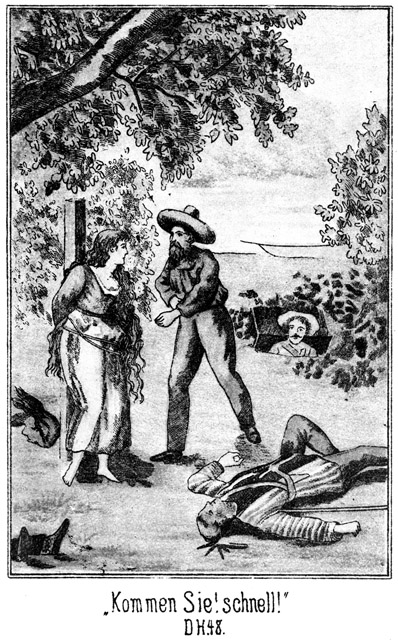»Sennora, Fräulein, kommen Sie! Schnell!« sagte Wilkins, indem er ihre Bande durchschnitt.
Sie öffnete die Augen und erblickte ihn. Er hatte deutsch gesprochen, da er ja von Steinbach wußte, daß sie eine Deutsche sei.
»Herrgott! Wer sind Sie?« fragte sie.
»Sennora Magda! Sennorita!« sagte Zimmermann.
Sie warf ihren Blick auf ihn.
»Sennor Carlos!«
»Kommen Sie! Rasch, rasch!«
Jetzt bedurfte es nicht eines zweiten Rufes. Sie sprang auf die Oeffnung zu und kam herein.
»Schnell weiter hinab, daß auch ich Platz habe,« bat Wilkins.
Die Beiden stiegen hinab; das heißt, er stieg, sie aber fiel mehr als daß sie stieg. Die Angst, die Anstrengung und Entbehrung der letzten Tage und Stunden machte sich endlich geltend. Er mußte sie stützen, und als sie unten die letzten Stufen erreichten, brach sie ohnmächtig zusammen.
»Mein Gott, sie stirbt!« klagte Zimmermann.
Wilkins achtete nicht auf die Worte. Er hatte den Deckel wieder zugezogen und lauschte, was nun draußen geschehen werde.
»Haben Sie es gehört? Sie stirbt!« rief es von unten.
»Schweigen Sie!«
»Wenn sie stirbt? Schweigen?«
»Fällt ihr nicht ein!«
»Herr, mein Heiland! Sie ist ja schon todt!«
»Wollen Sie still sein! Ich habe hier zu horchen. Unsere Sicherheit hängt davon ab.«
»Was geht mich unsere Sicherheit an, wenn Magda stirbt. Haben Sie denn kein Herz?«
»Und ich sage Ihnen nochmals, daß Sie schweigen sollen, sonst haben Sie es mit mir zu thun! Sind Sie denn ein Kind?«
Das half. Zimmermann war ruhig. Erst nach einer längeren Pause, während welcher ein dumpfes Heulen und Schreien von draußen hereingedrungen war, kam Wilkins herabgestiegen. Er meinte:
»Ich glaube, daß wir sicher sind.«
»Sicher! Das ist das Wenigste!«
»Oho! Wenn sie nun nach der Insel kämen, die Oeffnung entdeckten und uns folgten!«
»So würde ich den Gang gegen Hunderte vertheidigen.«
»Ja, Sie sind ein großer Held, besonders wenn es sich um die Ohnmacht einer Dame handelt. Glücklicher Weise liegt das Boot an der Insel, und ein zweites haben die Hallunken nicht. Wir dürfen also annehmen, daß sie wenigstens jetzt noch am Ufer bleiben. Steinbach wird sie beschäftigen. Wie steht es denn mit der Sennorita?«
»Todt! Ich glaube, Steinbach hat sie geschossen.«
»Wohin?«
»Ich weiß es nicht.«
»So leuchten Sie. Ich werde nachsehen.«
Die Rücksicht auf das Geschlecht der Ohnmächtigen hinderte ihn, die Kleider zu entfernen, aber auch so kam er zu der Ueberzeugung, daß sie nicht verwundet worden sei. Es war kein Tropfen Blutes am ganzen Gewande zu bemerken.
»Erschossen!« lachte er. »Vier Schüsse sind gefallen, und vier Leichen liegen oben; das giebt vier Kugeln in die Köpfe. Woher sollte die Kugel gekommen sein, welche die Sennorita getödtet hätte?«
»So meinen Sie wirklich, daß sie nur ohnmächtig ist?«
»Ja.«
»Was ist da zu thun?«
»Nichts. Wasser haben wir nicht. Wir müssen warten.«
»Tragen wir sie fort!«
»Pst! Junger Mann, bedenken Sie! Eine alte Negerin oder Indianerin könnte man in die Arme nehmen und forttragen. Bei einer jungen, hübschen Lady aber darf man sich so Etwas nicht erlauben.«
»Aber wenn sie nicht wieder erwacht!«
»Unsinn! An einer Ohnmacht ist noch keine Fliege gestorben, viel weniger eine Dame.«
»Ich habe solche Angst.«
»Und Sie wollen ein Jäger sein und diesen Haufen Maricopa's verfolgt haben!«
Da blickte Zimmermann ihn ernst an und antwortete:
»Das ist etwas Anderes. Um mich habe ich niemals Angst, um einen andern Menschen aber kann und darf ich sie haben, ohne eine Memme zu sein. Vielleicht verstehen Sie das nicht, Master Wilkins.«
»Na, bitte, verzeihen Sie! So war es freilich nicht gemeint. Wenn man Jemand lieb hat, so ist die Angst begreiflich, welche selbst der Beherzte empfindet. Ich kenne das. Ich habe ja eine Tochter. Und diese Dame ist Ihre – – hm! – Ihre Verwandte?«
»Nein. Ich sah sie nur zweimal, ganz vorübergehend, so daß ich kaum einige Worte mit ihr wechseln konnte. Dennoch aber habe ich die Pflicht –«
Er hielt inne. Magda hatte sich bewegt. Er legte den Mund an ihr Ohr und sagte:
»Magda! Sennorita Magda!«
»Was?« hauchte sie, ohne aber die Augen zu öffnen.
»Sehen Sie mich! Ich bin da.«
»Wer?«
»Karl! Karlos! Sie sind gerettet!«
»Gerettet – Karlos!« flüsterte sie.
Ein glückliches Lächeln glitt über ihr schönes Gesicht; aber die Augen blieben doch geschlossen. Es war, als ob sie in einen Schlaf versinken wolle.
»Wir dürfen sie nicht hier liegen lassen,« sagte Wilkins. »Tragen – das möchte ich auch nicht. Sie scheint auf Sie zu hören. Versuchen Sie es, sie munter zu machen!«
Zimmermann näherte seine Lippen abermals ihrem Ohre und sagte in bittendem Tone:
»Magda! Hören Sie mich?«
»Ja,« antwortete sie, aber erst als er seine Frage wiederholt hatte.
»Bitte, sehen Sie mich an!«
Jetzt schlug sie die Augen auf, richtete den Blick auf ihn, hielt denselben einige Augenblicke auf ihn geheftet und ließ dann die Lider wieder sinken.
»Er ist es,« lispelte sie. »Schöner Traum!«
»Es ist kein Traum. Sie wachen. Bitte, sehen Sie mich noch einmal an, Sennorita!«
Sie schlug die langen Wimpern abermals empor. Ihr Blick wurde belebter, selbstbewußter.
»Kein Traum?« fragte sie, umherblickend.
»Nein. Es ist Wirklichkeit.«
»Wirklichkeit?«
Sie richtete sich auf und blickte abermals um sich. Ihr Gesicht war blaß gewesen. Jetzt aber schoß eine glühende Röthe in dasselbe.
»Mein Gott, hier habe ich gelegen. Sennor Karlos! Wo bin ich denn? Wer ist dieser Sennor?«
»Sennor Wilkins, Ihr Retter.«
»Mein Retter? Also bin ich wirklich gerettet?«
»Ja. Sie befinden sich in Sicherheit.«
»Wo sind die Indianer?«
»Draußen am See. Sie befinden sich im Innern der Insel. Wir haben Sie herein geholt.«
»Ich dachte, man wolle mich erschießen.«
»Die Kugeln waren auf Ihre Peiniger gerichtet, welche nun todt sind.«
»Todt!« schauderte sie zusammen. »Schrecklich, schrecklich! Aber Gott sei ewig Dank, wenn ich mich wirklich in Sicherheit befinde! Was habe ich ausgestanden!«
Sie schlug die Hände vor das Gesicht, und nun kamen ihr die Thränen. Sie weinte.
Die Beiden ließen sie gewähren; dann sagte Wilkins:
»Beruhigen Sie sich jetzt, Sennorita! Sie haben nichts mehr zu befürchten. Der Schutz, unter welchem Sie sich jetzt befinden, ist stark genug, Sie gegen jedes fernere Weh zu bewahren.«
»Mein Vater! Meine Mutter!«
»Hoffentlich werden Sie Beide wiedersehen. Bitte, ermannen Sie sich! Es ist nicht gut möglich, daß wir uns länger hier verweilen.«
»Wohin gehen wir? Wohin führen Sie mich!«
»In das große Haus am See, welches Sie gesehen haben werden.«
»In die Mission, wo die Apachen sind? Werden sie mich nicht feindlich behandeln?«
»O nein. Die Apachen sind Ihre Freunde. Wir haben ja bereits seit gestern auf Sie gewartet, um Sie zu retten.«
»Seit gestern? Ah! Es war ein Sennor im Walde, welcher heimlich mit mir von Rettung sprach.«
»Er ist hier. Er ist es, welcher die vier Indianer erschossen hat, welche Sie an den Marterpfahl gebunden haben. Sie finden lauter Freunde, lauter Leute, welche es sehr gut mit Ihnen meinen. Ich werde Sie zu meiner Tochter bringen, von der Sie einen sehr freundlichen Empfang zu erwarten haben, zumal Sie einer Person sehr ähnlich sehen, welche wir so lieb gehabt haben. Glauben Sie, daß Sie nun wieder gehen können?«
»Ich glaube es. Versuchen wir es!«
Wilkins schritt mit dem Lichte voran; Magda folgte, und Zimmermann machte den Beschluß. Das abgemattete Mädchen kam nur langsam vorwärts; es dauerte sehr lange, ehe sie in den offenen Hof des Gebäudes traten. Soeben erscholl von dem Dache herab ein lautes, vielstimmiges, braußendes Gelächter.
»Was ist das?« fragte Magda befremdet. »War dies ein Lachen oder ein Indianergeheul?«
»Es ist unbedingt ein Gelächter,« antwortete Wilkins, »und doch kann ich es nicht glauben. Worüber sollte man so lachen? Unsere Lage ist ernst. Kommen Sie!«
Er führte sie eine Treppe hoch hinauf, öffnete eine Thür und sagte in das dahinter liegende Zimmer:
»Hier, Almy, ist die Dame. Wir haben sie gerettet. Ich muß gleich wieder fort. Entschuldige mich bei ihr! Sobald ich kann, komme ich wieder.«
Magda trat ein. Er machte die Thür hinter ihr zu und eilte auf die Plattform des Daches empor. Er kam grad noch zur rechten Zeit, um die letzte Scene des lächerlichen Intermezzos zu sehen.
Am hinteren Ende des Sees wuschen sich die Maricopas, welche sich dorthin retirirt hatten. Mehrere tanzten und schrieen noch im Mittelgrunde herum, und weiter im Vordergrunde, wälzte sich noch Der im Grase, welcher auf dem Baume und im Wasser vergebens Schutz vor den mephitischen Dünsten gesucht hatte.
»Was ist denn geschehen?« fragte er.
»Das will ich Euch wohl sagen,« antwortete Jim. »So Etwas ist ebenso unglaublich wie außerordentlich. Zwar weiß ich nicht, wie es eigentlich zugegangen ist, aber – ah, da kommen die beiden Mesch'schurs selbst, welche dieses Lustspiel gedichtet haben. Wendet Euch also an sie, Master Wilkins.«
Steinbach und Sam waren von der anderen Seite auf das Dach getreten. Sie wurden sofort umringt und mußten erklären. Steinbach that dies in kurzen Worten. Sam war mit dabei gewesen, zeigte sich aber dennoch von dieser Erklärung nicht zufriedengestellt. Er sagte:
»So weit ist Alles sehr leicht begreiflich. Wie aber steht es mit dem Blitze in der Hand, Master Steinbach?«
»Habt Ihr schon einmal von einem Schlagring gehört?«
»Ja. Man soll dergleichen drüben in den Alpen haben, um bei Prügeleien einen guten Hieb zu führen.«
»Auch von einem Schießringe?«
»Schießring? Nein. Was ist das?«
»Hier ist er. Seht ihn Euch an!«
Er zog den Ring aus der Tasche. Dieser ging natürlich von Hand zu Hand und wurde höchlichst bewundert.
»Die Construction ist sehr einfach. Der Ring hat fünf Schüsse,« erklärte Steinbach. »Bei jedem Hiebe geht einer los. Nach dem fünften Hiebe aber muß man natürlich wieder laden. Die Indianer haben nicht bemerkt, daß ich vor dem Hiebe diesen Schießring anlegte, den ich dann natürlich sogleich wieder in die Tasche steckte. Doch das ist Nebensache. Wie ist es mit der Dame gelungen, Master Wilkins?«
»Sehr gut. Sie befindet sich bei meiner Tochter. Hoffentlich werden die Maricopa's nicht entdecken, wie – – Sapperment! Schwimmen da nicht Einige auf die Insel zu? Ich sehe die Köpfe.«
»Ja,« meinte Steinbach. »Sie werden die vier Leichen holen wollen.«
»Leiden wir dies?«
»Warum nicht?«
»Sie werden unser Geheimniß entdecken.«
»O, ganz gewiß. Wenn die Thür einmal geöffnet gewesen ist, legt sich das Gras nicht wieder so genau wie vorher um den Umriß derselben. Man muß sich erst nach der Insel begeben, um die Spur zu vertilgen. Diese Leute werden sofort entdecken, daß sich eine Fallthür da befindet. Sie machen die Anderen darauf aufmerksam; diese steigen hinab – –«
»Nun, daran wollen wir sie hindern.«
Als Steinbach diese Worte sagte, zog er die Axt aus dem Gürtel und nahm sie aus dem Futterale. Man hatte vorhin von hier oben seine Meisterschüsse gesehen und sie nicht begreifen können, zumal es von hier aus erschienen war, als ob er mit der Axt geschossen habe. Darum waren Aller Augen jetzt auf diese eigenthümliche Waffe gerichtet. Als er sie zum Schusse anlegte, wendeten sich die Blicke hinaus auf das Wasser des Sees. Dort stand in diesem Augenblicke der vorderste der Schwimmer im Begriff, an das Ufer der Insel zu springen. Steinbach legte die Hand an den Mund und stieß einen schrillen, durchdringenden Schrei aus, wie die Indianer zu thun pflegen, wenn sie einander warnen wollen.
Der Rothe verstand den Laut und wendete sich, um herüber zu blicken. Steinbach winkte ihm mit dem Arme vom Ufer ab. Der Mann besann sich einen Augenblick, ob er es thun solle oder nicht, stieg aber dann doch auf die Insel.
»Gut! Wer nicht hört, der muß fühlen,« sagte Steinbach.
»Werden Sie ihn erschießen?« fragte Wilkins.
»Nein. Er hielt einen Spieß in der Hand, grad wie die andern Schwimmer auch. Jedenfalls wollen sie die Leichen an die Lanzen befestigen, um sie an das Land zu schaffen. Ich werde ihm die eine Hand lahm schießen.«
Er zielte, und der Schuß krachte. Der Wilde warf die Hand hoch empor und stieß einen lauten Schrei aus. Da stieg der Zweite ans Land, auch eine Lanze in der Hand. Der zweite Schuß blitzte auf, und der Getroffene machte dieselbe Handbewegung. Im nächsten Augenblicke sprangen Beide wieder in das Wasser und kehrten nach dem Ufer zurück. Sie hatten gemerkt, daß diese Schüsse genau so beabsichtigt gewesen waren, wie sie getroffen hatten.
»Donnerwetter!« sagte Tim. »Welche Meisterschüsse!«
»Esel! Da wunderst Du Dich?« antwortete Sam.
»Natürlich! Ein Flößer, der so schießt!«
»Dreifacher Esel! Ein Flößer! Pah! Der Fürst der Bleichgesichter ists.«
»Alle Teufel! Ists wahr?«
»Natürlich!«
»Von wem weißt Du es?«
»Von ihm selbst. Kann es auch anders sein? Ich habe es sofort gemerkt.«
»Du? Laß Dich nicht auslachen! Grad Du bist Derjenige gewesen, der sich am Allermeisten über ihn moquirt hat.«
»Das war zum Spaße.«
»Gehe mir mit Deinem Spaße! Wer da weiß, daß er es mit dem Fürsten zu thun hat, der wagt es nicht, Spaß mit ihm zu treiben. Nun aber ist mir Alles erklärlich. Sapperment! Welche Ehre, mit so einem Meister zusammenzutreffen! Hört Ihr es, wer er ist?«
Das Wort »Fürst der Bleichgesichter« ging von Mund zu Mund der Weißen und der Name »Tan-ni-kay« von Mund zu Mund der Apachen. Es waren ganz andere Blicke, welche jetzt auf ihn gerichtet wurden.
Er aber that, als ob er dies gar nicht bemerke, und wendete sich an den Häuptling der Apachen:
»Wo ist der Anführer der Maricopa's?«
»Mein Bruder komme, ihn zu sehen!«
Der Apache führte ihn hinab in ein Zimmer, in welchem sich der »eiserne Mund« befand, gefesselt an Händen und Füßen, entwaffnet und bewacht von zwei bewaffneten Apachen. Der Gefangene lag stolz und bewegungslos am Boden. Er that, als ob er die Eintretenden gar nicht bemerke.
»Warum hat mein rother Freund ihn gefesselt?«
»Weil er gefangen ist.«
»Er wird bald wieder frei sein.«
»Frei?«
Es war der Ausdruck eines ganz außerordentlichen Erstaunens, mit welchem die »starke Hand« dieses Wort sprach. Steinbach zog ihn mit sich fort an das Fenster, wo sich zwischen Beiden ein leise geführtes aber höchst angeregtes Gespräch entwickelte. Der Weiße wollte den Rothen zum Frieden, zur Versöhnung bewegen. Er hatte einen schweren Kampf, ging aber endlich doch als Sieger aus demselben hervor.
»Mein Bruder thue, was ihm beliebt,« sagte der Apache. »Er mag mich rufen lassen, wenn er mich braucht.«
Er verließ das Zimmer, jedenfalls in der Absicht, seine Apachen auf die von ihnen ungeahnte Wendung der Verhältnisse vorzubereiten. Steinbach trat zu dem Gefangenen und löste ihm die Fesseln.
»Stehe auf,« gebot er ihm.
Der Maricopa blieb liegen.
»Warum thust Du nicht, was ich Dir sage?«
»Die »eiserne Hand« kann auch liegend sterben!«
»Du wirst nicht sterben.«
»Nicht?«
»Nein, sondern Du wirst leben.«
»Als Diener und Sclave der Apachen?«
»Als freier Mann.«
Da fuhr der Maricopa mit einem Satze empor.
»Sagst Du die Wahrheit?«
»Hat der Fürst der Bleichgesichter jemals gelogen?«
»Nein. Aber Du hast nicht über mich zu bestimmen.«
»Wer sonst? Ich bin hier Gebieter.«
»Der Apache hat mich gefangen genommen.«
»Er hat Dich in meine Hand gegeben. Wo hast Du Deine Waffen?«
»Man hat sie in die Stube getragen, welche nebenan liegt.«
»So komm mit!«
Er trat mit ihm in das betreffende Gemach. Dort lag Alles, was man ihm abgenommen hatte, auf dem Tische.
»Nimm es Dir wieder! Es ist Dein Eigenthum.«
Der Rothe blickte den Weißen mit einem unbeschreiblichen Ausdrucke an. Nach seinem Begriffe war der Letztere gradezu verrückt.
»Du wunderst Dich über mich,« lächelte Steinbach. »Ich bin nicht Dein Feind. Wenn Du mir Dein Wort giebst, dieses Haus nicht ohne meine Erlaubniß zu verlassen, wird Dir nicht das Geringste geschehen.«
»Ich gebe es Dir.«
»So lege Deine Waffen an, und komm dann in das erste Gemach zurück.«
Steinbach ging voran und gab den beiden Wachen, die sich noch da befanden, den Befehl, die gefangenen Söhne des Häuptlings herbeizuholen.
Dieser Letztere kam bald nach. Er erhielt eine Decke, um sich nach seiner Manier setzen zu können. Als gleich darauf seine Söhne eintraten, ungefesselt und mit ihren Messern und Bogen und Köchern bewaffnet, schien sein Erstaunen gradezu in das Maßlose zu gehen. Zwar war er zu sehr Indianer, als daß er sich zu einer Freudenscene hätte hinreißen lassen; er blieb vielmehr scheinbar gleichgiltig und gab den beiden Jünglingen einen Wink, sich hinter ihm niederzusetzen, aber in seinem Auge glänzte doch ein nicht ganz zu verbergendes Etwas, und seine Stimme zitterte leise, als er sagte:
»Du selbst hast sie gefangen?«
»Ja.«
»Und giebst sie wieder frei?«
»Sie können gehen, wenn sie wollen.«
Da, erst jetzt, holte er tief Athem, wie um sich von einem schweren Alp zu befreien, und sagte, grad wie das »scharfe Beil« vorhin gesagt hatte:
»Warum sind nicht alle weißen Männer so wie Du!«
»Und nicht alle rothen so wie Du.«
»Das kommt von Deiner Zunge, nicht aber aus Deinem Herzen!«
»Es kommt aus dem Herzen.«
»Wie nun, wenn Du Dich in mir verrechnest.«
»So werde ich es sehr bedauern, Dich für edler gehalten zu haben, als Du wirklich bist, trotzdem aber werde ich ein Freund der rothen Männer bleiben.«
Da blickte der »eiserne Mund« lange schweigend vor sich hin. Ob wohl eine innere Wandlung mit ihm vorging? Endlich sagte er:
»Du bist der Häuptling der Bleichgesichter, und Du bist werth, diesen schönen Namen zu führen. Komm her zu mir, und setze Dich an meine Seite!«
Steinbach folgte natürlich dieser Aufforderung.
»Sage mir, was Du von mir verlangst!« forderte ihn der Rothe auf.
»Ich bitte Dich um Das, um was ich Dich bereits gebeten habe. Das weiße Mädchen hast Du mir verweigert; wir haben es uns selbst geholt. Nennst Du den »silbernen Mann« auch ferner Deinen Freund?«
»Ich habe ihn vorhin so genannt; aber er ist es niemals gewesen. Ich habe ihm mein Wort gegeben, ihn zu schützen, und dieses Wort kann ich nicht brechen.«
»So darf ich Dich nicht weiter bitten. Wirst Du ihn auch später beschützen, wenn Du von diesem Zuge nach Deinem Dorfe zurückkehrst?«
»Dann bin ich meiner Verbindlichkeit ledig.«
»Wie kommt es, daß er Dein Gefährte geworden ist?«
»Er ist das einzige Bleichgesicht in unserer Nähe. Die Maricopa's kaufen Gewehre, Pulver, Kugeln, Messer und alles Andere bei ihm im Todesthale. Daher kennen wir ihn, und daher zogen wir mit ihm, weil er uns die Gräber unserer Feinde versprach, während er die Schätze erhalten solle, welche wir nicht brauchen und nicht achten.«
»So mag er noch so lange unbelästigt bleiben, wie er sich unter Deinem Schutze befindet. Dann aber werde ich ihn heimsuchen.«
»Hast Du eine Rache an ihn?«
»Ja.«
»So nimm Dich in Acht. Er ist schlau und gewaltthätig. Ich habe mehrere Männer gekannt, welche eine Rache an ihn hatten. Sie kamen zu ihm, sind aber niemals wieder von ihm fortgegangen.«
»Kennst Du vielleicht ihre Namen?«
»Nein.«
»Du hast sie nicht gehört?«
»Ich habe sie gehört; aber die Namen der Bleichgesichter sind dem Ohre des rothen Mannes Das, was der Sand dem Auge ist; er thut ihm wehe. Ich habe Zwei gesehen. Erst kam Einer, welcher jung war. Wenn er alt geworden wäre, hätte er das Gesicht Deines Freundes, welchem dieses Haus gehört, erhalten.«
»Wie! Meinst Du, daß er Wilkins ähnlich gesehen habe?«
»Heißt der Herr dieses Hauses Wilkins?«
»Ja.«
»So hat jener junge Mann Wilkins ähnlich gesehen.«
»Herrgott! Endlich wird Licht! Und den Zweiten hast Du auch gesehen?«
»Einige Male.«
»Wie hieß er?«
»Das weiß ich nicht. Aber ich weiß, wem auch er so sehr ähnlich gesehen hat.«
»Nun wem?«
»Dem bleichgesichtigen Mädchen, welches wir hierher gebracht haben, um sie zu opfern.«
*
Steinbach wäre beinahe aufgesprungen; er besann sich noch, daß der Indianer zu stolz ist, seine Erregung merken zu lassen. Er als »Fürst der Bleichgesichter« durfte also nicht weniger Selbstbeherrschung zeigen.
»Willst Du mir wohl sagen, wie, wann und wo Du diese beiden Männer gesehen und getroffen hast?«
»Jetzt nicht, aber wenn der »silberne Mann« nicht mehr unter meinem Schutze steht. Jetzt bin ich sein Schirm und Schild; ich darf nicht von ihm erzählen.«
»Ich sehe ein, daß Du nicht anders kannst. Ich habe mit dem Häuptling der Apachen gesprochen. Er ist bereit, die Friedenspfeife mit Dir zu rauchen. Es ist besser, wenn Friede und Freundschaft zwischen den rothen Männern herrscht. Soll ich ihn rufen?«
»Nein.«
»Warum nicht? Wünschest Du nicht auch den Frieden?«
»Ich wünsche ihn, aber ich kann ihn jetzt noch nicht haben. Die Apachen haben mir in letzter Nacht meine Krieger getödtet. Blut um Blut, Leben um Leben, Mensch um Mensch. Wenn sie mir ebenso viele ihrer Leute geben, werde ich das Calummet rauchen.«
»Das werden sie nicht thun. Aber ich werde Dir für Deine rothen Krieger einige Bleichgesichter geben.«
Das electrisirte den Maricopa. Dieses Anerbieten war eigentlich ein unglaubbares, ein ungeheuerliches. Ein Bleichgesicht wollte seine Brüder hergeben. Aber ein weißer Gefangener ist dem Indianer lieber als zehn rothe. Darum fragte »der eiserne Mund«:
»Mein Ohr ist scharf; aber ich glaube, daß es jetzt geträumt hat. Was sagtest Du?«
»Wir haben mehrere weiße Gefangene unten im Keller; diese will ich Dir geben an Stelle der Apachen, welche Du verlangst.«
»Wie viele sind ihrer?«
Steinbach gab die Zahl an. Da rief der Rothe erstaunt:
»Und die willst Du mir geben, damit ich sie scalpiren kann!«
»Nein. Das sollst Du nicht. Du sollst sie mit Dir nehmen in die Wohnungen Deines Stammes, damit sie Dir dienen und Deine Befehle erfüllen. Sind sie Dir untreu, und begehen sie Verbrechen, dann, ja dann magst Du machen mit ihnen, was Dir beliebt.«
»So sind es nicht Freunde von Dir?«
»Nein.«
»Was haben sie Dir gethan?«
»Mir nichts. Sie sind Räuber und Mörder. Wenn sie nicht wären, so wäre auch Dein jetziger Kriegszug nicht verunglückt.«
»Willst Du mir das erklären?«
»Sie sind schuld, daß wir von Deiner Ankunft erfuhren. Einer ihrer Verbündeten sandte ihnen die Botschaft, daß Du mit einem weißen Mädchen nach dem Silbersee kommen werdest. Von ihnen haben wir es erfahren. Sonst hätten wir nichts gewußt, und Dein Ueberfall wäre Dir gelungen.«
Da glühten die Augen des Maricopa grimmig auf. Er sagte zornig:
»Und diese Männer giebst Du mir mit?«
»Alle. Nur Einen behalte ich für mich zurück.«
»Sie sollen meine Diener sein, ja, meine Diener und es soll ihnen an nichts fehlen, an gar nichts!«
Das hieß natürlich, daß sie seine Sclaven sein würden und daß es ihnen an Allem fehlen werde.
»Rufe den Häuptling der Apachen herbei!« fuhr er fort. »Ich bin bereit, mit Euch die Pfeife des Friedens zu rauchen.«
Kurze Zeit später saßen die beiden Häuptlinge mit Wilkins, Sam und Steinbach rund um ein Feuerbecken und besprachen die Grundlagen eines ewigen Friedens zwischen den Kriegern der Apachen und denjenigen der Maricopa's. Dieser Frieden wurde abgeschlossen, mit kräftigen Handschlägen besiegelt und aus dem Calummet beraucht.
Dann machte sich eine Prozession von rothen und weißen Männern auf, um den Maricopa's die Nachricht der Versöhnung zu bringen. Sie wurde von ihnen mit aufrichtiger Freude aufgenommen; Keiner aber freute sich so sehr, wie das alte, ehrliche »scharfe Beil«. Dieser Indianer ruhte nicht eher, als bis Steinbach mit ihm eine Extra-Friedenspfeife geraucht hatte.
Dabei fiel es Steinbach ein und auf, daß er Roulin, den silbernen Mann, gar nicht mehr zu sehen bekam. Als er den Alten nach ihm fragte, antwortete dieser mit einem spöttischen Achselzucken:
»Der silberne Mann ist wie der Thau.«
»Wieso?«
»Wenn die Sonne des Friedens kommt, vergeht er.«
»Meinst Du etwa, daß er nicht mehr da sei?«
»Das meine ich. Als Dein Gewehr unsere vier Krieger getödtet hatte, sah er, daß das weiße Mädchen in Eure Hände gerieth. Dann nahmt Ihr unsern Häuptling gefangen, er glaubte nun, daß unser Kriegszug verunglückt sei und daß wir uns an ihm, der der Anstifter war, rächen würden. Er ist ganz unbemerkt auf seinem Pferde davongeritten.«
Jetzt, da er das erfuhr, dachte Steinbach gar nicht daran, seine Erregung unter der Maske des Gleichmuthes zu verbergen. Er sprang von seinem Sitze empor und suchte den Häuptling der Maricopa's auf, welcher mit Sam, Wilkins und dem Häuptling der Apachen unter einem Baume saß, wo eine wiederholte Friedenspfeife den neu geschlossenen Bund zum wievielten Male bekräftigte.
Der »eiserne Mund« wollte es zunächst gar nicht glauben, daß sein weißer Verbündeter sich ohne Abschied entfernt habe. Weitere Nachforschungen ergaben aber die Richtigkeit dieser Aussage.
»Steht er nun noch unter Deinem Schutze?« fragte ihn Steinbach.
»Nein. Er hat sich aus demselben entfernt. Als er mich gefangen sah, ist er entflohen. Der Feigling ist mein Gefährte gewesen, wird es aber niemals wieder sein.«
»Wir müssen ihm schleunigst nach.«
»Warum?« fragte Wilkins.
»Weil er uns Auskunft über Ihren Neffen und auch über Adler geben kann.«
»Ist das möglich?«
»Ganz gewiß. Ich gehe sofort zu Magda Hauser, um zu versuchen, etwas Näheres über ihn zu erfahren.«
Als er bei den beiden Mädchen eintrat, machte seine Gestalt einen gewaltigen Eindruck auf Magda. Wieder hätte er bei ihrem Anblicke den Namen Tschita ausrufen mögen, so sehr ähnlich sah sie der einstigen Sultana. Leider konnte sie ihm nicht die gewünschte Auskunft geben, weder über ihre Eltern, noch über Roulin. Das Porträt ihrer Mutter aber besaß sie. Sie hatte es an einem goldenen Kettchen an ihrem Halse hängen. Als sie das Medaillon öffnete und er den Kopf sah, fuhr er mit der Hand zum Herzen.
»Anna von Adlerhorst!« hätte er beinahe ausgerufen. Doch drängte er die Worte noch zeitig genug zurück. Es konnte ja eine Täuschung möglich sein.
Da machte Almy ihn auf ein Anderes aufmerksam. Sie fragte ihn:
»Sie suchen Herrn Adler, den einstigen Oberaufseher meines Vaters. Haben Sie ihn einmal gesehen?«
»Nein.«
»So sehen Sie sich hier meine neue Freundin an. Magda sieht ihm außerordentlich ähnlich. Als er nach dem Westen ging, ließ er mir seine Photographie als Andenken zurück. Ich werde sie Ihnen zeigen.«
Sie brachte das heilig gehaltene Bild herbei. Als er einen Blick auf dasselbe warf, war es ihm ganz so, als ob er das Porträt Hermann von Adlerhorsts erblicke, welcher sich in Constantinopel Wallert genannt hatte. Doch ließ Steinbach sich auch hiervon nichts merken.
Er begab sich wieder hinaus an den See, um mit dem »eisernen Mund« zu sprechen. Dieser war nicht mehr vorhanden. Er hatte mit der »starken Hand« und einem Apachen den Silbersee verlassen, um der Fährte des »silbernen Mannes« nachzufolgen.
So thatkräftig und schnell entschlossen war der Häuptling der Apachen. Der »eiserne Mund« hatte sich ihm sogleich angeschlossen, um ihm einen Freundschaftsbeweis zu geben und sich zugleich an Roulin zu rächen.
Jetzt nun gab es große Berathung. Nun Wilkins wußte, wo er von den beiden Verschwundenen Nachricht erhalten konnte, litt es ihn nicht länger am Silbersee. Auch er wollte Roulin nach. Steinbach hatte natürlich dieselbe Absicht. Sam, Tim, Jim und Zimmermann erklärten, daß sie sich anschließen würden.
So verging der Nachmittag, der Abend und die Nacht unter dem Schmieden verschiedener Pläne. Am Morgen erhielten die Maricopa's die ihnen zugesagten Buschheaders ausgeliefert. Diese waren nicht wenig erschrocken, als sie erfuhren, welches Schicksal ihrer wartete. Sie hatten es verdient. Sie wollten sich beschweren; sie klagten, zankten, fluchten; es half ihnen nichts. Die Maricopa's zogen am Nachmittage mit ihnen ab. Natürlich nahmen sie die unscalpirten Leichen ihrer gefallenen Krieger mit.
Gegen Abend kehrte der Apache, welcher die beiden Häuptlinge begleitet hatte, auf schweißtriefendem Pferde zurück und meldete, daß die beiden Genannten der Fährte Roulin's bis nach dem Campo grande gefolgt seien; dorthin sollten die Andern nachkommen.
Nun gab es kein Halten mehr. Magda wollte zu ihren Eltern in das Todesthal. Almy wollte nicht zurückbleiben, da es sich um das Auffinden Adlers handelte. Es wurde beschlossen, die beiden Mädchen nach San Marcial zu bringen, wo sie mit der Südbahn bis nach Mohawk-Station fahren sollten, um unter dem Schutze Jims und Tims und Zimmermanns dort die Andern zu erwarten.
Von den Gefangenen war nur Einer zurückgeblieben, nämlich der einstige Derwisch, welchen Steinbach für sich behalten wollte. Er sollte von dem Förster Rothe verpflegt und bewacht werden, welcher mit seinen Verwandten am Silbersee blieb, um Sams Rückkehr daselbst abzuwarten. Natürlich war der Förster nicht allein. Es blieb eine Anzahl der Apachen da, um das Missionsgebäude zu hüten, und diese Leute schienen zuverlässig genug zu sein, so daß man ihnen Alles anvertrauen konnte, zumal kein Grund vorhanden war, irgend ein störendes oder gar feindseliges Ereigniß zu erwarten.
Am frühen Morgen bereits wurde aufgebrochen. Dann lag der Silbersee, an dessen Wasser es in der letzten Zeit so lebhaft hergegangen war, still und einsam an seinen Ufern. Gab es in seiner Nähe oder im Missionsgebäude denn wirklich solche Schätze, wie man vermuthete – –?
Bereits am Nachmittage wurde diese Einsamkeit unterbrochen. Durch den vom Norden in das Thal führenden Paß kamen drei Reiter langsam herbeigetrabt. Zwei trugen abgeschabte Jägerkleidung. Der Dritte hatte ein weniger mitgenommenes Gewand an. Auch sein Pferd war frischer und rüstiger als die Thiere, er deutete auf das Wasser und sagte:
»Das ist der Silbersee, Sennor, von welchem ich sagte, daß wir vorüber müßten. Hat Eure Reise Eile?«
»Warum fragt Ihr?«
»Weil mir scheint, daß wir bald einen Regen haben werden, und ich möchte die Nacht lieber in einem Zimmer zubringen, als unter dem Himmel. Trocken bleiben ist auf alle Fälle besser, als im Regen im Walde campiren.«
»Ihr sprecht vom Zimmer. Giebt es denn hier irgend einen bewohnten Ort?«
»Natürlich. Das ist die alte, berühmte Mission am Silbersee.«
»Ah! Mönche! Das ist mein Geschmack nicht.«
»Die waren früher einmal da, sind nun aber schon längst zu den andern frommen Vätern versammelt. Was Ihr da finden werdet, sieht gar nicht nach Mönch aus, nicht einmal nach Nonne.«
»Doch nicht etwa eine junge Sennorita?«
»Grad das und nichts Anderes. Und was für Eine! Schön wie ein Engel, fromm wie eine Heilige und verführerisch wie eine Venus.«
»Wer ist sie denn, und wie heißt sie?«
»Die eine Frage kann ich beantworten, die andere aber nicht. Sie wird allgemein die Taube des Urwaldes genannt und wohnt mit ihrem Vater unter dem Schutze der Apachen in der alten, verlassenen Mission.«
»Sie muß doch einen Namen haben.«
»Hoffentlich. Ich kenne ihn leider nicht.«
»Ist sie reich?«
»Läßt sich denken. Hier um den See herum soll mancher Schatz vergraben liegen.«
»Ist es noch weit bis zu der Mission?«
»Gar nicht. Hier biegen wir um den Felsen, und da liegt sie. Seht Ihr, da links.«
»Hm! Nicht übel. Und Ihr denkt, daß wir heut Regen bekommen?«
»Ganz gewiß. Wir haben Euch nichts zu befehlen. Ihr habt uns als Führer gemiethet und bezahlt uns gut. Wir müssen uns also nach Euern Befehlen richten. Aber wir haben doch auch auf Euer Wohl zu sehen, und wenn Ihr auf einen guten Rath hören wollt, so bleiben wir heut Nacht in der Mission.«
»Wird man uns dort aufnehmen?«
»Sehr gern. In solcher Gegend ist man froh, einen Weißen zu sehen.«
»Na, wollen es versuchen.«
Den beiden Führern war es um ein gutes Quartier, dem Herrn aber wohl meist um das Mädchen zu thun, welches man ihm als eine solche Schönheit beschrieben hatte, noch dazu unter so poetisch-geheimnißvollen Namen.
Es schien sich kein Mensch in der Nähe des Sees zu befinden. Die drei Reiter bemerkten freilich nicht die Apachen, welche hinter den Felsen saßen und den Eingang der Mission im Auge hatten. Der eine Führer klopfte. Er mußte dies wiederholt thun, ehe das Guckloch geöffnet wurde.
»Wer seid Ihr?« fragte die alte Indianerin.
»Reisende, wir kommen von Isleta und wollen nach Prescott hinab.«
»Weshalb klopft Ihr an?«
»Wir bitten um ein Quartier für die Nacht.«
»Schlaft unter den Bäumen!«
»Es wird heut regnen.«
»Hm! Seid Ihr Yankees?«
»Nein. Wir sind gute Neu-Mexikaner. Dieser Sennor aber ist aus dem Norden.«
»Ich werde fragen.«
Sie machte das Loch wieder zu.
»Sapperment!« lachte der Yankee. »War das etwa Eure Taube des Urwaldes?«
»Spottet nicht! So häßlich dieses alte Weib ist, so schön ist die Taube.«
»Wenn sie nur auch gastfreundlicher ist!«
»Keine Sorge. Wir erhalten sicherlich aufgemacht.«
Er hatte Recht. Bereits nach kurzer Zeit öffnete die Alte das Thor und sagte:
»Reitet hier herein, geradeaus bis in den Hof!«
Sie folgten dieser Weisung. Im Hofe saß ein Indianer zu Pferde. Er that so, als ob er sich gar nicht um sie bekümmere, nahm sie aber heimlich sehr scharf in die Augen. Als sie abgestiegen waren, sahen sie einen Mann aus dem Treppeneingang treten.
»Ist das der Vater der Taube?« fragte der Yankee.
»Nein. Ich kenne ihn nicht. Habe ihn noch niemals gesehen.«
»Ja. Dieser Kerl aber war niemals da.«
Der betreffende Mann kam langsam auf sie zu, grüßte und fragte in ziemlich schlechtem Englisch:
»Ihr wollt hier übernachten, Sennores?«
»Ja.«
»Darf ich vielleicht um Euern Namen bitten?«
Diese Frage war an den Yankee gerichtet. Derselbe gab zur Antwort:
»Ich heiße Leflor.«
»Woher?«
»Hm! Ihr scheint die Manieren eines Polizeimannes zu haben.«
»Ist hier auch nothwendig, zumal jetzt. Also bitte!«
»Aus Wilkinsfield, drüben in Arkansas.«
»Sapperment! Ist das möglich?«
»Möglich? Wieso? Es ist sogar wirklich. Wie kommt es, daß Ihr Euch so sehr darüber wundert, daß ich aus diesem Orte bin?«
»Weil der Herr dieses Hauses von ebenda her ist.«
»Alle Teufel! Wie heißt er?«
»Wilkins.«
Der Yankee erbleichte. Er war ja jener Leflor, welcher Wilkins aus seiner Pflanzung vertrieben, später nach ihm gesucht, ihn aber niemals gefunden hatte. Er beherrschte sich möglichst und meinte in scheinbar gleichgültigem Tone:
»Hoffentlich fallen wir diesem Herrn nicht beschwerlich.«
»O nein. Er ist verreist.«
»Ah! Auf wie lange?«
»Auf unbestimmte Zeit.«
»Seine Familie ist aber doch zurückgeblieben?«
»Leider nicht. Er hat nur Miß Almy, und diese ist mit ihm fort.«
»Wie schade. Ich hätte die Beiden gern begrüßt. Sind noch andere Personen aus jener Gegend da?«
»Keine einzige.«
»Das thut mir wirklich herzlich und aufrichtig leid. Lieber möchte ich da gleich wieder fort.«
»Oho! Wenn Ihr Master Wilkins kennt, so würdet Ihr ihm willkommen sein. Darum ist es meine Pflicht, Euch ebenso willkommen zu heißen. Kommt mit herauf zu uns! Eure Diener mögen sich dort an den Indianer wenden, der für sie sorgen wird.«
»Oho, Diener!« knurrte der eine Führer, hielt es aber doch für gut, sich in die Anordnung zu fügen.
Leflor war außerordentlich erschrocken gewesen; jetzt aber freute er sich königlich, hier eingekehrt zu sein. Er hatte den Aufenthalt des so lange Gesuchten kennen gelernt und hoffte, auch außerdem von dieser Entdeckung zu profitiren. Es kam nun, da er einmal seinen Namen und Wohnort genannt und beide unmöglich wieder ableugnen konnte, darauf an, daß sich Niemand hier befand, der sein Verhältniß zu Wilkins genau kannte.
Er folgte dem Manne nach oben in eine Stube, wo zwei Frauen und ein junger Bursche saßen.
»Ich bringe Euch hier einen guten Freund von Master Wilkins,« sagte er zu ihnen, »der gekommen ist, ihn zu besuchen.«
»Noch heut Morgen, Herr Leflor, hättet Ihr ihn angetroffen. Das läßt sich aber nun nicht ändern. Ich selbst bin eigentlich Gast hier. Ich heiße Rothe und war Förster drüben in Deutschland. Hier ist mein Sohn, meine Frau und meine Schwägerin, welche – ah, da fällt mir ein, daß Sam Barth ja auch in Wilkinsfield gewesen ist. Kennt Ihr ihn?«
»Ja,« antwortete Leflor erschrocken.
»Nun, das freut uns. Er ist nämlich der Bräutigam meiner Schwägerin.«
»Jedenfalls befindet er sich hier?«
»Nein. Er war hier, ist aber heut mit Master Wilkins, Jim und Tim und Steinbach fort.«
»Jim und Tim –?« entfuhr es Leflor.
»Ja. Kennt Ihr auch die?«
»Sehr gut. Nanntet Ihr da nicht auch einen Steinbach?«
»Ja. Er kam hierher, um einen gewissen Adler zu suchen, der in Wilkinsfield Oberaufseher gewesen ist. Vielleicht habt Ihr auch diesen gekannt?«
»Er war mein bester Freund.«
»Seht, seht! Wie sich das so trifft. Na, setzt Euch nieder und macht es Euch bequem. Wir werden den Abend recht gemüthlich verplaudern.«
Leflor nahm Platz und erfuhr nach einigen Fragen, daß er eine Entdeckung nicht zu fürchten habe. Es befand sich kein Mensch hier, der ihm hätte gefährlich werden können. Nun erst überkam ihm ein außerordentliches Wohlbehagen. Er kam sich vor wie ein Dieb, welchem der Hausherr nicht nur alle Schätze zeigt, sondern auch den Ort, an welchem sich die Schlüssel dazu befinden.
Die Frauen entfernten sich, um das Abendessen zu bereiten. Indessen ergingen die drei Andern sich in einem sehr animirten Gespräche, im Verlaufe dessen Leflor ganz unauffällig den Förster examinirte und dessen ganze Erlebnisse erfuhr. Ebenso bekam er die Erlebnisse der letzten Tage erzählt.
»Aber wo sind denn diese Leute alle hin, welche heute abgereist sind?« fragte er schließlich.
»Das weiß man nicht. Nur die beiden Häuptlinge, welche voran sind, wissen die Richtung. Die jungen Damen sind nach Mohawk-Station, wo sie warten, bis die Männer zu ihnen stoßen. Diese aber sind eben jenem Musjöh Roulin nach. Man hat mich nicht eingeweiht. Ich weiß nur das, was ich ganz zufällig gehört habe. So viel aber ist sicher, daß sie einen jungen Wilkins und jenen Adler suchen.«
Jetzt wurde das Essen aufgetragen. Bei dieser Gelegenheit erkundigte sich der ehrliche Förster, ob auch das Essen für den Gefangenen fertig sei. Die Frage wurde bejahend beantwortet.
Für Leflor konnte jede Kleinigkeit hier von Nutzen werden. Ein Gefangener hier, das war sehr auffällig. Er fragte also wie nur so nebenbei:
»Es giebt hier Gefangene? Wohl Indianer?«
»O nein; er ist ein Weißer.«
»Doch nicht. Hat er eine Strafe abzusitzen?«
»Was Sie meinen! Als ob wir hier ein Bezirksgericht oder so Etwas hätten! Nein, nein! das ist sehr einfach Privatangelegenheit. Der Kerl wollte hier mit einbrechen und wurde mit den Andern festgehalten.«
»Ich denke, sie sind Alle den Maricopa's ausgeliefert worden, wie Ihr vorhin erzähltet?«
»Alle, nur dieser Eine nicht. Mit ihm scheint Steinbach etwas ganz Besonderes vorzuhaben, vielleicht weil er ein Bote jenes Walker gewesen ist.«
»Walker?«
Er wollte es blos fragen, schrie aber den Namen in seiner Erregung laut auf. Dabei fuhr er mit der Hand unwillkürlich nach seiner Brusttasche. Dort steckte ein Brief, welcher folgendermaßen lautete:
»Macht Euch sofort auf und kommt zu mir. Ich habe Euch Wichtiges zu sagen. Ich nenne mich jetzt Robin und wohne bei Prescott, Arizona, in den Mogollon-Bergen. Jedermann weißt Euch zu mir.
Walker.«
Der Förster blickte Leflor erstaunt an. Er fragte:
»Das klang ja, als ob es Euch erschreckt hätte.«
»O nein. Warum?«
»Weil Ihr so laut riefet.«
»Davon habe ich keine Ahnung. Wer mag denn wohl dieser Walker sein, der solche Spitzbuben hierher schickte?«
»Ein schöner Kerl!«
Und nun erzählte er Alles, was er von Sam Barth, Jim und Tim über den Genannten erfahren hatte. Zuletzt bemerkte er noch: »Und denkt Euch nur, der Kerl, den Walker geschickt hat, ist noch dazu ein alter Bekannter von mir!«
»Unmöglich! Das wäre ja ein reines Wunder.«
»Beinahe. Der Kerl nannte sich hier Bill Newton, ist Derwisch und Mörder in der Türkei gewesen, und war vorher unter dem Namen Florian, Kammerdiener, dessen Förster ich war.«
»Wunderbar! Dieser Mann ist interessant. Er mag wohl ein rechtes Spitzbubengesicht haben?«
»So ziemlich. Seid Ihr vielleicht so Etwas, was man einen Psycholog nennt?«
»Jawohl.«
»Nun, wenn Ihr ihn Euch einmal ansehen wollt, so kann es ja geschehen.«
»O, sehr gern!«
»Ich werde ihm das Essen hinuntertragen. Ihr könnt mitgehen, wenn es Euch beliebt.«
Er nahm einen großen Schlüssel vom Nagel und ging mit Leflor nach der Küche, wo er ein Stück Fleisch und ein Gefäß mit Wasser holte. Dann stiegen Beide die zwei Treppen in den Keller hinab. Es verstand sich ganz von selbst, daß Leflor sich die Oertlichkeit auf das Genaueste einprägte. Der Schlüssel, welchen der Förster trug, schloß die Thür. Rothe öffnete diese und trat hinein. Als er das Essen hingelegt hatte, sagte er zu dem Gefangenen:
»Bursche, stehe einmal auf! Dieser Herr will Dich ansehen.«
Der Gefangene gehorchte nicht, erhielt aber einige derbe Stöße, so daß er endlich aufstand.
»Da, Master Leflor, guckt Euch einmal das Gesicht an. So sieht ein Hallunke aus, der Spitzbube, Derwisch, Mörder und Kammerdiener gewesen ist.«
»Wie war sein eigentlicher Name?«
»Florin.«
»So ist er wohl ein Franzose?«
»Freilich.«
»Sprecht Ihr auch französisch, Förster?«
»Kein Wort.«
»Schade darum! Sonst könntet Ihr ihm in seiner Muttersprache die Meinung sagen; ungefähr so: Tu seras sauvé!«
Diese Worte bedeuten ›Du wirst gerettet werden‹. Der gute Förster ahnte das nicht. Er hatte die Aussprache dieser drei Worte »tu seras soweé« ein Wenig verstanden und antwortete:
»A Sauvieh? Ja, das ist er. Da drückt sich der Franzose ganz richtig aus. Na, sein Brod ist ihm gebacken. Er wird vergiftet und ausgestopft wie ein Uhu, wenn Steinbach wiederkommt. Ich mag nicht in seiner Haut stecken.«
Er schloß wieder zu und kehrte mit Leflor in die Stube zurück. Dort hing er den Schlüssel wieder an denselben Nagel, was Leflor sehr wohl bemerkte.
Dieser Letztere ließ es sich nun angelegen sein, Etwas über die Art und Weise, in welcher das Haus bewacht wurde, zu erfahren. Der Förster theilte ihm aufrichtig mit, daß im Hofe zwei Indianer, im Hause selbst aber Keiner postirt seien. Draußen, grad gegenüber dem Thore hatten drei Apachen ihren Posten. Hiermit konnte sich der Yankee zufrieden geben. Er schützte bald Müdigkeit vor und bat, ihm sein Zimmer anzuweisen.
»Zimmer anweisen!« lachte der Förster. »Ihr redet, als ob Ihr Euch in einem Hotel befändet. Hier giebt es zwar viele Räumlichkeiten, aber äußerst wenig Möbels. Eigentlich könnte ich Euch nur eine leere Stube geben; da Ihr aber ein guter Freund von Master Wilkins seid, so sollt Ihr hier bleiben. Ihr könnt da auf dem Kanapee schlafen. Das ist ein seltener Genuß im fernen Westen.«
»O, ich will Euch nicht berauben oder vertreiben!«
»Das thut Ihr gar nicht. Wir schlafen nicht hier, sondern in zwei Kammern am Ende des Corridors.«
Auch das war beruhigend. Die Förstersfamilie verabschiedete sich, und nun befand Leflor sich allein. Es konnte nicht besser passen. Der Förster schien es wirklich darauf abgesehen zu haben, ihm Alles ganz und gar mundrecht zu machen.
Zunächst unternahm er nichts. Aber als Mitternacht nahe war und draußen ein Sturm sich erhob, welcher ein leises Geräusch im Innern des Hauses gar nicht hörbar werden ließ, da nahm er den Schlüssel von der Wand und schlich sich hinaus und hinab in den Keller. Natürlich ging dies nicht sehr schnell. Er hatte die Indianer zu fürchten, traf aber glücklicher Weise auf kein Hinderniß. Auch die Thür, hinter welcher der Gefangene steckte, öffnete sich geräuschlos. Er trat ein.
»Wollt Ihr mich befreien?« fragte der Gefangene.
»Ja, kommt heraus. Ihr geht mit mir hinauf in meine Stube.«
»Sind wir da sicherer?«
»Ich denke es.«
Der Derwisch kam heraus und Leflor schloß die Thür wieder zu. Dann nahm er den Andern bei der Hand, um ihn zu führen. Sie gelangten unbemerkt und glücklich oben in der Stube an, wo Leflor natürlich kein Licht brannte. Er hing den Schlüssel wieder an seinen Ort, führte den Gefangenen nach dem Kanapee und setzte sich neben ihn.
»Gewiß sendet Euch Walker?« fragte der Derwisch.
»O nein. Ich rette Euch aus freien Stücken.«
»Wie käme das? Ich kenne Euch nicht. Wenigstens schien es mir bei dem geringen Lichtscheine, als ob ich Euch noch niemals gesehen habe.«
»Ich Euch auch nicht. Aber doch interessire ich mich sehr lebhaft für Euch. Ich lernte vor Jahren Walker, den Ihr nanntet, kennen; ich machte ein Geschäft mit ihm und jetzt will ich ihn wieder aufsuchen. Hier einkehrend, hörte ich, daß man Euch eingesperrt habe, weil Ihr ein Bote Walkers seid. Darum beschloß ich, Euch zu retten.«
»Gott sei Dank oder meinetwegen auch allen Teufeln! Ihr befreit mich da aus einer verzweifelten Lage. Ich hatte hier nichts als den Tod zu hoffen, und zwar was für einen! Ich werde Euch ewig dankbar sein. Diesem Steinbach aber werde ich es heimzahlen und zwar baldigst.«
»Ihr liebt ihn wohl nicht?«
»Kein Mensch kann so gehaßt werden wie er von mir!«
»Hm! Auch ihm habe ich meine Liebe gewidmet!«
»Ists möglich! Auch Ihr?«
»Ja; dieser Mensch scheint sich um Alles zu bekümmern, was ihm nichts angeht. Er kam in meine Gegend und schnüffelte da herum, bis er einen Grund fand, hierher zu gehen und mich in ungeheuren Schaden zu bringen.«
»So sind wir also Gesinnungsgenossen?«
»Leidensgefährten.«
»Und können Verbündete werden, wenn es Euch recht ist. Ihr scheint ein gut situirter Mann zu sein und ich bin arm, aber ich versichere Euch, daß meine Hilfe nicht zu verachten ist.«
»Glaube es gern und nehme sie an. Wir wollen uns über diesen Steinbach hermachen, wie die Meute über den Wolf. Wüßte ich nur, wo er hin ist!«
»Er wird Walker aufsuchen. Es ist ihm verrathen worden, daß ich Walkers Bote bin; das ist für ihn Grund genug dazu.«
»Auf alle Fälle muß er vor Steinbach gewarnt werden. Ich muß fort, dies zu thun.«
»Nicht so schnell. Wie wollt Ihr nach Prescott?«
»Alle Teufel! Ich habe kein Pferd.«
»Und ich kann Euch keins verschaffen, wenigstens hier nicht. Wir reiten von hier aus über Silber-City nach Casa grande und Phönix –«
»O weh! Und nach Prescott wollt Ihr?«
»Freilich. Ich habe zwei Führer.«
»Schöne Kerls! Die betrügen Euch um wenigstens drei Tagereisen. Oder sollten sie den Weg über das Gebirge wirklich nicht kennen! Ah, wenn Ihr mit mir gehen könntet! Wir haben ja das gleiche Ziel.«
»Vielleicht läßt es sich möglich machen.«
»Warum nicht? Ich habe da einen Gedanken. Wann reitet Ihr ab?«
»Kurz nach Tagesanbruch.«
»Und ich gehe natürlich eher fort. Vor dem Spätvormittag wird man mein Verschwinden gar nicht bemerken. Ich gehe also ganz gemüthlich nach Silber-City zu. Ihr kommt später nach. In zwei Stunden werdet Ihr einen Bergsturz erreichen, welcher interessant anzusehen ist. Ihr steigt ab, um ihn Euch zu betrachten, und Eure Führer werden auch absteigen. Ich halte mich versteckt, ergreife den günstigen Augenblick und reite mit den beiden Pferden der Führer davon. Ihr werft Euch natürlich sofort auf Euer Pferd, um mich zu verfolgen. Dann werden diese braven Kerls auf Euch warten; wir Beide aber reiten in aller Gemüthlichkeit nach Prescott zu Walker. Wie gefällt Euch dieser Plan?«
»Er ist ausgezeichnet. Ich erhalte einen besseren Wegweiser und Ihr kommt nicht nur zu einem Pferde, sondern sogar zu zweien.«
»So möchte ich mich jetzt aufmachen. Es ist gar nicht mehr lange bis zum Tagesgrauen.«
»Wie wollt Ihr hinaus?«
»Durch das Thor jedenfalls nicht.«
»Das ist ja verschlossen und im Hofe halten zwei Indianer Wache.«
»Also muß ich hier zum Fenster hinab.«
»Ganz gut. Ich gebe Euch mein Lasso dazu.«
»Und könntet Ihr mir nicht ein Messer borgen? Es ist möglich, daß ich mich meiner Haut zu wehren habe.«
»Ihr sollt es erhalten. Nehmt Euch aber auch da draußen in Acht, daß Ihr nicht erwischt werdet. Dem Thore gegenüber steht auch ein Indianerposten.«
»Keine Sorge! Bin ich einmal außerhalb des Gebäudes, so soll mich nicht so leicht Jemand ergreifen. Also bitte, binden wir das Lasso hier an das Tischbein, damit nicht Ihr Euch unnöthig anzustrengen habt. Und nun das Fenster auf!«
Er ließ sich hinab. Leflor zog sein Lasso zurück und machte das Fenster wieder zu.
Des andern Morgens früh punkt neun Uhr geschah zweierlei: Als der Förster um diese Zeit in den Keller kam, war der Gefangene fort – und dort am Bergsturze warteten die beiden armen Führer, daß Leflor ihnen die Pferde zurückbringen werde. Sie warteten vergebens. –